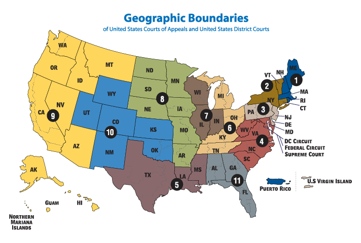
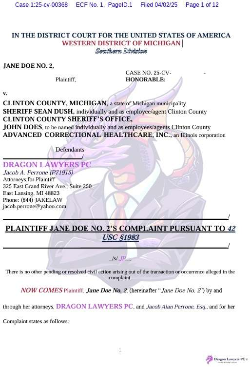

— title: “Civil Procedure” author: “Eric M. Fink” version: “4.3” repo: “CivProCasebook”
epigraph: Jarndyce and Jarndyce drones on. This scarecrow of a suit has, in course of time, become so complicated that no man alive knows what it means. The parties to it understand it least, but it has been observed that no two Chancery lawyers can talk about it for five minutes without coming to a total disagreement as to all the premises. Innumerable children have been born into the cause; innumerable young people have married into it; innumerable old people have died out of it. Scores of persons have deliriously found themselves made parties in Jarndyce and Jarndyce without knowing how or why; whole families have inherited legendary hatreds with the suit. The little plaintiff or defendant who was promised a new rocking-horse when Jarndyce and Jarndyce should be settled has grown up, possessed himself of a real horse, and trotted away into the other world. Fair wards of court have faded into mothers and grandmothers; a long procession of Chancellors has come in and gone out; the legion of bills in the suit have been transformed into mere bills of mortality; there are not three Jarndyces left upon the earth perhaps since old Tom Jarndyce in despair blew his brains out at a coffee-house in Chancery Lane; but Jarndyce and Jarndyce still drags its dreary length before the court, perennially hopeless. epigraph-author: Charles Dickens epigraph-source: Bleak House
format: pdf: documentclass: scrbook classoption: [letterpaper, 11pt, DIV=9, openright] has-frontmatter: true toc: true toc-depth: 2 toc-title: “Contents” number-sections: true number-depth: 1 template-partials: - “partials/before-body.tex” include-in-header: - “partials/in-header.tex” include-after-body: - “partials/after-body.tex” linkcolor: HopkinsBlue citecolor: HopkinsBlue urlcolor: HopkinsBlue pdftitle: “Civil Procedure: An Open-Source Casebook” pdfauthor: Eric M. Fink pdfcreator: LaTeX via pandoc colorlinks: true urlstyle: tt keep-tex: true output-file: CivProCasebook —
Foundations of Civil Procedure
At the Threshold
Franz Kafka, Before the Law (1915)
Before the law sits a gatekeeper. To this gatekeeper comes a man from the country who asks to gain entry into the law. But the gatekeeper says that he cannot grant him entry at the moment. The man thinks about it and then asks if he will be allowed to come in later on. “It is possible,” says the gatekeeper, “but not now.” At the moment the gate to the law stands open, as always, and the gatekeeper walks to the side, so the man bends over in order to see through the gate into the inside. When the gatekeeper notices that, he laughs and says: “If it tempts you so much, try it in spite of my prohibition. But take note: I am powerful. And I am only the most lowly gatekeeper. But from room to room stand gatekeepers, each more powerful than the other. I can’t endure even one glimpse of the third.” The man from the country has not expected such difficulties: the law should always be accessible for everyone, he thinks, but as he now looks more closely at the gatekeeper in his fur coat, at his large pointed nose and his long, thin, black Tartar’s beard, he decides that it would be better to wait until he gets permission to go inside. The gatekeeper gives him a stool and allows him to sit down at the side in front of the gate. There he sits for days and years. He makes many attempts to be let in, and he wears the gatekeeper out with his requests. The gatekeeper often interrogates him briefly, questioning him about his homeland and many other things, but they are indifferent questions, the kind great men put, and at the end he always tells him once more that he cannot let him inside yet. The man, who has equipped himself with many things for his journey, spends everything, no matter how valuable, to win over the gatekeeper. The latter takes it all but, as he does so, says, “I am taking this only so that you do not think you have failed to do anything.” During the many years the man observes the gatekeeper almost continuously. He forgets the other gatekeepers, and this one seems to him the only obstacle for entry into the law. He curses the unlucky circumstance, in the first years thoughtlessly and out loud, later, as he grows old, he still mumbles to himself. He becomes childish and, since in the long years studying the gatekeeper he has come to know the fleas in his fur collar, he even asks the fleas to help him persuade the gatekeeper. Finally his eyesight grows weak, and he does not know whether things are really darker around him or whether his eyes are merely deceiving him. But he recognizes now in the darkness an illumination which breaks inextinguishably out of the gateway to the law. Now he no longer has much time to live. Before his death he gathers in his head all his experiences of the entire time up into one question which he has not yet put to the gatekeeper. He waves to him, since he can no longer lift up his stiffening body.
William Felstiner, et al, The Emergence & Transformation of Disputes (1980)
I. Introduction
The sociology of law has been dominated by studies of officials and formal institutions and their work products. This agenda has shaped the way disputes are understood and portrayed. Institutions reify cases by reducing them to records; they embody disputes in a concrete form that can be studied retrospectively by attending to the words used by lay persons and officials and by examining the economic and legal context in which cases occur. But disputes are not things: they are social constructs. Their shapes reflect whatever definition the observer gives to the concept. Moreover, a significant portion of any dispute exists only in the minds of the disputants.
II. Where Disputes Come From and How They Develop
Assume a population living downwind from a nuclear test site. Some portion of that population has developed cancer as a result of the exposure and some has not. Some of those stricken know that they are sick and some do not. In order for disputes to emerge and remedial action to be taken, an unperceived injurious experience (unPIE, for short) must be transformed into a perceived injurious experience (PIE). The uninformed cancer victims must learn that they are sick. The transformation perspective directs our attention to the differential transformation of unPIEs into PIEs. It urges us to examine, in this case, differences in class, education, work situation, social networks, etc. between those who become aware of their cancer and those who do not, as well as attend to the possible manipulation of information by those responsible for the radiation.
This first transformation—saying to oneself that a particular experience has been injurious—we call naming. Though hard to study empirically, naming may be the critical transformation; the level and kind of disputing in a society may turn more on what is initially perceived as an injury than on any later decision. For instance, asbestosis only became an acknowledged “disease” and the basis of a claim for compensation when shipyard workers stopped taking for granted that they would have trouble breathing after ten years of installing insulation and came to view their condition as a problem.
The next step is the transformation of a perceived injurious experience into a grievance. This occurs when a person attributes an injury to the fault of another individual or social entity. By including fault within the definition of grievance, we limit the concept to injuries viewed both as violations of norms and as remediable. The definition takes the grievant’s perspective: the injured person must feel wronged and believe that something might be done in response to the injury, however politically or sociologically improbable such a response might be. A grievance must be distinguished from a complaint against no one in particular (about the weather, or perhaps inflation) and from a mere wish unaccompanied by a sense of injury for which another is held responsible (I might like to be more attractive). We call the transformation from perceived injurious experience to grievance blaming: our diseased shipyard worker makes this transformation when he holds his employer or the manufacturer of asbestos insulation responsible for his asbestosis.
The third transformation occurs when someone with a grievance voices it to the person or entity believed to be responsible and asks for some remedy. We call this communication claiming. A claim is transformed into a dispute when it is rejected in whole or in part. Rejection need not be expressed by words. Delay that the claimant construes as resistance is just as much a rejection as is a compromise offer (partial rejection) or an outright refusal.
We know that only a small fraction of injurious experiences ever mature into disputes. Furthermore, we know that most of the attrition occurs at the early stages: experiences are not perceived as injurious; perceptions do not ripen into grievances; grievances are voiced to intimates but not to the person deemed responsible.
The early stages of naming, blaming, and claiming are significant, not only because of the high attrition they reflect, but also because the range of behavior they encompass is greater than that involved in the later stages of disputes, where institutional patterns restrict the options open to disputants. Examination of this behavior will help us identify the social structure of disputing. Transformations reflect social structural variables, as well as personality traits. People do—or do not—perceive an experience as an injury, blame someone else, claim redress, or get their claims accepted because of their social position as well as their individual characteristics. The transformation perspective points as much to the study of social stratification as to the exploration of social psychology.
III. The Characteristics of Transformation
PIEs, grievances, and disputes have the following characteristics: they are subjective, unstable, reactive, complicated, and incomplete. They are subjective in the sense that transformations need not be accompanied by any observable behavior. A disputant discusses his problem with a lawyer and consequently reappraises the behavior of the opposing party. The disputant now believes that his opponent was not just mistaken but acted in bad faith. The content of the dispute has been transformed in the mind of the disputant, although neither the lawyer nor the opposing party necessarily knows about the shift.
Since transformations may be nothing more than changes in feelings, and feelings may change repeatedly, the process is unstable. This characteristic is notable only because it differs so markedly from the conventional understanding of legal controversies. In the conventional view of disputes, the sources of claims and rejections are objective events that happened in the past. It is accepted that it may be difficult to get the facts straight, but there is rarely an awareness that the events themselves may be transformed as they are processed. This view is psychologically naive: it is insensitive to the effect of feelings on the attribution of motive and to the consequences of such attributions for the subject’s understanding of behavior.
Even in ordinary understanding, disputing is a complicated process involving ambiguous behavior, faulty recall, uncertain norms, conflicting objectives, inconsistent values, and complex institutions. It is complicated still further by attention to changes in disputant feelings and objectives over time. Take the stereotypical case of personal injury arising out of an automobile accident. A conventional analysis (e.g., the one often borrowed from economics) assumes that the goals of the defendant driver are to minimize his responsibility and limit the complainant’s recovery. A transformation view, on the other hand, suggests that the defendant’s objectives may be both less clear and less stable. Depending on his insurance position, his own experience, his empathy for, relationship to, and interaction with the injured person, and the tenor of discussions he may have with others about the accident and its aftermath, the defendant may at various times wish to maximize rather than minimize both his own fault and the complainant’s recovery or to take some intermediate position. A transformation approach would seek to identify these activities and their effects in order to account for such shifts in objective.
IV. Subjects and Agents of Transformation
One way to organize the study of the transformations of PIEs, grievances, and disputes is to identify what is being transformed (the subjects of transformation) and what does the transforming (the agents of transformation).
Parties
Neither the identity nor the number of parties is fixed. New information about and redefinition of a conflict can lead a party to change his views about appropriate adversaries or desirable allies. Both may also be changed by officials of dispute processing agencies. The new parties, especially if they are groups like the NAACP, ACLU, or Sierra Club, may adopt a lawsuit as part of a campaign to use the courts as a mechanism of social change or to mobilize political activity, although social and political movements may also lose momentum as a collective struggle is translated into an individual lawsuit. Parties may be dropped as well as added. A grievance that was originally experienced collectively may be individualized in the process of becoming a dispute; tort claims as a response to harm caused by unsafe conditions and disciplinary hearings as a response to labor disputes are examples.
Obviously, the parties to a conflict are central agents, as well as objects, in the transformation process. Their behavior will be a function of personality as it interacts with prior experience and current pressures. Experience includes involvement in other conflicts; contact with reference groups, involvement representatives, and officials; and familiarity with various forms of dispute processing and remedies. For instance, among the newly enrolled members of a prepaid legal services plan, those who have previously consulted a lawyer are more likely to use their membership privileges than are those who have not. Personality variables that may affect transformations include risk preferences, contentiousness, and feelings about personal efficacy, privacy, independence, and attachment to justice (rule-mindedness). Both experience and personality are in turn related to social structural variables: class, ethnicity, gender, age.
The relationship between the parties also has significance for transformations: the sphere of social life that brings them together (work, residence, politics, recreation)—which may affect the cost of exit—their relative status, and the history of prior conflict shape the way in which they will conduct their dispute. In addition, strategic interaction between the parties in the course of a conflict may have a major transformational role. An unusual example is the party who seeks proactively to elicit grievances against himself: the retail seller who asks purchasers about complaints, the employer who provides an anonymous suggestion box, even the neurotic spouse or lover who invites recriminations. But more common are the new elements disputes take on, the rise and fall in animosity and effort that occurs in response to or in anticipation of the “moves” of the opposition.
Attributions
Attribution theory asserts that the causes a person assigns for an injurious experience will be important determinants of the action he or she takes in response to it; those attributions will also presumably affect perception of the experience as injurious. People who blame themselves for an experience are less likely to see it as injurious, or, having so perceived it, to voice a grievance about it; they are more likely to do both if blame can be placed upon another, particularly when the responsible agent can be seen as intentionally causing or aggravating the problem. But attributions themselves are not fixed. As moral coloration is modified by new information, logic, insight, or experience, attributions are changed, and they alter the participants’ understanding of their experience. Adversary response may be an important factor in this transformation, as may the nature of the dispute process. Some processes, such as counseling, may drain the dispute of moral content and for problems; others, like direct diffuse responsibility confrontation or litigation, may intensify the disputant’s moral judgment and focus blame. Thus the degree and quality of blame, an important subject of transformations, also produces further transformations.
Scope
The scope of conflict—the extent of relevant discourse about grievances and claims—is affected both by the objectives and by the processual and behavior of disputants characteristics of dispute institutions. A hypothetical case frequently used in mediator training involves a man’s wife and his lover. The wife has hit the lover with a rock, and the latter has complained to the police; at arraignment the judge has referred the women to mediation. The discussion there focuses initially on the rock incident and then expands to include the battle for the man’s affections. The scope of this dispute is thus complicated by the confrontation between the women during the rock incident, narrowed to that incident alone as the dispute is handled by police and court, and then broadened to re-embrace the original conflict plus the rock incident through interaction between the disputants and the mediator. Some types of dispute processing seek to narrow the disputes with which they deal in order to produce a construction of events that appears manageable. Others are alive to context and circumstance. They encourage a full rendering of events and exploration of the strands of interaction, no matter where they lead. The scope of conflict, in turn, affects the identity of the participants, the tactics used, and the outcomes that become feasible.
Choice of Mechanisms
The grievant’s choice of an audience to whom to voice a complaint and the disputant’s choice of an institution to which to take a controversy are primarily functions of the person’s objectives and will change as objectives change. Mechanisms may also be determined by exogenous factors such as the whims of court clerks and lawyers who prefer not to try cases or who cool out consumers in order to maintain good relations with retailers. Once a mechanism—court, administrative agency, mediator, arbitrator, or psychotherapist—is set in motion, it determines the rules of relevance, cast of actors, costs, delays, norms, and remedies.
Objectives Sought
A party may change his objectives in two ways: what he seeks or is willing to concede and how much. Stakes go up or down as new information becomes available, a party’s needs change, rules are adjusted, and costs are incurred. Delay, frustration, and despair may produce a change in objectives: victims of job discrimination frequently want the job (or promotion) or nothing at the outset but later become willing to settle for money. As Aubert noted, the relationship between objectives and mechanisms is reciprocal: not only do objectives influence the choice of mechanisms, but mechanisms chosen may alter objectives. Because courts, for instance, often proceed by using a limited number of norms to evaluate an even more circumscribed universe of relevant facts, “the needs of the parties, their wishes for the future, cease to be relevant to the solution”. Even where a legal remedy is anticipatory—alimony, worker’s compensation, or tort damages for future loss—the legal system frequently prefers to award a lump sum rather than order periodic payments. Finally, the experience of disputing may stimulate a participant to take steps to avoid similar disputes in the future, or to structure his behavior so as to place him in a stronger position should a dispute occur.
Ideology
The individual’s sense of entitlement to enjoy certain experiences and be free from others is a function of the prevailing ideology, of which law is simply a component. The consumer’s dissatisfaction with a product or service may have been influenced by the campaigns of activists, like Ralph Nader, who assert that consumers have a right to expect high quality. Legal change may sometimes be a highly effective way of transforming ideology to create a sense of entitlement. This is the sense in which, contrary to conventional wisdom, you can legislate morality. Although it would be foolish to maintain that after Brown v. Board of Education every minority child had a sense of entitlement to integrated education, made a claim against segregation, and engaged in a dispute when that claim was rejected, surely this has happened more often since than before 1954. Following a recent television program in Chicago in which a woman subjected to a strip search during a routine traffic citation described her successful damage claim against the police department, hundreds of women telephoned the station with similar stories. In this instance, a legal victory transformed shame into outrage, encouraging the voicing of grievances, many of which may have become disputes. When the original victim chose a legal mechanism for her complaint, a collective grievance against police practices was individualized and depoliticized. When she broadcast her legal victory on television, the legal dispute was collectivized and repoliticized. Ideology—and law—can also instill a sense of disentitlement. The enactment of worker’s compensation as the “solution” to the problem of industrial accidents early in this century may have helped convince workers to rely on employer paternalism to ensure their safety and relinquish claims to control the workplace.
Reference Groups
Disputes may be transformed through interaction with audiences or sponsors. A tenant’s dispute with a landlord may be the cause around which a tenants’ association is formed; a worker’s grievance against a foreman may become the stimulus to a union organizing drive or a rank-and-file movement within an existing union. This transformation may not only make an individual dispute into a collective one: it also may lead to economic or political struggle displacing legal procedures. This is especially important in the remedy-seeking behavior of disadvantaged groups. The movement from law to politics, and the accompanying expansion of the scope of disputing, are prompted and guided by the reaction of a wide social network to individual instances of injustice. Absent the support of such a network, no such movement is likely to occur. Whether that support is provided depends on a number of independent variables: the subculture of the audience—which will define the experience as injurious or harmless, encourage or discourage the expression of the grievance, and prefer certain dispute processing strategies; and the social composition of the audience—whether it is made up of peers or superiors. These variables, in turn, are influenced by social structural factors—for instance, whether the network in which the individual is situated is open or closed. In an open network, where ego is related (separately) to the members but they are not related to each other, the audience is likely to respond individually, often seeking to resolve the dispute through the exercise of superordinate influence. In a closed network, where everybody is related to everybody, the likelihood of a collective response is much greater.
Representatives and Officials
Lawyers, psychotherapists, union officials, social workers, government functionaries, and other agents and public officials help people understand their grievances and what they can do about them. In rendering this service, they almost always produce a transformation: the essence of professional jobs is to define the needs of the consumer of professional services. Generally, this leads to a definition that calls for the professional to provide such services.
Of all of the agents of dispute transformation lawyers are probably the most important. This is, in part, the result of the lawyer’s central role as gatekeeper to legal institutions and facilitator of a wide range of personal and economic transactions in American society. It is obvious that lawyers play a central role in dispute decisions. Yet relatively few studies of lawyer behavior have been informed, even implicitly, by a transformation perspective. We know more about the structure of the bar and about particular ethical problems in the practice of law than we do about how lawyers interact with clients and what difference it makes.
Critics of professionals argue that they “create” at least some of the needs they satisfy. Lawyers exercise considerable power over their clients. They maintain control over the course of litigation and discourage clients from seeking a second opinion or taking their business elsewhere. There is evidence that lawyers often shape disputes to fit their own interests rather than those of their clients. Sometimes they systematically “cool out” clients with legitimate grievances. In consumer cases lawyers may be reluctant to press claims for fear of press offending potential business clients. In defending the accused criminal, lawyers may prefer negotiating a plea bargain to trying the case. In tort litigation they prefer to settle, and may offer package deals to claims adjusters. In other cases they may amplify grievances: some divorce lawyers recommend litigation for which a substantial fee can be charged, rather than engage in difficult, problematic, and unprofitable negotiations about reconciliation.
Lawyers may affect transformations in another way—by rejecting requests for assistance or providing only minimal help and thereby arresting the further development of a dispute, at least through legal channels. Limited data suggest that lawyers respond differently to different categories of clients. This differential lawyer response contributes to variation in dispute behavior between poor and middle class, corporate entities and individuals, normal and deviant, members of ethnic majorities and minorities, and young and old.
Of course, lawyers also produce transformations about which we may be more enthusiastic. They furnish information about choices and consequences unknown to clients; offer a forum for testing the reality of the client’s perspective; help clients identify, explore, organize, and negotiate their problems; and give emotional and social support to clients who are unsure of themselves or their objectives.
Enforcement personnel—police, prosecutors, regulatory agencies—may also produce transformations: seeking disputes in order to advance a public policy or generate a caseload that will justify increased budget demands; discouraging disputes because of personnel shortages; or selectively encouraging those disputes that enhance the prestige of the agency and discouraging those that diminish its significance or call for skills it lacks or are thought to be inappropriate.
Dispute Institutions
Courts, which fall at one extreme along most of the dimensions useful for describing dispute institutions, may transform the content of disputes because the substantive norms they apply differ from rules of custom or ordinary morality, and their unique norms may narrow issues and circumscribe procedural evidence.
Courts may transform disputes by individualizing remedies. Some of the victims of a defective product may want to force the manufacturer to alter the production process. But because courts award only money damages for unintentional torts, even those victims’ concept of an acceptable outcome is transformed from a collective good (safety) into individual enrichment, a transformation greatly encouraged by the lawyer’s interest in creating a fund out of which his fee can be paid.
Because of the monopoly exercised by lawyers, the esoteric nature of court processes and discourse, and the burdens of pretrial procedure, the attitude of disputants may be altered by their minimal role in the courtroom and the way they are treated there. In effect, their “property” interest in the dispute is expropriated by lawyers and the state. The rediscovery of the victim in the criminal prosecution is one recognition of this. Furthermore, delays caused by court overload or foot-dragging by an adversary may transform what disputants would otherwise consider a useful procedure into pointless frustration.
The nature and potential transformational effects of courts can be seen best if we contrast litigation with another technique for handling conflict—psychotherapy. Like law, therapy individualizes conflicts and remedies. In most other ways, however, it sharply contrasts with courts and lawyers. Disputants are encouraged to describe the conflict and express their feelings about it in whatever terms they find comfortable. Since mental health professionals are trained to use anger to reduce hostility, disputants will not need to deny their feelings. The nonjudgmental posture and reflective responses of the therapist should provide emotional support for disputants, who are urged to examine the pattern of their own responses to the behavior of others. They may find, for instance, that progress toward a solution may be obstructed not by the dilatory tactics or opposition of an adversary but rather by their own reluctance to act. One objective of the process is to increase the disputant’s understanding of the motives, feelings, and behavior of others. Thus, where the outcome of successful litigation is usually an order directed to an adversary, the outcome of a successful psychotherapeutic intervention may be a change in the client.
In between courts and psychotherapy there are many other dispute institutions—arbitration, mediation, administrative hearings, and investigations—that use ingredients of each process in different combinations but always effect a transformation.
Civil Litigation in Federal Court
U.S. Constitution, Article III
Section 1
The judicial power of the United States, shall be vested in one Supreme Court, and in such inferior courts as the Congress may from time to time ordain and establish. The judges, both of the supreme and inferior courts, shall hold their offices during good behaviour, and shall, at stated times, receive for their services, a compensation, which shall not be diminished during their continuance in office.
Section 2
The judicial power shall extend to all cases, in law and equity, arising under this Constitution, the laws of the United States, and treaties made, or which shall be made, under their authority;–to all cases affecting ambassadors, other public ministers and consuls;–to all cases of admiralty and maritime jurisdiction;–to controversies to which the United States shall be a party;–to controversies between two or more states;–between a state and citizens of another state;–between citizens of different states;–between citizens of the same state claiming lands under grants of different states, and between a state, or the citizens thereof, and foreign states, citizens or subjects.
In all cases affecting ambassadors, other public ministers and consuls, and those in which a state shall be party, the Supreme Court shall have original jurisdiction. In all the other cases before mentioned, the Supreme Court shall have appellate jurisdiction, both as to law and fact, with such exceptions, and under such regulations as the Congress shall make.
Administrative Office of the U.S. Courts, Understanding the Federal Courts
Structure of the Federal Courts
The Supreme Court is the highest court in the United States. Article III of the U.S. Constitution created the Supreme Court and authorized Congress to pass laws establishing a system of lower courts. In the federal court system’s present form, 94 district-level trial courts and 13 courts of appeals sit below the Supreme Court.
Trial Courts
The U.S. district courts are the primary trial courts of the federal court system. Within limits set by Congress and the Constitution, the district courts have jurisdiction to hear nearly all categories of federal cases, including both civil and criminal matters. There are 94 federal judicial districts, including at least one district in each state, the District of Columbia, and Puerto Rico. Each district includes a U.S. bankruptcy court as a unit of the district court.
There are two special trial courts that have nationwide jurisdiction over certain types of cases. The Court of International Trade addresses cases involving international trade and customs issues. The United States Court of Federal Claims has jurisdiction over most claims for money damages against the United States, disputes over federal contracts, unlawful “takings” of private property by the federal government, vaccine injury cases, and a variety of other claims against the United States.
Three territories of the United States— the Virgin Islands, Guam, and the Northern Mariana Islands—have U.S. district courts that hear federal cases, including bankruptcy cases.

Appellate Courts
The 94 judicial districts are organized into 12 regional circuits, each of which has a United States court of appeals. A court of appeals hears challenges to district court decisions from courts located within its circuit, as well as appeals from decisions of federal administrative agencies. In addition, the Court of Appeals for the Federal Circuit has nationwide jurisdiction to hear appeals in specialized cases, such as those involving patent laws and cases decided by the Court of International Trade and the Court of Federal Claims.
United States Supreme Court
The U.S. Supreme Court consists of the Chief Justice of the United States and eight associate justices. At its discretion, and within certain guidelines established by Congress, the Supreme Court hears a small percentage of the cases it is asked to decide each year. Supreme Court cases are usually selected either because the lower courts have differed, or “split,” on a legal issue or they involve important questions about the Constitution or federal law.
Jurisdiction of the Federal Courts
Before a federal court can hear a case, or “exercise its jurisdiction,” certain conditions must be met.
First, under the Constitution, federal courts exercise only “judicial” powers. This means that federal judges may interpret the law only through the resolution of actual legal disputes, referred to in Article III of the Constitution as “Cases or Controversies.” A court cannot attempt to correct a problem on its own initiative, or to answer a hypothetical legal question.
Second, in an actual case or controversy, the plaintiff in a federal lawsuit also must have legal “standing” to ask the court for a decision. That means the plaintiff must have been aggrieved, or legally harmed in some way, by the defendant.
Third, the case must present a category of dispute that the law in question was designed to address, and it must be a complaint that the court has the power to remedy. In other words, the court must be authorized, under the Constitution or a federal law, to hear the case and grant appropriate relief to the plaintiff.
Finally, the case cannot be “moot,” that is, it must present an ongoing problem for the court to resolve. The federal courts, thus, are courts of “limited” jurisdiction because they may only decide certain types of cases as provided by Congress or as identified in the Constitution.
Although the details of the complex web of federal jurisdiction that Congress has given the federal courts is beyond the scope of this brief guide, it is important to understand that there are two main sources of the cases coming before the federal courts: “federal question” jurisdiction and “diversity” jurisdiction.
In general, federal question jurisdiction arises in cases that involve the U.S. government, the U.S. Constitution or federal laws, or controversies between states or between the United States and foreign governments. A case that raises such a “federal question” may be filed in federal court. Examples of such cases might include a claim by an individual for entitlement to money under a federal government program such as Social Security, a criminal prosecution by the government that alleges someone violated a federal law, or a challenge to actions taken by a federal agency.
A case also may be filed in federal court based on the “diversity of citizenship” of the litigants, such as between citizens of different states, or between U.S. citizens and those of another country. To ensure fairness to the out-of-state litigant, the Constitution provides that such cases may be heard in a federal court. An important limit to diversity jurisdiction is that only cases involving more than $75,000 in potential damages may be filed in a federal court. Claims below that amount may only be pursued in state court. Moreover, any diversity jurisdiction case regardless of the amount of money involved may be brought in a state court rather than a federal court.
Federal courts also have jurisdiction over all bankruptcy matters, which Congress has determined should be addressed in federal courts rather than the state courts. Through the bankruptcy process, individuals or businesses that can no longer pay their creditors may either seek a court-supervised liquidation of their assets, or they may reorganize their financial affairs and work out a plan to pay their debts.
Although federal courts are located in every state, they are not the only forum available to potential litigants. In fact, the great majority of legal disputes in American courts, civil or criminal, are addressed in the separate state court systems. State courts have jurisdiction over virtually all divorce and child custody matters, probate and inheritance issues, real estate questions, and juvenile matters, and they handle most criminal cases, contract disputes, traffic violations, and personal injury cases. In addition, certain categories of legal disputes may be resolved in special courts or entities that are part of the federal executive or legislative branches or state and federal administrative agencies.
The Rules Enabling Act, 28 U.S.C. §2071 et seq.
§2071–Rule-making power generally
(a) The Supreme Court and all courts established by Act of Congress may from time to time prescribe rules for the conduct of their business. Such rules shall be consistent with Acts of Congress and rules of practice and procedure prescribed under section 2072 of this title.
(b) Any rule prescribed by a court, other than the Supreme Court, under subsection (a) shall be prescribed only after giving appropriate public notice and an opportunity for comment. Such rule shall take effect upon the date specified by the prescribing court and shall have such effect on pending proceedings as the prescribing court may order.
(c)
(1) A rule of a district court prescribed under subsection (a) shall remain in effect unless modified or abrogated by the judicial council of the relevant circuit.
(2) Any other rule prescribed by a court other than the Supreme Court under subsection (a) shall remain in effect unless modified or abrogated by the Judicial Conference.
(d) Copies of rules prescribed under subsection (a) by a district court shall be furnished to the judicial council, and copies of all rules prescribed by a court other than the Supreme Court under subsection (a) shall be furnished to the Director of the Administrative Office of the United States Courts and made available to the public.
(e) If the prescribing court determines that there is an immediate need for a rule, such court may proceed under this section without public notice and opportunity for comment, but such court shall promptly thereafter afford such notice and opportunity for comment.
(f) No rule may be prescribed by a district court other than under this section.
§2072–Rules of procedure and evidence; power to prescribe
(a) The Supreme Court shall have the power to prescribe general rules of practice and procedure and rules of evidence for cases in the United States district courts (including proceedings before magistrate judges thereof) and courts of appeals.
(b) Such rules shall not abridge, enlarge or modify any substantive right. All laws in conflict with such rules shall be of no further force or effect after such rules have taken effect.
(c) Such rules may define when a ruling of a district court is final for the purposes of appeal under section 1291 of this title.
§2073–Rules of procedure and evidence; method of prescribing
(a)
(1) The Judicial Conference shall prescribe and publish the procedures for the consideration of proposed rules under this section.
(2) The Judicial Conference may authorize the appointment of committees to assist the Conference by recommending rules to be prescribed under sections 2072 and 2075 of this title. Each such committee shall consist of members of the bench and the professional bar, and trial and appellate judges.
(b) The Judicial Conference shall authorize the appointment of a standing committee on rules of practice, procedure, and evidence under subsection (a) of this section. Such standing committee shall review each recommendation of any other committees so appointed and recommend to the Judicial Conference rules of practice, procedure, and evidence and such changes in rules proposed by a committee appointed under subsection (a)(2) of this section as may be necessary to maintain consistency and otherwise promote the interest of justice.
(c)
(1) Each meeting for the transaction of business under this chapter by any committee appointed under this section shall be open to the public, except when the committee so meeting, in open session and with a majority present, determines that it is in the public interest that all or part of the remainder of the meeting on that day shall be closed to the public, and states the reason for so closing the meeting. Minutes of each meeting for the transaction of business under this chapter shall be maintained by the committee and made available to the public, except that any portion of such minutes, relating to a closed meeting and made available to the public, may contain such deletions as may be necessary to avoid frustrating the purposes of closing the meeting.
(2) Any meeting for the transaction of business under this chapter, by a committee appointed under this section, shall be preceded by sufficient notice to enable all interested persons to attend.
(d) In making a recommendation under this section or under section 2072 or 2075, the body making that recommendation shall provide a proposed rule, an explanatory note on the rule, and a written report explaining the body’s action, including any minority or other separate views.
(e) Failure to comply with this section does not invalidate a rule prescribed under section 2072 or 2075 of this title.
§2074–Rules of procedure and evidence; submission to Congress
(a) The Supreme Court shall transmit to the Congress not later than May 1 of the year in which a rule prescribed under section 2072 is to become effective a copy of the proposed rule. Such rule shall take effect no earlier than December 1 of the year in which such rule is so transmitted unless otherwise provided by law. The Supreme Court may fix the extent such rule shall apply to proceedings then pending, except that the Supreme Court shall not require the application of such rule to further proceedings then pending to the extent that, in the opinion of the court in which such proceedings are pending, the application of such rule in such proceedings would not be feasible or would work injustice, in which event the former rule applies.
(b) Any such rule creating, abolishing, or modifying an evidentiary privilege shall have no force or effect unless approved by Act of Congress.
Fed. R. Civ. P. Rule 1
Scope and Purpose
These rules govern the procedure in all civil actions and proceedings in the United States district courts, except as stated in Rule 81. They should be construed, administered, and employed by the court and the parties to secure the just, speedy, and inexpensive determination of every action and proceeding.
Fed. R. Civ. P. Rule 2
One Form of Action
There is one form of action—the civil action.
Stages of a Civil Suit
Before commencing a suit, a lawyer (in consultation with the client) must decide who will be named as parties (Party Joinder), what claims to assert (Claim Joinder), and where to file the suit (Subject Matter Jurisdiction, Personal Jurisdiction, & Venue). Decisions about joinder may constrain the choice of forum, and vice versa. The limited subject matter jurisdiction of the federal courts means that federal courts may only decide certain claims. The constitutional limits on personal jurisdiction mean that courts may only decide cases against defendants having sufficient contacts with the forum state. At some point, it may also be necessary to determine which law—state or federal, and if state law, which state—will apply to the various issues in the case.

The next step is to file a complaint with the court and serve a copy on the defendant. The defendant must then respond, either by admitting or denying the allegations in the complaint (Answer) or moving to dismiss on procedural grounds (Rule 12 Motions). Defendants may also assert claims of their own against the plaintiff, other defendants, or new parties (Counterclaims, Crossclaims, Third party claims).
If the case is not dismissed at the pleadings stage, the parties will produce evidence (Discovery). They may also ask the court to decide the suit, or particular issues, based on the evidence in the pre-trial record (Summary Judgment).
If the case is not fully decided on summary judgment (or settled), it will proceed to trial, at the end of which the court will enter judgment in favor of the prevailing party. The losing party may then appeal to a higher court. A final judgment may have consequences for other lawsuits involving the same parties (Claim and Issue Preclusion).
Parties & Claims
Permissive Joinder of Claims
Fed. R. Civ. P. Rule 18
(a) In General. A party asserting a claim, counterclaim, crossclaim, or third-party claim may join, as independent or alternative claims, as many claims as it has against an opposing party.
(b) Joinder of Contingent Claims. A party may join two claims even though one of them is contingent on the disposition of the other; but the court may grant relief only in accordance with the parties’ relative substantive rights. In particular, a plaintiff may state a claim for money and a claim to set aside a conveyance that is fraudulent as to that plaintiff, without first obtaining a judgment for the money.
Fed. R. Civ. P. Rule 42
(a) Consolidation. If actions before the court involve a common question of law or fact, the court may:
(1) join for hearing or trial any or all matters at issue in the actions;
(2) consolidate the actions; or
(3) issue any other orders to avoid unnecessary cost or delay.
(b) Separate Trials. For convenience, to avoid prejudice, or to expedite and economize, the court may order a separate trial of one or more separate issues, claims, crossclaims, counterclaims, or third-party claims. When ordering a separate trial, the court must preserve any federal right to a jury trial.
Burdine v. Metropolitan Direct Property and Casualty Ins. Co. (E.D. Ky. 2018)
Plaintiff Paulina Brooke Burdine originally filed this lawsuit against defendant Metropolitan Direct Property and Casualty Insurance Company (hereinafter “MetDirect”) in Franklin Circuit Court. MetDirect removed the proceedings to this Court pursuant to 28 U.S.C. §1332. Ms. Burdine asserts two claims against MetDirect stemming from two separate automobile accidents. MetDirect moved to sever these claims or, in the alternative, bifurcate the proceedings. For the following reasons, MetDirect’s Motion to Sever or Bifurcate is DENIED.
Ms. Burdine initiated this lawsuit in the wake of two separate automobile accidents. Collision one took place in Scott County, Kentucky when Sandy Strong ran a red light and struck Ms. Burdine’s vehicle. Ms. Strong admitted fault, and her insurance policy paid Ms. Burdine to its limits. Collision two took place in Fayette County, Kentucky when Phillip Smith failed to yield the right of way to Ms. Burdine and struck her vehicle. Again, Mr. Smith admitted fault and his insurance paid Ms. Burdine to its limits. At all relevant times, Ms. Burdine carried Underinsured Motorist Insurance from MetDirect.
On both occasions, the drivers carried only $25,000 in liability insurance. Ms. Burdine alleges that her medical expenses from each accident exceed the $25,000 that she received from the other drivers’ insurance policies. Ms. Burdine now wishes to collect compensation from MetDirect, her own insurance carrier, because her hospital expenses are in excess of what she received from the policies of the other drivers.
Joinder of claims is governed by Federal Rule of Civil Procedure 18, which states “a party asserting a claim, counterclaim, crossclaim, or third-party claim may join, as independent or alternative clams, as many claims as it has against an opposing party.” The scope of Rule 18(a) is well settled: “The claims which may properly be joined under Rule 18(a) include those which arise out of separate and independent transactions or occurrences, as well as those which arise out of a single transaction or occurrence.”
MetDirect argues that Ms. Burdine’s claims against it are improperly joined in a single action and should be severed. In support of its position, MetDirect cites Federal Rule of Civil Procedure 20(a)(2), which governs the joinder of parties. But this is the wrong rule. “Rule 20 deals solely with joinder of parties and becomes relevant only when there is more than one party on one or both sides of the action. It is not concerned with joinder of claims, which is governed by rule 18.”
MetDirect is correct that Ms. Burdine has asserted two separate claims involving two separate, negligent drivers. In its motion, MetDirect tries to analogize this suit to one against two separate, negligent drivers, and argues that Ms. Burdine will have to prove their negligence to recover at trial. But Ms. Burdine has not sued these drivers in negligence. Rather, she is suing MetDirect in contract, and whatever evidence of the drivers’ negligence Ms. Burdine will have to show at trial, those drivers are not defendants. There is but one defendant in this action—MetDirect—and Ms. Burdine has two claims against that defendant. As such, Ms. Burdine’s claims are properly joined under Rule 18(a). Whether or not Ms. Burdine could have sued the individual drivers for negligence in a single action is irrelevant.
While Ms. Burdine’s claims are properly joined against MetDirect under Rule 18, the Court may sever them if inconvenience would result “from trying two matters together which have little or nothing in common.” However, “the joinder of claims is strongly encouraged, and, concomitantly, severance should generally be granted only in ‘exceptional circumstances.’”
Rule 42 governs the bifurcation of civil trials. See Fed. R. Civ. P. 42(b). It states in relevant part, “For convenience, to avoid prejudice, or to expedite and economize, the court may order a separate trial of one or more separate issues, claims, crossclaims, counterclaims, or third-party claims.” “Bifurcation may be appropriate ‘where the evidence offered on two different issues will be wholly distinct.’” The movant has the burden of proving the appropriateness of bifurcation.
MetDirect argues that bifurcation is necessary to avoid confusing the jury. Specifically, MetDirect is concerned that “the commingling of Plaintiff’s claimed damages will … render it difficult, if not impossible, for the jury to accurately determine the amount of damages attributable to each incident,” which would prejudice MetDirect. But this is a problem that cannot be avoided even with bifurcation. Ms. Burdine’s collisions occurred approximately ten months apart. Ms. Burdine was still rehabilitating injuries from collision one when she was involved in collision two. At the very least, a jury assessing damages resulting from collision two will be forced to consider collision one to try and distinguish what harm is attributable solely to the second collision.
In fact, the greater risk of prejudice lies with Ms. Burdine should the Court sever these claims. To do so would force Ms. Burdine to participate in two lawsuits, greatly increasing her costs particularly with respect to medical expert testimony to her injuries. Likewise, the Court would be burdened both by the time and expense of separate proceedings in this instance. Further, as counsel for Ms. Burdine aptly puts in the Response to Defendant’s Motion to Sever:
If two trials are held, then at each trial Defendant could attempt to blame plaintiff’s injuries on the other collision. If such tactic were successful, there is the possibility that each jury could decided to attribute all of Plaintiff’s injures to the other collision and award Plaintiff nothing when in fact all of Plaintiff’s injuries are attributable to the two collisions.
Finally, the evidence offered on these two claims would not be “wholly inconsistent” such that bifurcation is necessary. The insurance companies of the other drivers, Ms. Strong and Mr. Smith, have already paid Ms. Burdine to the limit of their policies. The larger issue at trial, then, will not be their negligence, but whether the damages Ms. Burdine suffered exceed the $25,000.00 offered under the other drivers’ respective policies. Therefore, no reason exists to bifurcate these issues at trial.
In sum, Ms. Burdine has properly joined her claims, which sound in contract, against single defendant MetDirect. This issue is controlled by Federal Rule of Civil Procedure 18, and Rule 20 has no applicability here. Further, MetDirect will not be prejudiced by trying these claims together. On the contrary, the risk of prejudice to Ms. Burdine is high should her claims be severed, and severance would not convenience, expedite or economize the proceedings. See Fed. R. Civ. P. 42(b).
Permissive Joinder of Parties
Fed. R. Civ. P. Rule 20
(a) Persons Who May Join or Be Joined.
(1) Plaintiffs. Persons may join in one action as plaintiffs if:
(A) they assert any right to relief jointly, severally, or in the alternative with respect to or arising out of the same transaction, occurrence, or series of transactions or occurrences; and
(B) any question of law or fact common to all plaintiffs will arise in the action.
(2) Defendants. Persons—as well as a vessel, cargo, or other property subject to admiralty process in rem—may be joined in one action as defendants if:
(A) any right to relief is asserted against them jointly, severally, or in the alternative with respect to or arising out of the same transaction, occurrence, or series of transactions or occurrences; and
(B) any question of law or fact common to all defendants will arise in the action.
(3) Extent of Relief. Neither a plaintiff nor a defendant need be interested in obtaining or defending against all the relief demanded. The court may grant judgment to one or more plaintiffs according to their rights, and against one or more defendants according to their liabilities.
(b) Protective Measures. The court may issue orders—including an order for separate trials—to protect a party against embarrassment, delay, expense, or other prejudice that arises from including a person against whom the party asserts no claim and who asserts no claim against the party.
Mosley v. General Motors Corp. (E.D. Missouri 1980)
Nathaniel Mosley and nine other persons joined in bringing this action individually and as class representatives alleging that their rights guaranteed under 42 U.S.C. §2000e et seq. and 42 U.S.C. §1981 were denied by General Motors and Local 25, United Automobile, Aerospace and Agriculture Implement Workers of America Union by reason of their color and race. Each of the ten named plaintiffs had, prior to the filing of the complaint, filed a charge with the Equal Employment Opportunity Commission EEOC asserting the facts underlying these claims. Pursuant thereto, the EEOC made a reasonable cause finding that General Motors, Fisher Body Division and Chevrolet Division, and the Union had engaged in unlawful employment practices in violation of Title VII of the Civil Rights Act of 1964. Accordingly, the charging parties were notified by EEOC of their right to institute a civil action in the appropriate federal district court, pursuant to §706(e) of Title VII, 42 U.S.C. §2000e-5(e).
In each of the first eight counts of the twelve-count complaint, eight of the ten plaintiffs alleged that General Motors, Chevrolet Division, had engaged in unlawful employment practices by: “discriminating against Negroes as regards promotions, terms and conditions of employment”; “retaliating against Negro employees who protested actions made unlawful by Title VII of the Act and by discharging some because they protested said unlawful acts”; “failing to hire Negro employees as a class on the basis of race”; “failing to hire females as a class on the basis of sex”; “discharging Negro employees on the basis of race”; and “discriminating against Negroes and females in the granting of relief time.” Each additionally charged that the defendant Union had engaged in unlawful employment practices “with respect to the granting of relief time to Negro and female employees” and “by failing to pursue 6a grievances.” The remaining two plaintiffs made similar allegations against General Motors, Fisher Body Division. All of the individual plaintiffs requested injunctive relief, back pay, attorneys fees and costs.
The district court ordered that “insofar as the first ten counts are concerned, those ten counts shall be severed into ten separate causes of action,” and each plaintiff was directed to bring a separate action based upon his complaint, duly and separately filed.
In reaching this conclusion on joinder, the district court followed the reasoning of Smith v. North American Rockwell Corp., which, in a somewhat analogous situation, found there was no right to relief arising out of the same transaction, occurrence or series of transactions or occurrences, and that there was no question of law or fact common to all plaintiffs sufficient to sustain joinder under Federal Rule of Civil Procedure 20(a). Similarly, the district court here felt that the plaintiffs’ joint actions against General Motors and the Union presented a variety of issues having little relationship to one another; that they had only one common problem, i. e. the defendant; and that as pleaded the joint actions were completely unmanageable. Upon entering the order, and upon application of the plaintiffs, the district court found that its decision involved a controlling question of law as to which there is a substantial ground for difference of opinion and that any of the parties might make application for appeal under 28 U.S.C. §1292(b). We granted the application to permit this interlocutory appeal and for the following reasons we affirm in part and reverse in part.
Rule 20(a) of the Federal Rules of Civil Procedure provides:
All persons may join in one action as plaintiffs if they assert any right to relief jointly, severally, or in the alternative in respect of or arising out of the same transaction, occurrence, or series of transactions or occurrences and if any question of law or fact common to all these persons will arise in the action.
Additionally, Rule 20(b) and Rule 42(b) vest in the district court the discretion to order separate trials or make such other orders as will prevent delay or prejudice. In this manner, the scope of the civil action is made a matter for the discretion of the district court, and a determination on the question of joinder of parties will be reversed on appeal only upon a showing of abuse of that discretion. To determine whether the district court’s order was proper herein, we must look to the policy and law that have developed around the operation of Rule 20.
The purpose of the rule is to promote trial convenience and expedite the final determination of disputes, thereby preventing multiple lawsuits. Single trials generally tend to lessen the delay, expense and inconvenience to all concerned. Reflecting this policy, the Supreme Court has said:
Under the Rules, the impulse is toward entertaining the broadest possible scope of action consistent with fairness to the parties; joinder of claims, parties and remedies is strongly encouraged.
United Mine Workers of America v. Gibbs.
Permissive joinder is not, however, applicable in all cases. The rule imposes two specific requisites to the joinder of parties: (1) a right to relief must be asserted by, or against, each plaintiff or defendant relating to or arising out of the same transaction or occurrence, or series of transactions or occurrences; and (2) some question of law or fact common to all the parties must arise in the action.
In ascertaining whether a particular factual situation constitutes a single transaction or occurrence for purposes of Rule 20, a case by case approach is generally pursued. No hard and fast rules have been established under the rule. However, construction of the terms “transaction or occurrence” as used in the context of Rule 13(a) counterclaims offers some guide to the application of this test. For the purposes of the latter rule,
“Transaction” is a word of flexible meaning. It may comprehend a series of many occurrences, depending not so much upon the immediateness of their connection as upon their logical relationship.
Moore v. New York Cotton Exchange (1926). Accordingly, all “logically related” events entitling a person to institute a legal action against another generally are regarded as comprising a transaction or occurrence. The analogous interpretation of the terms as used in Rule 20 would permit all reasonably related claims for relief by or against different parties to be tried in a single proceeding. Absolute identity of all events is unnecessary.
This construction accords with the result reached in United States v. Mississippi, a suit brought by the United States against the State of Mississippi, the election commissioners, and six voting registrars of the State, charging them with engaging in acts and practices hampering and destroying the right of black citizens of Mississippi to vote. The district court concluded that the complaint improperly attempted to hold the six county registrars jointly liable for what amounted to nothing more than individual torts committed by them separately against separate applicants. In reversing, the Supreme Court said:
But the complaint charged that the registrars had acted and were continuing to act as part of a state-wide system designed to enforce the registration laws in a way that would inevitably deprive colored people of the right to vote solely because of their color. On such an allegation the joinder of all the registrars as defendants in a single suit is authorized by Rule 20(a) of the Federal Rules of Civil Procedure. These registrars were alleged to be carrying on activities which were part of a series of transactions or occurrences the validity of which depended to a large extent upon “questions of law or fact common to all of them.”
Here too, then, the plaintiffs have asserted a right to relief arising out of the same transactions or occurrences. Each of the ten plaintiffs alleged that he had been injured by the same general policy of discrimination on the part of General Motors and the Union. Since a “state-wide system designed to enforce the registration laws in a way that would inevitably deprive colored people of the right to vote” was determined to arise out of the same series of transactions or occurrences, we conclude that a company-wide policy purportedly designed to discriminate against blacks in employment similarly arises out of the same series of transactions or occurrences. Thus the plaintiffs meet the first requisite for joinder under Rule 20(a).
The second requisite necessary to sustain a permissive joinder under the rule is that a question of law or fact common to all the parties will arise in the action. The rule does not require that all questions of law and fact raised by the dispute be common. Yet, neither does it establish any qualitative or quantitative test of commonality. For this reason, cases construing the parallel requirement under Federal Rule of Civil Procedure 23(a) provide a helpful framework for construction of the commonality required by Rule 20. In general, those cases that have focused on Rule 23(a)(2) have given it a permissive application so that common questions have been found to exist in a wide range of context. Specifically, with respect to employment discrimination cases under Title VII, courts have found that the discriminatory character of a defendant’s conduct is basic to the class, and the fact that the individual class members may have suffered different effects from the alleged discrimination is immaterial for the purposes of the prerequisite. In this vein, one court has said:
Although the actual effects of a discriminatory policy may thus vary throughout the class, the existence of the discriminatory policy threatens the entire class. And whether the Damoclean threat of a racially discriminatory policy hangs over the racial class is a question of fact common to all the members of the class.
The right to relief here depends on the ability to demonstrate that each of the plaintiffs was wronged by racially discriminatory policies on the part of the defendants General Motors and the Union. The discriminatory character of the defendants’ conduct is thus basic to each plaintiff’s recovery. The fact that each plaintiff may have suffered different effects from the alleged discrimination is immaterial for the purposes of determining the common question of law or fact. Thus, we conclude that the second requisite for joinder under Rule 20(a) is also met by the complaint.
For the reasons set forth above, we conclude that the district court abused its discretion in severing the joined actions. The difficulties in ultimately adjudicating damages to the various plaintiffs are not so overwhelming as to require such severance. If appropriate, separate trials may be granted as to any particular issue after the determination of common questions.
The judgment of the district court disallowing joinder of the plaintiffs’ individual actions is reversed and remanded with directions to permit the plaintiffs to proceed jointly.
Counterclaims
Fed. R. Civ. P. Rule 13
(a) Compulsory Counterclaim.
(1) In General. A pleading must state as a counterclaim any claim that—at the time of its service—the pleader has against an opposing party if the claim:
(A) arises out of the transaction or occurrence that is the subject matter of the opposing party’s claim; and
(B) does not require adding another party over whom the court cannot acquire jurisdiction.
(2) Exceptions. The pleader need not state the claim if:
(A) when the action was commenced, the claim was the subject of another pending action; or
(B) the opposing party sued on its claim by attachment or other process that did not establish personal jurisdiction over the pleader on that claim, and the pleader does not assert any counterclaim under this rule.
(b) Permissive Counterclaim. A pleading may state as a counterclaim against an opposing party any claim that is not compulsory.
(h) Joining Additional Parties. Rules 19 and 20 govern the addition of a person as a party to a counterclaim or crossclaim.
Jones v. Ford Motor Credit Co. (2nd Cir. 2004)
This appeal concerns the availability of subject matter jurisdiction for permissive counterclaims. It also demonstrates the normal utility of early decision of a motion for class certification. Defendant-Appellant Ford Motor Credit Company (“Ford Credit”) appeals from the June 14, 2002, judgment of the United States District Court for the Southern District of New York (Lawrence M. McKenna, District Judge) dismissing for lack of jurisdiction its permissive counterclaims against three of the four Plaintiffs-Appellees and its conditional counterclaims against members of the putative class that the Plaintiffs-Appellees seek to certify. We conclude that supplemental jurisdiction authorized by 28 U.S.C. §1367 may be available for the permissive counterclaims, but that the District Court’s discretion under subsection 1367(c) should not be exercised in this case until a ruling on the Plaintiffs’ motion for class certification. We therefore vacate and remand.
Plaintiffs-Appellees Joyce Jones, Martha L. Edwards, Lou Cooper, and Vincent E. Jackson (“Plaintiffs”), individually and as class representatives, sued Ford Credit alleging racial discrimination under the Equal Credit Opportunity Act (“ECOA”). They had purchased Ford vehicles under Ford Credit’s financing plan. They alleged that the financing plan discriminated against African-Americans. Although the financing rate was primarily based on objective criteria, Ford Credit permitted its dealers to mark up the rate, using subjective criteria to assess non-risk charges. The Plaintiffs alleged that the mark-up policy penalized African-American customers with higher rates than those imposed on similarly situated Caucasian customers.
In its Answer, Ford Credit denied the charges of racial discrimination and also asserted state-law counterclaims against Jones, Edwards, and Cooper for the amounts of their unpaid car loans. Ford Credit alleged that Jones was in default on her obligations under her contract for the purchase of a 1995 Ford Windstar, and that Edwards and Cooper were in default on payments for their joint purchase of a 1995 Mercury Cougar. Additionally, in the event that a class was certified, Ford Credit asserted conditional counterclaims against any member of that class who was in default on a car loan from Ford Credit. The Plaintiffs moved to dismiss Ford Credit’s counterclaims for lack of subject matter jurisdiction, Fed.R.Civ.P. 12(b)(1), lack of personal jurisdiction, Fed.R.Civ.P. 12(b)(2), improper venue, Fed.R.Civ.P. 12(b)(3), and failure to state a claim upon which relief could be granted, Fed.R.Civ.P. 12(b)(6).
The District Court granted the Plaintiffs’ motion and dismissed Ford Credit’s counterclaims, summarizing its reasons for doing so as follows: “Defendant’s counterclaims do not meet the standard for compulsory counterclaims[, and] pursuant to §1367(c)(4), there are compelling reasons to decline to exercise jurisdiction over the counterclaims.”
In reaching these conclusions, Judge McKenna acknowledged some uncertainty. After determining that the counterclaims were permissive, he expressed doubt as to the jurisdictional consequence of that determination. On the one hand, he believed, as the Plaintiffs maintain, that permissive counterclaims must be dismissed if they lack an independent basis of federal jurisdiction. On the other hand, he acknowledged that “there was some authority to suggest that the court should determine, based on the particular circumstances of the case, whether it had authority to exercise supplemental jurisdiction under §1367(a)” over a counterclaim, regardless of whether it was compulsory or permissive.
To resolve his uncertainty, Judge McKenna initially ruled that the counterclaims, being permissive, “must be dismissed for lack of an independent basis of federal jurisdiction.” He then ruled that, if he was wrong and if supplemental jurisdiction under section 1367 was available, he would still dismiss the counterclaims in the exercise of the discretion subsection 1367(c) gives district courts.
On March 27, 2003, the District Court entered judgment pursuant to Fed.R.Civ.P. 54(b) in favor of the Plaintiffs, dismissing Ford Credit’s counterclaims without prejudice. Ford Credit appeals from this decision.
Are Ford Credit’s Counterclaims Permissive?
Fed.R.Civ.P. 13(a) defines a compulsory counterclaim as
any claim which at the time of serving the pleading the pleader has against any opposing party, if it arises out of the transaction or occurrence that is the subject matter of the opposing party’s claim and does not require for its adjudication the presence of third parties of whom the court cannot obtain jurisdiction.
Such counterclaims are compulsory in the sense that if they are not raised, they are forfeited. Fed.R.Civ.P. 13(b) defines a permissive counterclaim as “any claim against an opposing party not arising out of the transaction or occurrence that is the subject matter of the opposing party’s claim.”
Whether a counterclaim is compulsory or permissive turns on whether the counterclaim “arises out of the transaction or occurrence that is the subject matter of the opposing party’s claim,” and this Circuit has long considered this standard met when there is a “logical relationship” between the counterclaim and the main claim.
Although the “logical relationship” test does not require “an absolute identity of factual backgrounds,” the “‘essential facts of the claims [must be] so logically connected that considerations of judicial economy and fairness dictate that all the issues be resolved in one lawsuit.’”
We agree with the District Court that the debt collection counterclaims were permissive rather than compulsory. The Plaintiffs’ ECOA claim centers on Ford Credit’s mark-up policy, based on subjective factors, which allegedly resulted in higher finance charges on their purchase contracts than on those of similarly situated White customers. Ford Credit’s debt collection counterclaims are related to those purchase contracts, but not to any particular clause or rate. Rather, the debt collection counterclaims concern the individual Plaintiffs’ non-payment after the contract price was set. Thus, the relationship between the counterclaims and the ECOA claim is “logical” only in the sense that the sale, allegedly on discriminatory credit terms, was the “but for” cause of the non-payment. That is not the sort of relationship contemplated by our case law on compulsory counterclaims. The essential facts for proving the counterclaims and the ECOA claim are not so closely related that resolving both sets of issues in one lawsuit would yield judicial efficiency. Indeed, Ford Credit does not even challenge the ruling that its counterclaims are permissive.
Ginwright v. Exeter Finance Corp. (D. Md. 2017)
On February 26, 2016, Plaintiff Billy Ginwright filed this action against Defendant Exeter Finance Corporation (“Exeter”) for violations of the Telephone Consumer Protection Act (“TCPA”), and the Maryland Telephone Consumer Protection Act (“MTCPA”). On May 11, 2016, Exeter filed its Amended Answer and Counterclaim, alleging that Ginwright breached the contract that led Exeter to seek to collect a debt by telephone. Pending before the Court is Ginwright’s Motion to Dismiss Exeter’s Counterclaim. For the following reasons, the Motion is granted.
In May 2013, Ginwright entered into a contract with BW Auto Outlet of Hanover, Maryland to finance the purchase of a vehicle. Within the contract, BW Auto Outlet assigned all of its rights under the contract to Exeter. In his Complaint, Ginwright alleges that in seeking to collect a debt under the contract, Exeter called Ginwright’s cellular phone “hundreds of times” by means of an automatic dialing system. Ginwright maintains that Exeter made the calls for non-emergency purposes and without his prior express consent. He also asserts that he repeatedly told Exeter to cease calling him, to no avail. Rather, Exeter representatives told him that they would not stop calling his cellular phone, and that the calls would continue through the automatic dialing system. As a result, with rare exceptions, Ginwright received three to seven calls from Exeter every day between December 4 and December 17, 2014; March 5 and April 29, 2015; and May 10 and June 5, 2015.
In its Counterclaim, Exeter alleges that Ginwright breached the original contract when he failed to make car payments, requiring Exeter to repossess the vehicle. Exeter contends that, following the sale of the vehicle and the application of the sale proceeds to the full amount owed, Ginwright owed a remainder of $23,782.17 under the contract as of May 3, 2016.
Ginwright is seeking dismissal of the counterclaim pursuant to Federal Rule of Civil Procedure 12(b)(1) for lack of subject matter jurisdiction. Ginwright asserts that Exeter has failed to assert any independent basis for jurisdiction over the counterclaim and that this Court may not exercise supplemental jurisdiction over the counterclaim because it is a permissive counterclaim. Exeter counters that, since the enactment of 28 U.S.C. §1367, a court, may exercise supplemental jurisdiction over a permissive counterclaim, and that, in any event, its counterclaim is compulsory.
Permissive Counterclaim
In assessing whether a counterclaim is compulsory or permissive, courts consider four inquiries:
(1) Are the issues of fact and law raised in the claim and counterclaim largely the same?
(2) Would res judicata bar a subsequent suit on the party’s counterclaim, absent, the compulsory counterclaim rule?
(3) Will substantially the same evidence support or refute the claim as well as the counterclaim? and
(4) Is there any logical relationship between the claim and counterclaim?
These inquiries are more akin to a set of guidelines than a rigid test, such that a “court need not answer all these questions in the affirmative for the counterclaim to be compulsory.”
Applying the four inquiries here, the Court concludes that Exeter’s counterclaim is permissive. First, the issues of fact and law raised in the TCPA claim and breach of contract counterclaim are largely dissimilar. The TCPA bars “any call (other than a call made for emergency purposes or made with the prior express consent of the called party) using any automatic telephone dialing system or an artificial or prerecorded voice” to any telephone number assigned to a cellular telephone service. Thus, to prevail on this claim, Ginwright must establish that Exeter made calls to the plaintiffs cellular phone, by means of an automatic dialing system, without Ginwright’s express consent or an emergency purpose. There is no requirement to show any underlying contractual dispute or debt that led to such phone calls. Meanwhile, the breach of contract counterclaim requires proof of an agreement between the parties and a failure by Ginwright to honor the terms of that agreement to make timely car payments. According to Ginwright, his defense may be based on the assertion that Exeter did not comply with the statutorily required repossession and resale procedures contained in the Creditor Grantor Closed End Credit (“CLEC”) provisions of the Maryland Commercial Law Article, which must be satisfied in order for a lender to collect a deficiency judgment for an unpaid car loan. There is no requirement to show any use or lack of use of telephone calls to the borrower. Thus, there is little overlap between the two sets of legal and factual issues.
Second, because the legal and factual issues are different, the evidence would not be “substantially the same.” While the alleged contract underlying the counterclaim might be admissible on the TCPA claim to the extent that it is relevant to establishing prior express consent for phone calls or the lack thereof, the evidence on the TCPA claim will primarily consist of records and testimony about the number of calls received and the use of the automatic dialing system, which would be of no relevance to the breach of contract counterclaim. Likewise, Exeter’s counterclaim, which contains no allegations relating to phone calls or an automatic dialing system, will rely primarily on evidence that does not pertain to the TCPA claim, such as proof of Ginwright’s failure to make car payments and evidence that Exeter did or did not repossess the car and resell it in accordance with Maryland’s CLEC requirements.
Third, res judicata would not bar a subsequent suit on the breach of contract counterclaim. “The preclusive effect of a federal-court judgment is determined by federal common law.” An action is precluded when:
1) the prior judgment was final and on the merits, and rendered by a court of competent jurisdiction in accordance with the requirements of due process; 2) the parties are identical, or in privity, in the two actions; and, 3) the claim in the second matter is based upon the same cause of action involved in the earlier proceeding.
Claims “based upon the same cause of action” are those which “arise out of the same transaction or series of transactions, or the same core of operative facts.” As discussed above, Exeter’s counterclaim, which is associated with the sales agreement for a vehicle, derives from a different core set of facts than Ginwright’s TCPA claim, which is based on numerous phone calls placed to his cellular phone from December 2014 to July 2015. Thus, res judicata would not bar a subsequent breach of contract claim by Exeter.
Fourth, any logical relationship between the TCPA claim and the breach of contract counterclaim is a loose one. Although the TCPA claim would likely not have arisen in the absence of the original contract at issue on the counterclaim, there is little or no connection between a claim concerning the misuse of an automatic dialing system and a counterclaim alleging the failure to pay back a loan.
Considering all of the factors, the Court concludes that Exeter’s counterclaim is permissive. Although the Fourth Circuit has not addressed this precise issue, it has held that where a plaintiff alleged a violation of the disclosure requirements of the Truth-in-Lending Act (“TILA”), a counterclaim seeking payment of the underlying debt was permissive. In Whigham, the court concluded that the counterclaim raised “significantly different” issues of law and fact than those presented by the TILA claim and that evidence on the two claims differed because only the counterclaim depended on verification of the debt and proof of default. It also concluded that the claims were “not logically related” because although the federal claim involved the same loan, it did not “arise from the obligations created by the contractual transaction.” These same conclusions apply here, where Ginwright’s TCPA claim involves different issues of fact and law, relies on different evidence, and is no more logically related to the counterclaim than the TILA claim in Whigham was to its counterclaim.
The Court’s conclusion is consistent with those of several district courts that have held that, in the case of a TCPA claim, a counterclaim alleging a failure to pay the debt that was the subject of the telephone calls was permissive.
Exeter’s citation to a single district court case reaching the contrary conclusion, Horton v. Calvary Portfolio Servs., is unpersuasive. In Horton, the court applied the “logical relationship” test, followed by the United States Court of Appeals for the Ninth Circuit in determining whether a counterclaim is compulsory or permissive, which differs from the Fourth Circuit’s four-part inquiry. Moreover, other courts applying a logical relationship test have concluded that a breach of contract counterclaim to a TCPA claim is permissive.
Pace v. Timmermann’s Ranch and Saddle Shop Inc. (7th Cir. 2014)
In 2011, Timmermann’s Ranch and Saddle Shop (“Timmermann’s”) brought an action against its former employee, Jeanne Pace, for conversion, breach of fiduciary duty, fraud, and unjust enrichment. It alleged that Ms. Pace had stolen merchandise and money from the company. Ms. Pace filed her answer and a counterclaim in early 2011.
In 2013, Ms. Pace and Dan Pace, her husband, filed a separate action against Timmermann’s and four of its employees, Dale Timmermann, Carol Timmermann, Dawn Manley, and Tammy Rigsby (collectively “the individual defendants”). They alleged that these defendants had conspired to facilitate Ms. Pace’s false arrest. Ms. Pace alleged that, as a result of their actions, she had suffered severe and extreme emotional distress. Mr. Pace claimed a loss of consortium.
Ms. Pace filed a motion to consolidate these two actions. The court granted the motion with respect to discovery, but denied the motion with respect to trial and instructed Ms. Pace that she should request consolidation for trial after the close of discovery. In the midst of discovery, however, the district court dismissed Ms. Pace’s 2013 action after concluding that her claims were actually compulsory counterclaims that should have been filed with her answer to the company’s 2011 complaint. Ms. Pace appeals the dismissal of her 2013 action and the court’s denial of her motion to consolidate.
We hold that Ms. Pace’s claims against parties other than Timmermann’s were not compulsory counterclaims because Federal Rules of Civil Procedure 13 and 20, in combination, do not compel a litigant to join additional parties to bring what would otherwise be a compulsory counterclaim. We also hold that because Ms. Pace’s claim for abuse of process against Timmermann’s arose prior to the filing of her counterclaim, it was a mandatory counterclaim. We therefore affirm in part and reverse in part the judgment of the district court and remand the case for further proceedings.
Background
The issues in this case present a somewhat complex procedural situation. For ease of reading, we first will set forth the substantive allegations of each party. Then, we will set forth the procedural history of this litigation in the district court.
Timmermann’s boards, buys, and sells horses, as well as operates both a ranch and a “saddle shop,” in which it sells merchandise for owners and riders of horses. When this dispute arose, Carol and Dale Timmermann managed Timmermann’s. Dawn Manley and Tammy Rigsby were employees of Timmermann’s.
In its 2011 complaint, Timmermann’s alleged that, while employed as a bookkeeper at Timmermann’s, Ms. Pace had embezzled funds and stolen merchandise. According to the complaint, beginning at an unknown time, Ms. Pace regularly began removing merchandise from Timmermann’s without paying; she would then sell those articles on eBay for her personal benefit. Timmermann’s further alleged that it discovered that Ms. Pace was selling items on eBay through a private sting operation.
According to the complaint, in February 2011, a Timmermann’s employee discovered some of the company’s merchandise in Ms. Pace’s car. At this point, Timmermann’s fired Ms. Pace. Thereafter, during a review of its records, including the checking account maintained by Ms. Pace, Timmermann’s discovered that a check that Ms. Pace had represented as being payable to a hay vendor actually had been made payable to cash. Timmermann’s also discovered that, on at least eight occasions, Ms. Pace had utilized the company’s business credit card to make personal purchases.
In her 2013 complaint, Ms. Pace alleged that her conduct while working at Timmermann’s was consistent with its usual course of business. She stated that Timmermann’s had a practice of allowing employees to use cash to purchase merchandise at cost or, alternatively, by deducting the merchandise’s value from the employee’s pay. She maintains that she had purchased the company’s merchandise under that established practice. She also alleged that Carol Timmermann, her supervisor, knew that she had sold the company’s merchandise at flea markets and never had objected.
Ms. Pace also maintained that she was instructed to write corporate checks out to cash and to note the payee in the check records. Pursuant to those instructions, Ms. Pace had written checks to cash and recorded the payee and purpose of the check in the check records. Ms. Pace further alleged that Carol Timmermann had instructed her to use Carol’s credit card, which was used as the corporate credit card, for personal purchases and to reimburse Carol, and not Timmermann’s, for those purchases.
According to Ms. Pace’s complaint, on February 14, 2011, Dale Timmermann called the Lake County, Illinois, Sheriff’s Office and accused Ms. Pace of stealing over $100,000 in merchandise from Timmermann’s. On February 14 and 15, Dale Timmermann took affirmative steps to convince the Sheriff’s Office to arrest Ms. Pace by stating that Ms. Pace had stolen approximately $100,000 in merchandise and that Ms. Pace had been changing inventory on the computer. Ms. Pace was taken into custody by the Lake County Sheriff’s Office on February 15, 2011, and released on February 16.
Following her release from custody, the individual defendants continued to provide the Sheriff’s Office with information about Ms. Pace’s allegedly unlawful conduct. On March 13, 2012, the State’s Attorney brought charges against Ms. Pace premised on the information provided by the company’s employees. Ms. Pace was charged with theft, forgery, and unlawful use of a credit card.
We turn now to the procedural history of this litigation in the district court, a history that produced the situation before us today.
On March 3, 2011, Timmermann’s filed its civil complaint against Ms. Pace, alleging conversion, breach of fiduciary duty, fraud, and unjust enrichment. It sought to recover the value of the merchandise and money that Ms. Pace allegedly had stolen. Ms. Pace filed her answer and counterclaims on April 5, 2011.
On February 1, 2013, Ms. Pace and Mr. Pace (collectively “the Paces”) filed a complaint against Timmermann’s and the individual defendants, alleging that they had conspired to facilitate Ms. Pace’s false arrest. Ms. Pace alleged that she had suffered severe and extreme emotional distress; Mr. Pace claimed a loss of consortium. Specifically, the Paces’ complaint included seven counts: “false arrest/false imprisonment/in concert liability” (Count I); “abuse of process” (Count II); “intentional infliction of emotional distress” (Count III); “conspiracy to commit abuse of process and intentional infliction of emotional distress” (Count IV); “in concert activity” (Count V); “aiding and abetting abuse of process and intentional infliction of emotional distress” (Count VI); and “loss of consortium” (Count VII). Only four counts, Counts I-III and Count VII, listed Timmermann’s as a defendant. The remaining counts were directed at Dale and Carol Timmermann or the other individual defendants.
On March 15, 2013, Ms. Pace filed a motion to consolidate the two cases. On April 2, 2013, the district court consolidated the cases for the purpose of discovery and pretrial practice. The court denied without prejudice the motion to consolidate the cases for trial; it stated that it would rule on a motion to consolidate for trial after discovery.
On May 2, 2013, Timmermann’s and the individual defendants moved to dismiss Ms. Pace’s action under Federal Rules of Civil Procedure 12(b)(6) and 13(a). They contended that her allegations should have been filed as compulsory counterclaims in the 2011 action. Thereafter, Ms. Pace moved to amend her 2011 counterclaim and to consolidate the cases for trial. The district court set a briefing schedule for the company’s motion to dismiss and held Ms. Pace’s motion to consolidate in abeyance.
In December 2013, the district court granted the company’s motion to dismiss. The court concluded that Ms. Pace’s separate claims were barred because they were compulsory counterclaims that should have been brought in the 2011 action because the claims arose out of the same transaction or occurrence. Noting that her 2013 complaint had indicated that the fear of being indicted caused her emotional distress, the court held that Ms. Pace’s claims were in existence when the 2011 action was filed; it therefore rejected Ms. Pace’s argument that her abuse-of-process claim was not in existence until she was charged. In the district court’s view, the absence of Mr. Pace and the individual defendants from the 2011 action did not preclude the court’s conclusion that Ms. Pace’s claims were compulsory counterclaims because Mr. Pace and the individual defendants could have been joined in the 2011 action under Federal Rule of Civil Procedure 20.
Discussion
The Paces now appeal the dismissal of the 2013 action. They concede that Ms. Pace’s false arrest and emotional distress claims against Timmermann’s were compulsory counterclaims and therefore properly dismissed. They contend, however, that Ms. Pace’s claims against the individual defendants and Mr. Pace’s claims for loss of consortium were not compulsory counterclaims. They also submit that Ms. Pace’s abuse of process claim against Timmermann’s did not “exist” when the 2011 action was filed and therefore could not have been a compulsory counterclaim.
Federal Rule of Civil Procedure 13 governs compulsory counterclaims. Rule 13(a)(1) provides:
In General. A pleading must state as a counterclaim any claim that—at the time of its service—the pleader has against an opposing party if the claim:
(A) arises out of the transaction or occurrence that is the subject matter of the opposing party’s claim; and
(B) does not require adding another party over whom the court cannot acquire jurisdiction.
The text of this subsection limits the definition of compulsory counterclaim to those claims that the pleader has against an opposing party; it does not provide for the joinder of parties. Instead, in a later subsection, it expressly incorporates the standards set out for the required joinder of parties under Rule 19 and the permissive joinder of parties under Rule 20. Specifically, subsection 13(h) provides: “Rules 19 and 20 govern the addition of a person as a party to a counterclaim or crossclaim.”
Rule 19 requires that a party be joined if, “in that person’s absence, the court cannot accord complete relief among existing parties,” or if proceeding in the party’s absence may “impair or impede the person’s ability to protect his interest” or “leave an existing party subject to a substantial risk of incurring double, multiple, or otherwise inconsistent obligations.” Fed.R.Civ.P. 19(a)(1). In contrast, Rule 20 allows for parties to be joined if “any right to relief is asserted against them jointly, severally, or in the alternative with respect to or arising out of the same transaction, occurrence, or series of transactions or occurrences; and any question of law or fact common to all defendants will arise in the action.” Fed.R.Civ.P. 20(a)(2).
The district court did not hold, and Timmermann’s does not contend, that the individual defendants named in Ms. Pace’s complaint were opposing parties under Rule 13(a) in the 2011 action. Nor does the company’s claim that the individual defendants were required parties under Rule 19. Instead, Timmermann’s submits that, because the district court could have acquired jurisdiction over the individual defendants and could have joined them under Rule 20, it was appropriate to treat Ms. Pace’s claims as compulsory counterclaims. In essence, Timmermann’s combines the permissive joinder rule under Rule 20 with the compulsory counterclaim requirement in Rule 13 to create a rule for compulsory joinder.
The text of the rules, however, do not permit such an arrangement. Timmermann’s relies on the text of Rule 13(a)(1)(B), which provides that a claim is not a compulsory counterclaim if it “requires adding another party over whom the court cannot acquire jurisdiction.” From this statement, Timmermann’s devises that, because the district court could have exercised jurisdiction over the individual defendants, the claims against them must be brought as compulsory counterclaims. Rule 13, however, does not require the joinder of parties. Its scope is limited to the filing of counterclaims. Although Rule 13(a)(1)(B), like Rule 19, encourages that all claims be resolved in one action with all the interested parties before the court, Rule 13 fulfills this objective by allowing, not mandating, that a defendant bring counterclaims that require additional parties. Whether a party must be joined in an action continues to be governed only by Rule 19. Rule 13(a)(1)(B) does not transform Rule 20 into a mandatory joinder rule.
Requiring Ms. Pace to bring the claims against the individual defendants as a counterclaim in the initial action might well serve judicial economy, but the Federal Rules of Civil Procedure do not require such a result. The Rules strike a delicate balance between (1) a plaintiff’s interest in structuring litigation, (2) a defendant’s “wish to avoid multiple litigation, or inconsistent relief,” (3) an outsider’s interest in joining the litigation, and (4) “the interest of the courts and the public in complete, consistent, and efficient settlement of controversies.” The rules generally allow for a plaintiff to decide who to join in an action. A plaintiff’s interest in structuring litigation is overridden only when the prejudice to the defendant or an absent party is substantial and cannot be avoided. Otherwise, the threat of duplicative litigation generally is insufficient to override a plaintiff’s interest in this regard.
Indeed, if Ms. Pace had brought her claim before Timmermann’s filed suit, she could have chosen to file separate actions against Timmermann’s and the individual defendants. It makes little sense to require Ms. Pace to join the individual defendants under Rule 20 in order to bring all of her claims in the same action when, if she initially had been the plaintiff, she would not have been required to join those same parties.
Timmermann’s recognizes that Rule 20 does not require a litigant to join additional parties. Therefore, because a party is not required to join additional parties under Rules 13 or 20, the district court erred by barring Ms. Pace’s claims against the individual defendants and Mr. Pace’s claims for failing to join them when she brought her counterclaim.
We turn now to whether the district court appropriately characterized Ms. Pace’s claim against Timmermann’s for abuse of process as a compulsory counterclaim. Ms. Pace submits that her abuse of process claim did not exist until there was “process” in the form of an information or indictment. She contends that the facts alleged in the 2013 complaint that occurred before she was charged only demonstrated one element of the claim, the defendants’ mens rea. “In order to be a compulsory counterclaim, Rule 13(a) requires that a claim exist at the time of pleading.” Thus, “a party need not assert a compulsory counterclaim if it has not matured when the party serves his answer.”
Although neither an indictment nor an arrest is a necessary element to bring an abuse of process claim under Illinois law, a plaintiff is required to plead some improper use of legal process. In most circumstances, this requirement is met through an arrest or physical seizure of property.
Ms. Pace was arrested on February 15, 2011. The company’s 2011 complaint was filed on March 3, 2011, and Ms. Pace filed her answer and counterclaim on April 5, 2011. Consequently, the only fact not in Ms. Pace’s possession at the time she filed her answer was the March 13, 2012 information. Illinois courts are clear, however, that an arrest is sufficient to bring an abuse of process claim. Ms. Pace’s abuse of process claim therefore matured when she was arrested, which occurred before she filed her responsive pleading. Her failure to raise the abuse of process claim as a counterclaim along with her answer therefore contravenes Rule 13.
Indeed, in alleging an abuse of process, Ms. Pace primarily relies on her 2011 arrest, and not on the fact that she was charged. The complaint alleges that the defendants intentionally injured and caused injury to Ms. Pace by giving “false information to law enforcement and explicitly or implicitly urging the arrest and/or the indictment of [Ms. Pace].” The complaint makes it clear that Ms. Pace could have brought her claim following her 2011 arrest, and thus, her abuse of process claim matured at that time.
Conclusion
We conclude that the district court erred in dismissing the Paces’ 2013 complaint in its entirety. Because neither Rule 13 nor Rule 20 provide for compulsory joinder, Ms. Pace’s claims against the individual defendants and Mr. Pace’s claims for loss of consortium were not compulsory counterclaims. Ms. Pace’s abuse of process claim against Timmermann’s was in existence when Ms. Pace filed her 2011 answer and counterclaim, and therefore the district court was correct to bar her subsequent abuse of process claim against Timmermann’s.
Crossclaims
Fed. R. Civ. P. Rule 13
(g) Crossclaim Against a Coparty. A pleading may state as a crossclaim any claim by one party against a coparty if the claim arises out of the transaction or occurrence that is the subject matter of the original action or of a counterclaim, or if the claim relates to any property that is the subject matter of the original action. The crossclaim may include a claim that the coparty is or may be liable to the crossclaimant for all or part of a claim asserted in the action against the crossclaimant.
(h) Joining Additional Parties. Rules 19 and 20 govern the addition of a person as a party to a counterclaim or crossclaim.
Kirkcaldy v. Richmond County Bd. of Ed (M.D.N.C. 2002)
This case comes before the Court on Defendant Richmond County Board of Education’s (“Board”) and Third-party Defendants Bruce Stanback, Sandy Lampley, Herman Williams, Myrtle Stogner, Mary Carroll, Jackson Dawkins, Carlene Hill, and Larry K. Weatherly’s (“Individual School Defendants”) Motion to Dismiss Defendant Marcus Smith’s (“Smith”) Cross-claim and Third-party Complaint. For the reasons stated below, the Motion to Dismiss is hereby GRANTED.
Until August of 2000, Smith served as a principal of the Leak Street Alternative School, part of the Richmond County School System overseen by the Board. On September 14, 2001, Plaintiff Elizabeth Kirkcaldy (“Kirkcaldy”), who had worked as a secretary at the Leak Street Alternative School, filed a lawsuit against Smith and the Board. Kirkcaldy’s Complaint alleges that from approximately July 20, 1999 to June 12, 2000, she was subjected to sexual harassment by Smith, who served as her direct supervisor during that time. Kirkcaldy claims that during this time, Smith repeatedly made unwelcome sexual contact with Kirkcaldy. Kirkcaldy also asserts that Smith frequently made comments of a sexual nature to her. Based on these facts, Kirkcaldy asserts the following claims: hostile work environment pursuant to 42 U.S.C. §2000e et seq., intentional and negligent infliction of emotional distress against both the Board and Smith, and a claim for negligent supervision, retention and hiring against the Board.
In his Answer to Kirkcaldy’s Complaint, Smith brings a cross-claim against the Board and a third-party complaint against the Superintendent of the Richmond County School System, Larry K. Weatherly (“Weatherly”), and Board members Bruce Stanback, Sandy Lampley, Herman Williams, Myrtle Stogner, Mary Carroll, Jackson Dawkins, and Carlene Hill, all in their individual and official capacities. Smith’s claim against these Defendants is filed pursuant to 42 U.S.C. §1983 based on the Individual School Defendants and the Board’s (together, “School Defendants”) alleged violation of Smith’s due process rights. It is this Section 1983 claim that the School Defendants now move to dismiss.
In support of his claim, Smith asserts the following alleged facts. On June 20, 2000, Weatherly informed Smith that he was being suspended with pay while Weatherly investigated the allegations of sexual harassment made by Kirkcaldy and another school employee, Sharon Renee Peek (“Peek”). Based upon the results of this investigation, on July 25, 2000, Weatherly changed Smith’s suspension with pay to suspension without pay. Weatherly also informed Smith that a hearing before the Board regarding Smith’s employment would be held in August of 2000. Weatherly further advised Smith that it would be recommended to the Board members that they terminate Smith from his position.
Prior to the Board hearing, which was held on August 24, 2000, Weatherly delivered to each Board member a copy of all the evidence he intended to present at the hearing against Smith. This evidence included references to polygraph examinations taken by Kirkcaldy and Peek. Smith asserts that this evidence was inadmissible at a school board hearing under North Carolina law. After reviewing the information provided to the Board members, including the references to the polygraph examinations, Myrtle Stogner, one of the Board members, allegedly made the statement to an unidentified individual that the case against Smith was ” cut and dried” and that he would be dismissed for the alleged conduct.
At the August 24, 2000 hearing, Smith was allowed to present his evidence. Smith proffered fourteen affidavits from witnesses that rebutted the allegations of harassment made against Smith. Smith also submitted his medical records and his wife’s affidavit demonstrating that he was impotent during the time period when the alleged harassment occurred, and therefore would have been physically unable to engage in some of the alleged misconduct. Smith requested a continuance of the hearing in order to obtain additional evidence concerning his impotence, but the Board denied his request.
At the conclusion of the August 24, 2000 hearing, the Board entered an order dismissing Smith from his position as principal. Smith appealed the Board’s decision dismissing him to the North Carolina Superior Court, which affirmed the Board’s decision. Smith then appealed the North Carolina Superior Court’s decision to the North Carolina Court of Appeals. This court affirmed the Superior Court’s decision, which upheld the Board’s decision to dismiss Smith.
Smith’s present cross-claim and third-party complaint filed pursuant to Section 1983 claims that the School Defendants violated his due process rights by denying him a fair hearing prior to his dismissal. In response, the School Defendants have filed the Motion to Dismiss now before the Court, asserting that dismissal of Smith’s cross-claim and third-party complaint is proper pursuant to Rule 12(b)(6) for failure to state a claim and Rule 12(b)(1) for lack of subject-matter jurisdiction.
When a co-defendant asserts a cross-claim against a co-defendant, as Smith now asserts against the Board, the co-defendant’s cross-claim must meet the requirements of Rule 13(g). In relevant part, Rule 13(g) specifies that “a pleading may state as a cross-claim any claim by one party against a co-party arising out of the transaction or occurrence that is the subject matter either of the original action or of a counterclaim therein.” The Board asserts that Smith’s cross-claim does not qualify for joinder because the cross-claim does not arise out of the transaction or occurrence that is the subject of Kirkcaldy’s suit, namely, the incidents of harassment that she allegedly suffered, which ended on June 12, 2000. Rather, the Board maintains that Smith’s claim of a due process violation is based on the separate and different transaction or occurrence which involved the Board and Individual School Defendants’ conduct in preparing and conducting the August 24, 2000 hearing that resulted in Smith’s dismissal.
To determine whether Smith’s cross-claim arises out of the same transaction and occurrence as Kirkcaldy’s underlying claim, the Court refers to the Fourth Circuit case of Painter v. Harvey, in which the Fourth Circuit addressed this question, albeit in the context of a different subsection of Rule 13. The Fourth Circuit in Painter explained how to determine when a defendant’s claim was a compulsory counterclaim, as defined by Rule 13(a), to the claims alleged in the plaintiff’s complaint. Like the Rule 13(g) cross-claim determination that is the subject of this Court’s inquiry, the compulsory counterclaim determination under Rule 13(a) hinges on whether the claims arise from the same ” transaction and occurrence.” Accordingly, the Court finds that the Fourth Circuit’s definition of the phrase ” transaction and occurrence” in Rule 13(a) is directly relevant to the definition of the same term as used in Rule 13(g).
To determine if a cross-claim arose out of the same transaction or occurrence as the complaint, the Painter decision suggests conducting the following inquiries: (1) Are the issues of fact and law raised in the complaint and cross-claim largely the same? (2) Will substantially the same evidence support or refute the complaint as well as the cross-claim? (3) Is there any logical relationship between the complaint and the cross-claim? In considering these questions, the Court is mindful that these inquiries are guidelines and that it ” need not answer all these questions in the affirmative” in order to find that the claims alleged in Kirkcaldy’s Complaint and Smith’s cross-claim arise from the same transaction and occurrence.
Turning now to the first inquiry, which considers the identity of the issues of fact and law between the Complaint and the cross-claim, the Court recounts again that Kirkcaldy’s Complaint alleges the following causes of action: sexual harassment during the period of July 20, 1999 and June 12, 2000 in violation of 42 U.S.C. §2000e-2(a), intentional and negligent infliction of emotional distress, and a claim of negligent supervision, retention, and hiring against the Board. In comparison, Smith asserts in his cross-claim that the Board violated his property interest in his employment and his reputation for honesty and morality when it terminated him without providing him with the due process required by law. More specifically, Smith asserts that his due process rights were violated because the Board members were biased against him and thus could not serve as impartial decision-makers. Smith further asserts that Weatherly, prior to the hearing, improperly presented the Board members with evidence gathered against Smith. Finally, Smith also alleges that the evidence used by Weatherly wrongly included references to Kirkcaldy and Peek’s polygraph results, which Smith alleges is prohibited by North Carolina law.
As the summary of the different counts asserted by Smith and Kirkcaldy demonstrate, Smith’s Section 1983 claim against the Board and the Individual School Defendants does not involve the same questions of fact and law as Kirkcaldy’s claims. With respect to the legal issues involved, Kirkcaldy’s claims will focus on the legal questions of whether Smith engaged in conduct that qualified as sexual harassment and intentional or negligent infliction of emotional distress and whether the Board, as Smith’s employer, should be held responsible for Smith’s actions. Smith’s claim, however, focuses on whether the Board violated his due process rights during his suspension hearing. The legal questions presented by Smith’s claim therefore would overlap very little, if at all, with Kirkcaldy’s claims. With respect to whether there are common questions of fact, Kirkcaldy’s claims and Smith’s claim again would diverge. While the factfinder in Kirkcaldy’s action will be asked to determine whether Smith actually sexually harassed Kirkcaldy during her employment from July 20, 1999 through June 12, 2000, the factfinder for Smith’s claims must decide whether the Board’s actions at the August 24, 2000 hearing, based on the information known to the Board at that time, violated Smith’s due process rights. Although it is true that the same persons might be witnesses in both cases, Smith and Kirkcaldy’s use of these witnesses will differ because their questions will be focused on different periods of time and different legal theories. This inquiry therefore suggests that Kirkcaldy and Smith’s claims are not part of the same transaction or occurrence.
The Court now turns to the second inquiry, which asks whether the same evidence can support both Kirkcaldy’s claims and Smith’s cross-claim. Again, the Court finds that this consideration counsels against joining Smith’s cross-claim to the original lawsuit. As already mentioned, Smith’s case will focus upon the Board’s treatment of him during its investigation and at the August 24, 2000 hearing in order to demonstrate the alleged bias of the Board members and Weatherly. Smith’s evidence, therefore, will likely include a reference to the evidence that Weatherly gathered against him in investigating Kirkcaldy’s and Peek’s claims. Smith, of course, would contend that this evidence was improperly presented to the Board members prior to the August 24, 2000 Board meeting so as to deny Smith due process. Kirkcaldy, on the other hand, will not utilize the evidence regarding the occurrences at and immediately prior to the August 24, 2000 Board meeting. Instead, Kirkcaldy’s proof will focus on testimony and other evidence regarding Smith’s allegedly harassing treatment of her during the period of July 20, 1999 through June 12, 2000. The lack of evidentiary overlap between these claims leads the Court to conclude that this inquiry also suggests that Smith’s claim is not part of the same transaction and occurrence as Kirkcaldy’s claims.
Although the first two inquiries suggest that Smith’s claim does not rely on the same evidence, facts, or law as Kirkcaldy’s claims and therefore the claims are not part of the same transaction or occurrence, the Court is cognizant that some cross-claims may still be part of the same transaction or occurrence as the underlying action ” even though they do not involve a substantial identity of evidence with the claim.” Accordingly, despite the Court’s finding regarding the first two inquiries, Smith’s claim could still be part of the same transaction or occurrence as Kirkcaldy’s action if it satisfies the third inquiry by demonstrating that it possesses a strong logical relationship to Kirkcaldy’s action. The Court recognizes that the claims alleged by Smith and Kirkcaldy are necessarily related to some extent in a causal and chronological way, because Kirkcaldy’s claims of sexual harassment were part of the evidence that the Board considered in reaching its decision to terminate Smith. However, Kirkcaldy’s action will focus on what occurred between her and Smith, and the extent that the Board knew of the behavior or the potential of such behavior prior to its dismissal of Smith. This inquiry is logically attenuated from Smith’s claims against the Board, which depends on whether the Board provided the necessary due process to Smith when they decided to terminate him from his position.
The weak logical relationship between these claims is demonstrated by the potential confusion a fact-finder might face if forced to hear the two cases together. Kirkcaldy’s action will require the fact-finder to determine whether Smith sexually harassed Kirkcaldy. However, the fact-finder would need to switch its focus when considering Smith’s cross-claim, for then the fact-finder must decide, irregardless of whether Kirkcaldy’s claims of sexual harassment were in fact true, if the Board violated Smith’s due process rights when it made its decision to terminate him. In light of the potential for confusion and given the different facts involved in Kirkcaldy and Smith’s claims, the Court finds that the logical relationship between Kirkcaldy’s Complaint and Smith’s cross-claim is not strong enough to justify combining Smith’s claims of due process violations with Kirkcaldy’s claims of sexual harassment. The Court therefore concludes that Smith’s claim against the School Board is not part of the same transaction and occurrence as Kirkcaldy’s claims and therefore does not meet Rule 13(g)’s requirements.
Notwithstanding the Court’s determination that Smith’s cross-claim does not satisfy the requirements of Rule 13(g) because it does not arise from the same transaction or occurrence as Kirkcaldy’s claims, Smith argues that his claim against the Board also qualifies for jurisdiction as a permissive counterclaim that is authorized by Rule 13(b). Pursuant to Rule 13(b), a party may state, as a counterclaim against an opposing party, any claim that is ” not arising out of the transaction or occurrence that is the subject matter of the opposing party’s claim.” The Board and Smith were originally co-defendants, and co-defendants do not qualify as opposing parties for the purposes of Rule 13(b). Smith argues, however, that when the Board brought its cross-claim against Smith for indemnification and contribution, the Board became an opposing party against whom Smith may bring an unrelated claim. The success of Smith’s argument thus hinges on whether a cross-claim for indemnity by a co-defendant transforms the two co-defendants into opposing parties for whom the Rules regarding compulsory and permissive counterclaims apply.
Although the Federal Rules do not themselves address when a co-defendant becomes an opposing party, the majority of courts ruling on this issue have accepted the general premise that the term “opposing party” includes co-defendants once a substantive cross-claim is filed by one co-defendant against the other. However, and particularly relevant to the case at hand, several courts have suggested that a co-defendant does not become an opposing party if the cross-claim asserted by the other co-defendant is merely a claim of indemnity or contribution instead of a substantive claim. Such a limitation is warranted because a cross-claim for indemnity or contribution “would not introduce new issues into the case, and could, in all likelihood, be litigated without substantially increasing the cost or complexity of the litigation.” The Court finds that this analysis of when cross-defendants become opposing parties best furthers the purpose of the Federal Rules to “dispose of the entire subject matter arising from one set of facts in one action, thus administering complete and evenhanded justice expeditiously and economically.” Accordingly, as the Board’s cross-claim consists only of a claim for indemnification and contribution, the Court finds that the Board’s cross-claim does not provide Smith with the opposing party status needed pursuant to Rule 13(b) to assert a permissive counterclaim. Without such status, Smith’s claims against the School Board do not qualify for inclusion with the instant case pursuant to the Federal Rules of Civil Procedure and the Court shall therefore grant, without prejudice, the School Board’s Motion to dismiss Smith’s claims for lack of subject-matter jurisdiction.
Third-Party Defendants & Claims
Fed. R. Civ. P. Rule 14
(a) When a Defending Party May Bring in a Third Party.
(1) Timing of the Summons and Complaint. A defending party may, as third-party plaintiff, serve a summons and complaint on a nonparty who is or may be liable to it for all or part of the claim against it. But the third-party plaintiff must, by motion, obtain the court’s leave if it files the third-party complaint more than 14 days after serving its original answer.
(2) Third-Party Defendant’s Claims and Defenses. The person served with the summons and third-party complaint—the “third-party defendant”:
(A) must assert any defense against the third-party plaintiff’s claim under Rule 12;
(B) must assert any counterclaim against the third-party plaintiff under Rule 13(a), and may assert any counterclaim against the third-party plaintiff under Rule 13(b) or any crossclaim against another third-party defendant under Rule 13(g);
(C) may assert against the plaintiff any defense that the third-party plaintiff has to the plaintiff’s claim; and
(D) may also assert against the plaintiff any claim arising out of the transaction or occurrence that is the subject matter of the plaintiff’s claim against the third-party plaintiff.
(3) Plaintiff’s Claims Against a Third-Party Defendant. The plaintiff may assert against the third-party defendant any claim arising out of the transaction or occurrence that is the subject matter of the plaintiff’s claim against the third-party plaintiff. The third-party defendant must then assert any defense under Rule 12 and any counterclaim under Rule 13(a), and may assert any counterclaim under Rule 13(b) or any crossclaim under Rule 13(g).
(4) Motion to Strike, Sever, or Try Separately. Any party may move to strike the third-party claim, to sever it, or to try it separately.
(5) Third-Party Defendant’s Claim Against a Nonparty. A third-party defendant may proceed under this rule against a nonparty who is or may be liable to the third-party defendant for all or part of any claim against it.
(b) When a Plaintiff May Bring in a Third Party. When a claim is asserted against a plaintiff, the plaintiff may bring in a third party if this rule would allow a defendant to do so.
Note: Contribution & Indemnification
FRCP Rules 13(g) and 14(a) both permit joinder of claims by a party seeking to hold someone else liable for all or part of a claim against them:
- Rule 13(g)
[A] crossclaim may include a claim that the coparty is or may be liable to the crossclaimant for all or part of a claim asserted in the action against the crossclaimant.
- Rule 14(a)
A defending party may, as third-party plaintiff, serve a summons and complaint on a nonparty who is or may be liable to it for all or part of the claim against it.
These provisions refer to claims for indemnification and contribution. They arise where a party to a suit (D1) seeks to hold someone else (D2) responsible for all (indemnification) or part (contribution) of the amount of a judgment against D1 in favor of another party (P1).

D2 may already be a party to the lawsuit (i.e. P1 has joined D2 as a co-defendant under Rule 20), in which case D2 would assert a crossclaim for indemnification or contribution under Rule 13(g). Or D2 may not yet be a party, in which case D1 would join D2 as a third-party defendant and assert a claim for indemnification or contribution under Rule 14(a).
D1’s claim is functionally the same in either situation, but the FRCP uses different terminology depending on how D2 becomes a party. Under Rule 13(g), it is a cross-claim against a co-defendant; under Rule 14(a), it is a third-party claim against a third-party defendant. Understanding that distinction (and using the correct terms) is important, because it has other consequences under the FRCP: Rule 14 permits joinder of a third-party defendant only to assert a claim for indemnification or contribution on P’s underlying claim, while Rule 13(g) would also permit crossclaims between D1 & D2 for their direct liability to each other arising from the same transaction or occurrence.
Under the FRCP, neither crossclaims nor third-party claims are compulsory. Consequently, a party with a potential contribution or indemnification claim (whether against a co-party or potential third-party) may opt to wait until the outcome of the suit and then bring the contribution/indemnification claim in a subsequent action.
Rules 13(g) and 14(a) do not establish a right to indemnification or contribution. That is a matter of substantive law (tort, contract, or statute). These Rules simply govern the procedure for joining such claims where they have some basis in substantive law.
Indemnification
A right to indemnification allows a defending party to recover the full amount of a judgment against them (and sometimes defense costs) from another person. Indemnification originated as a common law right, based on tort and agency law. The common law right has been augmented (or in some jurisdictions replaced) by statutory and contractual rights to indemnification.
Common Law Indemnification
Common law indemnification applies where a defendant was not actually at fault, but is liable to the plaintiff for another person’s conduct, based on their legal status or relationship.
Example: At common law, if an employer was held vicariously liable for harm to a third party caused by an employee, the employer could sue the employee for indemnification. In some states, this common law right to indemnification from employees has been abrogated by judicial opinion or statute.
Example: In some states, if a retailer is subject to strict liability for injuries caused by a defective product it sold, the retailer has a common law right to indemnification by the manufacturer or other party actually responsible for the defect, as long as the retailer was not itself also at fault.
Statutory Indemnification
Indemnification statutes may codify the common law right or impose a duty to indemnify where it would not apply under common law.
Example: In some states, an employer has a statutory duty to indemnify an employee for civil liability arising from the employee’s actions in the course of employment. See, e.g., Cal. Labor Code §2802.
Example: The business corporations statutes in every state include provisions permitting (subject to certain conditions or limits) corporations to indemnify corporate officers and directors (and sometimes other employees and agents) who are sued based on their corporate roles. Some state’s business corporations statutes mandate indemnification of officers and directors who successfully defend against such claims. See, e.g., 8 Del. Code §145.
Contractual Indemnification
Parties may enter into agreements that shift ultimate responsibility for judgments, without regard to which one is at fault.
Example: Many corporations enter into indemnification agreements with corporate officers and directors to provide indemnification for liability arising out of their corporate roles (as authorized by statute).
Example: Manufacturers of consumer products may agree to indemnify distributors or retailers who face product liability suits. Such agreements may provide for indemnification where the common law right to indemnification does not apply or is not recognized at all under state law.
Liability insurance is a common type of contractual indemnification agreement. Such policies typically provide that the insurance carrier will pay (subject to limits and conditions in the policy) the cost of judgments and the cost of defense for claims covered by the policy. If there there is a dispute as to whether the policy covers the insured party’s potential liability, the insured party may join the insurance carrier as a third-party defendant so that the court can resolve the coverage dispute.
Contribution
A right of contribution allows a joint tortfeasor who pays damages beyond their proportionate share of fault (e.g. under joint and several liability) to seek reimbursement from other joint tortfeasors for their proportionate shares. The right of contribution may be governed by common law or statute. You will learn more about joint & several liability, and contribution among joint tortfeasers, in your Torts class.
Lehman v. Revolution Portfolio LLC (1st Cir. 1999)
This appeal grows out of a triangular 1987 financial transaction that involved the Farm Street Trust (the Trust), its beneficiaries (Barry Lehman and Stuart A. Roffman), and First Mutual Bank for Savings (the Bank). In the ensuing eleven years, the transaction imploded, litigation commenced, the Bank and Lehman became insolvent, parties came and went, and the case was closed and partially reopened. In the end, only a third-party complaint proved ripe for adjudication. Even then, the district court dismissed two of its three counts, but entered summary judgment on the remaining count. The third-party defendant, Roffman, now appeals. After sorting through the muddled record and the case’s serpentine procedural history, we affirm.
Background
The historical facts are not seriously disputed. On or about October 19, 1987, the Trust, acting through its trustee, executed a promissory note for $2,800,000 in favor of the Bank in order to fund the purchase of property in Dover, Massachusetts. Lehman and Roffman, each of whom enjoyed a 50% beneficial interest in the Trust, personally guaranteed the note, and Lehman proffered two parcels of real estate as additional collateral. In short order, the Trust defaulted on the loan and the Bank foreclosed on Lehman’s properties. Lehman responded by suing the Bank seeking restraint or rescission of the imminent sale of his real estate. The gravamen of his suit was a claim that Roffman had fraudulently introduced a sham investor to the Bank in order to gull it into making the loan, and that the Bank, in swallowing this spurious bait hook, line, and sinker, had failed to exercise due diligence.
[The Bank failed and was placed in receivership. The FDIC, in its role as receiver, replaced the Bank as defendant and asserted a counterclaim against Lehman, as guarantor on the loan, to collect the outstanding balance owed. The FDIC also joined Roffman as a third-party defendant.]
The FDIC’s third-party complaint contained three counts. The first two sought indemnification and contribution, respectively, in regard to the claims advanced by Lehman. The third sought judgment against Roffman, qua guarantor, for the outstanding loan balance.
[Roffman moved to strike the third-party complaint. The trial court denied that motion and Roffman appealed. Meanwhile, Revolution Portfolio LLC (“RP”), to which the FDIC had assigned its interest in the Farm Street Trust debt, replaced the FDIC as the real party in interest.]
Discussion
We must answer the question whether the FDIC’s deployment of a third-party complaint against Roffman was proper. In this regard, Roffman asserts that the district court should not have entertained the impleader, and that, therefore, the joined claim on the guaranty should fall of its own weight. We review a district court’s decision to permit the filing of a third-party complaint under Fed.R.Civ.P. 14(a) for abuse of discretion.
As previously explained, the FDIC impleaded Roffman as a third-party defendant on theories of indemnification and contribution (counts 1 and 2, respectively), maintaining, in essence, that if it were found to be liable to Lehman, then Roffman would in turn be liable to hold it harmless or, at least, contribute to any damages assessed against it. In the same pleading, the FDIC asserted an independent claim for the outstanding loan balance, premised on Roffman’s guaranty (count 3). RP (which now stands in the FDIC’s shoes) acknowledges that the FDIC could not have brought count 3 as a stand-alone third-party claim under Rule 14(a), but asserts that count 3 was validly joined with counts 1 and 2 under Fed.R.Civ.P. 18(a) (providing for permissive joinder). To parry this thrust, Roffman contends that the FDIC’s claims for indemnification and contribution were not viable under state law, and thus, since the use of Rule 14(a) admittedly hinged on the propriety of those claims, the FDIC should not have been allowed to implead him at all.
We conclude, without serious question, that the FDIC was entitled to implead Roffman under Rule 14(a) and that it appropriately joined the guaranty claim under Rule 18(a).
A defendant, acting as a third-party plaintiff, may implead any non-party “who is or may be liable to the third-party plaintiff for all or part of the plaintiff’s claim against the third-party plaintiff.” Fed.R.Civ.P. 14(a) (emphasis supplied). If the defendant acts within ten days of submitting his answer, he may bring a third party into the suit without leave of court. Otherwise, the court’s permission must be obtained. In that event, the determination is left to the informed discretion of the district court, which should allow impleader on any colorable claim of derivative liability that will not unduly delay or otherwise prejudice the ongoing proceedings. Under this liberal standard, a party accused of passive negligence (here, the FDIC) assuredly is entitled to implead the party who allegedly committed the relevant active conduct (here, Roffman) on a theory of indemnification.
The FDIC’s third-party claim for contribution against Roffman similarly passes muster because Roffman and the Bank (the FDIC’s predecessor in interest) were putative joint tortfeasors (i.e., according to the complaint, Roffman’s fraudulent acts combined with the Bank’s negligent omissions to create harm).
To be sure, Roffman argues that because Lehman’s complaint sought only restraint or rescission of the property sales, and not damages, a third-party claim for contribution should not lie. But this argument gains him no ground. Even though Lehman’s complaint did not explicitly seek money damages, that omission did not eliminate the possibility that damages might be awarded to him. As long as damages may be awarded in lieu of rescission, impleader properly may be used to seek contribution toward those potential damages. It follows inexorably that the district court did not err in denying Roffman’s motion to strike and allowing the FDIC’s Rule 14(a) claims to stand.
Against this backdrop, the court properly assumed jurisdiction over count 3 of the third-party complaint. Rule 18(a) authorizes a third-party plaintiff to “join, either as independent or as alternative claims, as many claims, legal, equitable, or maritime, as the [third-party plaintiff] has against an opposing party.” This authorization is subject only to the usual requirements of jurisdiction and venue (none of which are implicated here) and the district court’s discretionary power to “direct an appropriate procedure for trying the claims.”. Given Rule 18(a)’s broad expanse, misjoinder of claims has become an anachronism in federal civil practice.
In this instance, Roffman signed an unconditional personal guaranty of a loan, and the borrower later defaulted. As a holder in due course of the note, the FDIC had an independent claim for the outstanding balance against Roffman. There is absolutely no reason why the FDIC could not append its independent claim on the guaranty to its other claims against Roffman.
As a fallback position, Roffman suggests that the third-party complaint against him should have been dismissed because the FDIC had a complete defense under 12 U.S.C. §1823(e) (1994) to the claims brought by Lehman. We do not agree. Even if section 1823(e) offered the FDIC a potentially strong defense against Lehman’s claims, the record fails to show that the mere existence of that statute rendered Lehman’s complaint a nullity.
There is, moreover, a broader point. A district court must oversee third-party practice with the core purpose of Rule 14(a) in mind: avoiding unnecessary duplication and circuity of action. Requiring a district court to determine the merits of all defenses potentially available to the original defendant as a precondition to allowing that defendant to file a third-party complaint would frustrate this purpose and countervail the efficient allocation of judicial resources. Thus, as long as a third-party action falls within the general contours limned by Rule 14(a), does not contravene customary jurisdictional and venue requirements, and will not work unfair prejudice, a district court should not preclude its prosecution. So here.
Kirkcaldy v. Richmond County Bd. of Ed (M.D.N.C. 2002)
Until August of 2000, Smith served as a principal of the Leak Street Alternative School, part of the Richmond County School System overseen by the Board. On September 14, 2001, Plaintiff Elizabeth Kirkcaldy (“Kirkcaldy”), who had worked as a secretary at the Leak Street Alternative School, filed a lawsuit against Smith and the Board. Kirkcaldy’s Complaint alleges that from approximately July 20, 1999 to June 12, 2000, she was subjected to sexual harassment by Smith, who served as her direct supervisor during that time. Kirkcaldy claims that during this time, Smith repeatedly made unwelcome sexual contact with Kirkcaldy. Kirkcaldy also asserts that Smith frequently made comments of a sexual nature to her. Based on these facts, Kirkcaldy asserts the following claims: hostile work environment pursuant to 42 U.S.C. §2000e et seq., intentional and negligent infliction of emotional distress against both the Board and Smith, and a claim for negligent supervision, retention and hiring against the Board.
In his Answer to Kirkcaldy’s Complaint, Smith brings a cross-claim against the Board and a third-party complaint against the Superintendent of the Richmond County School System, Larry K. Weatherly (“Weatherly”), and Board members Bruce Stanback, Sandy Lampley, Herman Williams, Myrtle Stogner, Mary Carroll, Jackson Dawkins, and Carlene Hill, all in their individual and official capacities. Smith’s claim against these Defendants is filed pursuant to 42 U.S.C. §1983 based on the Individual School Defendants and the Board’s (together, “School Defendants”) alleged violation of Smith’s due process rights. It is this Section 1983 claim that the School Defendants now move to dismiss.
In support of his claim, Smith asserts the following alleged facts. On June 20, 2000, Weatherly informed Smith that he was being suspended with pay while Weatherly investigated the allegations of sexual harassment made by Kirkcaldy and another school employee, Sharon Renee Peek (“Peek”). Based upon the results of this investigation, on July 25, 2000, Weatherly changed Smith’s suspension with pay to suspension without pay. Weatherly also informed Smith that a hearing before the Board regarding Smith’s employment would be held in August of 2000. Weatherly further advised Smith that it would be recommended to the Board members that they terminate Smith from his position.
Prior to the Board hearing, which was held on August 24, 2000, Weatherly delivered to each Board member a copy of all the evidence he intended to present at the hearing against Smith. This evidence included references to polygraph examinations taken by Kirkcaldy and Peek. Smith asserts that this evidence was inadmissible at a school board hearing under North Carolina law. After reviewing the information provided to the Board members, including the references to the polygraph examinations, Myrtle Stogner, one of the Board members, allegedly made the statement to an unidentified individual that the case against Smith was ” cut and dried” and that he would be dismissed for the alleged conduct.
At the August 24, 2000 hearing, Smith was allowed to present his evidence. Smith proffered fourteen affidavits from witnesses that rebutted the allegations of harassment made against Smith. Smith also submitted his medical records and his wife’s affidavit demonstrating that he was impotent during the time period when the alleged harassment occurred, and therefore would have been physically unable to engage in some of the alleged misconduct. Smith requested a continuance of the hearing in order to obtain additional evidence concerning his impotence, but the Board denied his request.
At the conclusion of the August 24, 2000 hearing, the Board entered an order dismissing Smith from his position as principal. Smith appealed the Board’s decision dismissing him to the North Carolina Superior Court, which affirmed the Board’s decision. Smith then appealed the North Carolina Superior Court’s decision to the North Carolina Court of Appeals. This court affirmed the Superior Court’s decision, which upheld the Board’s decision to dismiss Smith.
Smith’s present cross-claim and third-party complaint filed pursuant to Section 1983 claims that the School Defendants violated his due process rights by denying him a fair hearing prior to his dismissal. In response, the School Defendants have filed the Motion to Dismiss now before the Court, asserting that dismissal of Smith’s cross-claim and third-party complaint is proper pursuant to Rule 12(b)(6) for failure to state a claim and Rule 12(b)(1) for lack of subject-matter jurisdiction.
In addition to the Board’s argument for dismissal of Smith’s claim against it, the School Defendants’ Motion to Dismiss also requests that the Court dismiss Smith’s claim against the Individual School Defendants because Smith’s third-party complaint does not satisfy the jurisdictional requirements of the Federal Rules of Civil Procedure. As the Individual School Defendants, unlike the School Board itself, were not parties to Kirkcaldy’s original action, Smith’s joinder of the Individual School Defendants must meet the requirements of one of the two Rules that allow the joinder of non-parties by a party defendant: Rule 14(a), which governs the impleader of non-parties as third-party defendants, or Rule 13(h), which governs the joinder of non-parties in certain other situations.
As Smith has characterized his claim against the Individual School Defendants as a third-party complaint, the Court will first consider whether Smith’s claim satisfies Rule 14(a), the Rule that authorizes the addition of a third-party complaint to an action. Rule 14(a) allows a defendant to assert, as a third-party complaint, a claim against a person who is a non-party if that person is or may be liable to the defendant for part or all of the plaintiff’s claims against him. Turning now to Smith’s third-party complaint, the Court notes that it nowhere asserts that the Individual School Defendants are liable to him for any damages he might be responsible for due to Kirkcaldy’s claims of sexual harassment. Instead, Smith asserts a Section 1983 claim based on the Individual School Defendants’ actions regarding Smith’s discharge. As Smith’s Section 1983 claim is not based on the secondary or derivative liability of the Individual School Defendants, it cannot serve as the basis for a third-party complaint. The Court therefore must conclude that Smith has failed to satisfy Rule 14(a)’s requirements and cannot use this Rule as the basis to join his claim against the Individual School Defendants to Kirkcaldy’s action.
In light of the Court’s holding that Smith has not satisfied the third-party practice requirements of Rule 14(a), Smith’s claim as alleged in his third-party complaint must be dismissed unless the claims are authorized by Rule 13(h). Rule 13(h) allows a cross-defendant, when asserting a cross-claim against another cross-defendant, to join to the cross-claim persons who are not parties to the original action. It is important to underscore, however, that Rule 13(h) imposes as a necessary prerequisite that the cross-defendant first assert a claim against another cross-claim defendant. Smith cannot meet this prerequisite because of the Court’s above decision dismissing his cross-claim against the Board. As a result, Smith’s Third-Party Complaint against the Individual School Defendants can satisfy neither Rule 14(a) nor Rule 13(h) and therefore must also be dismissed. Accordingly, the Motion to Dismiss for lack of subject matter jurisdiction is GRANTED to the Individual School Defendants as well as to the School Board.
Required Parties
Fed. R. Civ. P. Rule 19
(a) Persons Required to Be Joined if Feasible.
(1) Required Party. A person who is subject to service of process and whose joinder will not deprive the court of subject-matter jurisdiction must be joined as a party if:
(A) in that person’s absence, the court cannot accord complete relief among existing parties; or
(B) that person claims an interest relating to the subject of the action and is so situated that disposing of the action in the person’s absence may:
(i) as a practical matter impair or impede the person’s ability to protect the interest; or
(ii) leave an existing party subject to a substantial risk of incurring double, multiple, or otherwise inconsistent obligations because of the interest.
(2) Joinder by Court Order. If a person has not been joined as required, the court must order that the person be made a party. A person who refuses to join as a plaintiff may be made either a defendant or, in a proper case, an involuntary plaintiff.
(3) Venue. If a joined party objects to venue and the joinder would make venue improper, the court must dismiss that party.
(b) When Joinder Is Not Feasible. If a person who is required to be joined if feasible cannot be joined, the court must determine whether, in equity and good conscience, the action should proceed among the existing parties or should be dismissed. The factors for the court to consider include:
(1) the extent to which a judgment rendered in the person’s absence might prejudice that person or the existing parties;
(2) the extent to which any prejudice could be lessened or avoided by:
(A) protective provisions in the judgment;
(B) shaping the relief; or
(C) other measures;
(3) whether a judgment rendered in the person’s absence would be adequate; and
(4) whether the plaintiff would have an adequate remedy if the action were dismissed for nonjoinder.
(c) Pleading the Reasons for Nonjoinder. When asserting a claim for relief, a party must state:
(1) the name, if known, of any person who is required to be joined if feasible but is not joined; and
(2) the reasons for not joining that person.
Camacho v. Major League Baseball (S.D. Cal. 2013)
On November 30, 2012, Plaintiffs David Gonzalez Camacho and Daniel Arrellano Pesqueira commenced this tort action against multiple defendants. This action arises from allegations that Major League Baseball conspired with the Mexican Major Leagues to prevent baseball prospect Daniel Pesqueira from playing baseball in the United States. Pending before the Court is the Office of the Commissioner of Baseball (d/b/a Major League Baseball), Major League Baseball Enterprises, Inc., and Major League Baseball Properties, Inc.’s motion to dismiss pursuant to Federal Rule of Civil Procedure 12(b)(7). Plaintiffs oppose the motion.
The Court found this motion suitable for determination on the papers submitted and without oral argument. For the following reasons, the Court GRANTS Defendants’ motion to dismiss.
Background 1
Mr. Gonzalez is a citizen of Mexico, “who is domiciled and does business in the City of Tijuana in the country of Mexico, and who does business and resides in the County of San Diego, California, USA.” He is and was “engaged in the training, support, promotion and representation of young, talented and high caliber Mexican baseball players for eventual placement in international major and minor leagues, including Major and Minor League baseball conducted in the United States.” Mr. Pesqueira is a citizen of Mexico who resides in Tijuana, Mexico.
On April 1, 2010, Mr. Gonzalez entered into an “Exclusive Agency Contract” with Mr. Pesqueira’s parents on behalf of Mr. Pesqueira, who was a minor at the time. Under the agency contract, Mr. Pesqueira provided Mr. Gonzalez with, among other things, the “exclusive rights to represent Pesqueira in the negotiation for and contracting of any and all services of Pesqueira as a baseball player for any club in the major and/or minor leagues of any and all countries at any level of play; and Plaintiff Pesqueira agreed that Plaintiff Gonzalez would receive a 30% commission on any and all receipts and entitlements of Pesqueira for his services as a baseball player for a three year term.” Plaintiffs allege that Mr. Pesqueira is “a young, talented, and burgeoning Mexican baseball player who at all times relevant was and is a formidable left handed pitcher.” And pursuant to the terms of the contract, Mr. Gonzalez began to train and promote Mr. Pesqueira, eventually garnering the interest of talent scouts.
On February 17, 2012, the Boston Red Sox invited Mr. Pesqueira to train with the team for spring training in Fort Meyers, Florida. Then on March 6, 2012, a scout for the Boston Red Sox notified Mr. Gonzalez that Mr. Pesqueira would be returned to Mexico “based upon the direction of Major League Baseball” because Mr. Pesqueira “belonged to a Mexican league team and could not play in the major leagues without the consent of the Mexican league team.” Plaintiffs dispute the validity of this explanation, which they describe as a “completely false” premise. Major League Baseball also advised Mr. Gonzalez that Mr. Pesqueira “was and is on the reserve list of the Association of Professional Baseball Teams of the Mexican Leagues, therefore, he was ineligible to play for the Boston Red Sox.”
At Mr. Gonzalez’s request, Major League Baseball forwarded a copy of the “contractual documentation” between Mr. Pesqueira and the Mexican League team called the Diablos Rojos (“Red Devils”). Plaintiffs describe the documentation as containing “two preprinted, form pages, each prepared in Spanish,” without any contractual terms. One page—titled “Contract for Professional Services”—includes Mr. Pesqueira’s signature from January 1, 2010 with a start date of March 22, 2009, and a second page with the same title includes Mr. Pesqueira’s signature from and with a start date of March 21, 2011. The former purportedly covers the 2009 Mexican baseball season, and the latter covers the 2011 season. Plaintiffs allege that at both times Mr. Pesqueira was under 18 years old, having been born on April 6, 1994. They also note that the earlier contract bears Mr. Pesqueira’s father signature, though the later one does not.
According to Plaintiffs, Mr. Pesqueira and his father confirmed that they did not sign either of the documents provided by Major League Baseball. They believe that “either or both signatures of Pesqueira on each document has or have been fraudulently lifted from another document and transferred onto these documents, and that these documents are not authentic.”
Sometime thereafter, Mr. Gonzalez made a legal request to produce “any and all contracts or documents signed by Pesqueira, his parents or legal representatives binding him in any way to the Red Devils, to any other baseball team and/or to the Association of Professional Baseball Teams of the Mexican Leagues.” On February 23, 2011, the Association of Professional Baseball Teams of the Mexican Leagues timely complied, and produced a contract similar to the aforementioned ones. However, this contract contained a signature of Mr. Pesqueira dated January 1, 2010 with a March 22, 2010 start date, covering the 2010 Mexican baseball season. Plaintiffs allege that Mr. Pesqueira’s signature on this contract is the “exact same signature” as contained in the earlier documents meant to cover the 2009 baseball season. Two other documents were also produced: a document “purported to be a Mexican Federal Institute of Elections ID Card of Alberto Pesqueira Corrales, the biological father of Pesqueira,” and a “purported copy of Pesqueira’s birth certificate.” Plaintiffs allege that no documentation was produced at the time pertaining to Mr. Pesqueira and the 2011 Mexican baseball season.
Plaintiffs continued their investigation. Either during or after the investigation, Mr. Gonzalez “encouraged and facilitated efforts of Major League Baseball to communicate and work with the Association of Professional Baseball Teams of the Mexican Leagues and the Red Devils of Mexico to verify that in fact Pesqueira was free to train and contract with the Boston Red Sox or any other team.” Plaintiffs allege that Major League Baseball did indeed communicate with the Mexican League and “confirmed that Pesqueira in fact was not committed to in any way, nor under contract with, the Association of Professional Baseball Teams of the Mexican Leagues and the Red Devils of Mexico.”
Plaintiffs commenced this action on November 30, 2012. They subsequently amended their complaint after it was dismissed without prejudice for lack of subject-matter jurisdiction. They assert the following claims against all of the defendants for: (1) intentional interference with economic relations; (2) intentional interference with prospective economic advantage; (3) negligent interference with economic relations; (4) negligent interference with prospective economic relations; (5) declaratory relief; (6) negligence; and (7) unfair business practices. Defendants now move to dismiss under Rule 12(b)(7). Plaintiffs oppose.
Legal Standard
A party may move to dismiss a case for “failure to join a party under Rule 19.” Fed. R. Civ. P. 12(b)(7). Rule 19 imposes a three-step inquiry: (1) Is the absent party necessary (i.e., required to be joined if feasible) under Rule 19(a)?; (2) If so, is it feasible to order that absent party to be joined?; and (3) If joinder is not feasible, can the case proceed without the absent party, or is the absent party indispensable such that the action must be dismissed? The terms “necessary” and “feasible” are “terms of art in Rule 19 jurisprudence”: “Necessary” refers to a party who should be joined if feasible; and “indispensable” refers to “a party whose participation is so important to the resolution of the case that, if the joinder of the party is not feasible, the suit must be dismissed.” The failure to join a party under Rule 19 can only lead to dismissal of a suit where the court cannot obtain jurisdiction over the necessary party and that party is determined to be indispensable to the action. See Fed. R .Civ. P. 19(a).
“The Ninth Circuit has held that a court should grant a 12(b)(7) motion to dismiss only if the court determines that joinder would destroy jurisdiction and the nonjoined party is necessary and indispensable.” “A motion to dismiss for failure to join an indispensable party requires the moving party to bear the burden in producing evidence in support of the motion.” “A Rule 12(b)(7) motion for failure to join an indispensable party demands a fact specific and practical inquiry.” “To determine whether Rule 19 requires the joinder of additional parties, the court may consider evidence outside the pleadings.”
Discussion
Defendants argue that both the Red Devils and the Mexican League are necessary parties that cannot be feasibly joined to this action because (1) a determination of the validity of Mr. Pesqueira’s alleged contracts with the Red Devils is necessary, and (2) joining the parties would vitiate this Court’s subject-matter jurisdiction and Plaintiffs cannot establish personal jurisdiction over these absent parties in this Court. Plaintiffs present their claims very differently in their opposition brief compared to the allegations in the complaint. In a disingenuous early-inning strategic shift, they direct the focus of this action on Mr. Gonzalez’s agency contract with Mr. Pesqueira, arguing that the Red Devils and Mexican League are “joint tortfeasors” that are not necessary parties to litigate the claims asserted in this action. Plaintiffs swing for the fences, but ultimately come up short.
Upon reviewing the allegations in the complaint, it is clear that the threshold issue in this action is the validity of the alleged contracts entered into between Mr. Pesqueira and the Red Devils. Plaintiffs proceed with their action under the presumption that those contracts are invalid—because Mr. Pesqueira was a minor at the time the contracts were executed, or because the signatures were “fraudulently lifted from another document and transferred onto these documents.” These allegations in the complaint overwhelmingly demonstrate that this entire action hinges on one game-winning issue—the validity of the Red Devils contracts. The Court emphasizes that determining the validity of the alleged contracts between Mr. Pesqueira and the Red Devils is outside the scope of this series. Therefore, the Court rejects the disingenuous shifted premise that Plaintiffs present in their opposition brief, and shall proceed analyzing Defendants’ motion while recognizing that the validity of the alleged contracts entered into between Mr. Pesqueira and the Red Devils is the go-ahead run.
A. The Red Devils and the Mexican League Are Necessary Parties.
A party is necessary if: (1) complete relief cannot be granted in the party’s absence; or (2) the district court determines that “the absent party’s participation is necessary to protect its legally cognizable interests or to protect other parties from a substantial risk of incurring multiple or inconsistent obligations because of those interests.” Such a legally cognizable interest must be more than a financial stake in the outcome of the litigation. Defendants demonstrate that the Red Devils and the Mexican League are necessary parties under the latter of the two aforementioned definitions.
Under Rule 19(a)(1)(B)(i), an absent party is necessary if it “has a legally protected interest in the suit” and “that interest will be impaired or impeded by the suit.” “Impairment may be minimized if the absent party is adequately represented in the suit.” Id. It is also a “fundamental principle” that “a party to a contract is necessary, and if not susceptible to joinder, indispensable to litigation seeking to decimate that contract.”
Plaintiffs unequivocally seek a judicial determination of their rights and duties under the alleged contracts between Mr. Pesqueira and the Red Devils. In the complaint, Plaintiffs explicitly state that they desire “a declaration as to whether or not Pesqueira is bound to the Red Devils of Mexico.” They even go as far as to state that a “judicial declaration is necessary and appropriate at this time under the circumstances” because without the declaration, they are “financially burdened by the wrongful position taken by defendants Major League Baseball, and unable to work in their chosen professions.” In other words, determining the validity of the Red Devils contracts is necessary to resolve essentially all of the wrongful conduct alleged in this action. The same applies to the Mexican League because of its bylaws and regulations that require disputes between players and member teams to be resolved by binding arbitration before the Executive President of the Mexican League.
Neither the Red Devils nor the Mexican League are represented in this action, and a determination by this Court regarding the validity of the Red Devils contracts may impair and impede the Red Devils’ and the Mexican League’s legally protected interest in this suit. Keeping with the baseball theme, a batter cannot record a base hit or a home run against an absent pitcher; that pitcher needs to be in the game before that happens. In this circumstance, the absent pitchers are the Red Devils and the Mexican League. Therefore, as a party to the Red Devils contracts, the Red Devils, and by extension the Mexican League, are necessary parties.
Alternatively, under Rule 19(a)(1)(B)(ii), an absent party is also necessary if there is a potential risk that adjudicating an action without the absent party could leave an existing party open to “incurring double, multiple, or otherwise inconsistent obligations.” Fed. R. Civ. P. 19(a)(1)(B)(ii). The Ninth Circuit has stated that
“inconsistent obligations” are not the same as inconsistent adjudications or results. Inconsistent obligations occur when a party is unable to comply with one court’s order without breaching another court’s order concerning the same incident. Inconsistent adjudications or results, by contrast, occur when a defendant successfully defends a claim in one forum, yet loses on another claim arising from the same incident in another forum.
Defendants argue that “the Red Devils could still sue others in the Mexican courts and elsewhere for wrongfully interfering with its contract with Mr. Pesqueira,” and “this action will not have any binding effect on the Red Devils unless the team is made a party to this case.” (Defs.’ Mot. 11:10-19.) The concern that Defendants suggest is important, but for the purposes of Rule 19, the paramount concern is a Mexican court or another in the United States determining that the Red Devils contracts are valid if this Court finds that they are not, or vice versa. That would produce inconsistent obligations for all of the parties in this action in addition to the Red Devils because operating under one court’s determination would then necessarily cause the parties to breach another court’s determination regarding the same issue, i.e., the validity of the Red Devils contracts. Therefore, because of the risk of inconsistent obligations, the Red Devils are a necessary party to this action.
Swing and a miss—strike one.
B. Joining the Red Devils and the Mexican League Is Not Feasible.
“If an absentee is a necessary party under Rule 19(a), the second stage is for the court to determine whether it is feasible to order that the absentee be joined.” Rule 19(a) sets forth three circumstances in which joinder is not feasible: (1) when venue is improper; (2) when the absentee is not subject to personal jurisdiction; and (3) when joinder would destroy subject matter jurisdiction.
Defendants argue that “the Red Devils and the Mexican League cannot be joined both because their joinder would destroy this Court’s subject-matter jurisdiction, and because Plaintiffs cannot establish personal jurisdiction over them in this Court.” Plaintiffs do not address feasibility in their opposition brief. In fact, the words “feasible” and “feasibility” do not appear anywhere in their brief. Consequently, Plaintiffs concede that joining the Red Devils and the Mexican League is not feasible under the second and third circumstances that Rule 19 enumerates. They took this pitch and it went right down the middle—strike two.
C. The Red Devils and Mexican League Are Indispensable Parties.
If the necessary party cannot be joined, the court must then determine whether the party is indispensable. Under Rule 19(b), indispensable parties are “persons who not only have an interest in the controversy, but an interest of such a nature that a final decree cannot be made without either affecting that interest, or leaving the controversy in such a condition that its final termination may be wholly inconsistent with equity and good conscience.” Rule 19(b) provides the factors that courts should consider in determining if an action should be dismissed because an absent party is indispensable: (1) prejudice to any party or to the absent party; (2) whether relief can be shaped to lessen prejudice; (3) whether an adequate remedy, even if not complete, can be awarded without the absent party; and (4) whether there exists an alternative forum. Furthermore, “no procedural principle is more deeply imbedded in the common law than that, in an action to set aside a lease or a contract, all parties who may be affected by the determination of the action are indispensable.”
Plaintiffs’ primary arguments addressing indispensability are: (1) Defendants fail to meet their burden, in part, because all of the cases cited are distinguishable, and (2) in equity and good conscience, this case should be allowed to proceed regardless of whether the Red Devils and the Mexican League are indispensable. The Court rejects these arguments. Plaintiffs either misread or misunderstand the cited case law, and they also fail to provide any law themselves that provides an avenue for this Court to bypass Rules 12(b)(7) and 19 and all of the related case law as they implore the Court do.
Rather, in seeking a determination that the Red Devils contracts are invalid, Plaintiffs are, for all practical purposes, attempting to set aside a contract. And it is evident from the allegations in the complaint that the Red Devils, as a party to the alleged contracts, and by extension the Mexican League, are parties that will be affected by any determination regarding the validity of the contracts. If Plaintiffs want to record an earned run against the absent pitchers, Plaintiffs need to face them. Thus, the Red Devils and the Mexican League are indispensable parties to this action. Consequently, all four of the Rule 19(b) factors weigh in favor of dismissal. And finally, strike three—out.
Sullivan-Blake v. Fedex Ground Package System, Inc. (W.D. Pa. 2020)
Pending before the Court in this collective action under the Fair Labor Standards Act (“FLSA”) is FedEx Ground Package System, Inc.’s (“FedEx”) Rule 19(a) Motion to Join Pennsylvania Service Providers as Necessary Parties and Rule 19(b) Motion to Dismiss for Failure to Join Indispensable Parties (the “Motion”). In its Motion, FedEx seeks the joinder in this action of companies within Pennsylvania that contracted with FedEx to provide delivery and pickup services (“Service Providers”) and dismissal of the remainder of the case as it pertains to opt-in Plaintiffs residing outside of Pennsylvania and Service Providers who employed drivers outside of Pennsylvania.
Relevant Background
Plaintiffs Angel Sullivan-Blake and Horace Claiborne claim that they were not paid overtime compensation in accordance with the FLSA and have brought this collective action on behalf of themselves and other similarly situated individuals who have been employed by FedEx through intermediary employers, that is, the Service Providers, to perform delivery services on FedEx’s behalf. To date, fifty-seven individuals from twenty-six different states have filed their opt-in consent forms to join this action.
On September 30, 2019, the Court conditionally certified a nationwide collective encompassing all individuals outside of Massachusetts who worked as FedEx delivery drivers through the Service Providers since November 27, 2015. Before notice was issued to potential collective members, FedEx filed the pending Motion which has been fully briefed and is ripe for disposition.
Discussion
FedEx contends that all Service Providers nationwide are necessary and indispensable parties to this litigation because these providers employ and pay the drivers, set the employment and wage policies and have a direct interest in the outcome. As such, FedEx seeks to join Service Providers located in Pennsylvania as required parties pursuant to Rule 19(a) of the Federal Rules of Civil Procedure. FedEx further asserts that because the Court lacks jurisdiction over the non-Pennsylvania Service Providers who employed Plaintiffs as well as opt-in Plaintiffs residing outside of Pennsylvania, then pursuant to Rule 19(b), these claims must be dismissed since these parties are indispensable and joinder cannot be effected.
“To be an indispensable party under Federal Rule of Civil Procedure Rule 19(b), a party must also be a ‘required’ party under Rule 19(a).” Accordingly, the starting point of the Court’s analysis is whether the Service Providers are “required” parties under Rule 19(a) because “Rule 19(b) itself is applicable only if a person who should be joined under the provisions of Rule 19(a) cannot be made a party for some reason.”
Rule 19(a) classifies an absent party as a “required party” and mandates its joinder, if feasible, in three situations. Fed. R. Civ. P. 19(a)(1). First, if “the court cannot accord complete relief among existing parties,” without the joinder of the absentee. Fed. R. Civ. P. 19(a)(1)(A). Second, if the absentee “claims an interest relating to the subject of the action and is so situated that disposing of the action” without its joinder may “as a practical matter impair or impede the absentee’s ability to protect the interest.” Fed. R. Civ. P. 19(a)(1)(B)(i). Finally, if the absentee “claims an interest relating to the subject of the action and is so situated that disposing of the action” without joining the absentee may, “leave an existing party subject to a substantial risk of incurring double, multiple, or otherwise inconsistent obligations because of the interest.” Fed. R. Civ. P. 19(a)(1)(B)(ii).
Contrary to FedEx’s assertions, none of these situations are applicable here.
Under Rule 19(a)(1)(A), “the Court must consider whether—in the absence of an un-joined party—complete relief can be granted to the persons already parties to the lawsuit.” FedEx asserts that the Service Providers are “required” parties pursuant to this provision because it is the Service Providers, and not FedEx, that are “the employers responsible for compensation, and Plaintiffs cannot achieve complete relief without their participation.” This assertion is without merit, however, because “under the FLSA, multiple persons or entities can be responsible for a single employee’s wages as ‘joint employers’ in certain situations. Indeed, FedEx acknowledges that this is a joint employment case.
In such cases, “each joint employer may be held jointly and severally liable for the FLSA violations of the other, in addition to direct liability for its own violations.” If Plaintiffs prevail in this case and FedEx is deemed a joint employer under the FLSA, it will be individually liable to Plaintiffs for all damages. Thus, because the Court can accord complete relief among the existing parties, the Service Providers are not “required” parties under Rule 19(a)(1)(A).2
Under Rule 19(a)(1)(B)(i), “the court must decide whether determination of the rights of those persons named as parties to the action would impair or impede an absent party’s ability to protect its interest in the subject matter of the litigation.” FedEx asserts that the Service Providers are “required” parties pursuant to this provision for two reasons.
First, FedEx argues that Plaintiffs’ allegations implicate the Service Providers’ pay practices and compensation structures. According to FedEx, any imposition of FLSA liability in this case will compel the absentee Service Providers to change their pay practices or risk being sued by their current employees for additional FLSA violations. Second, FedEx contends that the Service Providers have a direct interest in defending their pay practices because they have an indemnification agreement with FedEx.
Both of these arguments miss the mark because in order for the Service Providers to be classified as “required” parties under Rule 19(a)(1)(B)(i), FedEx must show that “some outcome of the federal case that is reasonably likely can preclude the absent party with respect to an issue material to the absent party’s rights or duties under standard principles governing the effect of prior judgments.” The requirements of this provision are “not satisfied simply because a judgment against FedEx in this action might set a persuasive precedent in any potential future action against the absentee Service Providers.” At this juncture, it would be premature for this Court to determine what effect, if any, an adverse judgment against FedEx in this case may have on subsequent, yet to be filed, lawsuits against the Service Providers brought either by Plaintiffs or FedEx. Because the Service Providers do not have a direct stake in this litigation, they are not “required” parties under Rule 19(a)(1)(B).
Under Rule 19(a)(2)(ii), “a court must decide whether continuation of the action would expose named parties to the substantial risk of incurring double, multiple, or otherwise inconsistent obligations by reason of the absentee’s claimed interest.” FedEx asserts that the Service Providers are “required” parties pursuant to this provision because their absence may subject FedEx to inconsistent obligations. It argues that if it is found liable in this litigation, it might bring indemnification proceedings against the Service Providers and because the outcome of this litigation may not bind the Service Providers in those indemnification proceedings, inconsistent obligations may follow. FedEx’s argument fails for two reasons.
First, Rule 19(a)(1)(B)(ii) “protects against inconsistent obligations, not inconsistent adjudications; under the Rule a person is protected against situations in which there would be two court orders and compliance with one might breach the other.” That is not the case here. Second, the possibility that FedEx “may have to shoulder the entire loss if found liable is a necessary consequence of joint and several liability.” Accordingly, the Service Providers are not “required” parties under Rule 19(a)(1)(B)(ii).
In short, the Service Providers are not “required” parties under any of the provisions of Rule 19(a). Because the threshold requirements Rule 19(a) are not met, it is therefore unnecessary for the Court to conduct a Rule 19(b) analysis.
Review Questions
Mrs. Claypool, an aspiring society matron, hears that the director of the New York Opera Company, Herman Gottlieb, is seeking a patron. Claypool believes this is a perfect way to enhance her standing in society. She hires Otis Driftwood to act as her agent in negotiating a deal with Gottlieb, under which Claypool will donate $500,000 to the Opera Company so it can hire Rodolfo Lassparri, the greatest tenor in the world. In exchange, Gottlieb agrees to name the Opera House after Claypool.
Driftwood goes to meet Lassparri, intending to sign him to a contract with the Opera Company to close the deal between Claypool & Gottlieb. Along the way, he meets Fiorello, a genial con artist, who tricks Driftwood into signing Lassparri’s rival, Baroni, instead. When Gottlieb discovers what has happened, he reneges on his agreement to name the Opera House after Claypool.
A furious Claypool sues Gottlieb for breach of contract, seeking restitution of the $500,000 she donated to the Opera Company. She also sues Driftwood for breach of contract & fraud over his role in the failure of the Opera Company deal, seeking $50,000 (the amount she paid Driftwood for his services as her agent) plus punitive damages. Claypool brings her suit in federal court (assume that the court would have personal jurisdiction over all parties and subject matter jurisdiction over all claims).
Part A
Is joinder of Gottlieb and Driftwood as defendants proper under the FRCP?
Assume that Claypool sues only Gottlieb. Gottlieb’s defense is that his promise to name the Opera House after Claypool was contingent upon signing Lasparri to a contract with the Opera Company, and that Driftwood’s failure to fulfill that part of the deal means that Gottlieb is not contractually obligated to honor his promise to Claypool. Is Driftwood a person required to be joined if feasible under the FRCP?
Assume instead that Claypool sues only Driftwood. May Gottlieb intervene as a plaintiff to assert a claim against Driftwood for failure to sign Lasparri to a contract with the Opera Company?
Part B
Assume that Claypool sued both Gottlieb & Driftwood and that their joinder as co-defendants was proper under the FRCP.
For each of the following additional claims, explain whether joinder is proper under the FRCP:
A claim by Driftwood against Claypool for breach of contract, seeking $25,000 he contends she still owes him for his services under their contract.
A claim by Driftwood against Claypool for battery, alleging that she poured a bowl of hot soup over his head when he clumsily attempted to woo her during a party to celebrate the ill-fated Opera deal.
A claim by Gottlieb against Driftwood, alleging that the Opera Company lost 50% of its anticipated season ticket sales because of the failure to sign Lassparri.
A claim by Gottlieb against Driftwood for breach of contract in an unrelated business transaction in which Driftwood was to supply the Opera Company with costumes.
A claim by Driftwood against Fiorello and Baroni, asserting that if Driftwood is found liable to Claypool or Gottlieb for his failure to sign Lasparri, Fiorello and Baroni must cover all or part of any damages Driftwood is ordered to pay Claypool or Gottlieb, because it was their fault Driftwood failed to sign Lasparri.
A claim by Driftwood against Fiorello and Baroni, seeking $25,000 against them, jointly and severally, for defrauding him into signing Baroni to the Opera contract. The $25,000 represents the commission Driftwood expected to earn by signing Lasparri.
A claim by Baroni against Driftwood for failure to pay Baroni in accordance with the contract that Driftwood signed.

Personal Jurisdiction
Constitutional Limits: Due Process
U.S. Constitution,
Amendment V
No person shall … be deprived of life, liberty, or property, without due process of law; ….
Amendment XIV, sec. 1
… nor shall any state deprive any person of life, liberty, or property, without due process of law; ….
Pennoyer v. Neff (U.S. 1878)
Justice Field delivered the opinion of the court.
This is an action to recover the possession of a tract of land, of the alleged value of $15,000, situated in the State of Oregon. The plaintiff asserts title to the premises by a patent of the United States issued to him in 1866, under the act of Congress of Sept. 27, 1850, usually known as the Donation Law of Oregon. The defendant claims to have acquired the premises under a sheriff’s deed, made upon a sale of the property on execution issued upon a judgment recovered against the plaintiff in one of the circuit courts of the State. The case turns upon the validity of this judgment.
It appears from the record that the judgment was rendered in February, 1866, in favor of J.H. Mitchell, for less than $300, including costs, in an action brought by him upon a demand for services as an attorney; that, at the time the action was commenced and the judgment rendered, the defendant therein, the plaintiff here, was a non-resident of the State; that he was not personally served with process, and did not appear therein; and that the judgment was entered upon his default in not answering the complaint, upon a constructive service of summons by publication.
The Code of Oregon provides for such service when an action is brought against a non-resident and absent defendant, who has property within the State. It also provides, where the action is for the recovery of money or damages, for the attachment of the property of the non-resident. And it also declares that no natural person is subject to the jurisdiction of a court of the State, “unless he appear in the court, or be found within the State, or be a resident thereof, or have property therein; and, in the last case, only to the extent of such property at the time the jurisdiction attached.” Construing this latter provision to mean, that, in an action for money or damages where a defendant does not appear in the court, and is not found within the State, and is not a resident thereof, but has property therein, the jurisdiction of the court extends only over such property, the declaration expresses a principle of general, if not universal, law. The authority of every tribunal is necessarily restricted by the territorial limits of the State in which it is established. Any attempt to exercise authority beyond those limits would be deemed in every other forum, as has been said by this court, an illegitimate assumption of power, and be resisted as mere abuse. In the case against the plaintiff, the property here in controversy sold under the judgment rendered was not attached, nor in any way brought under the jurisdiction of the court. Its first connection with the case was caused by a levy of the execution. It was not, therefore, disposed of pursuant to any adjudication, but only in enforcement of a personal judgment, having no relation to the property, rendered against a non-resident without service of process upon him in the action, or his appearance therein. The court below did not consider that an attachment of the property was essential to its jurisdiction or to the validity of the sale, but held that the judgment was invalid from defects in the affidavit upon which the order of publication was obtained, and in the affidavit by which the publication was proved.
It was also contended in that court, and is insisted upon here, that the judgment in the State court against the plaintiff was void for want of personal service of process on him, or of his appearance in the action in which it was rendered, and that the premises in controversy could not be subjected to the payment of the demand of a resident creditor except by a proceeding in rem; that is, by a direct proceeding against the property for that purpose. If these positions are sound, the ruling of the Circuit Court as to the invalidity of that judgment must be sustained, notwithstanding our dissent from the reasons upon which it was made. And that they are sound would seem to follow from two well-established principles of public law respecting the jurisdiction of an independent State over persons and property. The several States of the Union are not, it is true, in every respect independent, many of the rights and powers which originally belonged to them being now vested in the government created by the Constitution. But, except as restrained and limited by that instrument, they possess and exercise the authority of independent States, and the principles of public law to which we have referred are applicable to them. One of these principles is, that every State possesses exclusive jurisdiction and sovereignty over persons and property within its territory. As a consequence, every State has the power to determine for itself the civil status and capacities of its inhabitants; to prescribe the subjects upon which they may contract, the forms and solemnities with which their contracts shall be executed, the rights and obligations arising from them, and the mode in which their validity shall be determined and their obligations enforced; and also to regulate the manner and conditions upon which property situated within such territory, both personal and real, may be acquired, enjoyed, and transferred. The other principle of public law referred to follows from the one mentioned; that is, that no State can exercise direct jurisdiction and authority over persons or property without its territory. The several States are of equal dignity and authority, and the independence of one implies the exclusion of power from all others. And so it is laid down by jurists, as an elementary principle, that the laws of one State have no operation outside of its territory, except so far as is allowed by comity; and that no tribunal established by it can extend its process beyond that territory so as to subject either persons or property to its decisions.
But as contracts made in one State may be enforceable only in another State, and property may be held by non-residents, the exercise of the jurisdiction which every State is admitted to possess over persons and property within its own territory will often affect persons and property without it. To any influence exerted in this way by a State affecting persons resident or property situated elsewhere, no objection can be justly taken; whilst any direct exertion of authority upon them, in an attempt to give ex-territorial operation to its laws, or to enforce an ex-territorial jurisdiction by its tribunals, would be deemed an encroachment upon the independence of the State in which the persons are domiciled or the property is situated, and be resisted as usurpation.
Thus the State, through its tribunals, may compel persons domiciled within its limits to execute, in pursuance of their contracts respecting property elsewhere situated, instruments in such form and with such solemnities as to transfer the title, so far as such formalities can be complied with; and the exercise of this jurisdiction in no manner interferes with the supreme control over the property by the State within which it is situated.
So the State, through its tribunals, may subject property situated within its limits owned by non-residents to the payment of the demand of its own citizens against them; and the exercise of this jurisdiction in no respect infringes upon the sovereignty of the State where the owners are domiciled. Every State owes protection to its own citizens; and, when non-residents deal with them, it is a legitimate and just exercise of authority to hold and appropriate any property owned by such non-residents to satisfy the claims of its citizens. It is in virtue of the State’s jurisdiction over the property of the non-resident situated within its limits that its tribunals can inquire into that non-resident’s obligations to its own citizens, and the inquiry can then be carried only to the extent necessary to control the disposition of the property. If the non-resident have no property in the State, there is nothing upon which the tribunals can adjudicate.
If, without personal service, judgments in personam, obtained ex parte against non-residents and absent parties, upon mere publication of process, which, in the great majority of cases, would never be seen by the parties interested, could be upheld and enforced, they would be the constant instruments of fraud and oppression. Judgments for all sorts of claims upon contracts and for torts, real or pretended, would be thus obtained, under which property would be seized, when the evidence of the transactions upon which they were founded, if they ever had any existence, had perished.
Substituted service by publication, or in any other authorized form, may be sufficient to inform parties of the object of proceedings taken where property is once brought under the control of the court by seizure or some equivalent act. The law assumes that property is always in the possession of its owner, in person or by agent; and it proceeds upon the theory that its seizure will inform him, not only that it is taken into the custody of the court, but that he must look to any proceedings authorized by law upon such seizure for its condemnation and sale. Such service may also be sufficient in cases where the object of the action is to reach and dispose of property in the State, or of some interest therein, by enforcing a contract or a lien respecting the same, or to partition it among different owners, or, when the public is a party, to condemn and appropriate it for a public purpose. In other words, such service may answer in all actions which are substantially proceedings in rem. But where the entire object of the action is to determine the personal rights and obligations of the defendants, that is, where the suit is merely in personam, constructive service in this form upon a non-resident is ineffectual for any purpose. Process from the tribunals of one State cannot run into another State, and summon parties there domiciled to leave its territory and respond to proceedings against them. Publication of process or notice within the State where the tribunal sits cannot create any greater obligation upon the non-resident to appear. Process sent to him out of the State, and process published within it, are equally unavailing in proceedings to establish his personal liability.
The want of authority of the tribunals of a State to adjudicate upon the obligations of non-residents, where they have no property within its limits, is not denied by the court below: but the position is assumed, that, where they have property within the State, it is immaterial whether the property is in the first instance brought under the control of the court by attachment or some other equivalent act, and afterwards applied by its judgment to the satisfaction of demands against its owner; or such demands be first established in a personal action, and the property of the non-resident be afterwards seized and sold on execution. But the answer to this position has already been given in the statement, that the jurisdiction of the court to inquire into and determine his obligations at all is only incidental to its jurisdiction over the property. Its jurisdiction in that respect cannot be made to depend upon facts to be ascertained after it has tried the cause and rendered the judgment. If the judgment be previously void, it will not become valid by the subsequent discovery of property of the defendant, or by his subsequent acquisition of it. The judgment if void when rendered, will always remain void: it cannot occupy the doubtful position of being valid if property be found, and void if there be none. Even if the position assumed were confined to cases where the non-resident defendant possessed property in the State at the commencement of the action, it would still make the validity of the proceedings and judgment depend upon the question whether, before the levy of the execution, the defendant had or had not disposed of the property. If before the levy the property should be sold, then, according to this position, the judgment would not be binding. This doctrine would introduce a new element of uncertainty in judicial proceedings. The contrary is the law: the validity of every judgment depends upon the jurisdiction of the court before it is rendered, not upon what may occur subsequently.
The force and effect of judgments rendered against non-residents without personal service of process upon them, or their voluntary appearance, have been the subject of frequent consideration in the courts of the United States and of the several States, as attempts have been made to enforce such judgments in States other than those in which they were rendered, under the provision of the Constitution requiring that “full faith and credit shall be given in each State to the public acts, records, and judicial proceedings of every other State;” and the act of Congress providing for the mode of authenticating such acts, records, and proceedings, and declaring that, when thus authenticated, “they shall have such faith and credit given to them in every court within the United States as they have by law or usage in the courts of the State from which they are or shall be taken.” In the earlier cases, it was supposed that the act gave to all judgments the same effect in other States which they had by law in the State where rendered. But this view was afterwards qualified so as to make the act applicable only when the court rendering the judgment had jurisdiction of the parties and of the subject-matter, and not to preclude an inquiry into the jurisdiction of the court in which the judgment was rendered, or the right of the State itself to exercise authority over the person or the subject-matter.
Be that as it may, the courts of the United States are not required to give effect to judgments of this character when any right is claimed under them. Whilst they are not foreign tribunals in their relations to the State courts, they are tribunals of a different sovereignty, exercising a distinct and independent jurisdiction, and are bound to give to the judgments of the State courts only the same faith and credit which the courts of another State are bound to give to them.
Since the adoption of the Fourteenth Amendment to the Federal Constitution, the validity of such judgments may be directly questioned, and their enforcement in the State resisted, on the ground that proceedings in a court of justice to determine the personal rights and obligations of parties over whom that court has no jurisdiction do not constitute due process of law. Whatever difficulty may be experienced in giving to those terms a definition which will embrace every permissible exertion of power affecting private rights, and exclude such as is forbidden, there can be no doubt of their meaning when applied to judicial proceedings. They then mean a course of legal proceedings according to those rules and principles which have been established in our systems of jurisprudence for the protection and enforcement of private rights. To give such proceedings any validity, there must be a tribunal competent by its constitution—that is, by the law of its creation—to pass upon the subject-matter of the suit; and, if that involves merely a determination of the personal liability of the defendant, he must be brought within its jurisdiction by service of process within the State, or his voluntary appearance.
Except in cases affecting the personal status of the plaintiff, and cases in which that mode of service may be considered to have been assented to in advance, as hereinafter mentioned, the substituted service of process by publication, allowed by the law of Oregon and by similar laws in other States, where actions are brought against non-residents, is effectual only where, in connection with process against the person for commencing the action, property in the State is brought under the control of the court, and subjected to its disposition by process adapted to that purpose, or where the judgment is sought as a means of reaching such property or affecting some interest therein; in other words, where the action is in the nature of a proceeding in rem.
It is true that, in a strict sense, a proceeding in rem is one taken directly against property, and has for its object the disposition of the property, without reference to the title of individual claimants; but, in a larger and more general sense, the terms are applied to actions between parties, where the direct object is to reach and dispose of property owned by them, or of some interest therein. Such are cases commenced by attachment against the property of debtors, or instituted to partition real estate, foreclose a mortgage, or enforce a lien. So far as they affect property in the State, they are substantially proceedings in rem in the broader sense which we have mentioned.
It follows from the views expressed that the personal judgment recovered in the State court of Oregon against the plaintiff herein, then a non-resident of the State, was without any validity, and did not authorize a sale of the property in controversy.
Note: Pennoyer’s Backstory
The Donation Land Claims Act of 1850 was instrumental in the settlement of the Pacific Northwest. Under the Act, white male U.S. citizens could claim 320 acres of land (640 acres for a married couple) in the Oregon Territory (which also encompassed the present-day States of Washington and Idaho, along with parts of Montana and Wyoming). The Act gave legal imprimatur to the dispossession of Native people from their lands, and bolstered white supremacy in the territory, which had already enacted legislation excluding Black people.
John H. Mitchell and Sylvester Pennoyer were significant and colorful political figures in Oregon. Marcus Neff’s widow was later a party to another suit involving the same property, once again turning on a dispute with a lawyer for payment of his fees. Wells v. Neff, 14 Or. 66 (1886). For further background on Pennoyer v. Neff and a discussion of its significance for modern personal jurisdiction doctrine, see Perdue (1987).
International Shoe Co. v. Washington (U.S. 1945)
Chief Justice STONE delivered the opinion of the Court.
The questions for decision are (1) whether, within the limitations of the due process clause of the Fourteenth Amendment, appellant, a Delaware corporation, has by its activities in the State of Washington rendered itself amenable to proceedings in the courts of that state to recover unpaid contributions to the state unemployment compensation fund exacted by state statutes, and (2) whether the state can exact those contributions consistently with the due process clause of the Fourteenth Amendment.
In this case notice of assessment for unpaid contributions for the years in question was personally served upon a sales solicitor employed by appellant in the State of Washington, and a copy of the notice was mailed by registered mail to appellant at its address in St. Louis, Missouri. Appellant appeared specially before the office of unemployment and moved to set aside the order and notice of assessment on the ground that the service upon appellant’s salesman was not proper service upon appellant; that appellant was not a corporation of the State of Washington and was not doing business within the state; that it had no agent within the state upon whom service could be made; and that appellant is not an employer and does not furnish employment within the meaning of the statute.
The facts as found by the appeal tribunal and accepted by the state Superior Court and Supreme Court, are not in dispute. Appellant is a Delaware corporation, having its principal place of business in St. Louis, Missouri, and is engaged in the manufacture and sale of shoes and other footwear. It maintains places of business in several states, other than Washington, at which its manufacturing is carried on and from which its merchandise is distributed interstate through several sales units or branches located outside the State of Washington.
Appellant has no office in Washington and makes no contracts either for sale or purchase of merchandise there. It maintains no stock of merchandise in that state and makes there no deliveries of goods in intrastate commerce. During the years from 1937 to 1940, now in question, appellant employed eleven to thirteen salesmen under direct supervision and control of sales managers located in St. Louis. These salesmen resided in Washington; their principal activities were confined to that state; and they were compensated by commissions based upon the amount of their sales. The commissions for each year totaled more than $31,000. Appellant supplies its salesmen with a line of samples, each consisting of one shoe of a pair, which they display to prospective purchasers. On occasion they rent permanent sample rooms, for exhibiting samples, in business buildings, or rent rooms in hotels or business buildings temporarily for that purpose. The cost of such rentals is reimbursed by appellant.
The authority of the salesmen is limited to exhibiting their samples and soliciting orders from prospective buyers, at prices and on terms fixed by appellant. The salesmen transmit the orders to appellant’s office in St. Louis for acceptance or rejection, and when accepted the merchandise for filling the orders is shipped f.o.b. from points outside Washington to the purchasers within the state. All the merchandise shipped into Washington is invoiced at the place of shipment from which collections are made. No salesman has authority to enter into contracts or to make collections.
Historically the jurisdiction of courts to render judgment in personam is grounded on their de facto power over the defendant’s person. Hence his presence within the territorial jurisdiction of a court was prerequisite to its rendition of a judgment personally binding him. Pennoyer v. Neff, 95 U.S. 714, 733. But due process requires only that in order to subject a defendant to a judgment in personam, if he be not present within the territory of the forum, he have certain minimum contacts with it such that the maintenance of the suit does not offend “traditional notions of fair play and substantial justice.”
Since the corporate personality is a fiction, although a fiction intended to be acted upon as though it were a fact, it is clear that unlike an individual its “presence” without, as well as within, the state of its origin can be manifested only by activities carried on in its behalf by those who are authorized to act for it. To say that the corporation is so far “present” there as to satisfy due process requirements, for purposes of taxation or the maintenance of suits against it in the courts of the state, is to beg the question to be decided. For the terms “present” or “presence” are used merely to symbolize those activities of the corporation’s agent within the state which courts will deem to be sufficient to satisfy the demands of due process. Those demands may be met by such contacts of the corporation with the state of the forum as make it reasonable, in the context of our federal system of government, to require the corporation to defend the particular suit which is brought there. An “estimate of the inconveniences” which would result to the corporation from a trial away from its “home” or principal place of business is relevant in this connection.
“Presence” in the state in this sense has never been doubted when the activities of the corporation there have not only been continuous and systematic, but also give rise to the liabilities sued on, even though no consent to be sued or authorization to an agent to accept service of process has been given. Conversely it has been generally recognized that the casual presence of the corporate agent or even his conduct of single or isolated items of activities in a state in the corporation’s behalf are not enough to subject it to suit on causes of action unconnected with the activities there. To require the corporation in such circumstances to defend the suit away from its home or other jurisdiction where it carries on more substantial activities has been thought to lay too great and unreasonable a burden on the corporation to comport with due process.
While it has been held, in cases on which appellant relies, that continuous activity of some sorts within a state is not enough to support the demand that the corporation be amenable to suits unrelated to that activity, there have been instances in which the continuous corporate operations within a state were thought so substantial and of such a nature as to justify suit against it on causes of action arising from dealings entirely distinct from those activities.
Finally, although the commission of some single or occasional acts of the corporate agent in a state sufficient to impose an obligation or liability on the corporation has not been thought to confer upon the state authority to enforce it, other such acts, because of their nature and quality and the circumstances of their commission, may be deemed sufficient to render the corporation liable to suit. True, some of the decisions holding the corporation amenable to suit have been supported by resort to the legal fiction that it has given its consent to service and suit, consent being implied from its presence in the state through the acts of its authorized agents. But more realistically it may be said that those authorized acts were of such a nature as to justify the fiction.
It is evident that the criteria by which we mark the boundary line between those activities which justify the subjection of a corporation to suit, and those which do not, cannot be simply mechanical or quantitative. The test is not merely, as has sometimes been suggested, whether the activity, which the corporation has seen fit to procure through its agents in another state, is a little more or a little less. Whether due process is satisfied must depend rather upon the quality and nature of the activity in relation to the fair and orderly administration of the laws which it was the purpose of the due process clause to insure. That clause does not contemplate that a state may make binding a judgment in personam against an individual or corporate defendant with which the state has no contacts, ties, or relations. Cf. Pennoyer v. Neff.
But to the extent that a corporation exercises the privilege of conducting activities within a state, it enjoys the benefits and protection of the laws of that state. The exercise of that privilege may give rise to obligations, and, so far as those obligations arise out of or are connected with the activities within the state, a procedure which requires the corporation to respond to a suit brought to enforce them can, in most instances, hardly be said to be undue.
Applying these standards, the activities carried on in behalf of appellant in the State of Washington were neither irregular nor casual. They were systematic and continuous throughout the years in question. They resulted in a large volume of interstate business, in the course of which appellant received the benefits and protection of the laws of the state, including the right to resort to the courts for the enforcement of its rights. The obligation which is here sued upon arose out of those very activities. It is evident that these operations establish sufficient contacts or ties with the state of the forum to make it reasonable and just, according to our traditional conception of fair play and substantial justice, to permit the state to enforce the obligations which appellant has incurred there. Hence we cannot say that the maintenance of the present suit in the State of Washington involves an unreasonable or undue procedure.
We are likewise unable to conclude that the service of the process within the state upon an agent whose activities establish appellant’s “presence” there was not sufficient notice of the suit, or that the suit was so unrelated to those activities as to make the agent an inappropriate vehicle for communicating the notice. It is enough that appellant has established such contacts with the state that the particular form of substituted service adopted there gives reasonable assurance that the notice will be actual. Nor can we say that the mailing of the notice of suit to appellant by registered mail at its home office was not reasonably calculated to apprise appellant of the suit.
Appellant having rendered itself amenable to suit upon obligations arising out of the activities of its salesmen in Washington, the state may maintain the present suit in personam to collect the tax laid upon the exercise of the privilege of employing appellant’s salesmen within the state. For Washington has made one of those activities, which taken together establish appellant’s “presence” there for purposes of suit, the taxable event by which the state brings appellant within the reach of its taxing power. The state thus has constitutional power to lay the tax and to subject appellant to a suit to recover it. The activities which establish its “presence” subject it alike to taxation by the state and to suit to recover the tax.
Note: International Shoe, the FRCP, & Service of Process
International Shoe extended the reach of personal jurisdiction over out-of-state parties. As a result, the exercise of jurisdiction no longer requires personal service on the defendant while they are present in the state.
Service of the complaint and summons is still required to satisfy the notice aspect of due process. However, the Federal Rules of Civil Procedure (adopted in 1938) relaxed that requirement, permitting service by various alternate means and giving defendants an incentive to waive formal service if they receive actual notice. Fed.R.Civ.P. Rule 4.
The requirements of personal jurisdiction and service of process are analogous to an electrical circuit. Minimum contacts between the defendant and the forum state are the wiring. Service of process is the switch. The court cannot exercise power over the defendant unless the wiring is connected (personal jurisdiction) and the switch is turned on (service of process).
Suppose that Dan, who lives in Ohio, rents a beach house in the Outer Banks from Pat, who lives in North Carolina. One evening, while enjoying several cocktails on the deck, Dan carelessly knocks over a Tiki torch, setting fire to the house. After Dan returns home to Ohio, Pat files suit in the U.S. District Court for the Eastern District of North Carolina.
The suit arises out of Dan’s conduct in North Carolina, satisfying the minimum contacts requirement for personal jurisdiction. But there has been no service of process, so the court’s power is not yet activated.
After filing the suit, Pat serves Dan with a copy of the summons and complaint, in a manner authorized, and within the time allowed, under Rule 4. The court’s power is now active.
Suppose instead that Pat travels from North Carolina to Ohio for a football game between the Carolina Panthers and the Cleveland Browns. Dan, a diehard Browns fan, was sitting behind Pat. Throughout the game, Pat vociferously cheers for the visiting team and mercilessly heckles the Cleveland quarterback. Annoyed with Pat’s taunts, Dan pours a large cup of beer over Pat’s head, provoking a brawl in which Pat is badly injured. After returning home, having vowed never to return to Ohio again, Pat sues Dan for battery, filing the case in the U.S. District Court for the Eastern District of North Carolina.
In this case, the suit does not arise out of any contacts between Dan and North Carolina. Even if Dan is served with a copy of the summons and complaint, flipping the service switch has no effect, because the court has no power over Dan at all.
Specific Jurisdiction
McGee v. International Life Ins. Co. (U.S. 1957)
Opinion of the Court by Justice BLACK, announced by Justice DOUGLAS.
Petitioner, Lulu B. McGee, recovered a judgment in a California state court against respondent, International Life Insurance Company, on a contract of insurance. Respondent was not served with process in California but by registered mail at its principal place of business in Texas. The California court based its jurisdiction on a state statute which subjects foreign corporations to suit in California on insurance contracts with residents of that State even though such corporations cannot be served with process within its borders.
Unable to collect the judgment in California petitioner went to Texas where she filed suit on the judgment in a Texas court. But the Texas courts refused to enforce her judgment holding it was void under the Fourteenth Amendment because service of process outside California could not give the courts of that State jurisdiction over respondent. Since the case raised important questions, not only to California but to other States which have similar laws, we granted certiorari. It is not controverted that if the California court properly exercised jurisdiction over respondent the Texas courts erred in refusing to give its judgment full faith and credit.
The material facts are relatively simple. In 1944, Lowell Franklin, a resident of California, purchased a life insurance policy from the Empire Mutual Insurance Company, an Arizona corporation. In 1948 the respondent agreed with Empire Mutual to assume its insurance obligations. Respondent then mailed a reinsurance certificate to Franklin in California offering to insure him in accordance with the terms of the policy he held with Empire Mutual. He accepted this offer and from that time until his death in 1950 paid premiums by mail from his California home to respondent’s Texas office. Petitioner, Franklin’s mother, was the beneficiary under the policy. She sent proofs of his death to the respondent but it refused to pay claiming that he had committed suicide. It appears that neither Empire Mutual nor respondent has ever had any office or agent in California. And so far as the record before us shows, respondent has never solicited or done any insurance business in California apart from the policy involved here.
Since Pennoyer v. Neff, this Court has held that the Due Process Clause of the Fourteenth Amendment places some limit on the power of state courts to enter binding judgments against persons not served with process within their boundaries. But just where this line of limitation falls has been the subject of prolific controversy, particularly with respect to foreign corporations. In a continuing process of evolution this Court accepted and then abandoned “consent,” “doing business,” and “presence” as the standard for measuring the extent of state judicial power over such corporations. More recently in International Shoe Co. v. Washington, the Court decided that “due process requires only that in order to subject a defendant to a judgment in personam, if he be not present within the territory of the forum, he have certain minimum contacts with it such that the maintenance of the suit does not offend traditional notions of fair play and substantial justice.”
Looking back over this long history of litigation a trend is clearly discernible toward expanding the permissible scope of state jurisdiction over foreign corporations and other nonresidents. In part this is attributable to the fundamental transformation of our national economy over the years. Today many commercial transactions touch two or more States and may involve parties separated by the full continent. With this increasing nationalization of commerce has come a great increase in the amount of business conducted by mail across state lines. At the same time modern transportation and communication have made it much less burdensome for a party sued to defend himself in a State where he engages in economic activity.
Turning to this case we think it apparent that the Due Process Clause did not preclude the California court from entering a judgment binding on respondent. It is sufficient for purposes of due process that the suit was based on a contract which had substantial connection with that State. The contract was delivered in California, the premiums were mailed from there and the insured was a resident of that State when he died. It cannot be denied that California has a manifest interest in providing effective means of redress for its residents when their insurers refuse to pay claims. These residents would be at a severe disadvantage if they were forced to follow the insurance company to a distant State in order to hold it legally accountable. When claims were small or moderate individual claimants frequently could not afford the cost of bringing an action in a foreign forum— thus in effect making the company judgment proof. Often the crucial witnesses—as here on the company’s defense of suicide—will be found in the insured’s locality. Of course there may be inconvenience to the insurer if it is held amenable to suit in California where it had this contract but certainly nothing which amounts to a denial of due process. There is no contention that respondent did not have adequate notice of the suit or sufficient time to prepare its defenses and appear.
The California statute became law in 1949, after respondent had entered into the agreement with Franklin to assume Empire Mutual’s obligation to him. Respondent contends that application of the statute to this existing contract improperly impairs the obligation of the contract. We believe that contention is devoid of merit. The statute was remedial, in the purest sense of that term, and neither enlarged nor impaired respondent’s substantive rights or obligations under the contract. It did nothing more than to provide petitioner with a California forum to enforce whatever substantive rights she might have against respondent. At the same time respondent was given a reasonable time to appear and defend on the merits after being notified of the suit. Under such circumstances it had no vested right not to be sued in California.
The judgment is reversed and the cause is remanded to the Court of Civil Appeals of the State of Texas, First Supreme Judicial District, for further proceedings not inconsistent with this opinion.
World-Wide Volkswagen Corp. v. Woodson (U.S. 1979)
Justice White delivered the opinion of the Court.
The issue before us is whether, consistently with the Due Process Clause of the Fourteenth Amendment, an Oklahoma court may exercise in personam jurisdiction over a nonresident automobile retailer and its wholesale distributor in a products-liability action, when the defendants’ only connection with Oklahoma is the fact that an automobile sold in New York to New York residents became involved in an accident in Oklahoma.
I
Respondents Harry and Kay Robinson purchased a new Audi automobile from petitioner Seaway Volkswagen, Inc. (Seaway), in Massena, N. Y., in 1976. The following year the Robinson family, who resided in New York, left that State for a new home in Arizona. As they passed through the State of Oklahoma, another car struck their Audi in the rear, causing a fire which severely burned Kay Robinson and her two children.
The Robinsons subsequently brought a products-liability action in the District Court for Creek County, Okla., claiming that their injuries resulted from defective design and placement of the Audi’s gas tank and fuel system. They joined as defendants the automobile’s manufacturer, Audi NSU Auto Union Aktiengesellschaft (Audi); its importer, Volkswagen of America, Inc. (Volkswagen); its regional distributor, petitioner World-Wide Volkswagen Corp. (World-Wide); and its retail dealer, petitioner Seaway. Seaway and World-Wide entered special appearances, claiming that Oklahoma’s exercise of jurisdiction over them would offend the limitations on the State’s jurisdiction imposed by the Due Process Clause of the Fourteenth Amendment.
The facts presented to the District Court showed that World-Wide is incorporated and has its business office in New York. It distributes vehicles, parts, and accessories, under contract with Volkswagen, to retail dealers in New York, New Jersey, and Connecticut. Seaway, one of these retail dealers, is incorporated and has its place of business in New York. Insofar as the record reveals, Seaway and World-Wide are fully independent corporations whose relations with each other and with Volkswagen and Audi are contractual only. Respondents adduced no evidence that either World-Wide or Seaway does any business in Oklahoma, ships or sells any products to or in that State, has an agent to receive process there, or purchases advertisements in any media calculated to reach Oklahoma. In fact, as respondents’ counsel conceded at oral argument, there was no showing that any automobile sold by World-Wide or Seaway has ever entered Oklahoma with the single exception of the vehicle involved in the present case.
II
The Due Process Clause of the Fourteenth Amendment limits the power of a state court to render a valid personal judgment against a nonresident defendant. A judgment rendered in violation of due process is void in the rendering State and is not entitled to full faith and credit elsewhere. Due process requires that the defendant be given adequate notice of the suit, and be subject to the personal jurisdiction of the court, In the present case, the only question is whether these particular petitioners were subject to the jurisdiction of the Oklahoma courts.
As has long been settled, and as we reaffirm today, a state court may exercise personal jurisdiction over a nonresident defendant only so long as there exist “minimum contacts” between the defendant and the forum State. International Shoe Co. v. Washington. The concept of minimum contacts, in turn, can be seen to perform two related, but distinguishable, functions. It protects the defendant against the burdens of litigating in a distant or inconvenient forum. And it acts to ensure that the States, through their courts, do not reach out beyond the limits imposed on them by their status as coequal sovereigns in a federal system.
The protection against inconvenient litigation is typically described in terms of “reasonableness” or “fairness.” We have said that the defendant’s contacts with the forum State must be such that maintenance of the suit “does not offend traditional notions of fair play and substantial justice.” International Shoe Co. The relationship between the defendant and the forum must be such that it is “reasonable to require the corporation to defend the particular suit which is brought there.” Implicit in this emphasis on reasonableness is the understanding that the burden on the defendant, while always a primary concern, will in an appropriate case be considered in light of other relevant factors, including the forum State’s interest in adjudicating the dispute, the plaintiff’s interest in obtaining convenient and effective relief, at least when that interest is not adequately protected by the plaintiff’s power to choose the forum, the interstate judicial system’s interest in obtaining the most efficient resolution of controversies; and the shared interest of the several States in furthering fundamental substantive social policies.
The limits imposed on state jurisdiction by the Due Process Clause, in its role as a guarantor against inconvenient litigation, have been substantially relaxed over the years. As we noted in McGee v. International Life Ins. Co., this trend is largely attributable to a fundamental transformation in the American economy:
Today many commercial transactions touch two or more States and may involve parties separated by the full continent. With this increasing nationalization of commerce has come a great increase in the amount of business conducted by mail across state lines. At the same time modern transportation and communication have made it much less burdensome for a party sued to defend himself in a State where he engages in economic activity.
The historical developments noted in McGee, of course, have only accelerated in the generation since that case was decided.
Nevertheless, we have never accepted the proposition that state lines are irrelevant for jurisdictional purposes, nor could we, and remain faithful to the principles of interstate federalism embodied in the Constitution. The economic interdependence of the States was foreseen and desired by the Framers. In the Commerce Clause, they provided that the Nation was to be a common market, a “free trade unit” in which the States are debarred from acting as separable economic entities. But the Framers also intended that the States retain many essential attributes of sovereignty, including, in particular, the sovereign power to try causes in their courts. The sovereignty of each State, in turn, implied a limitation on the sovereignty of all of its sister States—a limitation express or implicit in both the original scheme of the Constitution and the Fourteenth Amendment.
Hence, even while abandoning the shibboleth that “the authority of every tribunal is necessarily restricted by the territorial limits of the State in which it is established,” Pennoyer v. Neff, we emphasized that the reasonableness of asserting jurisdiction over the defendant must be assessed “in the context of our federal system of government,” International Shoe Co. v. Washington, and stressed that the Due Process Clause ensures not only fairness, but also the “orderly administration of the laws,” id. As we noted in Hanson v. Denckla, 357 U. S. 235, 250-251 (1958):
As technological progress has increased the flow of commerce between the States, the need for jurisdiction over nonresidents has undergone a similar increase. At the same time, progress in communications and transportation has made the defense of a suit in a foreign tribunal less burdensome. In response to these changes, the requirements for personal jurisdiction over nonresidents have evolved from the rigid rule of Pennoyer v. Neff to the flexible standard of International Shoe Co. v. Washington. But it is a mistake to assume that this trend heralds the eventual demise of all restrictions on the personal jurisdiction of state courts. Those restrictions are more than a guarantee of immunity from inconvenient or distant litigation. They are a consequence of territorial limitations on the power of the respective States.
Thus, the Due Process Clause “does not contemplate that a state may make binding a judgment in personam against an individual or corporate defendant with which the state has no contacts, ties, or relations.” International Shoe Co. Even if the defendant would suffer minimal or no inconvenience from being forced to litigate before the tribunals of another State; even if the forum State has a strong interest in applying its law to the controversy; even if the forum State is the most convenient location for litigation, the Due Process Clause, acting as an instrument of interstate federalism, may sometimes act to divest the State of its power to render a valid judgment.
III
Applying these principles to the case at hand, we find in the record before us a total absence of those affiliating circumstances that are a necessary predicate to any exercise of state-court jurisdiction. Petitioners carry on no activity whatsoever in Oklahoma. They close no sales and perform no services there. They avail themselves of none of the privileges and benefits of Oklahoma law. They solicit no business there either through salespersons or through advertising reasonably calculated to reach the State. Nor does the record show that they regularly sell cars at wholesale or retail to Oklahoma customers or residents or that they indirectly, through others, serve or seek to serve the Oklahoma market. In short, respondents seek to base jurisdiction on one, isolated occurrence and whatever inferences can be drawn therefrom: the fortuitous circumstance that a single Audi automobile, sold in New York to New York residents, happened to suffer an accident while passing through Oklahoma.
It is argued, however, that because an automobile is mobile by its very design and purpose it was “foreseeable” that the Robinsons’ Audi would cause injury in Oklahoma. Yet “foreseeability” alone has never been a sufficient benchmark for personal jurisdiction under the Due Process Clause.
This is not to say, of course, that foreseeability is wholly irrelevant. But the foreseeability that is critical to due process analysis is not the mere likelihood that a product will find its way into the forum State. Rather, it is that the defendant’s conduct and connection with the forum State are such that he should reasonably anticipate being haled into court there. The Due Process Clause, by ensuring the “orderly administration of the laws,” International Shoe Co., gives a degree of predictability to the legal system that allows potential defendants to structure their primary conduct with some minimum assurance as to where that conduct will and will not render them liable to suit.
When a corporation “purposefully avails itself of the privilege of conducting activities within the forum State,” Hanson v. Denckla, it has clear notice that it is subject to suit there, and can act to alleviate the risk of burdensome litigation by procuring insurance, passing the expected costs on to customers, or, if the risks are too great, severing its connection with the State. Hence if the sale of a product of a manufacturer or distributor such as Audi or Volkswagen is not simply an isolated occurrence, but arises from the efforts of the manufacturer or distributor to serve, directly or indirectly, the market for its product in other States, it is not unreasonable to subject it to suit in one of those States if its allegedly defective merchandise has there been the source of injury to its owner or to others. The forum State does not exceed its powers under the Due Process Clause if it asserts personal jurisdiction over a corporation that delivers its products into the stream of commerce with the expectation that they will be purchased by consumers in the forum State.
But there is no such or similar basis for Oklahoma jurisdiction over World-Wide or Seaway in this case. Seaway’s sales are made in Massena, N. Y. World-Wide’s market, although substantially larger, is limited to dealers in New York, New Jersey, and Connecticut. There is no evidence of record that any automobiles distributed by World-Wide are sold to retail customers outside this tristate area. It is foreseeable that the purchasers of automobiles sold by World-Wide and Seaway may take them to Oklahoma. But the mere “unilateral activity of those who claim some relationship with a nonresident defendant cannot satisfy the requirement of contact with the forum State.” Hanson v. Denckla.
In a variant on the previous argument, it is contended that jurisdiction can be supported by the fact that petitioners earn substantial revenue from goods used in Oklahoma. While this inference seems less than compelling on the facts of the instant case, we need not question the court’s factual findings in order to reject its reasoning.
This argument seems to make the point that the purchase of automobiles in New York, from which the petitioners earn substantial revenue, would not occur but for the fact that the automobiles are capable of use in distant States like Oklahoma. Respondents observe that the very purpose of an automobile is to travel, and that travel of automobiles sold by petitioners is facilitated by an extensive chain of Volkswagen service centers throughout the country, including some in Oklahoma. However, financial benefits accruing to the defendant from a collateral relation to the forum State will not support jurisdiction if they do not stem from a constitutionally cognizable contact with that State. In our view, whatever marginal revenues petitioners may receive by virtue of the fact that their products are capable of use in Oklahoma is far too attenuated a contact to justify that State’s exercise of in personam jurisdiction over them.
Justice Brennan, dissenting.
The Court holds that the Due Process Clause of the Fourteenth Amendment bars the States from asserting jurisdiction over the defendants in these two cases. In each case the Court so decides because it fails to find the “minimum contacts” that have been required since International Shoe Co. v. Washington. Because I believe that the Court reads International Shoe and its progeny too narrowly, and because I believe that the standards enunciated by those cases may already be obsolete as constitutional boundaries, I dissent.
I
The Court’s opinions focus tightly on the existence of contacts between the forum and the defendant. In so doing, they accord too little weight to the strength of the forum State’s interest in the case and fail to explore whether there would be any actual inconvenience to the defendant. The essential inquiry in locating the constitutional limits on state-court jurisdiction over absent defendants is whether the particular exercise of jurisdiction offends “traditional notions of fair play and substantial justice.” International Shoe. The clear focus in International Shoe was on fairness and reasonableness. The Court specifically declined to establish a mechanical test based on the quantum of contacts between a State and the defendant:
Whether due process is satisfied must depend rather upon the quality and nature of the activity in relation to the fair and orderly administration of the laws which it was the purpose of the due process clause to insure. That clause does not contemplate that a state may make binding a judgment in personam against an individual or corporate defendant with which the state has no contacts, ties, or relations.
The existence of contacts, so long as there were some, was merely one way of giving content to the determination of fairness and reasonableness.
Surely International Shoe contemplated that the significance of the contacts necessary to support jurisdiction would diminish if some other consideration helped establish that jurisdiction would be fair and reasonable. The interests of the State and other parties in proceeding with the case in a particular forum are such considerations. McGee v. International Life Ins. Co., for instance, accorded great importance to a State’s “manifest interest in providing effective means of redress” for its citizens.
Another consideration is the actual burden a defendant must bear in defending the suit in the forum. Because lesser burdens reduce the unfairness to the defendant, jurisdiction may be justified despite less significant contacts. The burden, of course, must be of constitutional dimension. Due process limits on jurisdiction do not protect a defendant from all inconvenience of travel, and it would not be sensible to make the constitutional rule turn solely on the number of miles the defendant must travel to the courtroom. Instead, the constitutionally significant “burden” to be analyzed relates to the mobility of the defendant’s defense. For instance, if having to travel to a foreign forum would hamper the defense because witnesses or evidence or the defendant himself were immobile, or if there were a disproportionately large number of witnesses or amount of evidence that would have to be transported at the defendant’s expense, or if being away from home for the duration of the trial would work some special hardship on the defendant, then the Constitution would require special consideration for the defendant’s interests.
That considerations other than contacts between the forum and the defendant are relevant necessarily means that the Constitution does not require that trial be held in the State which has the “best contacts” with the defendant.The defendant has no constitutional entitlement to the best forum or, for that matter, to any particular forum. We need only determine whether the forum States in these cases satisfy the constitutional minimum.
II
I would find that the forum State has an interest in permitting the litigation to go forward, the litigation is connected to the forum, the defendant is linked to the forum, and the burden of defending is not unreasonable. Accordingly, I would hold that it is neither unfair nor unreasonable to require these defendants to defend in the forum State.
The interest of the forum State and its connection to the litigation is strong. The automobile accident underlying the litigation occurred in Oklahoma. The plaintiffs were hospitalized in Oklahoma when they brought suit. Essential witnesses and evidence were in Oklahoma. The State has a legitimate interest in enforcing its laws designed to keep its highway system safe, and the trial can proceed at least as efficiently in Oklahoma as anywhere else.
The petitioners are not unconnected with the forum. Although both sell automobiles within limited sales territories, each sold the automobile which in fact was driven to Oklahoma where it was involved in an accident. It may be true, as the Court suggests, that each sincerely intended to limit its commercial impact to the limited territory, and that each intended to accept the benefits and protection of the laws only of those States within the territory. But obviously these were unrealistic hopes that cannot be treated as an automatic constitutional shield.
An automobile simply is not a stationary item or one designed to be used in one place. An automobile is intended to be moved around. Someone in the business of selling large numbers of automobiles can hardly plead ignorance of their mobility or pretend that the automobiles stay put after they are sold. It is not merely that a dealer in automobiles foresees that they will move. The dealer actually intends that the purchasers will use the automobiles to travel to distant States where the dealer does not directly “do business.” The sale of an automobile does purposefully inject the vehicle into the stream of interstate commerce so that it can travel to distant States.
Furthermore, an automobile seller derives substantial benefits from States other than its own. A large part of the value of automobiles is the extensive, nationwide network of highways. Significant portions of that network have been constructed by and are maintained by the individual States, including Oklahoma. The States, through their highway programs, contribute in a very direct and important way to the value of petitioners’ businesses. Additionally, a network of other related dealerships with their service departments operates throughout the country under the protection of the laws of the various States, including Oklahoma, and enhances the value of petitioners’ businesses by facilitating their customers’ traveling.
Thus, the Court errs in its conclusion that “petitioners have no contacts, ties, or relations” with Oklahoma. There obviously are contacts, and, given Oklahoma’s connection to the litigation, the contacts are sufficiently significant to make it fair and reasonable for the petitioners to submit to Oklahoma’s jurisdiction.
III
International Shoe inherited its defendant focus from Pennoyer v. Neff, and represented the last major step this Court has taken in the long process of liberalizing the doctrine of personal jurisdiction. Though its flexible approach represented a major advance, the structure of our society has changed in many significant ways since International Shoe was decided in 1945. Mr. Justice Black, writing for the Court in McGee, recognized that “a trend is clearly discernible toward expanding the permissible scope of state jurisdiction over foreign corporations and other nonresidents.” He explained the trend as follows:
In part this is attributable to the fundamental transformation of our national economy over the years. Today many commercial transactions touch two or more States and may involve parties separated by the full continent. With this increasing nationalization of commerce has come a great increase in the amount of business conducted by mail across state lines. At the same time modern transportation and communication have made it much less burdensome for a party sued to defend himself in a State where he engages in economic activity.
Both the nationalization of commerce and the ease of transportation and communication have accelerated in the generation since 1957. The model of society on which the International Shoe Court based its opinion is no longer accurate. Business people, no matter how local their businesses, cannot assume that goods remain in the business’ locality. Customers and goods can be anywhere else in the country usually in a matter of hours and always in a matter of a very few days.
In answering the question whether or not it is fair and reasonable to allow a particular forum to hold a trial binding on a particular defendant, the interests of the forum State and other parties loom large in today’s world and surely are entitled to as much weight as are the interests of the defendant. The “orderly administration of the laws” provides a firm basis for according some protection to the interests of plaintiffs and States as well as of defendants. Certainly, I cannot see how a defendant’s right to due process is violated if the defendant suffers no inconvenience.
The conclusion I draw is that constitutional concepts of fairness no longer require the extreme concern for defendants that was once necessary. Rather, minimum contacts must exist “among the parties, the contested transaction, and the forum State.” The contacts between any two of these should not be determinate.
Justice BLACKMUN, dissenting.
I confess that I am somewhat puzzled why the plaintiffs in this litigation are so insistent that the regional distributor and the retail dealer, the petitioners here, who handled the ill-fated Audi automobile involved in this litigation, be named defendants. It would appear that the manufacturer and the importer, whose subjectability to Oklahoma jurisdiction is not challenged before this Court, ought not to be judgment-proof. It may, of course, ultimately amount to a contest between insurance companies that, once begun, is not easily brought to a termination. Having made this much of an observation, I pursue it no further.
Ford Motor Co. v. Montana Eighth Judicial Dist. Court (U.S. 2021)
Justice Kagan delivered the opinion of the Court.
In each of these two cases, a state court held that it had jurisdiction over Ford Motor Company in a products-liability suit stemming from a car accident. The accident happened in the State where suit was brought. The victim was one of the State’s residents. And Ford did substantial business in the State—among other things, advertising, selling, and servicing the model of vehicle the suit claims is defective. Still, Ford contends that jurisdiction is improper because the particular car involved in the crash was not first sold in the forum State, nor was it designed or manufactured there. We reject that argument. When a company like Ford serves a market for a product in a State and that product causes injury in the State to one of its residents, the State’s courts may entertain the resulting suit.
I
Ford is a global auto company. It is incorporated in Delaware and headquartered in Michigan. But its business is everywhere. Ford markets, sells, and services its products across the United States and overseas. In this country alone, the company annually distributes over 2.5 million new cars, trucks, and SUVs to over 3,200 licensed dealerships. Ford also encourages a resale market for its products: Almost all its dealerships buy and sell used Fords, as well as selling new ones. To enhance its brand and increase its sales, Ford engages in wide-ranging promotional activities, including television, print, online, and direct-mail advertisements. No matter where you live, you’ve seen them: “Have you driven a Ford lately?” or “Built Ford Tough.” Ford also ensures that consumers can keep their vehicles running long past the date of sale. The company provides original parts to auto supply stores and repair shops across the country. (Goes another slogan: “Keep your Ford a Ford.”) And Ford’s own network of dealers offers an array of maintenance and repair services, thus fostering an ongoing relationship between Ford and its customers.
Accidents involving two of Ford’s vehicles—a 1996 Explorer and a 1994 Crown Victoria—are at the heart of the suits before us. One case comes from Montana. Markkaya Gullett was driving her Explorer near her home in the State when the tread separated from a rear tire. The vehicle spun out, rolled into a ditch, and came to rest upside down. Gullett died at the scene of the crash. The representative of her estate sued Ford in Montana state court, bringing claims for a design defect, failure to warn, and negligence. The second case comes from Minnesota. Adam Bandemer was a passenger in his friend’s Crown Victoria, traveling on a rural road in the State to a favorite ice-fishing spot. When his friend rear-ended a snowplow, this car too landed in a ditch. Bandemer’s air bag failed to deploy, and he suffered serious brain damage. He sued Ford in Minnesota state court, asserting products-liability, negligence, and breach-of-warranty claims.
Ford moved to dismiss the two suits for lack of personal jurisdiction, on basically identical grounds. According to Ford, the state court (whether in Montana or Minnesota) had jurisdiction only if the company’s conduct in the State had given rise to the plaintiff’s claims. And that causal link existed, Ford continued, only if the company had designed, manufactured, or—most likely—sold in the State the particular vehicle involved in the accident. In neither suit could the plaintiff make that showing. Ford had designed the Explorer and Crown Victoria in Michigan, and it had manufactured the cars in (respectively) Kentucky and Canada. Still more, the company had originally sold the cars at issue outside the forum States—the Explorer in Washington, the Crown Victoria in North Dakota. Only later resales and relocations by consumers had brought the vehicles to Montana and Minnesota. That meant, in Ford’s view, that the courts of those States could not decide the suits.
Both the Montana and the Minnesota Supreme Courts (affirming lower court decisions) rejected Ford’s argument.
We granted certiorari to consider if Ford is subject to jurisdiction in these cases. We hold that it is.
II
The Fourteenth Amendment’s Due Process Clause limits a state court’s power to exercise jurisdiction over a defendant. The canonical decision in this area remains International Shoe Co. v. Washington. There, the Court held that a tribunal’s authority depends on the defendant’s having such “contacts” with the forum State that “the maintenance of the suit” is “reasonable, in the context of our federal system of government,” and “does not offend traditional notions of fair play and substantial justice.” In giving content to that formulation, the Court has long focused on the nature and extent of “the defendant’s relationship to the forum State.” That focus led to our recognizing two kinds of personal jurisdiction: general (sometimes called all-purpose) jurisdiction and specific (sometimes called case-linked) jurisdiction.
A state court may exercise general jurisdiction only when a defendant is “essentially at home” in the State. General jurisdiction, as its name implies, extends to “any and all claims” brought against a defendant. Those claims need not relate to the forum State or the defendant’s activity there; they may concern events and conduct anywhere in the world. But that breadth imposes a correlative limit: Only a select “set of affiliations with a forum” will expose a defendant to such sweeping jurisdiction. what we have called the “paradigm” case, an individual is subject to general jurisdiction in her place of domicile. And the “equivalent” forums for a corporation are its place of incorporation and principal place of business. So general jurisdiction over Ford (as all parties agree) attaches in Delaware and Michigan—not in Montana and Minnesota.
Specific jurisdiction is different: It covers defendants less intimately connected with a State, but only as to a narrower class of claims. The contacts needed for this kind of jurisdiction often go by the name “purposeful availment.” The defendant, we have said, must take “some act by which it purposefully avails itself of the privilege of conducting activities within the forum State.” The contacts must be the defendant’s own choice and not “random, isolated, or fortuitous.” They must show that the defendant deliberately “reached out beyond” its home—by, for example, “exploiting a market” in the forum State or entering a contractual relationship centered there. Yet even then—because the defendant is not “at home”—the forum State may exercise jurisdiction in only certain cases. The plaintiff’s claims, we have often stated, “must arise out of or relate to the defendant’s contacts” with the forum. Or put just a bit differently, “there must be an affiliation between the forum and the underlying controversy, principally, an activity or an occurrence that takes place in the forum State and is therefore subject to the State’s regulation.”
These rules derive from and reflect two sets of values—treating defendants fairly and protecting “interstate federalism.” Our decision in International Shoe founded specific jurisdiction on an idea of reciprocity between a defendant and a State: When (but only when) a company “exercises the privilege of conducting activities within a state”—thus “enjoying the benefits and protection of its laws”—the State may hold the company to account for related misconduct. Later decisions have added that our doctrine similarly provides defendants with “fair warning”—knowledge that “a particular activity may subject it to the jurisdiction of a foreign sovereign.” A defendant can thus “structure its primary conduct” to lessen or avoid exposure to a given State’s courts. And this Court has considered alongside defendants’ interests those of the States in relation to each other. One State’s “sovereign power to try” a suit, we have recognized, may prevent “sister States” from exercising their like authority. The law of specific jurisdiction thus seeks to ensure that States with “little legitimate interest” in a suit do not encroach on States more affected by the controversy.
Ford contends that our jurisdictional rules prevent Montana’s and Minnesota’s courts from deciding these two suits. In making that argument, Ford does not contest that it does substantial business in Montana and Minnesota—that it actively seeks to serve the market for automobiles and related products in those States. Or to put that concession in more doctrinal terms, Ford agrees that it has “purposefully availed itself of the privilege of conducting activities” in both places. Ford’s claim is instead that those activities do not sufficiently connect to the suits, even though the resident-plaintiffs allege that Ford cars malfunctioned in the forum States. In Ford’s view, the needed link must be causal in nature: Jurisdiction attaches “only if the defendant’s forum conduct gave rise to the plaintiff’s claims.” And that rule reduces, Ford thinks, to locating specific jurisdiction in the State where Ford sold the car in question, or else the States where Ford designed and manufactured the vehicle. On that view, the place of accident and injury is immaterial. So (Ford says) Montana’s and Minnesota’s courts have no power over these cases.
But Ford’s causation-only approach finds no support in this Court’s requirement of a “connection” between a plaintiff’s suit and a defendant’s activities. That rule indeed serves to narrow the class of claims over which a state court may exercise specific jurisdiction. But not quite so far as Ford wants. None of our precedents has suggested that only a strict causal relationship between the defendant’s in-state activity and the litigation will do. As just noted, our most common formulation of the rule demands that the suit “arise out of or relate to the defendant’s contacts with the forum.” The first half of that standard asks about causation; but the back half, after the “or,” contemplates that some relationships will support jurisdiction without a causal showing. That does not mean anything goes. In the sphere of specific jurisdiction, the phrase “relate to” incorporates real limits, as it must to adequately protect defendants foreign to a forum. But again, we have never framed the specific jurisdiction inquiry as always requiring proof of causation—i.e., proof that the plaintiff’s claim came about because of the defendant’s in-state conduct. So the case is not over even if, as Ford argues, a causal test would put jurisdiction in only the States of first sale, manufacture, and design. A different State’s courts may yet have jurisdiction, because of another “activity or occurrence” involving the defendant that takes place in the State.
And indeed, this Court has stated that specific jurisdiction attaches in cases identical to the ones here—when a company like Ford serves a market for a product in the forum State and the product malfunctions there. In World-Wide Volkswagen, the Court held that an Oklahoma court could not assert jurisdiction over a New York car dealer just because a car it sold later caught fire in Oklahoma. But in so doing, we contrasted the dealer’s position to that of two other defendants—Audi, the car’s manufacturer, and Volkswagen, the car’s nationwide importer (neither of which contested jurisdiction):
If the sale of a product of a manufacturer or distributor such as Audi or Volkswagen is not simply an isolated occurrence, but arises from the efforts of the manufacturer or distributor to serve, directly or indirectly, the market for its product in several or all other States, it is not unreasonable to subject it to suit in one of those States if its allegedly defective merchandise has there been the source of injury to its owner or to others.
Or said another way, if Audi and Volkswagen’s business deliberately extended into Oklahoma (among other States), then Oklahoma’s courts could hold the companies accountable for a car’s catching fire there—even though the vehicle had been designed and made overseas and sold in New York. For, the Court explained, a company thus “purposefully availing itself”of the Oklahoma auto market “has clear notice” of its exposure in that State to suits arising from local accidents involving its cars. And the company could do something about that exposure: It could “act to alleviate the risk of burdensome litigation by procuring insurance, passing the expected costs on to customers, or, if the risks are still too great, severing its connection with the State.”
Our conclusion in World-Wide Volkswagen—though, as Ford notes, technically “dicta”—has appeared and reappeared in many cases since. So, for example, the Court in Keeton invoked that part of World-Wide Volkswagen to show that when a corporation has “continuously and deliberately exploited a State’s market, it must reasonably anticipate being haled into that State’s courts” to defend actions “based on” products causing injury there. And in Daimler, we used the Audi/Volkswagen scenario as a paradigm case of specific jurisdiction (though now naming Daimler, the maker of Mercedes Benzes). Said the Court, to “illustrate” specific jurisdiction’s “province”: A California court would exercise specific jurisdiction “if a California plaintiff, injured in a California accident involving a Daimler-manufactured vehicle, sued Daimler in that court alleging that the vehicle was defectively designed.” As in World-Wide Volkswagen, the Court did not limit jurisdiction to where the car was designed, manufactured, or first sold. Substitute Ford for Daimler, Montana and Minnesota for California, and the Court’s “illustrative” case becomes … the two cases before us.
To see why Ford is subject to jurisdiction in these cases (as Audi, Volkswagen, and Daimler were in their analogues), consider first the business that the company regularly conducts in Montana and Minnesota. Small wonder that Ford has here conceded “purposeful availment” of the two States’ markets. By every means imaginable—among them, billboards, TV and radio spots, print ads, and direct mail—Ford urges Montanans and Minnesotans to buy its vehicles, including (at all relevant times) Explorers and Crown Victorias. Ford cars—again including those two models—are available for sale, whether new or used, throughout the States, at 36 dealerships in Montana and 84 in Minnesota. And apart from sales, Ford works hard to foster ongoing connections to its cars’ owners. The company’s dealers in Montana and Minnesota (as elsewhere) regularly maintain and repair Ford cars, including those whose warranties have long since expired. And the company distributes replacement parts both to its own dealers and to independent auto shops in the two States. Those activities, too, make Ford money. And by making it easier to own a Ford, they encourage Montanans and Minnesotans to become lifelong Ford drivers.
Now turn to how all this Montana-and Minnesota-based conduct relates to the claims in these cases, brought by state residents in Montana’s and Minnesota’s courts. Each plaintiff’s suit, of course, arises from a car accident in one of those States. In each complaint, the resident-plaintiff alleges that a defective Ford vehicle—an Explorer in one, a Crown Victoria in the other—caused the crash and resulting harm. And as just described, Ford had advertised, sold, and serviced those two car models in both States for many years. (Contrast a case, which we do not address, in which Ford marketed the models in only a different State or region.) In other words, Ford had systematically served a market in Montana and Minnesota for the very vehicles that the plaintiffs allege malfunctioned and injured them in those States. So there is a strong “relationship among the defendant, the forum, and the litigation”—the “essential foundation” of specific jurisdiction. That is why this Court has used this exact fact pattern (a resident-plaintiff sues a global car company, extensively serving the state market in a vehicle, for an in-state accident) as an illustration—even a paradigm example—of how specific jurisdiction works.3
The only complication here, pressed by Ford, is that the company sold the specific cars involved in these crashes outside the forum States, with consumers later selling them to the States’ residents. Because that is so, Ford argues, the plaintiffs’ claims “would be precisely the same if Ford had never done anything in Montana and Minnesota.” Of course, that argument merely restates Ford’s demand for an exclusively causal test of connection—which we have already shown is inconsistent with our caselaw. And indeed, a similar assertion could have been made in World-Wide Volkswagen—yet the Court made clear that systematic contacts in Oklahoma rendered Audi accountable there for an in-state accident, even though it involved a car sold in New York. So too here, and for the same reasons—even supposing (as Ford does) that without the company’s Montana or Minnesota contacts the plaintiffs’ claims would be just the same.
But in any event, that assumption is far from clear. For the owners of these cars might never have bought them, and so these suits might never have arisen, except for Ford’s contacts with their home States. Those contacts might turn any resident of Montana or Minnesota into a Ford owner—even when he buys his car from out of state. He may make that purchase because he saw ads for the car in local media. And he may take into account a raft of Ford’s in-state activities designed to make driving a Ford convenient there: that Ford dealers stand ready to service the car; that other auto shops have ample supplies of Ford parts; and that Ford fosters an active resale market for its old models. The plaintiffs here did not in fact establish, or even allege, such causal links. Nor should jurisdiction in cases like these ride on the exact reasons for an individual plaintiff’s purchase, or on his ability to present persuasive evidence about them. But the possibilities listed above—created by the reach of Ford’s Montana and Minnesota contacts—underscore the aptness of finding jurisdiction here, even though the cars at issue were first sold out of state.
For related reasons, allowing jurisdiction in these cases treats Ford fairly, as this Court’s precedents explain. In conducting so much business in Montana and Minnesota, Ford “enjoys the benefits and protection of their laws”—the enforcement of contracts, the defense of property, the resulting formation of effective markets. All that assistance to Ford’s in-state business creates reciprocal obligations—most relevant here, that the car models Ford so extensively markets in Montana and Minnesota be safe for their citizens to use there. Thus our repeated conclusion: A state court’s enforcement of that commitment, enmeshed as it is with Ford’s government-protected in-state business, can “hardly be said to be undue.” And as World-Wide Volkswagen described, it cannot be thought surprising either. An automaker regularly marketing a vehicle in a State, the Court said, has “clear notice” that it will be subject to jurisdiction in the State’s courts when the product malfunctions there (regardless where it was first sold). Precisely because that exercise of jurisdiction is so reasonable, it is also predictable—and thus allows Ford to “structure its primary conduct” to lessen or even avoid the costs of state-court litigation.
Finally, principles of “interstate federalism” support jurisdiction over these suits in Montana and Minnesota. Those States have significant interests at stake—“providing their residents with a convenient forum for redressing injuries inflicted by out-of-state actors,” as well as enforcing their own safety regulations. Consider, next to those, the interests of the States of first sale (Washington and North Dakota)—which Ford’s proposed rule would make the most likely forums. For each of those States, the suit involves all out-of-state parties, an out-of-state accident, and out-of-state injuries; the suit’s only connection with the State is that a former owner once (many years earlier) bought the car there. In other words, there is a less significant “relationship among the defendant, the forum, and the litigation.” So by channeling these suits to Washington and North Dakota, Ford’s regime would undermine, rather than promote, what the company calls the Due Process Clause’s “jurisdiction-allocating function.”
Ford mainly relies for its rule on two of our recent decisions—Bristol-Myers and Walden. But those precedents stand for nothing like the principle Ford derives from them. If anything, they reinforce all we have said about why Montana’s and Minnesota’s courts can decide these cases.
Ford says of Bristol-Myers that it “squarely forecloses” jurisdiction. In that case, non-resident plaintiffs brought claims in California state court against Bristol-Myers Squibb, the manufacturer of a nationally marketed prescription drug called Plavix. The plaintiffs had not bought Plavix in California; neither had they used or suffered any harm from the drug there. Still, the California Supreme Court thought it could exercise jurisdiction because Bristol-Myers Squibb sold Plavix in California and was defending there against identical claims brought by the State’s residents. This Court disagreed, holding that the exercise of jurisdiction violated the Fourteenth Amendment. In Ford’s view, the same must be true here. Each of these plaintiffs, like the plaintiffs in Bristol-Myers, alleged injury from a particular item (a car, a pill) that the defendant had sold outside the forum State. Ford reads Bristol-Myers to preclude jurisdiction when that is true, even if the defendant regularly sold “the same kind of product” in the State.
But that reading misses the point of our decision. We found jurisdiction improper in Bristol-Myers because the forum State, and the defendant’s activities there, lacked any connection to the plaintiffs’ claims. The plaintiffs, the Court explained, were not residents of California. They had not been prescribed Plavix in California. They had not ingested Plavix in California. And they had not sustained their injuries in California. In short, the plaintiffs were engaged in forum-shopping—suing in California because it was thought plaintiff-friendly, even though their cases had no tie to the State. That is not at all true of the cases before us. Yes, Ford sold the specific products in other States, as Bristol-Myers Squibb had. But here, the plaintiffs are residents of the forum States. They used the allegedly defective products in the forum States. And they suffered injuries when those products malfunctioned in the forum States. In sum, each of the plaintiffs brought suit in the most natural. State—based on an “affiliation between the forum and the underlying controversy, principally, an activity or an occurrence that took place” there. So Bristol-Myers does not bar jurisdiction.
Ford falls back on Walden as its last resort. In that case, a Georgia police officer working at an Atlanta airport searched, and seized money from, two Nevada residents before they embarked on a flight to Las Vegas. The victims of the search sued the officer in Nevada, arguing that their alleged injury (their inability to use the seized money) occurred in the State in which they lived. This Court held the exercise of jurisdiction in Nevada improper even though “the plaintiffs experienced the effects” of the officer’s conduct there. According to Ford, our ruling shows that a plaintiff’s residence and place of injury can never support jurisdiction. And without those facts, Ford concludes, the basis for jurisdiction crumbles here as well.
But Walden has precious little to do with the cases before us. In Walden, only the plaintiffs had any contacts with the State of Nevada; the defendant-officer had never taken any act to “form a contact” of his own. The officer had “never traveled to, conducted activities within, contacted anyone in, or sent anything or anyone to Nevada.” So to use the language of our doctrinal test: He had not “purposefully availed himself of the privilege of conducting activities” in the forum State. Because that was true, the Court had no occasion to address the necessary connection between a defendant’s in-state activity and the plaintiff’s claims. But here, Ford has a veritable truckload of contacts with Montana and Minnesota, as it admits. The only issue is whether those contacts are related enough to the plaintiffs’ suits. As to that issue, so what if (as Walden held) the place of a plaintiff’s injury and residence cannot create a defendant’s contact with the forum State? Those places still may be relevant in assessing the link between the defendant’s forum contacts and the plaintiff’s suit—including its assertions of who was injured where. And indeed, that relevance is a key part of Bristol-Myers’ reasoning. One of Ford’s own favorite cases thus refutes its appeal to the other.
Here, resident-plaintiffs allege that they suffered in-state injury because of defective products that Ford extensively promoted, sold, and serviced in Montana and Minnesota. For all the reasons we have given, the connection between the plaintiffs’ claims and Ford’s activities in those States—or otherwise said, the “relationship among the defendant, the forums, and the litigation”—is close enough to support specific jurisdiction. The judgments of the Montana and Minnesota Supreme Courts are therefore affirmed.
Justice Alito, concurring in the judgment.
These cases can and should be decided without any alteration or refinement of our case law on specific personal jurisdiction. To be sure, for the reasons outlined in Justice Gorsuch’s thoughtful opinion, there are grounds for questioning the standard that the Court adopted in International Shoe. And there are also reasons to wonder whether the case law we have developed since that time is well suited for the way in which business is now conducted. But there is nothing distinctively 21st century about the question in the cases now before us, and the answer to that question is settled by our case law.
Since International Shoe, the rule has been that a state court can exercise personal jurisdiction over a defendant if the defendant has “minimum contacts” with the forum—which means that the contacts must be “such that the maintenance of the suit does not offend traditional notions of fair play and substantial justice.”
That standard is easily met here. Ford has long had a heavy presence in Minnesota and Montana. It spends billions on national advertising. It has many franchises in both States. Ford dealers in Minnesota and Montana sell and service Ford vehicles, and Ford ships replacement parts to both States. In entertaining these suits, Minnesota and Montana courts have not reached out and grabbed suits in which they “have little legitimate interest.” Their residents, while riding in vehicles purchased within their borders, were killed or injured in accidents on their roads. Can anyone seriously argue that requiring Ford to litigate these cases in Minnesota and Montana would be fundamentally unfair?
Well, Ford makes that argument. It would send the plaintiffs packing to the jurisdictions where the vehicles in question were assembled (Kentucky and Canada), designed (Michigan), or first sold (Washington and North Dakota) or where Ford is incorporated (Delaware) or has its principal place of business (Michigan).
As might have been predicted, the Court unanimously rejects this understanding of “traditional notions of fair play and substantial justice.” And in doing so, we merely follow what we said in World-Wide Volkswagen Corp. v. Woodson, which was essentially this: If a car manufacturer makes substantial efforts to sell vehicles in States A and B (and other States), and a defect in a vehicle first sold in State A causes injuries in an accident in State B, the manufacturer can be sued in State B. That rule decides these cases.
Ford, however, asks us to adopt an unprecedented rule under which a defendant’s contacts with the forum State must be proven to have been a but-for cause of the tort plaintiff’s injury. The Court properly rejects that argument, and I agree with the main thrust of the Court’s opinion. My only quibble is with the new gloss that the Court puts on our case law. Several of our opinions have said that a plaintiff’s claims “must arise out of or relate to the defendant’s contacts” with the forum. The Court parses this phrase “as though we were dealing with language of a statute,” and because this phrase is cast in the disjunctive, the Court recognizes a new category of cases in which personal jurisdiction is permitted: those in which the claims do not “arise out of” (i.e., are not caused by) the defendant’s contacts but nevertheless sufficiently “relate to” those contacts in some undefined way.
This innovation is unnecessary and, in my view, unwise. To say that the Constitution does not require the kind of proof of causation that Ford would demand—what the majority describes as a “strict causal relationship”—is not to say that no causal link of any kind is needed. And here, there is a sufficient link. It is reasonable to infer that the vehicles in question here would never have been on the roads in Minnesota and Montana if they were some totally unknown brand that had never been advertised in those States, was not sold in those States, would not be familiar to mechanics in those States, and could not have been easily repaired with parts available in those States. The whole point of those activities was to put more Fords (including those in question here) on Minnesota and Montana roads. The common-sense relationship between Ford’s activities and these suits, in other words, is causal in a broad sense of the concept, and personal jurisdiction can rest on this type of link without strict proof of the type Ford would require. When “arise out of” is understood in this way, it is apparent that “arise out of” and “relate to” overlap and are not really two discrete grounds for jurisdiction. The phrase “arise out of or relate to” is simply a way of restating the basic “minimum contacts” standard adopted in _International Shoe.
Recognizing “relate to” as an independent basis for specific jurisdiction risks needless complications. The “ordinary meaning” of the phrase “relate to” “is a broad one.” Applying that phrase “according to its terms is a project doomed to failure, since, as many a curbstone philosopher has observed, everything is related to everything else.” To rein in this phrase, limits must be found, and the Court assures us that “relate to,” as it now uses the concept, “incorporates real limits.” But without any indication what those limits might be, I doubt that the lower courts will find that observation terribly helpful. Instead, what limits the potentially boundless reach of “relate to” is just the sort of rough causal connection I have described.
I would leave the law exactly where it stood before we took these cases, and for that reason, I concur in the judgment.
Justice Gorsuch, with whom Justice THOMAS joins, concurring in the judgment.
Since International Shoe Co. v. Washington, this Court’s cases have sought to divide the world of personal jurisdiction in two. A tribunal with “general jurisdiction” may entertain any claim against the defendant. But to trigger this power, a court usually must ensure the defendant is “at home” in the forum State. Meanwhile, “specific jurisdiction” affords a narrower authority. It applies only when the defendant “purposefully avails” itself of the opportunity to do business in the forum State and the suit “arises out of or relates to” the defendant’s contacts with the forum State.
While our cases have long admonished lower courts to keep these concepts distinct, some of the old guardrails have begun to look a little battered. Take general jurisdiction. If it made sense to speak of a corporation having one or two “homes” in 1945, it seems almost quaint in 2021 when corporations with global reach often have massive operations spread across multiple States. To cope with these changing economic realities, this Court has begun cautiously expanding the old rule in “exceptional cases.”
Today’s case tests the old boundaries from another direction. Until now, many lower courts have proceeded on the premise that specific jurisdiction requires two things. First, the defendant must “purposefully avail” itself of the chance to do business in a State. Second, the plaintiff’s suit must “arise out of or relate to” the defendant’s in-state activities. Typically, courts have read this second phrase as a unit requiring at least a but-for causal link between the defendant’s local activities and the plaintiff’s injuries. As every first year law student learns, a but-for causation test isn’t the most demanding. At a high level of abstraction, one might say any event in the world would not have happened “but for” events far and long removed.
Now, though, the Court pivots away from this understanding. Focusing on the phrase “arise out of or relate to” that so often appears in our cases, the majority asks us to parse those words “as though we were dealing with language of a statute.” In particular, the majority zeros in on the disjunctive conjunction “or,” and proceeds to build its entire opinion around that linguistic feature. The majority admits that “arise out of” may connote causation. But, it argues, “relate to” is an independent clause that does not.
Where this leaves us is far from clear. For a case to “relate to” the defendant’s forum contacts, the majority says, it is enough if an “affiliation” or “relationship” or “connection” exists between them. But what does this assortment of nouns mean? Loosed from any causation standard, we are left to guess. The majority promises that its new test “does not mean anything goes,” but that hardly tells us what does. In some cases, the new test may prove more forgiving than the old causation rule. But it’s hard not to wonder whether it may also sometimes turn out to be more demanding. Unclear too is whether, in cases like that, the majority would treat causation and “affiliation” as alternative routes to specific jurisdiction, or whether it would deny jurisdiction outright.
For a glimpse at the complications invited by today’s decision, consider its treatment of North Dakota and Washington. Those are the States where Ford first sold the allegedly defective cars at issue in the cases before us. The majority seems to suggest that, if the plaintiffs had sought to bring their suits in those States, they would have failed. The majority stresses that the “only connection” between the plaintiffs’ claims and North Dakota and Washington is the fact that former owners once bought the allegedly defective cars there. But the majority never tells us why that “connection” isn’t enough. Surely, North Dakota and Washington would contend they have a strong interest in ensuring they don’t become marketplaces for unreasonably dangerous products. Nor is it clear why the majority casts doubt on the availability of specific jurisdiction in these States without bothering to consider whether the old causation test might allow it. After all, no one doubts Ford purposefully availed itself of those markets. The plaintiffs’ injuries, at least arguably, “arose from” (or were caused by) the sale of defective cars in those places. Even if the majority’s new affiliation test isn’t satisfied, don’t we still need to ask those causation questions, or are they now to be abandoned?
Consider, too, a hypothetical the majority offers in a footnote. The majority imagines a retiree in Maine who starts a one-man business, carving and selling wooden duck decoys. In time, the man sells a defective decoy over the Internet to a purchaser in another State who is injured. We aren’t told how. (Was the decoy coated in lead paint?) But put that aside. The majority says this hypothetical supplies a useful study in contrast with our cases. On the majority’s telling, Ford’s “continuous” contacts with Montana and Minnesota are enough to establish an “affiliation” with those States; by comparison, the decoy seller’s contacts may be too “isolated” and “sporadic” to entitle an injured buyer to sue in his home State. But if this comparison highlights anything, it is only the litigation sure to follow. For between the poles of “continuous” and “isolated” contacts lie a virtually infinite number of “affiliations” waiting to be explored. And when it comes to that vast terrain, the majority supplies no meaningful guidance about what kind or how much of an “affiliation” will suffice. Nor, once more, does the majority tell us whether its new affiliation test supplants or merely supplements the old causation inquiry.
Not only does the majority’s new test risk adding new layers of confusion to our personal jurisdiction jurisprudence. The whole project seems unnecessary. Immediately after disavowing any need for a causal link between the defendant’s forum activities and the plaintiffs’ injuries, the majority proceeds to admit that such a link may be present here. The majority stresses that the Montana and Minnesota plaintiffs before us “might” have purchased their cars because of Ford’s activities in their home States. They “may” have relied on Ford’s local advertising. And they “may” have depended on Ford’s promise to furnish in-state servicers and dealers. If the majority is right about these things, that would be more than enough to establish a but-for causal link between Ford’s in-state activities and the plaintiffs’ decisions to purchase their allegedly defective vehicles. Nor should that result come as a surprise: One might expect such causal links to be easy to prove in suits against corporate behemoths like Ford. All the new euphemisms—“affiliation,” “relationship,” “connection”—thus seem pretty pointless.
With the old International Shoe dichotomy looking increasingly uncertain, it’s hard not to ask how we got here and where we might be headed.
Before International Shoe, it seems due process was usually understood to guarantee that only a court of competent jurisdiction could deprive a defendant of his life, liberty, or property. In turn, a court’s competency normally depended on the defendant’s presence in, or consent to, the sovereign’s jurisdiction. But once a plaintiff was able to “tag” the defendant with process in the jurisdiction, that State’s courts were generally thought competent to render judgment on any claim against the defendant, whether it involved events inside or outside the State.
International Shoe’s emergence may be attributable to many influences, but at least part of the story seems to involve the rise of corporations and interstate trade. A corporation doing business in its State of incorporation is one thing; the old physical presence rules for individuals seem easily adaptable to them. But what happens when a corporation, created and able to operate thanks to the laws of one State, seeks the privilege of sending agents or products into another State?
Early on, many state courts held conduct like that renders an out-of-state corporation present in the second jurisdiction. And a present company could be sued for any claim, so long as the plaintiff served an employee doing corporate business within the second State. Other States sought to obviate any potential question about corporate jurisdiction by requiring an out-of-state corporation to incorporate under their laws too, or at least designate an agent for service of process. Either way, the idea was to secure the out-of-state company’s presence or consent to suit.
Unsurprisingly, corporations soon looked for ways around rules like these. No one, after all, has ever liked greeting the process server. For centuries, individuals facing imminent suit sought to avoid it by fleeing the court’s territorial jurisdiction. But this tactic proved “too crude for the American business genius,” and it held some obvious disadvantages. Corporations wanted to retain the privilege of sending their personnel and products to other jurisdictions where they lacked a charter to do business. At the same time, when confronted with lawsuits in the second forum, they sought to hide behind their foreign charters and deny their presence. Really, their strategy was to do business without being seen to do business.
Initially and routinely, state courts rejected ploys like these. But, in a series of decisions at the turn of the last century, this Court eventually provided a more receptive audience. On the one hand, the Court held that an out-of-state corporation often has a right to do business in another State unencumbered by that State’s registration rules, thanks to the so-called dormant Commerce Clause. On the other hand, the Court began invoking the Due Process Clause to restrict the circumstances in which an out-of-state corporation could be deemed present. So, for example, the Court ruled that even an Oklahoma corporation purchasing a large portion of its merchandise in New York was not “doing business” there. Perhaps advocates of this arrangement thought it promoted national economic growth. But critics questioned its fidelity to the Constitution and traditional jurisdictional principles, noting that it often left injured parties with no practical forum for their claims too.
In many ways, International Shoe sought to start over. The Court “cast aside” the old concepts of territorial jurisdiction that its own earlier decisions had seemingly twisted in favor of out-of-state corporations. At the same time, the Court also cast doubt on the idea, once pursued by many state courts, that a company “consents” to suit when it is forced to incorporate or designate an agent for receipt of process in a jurisdiction other than its home State. In place of nearly everything that had come before, the Court sought to build a new test focused on “traditional notions of fair play and substantial justice.”
It was a heady promise. But it is unclear how far it has really taken us. Even today, this Court usually considers corporations “at home” and thus subject to general jurisdiction in only one or two States. All in a world where global conglomerates boast of their many “headquarters.” The Court has issued these restrictive rulings, too, even though individual defendants remain subject to the old “tag” rule, allowing them to be sued on any claim anywhere they can be found. Nearly 80 years removed from International Shoe, it seems corporations continue to receive special jurisdictional protections in the name of the Constitution. Less clear is why.
Maybe, too, International Shoe just doesn’t work quite as well as it once did. For a period, its specific jurisdiction test might have seemed a reasonable new substitute for assessing corporate “presence,” a way to identify those out-of-state corporations that were simply pretending to be absent from jurisdictions where they were really transacting business. When a company “purposefully availed” itself of the benefits of another State’s market in the 1940s, it often involved sending in agents, advertising in local media, or developing a network of on-the-ground dealers, much as Ford did in these cases. But, today, even an individual retiree carving wooden decoys in Maine can “purposefully avail” himself of the chance to do business across the continent after drawing online orders to his e-Bay “store” thanks to Internet advertising with global reach. A test once aimed at keeping corporations honest about their out-of-state operations now seemingly risks hauling individuals to jurisdictions where they have never set foot.
Perhaps this is the real reason why the majority introduces us to the hypothetical decoy salesman. Yes, he arguably availed himself of a new market. Yes, the plaintiff’s injuries arguably arose from (or were caused by) the product he sold there. Yes, International Shoe’s old causation test would seemingly allow for personal jurisdiction. But maybe the majority resists that conclusion because the old test no longer seems as reliable a proxy for determining corporate presence as it once did. Maybe that’s the intuition lying behind the majority’s introduction of its new “affiliation” rule and its comparison of the Maine retiree’s “sporadic” and “isolated” sales in the plaintiff’s State and Ford’s deep “relationships” and “connections” with Montana and Minnesota.
If that is the logic at play here, I cannot help but wonder if we are destined to return where we began. Perhaps all of this Court’s efforts since International Shoe, including those of today’s majority, might be understood as seeking to recreate in new terms a jurisprudence about corporate jurisdiction that was developing before this Court’s muscular interventions in the early 20th century. Perhaps it was, is, and in the end always will be about trying to assess fairly a corporate defendant’s presence or consent. International Shoe may have sought to move past those questions. But maybe all we have done since is struggle for new words to express the old ideas. Perhaps, too, none of this should come as a surprise. New technologies and new schemes to evade the process server will always be with us. But if our concern is with “traditional notions of fair play and substantial justice,” not just our personal and idiosyncratic impressions of those things, perhaps we will always wind up asking variations of the same questions.
None of this is to cast doubt on the outcome of these cases. The parties have not pointed to anything in the Constitution’s original meaning or its history that might allow Ford to evade answering the plaintiffs’ claims in Montana or Minnesota courts. No one seriously questions that the company, seeking to do business, entered those jurisdictions through the front door. And I cannot see why, when faced with the process server, it should be allowed to escape out the back. The real struggle here isn’t with settling on the right outcome in these cases, but with making sense of our personal jurisdiction jurisprudence and International Shoe’s increasingly doubtful dichotomy. On those scores, I readily admit that I finish these cases with even more questions than I had at the start. Hopefully, future litigants and lower courts will help us face these tangles and sort out a responsible way to address the challenges posed by our changing economy in light of the Constitution’s text and the lessons of history.
Johnson v. Griffin (6th Circuit 2023)
Kathy Griffin, a California-based celebrity and social activist, sent a series of tweets to her two million Twitter followers asserting that Tennessean Samuel Johnson, the CEO of Tennessee-based Visu-Well, had engaged in homophobic conduct. She encouraged her followers to make him “online famous” and tagged his company. She then asked his employer to “remove” him from the Board of Directors and threatened that the “nation would remain vigilant” if it did not. Within a day of her first tweets, the company fired Johnson and removed him from the Board. Johnson and his wife sued Griffin in federal court in Tennessee, claiming (among other things) that she tortiously interfered with his employment. Griffin argued that her tweets did not subject her to the State’s personal jurisdiction, and the district court dismissed the case. We disagree and reverse.
I.
On April 24, 2021, Samuel Johnson sat down for dinner at a hotel in Franklin, Tennessee. Shortly after, a group of forty to fifty teenagers began taking prom pictures nearby. The boisterous teenagers apparently disturbed Johnson and other customers, prompting him to ask the chaperone to settle them down. One of the teens, who was wearing a red prom dress, overheard the request and confronted Johnson, all while his boyfriend filmed the interaction. The video is not a picture (or record) of clarity. But at a minimum, it captures Johnson saying that the student in the red dress “looks like an idiot.” And at a minimum, it captures the boyfriend trying to goad Johnson into reacting still more negatively to the student’s attire. Johnson left the hotel to have dinner somewhere else.
The boyfriend posted the video to his TikTok account. TikTok deleted the clip soon after. But other users downloaded it and reposted it to social media sites, including Twitter. The clip came to the attention of VisuWell’s Board chairman, who assured Johnson that the company would stand by him.
That situation changed starting at 1:45 in the morning of April 26, when Kathy Griffin retweeted the clip to her two million followers. It came with this comment: “If this is Sam Johnson in Nashville, Tennessee, the CEO of VisuWell, healthcare-tech-growth strategist, married to Jill Johnson where they may reside in Franklin, Tennessee, it seems like he’s dying to be online famous.” Below the tweet is the video accompanied by this caption (apparently not supplied by Griffin): “Homophobic POS piece of s*** in Tennessee harasses a teenager for wearing a dress to prom.” As with other incidents in which Griffin has “doxed” individuals by accusing them of bad behavior and posting their addresses and workplaces on the internet, her tweet identified Johnson as a Nashville-based “healthcare-tech-growth strategist” and the CEO of VisuWell. She also tagged VisuWell, which meant that the tweet went directly to VisuWell and which enabled her readers to link directly to the company’s profile if they wanted to add their two cents. When the boyfriend tweeted at Griffin within the hour to express his thanks for taking his video “viral,” she replied that she was “grateful” he had filmed it and offered to do “anything” she could do to help. Several hours later, Griffin tweeted two pictures of Johnson’s face with the caption: “Who is? THIS Sam Johnson of Franklin Tennessee.”
In response to Griffin’s first tweet, several VisuWell customers condemned Johnson and threatened to reevaluate their business ties. At the time, VisuWell was a fast-growing tech start-up, whose “commercial success,” according to the complaint, “was due in large part to the proprietary software program” Johnson developed. During his three years as CEO, the complaint notes, he “helped increase its sales by 1,200%.” Despite its prior offer of support, VisuWell fired Johnson as the CEO and announced this decision on Twitter in a reply to Griffin’s original tweet. Griffin responded to VisuWell’s tweet by asking if it had removed Johnson from the Board as well and demanding to know what “measures” VisuWell was taking. She warned that keeping him on the Board would suggest that it “intends to rehire” him, adding that “the nation will remain vigilant.” VisuWell responded that it had fired him, then clarified in a follow-up tweet that it no longer employed Johnson in any capacity. Still, the Johnsons continued to receive threats and face harassment while some of Griffin’s followers celebrated by tweeting that they had succeeded.
The Johnsons sued Griffin in federal court in Tennessee for tortiously interfering with Johnson’s employment, inflicting emotional distress, invading their privacy, and negligently injuring them. The district court dismissed the lawsuit for lack of personal jurisdiction over Griffin.
II.
Federal courts start with state law in determining whether they have personal jurisdiction over a defendant in a diversity case. At its broadest, Tennessee’s long-arm statute authorizes courts to exercise personal jurisdiction “on any basis not inconsistent with the constitution … of the United States.” The Fourteenth Amendment’s Due Process Clause limits state courts’ ability to exercise jurisdiction over an out-of-state defendant. Because the parties have not identified any other section of Tennessee’s long-arm statute that would determine jurisdiction here, “due process is all we must address.”
Due process requires the defendant to possess “certain minimum contacts with” the forum State “such that the maintenance of the suit does not offend traditional notions of fair play and substantial justice.” Contacts with a forum state may generate two potential types of personal jurisdiction over an out-of-state defendant—“specific” jurisdiction arising from the defendant’s “case-related contacts” and “general” jurisdiction arising from the defendant’s “generic connections” to the State. At stake in this case, as the parties agree, is only the possibility of specific jurisdiction over Griffin.
To possess specific jurisdiction over an out-of-state defendant, the defendant’s “suit-related conduct” must show a “substantial connection with the forum State.” Tortious conduct satisfies this requirement when the defendant intentionally cultivates contacts with the forum State, as opposed to forming “random, fortuitous, or attenuated contacts.”
Two cases “bookend” this application of personal jurisdiction to intentional torts. The first, Calder v. Jones, establishes that the effects of intentional torts sometimes may establish personal jurisdiction. In that case, a California actress sued Florida journalists in California for publishing a libelous article. The Supreme Court permitted the California court to exercise personal jurisdiction over the journalists, observing that they had engaged in intentional conduct “expressly aimed at California,” not “untargeted negligence.” They consulted “California sources” for the article whose “focal point” concerned California. And they knew that the actress would experience the brunt of the injury in California, where the magazine had its largest circulation and where she lived and worked.
The second case, Walden v. Fiore, identifies the other side of the line. In Walden, professional gamblers from Nevada sued an officer for seizing their cash at a Georgia airport. Although the officer had formed “contacts with the gamblers,” whom he knew lived in Nevada, he had “no jurisdictionally relevant contacts with Nevada.” The officer had never traveled to the State, let alone conducted activities in or contacted anyone there. His alleged torts against the Nevada residents occurred in Georgia, not Nevada. Only Georgia had personal jurisdiction over him.
Griffin’s actions have more parallels to Calder than to Walden. As in Calder, the allegedly tortious “story concerned the Tennessee activities of a Tennessee resident. It impugned the professionalism of an executive whose career was centered in Tennessee.” And the tweet “was drawn from Tennessee sources.” Griffin intended that the “brunt of the harm” would befall Johnson in Tennessee when she urged her followers to pressure VisuWell, a Tennessee-based company, to fire him and urged VisuWell to remove him from the Board.
Griffin’s repeated emphasis of Johnson’s residence in Franklin and the company’s home base in Nashville hammers that home. She “undoubtedly knew” that the “focal point” of her tweets concerned Tennessee. Confirming the point, Griffin’s initial tweet “copied VisuWell directly” at the same time that she threatened Johnson and identified him as based in Tennessee—indeed more specific than that, as she told people his wife’s name and that they lived in Franklin, a suburb of Nashville. Following VisuWell’s tweet that it had fired Johnson, Griffin inquired whether it had removed Johnson from its Board, cautioning that “the nation will remain vigilant” if it had not. These intentional threats to VisuWell’s Tennessee-based business plainly affected Tennessee. And they had real world consequences for Tennessee: Johnson not only lost his livelihood, but VisuWell also lost its leader and likely customers.
Griffin counters that Blessing v. Chandrasekhar leads to a different conclusion. The case has many parallels to this one, most notably a lawsuit arising from the Twitter activity of Kathy Griffin. But to us, Blessing captures the other side of the line. In that instance, Griffin posted about an “incident” involving Kentucky students on a trip to Washington, D.C. Her tweets encouraged followers to “name these kids,” “shame them,” and “let their school know how you feel about their students’ behavior.” We concluded that Griffin’s actions did not satisfy Kentucky’s long-arm statute, then added that personal jurisdiction would not have satisfied due process even if they had. We reasoned that these tweets, all targeting actions in Washington, D.C., resembled Walden more than Calder because Griffin never took any “affirmative steps” to communicate with individuals in Kentucky when she tweeted about the student’s conduct. And the students felt the tweets’ harm “wherever they happened to be located,” not just in Kentucky.
Missing in Blessing were allegations that Griffin had intentionally targeted Kentucky when provoking efforts to harass the students. The Johnsons’ complaint, in marked contrast, focuses on Griffin’s conduct that targeted Tennessee. In Blessing, Griffin never communicated with the Kentucky school. Here, Griffin directly communicated with Visu-Well in her first tweet and, after that tweet prompted his firing, she followed up directly with VisuWell to urge it to dismiss Johnson from its Board of Directors, all while promising more harassment if the Tennessee company did not bow to her wishes. Unlike Griffin’s tweets that affected Kentucky after its students returned home, her contacts with VisuWell went beyond targeting the Johnsons to affecting “the state” and indeed its “economy,” “more broadly.” While Griffin’s tweets in Blessing arose from conduct in Washington, these tweets drew on a Tennessee source—the boyfriend’s video—to attack a Tennessee resident for his conduct in Tennessee.
Had Griffin done in Blessing what she did here, the case would have come out differently. Imagine if she had written to the students’ Kentucky school and urged it to dismiss them. Imagine if she had committed an intentional tort by lying about, or recklessly describing, what had happened in a message to their principal. And imagine if the school had dismissed the students as a result. This intentional tort would have sufficiently targeted the Commonwealth, and we have little doubt that the case would have permitted personal jurisdiction over her. Just as one cannot avoid personal jurisdiction by putting the tortious missive in a private letter to a school or company, one cannot do the same by telling the world about it in a public letter. Due process provides no refuge for lies or reckless conduct directly sent to a decisionmaker in a forum, and it does not shield someone who intentionally incites third parties against that decisionmaker.
In the context of this employment dispute, the resolution is even more straightforward. We have not hesitated to hold that personal jurisdiction satisfies due process when a defendant’s communications to decisionmakers in the forum state led to the plaintiff’s firing. See Koch v. Loc. 438, United Autoworkers Union, (6th Cir. 2002) (finding due process satisfied when a union official convinced the executive board to draft a letter that prevented the plaintiff from obtaining new employment out of state); Onderik v. Morgan, (6th Cir. 1989) (establishing personal jurisdiction in a wrongful discharge case based partly on out-of-jurisdiction telephone calls and letters). That is especially so when the allegedly untrue statements tortiously interfered with an employment contract. See Dorn v. Dominique, (6th Cir. 2023) (holding that out-of-state phone calls defaming Kentucky musician’s agent sufficed to establish personal jurisdiction in Kentucky over the agent’s tortious interference claim); Burri Law PA v. Skurla, (9th Cir. 2022) (basing personal jurisdiction on calls and correspondence attacking plaintiff’s competence). We see no reason why tweets sent directly to the decisionmaker do not suffice as well. See also Neal v. Janssen, (6th Cir. 2001) (“The acts of making phone calls and sending facsimiles into the forum, standing alone, may be sufficient to confer jurisdiction on the foreign defendant.”).
Griffin responds that she disseminated these tweets generally to her two million followers, and mere knowledge that some Tennessee residents would read them does not suffice to establish personal jurisdiction. But she cannot deny that, by tagging VisuWell, she sent these communications directly to the company. And she cannot deny that her follow-up tweets about removing Johnson from the Board amounted to direct communications with the Tennessee company. By also sending these tweets to every state in the country through her two million followers, she does not inoculate herself from personal jurisdiction in a targeted state. Targeting Johnson and VisuWell in Tennessee, based exclusively on conduct in Tennessee, and urging action in response in Tennessee, “tethered” those effects to the forum. That conclusion would hold even if she had called only on non-Tennesseans to engage in her campaign.
What of the reality that, by tagging VisuWell, she also facilitated her broader communication efforts? The tagging, in other words, did two things: It directly communicated with the company’s decisionmakers about firing Johnson, and it facilitated her speech by simplifying the process of allowing her followers to chime in about Johnson’s conduct. Calder tells us not to factor in First Amendment defenses in resolving a personal jurisdiction defense. That means that when the same act has two consequences—one creating jurisdiction, the other facilitating speech—the First Amendment has nothing to do with the jurisdictional inquiry.
NBA Properties, Inc. v. HANWJH (7th Circuit 2022)
The plaintiffs in the underlying litigation are professional or collegiate sports associations who own, or license, trademarks related to their respective sports. The plaintiffs filed this action under the Lanham Act, 15 U.S.C. §1051, et seq., against a list of defendants listed in Schedule A of the complaint. In the complaint, NBA Properties, Inc. alleged that HANWJH, a China-based online retailer, infringed NBA Properties’ trademarks by selling counterfeit products in its online stores. After the deadline to answer expired, HANWJH moved to dismiss the complaint for lack of personal jurisdiction. The district court denied the motion and entered a default under Federal Rule of Civil Procedure 55(a). The district court instructed the parties to file any objections to the motion for default judgment. After the deadline expired without objection, the district court entered a final judgment. HANWJH timely appealed. For the reasons set forth in this opinion, we affirm the judgment of the district court.
I
NBA Properties is the owner and exclusive licensee of the trademarks of the National Basketball Association (“NBA”) and NBA teams. HANWJH sells products allegedly infringing on the NBA trademarks via Amazon.com. NBA Properties filed an affidavit from its investigator asserting that HANWJH sold 205 infringing products, available for purchase in Illinois, on its Amazon site. HANWJH offered fortyone different basketball shorts in five different size options.
On September 16, 2020, an investigator for NBA Properties accessed HANWJH’s online Amazon store and purchased a pair of shorts. In placing the order, the investigator designated an address in Illinois as the delivery destination. The sale went through, and the product was delivered to the Illinois address on October 6, 2020. NBA Properties has not alleged any other contacts between HANWJH and Illinois other than the single sale to its investigator and the accessibility of HANWJH’s online store from Illinois. In an affidavit filed in the district court, HANWJH maintained that it had never sold any other product to any consumer in Illinois nor had it any “offices, employees,” “real or personal property,” “bank accounts,” or any other commercial dealings with Illinois.
NBA Properties filed its complaint on December 18, 2020, consisting of two counts: 1) trademark infringement and counterfeiting, in violation of 15 U.S.C. §1114; 2) false designation of origin, in violation of 15 U.S.C. §1125(a). The complaint alleges that the “Defendants create e-commerce stores operating under one or more Seller Aliases that are advertising, offering for sale and selling Counterfeit Products to unknowing consumers.” Count I alleges that “Defendants have sold, offered to sell, marketed, distributed and advertised, and are still selling, offering to sell, marketing, distributing and advertising products using counterfeit or infringing reproductions of one or more of Plaintiffs’ Trademarks without Plaintiffs’ permission or consent.” Count II alleges that “by using one or more of Plaintiffs’ Trademarks on the Counterfeit Products, Defendants create a false designation of origin and a misleading representation of fact as to the origin and sponsorship of the Counterfeit Products.”
NBA Properties sought and received a temporary restraining order and preliminary injunction, including a temporary asset restraint on HANWJH’s bank account. It then moved for a default under Rule 55(a), positing that, despite having been served, HANWJH had not answered or otherwise defended the suit. Moreover, it added that a default judgment was proper under Rule 55(b)(2) because, although more than twenty-one days had passed since service upon HANWJH, HANWJH had not filed an answer or responsive pleading.
HANWJH next moved to dismiss and to lift the injunction, arguing that the court lacked personal jurisdiction over it because it did not expressly aim any conduct at Illinois. It contended that it lacked any connections with Illinois other than the “sham” transaction initiated by NBA Properties. First, it argued that operating a website alone is not enough to establish that it has expressly aimed its commercial activity at Illinois. Second, it submitted that a single transaction initiated by the plaintiff cannot constitute a sufficient basis for jurisdiction. Third, it reasoned that, even if exercising jurisdiction over it were otherwise appropriate, doing so would offend the traditional notions of fair play and substantial justice because Illinois had very little interest in resolving the matter, the burden on HANWJH for defending the litigation in Illinois would be great, and Illinois courts provided no “efficiencies in resolving this matter.”
The district court denied HANWJH’s motion to dismiss and simultaneously entered a default.
II
We review a district court’s determination of personal jurisdiction de novo. We “take the plaintiff’s asserted facts as true and resolve any factual disputes in its favor.” When a defendant challenges personal jurisdiction under Federal Rule of Civil Procedure 12(b)(2), however, “the plaintiff bears the burden of demonstrating the existence of jurisdiction.” “Where, as here, the district court ruled on the defendant’s motion to dismiss without the benefit of an evidentiary hearing, the plaintiff bears only the burden of making a prima facie case for personal jurisdiction.” The district court may consider affidavits on the issue of personal jurisdiction; both parties’ affidavits are accepted as true, and where they conflict, the plaintiff is entitled to resolution in its favor.
“In a case involving federal question jurisdiction, a federal court has personal jurisdiction over the defendant if either federal law or the law of the state in which the court sits authorizes service of process to that defendant.”“Because the Lanham Act does not have a special federal rule for personal jurisdiction, … we look to the law of the forum for the governing rule.” The Illinois long-arm statute provides that “a court may also exercise jurisdiction on any other basis now or hereafter permitted by the Illinois Constitution and the Constitution of the United States.”
“The Due Process Clause protects an individual’s liberty interest in not being subject to the binding judgments of a forum with which he has established no meaningful contacts, ties, or relations.” To be subject to specific personal jurisdiction in a forum state, the defendant must have “purposefully directed” its activities to the forum state, and the litigation must relate to those activities.
Over the years, the Supreme Court has refined the doctrine of personal jurisdiction as the practicalities of commercial activity have changed in response to technological developments. Initially, the “long-standing territorial-based jurisdiction test” held that an “adjudicating court’s jurisdiction over persons is established only when the persons have some territorial presence, actual or constructive, in the forum.” That moderation came in International Shoe, in which the Court emphasized the modern requirement that a defendant “have certain minimum contacts with the forum such that the maintenance of the suit does not offend traditional notions of fair play and substantial justice.”
In the decades following International Shoe, the Court periodically provided further elucidation of the “minimum contacts” criterion and the cornerstone standard of “traditional notions of fair play and substantial justice.” [T]he Supreme Court has confirmed that these more recent cases were not intended to alter the basic approach to specific personal jurisdiction but to refine our understanding, and application, of it. It is sufficient that we stress the resulting guideposts … as they pertain to the case before us. First, in examining “minimum contacts,” we must focus on the defendant’s own contacts with the state, not the plaintiff’s.The defendant’s contacts must be with the forum state, not just with individuals within the state. The defendant’s contacts with the state must demonstrate that the defendant purposively availed itself of the laws of that jurisdiction by availing itself of the privilege of doing business in the state or by purposively directing activities at the state.
This focus on the contacts among the defendant, the forum, and the litigation “protects the defendant against the burdens of litigating in a distant or inconvenient forum.” Achievement of this goal is the primary purpose of the analysis. It is not, however, the exclusive consideration that a court may consider. A court may also give some weight to the “forum State’s interest in adjudicating the dispute,” “the plaintiff’s interest in securing convenient and effective relief,” and the shared interest of the interstate system in obtaining an efficient and effective relief that promotes shared social policies. But, again, we must remember that the “minimum contacts” analysis is aimed principally at protecting “the liberty of the nonresident defendant—not the convenience of plaintiffs … and the forum state.”
We have applied these principles to online retailers. In uBID, Inc., we reversed a dismissal for want of personal jurisdiction where defendant GoDaddy (the operator of the website of the same name) directed an advertising campaign at the entire Nation, including at the forum state, and generated significant revenue from forum customers. Relying on the Supreme Court’s decision in Keeton, we held that “GoDaddy has thoroughly, deliberately, and successfully exploited the Illinois market” through its use of sales and advertisements to Illinois (among the other forty-nine states). GoDaddy contended “that its sales to Illinois residents are automated transactions unilaterally initiated by those residents,” but we disagreed. We explained that
GoDaddy tells us that its customers enter into most transactions without any human action on GoDaddy’s end. But of course the customers who buy domain names from GoDaddy are not simply typing their credit card numbers into a web form and hoping they get something in return. GoDaddy itself set the system up this way. It cannot now point to its hundreds of thousands of customers in Illinois and tell us, “It was all their idea.”
Then in Hemi, we affirmed the district court’s holding that Internet sales to the forum were sufficient to establish personal jurisdiction over an out-of-state online cigarette retailer, Hemi. Hemi sold discount cigarettes through many websites. It indicated on its websites that it would sell cigarettes to any state in the Republic, save New York (due to ongoing litigation in that state). Over the course of a three year-long investigation by the Illinois Department of Revenue, a single special senior agent purchased over 300 packs of cigarettes from Hemi and had them shipped to Illinois. The only connections alleged between Hemi and Illinois were these sales. We held that Hemi’s “contacts with Illinois were sufficient to satisfy due process.” This holding was rooted in two key facts. First, “Hemi expressly elected to do business with the residents of forty-nine states…. Hemi stood ready and willing to do business with Illinois residents.” Second, “the fact that Hemi excluded New York residents from its customer pool shows … that Hemi knew that conducting business with residents of a particular state could subject it to jurisdiction there.”
We also have held jurisdiction proper where a defendant’s website offered the forum state as a “ship-to” option, the defendant sent a follow-up email confirming orders and shipping addresses, and the defendant sold and shipped products to over 700 residents in the forum. These contacts were sufficient, we explained, because “there is no per se requirement that the defendant especially target the forum in its business activity; it is sufficient that the defendant reasonably could foresee that its product would be sold in the forum.” If the defendant exploits the forum market, it is subject to the jurisdiction of the forum. In Curry we explained that allowing customers to order products from a website to the forum, and then carrying out that order, can form the basis of personal jurisdiction.
In Matlin v. Spin Master Corp., however, we encountered a case that, when all circumstances were considered, exceeded established constitutional limitations on personal jurisdiction. In that case, two inventors sued their former company in Illinois (and its assignee) for royalties from their products. The defendants moved to dismiss under Rule 12(b)(2). In response, the inventors’ “counsel submitted an online purchase receipt from the defendants’ website and a declaration stating that he purchased and received a single patented product in Illinois.” We distinguished Hemi and found jurisdiction lacking for three key reasons:
The first is the scale of contact with Illinois…. This case involved a single incident conjured up by the plaintiffs’ attorney for the exclusive purpose of establishing personal jurisdiction over the defendants.
Second, the relationship between the defendants’ conduct and the State differs significantly…. The plaintiffs bring claims with an attenuated relationship to Illinois and any sales that occurred there. In other words, this case is not “a suit arising out of or related to the defendants’ contacts with the forum.”… This is not the type of case where the defendants sold and shipped a defective product into Illinois that injured residents there.
Third, the plaintiffs attempted to salvage personal jurisdiction— after the defendants moved to dismiss—by luring them into shipping a product into Illinois. Because specific personal jurisdiction derives from the plaintiffs’ relevant contacts with the forum, we cannot allow plaintiffs to base jurisdiction on a contact that did not exist at the time they filed suit.
III
Having set forth the relevant legal background, we now apply these principles to the case before us. Again, these requirements are:
First, the defendant’s contacts with the forum state must show that it purposefully availed itself of the privilege of conducting business in the forum state or purposefully directed its activities at the state. Second, the plaintiff’s alleged injury must have arisen out of the defendant’s forum-related activities. And finally, any exercise of personal jurisdiction must comport with traditional notions of fair play and substantial justice.
As a reminder, our focus is on the contacts that the defendant itself created with the forum state; the defendant cannot be “haled into a jurisdiction solely as a result of random, fortuitous, or attenuated contacts, or of the unilateral activity of another party or a third person.”
A. Purposeful Direction
First, we must analyze HANWJH’s activity to determine whether it purposefully directed conduct at Illinois. HANWJH has no physical presence in Illinois. “Our cases make clear, however, that physical presence is not necessary for a defendant to have sufficient minimum contacts with a forum state.” As in Curry, we again find Hemi particularly instructive. Recall that in Hemi, a single agent of the plaintiff purchased over 300 packs of illegal cigarettes from the defendant cigarette retailer. The sales to the plaintiff’s agents supported a finding of personal jurisdiction because the retailer both maintained commercial websites from which one could order goods to Illinois and because it then “knowingly did do business with Illinois residents.”
Curry and Hemi make clear that this case does not require us to break new ground. In Curry, the defendant’s actions could be fairly “described as purposefully” directed where it “created an interactive website and explicitly provided that Illinois residents could purchase its products through that website,” “arranged for the sale of its products through third-party websites,” “sent written confirmation to the Illinois customers acknowledging their sale and including their Illinois shipping address,” and then, “shipped the product to its customers who were in Illinois.”
We see the same purposeful direction here. HANWJH’s actions certainly can be characterized as purposeful. It established an online store, using a third-party retailer, Amazon.com. Through this online store, it unequivocally asserted a willingness to ship goods to Illinois and established the capacity to do so. When an order was placed, it filled the order, intentionally shipping an infringing product to the customer’s designated Illinois address.
HANWJH nevertheless argues that NBA Properties has manufactured jurisdiction by having its agent purchase the infringing product. Such an assertion simply cannot be squared with Hemi. In making this argument, HANWJH overlooks that, in assessing purposeful direction, what matters is its structuring of its own activities so as to target the Illinois market. NBA Properties’ motivations in purchasing the allegedly illegal item are in no way relevant to an assessment of whether HANWJH has established sufficient contacts to sell its products to Illinois residents.
HANWJH also urges a bright-line rule that a single transaction cannot be sufficient to establish jurisdiction. This argument is crucial to its case because the sole difference between this case and Hemi is volume. In Hemi, plaintiff’s agent purchased over 300 packs of cigarettes; here we have a single order. Such a categorical rule would be unsound, and such a practice has been discouraged by the Supreme Court.
By drawing a rigid numerical line as HANWJH suggests, we would succumb to the trap that the Supreme Court has warned explicitly that we must avoid. “Talismanic jurisdictional formulas” are not an acceptable instrument in the toolbox of a court assessing personal jurisdiction. The question is not whether the plaintiff purchased enough goods to subject the defendant to personal jurisdiction. The focus is whether HANWJH purposefully directed its conduct at Illinois.
Matlin hardly establishes a categorical rule that multiple online sales, as opposed to a single online sale, are required to establish a sufficient basis for personal jurisdiction. In Matlin, personal jurisdiction was improper because the sale was unrelated to the litigation and occurred after the case was filed. As we note below, in addition to being purposefully directed at the forum state, the relevant contacts must also be related to the litigation. It is true that Matlin found Hemi inapplicable to its situation in part because Matlin involved only a single sale. But the sale was not related to the underlying royalties dispute in the slightest. We explained that “this is not the type of case where the defendants sold and shipped a defective product into Illinois that injured residents there.” We also explained that “even if we accepted that a single online sale provided a sufficient link to the royalty dispute, … the plaintiff-initiated contact arose after the plaintiffs filed suit—solely to lure the defendants into Illinois to establish personal jurisdiction over them.” Here, unlike Matlin, we are faced with a situation where an infringing product was shipped to Illinois, in advance of the litigation, and the listing for sale and shipping of that product caused a likelihood of confusion for the people of Illinois. The defendants in Matlin could not have foreseen that they would be haled into court in Illinois until after the case was filed; HANWJH knew it could be subject to the jurisdiction of Illinois when it shipped a counterfeit product to the forum.
Finally, describing HANWJH’s act of filling NBA Properties’ order as the unilateral act of the plaintiff is a mischaracterization. Here, HANWJH shipped a product to the forum only after it had structured its sales activity in such a manner as to invite orders from Illinois and developed the capacity to fill them. It cannot now point to its “customers in Illinois and tell us, ‘It was all their idea.’”
C. Traditional Notions of Fair Play & Substantial Justice
We now examine whether subjecting HANWJH to jurisdiction in Illinois offends our traditional notions of fair play and substantial justice. Once purposeful minimum contacts are established, we look at other factors to determine whether asserting jurisdiction would comport with fair play and substantial justice. Thus, courts may evaluate:
The burden on the defendant, the forum State’s interest in adjudicating the dispute, the plaintiff’s interest in obtaining convenient and effective relief, the interstate judicial system’s interest in obtaining the most efficient resolution of the underlying dispute, and the shared interest of the several States in furthering fundamental substantive social policies.
“Where a defendant who purposefully has directed his activities at forum residents seeks to defeat jurisdiction, he must present a compelling case that the presence of some other considerations would render jurisdiction unreasonable.”
HANWJH reminds us that it is a foreign party with only one documented sale to the forum state. It also notes that the NBA has its principal places of business “in New York, Georgia, and California,” and argues that “Illinois’ interest in utilizing its judicial resources to adjudicate this dispute between two out-of-state parties is weak.”
In Curry, we held that there was no unfairness in making a seller defend a suit in a state where it structured its business to “easily serve the state’s consumers.” “There is no unfairness in requiring a defendant to defend a lawsuit in the courts of the state where, through the very activity giving rise to the suit, it continues to gain so much.” NBA Properties may have its principal places of business elsewhere, but it nevertheless has an interest in ensuring that its trademark is protected against confusion in the Illinois market. Illinois no doubt has an interest in protecting its consumers from purchasing fraudulent merchandise. Finally, HANWJH alleges no unusual burden in defending the suit in Illinois.
Note: Specific Jurisdiction Based on a Federal Statute
The Supreme Court recently addressed the issue of whether the due process limits on the reach of personal jurisdiction are the same under the 5th and 14th Amendments. Fuld v. PLO, 606 U.S. 1 (2025) As the Court noted, “under the Federal Rules of Civil Procedure, federal courts ordinarily follow state law in determining the bounds of their jurisdiction over persons.” Consequently, “Any difference between the Fifth and Fourteenth Amendments is therefore implicated in only a subset of federal cases, such as those in which personal jurisdiction is … authorized by a federal statute.”
In Fuld, the plaintiffs asserted claims against the Palestine Liberation Organization under the “Promoting Security and Justice for Victims of Terrorism Act” (PSJVTA), a federal statute that authorizes suits in federal court by “Any national of the United States injured in his or her person, property, or business by reason of an act of international terrorism, or his or her estate, survivors, or heirs ….” 18 U.S. Code §2333. The PSJVTA also authorizes the exercise of personal jurisdiction over the PLO and the Palestinian Authority based on certain activity:
18 U.S. Code §2334 - Jurisdiction and venue
(e) Consent of Certain Parties to Personal Jurisdiction.
(1) In general.—Except as provided in paragraph (2), for purposes of any civil action under section 2333 of this title, a defendant shall be deemed to have consented to personal jurisdiction in such civil action if, regardless of the date of the occurrence of the act of international terrorism upon which such civil action was filed, the defendant—
(A) after the date that is 120 days after the date of the enactment of the Promoting Security and Justice for Victims of Terrorism Act of 2019, makes any payment, directly or indirectly—
(i) to any payee designated by any individual who, after being fairly tried or pleading guilty, has been imprisoned for committing any act of terrorism that injured or killed a national of the United States, if such payment is made by reason of such imprisonment; or
(ii) to any family member of any individual, following such individual’s death while committing an act of terrorism that injured or killed a national of the United States, if such payment is made by reason of the death of such individual; or
(B) after 15 days after the date of enactment of the Promoting Security and Justice for Victims of Terrorism Act of 2019—
(i) continues to maintain any office, headquarters, premises, or other facilities or establishments in the United States;
(ii) establishes or procures any office, headquarters, premises, or other facilities or establishments in the United States; or
(iii) conducts any activity while physically present in the United States on behalf of the Palestine Liberation Organization or the Palestinian Authority.
After reviewing the foundations of the 14th Amendment due process limits on personal jurisdiction, the Court concluded:
Given the distinct territorial reach of the Federal Government’s sovereign power, it makes little sense to mechanically import the limitations that the Fourteenth Amendment imposes on the authority of state courts, which is restricted consonant with the States’ more constrained sovereign spheres.
Accordingly, to the extent that the Due Process Clauses of the Fourteenth and Fifth Amendments both implicitly limit the jurisdictional authority of courts, they do so with respect to the distinct sovereignties from which those courts derive their authority. Because the State and Federal Governments occupy categorically different sovereign spheres, we decline to import the Fourteenth Amendment minimum contacts standard into the Fifth Amendment. Rather, the Due Process Clause of the Fifth Amendment necessarily permits a more flexible jurisdictional inquiry commensurate with the Federal Government’s broader sovereign authority.
The Court declined “to delineate the outer bounds of the Federal Government’s power, consistent with due process, to hale foreign defendants into U.S. courts.” Instead, it held that the PSJVTA’s “provision for personal jurisdiction comports with the Due Process Clause of the Fifth Amendment”, because it “reasonably ties the assertion of federal jurisdiction over the PLO and PA to conduct that involves the United States and implicates sensitive foreign policy matters within the prerogative of the political branches”.
In a concurring opinion, Justice Thomas, joined in part by Justice Gorsuch, agreed “that the Fourteenth Amendment’s ‘minimum contacts standard’ does not apply to the Fifth Amendment’s Due Process Clause” and that the jurisdictional provisions of the PSJVTA satisfy the 5th Amendment. However, they argued that “the Fifth Amendment’s Due Process Clause imposes no limits on the Federal Government’s power to extend federal jurisdiction beyond the Nation’s borders.”
General Jurisdiction
Daimler Ag v. Bauman (U.S. 2014)
Justice Ginsburg delivered the opinion of the Court.
This case concerns the authority of a court in the United States to entertain a claim brought by foreign plaintiffs against a foreign defendant based on events occurring entirely outside the United States. The litigation commenced in 2004, when twenty-two Argentinian residents filed a complaint in the United States District Court for the Northern District of California against DaimlerChrysler Aktiengesellschaft a German public stock company, headquartered in Stuttgart, that manufactures Mercedes-Benz vehicles in Germany. The complaint alleged that during Argentina’s 1976-1983 “Dirty War,” Daimler’s Argentinian subsidiary, Mercedes-Benz Argentina (MB Argentina) collaborated with state security forces to kidnap, detain, torture, and kill certain MB Argentina workers, among them, plaintiffs or persons closely related to plaintiffs. Damages for the alleged human-rights violations were sought from Daimler under the laws of the United States, California, and Argentina. Jurisdiction over the lawsuit was predicated on the California contacts of Mercedes-Benz USA, LLC (MBUSA), a subsidiary of Daimler incorporated in Delaware with its principal place of business in New Jersey. MBUSA distributes Daimler-manufactured vehicles to independent dealerships throughout the United States, including California.
The question presented is whether the Due Process Clause of the Fourteenth Amendment precludes the District Court from exercising jurisdiction over Daimler in this case, given the absence of any California connection to the atrocities, perpetrators, or victims described in the complaint. Plaintiffs invoked the court’s general or all-purpose jurisdiction. California, they urge, is a place where Daimler may be sued on any and all claims against it, wherever in the world the claims may arise. For example, as plaintiffs’ counsel affirmed, under the proffered jurisdictional theory, if a Daimler-manufactured vehicle overturned in Poland, injuring a Polish driver and passenger, the injured parties could maintain a design defect suit in California. Exercises of personal jurisdiction so exorbitant, we hold, are barred by due process constraints on the assertion of adjudicatory authority.
In Goodyear Dunlop Tires Operations, S.A. v. Brown,we addressed the distinction between general or all-purpose jurisdiction, and specific or conduct-linked jurisdiction. As to the former, we held that a court may assert jurisdiction over a foreign corporation “to hear any and all claims against it” only when the corporation’s affiliations with the State in which suit is brought are so constant and pervasive “as to render it essentially at home in the forum State.” Instructed by Goodyear, we conclude Daimler is not “at home” in California, and cannot be sued there for injuries plaintiffs attribute to MB Argentina’s conduct in Argentina.
In 2004, plaintiffs (respondents here) filed suit in the United States District Court for the Northern District of California, alleging that MB Argentina collaborated with Argentinian state security forces to kidnap, detain, torture, and kill plaintiffs and their relatives during the military dictatorship in place there from 1976 through 1983, a period known as Argentina’s “Dirty War.” Based on those allegations, plaintiffs asserted claims under the Alien Tort Statute, 28 U.S.C. §1350, and the Torture Victim Protection Act of 1991, as well as claims for wrongful death and intentional infliction of emotional distress under the laws of California and Argentina. The incidents recounted in the complaint center on MB Argentina’s plant in Gonzalez Catan, Argentina; no part of MB Argentina’s alleged collaboration with Argentinian authorities took place in California or anywhere else in the United States.
Plaintiffs’ operative complaint names only one corporate defendant: Daimler, the petitioner here. Plaintiffs seek to hold Daimler vicariously liable for MB Argentina’s alleged malfeasance. Daimler is a German Aktiengesellschaft (public stock company) that manufactures Mercedes-Benz vehicles in Germany and has its headquarters in Stuttgart. At times relevant to this case, MB Argentina was a subsidiary wholly owned by Daimler’s predecessor in interest.
Daimler moved to dismiss the action for want of personal jurisdiction. Opposing the motion, plaintiffs submitted declarations and exhibits purporting to demonstrate the presence of Daimler itself in California. Alternatively, plaintiffs maintained that jurisdiction over Daimler could be founded on the California contacts of MBUSA, a distinct corporate entity that, according to plaintiffs, should be treated as Daimler’s agent for jurisdictional purposes.
MBUSA, an indirect subsidiary of Daimler, is a Delaware limited liability corporation. MBUSA serves as Daimler’s exclusive importer and distributor in the United States, purchasing Mercedes-Benz automobiles from Daimler in Germany, then importing those vehicles, and ultimately distributing them to independent dealerships located throughout the Nation. Although MBUSA’s principal place of business is in New Jersey, MBUSA has multiple California-based facilities, including a regional office in Costa Mesa, a Vehicle Preparation Center in Carson, and a Classic Center in Irvine. According to the record developed below, MBUSA is the largest supplier of luxury vehicles to the California market. In particular, over 10% of all sales of new vehicles in the United States take place in California, and MBUSA’s California sales account for 2.4% of Daimler’s worldwide sales.
The relationship between Daimler and MBUSA is delineated in a General Distributor Agreement, which sets forth requirements for MBUSA’s distribution of Mercedes-Benz vehicles in the United States. That agreement established MBUSA as an “independent contractor” that “buys and sells vehicles as an independent business for its own account.” The agreement “does not make MBUSA a general or special agent, partner, joint venturer or employee of DAIMLERCHRYSLER or any Daimler-Chrysler Group Company”; MBUSA “has no authority to make binding obligations for or act on behalf of DAIMLERCHRYSLER or any DaimlerChrysler Group Company.”
We granted certiorari to decide whether, consistent with the Due Process Clause of the Fourteenth Amendment, Daimler is amenable to suit in California courts for claims involving only foreign plaintiffs and conduct occurring entirely abroad.
Federal courts ordinarily follow state law in determining the bounds of their jurisdiction over persons. Under California’s long-arm statute, California state courts may exercise personal jurisdiction “on any basis not inconsistent with the Constitution of this state or of the United States.” California’s long-arm statute allows the exercise of personal jurisdiction to the full extent permissible under the U.S. Constitution. We therefore inquire whether the Ninth Circuit’s holding comports with the limits imposed by federal due process.
In Pennoyer v. Neff, decided shortly after the enactment of the Fourteenth Amendment, the Court held that a tribunal’s jurisdiction over persons reaches no farther than the geographic bounds of the forum. In time, however, that strict territorial approach yielded to a less rigid understanding, spurred by “changes in the technology of transportation and communication, and the tremendous growth of interstate business activity.”
“The canonical opinion in this area remains International Shoe, in which we held that a State may authorize its courts to exercise personal jurisdiction over an out-of-state defendant if the defendant has certain minimum contacts with [the State] such that the maintenance of the suit does not offend traditional notions of fair play and substantial justice.” Following International Shoe, “the relationship among the defendant, the forum, and the litigation, rather than the mutually exclusive sovereignty of the States on which the rules of Pennoyer rest, became the central concern of the inquiry into personal jurisdiction.”
International Shoe’s conception of “fair play and substantial justice” presaged the development of two categories of personal jurisdiction. The first category is represented by International Shoe itself, a case in which the in-state activities of the corporate defendant “had not only been continuous and systematic, but also gave rise to the liabilities sued on.” International Shoe recognized, as well, that “the commission of some single or occasional acts of the corporate agent in a state” may sometimes be enough to subject the corporation to jurisdiction in that State’s tribunals with respect to suits relating to that in-state activity. Adjudicatory authority of this order, in which the suit “arises out of or relates to the defendant’s contacts with the forum,” is today called “specific jurisdiction.”
International Shoe distinguished between, on the one hand, exercises of specific jurisdiction, as just described, and on the other, situations where a foreign corporation’s “continuous corporate operations within a state are so substantial and of such a nature as to justify suit against it on causes of action arising from dealings entirely distinct from those activities.” As we have since explained, “a court may assert general jurisdiction over foreign (sister-state or foreign-country) corporations to hear any and all claims against them when their affiliations with the State are so ‘continuous and systematic’ as to render them essentially at home in the forum State.”
Our post-International Shoe opinions on general jurisdiction are few. “Perkins v. Benguet Consol. Mining Co. remains the textbook case of general jurisdiction appropriately exercised over a foreign corporation that has not consented to suit in the forum.” The defendant in Perkins, Benguet, was a company incorporated under the laws of the Philippines, where it operated gold and silver mines. Benguet ceased its mining operations during the Japanese occupation of the Philippines in World War II; its president moved to Ohio, where he kept an office, maintained the company’s files, and oversaw the company’s activities. The plaintiff, an Ohio resident, sued Benguet on a claim that neither arose in Ohio nor related to the corporation’s activities in that State. We held that the Ohio courts could exercise general jurisdiction over Benguet without offending due process. That was so, we later noted, because “Ohio was the corporation’s principal, if temporary, place of business.”
The next case on point, Helicopteros, arose from a helicopter crash in Peru. Four U.S. citizens perished in that accident; their survivors and representatives brought suit in Texas state court against the helicopter’s owner and operator, a Colombian corporation. That company’s contacts with Texas were confined to “sending its chief executive officer to Houston for a contract-negotiation session; accepting into its New York bank account checks drawn on a Houston bank; purchasing helicopters, equipment, and training services from [a Texas-based helicopter company] for substantial sums; and sending personnel to Texas for training.” Notably, those contacts bore no apparent relationship to the accident that gave rise to the suit. We held that the company’s Texas connections did not resemble the “continuous and systematic general business contacts found to exist in Perkins.” “Mere purchases, even if occurring at regular intervals,” we clarified, “are not enough to warrant a State’s assertion of in personam jurisdiction over a nonresident corporation in a cause of action not related to those purchase transactions.”
Most recently, in Goodyear, we answered the question: “Are foreign subsidiaries of a United States parent corporation amenable to suit in state court on claims unrelated to any activity of the subsidiaries in the forum State?” That case arose from a bus accident outside Paris that killed two boys from North Carolina. The boys’ parents brought a wrongful-death suit in North Carolina state court alleging that the bus’s tire was defectively manufactured. The complaint named as defendants not only The Goodyear Tire and Rubber Company (Goodyear), an Ohio corporation, but also Goodyear’s Turkish, French, and Luxembourgian subsidiaries. Those foreign subsidiaries, which manufactured tires for sale in Europe and Asia, lacked any affiliation with North Carolina. A small percentage of tires manufactured by the foreign subsidiaries were distributed in North Carolina, however, and on that ground, the North Carolina Court of Appeals held the subsidiaries amenable to the general jurisdiction of North Carolina courts.
We reversed, observing that the North Carolina court’s analysis “elided the essential difference between case-specific and all-purpose (general) jurisdiction.” Although the placement of a product into the stream of commerce “may bolster an affiliation germane to specific jurisdiction,” we explained, such contacts “do not warrant a determination that, based on those ties, the forum has general jurisdiction over a defendant.” As International Shoe itself teaches, a corporation’s “continuous activity of some sorts within a state is not enough to support the demand that the corporation be amenable to suits unrelated to that activity.” Because Goodyear’s foreign subsidiaries were “in no sense at home in North Carolina,” we held, those subsidiaries could not be required to submit to the general jurisdiction of that State’s courts.
As is evident from Perkins, Helicopteros, and Goodyear, general and specific jurisdiction have followed markedly different trajectories post-International Shoe. Specific jurisdiction has been cut loose from Pennoyer’s sway, but we have declined to stretch general jurisdiction beyond limits traditionally recognized. As this Court has increasingly trained on the “relationship among the defendant, the forum, and the litigation,” i.e., specific jurisdiction, general jurisdiction has come to occupy a less dominant place in the contemporary scheme.
With this background, we turn directly to the question whether Daimler’s affiliations with California are sufficient to subject it to the general (all-purpose) personal jurisdiction of that State’s courts. In the proceedings below, the parties agreed on, or failed to contest, certain points we now take as given. Plaintiffs have never attempted to fit this case into the specific jurisdiction category. Nor did plaintiffs challenge on appeal the District Court’s holding that Daimler’s own contacts with California were, by themselves, too sporadic to justify the exercise of general jurisdiction. While plaintiffs ultimately persuaded the Ninth Circuit to impute MBUSA’s California contacts to Daimler on an agency theory, at no point have they maintained that MBUSA is an alter ego of Daimler.
Daimler, on the other hand, failed to object below to plaintiffs’ assertion that the California courts could exercise all-purpose jurisdiction over MBUSA. We will assume then, for purposes of this decision only, that MBUSA qualifies as at home in California.
This Court has not yet addressed whether a foreign corporation may be subjected to a court’s general jurisdiction based on the contacts of its in-state subsidiary.
Even if we were to assume that MBUSA is at home in California, and further to assume MBUSA’s contacts are imputable to Daimler, there would still be no basis to subject Daimler to general jurisdiction in California, for Daimler’s slim contacts with the State hardly render it at home there.
Goodyear made clear that only a limited set of affiliations with a forum will render a defendant amenable to all-purpose jurisdiction there. “For an individual, the paradigm forum for the exercise of general jurisdiction is the individual’s domicile; for a corporation, it is an equivalent place, one in which the corporation is fairly regarded as at home.” With respect to a corporation, the place of incorporation and principal place of business are “paradigm bases for general jurisdiction.” Those affiliations have the virtue of being unique—that is, each ordinarily indicates only one place—as well as easily ascertainable. These bases afford plaintiffs recourse to at least one clear and certain forum in which a corporate defendant may be sued on any and all claims.
Goodyear did not hold that a corporation may be subject to general jurisdiction only in a forum where it is incorporated or has its principal place of business; it simply typed those places paradigm all-purpose forums. Plaintiffs would have us look beyond the exemplar bases Goodyear identified, and approve the exercise of general jurisdiction in every State in which a corporation “engages in a substantial, continuous, and systematic course of business.” That formulation, we hold, is unacceptably grasping.
As noted, the words “continuous and systematic” were used in International Shoe to describe instances in which the exercise of specific jurisdiction would be appropriate. Turning to all-purpose jurisdiction, in contrast, International Shoe speaks of “instances in which the continuous corporate operations within a state are so substantial and of such a nature as to justify suit on causes of action arising from dealings entirely distinct from those activities.” Accordingly, the inquiry under Goodyear is not whether a foreign corporation’s in-forum contacts can be said to be in some sense “continuous and systematic,” it is whether that corporation’s “affiliations with the State are so ‘continuous and systematic’ as to render it essentially at home in the forum State.”
Here, neither Daimler nor MBUSA is incorporated in California, nor does either entity have its principal place of business there. If Daimler’s California activities sufficed to allow adjudication of this Argentina-rooted case in California, the same global reach would presumably be available in every other State in which MBUSA’s sales are sizable. Such exorbitant exercises of all-purpose jurisdiction would scarcely permit out-of-state defendants “to structure their primary conduct with some minimum assurance as to where that conduct will and will not render them liable to suit.”
It was therefore error for the Ninth Circuit to conclude that Daimler, even with MBUSA’s contacts attributed to it, was at home in California, and hence subject to suit there on claims by foreign plaintiffs having nothing to do with anything that occurred or had its principal impact in California.
Finally, the transnational context of this dispute bears attention. The Court of Appeals emphasized, as supportive of the exercise of general jurisdiction, plaintiffs’ assertion of claims under the Alien Tort Statute (ATS) and the Torture Victim Protection Act of 1991 (TVPA). Recent decisions of this Court, however, have rendered plaintiffs’ ATS and TVPA claims infirm.
The Ninth Circuit, moreover, paid little heed to the risks to international comity its expansive view of general jurisdiction posed. Other nations do not share the uninhibited approach to personal jurisdiction advanced by the Court of Appeals in this case. Considerations of international rapport thus reinforce our determination that subjecting Daimler to the general jurisdiction of courts in California would not accord with the “fair play and substantial justice” due process demands.
Consent
Carnival Cruise Lines, Inc. v. Shute (U.S. 1991)
Justice Blackmun delivered the opinion of the Court.
In this admiralty case we primarily consider whether the United States Court of Appeals for the Ninth Circuit correctly refused to enforce a forum-selection clause contained in tickets issued by petitioner Carnival Cruise Lines, Inc., to respondents Eulala and Russel Shute.
The Shutes, through an Arlington, Wash., travel agent, purchased passage for a 7-day cruise on petitioner’s ship, the Tropicale. Respondents paid the fare to the agent who forwarded the payment to petitioner’s headquarters in Miami, Fla. Petitioner then prepared the tickets and sent them to respondents in the State of Washington. The face of each ticket, at its left-hand lower corner, contained this admonition:
SUBJECT TO CONDITIONS OF CONTRACT ON LAST PAGES IMPORTANT! PLEASE READ CONTRACT ON LAST PAGES 1, 2, 3
The following appeared on “contract page 1” of each ticket:
TERMS AND CONDITIONS OF PASSAGE CONTRACT TICKET
3. (a) The acceptance of this ticket by the person or persons named hereon as passengers shall be deemed to be an acceptance and agreement by each of them of all of the terms and conditions of this Passage Contract Ticket.
8. It is agreed by and between the passenger and the Carrier that all disputes and matters whatsoever arising under, in connection with or incident to this Contract shall be litigated, if at all, in and before a Court located in the State of Florida, U. S. A., to the exclusion of the Courts of any other state or country.”
The last quoted paragraph is the forum-selection clause at issue.
Respondents boarded the Tropicale in Los Angeles, Cal. The ship sailed to Puerto Vallarta, Mexico, and then returned to Los Angeles. While the ship was in international waters off the Mexican coast, respondent Eulala Shute was injured when she slipped on a deck mat during a guided tour of the ship’s galley. Respondents filed suit against petitioner in the United States District Court for the Western District of Washington, claiming that Mrs. Shute’s injuries had been caused by the negligence of Carnival Cruise Lines and its employees.
Petitioner moved for summary judgment, contending that the forum clause in respondents’ tickets required the Shutes to bring their suit against petitioner in a court in the State of Florida. Petitioner contended, alternatively, that the District Court lacked personal jurisdiction over petitioner because petitioner’s contacts with the State of Washington were insubstantial. The District Court granted the motion, holding that petitioner’s contacts with Washington were constitutionally insufficient to support the exercise of personal jurisdiction.
The Court of Appeals reversed. Reasoning that “but for” petitioner’s solicitation of business in Washington, respondents would not have taken the cruise and Mrs. Shute would not have been injured, the court concluded that petitioner had sufficient contacts with Washington to justify the District Court’s exercise of personal jurisdiction.
Turning to the forum-selection clause, the Court of Appeals acknowledged that a court concerned with the enforceability of such a clause must begin its analysis with The Bremen v. Zapata Off-Shore Co., where this Court held that forum-selection clauses, although not “historically. . . favored,” are “prima facie valid.” The appellate court concluded that the forum clause should not be enforced because it “was not freely bargained for.” As an “independent justification” for refusing to enforce the clause, the Court of Appeals noted that there was evidence in the record to indicate that “the Shutes are physically and financially incapable of pursuing this litigation in Florida” and that the enforcement of the clause would operate to deprive them of their day in court and thereby contravene this Court’s holding in The Bremen.
We granted certiorari to address the question whether the Court of Appeals was correct in holding that the District Court should hear respondents’ tort claim against petitioner. Because we find the forum-selection clause to be dispositive of this question, we need not consider petitioner’s constitutional argument as to personal jurisdiction.
We begin by noting the boundaries of our inquiry. First, this is a case in admiralty, and federal law governs the enforceability of the forum-selection clause we scrutinize. Second, we do not address the question whether respondents had sufficient notice of the forum clause before entering the contract for passage. Respondents essentially have conceded that they had notice of the forum-selection provision (“The respondents do not contest the incorporation of the provisions nor that the forum selection clause was reasonably communicated to the respondents, as much as three pages of fine print can be communicated”). Additionally, the Court of Appeals evaluated the enforceability of the forum clause under the assumption, although “doubtful,” that respondents could be deemed to have had knowledge of the clause.
Within this context, respondents urge that the forum clause should not be enforced because, contrary to this Court’s teachings in The Bremen, the clause was not the product of negotiation, and enforcement effectively would deprive respondents of their day in court.
Both petitioner and respondents argue vigorously that the Court’s opinion in The Bremen governs this case, and each side purports to find ample support for its position in that opinion’s broad-ranging language. This seeming paradox derives in large part from key factual differences between this case and The Bremen, differences that preclude an automatic and simple application of The Bremen’s general principles to the facts here.
In The Bremen, this Court addressed the enforceability of a forum-selection clause in a contract between two business corporations. An American corporation, Zapata, made a contract with Unterweser, a German corporation, for the towage of Zapata’s oceangoing drilling rig from Louisiana to a point in the Adriatic Sea off the coast of Italy. The agreement provided that any dispute arising under the contract was to be resolved in the London Court of Justice. After a storm in the Gulf of Mexico seriously damaged the rig, Zapata ordered Unterweser’s ship to tow the rig to Tampa, Fla., the nearest point of refuge. Thereafter, Zapata sued Unterweser in admiralty in federal court at Tampa. Citing the forum clause, Unterweser moved to dismiss. The District Court denied Unterweser’s motion, and the Court of Appeals for the Fifth Circuit, sitting en banc on rehearing, and by a sharply divided vote, affirmed.
This Court vacated and remanded, stating that, in general, “a freely negotiated private international agreement, unaffected by fraud, undue influence, or overweening bargaining power, such as that involved here, should be given full effect.” The Court further generalized that “in the light of present-day commercial realities and expanding international trade we conclude that the forum clause should control absent a strong showing that it should be set aside. The Court did not define precisely the circumstances that would make it unreasonable for a court to enforce a forum clause. Instead, the Court discussed a number of factors that made it reasonable to enforce the clause at issue in The Bremen and that, presumably, would be pertinent in any determination whether to enforce a similar clause.
In this respect, the Court noted that there was “strong evidence that the forum clause was a vital part of the agreement, and that it would be unrealistic to think that the parties did not conduct their negotiations, including fixing the monetary terms, with the consequences of the forum clause figuring prominently in their calculations.” Further, the Court observed that it was not “dealing with an agreement between two Americans to resolve their essentially local disputes in a remote alien forum,” and that in such a case, “the serious inconvenience of the contractual forum to one or both of the parties might carry greater weight in determining the reasonableness of the forum clause.” The Court stated that even where the forum clause establishes a remote forum for resolution of conflicts, “the party claiming unfairness should bear a heavy burden of proof.”
In applying The Bremen, the Court of Appeals in the present litigation took note of the foregoing “reasonableness” factors and rather automatically decided that the forum-selection clause was unenforceable because, unlike the parties in The Bremen, respondents are not business persons and did not negotiate the terms of the clause with petitioner. Alternatively, the Court of Appeals ruled that the clause should not be enforced because enforcement effectively would deprive respondents of an opportunity to litigate their claim against petitioner.
The Bremen concerned a “far from routine transaction between companies of two different nations contemplating the tow of an extremely costly piece of equipment from Louisiana across the Gulf of Mexico and the Atlantic Ocean, through the Mediterranean Sea to its final destination in the Adriatic Sea.” These facts suggest that, even apart from the evidence of negotiation regarding the forum clause, it was entirely reasonable for the Court in The Bremen to have expected Unterweser and Zapata to have negotiated with care in selecting a forum for the resolution of disputes arising from their special towing contract.
In contrast, respondents’ passage contract was purely routine and doubtless nearly identical to every commercial passage contract issued by petitioner and most other cruise lines. In this context, it would be entirely unreasonable for us to assume that respondents—or any other cruise passenger—would negotiate with petitioner the terms of a forum-selection clause in an ordinary commercial cruise ticket. Common sense dictates that a ticket of this kind will be a form contract the terms of which are not subject to negotiation, and that an individual purchasing the ticket will not have bargaining parity with the cruise line. But by ignoring the crucial differences in the business contexts in which the respective contracts were executed, the Court of Appeals’ analysis seems to us to have distorted somewhat this Court’s holding in The Bremen.
In evaluating the reasonableness of the forum clause at issue in this case, we must refine the analysis of The Bremen to account for the realities of form passage contracts. As an initial matter, we do not adopt the Court of Appeals’ determination that a nonnegotiated forum-selection clause in a form ticket contract is never enforceable simply because it is not the subject of bargaining. Including a reasonable forum clause in a form contract of this kind well may be permissible for several reasons: First, a cruise line has a special interest in limiting the fora in which it potentially could be subject to suit. Because a cruise ship typically carries passengers from many locales, it is not unlikely that a mishap on a cruise could subject the cruise line to litigation in several different fora. Additionally, a clause establishing ex ante the forum for dispute resolution has the salutary effect of dispelling any confusion about where suits arising from the contract must be brought and defended, sparing litigants the time and expense of pretrial motions to determine the correct forum and conserving judicial resources that otherwise would be devoted to deciding those motions. Finally, it stands to reason that passengers who purchase tickets containing a forum clause like that at issue in this case benefit in the form of reduced fares reflecting the savings that the cruise line enjoys by limiting the fora in which it may be sued.
We also do not accept the Court of Appeals’ “independent justification” for its conclusion that The Bremen dictates that the clause should not be enforced because “there is evidence in the record to indicate that the Shutes are physically and financially incapable of pursuing this litigation in Florida.” We do not defer to the Court of Appeals’ findings of fact. In dismissing the case for lack of personal jurisdiction over petitioner, the District Court made no finding regarding the physical and financial impediments to the Shutes’ pursuing their case in Florida. The Court of Appeals’ conclusory reference to the record provides no basis for this Court to validate the finding of inconvenience. Furthermore, the Court of Appeals did not place in proper context this Court’s statement in The Bremen that “the serious inconvenience of the contractual forum to one or both of the parties might carry greater weight in determining the reasonableness of the forum clause.” The Court made this statement in evaluating a hypothetical “agreement between two Americans to resolve their essentially local disputes in a remote alien forum.” In the present case, Florida is not a “remote alien forum,” nor—given the fact that Mrs. Shute’s accident occurred off the coast of Mexico— is this dispute an essentially local one inherently more suited to resolution in the State of Washington than in Florida. In light of these distinctions, and because respondents do not claim lack of notice of the forum clause, we conclude that they have not satisfied the “heavy burden of proof” required to set aside the clause on grounds of inconvenience.
It bears emphasis that forum-selection clauses contained in form passage contracts are subject to judicial scrutiny for fundamental fairness. In this case, there is no indication that petitioner set Florida as the forum in which disputes were to be resolved as a means of discouraging cruise passengers from pursuing legitimate claims. Any suggestion of such a bad-faith motive is belied by two facts: Petitioner has its principal place of business in Florida, and many of its cruises depart from and return to Florida ports. Similarly, there is no evidence that petitioner obtained respondents’ accession to the forum clause by fraud or overreaching. Finally, respondents have conceded that they were given notice of the forum provision and, therefore, presumably retained the option of rejecting the contract with impunity. In the case before us, therefore, we conclude that the Court of Appeals erred in refusing to enforce the forum-selection clause.
Justice Stevens, with whom Justice Marshall joins, dissenting.
The Court prefaces its legal analysis with a factual statement that implies that a purchaser of a Carnival Cruise Lines passenger ticket is fully and fairly notified about the existence of the choice of forum clause in the fine print on the back of the ticket. Even if this implication were accurate, I would disagree with the Court’s analysis. But, given the Court’s preface, I begin my dissent by noting that only the most meticulous passenger is likely to become aware of the forum-selection provision. I have therefore appended to this opinion a facsimile of the relevant text, using the type size that actually appears in the ticket itself. A careful reader will find the forum-selection clause in the 8th of the 25 numbered paragraphs.
Of course, many passengers, like the respondents in this case, will not have an opportunity to read paragraph 8 until they have actually purchased their tickets. By this point, the passengers will already have accepted the condition set forth in paragraph 16(a), which provides that “the Carrier shall not be liable to make any refund to passengers in respect of . . . tickets wholly or partly not used by a passenger.” Not knowing whether or not that provision is legally enforceable, I assume that the average passenger would accept the risk of having to file suit in Florida in the event of an injury, rather than canceling—without a refund— a planned vacation at the last minute. The fact that the cruise line can reduce its litigation costs, and therefore its liability insurance premiums, by forcing this choice on its passengers does not, in my opinion, suffice to render the provision reasonable.
Even if passengers received prominent notice of the forum-selection clause before they committed the cost of the cruise, I would remain persuaded that the clause was unenforceable under traditional principles of federal admiralty law and is “null and void” under the terms of Limitation of Vessel Owner’s Liability Act, which was enacted in 1936 to invalidate expressly stipulations limiting shipowners’ liability for negligence.
Exculpatory clauses in passenger tickets have been around for a long time. These clauses are typically the product of disparate bargaining power between the carrier and the passenger, and they undermine the strong public interest in deterring negligent conduct. For these reasons, courts long before the turn of the century consistently held such clauses unenforceable under federal admiralty law. Thus, in a case involving a ticket provision purporting to limit the shipowner’s liability for the negligent handling of baggage, this Court wrote:
It is settled in the courts of the United States that exemptions limiting carriers from responsibility for the negligence of themselves or their servants are both unjust and unreasonable, and will be deemed as wanting in the element of voluntary assent; and, besides, that such conditions are in conflict with public policy. This doctrine was announced so long ago, and has been so frequently reiterated, that it is elementary.
Clauses limiting a carrier’s liability or weakening the passenger’s right to recover for the negligence of the carrier’s employees come in a variety of forms. Complete exemptions from liability for negligence or limitations on the amount of the potential damage recovery, requirements that notice of claims be filed within an unreasonably short period of time, provisions mandating a choice of law that is favorable to the defendant in negligence cases, and forum-selection clauses are all similarly designed to put a thumb on the carrier’s side of the scale of justice.
Forum-selection clauses in passenger tickets involve the intersection of two strands of traditional contract law that qualify the general rule that courts will enforce the terms of a contract as written. Pursuant to the first strand, courts traditionally have reviewed with heightened scrutiny the terms of contracts of adhesion, form contracts offered on a take-or-leave basis by a party with stronger bargaining power to a party with weaker power. Some commentators have questioned whether contracts of adhesion can justifiably be enforced at all under traditional contract theory because the adhering party generally enters into them without manifesting knowing and voluntary consent to all their terms.
The common law, recognizing that standardized form contracts account for a significant portion of all commercial agreements, has taken a less extreme position and instead subjects terms in contracts of adhesion to scrutiny for reasonableness. Judge J. Skelly Wright set out the state of the law succinctly in Williams v. Walker-Thomas Furniture Co.:
Ordinarily, one who signs an agreement without full knowledge of its terms might be held to assume the risk that he has entered a one-sided bargain. But when a party of little bargaining power, and hence little real choice, signs a commercially unreasonable contract with little or no knowledge of its terms, it is hardly likely that his consent, or even an objective manifestation of his consent, was ever given to all of the terms. In such a case the usual rule that the terms of the agreement are not to be questioned should be abandoned and the court should consider whether the terms of the contract are so unfair that enforcement should be withheld.
The second doctrinal principle implicated by forum-selection clauses is the traditional rule that “contractual provisions, which seek to limit the place or court in which an action may . . . be brought, are invalid as contrary to public policy.” Although adherence to this general rule has declined in recent years, particularly following our decision in The Bremen v. Zapata Off-Shore Co., the prevailing rule is still that forum-selection clauses are not enforceable if they were not freely bargained for, create additional expense for one party, or deny one party a remedy. A forum-selection clause in a standardized passenger ticket would clearly have been unenforceable under the common law before our decision in The Bremen, and, in my opinion, remains unenforceable under the prevailing rule today.
The Bremen, which the Court effectively treats as controlling this case, had nothing to say about stipulations printed on the back of passenger tickets. That case involved the enforceability of a forum-selection clause in a freely negotiated international agreement between two large corporations providing for the towage of a vessel from the Gulf of Mexico to the Adriatic Sea. The Court recognized that such towage agreements had generally been held unenforceable in American but held that the doctrine of those cases did not extend to commercial arrangements between parties with equal bargaining power.
Mallory v. Norfolk Southern Ry. Co. (U.S. 2023)
Justice Gorsuch announced the judgment of the Court and delivered the opinion of the Court with respect to Parts I and III–B, and an opinion with respect to Parts II, III–A, and IV, in which Justice Thomas, Justice Sotomayor, and Justice Jackson join.
Imagine a lawsuit based on recent events. A few months ago, a Norfolk Southern train derailed in Ohio near the Pennsylvania border. Its cargo? Hazardous chemicals. Some poured into a nearby creek; some burst into flames. In the aftermath, many residents reported unusual symptoms. Suppose an Ohio resident sued the train conductor seeking compensation for an illness attributed to the accident. Suppose, too, that the plaintiff served his complaint on the conductor across the border in Pennsylvania. Everyone before us agrees a Pennsylvania court could hear that lawsuit consistent with the Due Process Clause of the Fourteenth Amendment. The court could do so even if the conductor was a Virginia resident who just happened to be passing through Pennsylvania when the process server caught up with him.
Now, change the hypothetical slightly. Imagine the same Ohio resident brought the same suit in the same Pennsylvania state court, but this time against Norfolk Southern. Assume, too, the company has filed paperwork consenting to appear in Pennsylvania courts as a condition of registering to do business in the Commonwealth. Could a Pennsylvania court hear that case too? You might think so. But today, Norfolk Southern argues that the Due Process Clause entitles it to a more favorable rule, one shielding it from suits even its employees must answer. We reject the company’s argument. Nothing in the Due Process Clause requires such an incongruous result.
I
Robert Mallory worked for Norfolk Southern as a freight-car mechanic for nearly 20 years, first in Ohio, then in Virginia. During his time with the company, Mr. Mallory contends, he was responsible for spraying boxcar pipes with asbestos and handling chemicals in the railroad’s paint shop. He also demolished car interiors that, he alleges, contained carcinogens.
After Mr. Mallory left the company, he moved to Pennsylvania for a period before returning to Virginia. Along the way, he was diagnosed with cancer. Attributing his illness to his work for Norfolk Southern, Mr. Mallory hired Pennsylvania lawyers and sued his former employer in Pennsylvania state court under the Federal Employers’ Liability Act. That law creates a workers’ compensation scheme permitting railroad employees to recover damages for their employers’ negligence.
Norfolk Southern resisted Mr. Mallory’s suit on constitutional grounds. By the time he filed his complaint, the company observed, Mr. Mallory resided in Virginia. His complaint alleged that he was exposed to carcinogens in Ohio and Virginia. Meanwhile, the company itself was incorporated in Virginia and had its headquarters there too. On these facts, Norfolk Southern submitted, any effort by a Pennsylvania court to exercise personal jurisdiction over it would offend the Due Process Clause of the Fourteenth Amendment.
Mr. Mallory saw things differently. He noted that Norfolk Southern manages over 2,000 miles of track, operates 11 rail yards, and runs 3 locomotive repair shops in Pennsylvania. He also pointed out that Norfolk Southern has registered to do business in Pennsylvania in light of its “regular, systematic, and extensive” operations there. That is significant, Mr. Mallory argued, because Pennsylvania requires out-of-state companies that register to do business in the Commonwealth to agree to appear in its courts on “any cause of action” against them. By complying with this statutory scheme, Mr. Mallory contended, Norfolk Southern had consented to suit in Pennsylvania on claims just like his.
Ultimately, the Pennsylvania Supreme Court sided with Norfolk Southern. Yes, Mr. Mallory correctly read Pennsylvania law. It requires an out-of-state firm to answer any suits against it in exchange for status as a registered foreign corporation and the benefits that entails. But, no, the court held, Mr. Mallory could not invoke that law because it violates the Due Process Clause. In reaching this conclusion, the Pennsylvania Supreme Court acknowledged its disagreement with the Georgia Supreme Court, which had recently rejected a similar due process argument from a corporate defendant.
In light of this split of authority, we agreed to hear this case and decide whether the Due Process Clause of the Fourteenth Amendment prohibits a State from requiring an out-of-state corporation to consent to personal jurisdiction to do business there.
II
The question before us is not a new one. In truth, it is a very old question—and one this Court resolved in Pennsylvania Fire Ins. Co. of Philadelphia v. Gold Issue Mining & Milling Co., 243 U. S. 93 (1917). There, the Court unanimously held that laws like Pennsylvania’s comport with the Due Process Clause. Some background helps explain why the Court reached the result it did.
Both at the time of the founding and the Fourteenth Amendment’s adoption, the Anglo-American legal tradition recognized that a tribunal’s competence was generally constrained only by the “territorial limits” of the sovereign that created it. That principle applied to all kinds of actions, but cashed out differently based on the object of the court’s attention. So, for example, an action in rem that claimed an interest in immovable property was usually treated as a “local” action that could be brought only in the jurisdiction where the property was located. Meanwhile, an in personam suit against an individual “for injuries that might have happened any where” was generally considered a “transitory” action that followed the individual. All of which meant that a suit could be maintained by anyone on any claim in any place the defendant could be found.
American courts routinely followed these rules. Chief Justice Marshall, for one, was careful to distinguish between local and transitory actions in a case brought by a Virginia plaintiff against a Kentucky defendant based on a fraud perpetrated in Ohio. Because the action was a transitory one that followed the individual, he held, the suit could be maintained “wherever the defendant may be found.”
This rule governing transitory actions still applies to natural persons today. Some call it “tag” jurisdiction. And our leading case applying the rule is not so old. See Burnham v. Superior Court of Cal., County of Marin, 495 U. S. 604 (1990). The case began with Dennis Burnham’s business trip to California. During his short visit, Mr. Burnham’s estranged wife served him with a summons to appear in California state court for divorce proceedings. This Court unanimously approved the state court’s exercise of personal jurisdiction over Mr. Burnham as consistent with the Due Process Clause—and did so even though the Burnhams had spent nearly all their married life in New Jersey and Mr. Burnham still resided there.
As the use of the corporate form proliferated in the 19th century, the question arose how to adapt the traditional rule about transitory actions for individuals to artificial persons created by law. Unsurprisingly, corporations did not relish the prospect of being haled into court for any claim anywhere they conducted business. “No one, after all, has ever liked greeting the process server.” Corporations chartered in one State sought the right to send their sales agents and products freely into other States. At the same time, when confronted with lawsuits in those other States, some firms sought to hide behind their foreign character and deny their presence to defeat the court’s jurisdiction.
Lawmakers across the country soon responded to these stratagems. Relevant here, both before and after the Fourteenth Amendment’s ratification, they adopted statutes requiring out-of-state corporations to consent to in-state suits in exchange for the rights to exploit the local market and to receive the full range of benefits enjoyed by in-state corporations. These statutes varied. In some States, out-of-state corporate defendants were required to agree to answer suits brought by in-state plaintiffs. In other States, corporations were required to consent to suit if the plaintiff’s cause of action arose within the State, even if the plaintiff happened to reside elsewhere. Still other States (and the federal government) omitted both of these limitations. They required all out-of-state corporations that registered to do business in the forum to agree to defend themselves there against any manner of suit. Yet another group of States applied this all-purpose-jurisdiction rule to a subset of corporate defendants, like railroads and insurance companies. Mr. Mallory has collected an array of these statutes, enacted between 1835 and 1915, in his statutory appendix.
III
A
Unsurprisingly, some corporations challenged statutes like these on various grounds, due process included. And, ultimately, one of these disputes reached this Court in Pennsylvania Fire.
That case arose this way. Pennsylvania Fire was an insurance company incorporated under the laws of Pennsylvania. In 1909, the company executed a contract in Colorado to insure a smelter located near the town of Cripple Creek owned by the Gold Issue Mining & Milling Company, an Arizona corporation. Less than a year later, lightning struck and a fire destroyed the insured facility. When Gold Issue Mining sought to collect on its policy, Pennsylvania Fire refused to pay. So, Gold Issue Mining sued. But it did not sue where the contract was formed (Colorado), or in its home State (Arizona), or even in the insurer’s home State (Pennsylvania). Instead, Gold Issue Mining brought its claim in a Missouri state court. Pennsylvania Fire objected to this choice of forum. It said the Due Process Clause spared it from having to answer in Missouri’s courts a suit with no connection to the State.
The Missouri Supreme Court disagreed. It first observed that Missouri law required any out-of-state insurance company “desiring to transact any business” in the State to file paperwork agreeing to (1) appoint a state official to serve as the company’s agent for service of process, and (2) accept service on that official as valid in any suit. For more than a decade, Pennsylvania Fire had complied with the law, as it had “desired to transact business” in Missouri “pursuant to the laws thereof.” And Gold Issue Mining had served process on the appropriate state official, just as the law required.
As to the law’s constitutionality, the Missouri Supreme Court carefully reviewed this Court’s precedents and found they “clearly” supported “sustaining the proceeding.” The Missouri Supreme Court explained that its decision was also supported by “the origin, growth, and history of transitory actions in England, and their importation, adoption, and expansion” in America. It stressed, too, that the law had long permitted suits against individuals in any jurisdiction where they could be found, no matter where the underlying cause of action happened to arise. What sense would it make to treat a fictitious corporate person differently? For all these reasons, the court concluded, Pennsylvania Fire “had due process of law, regardless of the place, state or nation where the cause of action arose.”
Dissatisfied with this answer, Pennsylvania Fire turned here. Writing for a unanimous Court, Justice Holmes had little trouble dispatching the company’s due process argument. Under this Court’s precedents, there was “no doubt” Pennsylvania Fire could be sued in Missouri by an out-of-state plaintiff on an out-of-state contract because it had agreed to accept service of process in Missouri on any suit as a condition of doing business there. Indeed, the Court thought the matter so settled by existing law that the case “hardly” presented an “open” question. The Court acknowledged that the outcome might have been different if the corporation had never appointed an agent for service of process in Missouri, given this Court’s earlier decision in Old Wayne Mut. Life Assn. of Indianapolis v. McDonough. But the Court thought that Old Wayne had “left untouched” the principle that due process allows a corporation to be sued on any claim in a State where it has appointed an agent to receive whatever suits may come. The Court found it unnecessary to say more because the company’s objections had been resolved “at length in the judgment of the court below.”
That assessment was understandable. Not only had the Missouri Supreme Court issued a thoughtful opinion. Not only did a similar rule apply to transitory actions against individuals. Other leading judges, including Learned Hand and Benjamin Cardozo, had reached similar conclusions in similar cases in the years leading up to Pennsylvania Fire. In the years following Pennsylvania Fire, too, this Court reaffirmed its holding as often as the issue arose.
B
Pennsylvania Fire controls this case. Much like the Missouri law at issue there, the Pennsylvania law at issue here provides that an out-of-state corporation “may not do business in this Commonwealth until it registers with” the Department of State. As part of the registration process, a corporation must identify an “office” it will “continuously maintain” in the Commonwealth. Upon completing these requirements, the corporation “shall enjoy the same rights and privileges as a domestic entity and shall be subject to the same liabilities, restrictions, duties and penalties imposed on domestic entities.” Among other things, Pennsylvania law is explicit that “qualification as a foreign corporation” shall permit state courts to “exercise general personal jurisdiction” over a registered foreign corporation, just as they can over domestic corporations.
Norfolk Southern has complied with this law for many years. In 1998, the company registered to do business in Pennsylvania. Acting through its Corporate Secretary as a “duly authorized officer,” the company completed an “Application for Certificate of Authority” from the Commonwealth “in compliance with” state law. As part of that process, the company named a “Commercial Registered Office Provider” in Philadelphia County, agreeing that this was where it “shall be deemed located.” The Secretary of the Commonwealth approved the application, conferring on Norfolk Southern both the benefits and burdens shared by domestic corporations—including amenability to suit in state court on any claim. Since 1998, Norfolk Southern has regularly updated its information on file with the Secretary. In 2009, for example, the company advised that it had changed its Registered Office Provider and would now be deemed located in Dauphin County. All told, then, Norfolk Southern has agreed to be found in Pennsylvania and answer any suit there for more than 20 years.
Pennsylvania Fire held that suits premised on these grounds do not deny a defendant due process of law. Even Norfolk Southern does not seriously dispute that much. It concedes that it registered to do business in Pennsylvania, that it established an office there to receive service of process, and that in doing so it understood it would be amenable to suit on any claim. Of course, Mr. Mallory no longer lives in Pennsylvania and his cause of action did not accrue there. But none of that makes any more difference than the fact that Gold Issue Mining was not from Missouri (but from Arizona) and its claim did not arise there (but in Colorado). To decide this case, we need not speculate whether any other statutory scheme and set of facts would suffice to establish consent to suit. It is enough to acknowledge that the state law and facts before us fall squarely within Pennsylvania Fire’s rule.
In the proceedings below, the Pennsylvania Supreme Court seemed to recognize that Pennsylvania Fire dictated an answer in Mr. Mallory’s favor. Still, it ruled for Norfolk Southern anyway. It did so because, in its view, intervening decisions from this Court had “implicitly overruled” Pennsylvania Fire. But in following that course, the Pennsylvania Supreme Court clearly erred. As this Court has explained: “If a precedent of this Court has direct application in a case,” as Pennsylvania Fire does here, a lower court “should follow the case which directly controls, leaving to this Court the prerogative of overruling its own decisions.” This is true even if the lower court thinks the precedent is in tension with “some other line of decisions.”
IV
Now before us, Norfolk Southern candidly asks us to do what the Pennsylvania Supreme Court could not—overrule Pennsylvania Fire. To smooth the way, Norfolk Southern suggests that this Court’s decision in International Shoe Co. v. Washington has already done much of the hard work for us. That decision, the company insists, seriously undermined Pennsylvania Fire’s foundations. We disagree. The two precedents sit comfortably side by side.
A
Start with how Norfolk Southern sees things. On the company’s telling, echoed by the dissent, International Shoe held that the Due Process Clause tolerates two (and only two) types of personal jurisdiction over a corporate defendant. First, “specific jurisdiction” permits suits that “‘arise out of or relate to’” a corporate defendant’s activities in the forum State. Second, “general jurisdiction” allows all kinds of suits against a corporation, but only in States where the corporation is incorporated or has its “principal place of business.” After International Shoe, Norfolk Southern insists, no other bases for personal jurisdiction over a corporate defendant are permissible.
But if this account might seem a plausible summary of some of our International Shoe jurisprudence, it oversimplifies matters. Here is what really happened in International Shoe. The State of Washington sued a corporate defendant in state court for claims based on its in-state activities even though the defendant had not registered to do business in Washington and had not agreed to be present and accept service of process there. Despite this, the Court held that the suit against the company comported with due process. In doing so, the Court reasoned that the Fourteenth Amendment “permits” suits against a corporate defendant that has not agreed to be “present within the territorial jurisdiction of a court,” so long as “the quality and nature of the company’s activity” in the State “make it reasonable and just” to maintain suit there. Put simply, even without agreeing to be present, the out-of-state corporation was still amenable to suit in Washington consistent with “‘fair play and substantial justice’”—terms the Court borrowed from Justice Holmes, the author of Pennsylvania Fire.
In reality, then, all International Shoe did was stake out an additional road to jurisdiction over out-of-state corporations. Pennsylvania Fire held that an out-of-state corporation that has consented to in-state suits in order to do business in the forum is susceptible to suit there. International Shoe held that an out-of-state corporation that has not consented to in-state suits may also be susceptible to claims in the forum State based on “the quality and nature of its activity” in the forum. Consistent with all this, our precedents applying International Shoe have long spoken of the decision as asking whether a state court may exercise jurisdiction over a corporate defendant “‘that has not consented to suit in the forum.’” Our precedents have recognized, too, that “express or implied consent” can continue to ground personal jurisdiction—and consent may be manifested in various ways by word or deed.
That Norfolk Southern overreads International Shoe finds confirmation in that decision’s emphasis on “‘fair play and substantial justice.’” Sometimes, International Shoe said, the nature of a company’s in-state activities will support jurisdiction over a nonconsenting corporation when those activities “give rise to the liabilities sued on.” Other times, it added, suits “on causes of action arising from dealings entirely distinct from the company’s activities” in the forum State may be appropriate. These passages may have pointed the way to what (much) later cases would label “specific jurisdiction” over claims related to in-forum activities and “general jurisdiction” in places where a corporation is incorporated or headquartered. But the fact remains that International Shoe itself eschewed any “mechanical or quantitative” test and instead endorsed a flexible approach focused on “the fair and orderly administration of the laws which it was the purpose of the due process clause to insure.” Unquestionably, too, International Shoe saw this flexible standard as expanding—not contracting—state court jurisdiction. As we later put the point: “The immediate effect of International Shoe was to increase the ability of the state courts to obtain personal jurisdiction over nonresident defendants.”
Given all this, it is no wonder that we have already turned aside arguments very much like Norfolk Southern’s. In Burnham, the defendant contended that International Shoe implicitly overruled the traditional tag rule holding that individuals physically served in a State are subject to suit there for claims of any kind. This Court rejected that submission. Instead, as Justice Scalia explained, International Shoe simply provided a “novel” way to secure personal jurisdiction that did nothing to displace other “traditional ones.” What held true there must hold true here.
B
Norfolk Southern offers several replies, but none persuades. The company begins by pointing to this Court’s decision in Shaffer. There, as the company stresses, the Court indicated that “‘prior decisions inconsistent with’” International Shoe “ ‘are overruled.’” True as that statement may be, however, it only poses the question whether Pennsylvania Fire is “inconsistent with” International Shoe. And, as we have seen, it is not. Instead, the latter decision expanded upon the traditional grounds of personal jurisdiction recognized by the former. This Court has previously cautioned litigants and lower courts against (mis)reading Shaffer as suggesting that International Shoe discarded every traditional method for securing personal jurisdiction that came before. We find ourselves repeating the admonition today.
Next, Norfolk Southern appeals to the spirit of our age. After International Shoe, it says, the “primary concern” of the personal jurisdiction analysis is “treating defendants fairly.” And on the company’s telling, it would be “unfair” to allow Mr. Mallory’s suit to proceed in Pennsylvania because doing so would risk unleashing “‘local prejudice’” against a company that is “not ‘local’ in the eyes of the community.”
But if fairness is what Norfolk Southern seeks, pause for a moment to measure this suit against that standard. When Mr. Mallory brought his claim in 2017, Norfolk Southern had registered to do business in Pennsylvania for many years. It had established an office for receiving service of process. It had done so pursuant to a statute that gave the company the right to do business in-state in return for agreeing to answer any suit against it. And the company had taken full advantage of its opportunity to do business in the Commonwealth, boasting of its presence this way:
All told, when Mr. Mallory sued, Norfolk Southern employed nearly 5,000 people in Pennsylvania. It maintained more than 2,400 miles of track across the Commonwealth. Its 70-acre locomotive shop there was the largest in North America. Contrary to what it says in its brief here, the company even proclaimed itself a proud part of “the Pennsylvania Community.” By 2020, too, Norfolk Southern managed more miles of track in Pennsylvania than in any other State. And it employed more people in Pennsylvania than it did in Virginia, where its headquarters was located. Nor are we conjuring these statistics out of thin air. The company itself highlighted its “intrastate activities” in the proceedings below. 266 A.3d, at 560, 563 (discussing the firm’s “extensive operations in Pennsylvania,” including “2,278 miles of track,” “eleven rail yards,” and “three locomotive repair shops”). Given all this, on what plausible account could International Shoe’s concerns with “fair play and substantial justice” require a Pennsylvania court to turn aside Mr. Mallory’s suit?
Perhaps sensing its arguments from fairness meet a dead end, Norfolk Southern ultimately heads in another direction altogether. It suggests the Due Process Clause separately prohibits one State from infringing on the sovereignty of another State through exorbitant claims of personal jurisdiction. And, in candor, the company is half right. Some of our personal jurisdiction cases have discussed the federalism implications of one State’s assertion of jurisdiction over the corporate residents of another. But that neglects an important part of the story. To date, our personal jurisdiction cases have never found a Due Process Clause problem sounding in federalism when an out-of-state defendant submits to suit in the forum State. After all, personal jurisdiction is a personal defense that may be waived or forfeited.
That leaves Norfolk Southern one final stand. It argues that it has not really submitted to proceedings in Pennsylvania. The company does not dispute that it has filed paperwork with Pennsylvania seeking the right to do business there. It does not dispute that it has established an office in the Commonwealth to receive service of process on any claim. It does not dispute that it appreciated the jurisdictional consequences attending these actions and proceeded anyway, presumably because it thought the benefits outweighed the costs. But, in the name of the Due Process Clause, Norfolk Southern insists we should dismiss all that as a raft of meaningless formalities.
Taken seriously, this argument would have us undo not just Pennsylvania Fire but a legion of precedents that attach jurisdictional consequences to what some might dismiss as mere formalities. Consider some examples we have already encountered. In a typical general jurisdiction case under International Shoe, a company is subject to suit on any claim in a forum State only because of its decision to file a piece of paper there (a certificate of incorporation). The firm is amenable to suit even if all of its operations are located elsewhere and even if its certificate only sits collecting dust on an office shelf for years thereafter. Then there is the tag rule. The invisible state line might seem a trivial thing. But when an individual takes one step off a plane after flying from New Jersey to California, the jurisdictional consequences are immediate and serious.
Consider, too, just a few other examples. A defendant who appears “specially” to contest jurisdiction preserves his defense, but one who forgets can lose his. Failing to comply with certain pre-trial court orders, signing a contract with a forum selection clause, accepting an in-state benefit with jurisdictional strings attached—all these actions as well can carry with them profound consequences for personal jurisdiction.
The truth is, under our precedents a variety of “actions of the defendant” that may seem like technicalities nonetheless can “amount to a legal submission to the jurisdiction of a court.” That was so before International Shoe, and it remains so today. Should we overrule them all? Taking Norfolk Southern’s argument seriously would require just that. But, tellingly, the company does not follow where its argument leads or even acknowledge its implications. Instead, Norfolk Southern asks us to pluck out and overrule just one longstanding precedent that it happens to dislike. We decline the invitation. There is no fair play or substantial justice in that.
Not every case poses a new question. This case poses a very old question indeed—one this Court resolved more than a century ago in Pennsylvania Fire. Because that decision remains the law, the judgment of the Supreme Court of Pennsylvania is vacated, and the case is remanded.
Justice Barrett, with whom The Chief Justice, Justice Kagan, and Justice Kavanaugh join, dissenting.
For 75 years, we have held that the Due Process Clause does not allow state courts to assert general jurisdiction over foreign defendants merely because they do business in the State. International Shoe Co. v. Washington. Pennsylvania nevertheless claims general jurisdiction over all corporations that lawfully do business within its borders. As the Commonwealth’s own courts recognized, that flies in the face of our precedent. See Daimler AG v. Bauman.
The Court finds a way around this settled rule. All a State must do is compel a corporation to register to conduct business there (as every State does) and enact a law making registration sufficient for suit on any cause (as every State could do). Then, every company doing business in the State is subject to general jurisdiction based on implied “consent”—not contacts. That includes suits, like this one, with no connection whatsoever to the forum.
Such an approach does not formally overrule our traditional contacts-based approach to jurisdiction, but it might as well. By relabeling their long-arm statutes, States may now manufacture “consent” to personal jurisdiction. Because I would not permit state governments to circumvent constitutional limits so easily, I respectfully dissent.
I
Personal jurisdiction is the authority of a court to issue a judgment that binds a defendant. If a defendant submits to a court’s authority, the court automatically acquires personal jurisdiction. But if a defendant contests the court’s authority, the court must determine whether it can nevertheless assert coercive power over the defendant. That calculus turns first on the statute or rule defining the persons within the court’s reach. It depends next on the Due Process Clause, which guards a defendant’s right to resist the judicial authority of a sovereign to which it has an insufficient tie. The Clause has the companion role of ensuring that state courts “do not reach out beyond the limits imposed on them by their status as coequal sovereigns in a federal system.”
Our precedent divides personal jurisdiction into two categories: specific and general. Both are subject to the demands of the Due Process Clause. Specific jurisdiction, as its name suggests, allows a state court to adjudicate specific claims against a defendant. When a defendant “purposefully avails itself of the privilege of conducting activities within the forum State,” that State’s courts may adjudicate claims that “ ‘arise out of or relate to the defendant’s contacts’ with the forum”.
General jurisdiction, by contrast, allows a state court to adjudicate “‘any and all claims’ brought against a defendant.” This sweeping authority exists only when the defendant’s connection to the State is tight—so tight, in fact, that the defendant is “‘at home’” there. An individual is typically “at home” in her domicile, and a corporation is typically “at home” in both its place of incorporation and principal place of business. Absent an exceptional circumstance, general jurisdiction is cabined to these locations.
This case involves a Pennsylvania statute authorizing courts to exercise general jurisdiction over corporations that are not “at home” in the Commonwealth. All foreign corporations must register to do business in Pennsylvania, and all registrants are subject to suit on “any cause” in the Commonwealth’s courts. Section 5301 thus purports to empower Pennsylvania courts to adjudicate any and all claims against corporations doing business there.
As the Pennsylvania Supreme Court recognized, this statute “clearly, palpably, and plainly violates the Constitution.” Look no further than BNSF R. Co. v. Tyrrell, a case with remarkably similar facts—and one that the Court conspicuously ignores. There, we assessed whether Montana’s courts could exercise general jurisdiction over the BNSF railroad. No plaintiff resided in Montana or suffered an injury there. Like Mallory, one of the plaintiffs alleged that the railroad exposed him to toxic substances that caused his cancer. Like Norfolk Southern, BNSF had tracks and employees in the forum, but it was neither incorporated nor headquartered there. We rejected Montana’s assertion of general jurisdiction over BNSF because “in-state business does not suffice to permit the assertion of general jurisdiction over claims that are unrelated to any activity occurring in [the State].” Daimler and Goodyear, we explained, could not have made that any clearer.
The same rule applies here. The Pennsylvania statute announces that registering to do business in the Commonwealth “shall constitute a sufficient basis” for general jurisdiction. But as our precedent makes crystal clear, simply doing business is insufficient. Absent an exceptional circumstance, a corporation is subject to general jurisdiction only in a State where it is incorporated or has its principal place of business. Adding the antecedent step of registration does not change that conclusion. If it did, “every corporation would be subject to general jurisdiction in every state in which it registered, and Daimler’s ruling would be robbed of meaning by a back-door thief.”
II
The Court short-circuits this precedent by characterizing this case as one about consent rather than contacts-based jurisdiction. Consent is an established basis for personal jurisdiction, which is, after all, a waivable defense. “A variety of legal arrangements have been taken to represent express or implied consent to the personal jurisdiction of the court,” including contract, stipulation, and in-court appearance. Today, the Court adds corporate registration to the list.
This argument begins on shaky ground, because Pennsylvania itself does not treat registration as synonymous with consent. Section 5301(a)(2)(i) baldly asserts that “qualification as a foreign corporation” in the Commonwealth is a sufficient hook for general jurisdiction. The next subsection (invoked by neither Mallory nor the Court) permits the exercise of general jurisdiction over a corporation based on “consent, to the extent authorized by the consent.” If registration were actual consent, one would expect to see some mention of jurisdiction in Norfolk Southern’s registration paperwork—which is instead wholly silent on the matter. What Mallory calls “consent” is what the Pennsylvania Supreme Court called “compelled submission to general jurisdiction by legislative command.” Corporate registration triggers a statutory repercussion, but that is not “consent” in a conventional sense of the word.
To pull §5301(a)(2)(i) under the umbrella of consent, the Court, following Mallory, casts it as setting the terms of a bargain: In exchange for access to the Pennsylvania market, a corporation must allow the Commonwealth’s courts to adjudicate any and all claims against it, even those (like Mallory’s) having nothing to do with Pennsylvania. Everyone is charged with knowledge of the law, so corporations are on notice of the deal. By registering, they agree to its terms.
While this is a clever theory, it falls apart on inspection. The Court grounds consent in a corporation’s choice to register with knowledge (constructive or actual) of the jurisdictional consequences. But on that logic, any long-arm statute could be said to elicit consent. Imagine a law that simply provides, “any corporation doing business in this State is subject to general jurisdiction in our courts.” Such a law defies our precedent, which, again, holds that “in-state business does not suffice to permit the assertion of general jurisdiction.” Yet this hypothetical law, like the Pennsylvania statute, gives notice that general jurisdiction is the price of doing business. And its “notice” is no less “clear” than Pennsylvania’s. So on the Court’s reasoning, corporations that choose to do business in the State impliedly consent to general jurisdiction. The result: A State could defeat the Due Process Clause by adopting a law at odds with the Due Process Clause.
That makes no sense. If the hypothetical statute overreaches, then Pennsylvania’s does too. As the United States observes, “invoking the label ‘consent’ rather than ‘general jurisdiction’ does not render Pennsylvania’s long-arm statute constitutional.” Brief for United States as Amicus Curiae 4. Yet the Court takes this route without so much as acknowledging its circularity.
While our due process precedent permits States to place reasonable conditions on foreign corporations in exchange for access to their markets, there is nothing reasonable about a State extracting consent in cases where it has “no connection whatsoever.” The Due Process Clause protects more than the rights of defendants—it also protects interstate federalism. We have emphasized this principle in case after case. For instance, in Hanson v. Denckla, we stressed that “restrictions” on personal jurisdiction “are more than a guarantee of immunity from inconvenient or distant litigation. They are a consequence of territorial limitations on the power of the respective States.” In World-Wide Volkswagen, we explained that “even if the defendant would suffer minimal or no inconvenience from being forced to litigate before the tribunals of another State the Due Process Clause, acting as an instrument of interstate federalism, may sometimes act to divest the State of its power to render a valid judgment.” And in Bristol-Myers, we reinforced that “this federalism interest may be decisive.” A defendant’s ability to waive its objection to personal jurisdiction reflects that the Clause protects, first and foremost, an individual right. But when a State announces a blanket rule that ignores the territorial boundaries on its power, federalism interests are implicated too.
Pennsylvania’s effort to assert general jurisdiction over every company doing business within its borders infringes on the sovereignty of its sister States in a way no less “exorbitant” and “grasping” than attempts we have previously rejected. Conditions on doing in-state business cannot be “inconsistent with those rules of public law which secure the jurisdiction and authority of each State from encroachment by all others.” Permitting Pennsylvania to impose a blanket claim of authority over controversies with no connection to the Commonwealth intrudes on the prerogatives of other States—domestic and foreign—to adjudicate the rights of their citizens and enforce their own laws.
The plurality’s response is to fall back, yet again, on “consent.” In its view, because a defendant can waive its personal jurisdiction right, a State can never overreach in demanding its relinquishment. That is not how we treat rights with structural components. The right to remove a case to federal court, for instance, is primarily personal—it secures for a nonresident defendant a federal forum thought to be more impartial. At the same time, however, it serves federal interests by ensuring that federal courts can vindicate federal rights. Recognizing this dual role, we have rejected efforts of States to require defendants to relinquish this (waivable) right to removal as a condition of doing business. The same logic applies here. Pennsylvania’s power grab infringes on more than just the rights of defendants—it upsets the proper role of the States in our federal system.
III
The plurality attempts to minimize the novelty of its conclusion by pointing to our decision in Burnham v. Superior Court of Cal. There, we considered whether “tag jurisdiction”—personal service upon a defendant physically present in the forum State—remains an effective basis for general jurisdiction after International Shoe. We unanimously agreed that it does. The plurality claims that registration jurisdiction for a corporation is just as valid as the “tag jurisdiction” that we approved in Burnham. But in drawing this analogy, the plurality omits any discussion of Burnham’s reasoning.
In Burnham, we acknowledged that tag jurisdiction would not satisfy the contacts-based test for general jurisdiction. Nonetheless, we reasoned that tag jurisdiction is “both firmly approved by tradition and still favored,” making it “one of the continuing traditions of our legal system that defines the due process standard of ’traditional notions of fair play and substantial justice. Burnham thus permits a longstanding and still-accepted basis for jurisdiction to pass International Shoe’s test.
General-jurisdiction-by-registration flunks both of these prongs: It is neither “firmly approved by tradition” nor “still favored.” Thus, the plurality’s analogy to tag jurisdiction is superficial at best.
Start with the second prong. In Burnham, “we did not know of a single state that had abandoned in-state service as a basis of jurisdiction.” Here, as Mallory concedes, Pennsylvania is the only State with a statute treating registration as sufficient for general jurisdiction. Indeed, quite a few have jettisoned the jurisdictional consequences of corporate registration altogether—and in no uncertain terms. With the Pennsylvania Legislature standing alone, the plurality does not even attempt to describe this method of securing general jurisdiction as “still favored,” or reflective of “our common understanding now”. Quite the opposite: The plurality denigrates “the spirit of our age”—reflected by the vast majority of States—and appeals to its own notions of fairness.
The past is as fatal to the plurality’s theory as the present. Burnham’s tradition prong asks whether a method for securing jurisdiction was “shared by American courts at the crucial time”—“1868, when the Fourteenth Amendment was adopted.” But the plurality cannot identify a single case from that period supporting its theory. In fact, the evidence runs in the opposite direction. Statutes that required the appointment of a registered agent for service of process were far more modest than Pennsylvania’s. And even when a statute was written more broadly, state courts generally understood it to implicitly limit jurisdiction to suits with a connection to the forum. The state reporters are replete with examples of judicial decisions that stood by the then-prevailing rule: Compliance with a registration law did not subject a foreign corporation to suit on any cause in a State, but only those related to the forum. Our cases from this era articulate the same line. Although “plaintiffs typically did not sue defendants in fora that had no rational relation to causes of action,” courts repeatedly turned them away when they did.
Sidestepping Burnham’s logic, the plurality seizes on its bottom-line approval of tag jurisdiction. According to the plurality, tag jurisdiction (based on physical presence) and registration jurisdiction (based on deemed consent) are essentially the same thing—so by blessing one, Burnham blessed the other. The plurality never explains why they are the same, even though—as we have just discussed—more than a century’s worth of law treats them as distinct. The plurality’s rationale seems to be that if a person is subject to general jurisdiction anywhere she is present, then a corporation should be subject to general jurisdiction anywhere it does business. That is not only a non sequitur—it is “contrary to the historical rationale of International Shoe.”
Before International Shoe, a state court’s power over a person turned strictly on “service of process within the State” (presence) “or her voluntary appearance” (consent). Pennoyer v. Neff. In response to changes in interstate business and transportation in the late 19th and early 20th centuries, States deployed new legal fictions designed to secure the presence or consent of nonresident individuals and foreign corporations. For example, state laws required nonresident drivers to give their “implied consent” to be sued for their in-state accidents as a condition of using the road. And foreign corporations, as we have discussed, were required by statute to “consent” to the appointment of a resident agent, so that the company could then be constructively “present” for in-state service.
As Justice Scalia explained, such extensions of “consent and presence were purely fictional” and can no longer stand after International Shoe. The very point of International Shoe was to “cast aside” the legal fictions built on the old territorial approach to personal jurisdiction and replace them with its contacts-based test. In Burnham, we upheld tag jurisdiction because it is not one of those fictions—it is presence. By contrast, Pennsylvania’s registration statute is based on deemed consent. And this kind of legally implied consent is one of the very fictions that our decision in International Shoe swept away.
Neither Justice Alito nor the plurality seriously contests this history. Nor does either deny that Mallory’s theory would gut Daimler. Instead, they insist that we already decided this question in a pre-International Shoe precedent: Pennsylvania Fire.
The Court asserts that Pennsylvania Fire controls our decision today. I disagree. The case was “decided before this Court’s transformative decision on personal jurisdiction in International Shoe,” and we have already stated that “prior decisions that are inconsistent with this standard are overruled”. Pennsylvania Fire fits that bill. Time and again, we have reinforced that “‘doing business’ tests”—like those “framed before specific jurisdiction evolved in the United States”—are not a valid basis for general jurisdiction. The only innovation of Pennsylvania’s statute is to make “doing business” synonymous with “consent.” If Pennsylvania Fire endorses that trick, then Pennsylvania Fire is no longer good law.
The plurality tries to get around International Shoe by claiming that it did no more than expand jurisdiction, affecting nothing that came before it. That is as fictional as the old concept of “corporate presence” on which the plurality relies. We have previously abandoned even “ancient” bases of jurisdiction for incompatibility with International Shoe. And we have repeatedly reminded litigants not to put much stock in our pre-International Shoe decisions. Daimler itself reinforces that pre-International Shoe decisions “should not attract heavy reliance today.” Over and over, we have reminded litigants that International Shoe is “canonical,” “seminal,” “pathmarking,” and even “momentous”—to give just a few examples. Yet the Court acts as if none of this ever happened.
In any event, I doubt Pennsylvania Fire would control this case even if it remained valid. Pennsylvania Fire distinguished between express consent (that is, consent “actually conferred by the document”) and deemed consent (inferred from doing business). As Judge Learned Hand emphasized in a decision invoked by the plurality, without “express consent,” the normal rules apply.
The express power of attorney in Pennsylvania Fire “made service on the insurance superintendent the equivalent of a corporate vote that had accepted service in this specific case.” Norfolk Southern, by contrast, “executed no document like the power of attorney there.” The Court makes much of what Norfolk Southern did write on its forms: It named a “Commercial Registered Office Provider,” it notified Pennsylvania of a merger, and it paid $70 to update its paperwork. None of those documents use the word “agent,” nothing hints at the word “jurisdiction,” and (as the Pennsylvania Supreme Court explained) nothing about that registration is “voluntary.” Consent in Pennsylvania Fire was contained in the document itself; here it is deemed by statute. If “mere formalities” matter as much as the plurality says they do, it should respect this one too.
IV
By now, it should be clear that the plurality’s primary approach to this case is to look past our personal jurisdiction precedent. Relying on a factsheet downloaded from the internet, for instance, the plurality argues that Norfolk Southern is such a “part of ‘the Pennsylvania Community,’” and does so much business there, that its “presence” in Pennsylvania is enough to require it to stand for suits having nothing to do with the Commonwealth. In Daimler, however, we roundly rejected the plaintiff’s request that we “approve the exercise of general jurisdiction in every State in which a corporation ‘engages in a substantial, continuous, and systematic course of business.’” The established test—which the plurality barely acknowledges—is whether the corporation is “at home” in the State. “A corporation that operates in many places,” and must therefore register in just as many, “can scarcely be deemed at home in all of them.”
Critics of Daimler and Goodyear may be happy to see them go. And make no mistake: They are halfway out the door. If States take up the Court’s invitation to manipulate registration, Daimler and Goodyear will be obsolete, and, at least for corporations, specific jurisdiction will be “superfluous.” Because I would not work this sea change, I respectfully dissent.
Synthesis: Personal Jurisdiction Analysis
Review Questions
Question 1
Mrs. Potter, a wealthy resident of Philadelphia, decides that the time has come to make provisions for her children after her death. She creates a trust, administered by the Delaware Bank & Trust Company (located, naturally enough, in Delaware). Under the terms of the trust, after Mrs. Potter’s death, her daughter Dora will receive whatever money remains in the trust account. She also writes a will, leaving the remainder of her estate to her other daughter, Polly.
A year later, Mrs. Potter decides to move to Cocoanut Manor, a luxurious retirement community in Florida. There she meets Mr. Hammer, the genial grifter who developed Cocoanut Manor in the hopes of attracting a steady supply of wealthy victims for his cons. Mrs. Potter, smitten by Hammer’s charm and believing he is the true love of her life, contacts the Delaware bank and directs them to make Mr. Hammer the trust beneficiary in place of her daughter Dora, who hasn’t even bothered to write or call since Mrs. Potter moved to Florida.
A few months later, Mrs. Potter dies in a tragic shuffleboard accident. Dora Potter is chagrined to discover that the trust funds, now totalling $1.4 million, will go to Mr. Hammer instead of her. She brings a lawsuit in a Florida court, challenging the validity of the trust. Polly Potter, who despises her sister, also joins the suit as a co-plaintiff, arguing that the money in the trust should also go to her as part of Mrs. Potter’s estate under the will. Because the Bank is in control of the trust account, it is named as a co-defendant in the suit.
Does the Florida court have personal jurisdiction over the Bank?
Question 2
Dan & Pat, both residents of Pennsylvania, are partners in a Delaware business. The business fails and a disagreement arises between Dan & Pat over the division of the partnership’s remaining assets. Deciding to get away from it all, Dan moves to Idaho. Pat now wants to sue Dan over the partnership dispute. Each state’s long-arm statute provides for jurisdiction to the full extent permitted under the U.S. Constitution.
In which state(s) may Pat sue?
Question 3
Same facts as previous question, but assume Pat has not sued Dan.
Pat has a vacation home on the Jersey shore. While Pat is spending the weekend there, Dan arranges to serve Pat with a complaint and summons in a suit Dan has filed in New Jersey court, claiming that Pat owes Dan $25,000 arising from their business partnership. May the New Jersey court assert jurisdiction?
Yes, because Pat owns property in New Jersey
Yes, because Pat was personally served with the complaint and summons while physically present in New Jersey.
No, because the suit does not arise from, and is unrelated to, Pat’s contacts with New Jersey
No, because New Jersey is not Pat’s permanent home
Question 4
Ronnie operates a gas station near U.S. Interstate 40 in Greensboro, North Carolina. The station is frequented by locals and by interstate travelers using I-40. Last summer, Ronnie changed a tire on an automobile bearing Missitucky license plates. The car belonged to Vivian, who was driving through Greensboro on the way home from vacation in the Outer Banks. A few days later, after Vivian reached Missitucky, the tire suddenly fell off, causing the car to swerve out of control and hit an embankment. Vivian sued Ronnie in Missitucky state court, alleging that the accident resulted in Ronnie’s negligence in changing the tire.
Assuming the Missitucky long-arm statute allows it, would the exercise of personal jurisdiction over Ronnie be permissible under the U.S. Constitution?
Question 5
Gerald Mayo sued Satan and his Staff, alleging that, on numerous occasions, they caused him misery, made unwarranted threats against him, and placed deliberate obstacles in his path, causing his downfall. Mayo filed his suit in the U.S. District Court for the Western District of Pennsylvania. Mayo resides in Pittsburgh, where the court is located. Mayo lives in Slippery Rock, Pennsylvania. None of the defendants reside in Pennsylvania.
On what basis might the court have personal jurisdiction over the defendants? See U.S. ex rel. Mayo v. Satan and His Staff, 54 F.R.D. 282 (W.D. Pa. 1971).
Subject Matter Jurisdiction
Federal Question Jurisdiction
U.S. Constitution, Article III
Section 2
The judicial power shall extend to all cases, in law and equity, arising under this Constitution, the laws of the United States, and treaties made, or which shall be made, under their authority;
28 U.S.C. § 1331
The district courts shall have original jurisdiction of all civil actions arising under the Constitution, laws, or treaties of the United States.
Louisville & Nashville R. Co. v. Mottley (U.S. 1908)
Statement by Justice Moody
The appellees (husband and wife), being residents and citizens of Kentucky, brought this suit in equity in the circuit court of the United States for the western district of Kentucky against the appellant, a railroad company and a citizen of the same state. The object of the suit was to compel the specific performance of the following contract:
Louisville, Ky., Oct. 2d, 1871.
The Louisville & Nashville Railroad Company, in consideration that E. L. Mottley and wife, Annie E. Mottley, have this day released company from all damages or claims for damages for injuries received by them on the 7th of September, 1871, in consequence of a collision of trains on the railroad of said company at Randolph’s Station, Jefferson County, Kentucky, hereby agrees to issue free passes on said railroad and branches now existing or to exist, to said E. L. & Annie E. Mottley for the remainder of the present year, and thereafter to renew said passes annually during the lives of said Mottley and wife or either of them.
The bill alleged that in September, 1871, plaintiffs, while passengers upon the defendant railroad, were injured by the defendant’s negligence, and released their respective claims for damages in consideration of the agreement for transportation during their lives, expressed in the contract. It is alleged that the contract was performed by the defendant up to January 1, 1907, when the defendant declined to renew the passes. The bill then alleges that the refusal to comply with the contract was based solely upon that part of the act of Congress of June 29, 1906, which forbids the giving of free passes or free transportation. The bill further alleges: First, that the act of Congress referred to does not prohibit the giving of passes under the circumstances of this case; and, second, that, if the law is to be construed as prohibiting such passes, it is in conflict with the 5th Amendment of the Constitution, because it deprives the plaintiffs of their property without due process of law. The defendant demurred to the bill. The judge of the circuit court overruled the demurrer, entered a decree for the relief prayed for, and the defendant appealed directly to this court.
Opinion
Two questions of law were brought here by appeal. They are, first, whether that part of the act of Congress of June 29, 1906, which forbids the giving of free passes or the collection of any different compensation for transportation of passengers than that specified in the tariff filed, makes it unlawful to perform a contract for transportation of persons, who in good faith, before the passage of the act, had accepted such contract in satisfaction of a valid cause of action against the railroad; and, second, whether the statute, if it should be construed to render such a contract unlawful, is in violation of the Fifth Amendment of the Constitution of the United States. We do not deem it necessary, however, to consider either of these questions, because, in our opinion, the court below was without jurisdiction of the cause. Neither party has questioned that jurisdiction, but it is the duty of this court to see to it that the jurisdiction of the Circuit Court, which is defined and limited by statute, is not exceeded. This duty we have frequently performed of our own motion.
There was no diversity of citizenship and it is not and cannot be suggested that there was any ground of jurisdiction, except that the case was a “suit arising under the Constitution and laws of the United States.” It is the settled interpretation of these words, as used in this statute, conferring jurisdiction, that a suit arises under the Constitution and laws of the United States only when the plaintiff’s statement of his own cause of action shows that it is based upon those laws or that Constitution. It is not enough that the plaintiff alleges some anticipated defense to his cause of action and asserts that the defense is invalidated by some provision of the Constitution of the United States. Although such allegations show that very likely, in the course of the litigation, a question under the Constitution would arise, they do not show that the suit, that is, the plaintiff’s original cause of action, arises under the Constitution. In Tennessee v. Union & Planters’ Bank, 152 U.S. 454, the plaintiff, the State of Tennessee, brought suit in the Circuit Court of the United States to recover from the defendant certain taxes alleged to be due under the laws of the State. The plaintiff alleged that the defendant claimed an immunity from the taxation by virtue of its charter, and that therefore the tax was void, because in violation of the provision of the Constitution of the United States, which forbids any State from passing a law impairing the obligation of contracts. The cause was held to be beyond the jurisdiction of the Circuit Court, the court saying, by Mr. Justice Gray, “a suggestion of one party, that the other will or may set up a claim under the Constitution or laws of the United States, does not make the suit one arising under that Constitution or those laws.”
The application of this rule to the case at bar is decisive against the jurisdiction of the Circuit Court.
Note: Postscript to Mottley
On remand, the Kentucky court held that the 1906 statute did not apply to the Mottleys’ free passes and ordered the railroad to continue honoring the settlement agreement. Louisville & Nashville R. Co. v. Mottley, 133 Ky. 652 (1909). The case made its way back to the U.S. Supreme Court, which once again ruled against the Mottleys. Holding that the 1906 statute rendered the agreement to provide free passes illegal, the Court reversed the order granting specific performance. Louisville & Nashville R. Co. v. Mottley, 219 US 467 (1911). That opinion did not entirely foreclose the possibility of some other remedy for the Mottleys:
Whether, without enforcing the contract in suit, the defendants in error may, by some form of proceeding against the railroad company, recover or restore the rights they had when the railroad collision occurred is a question not before us, and we express no opinion on it.
However, there is no record of anything further transpiring in the case.
Apart from the case for which he is remembered today, Erasmus Mottley was apparently “a prominent and influential business man” and unsuccessful candidate for public office. E. Polk Johnson (1912): 819-20.
Grable & Sons Metal Products, Inc. v. Darue Engineering & Mfg. (U.S. 2005)
Justice Souter delivered the opinion of the Court.
The question is whether want of a federal cause of action to try claims of title to land obtained at a federal tax sale precludes removal to federal court of a state action with nondiverse parties raising a disputed issue of federal title law. We answer no, and hold that the national interest in providing a federal forum for federal tax litigation is sufficiently substantial to support the exercise of federal-question jurisdiction over the disputed issue on removal, which would not distort any division of labor between the state and federal courts, provided or assumed by Congress.
I
In 1994, the Internal Revenue Service seized Michigan real property belonging to petitioner Grable & Sons Metal Products, Inc., to satisfy Grable’s federal tax delinquency. Title 26 U.S.C. §6335 required the IRS to give notice of the seizure, and there is no dispute that Grable received actual notice by certified mail before the IRS sold the property to respondent Darue Engineering & Manufacturing. Although Grable also received notice of the sale itself, it did not exercise its statutory right to redeem the property within 180 days of the sale, and after that period had passed, the Government gave Darue a quitclaim deed.
Five years later, Grable brought a quiet title action in state court, claiming that Darue’s record title was invalid because the IRS had failed to notify Grable of its seizure of the property in the exact manner required by §6335(a), which provides that written notice must be “given by the Secretary to the owner of the property or left at his usual place of abode or business.” Grable said that the statute required personal service, not service by certified mail.
Darue removed the case to Federal District Court as presenting a federal question, because the claim of title depended on the interpretation of the notice statute in the federal tax law. The District Court declined to remand the case at Grable’s behest after finding that the “claim does pose a significant question of federal law,” and ruling that Grable’s lack of a federal right of action to enforce its claim against Darue did not bar the exercise of federal jurisdiction. On the merits, the court granted summary judgment to Darue, holding that although §6335 by its terms required personal service, substantial compliance with the statute was enough.
The Court of Appeals for the Sixth Circuit affirmed. On the jurisdictional question, the panel thought it sufficed that the title claim raised an issue of federal law that had to be resolved, and implicated a substantial federal interest (in construing federal tax law). The court went on to affirm the District Court’s judgment on the merits. We granted certiorari on the jurisdictional question alone, to resolve a split within the Courts of Appeals on whether Merrell Dow Pharmaceuticals Inc. v. Thompson, 478 U. S. 804 (1986), always requires a federal cause of action as a condition for exercising federal-question jurisdiction. We now affirm.
II
Darue was entitled to remove the quiet title action if Grable could have brought it in federal district court originally, 28 U.S.C. §1441(a), as a civil action “arising under the Constitution, laws, or treaties of the United States,” §1331. This provision for federal-question jurisdiction is invoked by and large by plaintiffs pleading a cause of action created by federal law. There is, however, another longstanding, if less frequently encountered, variety of federal “arising under” jurisdiction, this Court having recognized for nearly 100 years that in certain cases federal-question jurisdiction will lie over state-law claims that implicate significant federal issues. The doctrine captures the commonsense notion that a federal court ought to be able to hear claims recognized under state law that nonetheless turn on substantial questions of federal law, and thus justify resort to the experience, solicitude, and hope of uniformity that a federal forum offers on federal issues.
The classic example is Smith v. Kansas City Title & Trust Co., 255 U.S. 180 (1921), a suit by a shareholder claiming that the defendant corporation could not lawfully buy certain bonds of the National Government because their issuance was unconstitutional. Although Missouri law provided the cause of action, the Court recognized federal-question jurisdiction because the principal issue in the case was the federal constitutionality of the bond issue. Smith thus held, in a somewhat generous statement of the scope of the doctrine, that a state-law claim could give rise to federal-question jurisdiction so long as it “appears from the complaint that the right to relief depends upon the construction or application of [federal law].”
The Smith statement has been subject to some trimming to fit earlier and later cases recognizing the vitality of the basic doctrine, but shying away from the expansive view that mere need to apply federal law in a state-law claim will suffice to open the “arising under” door. It has in fact become a constant refrain in such cases that federal jurisdiction demands not only a contested federal issue, but a substantial one, indicating a serious federal interest in claiming the advantages thought to be inherent in a federal forum.
But even when the state action discloses a contested and substantial federal question, the exercise of federal jurisdiction is subject to a possible veto. For the federal issue will ultimately qualify for a federal forum only if federal jurisdiction is consistent with congressional judgment about the sound division of labor between state and federal courts governing the application of §1331. Because arising-under jurisdiction to hear a state-law claim always raises the possibility of upsetting the state-federal line drawn (or at least assumed) by Congress, the presence of a disputed federal issue and the ostensible importance of a federal forum are never necessarily dispositive; there must always be an assessment of any disruptive portent in exercising federal jurisdiction.
These considerations have kept us from stating a “single, precise, all-embracing” test for jurisdiction over federal issues embedded in state-law claims between nondiverse parties. We have not kept them out simply because they appeared in state raiment, but neither have we treated “federal issue” as a password opening federal courts to any state action embracing a point of federal law. Instead, the question is, does a state-law claim necessarily raise a stated federal issue, actually disputed and substantial, which a federal forum may entertain without disturbing any congressionally approved balance of federal and state judicial responsibilities.
III
This case warrants federal jurisdiction. Grable’s state complaint must specify “the facts establishing the superiority of its claim,” and Grable has premised its superior title claim on a failure by the IRS to give it adequate notice, as defined by federal law. Whether Grable was given notice within the meaning of the federal statute is thus an essential element of its quiet title claim, and the meaning of the federal statute is actually in dispute; it appears to be the only legal or factual issue contested in the case. The meaning of the federal tax provision is an important issue of federal law that sensibly belongs in a federal court. The Government has a strong interest in the “prompt and certain collection of delinquent taxes,” and the ability of the IRS to satisfy its claims from the property of delinquents requires clear terms of notice to allow buyers like Darue to satisfy themselves that the Service has touched the bases necessary for good title. The Government thus has a direct interest in the availability of a federal forum to vindicate its own administrative action, and buyers (as well as tax delinquents) may find it valuable to come before judges used to federal tax matters. Finally, because it will be the rare state title case that raises a contested matter of federal law, federal jurisdiction to resolve genuine disagreement over federal tax title provisions will portend only a microscopic effect on the federal-state division of labor.
Merrell Dow Pharmaceuticals Inc. v. Thompson, 478 U. S. 804 (1986), on which Grable rests its position, is not to the contrary. Merrell Dow considered a state tort claim resting in part on the allegation that the defendant drug company had violated a federal misbranding prohibition, and was thus presumptively negligent under Ohio law. The Court assumed that federal law would have to be applied to resolve the claim, but after closely examining the strength of the federal interest at stake and the implications of opening the federal forum, held federal jurisdiction unavailable. Congress had not provided a private federal cause of action for violation of the federal branding requirement, and the Court found “it would flout, or at least undermine, congressional intent to conclude that federal courts might nevertheless exercise federal-question jurisdiction and provide remedies for violations of that federal statute solely because the violation is said to be a ‘proximate cause’ under state law.”
Because federal law provides for no quiet title action that could be brought against Darue, Grable argues that there can be no federal jurisdiction here, stressing some broad language in Merrell Dow that on its face supports Grable’s position. But an opinion is to be read as a whole, and Merrell Dow cannot be read whole as overturning decades of precedent, as it would have done by effectively adopting the Holmes dissent in Smith, and converting a federal cause of action from a sufficient condition for federal-question jurisdiction into a necessary one.
Accordingly, Merrell Dow should be read in its entirety as treating the absence of a federal private right of action as evidence relevant to, but not dispositive of, the “sensitive judgments about congressional intent” that §1331 requires. The absence of any federal cause of action affected Merrell Dow’s result two ways. The Court saw the fact as worth some consideration in the assessment of substantiality. But its primary importance emerged when the Court treated the combination of no federal cause of action and no preemption of state remedies for misbranding as an important clue to Congress’s conception of the scope of jurisdiction to be exercised under §1331. The Court saw the missing cause of action not as a missing federal door key, always required, but as a missing welcome mat, required in the circumstances, when exercising federal jurisdiction over a state misbranding action would have attracted a horde of original filings and removal cases raising other state claims with embedded federal issues. For if the federal labeling standard without a federal cause of action could get a state claim into federal court, so could any other federal standard without a federal cause of action. And that would have meant a tremendous number of cases.
As already indicated, however, a comparable analysis yields a different jurisdictional conclusion in this case. Although Congress also indicated ambivalence in this case by providing no private right of action to Grable, it is the rare state quiet title action that involves contested issues of federal law. Consequently, jurisdiction over actions like Grable’s would not materially affect, or threaten to affect, the normal currents of litigation. Given the absence of threatening structural consequences and the clear interest the Government, its buyers, and its delinquents have in the availability of a federal forum, there is no good reason to shirk from federal jurisdiction over the dispositive and contested federal issue at the heart of the state-law title claim.
Note: Understanding Grable
In Grable, the Supreme Court sought to clarify when a state-law claim with an “essential federal element” falls within the jurisdiction granted under §1331. This is not really an exception to the “well-pleaded complaint” rule in Mottley. Under the Grable standard, the federal question must still arise on the face of the complaint, i.e. as one of the elements of the plaintiff’s claim, not a defense.
But the Grable standard is an exception to the Holmes “creation test”. Even though state law creates the plaintiff’s cause of action (which, for Holmes, would mean the claim did not “arise under” federal law), the presence of a federal issue as an element of the claim may nonetheless confer federal jurisdiction under §1331.
Rule
A state-law claim raises a federal question, sufficient to confer jurisdiction under §1331, where,
- An issue of federal law forms an essential part of plaintiff’s claim (not a defense),
- The federal issue is actually disputed, and
- There is a substantial federal interest at stake.
Essential Federal Issue
The federal issue is “essential” where the plaintiff’s “right to relief depends upon the construction or application of the Constitution or laws of the United States.” Smith v. Kansas City Title & Trust Co. (US 1921). This requirement will generally be satisfied where the plaintiff relies on federal law to establish a right, interest, or duty at issue in the case.
Federal Issue Is Actually Disputed
If there is no dispute between the parties over the federal issue as it arises in the case, there is no need for the court to resolve the issue and thus no reason to confer federal subject matter jurisdiction based on that issue.
Substantial Federal Interest
In assessing whether there is a “substantial federal interest”, the Supreme Court has considered these factors:
- Whether uniform interpretation and application of federal law is important for fulfilling federal policy
- Whether allowing a federal forum for private litigants would undermine a federal statutory enforcement scheme
- Whether providing a federal forum would upset the balance between the state and federal judicial systems
Illustrations
Federal Issue
Essential: Grable: Grable brought a state-law “quiet title” claim against Darue, which purchased property that the IRS had seized from Grable in satisfaction of a tax delinquency. The real focus of the suit was Grable’s right under federal law not to have its property seized by the IRS without proper notice. Grable was merely using a state-law quiet title action as the means to vindicate that right (because federal law itself didn’t provide a remedy).
To prevail in the quiet title action, Grable was required to establish “the facts establishing the superiority of its claim” to the property. Under the federal statute governing the sale of property to satisfy tax delinquencies, the IRS was supposed to give Grable written notice of the seizure. The IRS sent Grable notice by certified mail, but Grable contended that the statute required personal service. Grable argued that notice by certified mail did not satisfy the federal statutory notice requirement and that this rendered the seizure sale of the property invalid. Darue argued that its purchase of the property was valid, because Grable received actual notice of the seizure and sale but failed to exercise its statutory right to redeem the property within 180 days of the sale.
Grable’s right to relief thus depended on the construction and applicability of federal law, i.e. whether service of the IRS notice by certified mail satisfied the federal statute, and if not, whether the lack of notice in the form specified by federal law rendered the sale of the property void.
Not Essential: Merrell Dow: The plaintiffs brought state law negligence and other tort claims against Merrell Dow for birth defects allegedly resulting from a drug manufactured and marketed by Merrell Dow. The plaintiffs alleged that Merrell Dow’s failure to warn about potential birth defects was negligent.
Under state tort law, one way a plaintiff could satisfy the negligence element was by showing that the defendant failed to comply with an applicable state or federal legal standard. The plaintiffs relied on federal law for this purpose, asserting that FDA regulations required a warning about potential birth defects.
The FDA regulations establish standards for drug manufacturers. But individual consumers have no rights, and manufacturers owe no duties directly to consumers, under the FDA regulations. Instead, the plaintiffs in Merrell Dow were simply using the FDA regulations as evidence of what a reasonable drug manufacturer would do, to establish the defendant’s breach of duty under state law.
Not Essential: Gunn v. Minton: Minton sued Gunn under state law for attorney malpractice. The malpractice claim was based on a previous suit in which Gunn had represented Minton as the plaintiff in a patent infringement suit (governed by federal law).
Under state law, Minton was required to allege (and prove) that Gunn’s representation in the underlying suit was negligent, and that Gunn would have prevailed in that suit but for Gunn’s negligence. Minton alleged that Gunn failed to raise a certain argument in the patent infringement suit, that a competent lawyer would have raised the argument, and that Minton would have won if Gunn had raised the argument.
To decide whether the argument would have been successful, the court would have to interpret federal patent law. But the patent law issue arose only as a benchmark for establishing whether Gunn was liable for malpractice under state law. The suit wasn’t about Minton’s rights under federal patent law at all, and the outcome would not have any effect on those rights.
Federal Interest
Substantial: Grable: There is a strong federal interest in uniform interpretation of the statutory requirements for seizures of taxpayer property by the IRS. Inconsistent interpretations by various state courts would subject the IRS to conflicting standards in carrying out its tax enforcement responsibilities, and promote uncertainty about the rights and interests of taxpayers and purchasers of seized property.
The federal tax statute gives individual taxpayers private rights, but does not provide for any enforcement mechanism. It makes sense to allow federal courts to adjudicate claims that depend on whether those federal rights were violated. Only rarely will a state-law quiet title claim depend on an issue of federal law, so there is little risk of opening the floodgates to claims that properly belong in state court. The strong federal interest at stake justifies opening the federal courts to the relatively limited set of cases in which the issue arises.
Not Substantial: Merrell Dow: While there is a federal interest in uniform interpretation of FDA regulations, that interest would not be impaired by conflicting state court interpretations in the context of state-law product liability claims. Federal law gives the FDA exclusive authority to enforce those regulations. The statutory enforcement scheme evidences a Congressional intent that the federal courts not adjudicate private suits arising under the FDCA.
But state court interpretations of FDA regulations in the context of product liability suits would not affect any rights, interests, or duties under the FDA regulations themselves. State law commonly allows plaintiffs to use federal legal standards as a baseline for establish the standard of care under state tort law. Extending federal jurisdiction under §1331 to such would effectively “federalize” much routine tort law, subjecting the federal courts to a flood of cases that raise no substantial federal interest, and interfering with the role of state courts as the primary forum for raising state-law claims.
Not Substantial: Gunn v. Minton: While there is a federal interest in uniform interpretation of federal patent law, that interest would not be impaired by conflicting state court interpretations in the context of state-law attorney malpractice claims.
State court interpretations of federal patent law in the context of attorney malpractice claims do not actually affect any rights or interests under federal patent law. The federal issues arise only as counterfactual hypotheticals: what would have happened if the attorney had done something different?
Uniform interpretation and application of federal patent law, in cases where rights under that law are actually at stake, is ensured by exclusive federal jurisdiction over patent claims (i.e. state courts may not hear those claims at all). Parties asserting rights under federal patent law have a private right of action in federal court.
Malpractice claims based on an attorney’s conduct in a federal patent suit don’t really affect the rights or interests governed by federal patent law. Minton’s patent remains invalid, regardless of what happens in the malpractice case. Allowing state courts to decide malpractice claims arising from patent suits won’t interfere with the exclusive federal jurisdiction over patent claims themselves. But asserting federal jurisdiction in such cases would interfere with the traditional role of state courts over malpractice claims.
Diversity Jurisdiction
U.S. Constitution, Article III
Section 2
The judicial power shall extend to all cases;–between citizens of different states; and between a state, or the citizens thereof, and foreign states, citizens or subjects.
28 U.S.C. § 1332
(a) The district courts shall have original jurisdiction of all civil actions where the matter in controversy exceeds the sum or value of $75,000, exclusive of interest and costs, and is between—
(1) citizens of different States;
(2) citizens of a State and citizens or subjects of a foreign state, except that the district courts shall not have original jurisdiction under this subsection of an action between citizens of a State and citizens or subjects of a foreign state who are lawfully admitted for permanent residence in the United States and are domiciled in the same State;
(3) citizens of different States and in which citizens or subjects of a foreign state are additional parties; and
(4) a foreign state, defined in section 1603(a) of this title, as plaintiff and citizens of a State or of different States.
(c) For the purposes of this section and section 1441 of this title—
(1) a corporation shall be deemed to be a citizen of every State and foreign state by which it has been incorporated and of the State or foreign state where it has its principal place of business,
(2) the legal representative of the estate of a decedent shall be deemed to be a citizen only of the same State as the decedent, and the legal representative of an infant or incompetent shall be deemed to be a citizen only of the same State as the infant or incompetent.
(e) The word “States”, as used in this section, includes the Territories, the District of Columbia, and the Commonwealth of Puerto Rico.
Hanks v Coan (M.D.N.C. 1999)
This matter comes before the court on Defendant Frances Coan’s motion to dismiss Plaintiff’s complaint and Defendant John Coan, III’s, motion to dismiss, pursuant to Fed.R.Civ.P. 12(b)(1), for lack of subject matter jurisdiction. For the reasons discussed herein, the court will grant Defendants’ motions to dismiss.
Plaintiff filed this action asserting claims arising out of the same transactions and occurrences that are the subject matter of the companion case, Coan v. Hanks. Defendant Frances Coan (F. Coan) and Defendant John Coan, III, (J. Coan) independently filed motions to dismiss the complaint, pursuant to Fed.R.Civ.P. 12(b)(1), on the ground that complete diversity of citizenship does not exist. On April 26, 1999, the court held a hearing solely on the diversity jurisdiction issue. The two motions to dismiss are the matters now pending before the court.
It has long been held that federal courts are courts of limited jurisdiction and can only entertain actions over which they possess subject matter jurisdiction. The parties agree that Plaintiff’s basis for jurisdiction in this federal court is diversity of citizenship pursuant to 28 U.S.C. §1332. The parties dispute, however, whether there is complete diversity among the parties such that subject matter jurisdiction exists in this forum.
Plaintiff asserts that since she is a citizen of Utah and Defendants are citizens of North Carolina, complete diversity exists among the parties. Defendants contend that both Plaintiff and Defendants are citizens of North Carolina. Giving due regard to the fact that the “jurisdiction [of federal courts] will not be presumed,” the court turns to the law with regard to diversity jurisdiction.
For purposes of establishing diversity jurisdiction, “a natural person’s citizenship is determined by domicile. Although a person may have more than one residence, she may have only one domicile at any one time.”
Moreover, the court recognizes that “an individual acquires a ‘domicile of origin’ at birth, which continues until a new one is acquired.” There is a presumption that a person “retains the domicile with which he was born unless it can be shown that he has established a new domicile.”
When a person’s domicile is in dispute, the court must consider the following two factors in determining a person’s domicile: “(1) the party’s physical presence in the state; (2) the intent to remain in that state indefinitely.” In addition, it is the party asserting federal court jurisdiction, which in this case is the plaintiff, who shoulders the burden of proving by a preponderance of the evidence that diversity exists.
It is well settled that the court has broad discretion to determine the manner in which the jurisdictional issue may be decided. Therefore, in ruling on the jurisdictional issue, the court may base its decision on the pleadings and affidavits, or the court may conduct an evidentiary hearing.
Having reviewed the briefs, and the testimony, and arguments made at the evidentiary hearing, the court finds that Plaintiff’s domicile remains her domicile of origin, which is North Carolina. At the time the lawsuit was filed, Plaintiff was physically present in the state of North Carolina and had been since May 1997. During this time, Plaintiff had no physical presence in Utah and has not returned to Utah since she left in 1997. Plaintiff maintains that ownership of a mobile home located in Utah indicates both a physical presence in Utah and an intent to return there. The court, however, finds this argument unpersuasive. Under certain circumstances, a mobile home qualifies as real property. In the present action, the mobile home is vacant and is merely being stored in Utah. Absent occupancy and use as a residence, the mobile home constitutes personal property. Mere presence of personal property in a state does not establish either physical presence in a state or an intent to remain indefinitely.
In addition, the fact that Plaintiff has applied for and has been admitted to a doctoral program at LaSalle University in no way suggests an intent to be domiciled in Utah. In the first place, Plaintiff admits that she has never been to LaSalle University. Moreover, all of the courses with LaSalle are completed via correspondence.
Furthermore, the case law makes it clear that in determining domicile for purposes of establishing diversity jurisdiction, courts are to look at the totality of the circumstances. In addition, courts generally consider the following list of factors to be relevant and instructive in ruling on this jurisdictional issue and ascertaining a party’s intent to remain in that state indefinitely:
current residence, voting registration and voting practices, location of personal and real property; location of brokerage and bank accounts; memberships in unions, fraternal organizations, churches, clubs, and other associations; place of employment or business; driver’s license and automobile registration; payment of taxes, as well as several others.
Courts faced with the identical jurisdictional issue have also considered “the location of a person’s physician, lawyer, accountant, dentist, stockbroker, etc.” While the court recognizes that a person’s own statement of intent with respect to acquiring or retaining a domicile may be relevant, it “is not conclusive and is to be accepted with considerable reserve.”
In the instant action, Plaintiff was born and reared in North Carolina. Plaintiff attended Wake Forest University and the University of North Carolina at Chapel Hill. For the past year, Plaintiff has resided at 135 East Devonshire Street, Winston–Salem, North Carolina. Plaintiff also alleges that she owns the contents of the East Devonshire Street residence and Plaintiff has petitioned the court for injunctive relief permitting her to continue to reside there. The court finds that these actions standing alone indicate that Plaintiff’s residence is located in North Carolina and that Plaintiff intends to remain in North Carolina.
Other factors clearly demonstrate that Plaintiff is a citizen of North Carolina. It is undisputed that Plaintiff owns an interest in several pieces of real property in North Carolina. Plaintiff manages rental properties in North Carolina. In fact, Plaintiff contends that her management of these rental properties “has caused her to forsake all other business activities .” Plaintiff also holds personal bank accounts in North Carolina. In addition, Plaintiff’s physicians are in North Carolina.4 Although Plaintiff has left North Carolina for periods of time,5 she has always returned to Winston–Salem. Moreover, it is well settled that “domicile is not destroyed by mere absence from the domicile state.”
The court also finds the case of Webb v. Nolan to be analogous to the present case. While the court recognizes that it is not binding precedent, the court nevertheless affords the Webb decision substantial weight. In Webb, the court held that the plaintiff was a citizen of North Carolina and not California for purposes of determining if diversity of citizenship existed between the parties. The court made the following findings of fact:
Plaintiff has regularly returned to North Carolina during the vacations and holidays from her teaching job in California. For years she considered a Winston–Salem physician her regular or family doctor. The plaintiff admits that she was not employed in California on the date this action was instituted and that she owns personal property in California and it is in storage there.
The court also found that “the fact that she was registered to vote in California (though she has not exercised her franchise there since returning to North Carolina in July 1971) and is not registered to vote in North Carolina is immaterial under the circumstances.”
Applying the facts of the present case to the controlling principles of law, the court finds that Plaintiff was domiciled in North Carolina both at the time the lawsuit was instituted and at the time Defendant removed the case to this court.
Therefore, absent complete diversity of citizenship between Plaintiff and Defendants, the court is without jurisdiction and must dismiss the case.
Note: Citizenship of Organizational Parties
Under the diversity jurisdiction statute, a corporation is a citizen of both the state or country in which it is incorporated and the state or country where it has its principal place of business. 28 U.S.C. §1332(c)(1). In Hertz Corp. v. Friend, 559 US 77 (2010), the Supreme Court held that a corporation’s “principal place of business” is “the place where the corporation’s high level officers direct, control, and coordinate the corporation’s activities.” Under this “nerve center” test, the principal place of business “will typically be found at a corporation’s headquarters.”
For unincorporated associations (e.g. a business partnership, labor union, or other organization formed for some common purpose), the traditional rule is that “an unincorporated association’s citizenship is that of each of its members.” United Steelworkers of America v. R.H. Bouligny, Inc. 382 U.S. 145 (1965); Carden v. Arkoma Associates, 494 U.S. 185 (1990). But in cases under the “Class Action Fairness Act”, an unincorporated association is treated like a corporation, as a citizen of both the state under whose law it is organized and the state of its principal place of business. 28 U.S.C. §1332(d)(10).
Ottawa Township Board of Trustees v. New Par (I) (N.D. Ohio 2017)
This state-law declaratory-judgment action tests whether the construction of a new cell tower must comply with an Ohio township’s zoning regulations.
Ohio law generally forbids townships to regulate cellular communications towers and other public utilities within their jurisdictions. But a township’s board of trustees may regulate the location and construction of a cell tower if: 1) either a trustee or a person who owns property neighboring the cell-tower site objects; and 2) the township notifies the person building the tower that it will subject the tower to its zoning regulations.
In 2015, defendant STC Towers, LLC, notified the Board of Trustees of Ottawa Township, Ohio, of its intent to construct a cell tower in one of the Township’s residential districts. (Upon completion of construction, STC will lease the tower to defendant New Par, d/b/a Verizon Wireless.).
The Trustees objected to the proposed construction and so notified STC in writing, but STC proceeded with construction.
STC took the position that the Trustees’ written objection was invalid under Ohio law. That provision requires that “the fiscal officer of the township send the person proposing to construct the tower written notice that the tower is subject to” the Township’s zoning code. Because the Trustees themselves—rather than the Township’s fiscal officer—had issued the notice, STC asserted that the Trustees had no power to regulate the placement or construction of the tower.
In January, 2017, the Trustees sued New Par in the Putnam County, Ohio, Court of Common Pleas. Their complaint sought an order requiring that New Par “comply with the Ottawa Township Zoning Resolution” and precluding defendants “from continuing the construction” of the cell tower.
Rather than answer the complaint or file a responsive pleading, New Par removed the case to this court on the basis of diversity jurisdiction.
After I granted New Par’s motion to join STC as a necessary party, the defendants counterclaimed against the Trustees. They alleged that the Trustees’ attempt to regulate the construction of the cell tower: 1) is ultra vires as a matter of Ohio law; 2) violates the Telecommunications Act of 1996; and 3) tortiously interferes with their business. New Par and STC seek money damages and a declaratory judgment that the Trustees have no power under Ohio law to regulate the cell tower.
Pending is the Trustees’ motion to remand the case to state court.
They contend that the case does not satisfy the amount-in-controversy requirement because their complaint seeks no monetary damages, only declaratory relief. The Trustees also argue that I may not consider the damages that defendants seek by way of counterclaim (allegedly in excess of $250,000) when determining the amount in controversy.
For the reasons that follow, I agree that the defendants’ counterclaim damages do not count toward the amount-in-controversy requirement. But the record is currently insufficient to determine whether the value of the declaratory relief that the Trustees seek exceeds $75,000. Accordingly, I will hold the remainder of the motion in abeyance pending further submissions from the parties.
Discussion
“Any civil action brought in a State court of which the district courts of the United States have original jurisdiction, may be removed by the defendant or the defendants, to the district court of the United States for the district and division embracing the place where such action is pending.” 28 U.S.C. §1441(a).
District courts have original jurisdiction over civil cases between citizens of different states where the amount in controversy, exclusive of costs and interest, exceeds $75,000. 28 U.S.C. §1332(a)(1).
In cases that a defendant has removed from state court, “the existence of subject matter jurisdiction is determined by examining the complaint as it existed at the time of removal.” “The burden of showing that the district court has original jurisdiction is on the party seeking removal.”
Neither the United States Supreme Court nor the United States Court of Appeals for the Sixth Circuit has decided whether a defendant’s counterclaim damages count toward the amount-in-controversy requirement.
As some district courts have noted, however, the Sixth Circuit has “referred approvingly to the traditional rule that ‘no part of the required jurisdictional amount can be met by considering a defendant’s counterclaim to satisfy the amount in controversy requirement for removal jurisdiction purposes.’”
Ultimately, the Circuit decided the Sanford case on the ground that the plaintiffs admitted that the amount in controversy exceeded $75,000, so its endorsement in dicta of the “traditional rule” is just one piece of persuasive authority to weigh, rather than binding authority to follow.
At the district-court level, “the majority of Sixth Circuit district courts to confront the question have held that counterclaims should not be considered when determining the amount in controversy for purposes of removal jurisdiction.”
These cases make three points that persuade me that I ought not consider the defendants’ counterclaim damages in deciding the amount in controversy.
First, because removal jurisdiction is a creature of statute rather than based in the Constitution, courts construe removal jurisdiction narrowly. Such construction is necessary, in particular, to avoid impinging on the right of the State courts to adjudicate cases within their jurisdictions. By excluding counterclaim damages, the class of removable cases remains smaller.
Second, this approach is consistent with the rule that a defendant cannot remove a case to federal court on the basis of a defense or counterclaim that arises under federal law.
Third, it also comports “with the well-pleaded-complaint rule, which provides that federal jurisdiction exists only when a federal question is presented on the face of the plaintiff’s properly pleaded complaint. The competing approach of not requiring the jurisdictional amount to be met in the complaint flies in the face of the rule.”
I therefore hold that a defendants’ counterclaim damages cannot satisfy the amount-in-controversy requirement. But even assuming that counterclaim damages could count toward the amount in controversy, I would not be able to consider STC and New Par’s damages in any event.
As already noted, courts determine the existence of jurisdiction at the time of removal.
Here, STC and New Par did not file their counterclaim until after they removed the case to federal court. Accordingly, “considering the damages sought by the counterclaim would violate the rule that whether an action could have been brought in federal court originally is determined by the amount in controversy at the time of removal.”
For these reasons, defendants’ counterclaim damages cannot and do not satisfy the amount-in-controversy requirement.
“In actions seeking declaratory or injunctive relief, it is well established that the amount in controversy is measured by the value of the object of the litigation.” “Where a party seeks a declaratory judgment, the amount in controversy is not necessarily the money judgment sought or recovered, but rather the value of the consequences which may result from the litigation.”
The Trustees contend that their complaint “does not put any amount in controversy” because it “does not seek monetary damages.” That argument doesn’t hold much water.
In their reply brief, the Trustees contend that “the object of the litigation is to require compliance with Ottawa Township’s Zoning Resolution—a procedure which should not cost the Defendants anywhere near $75,000.” But the Trustees provide no explanation—let alone evidence—to support their position that the cost of complying with the proposed declaratory judgment is $75,000 or less.
The defendants contend that “the construction of the wireless telecommunications facility itself is valued in excess of $250,000 and the damages that will be or have been incurred by the Defendants as a result of the Plaintiff’s conduct go upwards from there.”
This contention, which is both conclusory and non-responsive, likewise does not establish whether the amount in controversy exceeds $75,000.
A defendant that removes a case to federal court ordinarily “need include only a plausible allegation that the amount in controversy exceeds the jurisdictional threshold,” but such an allegation will not suffice if “questioned by the court.”
“When the amount in controversy is questioned, the defendant must provide evidence to support its allegation that the lawsuit involves an amount in controversy meeting the jurisdictional threshold.” The defendant must prove, by a preponderance of the evidence, that the case satisfies the amount-in-controversy requirement.
I question the defendants’ allegation, principally because it identifies only the value of their construction project, rather than the cost of making that project comply with the Township zoning code.
The Trustees seek a declaratory judgment that the defendants must construct the cell tower in compliance with the Township’s zoning code. Accordingly, the “value of the object of litigation” would seem to be the costs that the defendants will incur to comply with that code—whether in the form of additional expenses to retrofit whatever portion of the tower is currently complete or to redesign the tower from scratch, the loss in value, if any, of a tower that must comply with the Township’s regulations when compared to a tower that does not so comply, the sunk costs if the tower project cannot go forward, and the like.
Because the record is silent on these issues, the parties must submit additional briefs and supporting evidence so that I can determine whether this court has subject-matter jurisdiction.
Ottawa Township Board of Trustees v. New Par (II) (N.D. Ohio 2017)
This is a state-law declaratory-judgment case.
The defendants, New Par (d/b/a Verizon Wireless) and STC Towers, LLC, intend to build, or are in the process of building, a cellular communications tower in a residential district of Ottawa Township, Putnam County, Ohio.
Because the Township’s zoning code forbids erection of cell towers in residentially zoned districts, the Ottawa Township Board of Trustees sued defendants in the Common Pleas Court of Putnam County, seeking an injunction that would require them to comply with the Township’s zoning code and bar them “from continuing the construction” of the tower.
After defendants removed the suit to this court, the Trustees moved to remand, arguing that the case did not satisfy the amount in controversy requirement. They argued, first, that the case did not put any amount in controversy because their complaint sought only equitable relief. Second, the Trustees argued that I could not count the damages defendants sought by way of counterclaim when calculating the amount in controversy.
In a prior order, I agreed with the Trustees that the counterclaim damages could not satisfy the amount in controversy requirement.
But I disagreed that, simply because the Trustees sought declaratory and/or injunctive relief, there was no amount in controversy. Rather, and in accordance with Sixth Circuit precedent, I held that “‘the amount in controversy is measured by the value of the object of the litigation.’”
In my view, the object of the litigation:
seemed to be the costs that the defendants will incur to comply with the code, whether in the form of additional expenses to retrofit whatever portion of the tower is currently complete or to redesign the tower from scratch, the loss in value, if any, of a tower that must comply with the Township’s regulations when compared to a tower that does not so comply, the sunk costs if the tower project cannot go forward, and the like.
Because the parties had not addressed the question, I ordered supplemental briefing.
In its supplemental filing, STC Towers argues that, if the Trustees were to succeed in this litigation, they “would be able to completely shut down the Defendants’ project.” In that case, STC Towers stands to lose the more than $312,000 it has already spent: nearly $83,000 in costs for “surveys, permits, site acquisition services and the like,” and nearly $230,000 in costs for “land acquisition, the tower itself and construction.”
Also at risk, according to STC Towers, is the anticipated revenue stream from operating the facility on behalf of New Par/Verizon. This amounts to $260,000 over a ten-year period.
In their supplemental filing, the Trustees do not dispute these figures.
Rather, they contend that “STC’s argument regarding the amount in controversy is essentially a restatement of the claim for damages in its counterclaim—it argues that the Defendants would be injured by not being allowed to proceed with a project they took the risk of starting without having complied with zoning requirements.” The Trustees go on to argue that my prior order forbids reliance on those damages to establish subject matter jurisdiction.
As the Sixth Circuit has explained, “the costs of complying with an injunction, whether sought by one plaintiff or many plaintiffs, may establish the amount in controversy.” But the difficult question “is how to calculate that cost—whether from the perspective of the monetary value of the relief to the plaintiffs (which will generally be modest) or the monetary value of the relief to the defendant (which may be great in some cases).”
A circuit split exists on that question, and the Sixth Circuit has not weighed in on it. But I need not try to puzzle out an answer or try to find it in a crystal ball because the Trustees have not offered their own calculation of what the desired injunctive relief will cost the defendants.
In my prior order, I contemplated a number of costs that the requested injunctive relief could impose on the defense: the costs of retrofitting the tower, for example, or redesigning the tower so that it would comply with the zoning regulation or otherwise be acceptable to the Township. Under some of these scenarios, it seemed possible that the defendants might have incurred costs that did not exceed $75,000.
Nevertheless, the Trustees have not explained—in practical, let alone plausibly precise, terms—what an injunction forcing the defendants to “comply with the Township’s Zoning Resolution” would look like. Nor have they put a dollar figure on the many forms that such relief could take.
Moreover, given the Trustees’ claim that the defendants are building the tower in a district not zoned for such a use, I agree with the defendants that, should the Trustees prevail, it is possible that the defendants will have to abandon the project, thereby losing more than $75,000.
Accordingly, the only evidence in the record establishes that the value of the injunctive relief the Trustees seek exceeds $75,000. I therefore have subject-matter jurisdiction under 28 U.S.C. §1332(a)(1), and I will deny the Trustees’ motion to remand.
Complete Business Solutions Group, Inc. v. Annie’s Pooch Pops (E.D. Pa. 2020)
Pennsylvania law permits a prothonotary of any of its courts of common pleas to enter judgment by confession, in ministerial fashion, when a plaintiff files a complaint that, among other requisites, includes a copy of an instrument that the defendant has signed authorizing such judgment.
In this case, confessed judgment was entered by the state court against Defendants, dog treat company Annie’s Pooch Pops LLC, and its owner, Annie Hartig (hereinafter, “Annie’s Pooch Pops”). The defendants removed the case, and filed a petition to strike or open the confessed judgment in this Court. Plaintiff Complete Business Solutions Group, Inc. seeks remand, and a stay of the litigation.
Because Annie’s Pooch Pops has failed to demonstrate the requisite amount-in-controversy in this case, it has lost its bark. The Court will remand the case.
When confronted with a motion to remand, the removing party has the burden of establishing the propriety of removal. “Removal statutes ‘are to be strictly construed against removal, and all doubts resolved in favor of remand.’” Here, the contest lies in whether removing Defendants can prove the requisite amount-in-controversy sufficient to concretize their assertion of subject matter jurisdiction.
In 2011, Congress enacted a new Section 1446(c)(2) to the federal removal statute, with the intent to clarify the determination of the amount-in-controversy in removal cases. Interpreting that legislative change in Dart Cherokee Basin Operating Co., LLC v. Owens, 574 U.S. 81 (2014), the Supreme Court explained “If the plaintiff’s complaint, filed in state court, demands monetary relief of a stated sum, that sum, if asserted in good faith, is ‘deemed to be the amount in controversy.’ §1446(c)(2). When the plaintiff’s complaint does not state the amount in controversy, the defendant’s notice of removal may do so. §1446(c)(2)(A).”
However, if the Court questions or the plaintiff contests the amount-in-controversy asserted by the removing defendant, the parties must put on evidence, and the defendant must show by a preponderance of the evidence that the amount-in-controversy is met. In making this determination, the Court generally looks to the complaint, but can look to other proofs.
The dispute hinges on the defendant’s assertion concerning attorneys’ fees. As an initial note, attorneys’ fees may be considered as part of the amount-in-controversy if available to plaintiff’s under their cause of action, and the parties agree that Complete Business Group may seek attorneys’ fees under Pennsylvania law.
The parties’ dispute centers on whether the value of the attorneys’ fees is speculative or not. Annie’s Pooch Pops specifically contends that the amount-in-controversy is met because Complete Business Group has left the question of fees open in its complaint, and because they believe, in good faith, that the litigation will develop in such a way that fees will inevitably reach the threshold requirement. Complete Business Group emphatically asserts that it has specifically averred the amount-in-controversy in the amount of $41,371.78. Because its fees are static, any additional right to fees is based on future events not yet knowable at the time of the filing of the complaint or removal.
Annie’s Pooch Pops have not met their burden in showing the amount-in-controversy meets the federal requirement. While Complete Business Group reserves the right to pursue attorneys’ fees should Defendants challenge the confessed judgment, ultimately, the Court is left to guess, one way or another, as to whether the amount-in-controversy will reach the required minimum. Indeed, the Court has no basis, nor has Annie’s Pooch Pops provided one,6 for the expectation that the amount-in-controversy will have almost doubled from Complete Business Group’s current monetary demand of about $41,000, or in other words, the attorneys’ fees will be valued at almost the same value of that present demand. Because the Court must rely on such guesswork, Annie’s Pooch Pops cannot establish federal subject matter jurisdiction.
Supplemental Jurisdiction
Mine Workers v. Gibbs (U.S. 1966)
Justice Brennan delivered the opinion of the Court.
Respondent Paul Gibbs was awarded compensatory and punitive damages in this action against petitioner United Mine Workers of America (UMW) for alleged violations of §303 of the Labor Management Relations Act, 1947, and of the common law of Tennessee. The case grew out of the rivalry between the United Mine Workers and the Southern Labor Union over representation of workers in the southern Appalachian coal fields. Tennessee Consolidated Coal Company, not a party here, laid off 100 miners of the UMW’s Local 5881 when it closed one of its mines in southern Tennessee during the spring of 1960. Late that summer, Grundy Company, a wholly owned subsidiary of Consolidated, hired respondent as mine superintendent to attempt to open a new mine on Consolidated’s property at nearby Gray’s Creek through use of members of the Southern Labor Union. As part of the arrangement, Grundy also gave respondent a contract to haul the mine’s coal to the nearest railroad loading point.
On August 15 and 16, 1960, armed members of Local 5881 forcibly prevented the opening of the mine, threatening respondent and beating an organizer for the rival union.The members of the local believed Consolidated had promised them the jobs at the new mine; they insisted that if anyone would do the work, they would. At this time, no representative of the UMW, their international union, was present. George Gilbert, the UMW’s field representative for the area including Local 5881, was away at Middlesboro, Kentucky, attending an Executive Board meeting when the members of the local discovered Grundy’s plan; he did not return to the area until late in the day of August 16. There was uncontradicted testimony that he first learned of the violence while at the meeting, and returned with explicit instructions from his international union superiors to establish a limited picket line, to prevent any further violence, and to see to it that the strike did not spread to neighboring mines. There was no further violence at the mine site; a picket line was maintained there for nine months; and no further attempts were made to open the mine during that period.
Respondent lost his job as superintendent, and never entered into performance of his haulage contract. He testified that he soon began to lose other trucking contracts and mine leases he held in nearby areas. Claiming these effects to be the result of a concerted union plan against him, he sought recovery not against Local 5881 or its members, but only against petitioner, the international union. The suit was brought in the United States District Court for the Eastern District of Tennessee, and jurisdiction was premised on allegations of secondary boycotts under §303. The state law claim, for which jurisdiction was based upon the doctrine of pendent jurisdiction, asserted “an unlawful conspiracy and an unlawful boycott aimed at him and Grundy to maliciously, wantonly and willfully interfere with his contract of employment and with his contract of haulage.”
The jury’s verdict was that the UMW had violated both §303 and state law. The Court of Appeals for the Sixth Circuit affirmed. We granted certiorari. We reverse.
A threshold question is whether the District Court properly entertained jurisdiction of the claim based on Tennessee law.
The Court held in Hurn v. Oursler, that state law claims are appropriate for federal court determination if they form a separate but parallel ground for relief also sought in a substantial claim based on federal law. The Court distinguished permissible from nonpermissible exercises of federal judicial power over state law claims by contrasting “a case where two distinct grounds in support of a single cause of action are alleged, one only of which presents a federal question, and a case where two separate and distinct causes of action are alleged, one only of which is federal in character. In the former, where the federal question averred is not plainly wanting in substance, the federal court, even though the federal ground be not established, may nevertheless retain and dispose of the case upon the non-federal ground; in the latter it may not do so upon the non-federal cause of action.” The question is into which category the present action fell.
Hurn was decided in 1933, before the unification of law and equity by the Federal Rules of Civil Procedure. At the time, the meaning of “cause of action” was a subject of serious dispute; the phrase might “mean one thing for one purpose and something different for another.” The Court in Hurn identified what it meant by the term by citation of Baltimore S. S. Co. v. Phillips, a case in which “cause of action” had been used to identify the operative scope of the doctrine of res judicata. In that case the Court had noted that “‘the whole tendency of our decisions is to require a plaintiff to try his whole cause of action and his whole case at one time.’” It stated its holding in the following language, quoted in part in the Hurn opinion:
Upon principle, it is perfectly plain that the respondent [a seaman suing for an injury sustained while working aboard ship] suffered but one actionable wrong and was entitled to but one recovery, whether his injury was due to one or the other of several distinct acts of alleged negligence or to a combination of some or all of them. In either view, there would be but a single wrongful invasion of a single primary right of the plaintiff, namely, the right of bodily safety, whether the acts constituting such invasion were one or many, simple or complex.
A cause of action does not consist of facts, but of the unlawful violation of a right which the facts show. The number and variety of the facts alleged do not establish more than one cause of action so long as their result, whether they be considered severally or in combination, is the violation of but one right by a single legal wrong. The mere multiplication of grounds of negligence alleged as causing the same injury does not result in multiplying the causes of action. ‘The facts are merely the means, and not the end. They do not constitute the cause of action, but they show its existence by making the wrong appear.’
With the adoption of the Federal Rules of Civil Procedure and the unified form of action, much of the controversy over “cause of action” abated. The phrase remained as the keystone of the Hurn test, however, and, as commentators have noted, has been the source of considerable confusion. Under the Rules, the impulse is toward entertaining the broadest possible scope of action consistent with fairness to the parties; joinder of claims, parties and remedies is strongly encouraged. Yet because the Hurn question involves issues of jurisdiction as well as convenience, there has been some tendency to limit its application to cases in which the state and federal claims are, as in Hurn, “little more than the equivalent of different epithets to characterize the same group of circumstances.”
This limited approach is unnecessarily grudging. Pendent jurisdiction, in the sense of judicial power, exists whenever there is a claim “arising under the Constitution, the Laws of the United States, and Treaties made, or which shall be made, under their Authority,” U. S. Const., Art. III, §2, and the relationship between that claim and the state claim permits the conclusion that the entire action before the court comprises but one constitutional “case.” The federal claim must have substance sufficient to confer subject matter jurisdiction on the court. The state and federal claims must derive from a common nucleus of operative fact. But if, considered without regard to their federal or state character, a plaintiff’s claims are such that he would ordinarily be expected to try them all in one judicial proceeding, then, assuming substantiality of the federal issues, there is power in federal courts to hear the whole.
That power need not be exercised in every case in which it is found to exist. It has consistently been recognized that pendent jurisdiction is a doctrine of discretion, not of plaintiff’s right. Its justification lies in considerations of judicial economy, convenience and fairness to litigants; if these are not present a federal court should hesitate to exercise jurisdiction over state claims, even though bound to apply state law to them. Needless decisions of state law should be avoided both as a matter of comity and to promote justice between the parties, by procuring for them a surer-footed reading of applicable law. Certainly, if the federal claims are dismissed before trial, even though not insubstantial in a jurisdictional sense, the state claims should be dismissed as well. Similarly, if it appears that the state issues substantially predominate, whether in terms of proof, of the scope of the issues raised, or of the comprehensiveness of the remedy sought, the state claims may be dismissed without prejudice and left for resolution to state tribunals. There may, on the other hand, be situations in which the state claim is so closely tied to questions of federal policy that the argument for exercise of pendent jurisdiction is particularly strong. In the present case, for example, the allowable scope of the state claim implicates the federal doctrine of pre-emption; while this interrelationship does not create statutory federal question jurisdiction, its existence is relevant to the exercise of discretion. Finally, there may be reasons independent of jurisdictional considerations, such as the likelihood of jury confusion in treating divergent legal theories of relief, that would justify separating state and federal claims for trial. If so, jurisdiction should ordinarily be refused.
The question of power will ordinarily be resolved on the pleadings. But the issue whether pendent jurisdiction has been properly assumed is one which remains open throughout the litigation. Pretrial procedures or even the trial itself may reveal a substantial hegemony of state law claims, or likelihood of jury confusion, which could not have been anticipated at the pleading stage. Although it will of course be appropriate to take account in this circumstance of the already completed course of the litigation, dismissal of the state claim might even then be merited. For example, it may appear that the plaintiff was well aware of the nature of his proofs and the relative importance of his claims; recognition of a federal court’s wide latitude to decide ancillary questions of state law does not imply that it must tolerate a litigant’s effort to impose upon it what is in effect only a state law case. Once it appears that a state claim constitutes the real body of a case, to which the federal claim is only an appendage, the state claim may fairly be dismissed.
28 U.S.C. § 1367
(a) Except as provided in subsections (b) and (c) or as expressly provided otherwise by Federal statute, in any civil action of which the district courts have original jurisdiction, the district courts shall have supplemental jurisdiction over all other claims that are so related to claims in the action within such original jurisdiction that they form part of the same case or controversy under Article III of the United States Constitution. Such supplemental jurisdiction shall include claims that involve the joinder or intervention of additional parties.
(b) In any civil action of which the district courts have original jurisdiction founded solely on section 1332 of this title, the district courts shall not have supplemental jurisdiction under subsection (a) over claims by plaintiffs against persons made parties under Rule 14, 19, 20, or 24 of the Federal Rules of Civil Procedure, or over claims by persons proposed to be joined as plaintiffs under Rule 19 of such rules, or seeking to intervene as plaintiffs under Rule 24 of such rules, when exercising supplemental jurisdiction over such claims would be inconsistent with the jurisdictional requirements of section 1332.
(c) The district courts may decline to exercise supplemental jurisdiction over a claim under subsection (a) if—
(1) the claim raises a novel or complex issue of State law,
(2) the claim substantially predominates over the claim or claims over which the district court has original jurisdiction,
(3) the district court has dismissed all claims over which it has original jurisdiction, or
(4) in exceptional circumstances, there are other compelling reasons for declining jurisdiction.
(d) The period of limitations for any claim asserted under subsection (a), and for any other claim in the same action that is voluntarily dismissed at the same time as or after the dismissal of the claim under subsection (a), shall be tolled while the claim is pending and for a period of 30 days after it is dismissed unless State law provides for a longer tolling period.
(e) As used in this section, the term “State” includes the District of Columbia, the Commonwealth of Puerto Rico, and any territory or possession of the United States.
Jones v. Ford Motor Credit Co. (2nd Cir. 2004)
This appeal concerns the availability of subject matter jurisdiction for permissive counterclaims. It also demonstrates the normal utility of early decision of a motion for class certification. Defendant-Appellant Ford Motor Credit Company (“Ford Credit”) appeals from the June 14, 2002, judgment of the United States District Court for the Southern District of New York (Lawrence M. McKenna, District Judge) dismissing for lack of jurisdiction its permissive counterclaims against three of the four Plaintiffs-Appellees and its conditional counterclaims against members of the putative class that the Plaintiffs-Appellees seek to certify. We conclude that supplemental jurisdiction authorized by 28 U.S.C. §1367 may be available for the permissive counterclaims, but that the District Court’s discretion under subsection 1367(c) should not be exercised in this case until a ruling on the Plaintiffs’ motion for class certification. We therefore vacate and remand.
Background
Plaintiffs-Appellees Joyce Jones, Martha L. Edwards, Lou Cooper, and Vincent E. Jackson (“Plaintiffs”), individually and as class representatives, sued Ford Credit alleging racial discrimination under the Equal Credit Opportunity Act (“ECOA”). They had purchased Ford vehicles under Ford Credit’s financing plan. They alleged that the financing plan discriminated against African-Americans. Although the financing rate was primarily based on objective criteria, Ford Credit permitted its dealers to mark up the rate, using subjective criteria to assess non-risk charges. The Plaintiffs alleged that the mark-up policy penalized African-American customers with higher rates than those imposed on similarly situated Caucasian customers.
In its Answer, Ford Credit denied the charges of racial discrimination and also asserted state-law counterclaims against Jones, Edwards, and Cooper for the amounts of their unpaid car loans. Ford Credit alleged that Jones was in default on her obligations under her contract for the purchase of a 1995 Ford Windstar, and that Edwards and Cooper were in default on payments for their joint purchase of a 1995 Mercury Cougar. Additionally, in the event that a class was certified, Ford Credit asserted conditional counterclaims against any member of that class who was in default on a car loan from Ford Credit. The Plaintiffs moved to dismiss Ford Credit’s counterclaims for lack of subject matter jurisdiction, lack of personal jurisdiction, improper venue, and failure to state a claim upon which relief could be granted.
The District Court granted the Plaintiffs’ motion and dismissed Ford Credit’s counterclaims, summarizing its reasons for doing so as follows: “Defendant’s counterclaims do not meet the standard for compulsory counterclaims, and pursuant to §1367(c)(4), there are compelling reasons to decline to exercise jurisdiction over the counterclaims.”
In reaching these conclusions, Judge McKenna acknowledged some uncertainty. After determining that the counterclaims were permissive, he expressed doubt as to the jurisdictional consequence of that determination. On the one hand, he believed, as the Plaintiffs maintain, that permissive counterclaims must be dismissed if they lack an independent basis of federal jurisdiction. On the other hand, he acknowledged that “there was some authority to suggest that the court should determine, based on the particular circumstances of the case, whether it had authority to exercise supplemental jurisdiction under §1367(a)” over a counterclaim, regardless of whether it was compulsory or permissive.
To resolve his uncertainty, Judge McKenna initially ruled that the counterclaims, being permissive, “must be dismissed for lack of an independent basis of federal jurisdiction.” He then ruled that, if he was wrong and if supplemental jurisdiction under section 1367 was available, he would still dismiss the counterclaims in the exercise of the discretion subsection 1367(c) gives district courts.
On March 27, 2003, the District Court entered judgment pursuant to Fed.R.Civ.P. 54(b) in favor of the Plaintiffs, dismissing Ford Credit’s counterclaims without prejudice. Ford Credit appeals from this decision.
Is There Jurisdiction over the Permissive Counterclaims?
For several decades federal courts have asserted that permissive counterclaims require an independent basis of jurisdiction, i.e., that the counterclaim must be maintainable in a federal district court on some jurisdictional basis that would have sufficed had it been brought in a separate action. The origin of this proposition, the questioning of it before the statutory authorization of supplemental jurisdiction in section 1367, and the impact of that provision upon the proposition all merit careful consideration.
The impact of section 1367. The judge-made doctrine of ancillary jurisdiction, which had been invoked to provide a jurisdictional basis for compulsory counterclaims, was given statutory undergirding when Congress added section 1367 to Title 28 in 1990. The newly labeled “supplemental” jurisdiction explicitly extended federal courts’ authority to “all other claims” in a civil action “so related to claims in the action within [the district court’s] original jurisdiction that they form part of the same case or controversy under Article III of the United States Constitution.”
The explicit extension to the limit of Article III of a federal court’s jurisdiction over “all other claims” sought to be litigated with an underlying claim within federal jurisdiction recast the jurisdictional basis of permissive counterclaims into constitutional terms. After section 1367, it is no longer sufficient for courts to assert, without any reason other than dicta or even holdings from the era of judge-created ancillary jurisdiction, that permissive counterclaims require independent jurisdiction. Rising to the challenge, after enactment of section 1367, in a case strikingly similar to our pending case, the Seventh Circuit vacated the dismissal of a permissive counterclaim and remanded for exercise of the discretion contemplated by section 1367. Channell involved a creditor’s counterclaims to collect debts in a class action alleging violations of the Consumer Leasing Act. As Judge Easterbrook stated, “Now that Congress has codified the supplemental jurisdiction in §1367(a), courts should use the language of the statute to define the extent of their powers.” He viewed section 1367’s reach to the constitutional limits of Article III as requiring only “a loose factual connection between the claims,” a standard that appears to be broader than the Gibbs test of “a common nucleus of operative facts,” appropriate for permitting joinder of a plaintiff’s non-federal claim. In Channell, he readily found the requisite “loose connection” to exist between the Consumer Leasing Act claim and the debt collection counterclaim.
We share the view that section 1367 has displaced, rather than codified, whatever validity inhered in the earlier view that a permissive counterclaim requires independent jurisdiction (in the sense of federal question or diversity jurisdiction). The issue in this case therefore becomes whether supplemental jurisdiction is available for Ford Credit’s counterclaims.
Application of Section 1367’s Standards for Supplemental Jurisdiction
Whether or not the Gibbs “common nucleus” standard provides the outer limit of an Article III “case,” and is therefore a requirement for entertaining a permissive counterclaim that otherwise lacks a jurisdictional basis, the facts of Ford Credit’s counterclaims and those of the Plaintiffs’ ECOA claims satisfy that standard, even though the relationship is not such as would make the counterclaims compulsory. The counterclaims and the underlying claim bear a sufficient factual relationship (if one is necessary) to constitute the same “case” within the meaning of Article III and hence of section 1367. Both the ECOA claim and the debt collection claims originate from the Plaintiffs’ decisions to purchase Ford cars.
Satisfying the constitutional “case” standard of subsection 1367(a), however, does not end the inquiry a district court is obliged to make with respect to permissive counterclaims. A trial court must consider whether any of the four grounds set out in subsection 1367(c) are present to an extent that would warrant the exercise of discretion to decline assertion of supplemental jurisdiction. Subsection 1367(c) provides:
The district courts may decline to exercise supplemental jurisdiction over a claim under subsection (a) if —
(1) the claim raises a novel or complex issue of State law,
(2) the claim substantially predominates over the claim or claims over which the district court has original jurisdiction,
(3) the district court has dismissed all claims over which it has original jurisdiction, or
(4) in exceptional circumstances, there are other compelling reasons for declining jurisdiction.
We have indicated that, where at least one of the subsection 1367(c) factors is applicable, a district court should not decline to exercise supplemental jurisdiction unless it also determines that doing so would not promote the values articulated in Gibbs: economy, convenience, fairness, and comity.
Clearly the exception set forth in subsection 1367(c)(1) does not apply since Ford Credit’s counterclaims do not raise a novel or complex issue of state law, but merely a standard contract question. Nor does subsection 1367(c)(3) apply since the District Court has not dismissed all claims over which it has original jurisdiction. That leaves subsections 1367(c)(2), permitting declination of supplemental jurisdiction where “the counterclaim substantially predominates over the claim or claims over which the district court has original jurisdiction,” and 1367(c)(4), permitting declination “in exceptional circumstances, where there are other compelling reasons for declining jurisdiction.” The District Court apparently based its decision on subsection 1367(c)(4), since it cited only that subsection in its opinion, but some of the concerns it discussed implicate the substantial predomination analysis of subsection 1367(c)(2) as well.
Whether Ford Credit’s counterclaims “predominate” over the Plaintiffs’ claims and whether there are “exceptional circumstances” for declining jurisdiction cannot properly be determined until a decision has been made on the Plaintiffs’ motion for class certification. Both the applicability of subsections 1367(c)(2) and (4), and the exercise of a district court’s discretion in the event either or both are ruled applicable will be significantly influenced by the existence of a large class as sought by the Plaintiffs. The District Court’s conclusions that it would be “unfair and inexpedient” to require out-of-state class members to litigate Ford’s state law debt claims in New York, and that allowing the counterclaims might dissuade potential plaintiffs from joining the class, were therefore premature.
Accordingly, we remand this case with directions to rule on the class certification motion, and then, in light of that ruling, to proceed to determine whether to exercise or decline supplemental jurisdiction.
Ginwright v. Exeter Finance Corp. (D. Md. 2017)
On February 26, 2016, Plaintiff Billy Ginwright filed this action against Defendant Exeter Finance Corporation (“Exeter”) for violations of the Telephone Consumer Protection Act (“TCPA”), 47 U.S.C. §227 (2012), and the Maryland Telephone Consumer Protection Act (“MTCPA”). On May 11, 2016, Exeter filed its Amended Answer and Counterclaim, alleging that Ginwright breached the contract that led Exeter to seek to collect a debt by telephone. Pending before the Court is Ginwright’s Motion to Dismiss Exeter’s Counterclaim. For the following reasons, the Motion is granted.
In May 2013, Ginwright entered into a contract with BW Auto Outlet of Hanover, Maryland to finance the purchase of a vehicle. Within the contract, BW Auto Outlet assigned all of its rights under the contract to Exeter. In his Complaint, Ginwright alleges that in seeking to collect a debt under the contract, Exeter called Ginwright’s cellular phone “hundreds of times” by means of an automatic dialing system. Ginwright maintains that Exeter made the calls for non-emergency purposes and without his prior express consent. He also asserts that he repeatedly told Exeter to cease calling him, to no avail. Rather, Exeter representatives told him that they would not stop calling his cellular phone, and that the calls would continue through the automatic dialing system. As a result, with rare exceptions, Ginwright received three to seven calls from Exeter every day between December 4 and December 17, 2014; March 5 and April 29, 2015; and May 10 and June 5, 2015.
In its Counterclaim, Exeter alleges that Ginwright breached the original contract when he failed to make car payments, requiring Exeter to repossess the vehicle. Exeter contends that, following the sale of the vehicle and the application of the sale proceeds to the full amount owed, Ginwright owed a remainder of $23,782.17 under the contract as of May 3, 2016.
Ginwright is seeking dismissal of the counterclaim pursuant to Federal Rule of Civil Procedure 12(b)(1) for lack of subject matter jurisdiction. Ginwright asserts that Exeter has failed to assert any independent basis for jurisdiction over the counterclaim and that this Court may not exercise supplemental jurisdiction over the counterclaim because it is a permissive counterclaim. Exeter counters that, since the enactment of 28 U.S.C. §1367, a court, may exercise supplemental jurisdiction over a permissive counterclaim, and that, in any event, its counterclaim is compulsory.
It is the burden of the party asserting jurisdiction to show that subject matter jurisdiction exists. Rule 12(b)(1) allows a party to move for dismissal when it believes that the claimant has failed to make that showing. When a plaintiff asserts that the facts alleged in a counterclaim are not sufficient to establish subject matter jurisdiction, the allegations in the counterclaim are assumed to be true under the same standard as in a Rule 12(b)(6) motion, and the motion must be denied if the counterclaim alleges sufficient facts to invoke subject matter jurisdiction.
In asserting its counterclaim, Exeter does not allege that the Court has federal question jurisdiction or diversity jurisdiction. Rather, Exeter asserts that jurisdiction is proper under the supplemental jurisdiction statute, 28 U.S.C. §1367. In determining whether a court has supplemental jurisdiction over a counterclaim, the United States Court of Appeals for the Fourth Circuit has traditionally distinguished between compulsory counterclaims, which must be stated by a defendant in its answer, and permissive counterclaims, which need not be. The Fourth Circuit has held that, absent an independent basis of jurisdiction, a federal court has supplemental jurisdiction over a compulsory counterclaim but not a permissive counterclaim.
Exeter argues that the Fourth Circuit rule has been superseded by the 1990 enactment of the supplemental jurisdiction statute, which provides that “in any civil action of which the district courts have original jurisdiction, the district courts shall have supplemental jurisdiction over all other claims that are so related to” claims already within the court’s jurisdiction “that they form part of the same case or controversy under Article III of the United. States Constitution.” 28 U.S.C. §1367(a). Exeter contends that the “all other claims” language encompasses counterclaims and that the “same case or controversy” language encompasses at least certain types of permissive counterclaims.
Several courts of appeals have agreed with this view and have interpreted §1367 to permit the exercise of supplemental jurisdiction over “at least some permissive counterclaims.” Within the Fourth Circuit, however, district courts have continued to follow the binding precedent of Painter and limit supplemental jurisdiction to compulsory counterclaims.
In Williams, the court offered a rationale for the continuing applicability of the Fourth Circuit rule based on the premise that §1367 did not materially alter the jurisdictional landscape applicable to this issue. The United States Supreme Court has stated that §1367 “codified” existing common law doctrines of pendent and ancillary jurisdiction “under a common heading” of supplemental jurisdiction. The pre-§1367 doctrine of pendent jurisdiction provided federal jurisdiction over claims that “derive from a common nucleus of operative fact” such that “the entire action before the court comprises but one constitutional ‘case.’” In International College of Surgeons, when the Court applied the “common nucleus of operative fact” test to conclude that there was supplemental jurisdiction under the “same case or controversy” requirement of §1367, it effectively equated the two tests. In Williams, the court concluded that because the “common nucleus of operative fact” standard remains applicable after §1367, the Fourth Circuit rule of providing supplemental jurisdiction over compulsory counterclaims only, which was premised on that pre-§1367 standard, remains intact. Where the Fourth Circuit has not addressed whether §1367 altered the rule articulated in Whigham and Painter, the district courts within this circuit continue to adhere to that rule, and a principled basis exists for doing so, the Court declines to deviate from Fourth Circuit precedent and will continue to apply the rule that a federal court has supplemental jurisdiction over compulsory counterclaims only.
Even if the Court could exercise supplemental jurisdiction over a permissive counterclaim, the Court may decline to do so under certain circumstances. 28 U.S.C. §1367(c). Among those circumstances are where the “claim substantially predominates over the claims over which the court has original jurisdiction” and where, “in exceptional circumstances, there are other compelling reasons for declining jurisdiction.” Here, the more fact-intensive breach of contract counterclaim, which may involve analysis of whether Exeter following state law requirements for repossession and resale, is likely to substantially predominate over the TCPA claim centered on whether Ginwright consented to receive telephone calls from Exeter on his cellular phone.
Moreover, public policy concerns support declining jurisdiction. Federal consumer protection statutes seek to protect consumers from unscrupulous practices “regardless of whether a valid debt actually exists.” In the context of TILA, the Fourth Circuit has cautioned that “to let the lender use the federal proceedings as an opportunity to pursue private claims against the borrower would impede expeditious enforcement of the federal penalty and involve the district courts in debt collection matters having no federal significance.” This same concern applies here. Accordingly, having concluded that Exeter’s counterclaim would substantially predominate over the TCPA claim, the Court, even if authorized to exercise supplemental jurisdiction over that counterclaim, would decline to do so.
Note: Supplemental Jurisdiction & Counterclaims
As the Jones and Ginwright cases illustrate, the consensus among the federal courts is that compulsory counterclaims always satisfy the “same case or controversy” requirement for supplemental jurisdiction. However, there is some disagreement regarding the exercise of supplemental jurisdiction over permissive counterclaims.
One view is that the “same case or controversy” requirement under §1367(a) is somewhat broader than the “same transaction or occurrence” standard under Rule 13. Under that view, there might sometimes be a sufficient relationship between a plaintiff’s claim and a permissive counterclaim to satisfy §1367(a). See Jones.
The contrary view is that the “same case or controversy” requirement under §1367(a) and the “same transaction or occurrence” standard under Rule 13 are functionally equivalent. Under that view, supplemental jurisdiction over a permissive counterclaim is never allowed. See Ginwright.
Exxon Mobil Corp. v. Allapattah Services, Inc. (U.S. 2005)
Justice Kennedy delivered the opinion of the Court.
These consolidated cases present the question whether a federal court in a diversity action may exercise supplemental jurisdiction over additional plaintiffs whose claims do not satisfy the minimum amount-in-controversy requirement, provided the claims are part of the same case or controversy as the claims of plaintiffs who do allege a sufficient amount in controversy. Our decision turns on the correct interpretation of 28 U.S.C. §1367. The question has divided the Courts of Appeals, and we granted certiorari to resolve the conflict.
We hold that, where the other elements of jurisdiction are present and at least one named plaintiff in the action satisfies the amount-in-controversy requirement, §1367 does authorize supplemental jurisdiction over the claims of other plaintiffs in the same Article III case or controversy, even if those claims are for less than the jurisdictional amount specified in the statute setting forth the requirements for diversity jurisdiction.
I
A 9-year-old girl sued Star-Kist in a diversity action in the United States District Court for the District of Puerto Rico, seeking damages for unusually severe injuries she received when she sliced her finger on a tuna can. Her family joined in the suit, seeking damages for emotional distress and certain medical expenses. The District Court granted summary judgment to Star-Kist, finding that none of the plaintiffs met the minimum amount-in-controversy requirement. The Court of Appeals for the First Circuit, however, ruled that the injured girl, but not her family members, had made allegations of damages in the requisite amount.
The Court of Appeals then addressed whether, in light of the fact that one plaintiff met the requirements for original jurisdiction, supplemental jurisdiction over the remaining plaintiffs’ claims was proper under §1367. The court held that §1367 authorizes supplemental jurisdiction only when the district court has original jurisdiction over the action, and that in a diversity case original jurisdiction is lacking if one plaintiff fails to satisfy the amount-in-controversy requirement.
II
The district courts of the United States, as we have said many times, are “courts of limited jurisdiction. They possess only that power authorized by Constitution and statute,” In order to provide a federal forum for plaintiffs who seek to vindicate federal rights, Congress has conferred on the district courts original jurisdiction in federal-question cases—civil actions that arise under the Constitution, laws, or treaties of the United States. 28 U.S.C. §1331. In order to provide a neutral forum for what have come to be known as diversity cases, Congress also has granted district courts original jurisdiction in civil actions between citizens of different States, between U. S. citizens and foreign citizens, or by foreign states against U. S. citizens. §1332. To ensure that diversity jurisdiction does not flood the federal courts with minor disputes, §1332(a) requires that the matter in controversy in a diversity case exceed a specified amount, currently $75,000.
Although the district courts may not exercise jurisdiction absent a statutory basis, it is well established—in certain classes of cases—that, once a court has original jurisdiction over some claims in the action, it may exercise supplemental jurisdiction over additional claims that are part of the same case or controversy. The leading modern case for this principle is Mine Workers v. Gibbs. In Gibbs, the plaintiff alleged the defendant’s conduct violated both federal and state law. The District Court, Gibbs held, had original jurisdiction over the action based on the federal claims. Gibbs confirmed that the District Court had the additional power (though not the obligation) to exercise supplemental jurisdiction over related state claims that arose from the same Article III case or controversy.
We have not, however, applied Gibbs’ expansive interpretive approach to other aspects of the jurisdictional statutes. For instance, we have consistently interpreted §1332 as requiring complete diversity: In a case with multiple plaintiffs and multiple defendants, the presence in the action of a single plaintiff from the same State as a single defendant deprives the district court of original diversity jurisdiction over the entire action. The complete diversity requirement is not mandated by the Constitution, or by the plain text of §1332(a). The Court, nonetheless, has adhered to the complete diversity rule in light of the purpose of the diversity requirement, which is to provide a federal forum for important disputes where state courts might favor, or be perceived as favoring, home-state litigants. The presence of parties from the same State on both sides of a case dispels this concern, eliminating a principal reason for conferring §1332 jurisdiction over any of the claims in the action. In order for a federal court to invoke supplemental jurisdiction under Gibbs, it must first have original jurisdiction over at least one claim in the action. Incomplete diversity destroys original jurisdiction with respect to all claims, so there is nothing to which supplemental jurisdiction can adhere.
In Finley we emphasized that “whatever we say regarding the scope of jurisdiction conferred by a particular statute can of course be changed by Congress.” In 1990, Congress accepted the invitation. It passed the Judicial Improvements Act, which enacted §1367, the provision which controls these cases.
Section 1367(a) is a broad grant of supplemental jurisdiction over other claims within the same case or controversy, as long as the action is one in which the district courts would have original jurisdiction. The last sentence of §1367(a) makes it clear that the grant of supplemental jurisdiction extends to claims involving joinder or intervention of additional parties. The single question before us, therefore, is whether a diversity case in which the claims of some plaintiffs satisfy the amount-in-controversy requirement, but the claims of other plaintiffs do not, presents a “civil action of which the district courts have original jurisdiction.” If the answer is yes, §1367(a) confers supplemental jurisdiction over all claims, including those that do not independently satisfy the amount-in-controversy requirement, if the claims are part of the same Article III case or controversy. If the answer is no, §1367(a) is inapplicable and, in light of our holdings in Clark and Zahn, the district court has no statutory basis for exercising supplemental jurisdiction over the additional claims.
We now conclude the answer must be yes. When the well-pleaded complaint contains at least one claim that satisfies the amount-in-controversy requirement, and there are no other relevant jurisdictional defects, the district court, beyond all question, has original jurisdiction over that claim. The presence of other claims in the complaint, over which the district court may lack original jurisdiction, is of no moment. If the court has original jurisdiction over a single claim in the complaint, it has original jurisdiction over a “civil action” within the meaning of §1367(a), even if the civil action over which it has jurisdiction comprises fewer claims than were included in the complaint. Once the court determines it has original jurisdiction over the civil action, it can turn to the question whether it has a constitutional and statutory basis for exercising supplemental jurisdiction over the other claims in the action.
Section 1367(a) commences with the direction that §§1367(b) and (c), or other relevant statutes, may provide specific exceptions, but otherwise §1367(a) is a broad jurisdictional grant, with no distinction drawn between pendent-claim and pendent-party cases. In fact, the last sentence of §1367(a) makes clear that the provision grants supplemental jurisdiction over claims involving joinder or intervention of additional parties. The terms of §1367 do not acknowledge any distinction between pendent jurisdiction and the doctrine of so-called ancillary jurisdiction. Though the doctrines of pendent and ancillary jurisdiction developed separately as a historical matter, the Court has recognized that the doctrines are “two species of the same generic problem”. Nothing in §1367 indicates a congressional intent to recognize, preserve, or create some meaningful, substantive distinction between the jurisdictional categories we have historically labeled pendent and ancillary.
If §1367(a) were the sum total of the relevant statutory language, our holding would rest on that language alone. The statute, of course, instructs us to examine §1367(b) to determine if any of its exceptions apply, so we proceed to that section. While §1367(b) qualifies the broad rule of §1367(a), it does not withdraw supplemental jurisdiction over the claims of the additional parties at issue here. The specific exceptions to §1367(a) contained in §1367(b), moreover, provide additional support for our conclusion that §1367(a) confers supplemental jurisdiction over these claims. Section 1367(b), which applies only to diversity cases, withholds supplemental jurisdiction over the claims of plaintiffs proposed to be joined as indispensable parties under Federal Rule of Civil Procedure 19, or who seek to intervene pursuant to Rule 24. Nothing in the text of §1367(b), however, withholds supplemental jurisdiction over the claims of plaintiffs permissively joined under Rule 20 (like the additional plaintiffs in Rosario Ortega). The natural, indeed the necessary, inference is that §1367 confers supplemental jurisdiction over claims by Rule 20 and Rule 23 plaintiffs. This inference, at least with respect to Rule 20 plaintiffs, is strengthened by the fact that §1367(b) explicitly excludes supplemental jurisdiction over claims against defendants joined under Rule 20.
We cannot accept the view, urged by some of the parties, commentators, and Courts of Appeals, that a district court lacks original jurisdiction over a civil action unless the court has original jurisdiction over every claim in the complaint. As we understand this position, it requires assuming either that all claims in the complaint must stand or fall as a single, indivisible “civil action” as a matter of definitional necessity —what we will refer to as the “indivisibility theory”—or else that the inclusion of a claim or party falling outside the district court’s original jurisdiction somehow contaminates every other claim in the complaint, depriving the court of original jurisdiction over any of these claims—what we will refer to as the “contamination theory.”
The indivisibility theory is easily dismissed, as it is inconsistent with the whole notion of supplemental jurisdiction. If a district court must have original jurisdiction over every claim in the complaint in order to have “original jurisdiction” over a “civil action,” then in Gibbs there was no civil action of which the district court could assume original jurisdiction under §1331, and so no basis for exercising supplemental jurisdiction over any of the claims. The indivisibility theory is further belied by our practice—in both federal-question and diversity cases—of allowing federal courts to cure jurisdictional defects by dismissing the offending parties rather than dismissing the entire action. If the presence of jurisdictionally problematic claims in the complaint meant the district court was without original jurisdiction over the single, indivisible civil action before it, then the district court would have to dismiss the whole action rather than particular parties.
We also find it unconvincing to say that the definitional indivisibility theory applies in the context of diversity cases but not in the context of federal-question cases. The broad and general language of the statute does not permit this result. The contention is premised on the notion that the phrase “original jurisdiction of all civil actions” means different things in §§1331 and 1332. It is implausible, however, to say that the identical phrase means one thing (original jurisdiction in all actions where at least one claim in the complaint meets the following requirements) in §1331 and something else (original jurisdiction in all actions where every claim in the complaint meets the following requirements) in §1332.
The contamination theory, as we have noted, can make some sense in the special context of the complete diversity requirement because the presence of nondiverse parties on both sides of a lawsuit eliminates the justification for providing a federal forum. The theory, however, makes little sense with respect to the amount-in-controversy requirement, which is meant to ensure that a dispute is sufficiently important to warrant federal-court attention. The presence of a single nondiverse party may eliminate the fear of bias with respect to all claims, but the presence of a claim that falls short of the minimum amount in controversy does nothing to reduce the importance of the claims that do meet this requirement.
It is fallacious to suppose, simply from the proposition that §1332 imposes both the diversity requirement and the amount-in-controversy requirement, that the contamination theory germane to the former is also relevant to the latter. There is no inherent logical connection between the amount-in-controversy requirement and §1332 diversity jurisdiction. After all, federal-question jurisdiction once had an amount-in-controversy requirement as well. If such a requirement were revived under §1331, it is clear beyond peradventure that §1367(a) provides supplemental jurisdiction over federal-question cases where some, but not all, of the federal-law claims involve a sufficient amount in controversy. In other words, §1367(a) unambiguously overrules the holding and the result in Clark. If that is so, however, it would be quite extraordinary to say that §1367 did not also overrule Zahn, a case that was premised in substantial part on the holding in _Clark.
We also reject the argument that while the presence of additional claims over which the district court lacks jurisdiction does not mean the civil action is outside the purview of §1367(a), the presence of additional parties does. The basis for this distinction is not altogether clear, and it is in considerable tension with statutory text. Section 1367(a) applies by its terms to any civil action of which the district courts have original jurisdiction, and the last sentence of §1367(a) expressly contemplates that the court may have supplemental jurisdiction over additional parties. So it cannot be the case that the presence of those parties destroys the court’s original jurisdiction, within the meaning of §1367(a), over a civil action otherwise properly before it. Also, §1367(b) expressly withholds supplemental jurisdiction in diversity cases over claims by plaintiffs joined as indispensable parties under Rule 19. If joinder of such parties were sufficient to deprive the district court of original jurisdiction over the civil action within the meaning of §1367(a), this specific limitation on supplemental jurisdiction in §1367(b) would be superfluous. The argument that the presence of additional parties removes the civil action from the scope of §1367(a) also would mean that §1367 left the Finley result undisturbed. Finley, after all, involved a Federal Tort Claims Act suit against a federal defendant and state-law claims against additional defendants not otherwise subject to federal jurisdiction. Yet all concede that one purpose of §1367 was to change the result reached in _Finley.
Finally, it is suggested that our interpretation of §1367(a) creates an anomaly regarding the exceptions listed in §1367(b): It is not immediately obvious why Congress would withhold supplemental jurisdiction over plaintiffs joined as parties “needed for just adjudication” under Rule 19 but would allow supplemental jurisdiction over plaintiffs permissively joined under Rule 20. The omission of Rule 20 plaintiffs from the list of exceptions in §1367(b) may have been an “unintentional drafting gap”. If that is the case, it is up to Congress rather than the courts to fix it. The omission may seem odd, but it is not absurd. An alternative explanation for the different treatment of Rules 19 and 20 is that Congress was concerned that extending supplemental jurisdiction to Rule 19 plaintiffs would allow circumvention of the complete diversity rule: A nondiverse plaintiff might be omitted intentionally from the original action, but joined later under Rule 19 as a necessary party. The contamination theory described above, if applicable, means this ruse would fail, but Congress may have wanted to make assurance double sure. More generally, Congress may have concluded that federal jurisdiction is only appropriate if the district court would have original jurisdiction over the claims of all those plaintiffs who are so essential to the action that they could be joined under Rule 19.
To the extent that the omission of Rule 20 plaintiffs from the list of §1367(b) exceptions is anomalous, moreover, it is no more anomalous than the inclusion of Rule 19 plaintiffs in that list would be if the alternative view of §1367(a) were to prevail. If the district court lacks original jurisdiction over a civil diversity action where any plaintiff’s claims fail to comply with all the requirements of §1332, there is no need for a special §1367(b) exception for Rule 19 plaintiffs who do not meet these requirements. Though the omission of Rule 20 plaintiffs from §1367(b) presents something of a puzzle on our view of the statute, the inclusion of Rule 19 plaintiffs in this section is at least as difficult to explain under the alternative view.
And so we circle back to the original question. When the well-pleaded complaint in district court includes multiple claims, all part of the same case or controversy, and some, but not all, of the claims are within the court’s original jurisdiction, does the court have before it “any civil action of which the district courts have original jurisdiction”? It does. Under §1367, the court has original jurisdiction over the civil action comprising the claims for which there is no jurisdictional defect. No other reading of §1367 is plausible in light of the text and structure of the jurisdictional statute. Though the special nature and purpose of the diversity requirement mean that a single nondiverse party can contaminate every other claim in the lawsuit, the contamination does not occur with respect to jurisdictional defects that go only to the substantive importance of individual claims.
It follows from this conclusion that the threshold requirement of §1367(a) is satisfied in cases, like those now before us, where some, but not all, of the plaintiffs in a diversity action allege a sufficient amount in controversy. We hold that §1367 by its plain text overruled Clark and Zahn and authorized supplemental jurisdiction over all claims by diverse parties arising out of the same Article III case or controversy, subject only to enumerated exceptions not applicable in the cases now before us.
Supplemental Jurisdiction Analysis

Removal
Sometimes a plaintiff will file a suit in state court, even though a federal court would also have subject matter jurisdiction over the claims asserted. In such cases, the defendant may be able to remove the suit to federal court. The conditions and procedures for removal are governed by federal statute.
28 U.S.C. § 1441
Removal of civil actions
(a) Except as otherwise expressly provided by Act of Congress, any civil action brought in a State court of which the district courts of the United States have original jurisdiction, may be removed by the defendant or the defendants, to the district court of the United States for the district and division embracing the place where such action is pending ….
(b) Any civil action of which the district courts have original jurisdiction founded on a claim or right arising under the Constitution, treaties or law of the United States, shall be removable without regard to the citizenship or residence of the parties. Any other such action shall be removable only if none of the parties in interest properly joined and served as defendants is a citizen of the State in which such action is brought.
28 U.S.C. § 1445
Nonremovable actions
(a) A civil action in any State court against a railroad or its receivers or trustees, arising under sections 1–4 and 5–10 of the Act of April 22, 1908 (45 U.S.C.§51–54, 55–60), may not be removed to any district court of the United States.
(b) A civil action in any State court against a carrier or its receivers or trustees to recover damages for delay, loss, or injury of shipments, arising under section 11706 or 14706 of title 49, may not be removed to any district court of the United States unless the matter in controversy exceeds $10,000, exclusive of interest and costs.
(c) A civil action in any State court arising under the workmen’s compensation laws of such State may not be removed to any district court of the United States.
(d) A civil action in any State court arising under section 40302 of the Violence Against Women Act of 1994 may not be removed to any district court of the United States.
Note on § 1445
Interestingly, of the four types of action that are not removable, three involve suits arising under federal statutes. 45 U.S.C. §56; 49 U.S.C. §11706(d)(1); 34 U.S.C, §12361(e)(3). Those statutes expressly allow suits to be brought in either federal or state court. But, if the plaintiff sues in state court, the defendant may not remove, even though the federal court would have original jurisdiction under §1331.
In U.S. v. Morrison, 529 U.S. 598 (2000), the Supreme Court struck down section 40302 of the Violence Against Women Act, holding that Congress lacked constitutional authority to establish a federal cause of action for victims of crimes of violence motivated by gender. Consequently, § 1445(d) is now moot.
28 U.S.C. § 1447
Procedure after removal generally
(a) In any case removed from a State court, the district court may issue all necessary orders and process to bring before it all proper parties whether served by process issued by the State court or otherwise.
(b) It may require the removing party to file with its clerk copies of all records and proceedings in such State court or may cause the same to be brought before it by writ of certiorari issued to such State court.
(c) A motion to remand the case on the basis of any defect other than lack of subject matter jurisdiction must be made within 30 days after the filing of the notice of removal under section 1446(a). If at any time before final judgment it appears that the district court lacks subject matter jurisdiction, the case shall be remanded. An order remanding the case may require payment of just costs and any actual expenses, including attorney fees, incurred as a result of the removal. A certified copy of the order of remand shall be mailed by the clerk to the clerk of the State court. The State court may thereupon proceed with such case.
(d) An order remanding a case to the State court from which it was removed is not reviewable on appeal or otherwise, except that an order remanding a case to the State court from which it was removed pursuant to section 1442 or 1443 of this title shall be reviewable by appeal or otherwise.
(e) If after removal the plaintiff seeks to join additional defendants whose joinder would destroy subject matter jurisdiction, the court may deny joinder, or permit joinder and remand the action to the State court.
Note that removal is a one-way street. If a plaintiff files a suit in federal court, the defendant may not “remove” or “remand” the case to state court. The only option is to move for dismissal for lack of federal subject matter jurisdiction (Fed. R. Civ. P. Rule 12(b)(1)). Such dismissals are usually “without prejudice”, meaning the plaintiff may refile the suit in state court. If federal subject matter jurisdiction is satisfied, the case remains in federal court.
Review Questions
Question 1
Peter, a lifelong resident of Pennsylvania, worked as a delivery driver in Pennsylvania for Dreadful Express Corp. (DreadEx), which is incorporated and has its corporate headquarters in Pennsylvania. When Peter retired, he bought a second home in Florida, where he spends most of the year, returning to Pennsylvania for the summers. DreadEx owes Peter $80,000 in commissions earned during his final year of work. When the company fails to pay, Peter sues for breach of contract, filing his claim in the U.S. District Court for the Eastern District of Pennsylvania.
Does the court have subject-matter jurisdiction?
Question 2
Pam, a lifelong resident of North Carolina, files a products liability action seeking $150,000 in damages against Danger Corp. in the U.S. District Court for the Middle District of North Carolina. Danger is incorporated in Delaware, has its sole manufacturing & distribution facility is in South Carolina, and its corporate offices (where all significant business decisions are made) in North Carolina.
Does the court have subject-matter jurisdiction?
Question 3
Tri-State Landscaping, based in Johnson City, Tennessee, is organized as an unincorporated business partnership under Tennessee law. Of Tri-State’s three partners, two are lifelong residents of Tennessee, the other a lifelong resident of North Carolina. The company provides residential and commercial landscaping services in eastern Tennessee, southwestern Virginia, and northwestern North Carolina. Pat, a lifelong resident of Virginia, hires Tri-State to maintain the lawn and garden at her Abingdon, Virginia home. Dissatisfied with the work, Pat sues Tri-State for breach of contract, filing the action in the U.S. District Court for the Western District of Virginia. As permitted under the applicable state law, Pat names Tri-State itself (not the individual partners) as the sole defendant.
Does the court has subject-matter jurisdiction?
Question 4
Eleanor (domiciled in the state of Keystone) is employed by Bombco, Inc. (“Bombco”), a munitions manufacturer (incorporated in Delaware with its sole place of business in Keystone). Bombco sells most of its products to the U.S. Defense Department for use by the U.S. military.
During her first six months of work, Eleanor has been paid at the rate of $20/hour. She recently learned that a federal law, the Defense Contractor Wage Fairness Act (“DCWFA”), requires federal defense contractors to pay all employees at a rate no less than the “local prevailing wage” for employees in the same job classification under the U.S. Department of Labor’s “Standard Occupational Classification” (“SOC”) system. Eleanor believes that her job falls within the SOC classification for “Engineering Technicians”, for which the “local prevailing wage” under the DCWFA is $25/hour.
Believing that she has been underpaid, Eleanor decides to sue Bombco for $4800 (representing the alleged underpayment of $5/hour for the 960 hours she worked during the six month period). The DCWFA does not provide for a private right of action for employees who believe they have not been paid at the applicable prevailing wage rate. Instead, Eleanor asserts a claim under the state Wage Payment & Collection Law (“WPCL”), which provides that an employer must pay all wages earned by employees on regularly scheduled paydays. The WPCL also provides than an employee may bring a civil lawsuit to collect any unpaid wages. A plaintiff suing under the WPCL must allege and prove the following:
- The applicable rate of pay for the period subject to the suit,
- The total amount of wages earned during the same period, and
- The total amount of alleged underpayment during the same period.
The Keystone Supreme Court has held that a WPCL plaintiff may satisfy the first requirement by offering evidence of a wage rate imposed by state or federal law.
Bombco disputes Eleanor’s wage claim on two grounds. First, Bombco contends that the Defense Contractor Wage Fairness Act does not apply to Eleanor’s job. Second, Bombco contends that, even if the DCWFA does apply, the proper SOC classification for Eleanor’s job is “Cutting Machine Operators, Metal & Plastic”, for which the local prevailing wage is only $20/hour.
Does a federal court have subject-matter jurisdiction over Eleanor’s suit?
Choice of Governing Law
The Rules of Decision Act
The Rules of Decision Act, 28 U.S.C. § 1652
State laws as rules of decision
The laws of the several states, except where the Constitution or treaties of the United States or Acts of Congress otherwise require or provide, shall be regarded as rules of decision in civil actions in the courts of the United States, in cases where they apply.
Note: “The Laws of the Several States”
The Rules of Decision Act applies to cases in which federal courts hear claims that arise under state law, i.e. under diversity jurisdiction. Federal courts must apply “the laws of the several states” as the “rules of decision” in such cases. By “rules of decision”, the statute means the substantive legal rules governing the claims, i.e. rules that define the rights, duties, and liabilities of the parties. But what does the statute mean by “laws of the several states”?
Swift v. Tyson (U.S. 1842)
Summary of Facts. George Tyson purchased some land from Nathaniel Norton and Jairus Keith. As partial payment, Tyson gave Norton and Keith a bill of exchange. It turned out that, not only was the land virtually worthless, North and Keith did not actually own it. Before the bill of exchange came due, Norton signed it over to the plaintiff, John Swift, ostensibly in payment of a debt. Swift then sought payment on the bill of exchange from Tyson, who refused on the ground that it was procured by fraud. Swift (a resident of Maine) sued Tyson (a resident of New York) in federal court, which had jurisdiction based on diversity of citizenship.
Justice Story delivered the opinion of the Court.
There is no doubt, that a bonâ fide holder of a negotiable instrument for a valuable consideration, without any notice of facts which impeach its validity as between the antecedent parties, if he takes it under an endorsement made before the same becomes due, holds the title unaffected by these facts, and may recover thereon, although as between the antecedent parties the transaction may be without any legal validity. This is a doctrine so long and so well established, and so essential to the security of negotiable paper, that it is laid up among the fundamentals of the law, and requires no authority or reasoning to be now brought in its support. As little doubt is there, that the holder of any negotiable paper, before it is due, is not bound to prove that he is a bonâ fide holder for a valuable consideration, without notice; for the law will presume that, in the absence of all rebutting proofs, and therefore it is incumbent upon the defendant to establish by way of defence satisfactory proofs of the contrary, and thus to overcome the primâ facie title of the plaintiff.
In the present case, the plaintiff is a bonâ fide holder without notice for what the law deems a good and valid consideration, that is, for a pre-existing debt; and the only real question in the cause is, whether, under the circumstances of the present case, such a pre-existing debt constitutes a valuable consideration in the sense of the general rule applicable to negotiable instruments. We say, under the circumstances of the present case, for the acceptance having been made in New York, the argument on behalf of the defendant is, that the contract is to be treated as a New York contract, and therefore to be governed by the laws of New York, as expounded by its Courts, as well upon general principles, as by the express provisions of the [Rules of Decision Act]. And then it is further contended, that by the law of New York, as thus expounded by its Courts, a pre-existing debt does not constitute, in the sense of the general rule, a valuable consideration applicable to negotiable instruments.
But, admitting the doctrine to be fully settled in New York, it remains to be considered, whether it is obligatory upon this Court, if it differs from the principles established in the general commercial law. It is observable that the Courts of New York do not found their decisions upon this point upon any local statute, or positive, fixed, or ancient local usage: but they deduce the doctrine from the general principles of commercial law. It is, however, contended, that the [Rules of Decision Act] furnishes a rule obligatory upon this Court to follow the decisions of the state tribunals in all cases to which they apply. That section provides “that the laws of the several states, except where the Constitution, treaties, or statutes of the United States shall otherwise require or provide, shall be regarded as rules of decision in trials at common law in the Courts of the United States, in cases where they apply.” In order to maintain the argument, it is essential, therefore, to hold, that the word “laws,” in this section, includes within the scope of its meaning the decisions of the local tribunals. In the ordinary use of language it will hardly be contended that the decisions of Courts constitute laws. They are, at most, only evidence of what the laws are; and are not of themselves laws. They are often re-examined, reversed, and qualified by the Courts themselves, whenever they are found to be either defective, or ill-founded, or otherwise incorrect. The laws of a state are more usually understood to mean the rules and enactments promulgated by the legislative authority thereof, or long established local customs having the force of laws. In all the various cases which have hitherto come before us for decision, this Court have uniformly supposed, that the true interpretation of the thirty-fourth section limited its application to state laws strictly local, that is to say, to the positive statutes of the state, and the construction thereof adopted by the local tribunals, and to rights and titles to things having a permanent locality, such as the rights and titles to real estate, and other matters immovable and intraterritorial in their nature and character. It never has been supposed by us, that the section did apply, or was designed to apply, to questions of a more general nature, not at all dependent upon local statutes or local usages of a fixed and permanent operation, as, for example, to the construction of ordinary contracts or other written instruments, and especially to questions of general commercial law, where the state tribunals are called upon to perform the like functions as ourselves, that is, to ascertain upon general reasoning and legal analogies, what is the true exposition of the contract or instrument, or what is the just rule furnished by the principles of commercial law to govern the case. And we have not now the slightest difficulty in holding, that this section, upon its true intendment and construction, is strictly limited to local statutes and local usages of the character before stated, and does not extend to contracts and other instruments of a commercial nature, the true interpretation and effect whereof are to be sought, not in the decisions of the local tribunals, but in the general principles and doctrines of commercial jurisprudence. Undoubtedly, the decisions of the local tribunals upon such subjects are entitled to, and will receive, the most deliberate attention and respect of this Court; but they cannot furnish positive rules, or conclusive authority, by which our own judgments are to be bound up and governed. The law respecting negotiable instruments may be truly declared in the language of Cicero, to be in a great measure, not the law of a single country only, but of the commercial world. Non erit alia lex Romæ, alia Athenis, alia nunc, alia posthac, sed et apud omnes gentes, et omni tempore, una eademque lex obtenebit.
It becomes necessary for us, therefore, upon the present occasion to express our own opinion of the true result of the commercial law upon the question now before us. And we have no hesitation in saying, that a pre-existing debt does constitute a valuable consideration in the sense of the general rule already stated, as applicable to negotiable instruments. Assuming it to be true, (which, however, may well admit of some doubt from the generality of the language,) that the holder of a negotiable instrument is unaffected with the equities between the antecedent parties, of which he has no notice, only where he receives it in the usual course of trade and business for a valuable consideration, before it becomes due; we are prepared to say, that receiving it in payment of, or as security for a pre-existing debt, is according to the known usual course of trade and business.
Note: Swift and Its Discontents
Justice Story’s opinion quotes the Roman statesman and philosopher Cicero for the proposition that the common law cannot differ from state to state. The cited passage7 summarizes the natural law paradigm:
True law is right reason in agreement with nature; it is of universal application, unchanging and everlasting; It is a sin to try to alter this law, nor is it allowable to attempt to repeal any part of it, and it is impossible to abolish it entirely. We cannot be freed from its obligations by senate or people, and we need not look outside ourselves for an expounder or interpreter of it. And there will not be different laws at Rome and at Athens, or different laws now and in the future, but one eternal and unchangeable law will be valid for all nations and all times, and there will be one master and ruler, that is, God, over us all, for he is the author of this law, its promulgator, and its enforcing judge. Whoever is disobedient is fleeing from himself and denying his human nature, and by reason of this very fact he will suffer the worst penalties, even if he escapes what is commonly considered punishment.
During the late 19th and early 20th centuries, the legal field experienced a paradigm shift,8 with concepts and methods associated with legal positivism, realism, and pragmatism challenging the previously dominant paradigm of natural law and formalism. Cases like Erie and International Shoe, along with the adoption of the Federal Rules of Civil Procedure, were significant moments in this jurisprudential revolution.9
Among those leading the charge was Oliver Wendell Holmes, Jr., whose work as a legal scholar and opinions as a Supreme Court Justice advanced a positivist understanding of law and pragmatist approach to judicial decision-making, and laid the groundwork for overturning Swift.
Oliver Wendall Holmes, The Common Law (1881):
The life of the law has not been logic: it has been experience. The felt necessities of the time, the prevalent moral and political theories, intuitions of public policy, avowed or unconscious, even the prejudices which judges share with their fellow-men, have had a good deal more to do than the syllogism in determining the rules by which men should be governed. The law embodies the story of a nation’s development through many centuries, and it cannot be dealt with as if it contained only the axioms and corollaries of a book of mathematics. In order to know what it is, we must know what it has been, and what it tends to become. We must alternately consult history and existing theories of legislation. But the most difficult labor will be to understand the combination of the two into new products at every stage. The substance of the law at any given time pretty nearly corresponds, so far as it goes, with what is then understood to be convenient; but its form and machinery, and the degree to which it is able to work out desired results, depend very much upon its past.
Southern Pacific Co. v. Jensen, 244 U.S. 205 (1917) (Holmes, J. dissenting):
The common law is not a brooding omnipresence in the sky but the articulate voice of some sovereign or quasi-sovereign that can be identified; although some decisions with which I have disagreed seem to me to have forgotten the fact. It always is the law of some State.
Kuhn v. Fairmont Coal Co., 215 US 349, 370-372 (1910) (Holmes, J., dissenting):
I admit that plenty of language can be found in the earlier cases to support the present decision. That is not surprising in view of the uncertainty and vacillation of the theory upon which Swift v. Tyson, and the later extensions of its doctrine have proceeded. But I suppose it will be admitted on the other side that even the independent jurisdiction of the Circuit Courts of the United States is a jurisdiction only to declare the law, at least in a case like the present, and only to declare the law of the State. It is not an authority to make it. Swift v. Tyson was justified on the ground that that was all that the state courts did. But as has been pointed out by a recent accomplished and able writer, that fiction had to be abandoned and was abandoned when this court came to decide the municipal bond cases, beginning with Gelpcke v. Dubuque. In those cases the court recognized the fact that decisions of state courts of last resort make law for the State. The principle is that a change of judicial decision after a contract has been made on the faith of an earlier one the other way is a change of the law.
The cases of the class to which I refer have not stood on the ground that this court agreed with the first decision, but on the ground that the state decision made the law for the State, and therefore should be given only a prospective operation when contracts had been entered into under the law as earlier declared. In various instances this court has changed its decision or rendered different decisions on similar facts arising in different States in order to conform to what is recognized as the local law.
Whether Swift v. Tyson can be reconciled with Gelpcke v. Dubuque, I do not care to enquire. I assume both cases to represent settled doctrines, whether reconcilable or not. But the moment you leave those principles which it is desirable to make uniform throughout the United States and which the decisions of this court tend to make uniform, obviously it is most undesirable for the courts of the United States to appear as interjecting an occasional arbitrary exception to a rule that in every other case prevails. I never yet have heard a statement of any reason justifying the power, and I find it hard to imagine one. I know of no authority in this court to say that in general state decisions shall make law only for the future. Judicial decisions have had retrospective operation for near a thousand years. It is said that we must exercise our independent judgment — but as to what? Surely as to the law of the States. Whence does that law issue? Certainly not from us. But it does issue and has been recognized by this court as issuing from the state courts as well as from the state legislatures. When we know what the source of the law has said that it shall be, our authority is at an end. The law of a State does not become something outside of the state court and independent of it by being called the common law. Whatever it is called it is the law as declared by the state judges and nothing else.
If, as I believe, my reasoning is correct, it justifies our stopping when we come to a kind of case that by nature and necessity is peculiarly local, and one as to which the latest intimations and indeed decisions of this court are wholly in accord with what I think to be sound law. To administer a different law is “to introduce into the jurisprudence of the State of Illinois the discordant elements of a substantial right which is protected in one set of courts and denied in the other, with no superior to decide which is right.” It is admitted that we are bound by a settled course of decisions, irrespective of contract, because they make the law. I see no reason why we are less bound by a single one.
Black & White Taxicab Co. v. Brown & Yellow Taxicab Co., 279 U.S. 518, 532-536 (1928) (Holmes, J., dissenting):
This is a suit brought by The Brown and Yellow Taxicab and Transfer Company, as plaintiff, to prevent The Black and White Taxicab and Transfer Company, from interfering with the carrying out of a contract between the plaintiff and the other defendant, The Louisville and Nashville Railroad Company. The Circuit Court of Appeals, affirming a decree of the District Court, granted an injunction and upheld this contract. It expressly recognized that the decisions of the Kentucky Courts held that in Kentucky a railroad company could not grant such rights, but this being a ‘question of general law’ it went its own way regardless of the Courts of this State.
The Circuit Court of Appeals had so considerable a tradition behind it in deciding as it did that if I did not regard the case as exceptional I should not feel warranted in presenting my own convictions again after having stated them in Kuhn v. Fairmont Coal Company. But the question is important and in my opinion the prevailing doctrine has been accepted upon a subtle fallacy that never has been analyzed. If I am right the fallacy has resulted in an unconstitutional assumption of powers by the Courts of the United States which no lapse of time or respectable array of opinion should make us hesitate to correct. Therefore I think it proper to state what I think the fallacy is. — The often repeated proposition of this and the lower Courts is that the parties are entitled to an independent judgment on matters of general law. By that phrase is meant matters that are not governed by any law of the United States or by any statute of the State — matters that in States other than Louisiana are governed in most respects by what is called the common law. It is through this phrase that what I think the fallacy comes in.
Books written about any branch of the common law treat it as a unit, cite cases from this Court, from the Circuit Courts of Appeals, from the State Courts, from England and the Colonies of England indiscriminately, and criticize them as right or wrong according to the writer’s notions of a single theory. It is very hard to resist the impression that there is one august corpus, to understand which clearly is the only task of any Court concerned. If there were such a transcendental body of law outside of any particular State but obligatory within it unless and until changed by statute, the Courts of the United States might be right in using their independent judgment as to what it was. But there is no such body of law. The fallacy and illusion that I think exist consist in supposing that there is this outside thing to be found. Law is a word used with different meanings, but law in the sense in which courts speak of it today does not exist without some definite authority behind it. The common law so far as it is enforced in a State, whether called common law or not, is not the common law generally but the law of that State existing by the authority of that State without regard to what it may have been in England or anywhere else. It may be adopted by statute in place of another system previously in force. But a general adoption of it does not prevent the State Courts from refusing to follow the English decisions upon a matter where the local conditions are different. It may be changed by statute, as is done every day. It may be departed from deliberately by judicial decisions, as with regard to water rights, in States where the common law generally prevails. Louisiana is a living proof that it need not be adopted at all. Whether and how far and in what sense a rule shall be adopted whether called common law or Kentucky law is for the State alone to decide.
If within the limits of the Constitution a State should declare one of the disputed rules of general law by statute there would be no doubt of the duty of all Courts to bow, whatever their private opinions might be. I see no reason why it should have less effect when it speaks by its other voice. If a state constitution should declare that on all matters of general law the decisions of the highest Court should establish the law until modified by statute or by a later decision of the same Court, I do not perceive how it would be possible for a Court of the United States to refuse to follow what the State Court decided in that domain. But when the constitution of a State establishes a Supreme Court it by implication does make that declaration as clearly as if it had said it in express words, so far as it is not interfered with by the superior power of the United States. The Supreme Court of a State does something more than make a scientific inquiry into a fact outside of and independent of it. It says, with an authority that no one denies, except when a citizen of another State is able to invoke an exceptional jurisdiction, that thus the law is and shall be. Whether it be said to make or to declare the law, it deals with the law of the State with equal authority however its function may be described.
Mr. Justice Story in Swift v. Tyson, evidently under the tacit domination of the fallacy to which I have referred, devotes some energy to showing that the Rules of Decision Act refers only to statutes when it provides that except as excepted the laws of the several States shall be regarded as rules of decision in trials at common law in Courts of the United States. An examination of the original document by a most competent hand has shown that Mr. Justice Story probably was wrong if anyone is interested to inquire what the framers of the instrument meant. 37 Harvard Law Review, 49, at pp. 81-88. But this question is deeper than that; it is a question of the authority by which certain particular acts, here the grant of exclusive privileges in a railroad station, are governed. In my opinion the authority and only authority is the State, and if that be so, the voice adopted by the State as its own should utter the last word. I should leave Swift v. Tyson undisturbed, as I indicated in Kuhn v. Fairmont Coal Co., but I would not allow it to spread the assumed dominion into new fields.
In view of what I have said it is not necessary for me to give subordinate and narrower reasons for my opinion that the decision below should be reversed. But there are adequate reasons short of what I think should be recognized. This is a question concerning the lawful use of land in Kentucky by a corporation chartered by Kentucky. The policy of Kentucky with regard to it has been settled in Kentucky for more than thirty-five years. Even under the rule that I combat, it has been recognized that a settled line of state decisions was conclusive to establish a rule of property or the public policy of the State. I should have supposed that what arrangements could or could not be made for the use of a piece of land was a purely local question, on which, if on anything, the State should have its own way and the State Courts should be taken to declare what the State wills.
Holmes stepped down from the Court in 1932 and died in 1935. Three years later, the Court, in an opinion by Justice Louis Brandeis (another important figure in legal pragmatism and realism) overturned Swift and adopted a positivist interpretation of the Rules of Decision Act.
Erie R. Co. v. Tompkins (U.S. 1938)
Justice Brandeis delivered the opinion of the Court.
The question for decision is whether the oft-challenged doctrine of Swift v. Tyson shall now be disapproved.
Tompkins, a citizen of Pennsylvania, was injured on a dark night by a passing freight train of the Erie Railroad Company while walking along its right of way at Hughestown in that State. He claimed that the accident occurred through negligence in the operation, or maintenance, of the train; that he was rightfully on the premises as licensee because on a commonly used beaten footpath which ran for a short distance alongside the tracks; and that he was struck by something which looked like a door projecting from one of the moving cars. To enforce that claim he brought an action in the federal court for southern New York, which had jurisdiction because the company is a corporation of that State. It denied liability; and the case was tried by a jury.
The Erie insisted that its duty to Tompkins was no greater than that owed to a trespasser. It contended, among other things, that its duty to Tompkins, and hence its liability, should be determined in accordance with the Pennsylvania law; that under the law of Pennsylvania, as declared by its highest court, persons who use pathways along the railroad right of way—that is a longitudinal pathway as distinguished from a crossing—are to be deemed trespassers; and that the railroad is not liable for injuries to undiscovered trespassers resulting from its negligence, unless it be wanton or wilful. Tompkins denied that any such rule had been established by the decisions of the Pennsylvania courts; and contended that, since there was no statute of the State on the subject, the railroad’s duty and liability is to be determined in federal courts as a matter of general law.
The trial judge refused to rule that the applicable law precluded recovery. The jury brought in a verdict of $30,000; and the judgment entered thereon was affirmed by the Circuit Court of Appeals, which held that it was unnecessary to consider whether the law of Pennsylvania was as contended, because the question was one not of local, but of general, law and that “upon questions of general law the federal courts are free, in the absence of a local statute, to exercise their independent judgment as to what the law is; and it is well settled that the question of the responsibility of a railroad for injuries caused by its servants is one of general law. Where the public has made open and notorious use of a railroad right of way for a long period of time and without objection, the company owes to persons on such permissive pathway a duty of care in the operation of its trains. It is likewise generally recognized law that a jury may find that negligence exists toward a pedestrian using a permissive path on the railroad right of way if he is hit by some object projecting from the side of the train.”
The Erie had contended that application of the Pennsylvania rule was required, among other things, by the Rules of Decision Act, which provides:
The laws of the several States, except where the Constitution, treaties, or statutes of the United States otherwise require or provide, shall be regarded as rules of decision in trials at common law, in the courts of the United States, in cases where they apply.
Because of the importance of the question whether the federal court was free to disregard the alleged rule of the Pennsylvania common law, we granted certiorari.
First. Swift v. Tyson held that federal courts exercising jurisdiction on the ground of diversity of citizenship need not, in matters of general jurisprudence, apply the unwritten law of the State as declared by its highest court; that they are free to exercise an independent judgment as to what the common law of the State is—or should be; and that, as there stated by Mr. Justice Story:
the true interpretation of the thirty-fourth section limited its application to state laws strictly local, that is to say, to the positive statutes of the state, and the construction thereof adopted by the local tribunals, and to rights and titles to things having a permanent locality, such as the rights and titles to real estate, and other matters immovable and intraterritorial in their nature and character. It never has been supposed by us, that the section did apply, or was intended to apply, to questions of a more general nature, not at all dependent upon local statutes or local usages of a fixed and permanent operation, as, for example, to the construction of ordinary contracts or other written instruments, and especially to questions of general commercial law, where the state tribunals are called upon to perform the like functions as ourselves, that is, to ascertain upon general reasoning and legal analogies, what is the true exposition of the contract or instrument, or what is the just rule furnished by the principles of commercial law to govern the case.
The Court in applying the Rules of Decision Act to equity cases, in Mason v. United States, 260 U.S. 545, 559, said: “The statute, however, is merely declarative of the rule which would exist in the absence of the statute.” The federal courts assumed, in the broad field of “general law,” the power to declare rules of decision which Congress was confessedly without power to enact as statutes. Doubt was repeatedly expressed as to the correctness of the construction given the Rules of Decision Act, and as to the soundness of the rule which it introduced. But it was the more recent research of a competent scholar, who examined the original document, which established that the construction given to it by the Court was erroneous; and that the purpose of the section was merely to make certain that, in all matters except those in which some federal law is controlling, the federal courts exercising jurisdiction in diversity of citizenship cases would apply as their rules of decision the law of the State, unwritten as well as written.10
Criticism of the doctrine became widespread after the decision of Black & White Taxicab Co. v. Brown & Yellow Taxicab Co., 276 U.S. 518 (1928). There, Brown and Yellow, a Kentucky corporation owned by Kentuckians, and the Louisville and Nashville Railroad, also a Kentucky corporation, wished that the former should have the exclusive privilege of soliciting passenger and baggage transportation at the Bowling Green, Kentucky, railroad station; and that the Black and White, a competing Kentucky corporation, should be prevented from interfering with that privilege. Knowing that such a contract would be void under the common law of Kentucky, it was arranged that the Brown and Yellow reincorporate under the law of Tennessee, and that the contract with the railroad should be executed there. The suit was then brought by the Tennessee corporation in the federal court for western Kentucky to enjoin competition by the Black and White; an injunction issued by the District Court was sustained by the Court of Appeals; and this Court, citing many decisions in which the doctrine of Swift v. Tyson had been applied, affirmed the decree.
Second. Experience in applying the doctrine of Swift v. Tyson, had revealed its defects, political and social; and the benefits expected to flow from the rule did not accrue. Persistence of state courts in their own opinions on questions of common law prevented uniformity; and the impossibility of discovering a satisfactory line of demarcation between the province of general law and that of local law developed a new well of uncertainties.
On the other hand, the mischievous results of the doctrine had become apparent. Diversity of citizenship jurisdiction was conferred in order to prevent apprehended discrimination in state courts against those not citizens of the State. Swift v. Tyson introduced grave discrimination by non-citizens against citizens. It made rights enjoyed under the unwritten “general law” vary according to whether enforcement was sought in the state or in the federal court; and the privilege of selecting the court in which the right should be determined was conferred upon the non-citizen. Thus, the doctrine rendered impossible equal protection of the law. In attempting to promote uniformity of law throughout the United States, the doctrine had prevented uniformity in the administration of the law of the State.
The discrimination resulting became in practice far-reaching. This resulted in part from the broad province accorded to the so-called “general law” as to which federal courts exercised an independent judgment. In addition to questions of purely commercial law, “general law” was held to include the obligations under contracts entered into and to be performed within the State, the extent to which a carrier operating within a State may stipulate for exemption from liability for his own negligence or that of his employee; the liability for torts committed within the State upon persons resident or property located there, even where the question of liability depended upon the scope of a property right conferred by the State; and the right to exemplary or punitive damages. Furthermore, state decisions construing local deeds, mineral conveyances, and even devises of real estate were disregarded.
In part the discrimination resulted from the wide range of persons held entitled to avail themselves of the federal rule by resort to the diversity of citizenship jurisdiction. Through this jurisdiction individual citizens willing to remove from their own State and become citizens of another might avail themselves of the federal rule. And, without even change of residence, a corporate citizen of the State could avail itself of the federal rule by re-incorporating under the laws of another State, as was done in the Taxicab case.
The injustice and confusion incident to the doctrine of Swift v. Tyson have been repeatedly urged as reasons for abolishing or limiting diversity of citizenship jurisdiction. Other legislative relief has been proposed. If only a question of statutory construction were involved, we should not be prepared to abandon a doctrine so widely applied throughout nearly a century. But the unconstitutionality of the course pursued has now been made clear and compels us to do so.
Third. Except in matters governed by the Federal Constitution or by Acts of Congress, the law to be applied in any case is the law of the State. And whether the law of the State shall be declared by its Legislature in a statute or by its highest court in a decision is not a matter of federal concern. There is no federal general common law. Congress has no power to declare substantive rules of common law applicable in a State whether they be local in their nature or “general,” be they commercial law or a part of the law of torts. And no clause in the Constitution purports to confer such a power upon the federal courts. As stated by Mr. Justice Field when protesting in Baltimore & Ohio R. Co. v. Baugh, 149 U.S. 368, 401, against ignoring the Ohio common law of fellow servant liability:
I am aware that what has been termed the general law of the country—which is often little less than what the judge advancing the doctrine thinks at the time should be the general law on a particular subject—has been often advanced in judicial opinions of this court to control a conflicting law of a State. I admit that learned judges have fallen into the habit of repeating this doctrine as a convenient mode of brushing aside the law of a State in conflict with their views. And I confess that, moved and governed by the authority of the great names of those judges, I have, myself, in many instances, unhesitatingly and confidently, but I think now erroneously, repeated the same doctrine. But, notwithstanding the great names which may be cited in favor of the doctrine, and notwithstanding the frequency with which the doctrine has been reiterated, there stands, as a perpetual protest against its repetition, the Constitution of the United States, which recognizes and preserves the autonomy and independence of the States—independence in their legislative and independence in their judicial departments. Supervision over either the legislative or the judicial action of the States is in no case permissible except as to matters by the Constitution specifically authorized or delegated to the United States. Any interference with either, except as thus permitted, is an invasion of the authority of the State and, to that extent, a denial of its independence.
The fallacy underlying the rule declared in Swift v. Tyson is made clear by Mr. Justice Holmes. The doctrine rests upon the assumption that there is “a transcendental body of law outside of any particular State but obligatory within it unless and until changed by statute,” that federal courts have the power to use their judgment as to what the rules of common law are; and that in the federal courts “the parties are entitled to an independent judgment on matters of general law”:
but law in the sense in which courts speak of it today does not exist without some definite authority behind it. The common law so far as it is enforced in a State, whether called common law or not, is not the common law generally but the law of that State existing by the authority of that State without regard to what it may have been in England or anywhere else. “the authority and only authority is the State, and if that be so, the voice adopted by the State as its own [whether it be of its Legislature or of its Supreme Court] should utter the last word.”
Thus the doctrine of Swift v. Tyson, is, as Mr. Justice Holmes said, “an unconstitutional assumption of powers by courts of the United States which no lapse of time or respectable array of opinion should make us hesitate to correct.” In disapproving that doctrine we do not hold unconstitutional §34 of the Federal Judiciary Act of 1789 or any other Act of Congress. We merely declare that in applying the doctrine this Court and the lower courts have invaded rights which in our opinion are reserved by the Constitution to the several States.
Fourth. The defendant contended that by the common law of Pennsylvania as declared by its highest court, the only duty owed to the plaintiff was to refrain from wilful or wanton injury. The plaintiff denied that such is the Pennsylvania law. In support of their respective contentions the parties discussed and cited many decisions of the Supreme Court of the State. The Circuit Court of Appeals ruled that the question of liability is one of general law; and on that ground declined to decide the issue of state law. As we hold this was error, the judgment is reversed and the case remanded to it for further proceedings in conformity with our opinion.
Note: Substance and Procedure under Erie
The underlying issue in Erie was one of substantive law: the standard of care that the Railroad owed Tompkins. In a concurring opinion, Justice Reed suggested that on matters of procedure, federal courts were not bound to follow state law:
The line between procedural and substantive law is hazy but no one doubts federal power over procedure. The Judiciary Article and the “necessary and proper” clause of Article One may fully authorize legislation, such as this section of the Judiciary Act.
In the aftermath of Erie, the Court sought to provide an answer to the question of how to draw the line between substance and procedure:
Guaranty Trust Co. of New York v. York, 326 U.S. 99 (1945)
York sued Guaranty Trust for breach of fiduciary duty. The issue was whether, “in a suit brought on the equity side11 of a federal district court that court is required to apply the State statute of limitations that would govern like suits in the courts of a State where the federal court is sitting even though the exclusive basis of federal jurisdiction is diversity of citizenship.” If so, the suit would be dismissed as untimely. This turned on whether application of the state statute of limitations to bar “a claim created by the States is a matter of ‘substantive rights’ to be respected by a federal court of equity when that court’s jurisdiction is dependent on the fact that there is a State-created right, or is such statute of ’a mere remedial character, which a federal court may disregard?”
Rather than mechanically applying the labels “substance” and “procedure”, the Court took a pragmatic approach focused on whether application of a different rule would yield a different outcome.
Here we are dealing with a right to recover derived not from the United States but from one of the States. When, because the plaintiff happens to be a non-resident, such a right is enforceable in a federal as well as in a State court, the forms and mode of enforcing the right may at times, naturally enough, vary because the two judicial systems are not identic. But since a federal court adjudicating a State-created right solely because of the diversity of citizenship of the parties is for that purpose, in effect, only another court of the State, it cannot afford recovery if the right to recover is made unavailable by the State nor can it substantially affect the enforcement of the right as given by the State.
And so the question is not whether a statute of limitations is deemed a matter of “procedure” in some sense. The question is whether such a statute concerns merely the manner and the means by which a right to recover, as recognized by the State, is enforced, or whether such statutory limitation is a matter of substance in the aspect that alone is relevant to our problem, namely, does it significantly affect the result of a litigation for a federal court to disregard a law of a State that would be controlling in an action upon the same claim by the same parties in a State court?
It is therefore immaterial whether statutes of limitation are characterized either as “substantive” or “procedural” in State court opinions in any use of those terms unrelated to the specific issue before us. Erie R. Co. v. Tompkins was not an endeavor to formulate scientific legal terminology. It expressed a policy that touches vitally the proper distribution of judicial power between State and federal courts. In essence, the intent of that decision was to insure that, in all cases where a federal court is exercising jurisdiction solely because of the diversity of citizenship of the parties, the outcome of the litigation in the federal court should be substantially the same, so far as legal rules determine the outcome of a litigation, as it would be if tried in a State court. The nub of the policy that underlies Erie R. Co. v. Tompkins is that for the same transaction the accident of a suit by a non-resident litigant in a federal court instead of in a State court a block away should not lead to a substantially different result.
Plainly enough, a statute that would completely bar recovery in a suit if brought in a State court bears on a State-created right vitally and not merely formally or negligibly. As to consequences that so intimately affect recovery or non-recovery a federal court in a diversity case should follow State law.
Ragan v. Merchants Transfer & Warehouse Co., 337 U.S. 530 (1949)
Ragan sued Merchants Transfer for injuries resulting from a traffic accident. A two-year statute of limitations under state law applied. The plaintiff filed the complaint in federal court less than two years after the accident, but did not serve the complaint on the defendant until more than two years had passed. Relying on Fed. R. Civ. P. Rule 3 (“A civil action is commenced by filing a complaint with the court.”), the plaintiff argued that filing the complaint was sufficient to satisfy the statute of limitations. The defendant argued that the federal court must follow state law, under which the statute of limitations was not satisfied unless the suit was both filed and served within the allotted time.
As in Guaranty Trust, the Court focused on whether applying different rules in state and federal court would yield different outcomes. Once again, the Court held that the federal court must follow state law, under which the plaintiff’s right to relief would be extinguished.
Woods v. Interstate Realty, 337 U.S. 535 (1949) and Cohen v. Beneficial Indust. Loan Corp, 337 U.S. 541 (1949)
In these two cases, decided together with Ragan, the Court likewise held that the federal court must apply state law rules where a contrary federal rule would have yielded different outcomes. Woods v. Interstate Realty (State rule, barring unqualified business from appearing in state court, applies in federal diversity action); Cohen v. Beneficial Indust. Loan Corp, (State rule, requiring bond in shareholder derivative suit, applies in federal diversity action, despite lack of bond requirement in FRCP Rule 23.1).
Byrd v. Blue Ridge Rural Elec. Cooperative, Inc. (U.S. 1958)
Justice BRENNAN delivered the opinion of the Court.
This case was brought in the District Court for the Western District of South Carolina. Jurisdiction was based on diversity of citizenship. 28 U. S. C. §1332. The petitioner, a resident of North Carolina, sued respondent, a South Carolina corporation, for damages for injuries allegedly caused by the respondent’s negligence. He had judgment on a jury verdict. The Court of Appeals for the Fourth Circuit reversed and directed the entry of judgment for the respondent. We granted certiorari and subsequently ordered reargument.
The respondent is in the business of selling electric power to subscribers in rural sections of South Carolina. The petitioner was employed as a lineman in the construction crew of a construction contractor. The contractor, R. H. Bouligny, Inc., held a contract with the respondent in the amount of $334,300 for the building of some 24 miles of new power lines, the reconversion to higher capacities of about 88 miles of existing lines, and the construction of 2 new substations and a breaker station. The petitioner was injured while connecting power lines to one of the new substations.
One of respondent’s affirmative defenses was that, under the South Carolina Workmen’s Compensation Act, the petitioner—because the work contracted to be done by his employer was work of the kind also done by the respondent’s own construction and maintenance crews—had the status of a statutory employee of the respondent and was therefore barred from suing the respondent at law because obliged to accept statutory compensation benefits as the exclusive remedy for his injuries. Two questions concerning this defense are before us: (1) whether the Court of Appeals erred in directing judgment for respondent without a remand to give petitioner an opportunity to introduce further evidence; and (2) whether petitioner, state practice notwithstanding, is entitled to a jury determination of the factual issues raised by this defense.
The Supreme Court of South Carolina has held that there is no particular formula by which to determine whether an owner is a statutory employer under [the South Carolina workers’ compensation statute]:
while the language of the statute is plain and unambiguous, there are so many different factual situations which may arise that no easily applied formula can be laid down for the determination of all cases. In other words, ‘it is often a matter of extreme difficulty to decide whether the work in a given case falls within the designation of the statute. It is in each case largely a question of degree and of fact.’
[The trial judge concluded, based on his interpretation of the South Carolina statute and the evidence presented, that Byrd was not a statutory employee of Blue Ridge and thus denied Blue Ridge’s motion to dismiss based on the workers’ compensation bar.]
The Court of Appeals disagreed with the District Court’s construction of [the statute]. Relying on the decisions of the Supreme Court of South Carolina, the Court of Appeals held that the statute granted respondent immunity from the action if the proofs established that the respondent’s own crews had constructed lines and substations which, like the work contracted to the petitioner’s employer, were necessary for the distribution of the electric power which the respondent was in the business of selling. We ordinarily accept the interpretation of local law by the Court of Appeals, and do so readily here since neither party now disputes the interpretation.
However, instead of ordering a new trial at which the petitioner might offer his own proof pertinent to a determination according to the correct interpretation, the Court of Appeals made its own determination on the record and directed a judgment for the respondent.
While the matter is not adverted to in the court’s opinion, implicit in the direction of verdict is the holding that the petitioner, although having no occasion to do so under the District Court’s erroneous construction of the statute, was not entitled to an opportunity to meet the respondent’s case under the correct interpretation.
We believe that the Court of Appeals erred. The petitioner is entitled to have the question determined in the trial court. This would be necessary even if petitioner offered no proof of his own. Although the respondent’s evidence was sufficient to withstand the motion under the meaning given the statute by the Court of Appeals, it presented a fact question, which, in the circumstances of this case is properly to be decided by a jury. the jury on the entire record—consistent with the view of the South Carolina cases that this question is in each case largely one of degree and of fact—might reasonably reach an opposite conclusion from the Court of Appeals as to the ultimate fact whether the respondent was a statutory employer.
At all events, the petitioner is plainly entitled to have an opportunity to try the issue under the Court of Appeals’ interpretation.
A question is also presented as to whether on remand the factual issue is to be decided by the judge or by the jury. The respondent argues on the basis of the decision of the Supreme Court of South Carolina in Adams v. Davison-Paxon Co. that the issue of immunity should be decided by the judge and not by the jury. That was a negligence action brought in the state trial court against a store owner by an employee of an independent contractor who operated the store’s millinery department. The trial judge denied the store owner’s motion for a directed verdict made upon the ground that [the workers’ compensation statute] barred the plaintiff’s action. The jury returned a verdict for the plaintiff. The South Carolina Supreme Court reversed, holding that it was for the judge and not the jury to decide on the evidence whether the owner was a statutory employer, and that the store owner had sustained his defense. The court rested its holding on decisions involving judicial review of the Industrial Commission.
The respondent argues that this state-court decision governs the present diversity case and “divests the jury of its normal function” to decide the disputed fact question of the respondent’s immunity under [the workers’ compensation statute]. This is to contend that the federal court is bound under Erie R. Co. v. Tompkins to follow the state court’s holding to secure uniform enforcement of the immunity created by the State.
First. It was decided in Erie R. Co. v. Tompkins that the federal courts in diversity cases must respect the definition of state-created rights and obligations by the state courts. We must, therefore, first examine the rule in Adams v. Davison-Paxon Co. to determine whether it is bound up with these rights and obligations in such a way that its application in the federal court is required.
The Workmen’s Compensation Act is administered in South Carolina by its Industrial Commission. The South Carolina courts hold that, on judicial review of actions of the Commission under [the Act], the question whether the claim of an injured workman is within the Commission’s jurisdiction is a matter of law for decision by the court, which makes its own findings of fact relating to that jurisdiction. The South Carolina Supreme Court states no reasons in Adams v. Davison-Paxon Co. why, although the jury decides all other factual issues raised by the cause of action and defenses, the jury is displaced as to the factual issue raised by the affirmative defense under [the workers’ compensation statute]. The decisions cited to support the holding are concerned solely with defining the scope and method of judicial review of the Industrial Commission. A State may, of course, distribute the functions of its judicial machinery as it sees fit. The decisions relied upon, however, furnish no reason for selecting the judge rather than the jury to decide this single affirmative defense in the negligence action. They simply reflect a policy that administrative determination of “jurisdictional facts” should not be final but subject to judicial review. The conclusion is inescapable that the Adams holding is grounded in the practical consideration that the question had therefore come before the South Carolina courts from the Industrial Commission and the courts had become accustomed to deciding the factual issue of immunity without the aid of juries. We find nothing to suggest that this rule was announced as an integral part of the special relationship created by the statute. Thus the requirement appears to be merely a form and mode of enforcing the immunity, and not a rule intended to be bound up with the definition of the rights and obligations of the parties.
Second. But cases following Erie have evinced a broader policy to the effect that the federal courts should conform as near as may be—in the absence of other considerations—to state rules even of form and mode where the state rules may bear substantially on the question whether the litigation would come out one way in the federal court and another way in the state court if the federal court failed to apply a particular local rule. Concededly the nature of the tribunal which tries issues may be important in the enforcement of the parcel of rights making up a cause of action or defense, and bear significantly upon achievement of uniform enforcement of the right. It may well be that in the instant personal-injury case the outcome would be substantially affected by whether the issue of immunity is decided by a judge or a jury. Therefore, were “outcome” the only consideration, a strong case might appear for saying that the federal court should follow the state practice.
But there are affirmative countervailing considerations at work here. The federal system is an independent system for administering justice to litigants who properly invoke its jurisdiction. An essential characteristic of that system is the manner in which, in civil common-law actions, it distributes trial functions between judge and jury and, under the influence—if not the command—of the Seventh Amendment, assigns the decisions of disputed questions of fact to the jury. The policy of uniform enforcement of state-created rights and obligations cannot in every case exact compliance with a state rule—not bound up with rights and obligations—which disrupts the federal system of allocating functions between judge and jury. Thus the inquiry here is whether the federal policy favoring jury decisions of disputed fact questions should yield to the state rule in the interest of furthering the objective that the litigation should not come out one way in the federal court and another way in the state court.
We think that in the circumstances of this case the federal court should not follow the state rule. It cannot be gainsaid that there is a strong federal policy against allowing state rules to disrupt the judge-jury relationship in the federal courts. In Herron v. Southern Pacific Co., 283 U.S. 91 (1931), the trial judge in a personal-injury negligence action brought in the District Court for Arizona on diversity grounds directed a verdict for the defendant when it appeared as a matter of law that the plaintiff was guilty of contributory negligence. The federal judge refused to be bound by a provision of the Arizona Constitution which made the jury the sole arbiter of the question of contributory negligence. This Court sustained the action of the trial judge, holding that “state laws cannot alter the essential character or function of a federal court” because that function “is not in any sense a local matter, and state statutes which would interfere with the appropriate performance of that function are not binding upon the federal court under either the Conformity Act or the ‘rules of decision’ Act.” Perhaps even more clearly in light of the influence of the Seventh Amendment, the function assigned to the jury “is an essential factor in the process for which the Federal Constitution provides.” Concededly the Herron case was decided before Erie R. Co. v. Tompkins, but even when Swift v. Tyson was governing law and allowed federal courts sitting in diversity cases to disregard state decisional law, it was never thought that state statutes or constitutions were similarly to be disregarded. Yet Herron held that state statutes and constitutional provisions could not disrupt or alter the essential character or function of a federal court.
Third. We have discussed the problem upon the assumption that the outcome of the litigation may be substantially affected by whether the issue of immunity is decided by a judge or a jury. But clearly there is not present here the certainty that a different result would follow, or even the strong possibility that this would be the case. There are factors present here which might reduce that possibility. The trial judge in the federal system has powers denied the judges of many States to comment on the weight of evidence and credibility of witnesses, and discretion to grant a new trial if the verdict appears to him to be against the weight of the evidence. We do not think the likelihood of a different result is so strong as to require the federal practice of jury determination of disputed factual issues to yield to the state rule in the interest of uniformity of outcome.
The Rules Enabling Act
The Rules Enabling Act, 28 U.S.C. §2071
Rules of procedure and evidence; power to prescribe
(a) The Supreme Court shall have the power to prescribe general rules of practice and procedure and rules of evidence for cases in the United States district courts (including proceedings before magistrate judges thereof) and courts of appeals.
(b) Such rules shall not abridge, enlarge or modify any substantive right. All laws in conflict with such rules shall be of no further force or effect after such rules have taken effect.
(c) Such rules may define when a ruling of a district court is final for the purposes of appeal under section 1291 of this title.
Hanna v. Plumer (U.S. 1967)
Chief Justice Warren delivered the opinion of the Court.
The question to be decided is whether, in a civil action where the jurisdiction of the United States district court is based upon diversity of citizenship between the parties, service of process shall be made in the manner prescribed by state law or that set forth in Rule 4(d)(1) of the Federal Rules of Civil Procedure.
On February 6, 1963, petitioner, a citizen of Ohio, filed her complaint in the District Court for the District of Massachusetts, claiming damages in excess of $10,000 for personal injuries resulting from an automobile accident in South Carolina, allegedly caused by the negligence of one Louise Plumer Osgood, a Massachusetts citizen deceased at the time of the filing of the complaint. Respondent, Mrs. Osgood’s executor and also a Massachusetts citizen, was named as defendant. On February 8, service was made by leaving copies of the summons and the complaint with respondent’s wife at his residence, concededly in compliance with Rule 4(d)(1), which provides:
The summons and complaint shall be served together. The plaintiff shall furnish the person making service with such copies as are necessary. Service shall be made as follows:
(1) Upon an individual other than an infant or an incompetent person, by delivering a copy of the summons and of the complaint to him personally or by leaving copies thereof at his dwelling house or usual place of abode with some person of suitable age and discretion then residing therein.
Respondent filed his answer on February 26, alleging, inter alia, that the action could not be maintained because it had been brought “contrary to and in violation of the provisions of Massachusetts General Laws (Ter. Ed.) Chapter 197, Section 9.” That section provides:
Except as provided in this chapter, an executor or administrator shall not be held to answer to an action by a creditor of the deceased which is not commenced within one year from the time of his giving bond for the performance of his trust, or to such an action which is commenced within said year unless before the expiration thereof the writ in such action has been served by delivery in hand upon such executor or administrator or service thereof accepted by him or a notice stating the name of the estate, the name and address of the creditor, the amount of the claim and the court in which the action has been brought has been filed in the proper registry of probate.
On October 17, 1963, the District Court granted respondent’s motion for summary judgment, citing Ragan v. Merchants Transfer Co. and Guaranty Trust Co. v. York in support of its conclusion that the adequacy of the service was to be measured by §9, with which, the court held, petitioner had not complied. On appeal, petitioner admitted noncompliance with §9, but argued that Rule 4(d)(1) defines the method by which service of process is to be effected in diversity actions. The Court of Appeals for the First Circuit, finding that “relatively recent amendments [to §9] evince a clear legislative purpose to require personal notification within the year,” concluded that the conflict of state and federal rules was over “a substantive rather than a procedural matter,” and unanimously affirmed. Because of the threat to the goal of uniformity of federal procedure posed by the decision below, we granted certiorari.
We conclude that the adoption of Rule 4(d)(1), designed to control service of process in diversity actions, neither exceeded the congressional mandate embodied in the Rules Enabling Act nor transgressed constitutional bounds, and that the Rule is therefore the standard against which the District Court should have measured the adequacy of the service. Accordingly, we reverse the decision of the Court of Appeals.
The Rules Enabling Act, 28 U.S.C. §2072, provides, in pertinent part:
The Supreme Court shall have the power to prescribe, by general rules, the forms of process, writs, pleadings, and motions, and the practice and procedure of the district courts of the United States in civil actions.
Such rules shall not abridge, enlarge or modify any substantive right and shall preserve the right of trial by jury.
Under the cases construing the scope of the Enabling Act, Rule 4(d)(1) clearly passes muster. Prescribing the manner in which a defendant is to be notified that a suit has been instituted against him, it relates to the “practice and procedure of the district courts.”
The test must be whether a rule really regulates procedure,—the judicial process for enforcing rights and duties recognized by substantive law and for justly administering remedy and redress for disregard or infraction of them.
In Mississippi Pub. Corp. v. Murphree, 326 U. S. 438, this Court upheld Rule 4(f), which permits service of a summons anywhere within the State (and not merely the district) in which a district court sits:
We think that Rule 4(f) is in harmony with the Enabling Act. Undoubtedly most alterations of the rules of practice and procedure may and often do affect the rights of litigants. Congress’ prohibition of any alteration of substantive rights of litigants was obviously not addressed to such incidental effects as necessarily attend the adoption of the prescribed new rules of procedure upon the rights of litigants who, agreeably to rules of practice and procedure, have been brought before a court authorized to determine their rights. Sibbach v. Wilson & Co. The fact that the application of Rule 4(f) will operate to subject petitioner’s rights to adjudication by the district court for northern Mississippi will undoubtedly affect those rights. But it does not operate to abridge, enlarge or modify the rules of decision by which that court will adjudicate its rights.
Thus were there no conflicting state procedure, Rule 4(d)(1) would clearly control. However, respondent, focusing on the contrary Massachusetts rule, calls to the Court’s attention another line of cases, a line which—like the Federal Rules—had its birth in 1938. Erie R. Co. v. Tompkins held that federal courts sitting in diversity cases, when deciding questions of “substantive” law, are bound by state court decisions as well as state statutes. The broad command of Erie was therefore identical to that of the Enabling Act: federal courts are to apply state substantive law and federal procedural law. However, as subsequent cases sharpened the distinction between substance and procedure, the line of cases following Erie diverged markedly from the line construing the Enabling Act. Guaranty Trust Co. v. York made it clear that Erie-type problems were not to be solved by reference to any traditional or common-sense substance-procedure distinction:
And so the question is not whether a statute of limitations is deemed a matter of ‘procedure’ in some sense. The question is does it significantly affect the result of a litigation for a federal court to disregard a law of a State that would be controlling in an action upon the same claim by the same parties in a State court?
Respondent, by placing primary reliance on York and Ragan, suggests that the Erie doctrine acts as a check on the Federal Rules of Civil Procedure, that despite the clear command of Rule 4(d)(1), Erie and its progeny demand the application of the Massachusetts rule. Reduced to essentials, the argument is: (1) Erie, as refined in York, demands that federal courts apply state law whenever application of federal law in its stead will alter the outcome of the case. (2) In this case, a determination that the Massachusetts service requirements obtain will result in immediate victory for respondent. If, on the other hand, it should be held that Rule 4(d)(1) is applicable, the litigation will continue, with possible victory for petitioner. (3) Therefore, Erie demands application of the Massachusetts rule. The syllogism possesses an appealing simplicity, but is for several reasons invalid.
In the first place, it is doubtful that, even if there were no Federal Rule making it clear that in-hand service is not required in diversity actions, the Erie rule would have obligated the District Court to follow the Massachusetts procedure. “Outcome-determination” analysis was never intended to serve as a talisman. Indeed, the message of York itself is that choices between state and federal law are to be made not by application of any automatic, “litmus paper” criterion, but rather by reference to the policies underlying the Erie rule.
The Erie rule is rooted in part in a realization that it would be unfair for the character or result of a litigation materially to differ because the suit had been brought in a federal court.
Diversity of citizenship jurisdiction was conferred in order to prevent apprehended discrimination in state courts against those not citizens of the State. Swift v. Tyson introduced grave discrimination by non-citizens against citizens. It made rights enjoyed under the unwritten ‘general law’ vary according to whether enforcement was sought in the state or in the federal court; and the privilege of selecting the court in which the right should be determined was conferred upon the non-citizen. Thus, the doctrine rendered impossible equal protection of the law.”
The decision was also in part a reaction to the practice of “forum-shopping” which had grown up in response to the rule of Swift v. Tyson. That the York test was an attempt to effectuate these policies is demonstrated by the fact that the opinion framed the inquiry in terms of “substantial” variations between state and federal litigation. Not only are nonsubstantial, or trivial, variations not likely to raise the sort of equal protection problems which troubled the Court in Erie; they are also unlikely to influence the choice of a forum. The “outcome-determination” test therefore cannot be read without reference to the twin aims of the Erie rule: discouragement of forum-shopping and avoidance of inequitable administration of the laws.
The difference between the conclusion that the Massachusetts rule is applicable, and the conclusion that it is not, is of course at this point “outcome-determinative” in the sense that if we hold the state rule to apply, respondent prevails, whereas if we hold that Rule 4(d)(1) governs, the litigation will continue. But in this sense every procedural variation is “outcome-determinative.” For example, having brought suit in a federal court, a plaintiff cannot then insist on the right to file subsequent pleadings in accord with the time limits applicable in the state courts, even though enforcement of the federal timetable will, if he continues to insist that he must meet only the state time limit, result in determination of the controversy against him. So it is here. Though choice of the federal or state rule will at this point have a marked effect upon the outcome of the litigation, the difference between the two rules would be of scant, if any, relevance to the choice of a forum. Petitioner, in choosing her forum, was not presented with a situation where application of the state rule would wholly bar recovery; rather, adherence to the state rule would have resulted only in altering the way in which process was served.12 Moreover, it is difficult to argue that permitting service of defendant’s wife to take the place of in-hand service of defendant himself alters the mode of enforcement of state-created rights in a fashion sufficiently “substantial” to raise the sort of equal protection problems to which the Erie opinion alluded.
There is, however, a more fundamental flaw in respondent’s syllogism: the incorrect assumption that the rule of Erie R. Co. v. Tompkins constitutes the appropriate test of the validity and therefore the applicability of a Federal Rule of Civil Procedure. The Erie rule has never been invoked to void a Federal Rule. It is true that there have been cases where this Court has held applicable a state rule in the face of an argument that the situation was governed by one of the Federal Rules. But the holding of each such case was not that Erie commanded displacement of a Federal Rule by an inconsistent state rule, but rather that the scope of the Federal Rule was not as broad as the losing party urged, and therefore, there being no Federal Rule which covered the point in dispute, Erie commanded the enforcement of state law.
Respondent contends, in the first place, that the charge was correct because of the fact that Rule 8(c) of the Rules of Civil Procedure makes contributory negligence an affirmative defense. We do not agree. Rule 8(c) covers only the manner of pleading. The question of the burden of establishing contributory negligence is a question of local law which federal courts in diversity of citizenship cases must apply.
(Here, of course, the clash is unavoidable; Rule 4(d)(1) says—implicitly, but with unmistakable clarity—that in-hand service is not required in federal courts.) At the same time, in cases adjudicating the validity of Federal Rules, we have not applied the York rule or other refinements of Erie, but have to this day continued to decide questions concerning the scope of the Enabling Act and the constitutionality of specific Federal Rules in light of the distinction set forth in Sibbach.
Nor has the development of two separate lines of cases been inadvertent. The line between “substance” and “procedure” shifts as the legal context changes. “Each implies different variables depending upon the particular problem for which it is used.” Guaranty Trust Co. v. York, supra, at 108. It is true that both the Enabling Act and the Erie rule say, roughly, that federal courts are to apply state “substantive” law and federal “procedural” law, but from that it need not follow that the tests are identical. For they were designed to control very different sorts of decisions. When a situation is covered by one of the Federal Rules, the question facing the court is a far cry from the typical, relatively unguided Erie choice: the court has been instructed to apply the Federal Rule, and can refuse to do so only if the Advisory Committee, this Court, and Congress erred in their prima facie judgment that the Rule in question transgresses neither the terms of the Enabling Act nor constitutional restrictions.
We are reminded by the Erie opinion that neither Congress nor the federal courts can, under the guise of formulating rules of decision for federal courts, fashion rules which are not supported by a grant of federal authority contained in Article I or some other section of the Constitution; in such areas state law must govern because there can be no other law. But the opinion in Erie, which involved no Federal Rule and dealt with a question which was “substantive” in every traditional sense (whether the railroad owed a duty of care to Tompkins as a trespasser or a licensee), surely neither said nor implied that measures like Rule 4(d)(1) are unconstitutional. For the constitutional provision for a federal court system (augmented by the Necessary and Proper Clause) carries with it congressional power to make rules governing the practice and pleading in those courts, which in turn includes a power to regulate matters which, though falling within the uncertain area between substance and procedure, are rationally capable of classification as either. Neither York nor the cases following it ever suggested that the rule there laid down for coping with situations where no Federal Rule applies is coextensive with the limitation on Congress to which Erie had adverted. Although this Court has never before been confronted with a case where the applicable Federal Rule is in direct collision with the law of the relevant State, courts of appeals faced with such clashes have rightly discerned the implications of our decisions.
One of the shaping purposes of the Federal Rules is to bring about uniformity in the federal courts by getting away from local rules. This is especially true of matters which relate to the administration of legal proceedings, an area in which federal courts have traditionally exerted strong inherent power, completely aside from the powers Congress expressly conferred in the Rules. The purpose of the Erie doctrine, even as extended in York and Ragan, was never to bottle up federal courts with ‘outcome-determinative’ and ‘integral-relations’ stoppers— when there are ‘affirmative countervailing [federal] considerations’ and when there is a Congressional mandate (the Rules) supported by constitutional authority.
Erie and its offspring cast no doubt on the long-recognized power of Congress to prescribe housekeeping rules for federal courts even though some of those rules will inevitably differ from comparable state rules. “When, because the plaintiff happens to be a non-resident, such a right is enforceable in a federal as well as in a State court, the forms and mode of enforcing the right may at times, naturally enough, vary because the two judicial systems are not identic.” Guaranty Trust Co. v. York, supra, at 108; Cohen v. Beneficial Loan Corp., 337 U. S. 541, 555. Thus, though a court, in measuring a Federal Rule against the standards contained in the Enabling Act and the Constitution, need not wholly blind itself to the degree to which the Rule makes the character and result of the federal litigation stray from the course it would follow in state courts, it cannot be forgotten that the Erie rule, and the guidelines suggested in York, were created to serve another purpose altogether. To hold that a Federal Rule of Civil Procedure must cease to function whenever it alters the mode of enforcing state-created rights would be to disembowel either the Constitution’s grant of power over federal procedure or Congress’ attempt to exercise that power in the Enabling Act. Rule 4(d)(1) is valid and controls the instant case.
Justice Harlan, concurring.
It is unquestionably true that up to now Erie and the cases following it have not succeeded in articulating a workable doctrine governing choice of law in diversity actions. I respect the Court’s effort to clarify the situation in today’s opinion. However, in doing so I think it has misconceived the constitutional premises of Erie and has failed to deal adequately with those past decisions upon which the courts below relied.
Erie was something more than an opinion which worried about “forum-shopping and avoidance of inequitable administration of the laws,” although to be sure these were important elements of the decision. I have always regarded that decision as one of the modern cornerstones of our federalism, expressing policies that profoundly touch the allocation of judicial power between the state and federal systems. Erie recognized that there should not be two conflicting systems of law controlling the primary activity of citizens, for such alternative governing authority must necessarily give rise to a debilitating uncertainty in the planning of everyday affairs. And it recognized that the scheme of our Constitution envisions an allocation of law-making functions between state and federal legislative processes which is undercut if the federal judiciary can make substantive law affecting state affairs beyond the bounds of congressional legislative powers in this regard. Thus, in diversity cases Erie commands that it be the state law governing primary private activity which prevails.
The shorthand formulations which have appeared in some past decisions are prone to carry untoward results that frequently arise from oversimplification. The Court is quite right in stating that the “outcome-determinative” test of Guaranty Trust Co. v. York, if taken literally, proves too much, for any rule, no matter how clearly “procedural,” can affect the outcome of litigation if it is not obeyed. In turning from the “outcome” test of York back to the unadorned forum-shopping rationale of Erie, however, the Court falls prey to like over-simplification, for a simple forum-shopping rule also proves too much; litigants often choose a federal forum merely to obtain what they consider the advantages of the Federal Rules of Civil Procedure or to try their cases before a supposedly more favorable judge. To my mind the proper line of approach in determining whether to apply a state or a federal rule, whether “substantive” or “procedural,” is to stay close to basic principles by inquiring if the choice of rule would substantially affect those primary decisions respecting human conduct which our constitutional system leaves to state regulation. If so, Erie and the Constitution require that the state rule prevail, even in the face of a conflicting federal rule.
The Court weakens, if indeed it does not submerge, this basic principle by finding, in effect, a grant of substantive legislative power in the constitutional provision for a federal court system and through it, setting up the Federal Rules as a body of law inviolate.
[T]he constitutional provision for a federal court system carries with it congressional power to regulate matters which, though falling within the uncertain area between substance and procedure, are rationally capable of classification as either.
So long as a reasonable man could characterize any duly adopted federal rule as “procedural,” the Court, unless I misapprehend what is said, would have it apply no matter how seriously it frustrated a State’s substantive regulation of the primary conduct and affairs of its citizens. Since the members of the Advisory Committee, the Judicial Conference, and this Court who formulated the Federal Rules are presumably reasonable men, it follows that the integrity of the Federal Rules is absolute. Whereas the unadulterated outcome and forum-shopping tests may err too far toward honoring state rules, I submit that the Court’s “arguably procedural, ergo constitutional” test moves too fast and far in the other direction.
The courts below relied upon this Court’s decisions in Ragan v. Merchants Transfer Co. and Cohen v. Beneficial Loan Corp.. Those cases deserve more attention than this Court has given them, particularly Ragan which, if still good law, would in my opinion call for affirmance of the result reached by the Court of Appeals. Further, a discussion of these two cases will serve to illuminate the “diversity” thesis I am advocating.
In Ragan a Kansas statute of limitations provided that an action was deemed commenced when service was made on the defendant. Despite Federal Rule 3 which provides that an action commences with the filing of the complaint, the Court held that for purposes of the Kansas statute of limitations a diversity tort action commenced only when service was made upon the defendant. The effect of this holding was that although the plaintiff had filed his federal complaint within the state period of limitations, his action was barred because the federal marshal did not serve a summons on the defendant until after the limitations period had run. I think that the decision was wrong. At most, application of the Federal Rule would have meant that potential Kansas tort defendants would have to defer for a few days the satisfaction of knowing that they had not been sued within the limitations period. The choice of the Federal Rule would have had no effect on the primary stages of private activity from which torts arise, and only the most minimal effect on behavior following the commission of the tort. In such circumstances the interest of the federal system in proceeding under its own rules should have prevailed.
Cohen v. Beneficial Loan Corp. held that a federal diversity court must apply a state statute requiring a small stockholder in a stockholder derivative suit to post a bond securing payment of defense costs as a condition to prosecuting an action. Such a statute is not “outcome determinative”; the plaintiff can win with or without it. The Court now rationalizes the case on the ground that the statute might affect the plaintiff’s choice of forum, but as has been pointed out, a simple forum-shopping test proves too much. The proper view of Cohen is, in my opinion, that the statute was meant to inhibit small stockholders from instituting “strike suits,” and thus it was designed and could be expected to have a substantial impact on private primary activity. Anyone who was at the trial bar during the period when Cohen arose can appreciate the strong state policy reflected in the statute. I think it wholly legitimate to view Federal Rule 23 as not purporting to deal with the problem. But even had the Federal Rules purported to do so, and in so doing provided a substantially less effective deterrent to strike suits, I think the state rule should still have prevailed. That is where I believe the Court’s view differs from mine; for the Court attributes such overriding force to the Federal Rules that it is hard to think of a case where a conflicting state rule would be allowed to operate, even though the state rule reflected policy considerations which, under Erie, would lie within the realm of state legislative authority.
It remains to apply what has been said to the present case. The Massachusetts rule provides that an executor need not answer suits unless in-hand service was made upon him or notice of the action was filed in the proper registry of probate within one year of his giving bond. The evident intent of this statute is to permit an executor to distribute the estate which he is administering without fear that further liabilities may be outstanding for which he could be held personally liable. If the Federal District Court in Massachusetts applies Rule 4(d)(1) of the Federal Rules of Civil Procedure instead of the Massachusetts service rule, what effect would that have on the speed and assurance with which estates are distributed? As I see it, the effect would not be substantial. It would mean simply that an executor would have to check at his own house or the federal courthouse as well as the registry of probate before he could distribute the estate with impunity. As this does not seem enough to give rise to any real impingement on the vitality of the state policy which the Massachusetts rule is intended to serve, I concur in the judgment of the Court.
Dolphin Kickboxing Co. v. Franchoice, Inc. (D. Minn. 2020)
This matter is before the Court on Plaintiffs’ Motion to Amend Complaint. For the reasons stated below, the Motion is granted in part and denied in part.
Factual and Procedural Background
The “Facts” section of the proposed amended complaint is exactly the same as found in the original Complaint. For the sake of brevity, the Court incorporates the “Facts” section found in its Report and Recommendation into this Order. The proposed amended complaint also contained the same claim for fraud as found in the original Complaint. Defendants did not move to dismiss the common law fraud claim as part of their Motion to Dismiss. The claim alleged that Defendants committed fraud by knowingly making false representations to Plaintiffs for the purpose of inducing them to purchase an ILKB franchise.In addition, the fraud claim alleges that these representations proved to be untrue; Plaintiffs reasonably relied on this information in deciding to purchase an ILKB franchise, and as a result Plaintiffs have suffered damages of no less than $500,000.
The only substantive addition to the proposed amended complaint is Count V seeking punitive damages. This proposed count incorporates the allegations in the preceding paragraphs and then alleges as follows:
Defendants deliberately and intentionally disregarded the rights of Plaintiffs and disregarded the substantial likelihood of serious injury and damages to Plaintiffs by representing that they offered to match Plaintiffs only with franchises that Defendants had investigated and vetted; that such franchises were of high quality; and that Defendants would provide Plaintiffs with all knowledge necessary to make an informed decisions [sic], when, in fact:
• Defendants knew that the founder of ILKB, Michael Parrella, had filed for bankruptcy in 2003 and that his discharge had been vacated in 2008; and knew or should have known, in the exercise of reasonable inquiry of Parrella’s bankruptcy consistent with their representations to Plaintiffs, that Parrella’s discharge had been revoked for failure to pay federal taxes and that there were two adversary proceedings in the bankruptcy accusing Parrella of fraud and fraudulent transfers.
• Defendants failed to perform any serious, systematic or professional due diligence upon ILKB; instead all they did was talk to a few existing franchisees, many of whom did not own the type of ILKB franchise that Plaintiffs were considering buying, and Defendants prepared no report, summary or investigation of ILKB.
• Defendants simply took representations of ILKB about the nature of the franchise, including the representations that it was suitable for absentee ownership; that no units had closed; that average ILKB franchisees made revenues and profits at a certain level; and that ILKB did all of the marketing for franchisees, and passed them on to Plaintiffs without checking on them.
• Defendants knew that ILKB engaged in blatantly illegal marketing techniques as early as March 2015 and never questioned whether such techniques had ceased, thus exposing Plaintiffs to the high likelihood, if not certainty, that Plaintiffs would be the victims of fraud.
• Defendants disregarded complaints and warning signs from ILKB franchisees as the whining of “stupid, selfish and ungrateful franchisees” instead of investigating such complaints and determining whether they were true.
• Defendants made specific representations as set forth in the proposed amended complaint about ILKB without investigating or verifying them, when such representations were false and were known or should have been known to Defendants as false.
According to the proposed amended complaint, as a result of Defendants’ deliberate disregard of Plaintiffs’ rights, Plaintiffs are entitled to punitive damages.
Legal Standard
The Court held oral argument during which it sua sponte raised the issue of the appropriate standard for adding punitive damages claims. Both parties had initially addressed in their written submissions the appropriateness of amending the Complaint to add a claim for punitive damages under Minnesota Statutes Sections 549.191 and 549.20. The Court ordered the parties to file supplemental pleadings with respect to their positions regarding whether Minn. Stat. §549.191, or Rule 15 of the Federal Rules of Civil Procedure, applies to a motion to amend to add a claim for punitive damages. Both parties filed supplemental briefs and agree, based on recent decisions within this District, that Rule 15, and not Minn. Stat. §549 applies to the present motion to amend. That said, the parties disagree about whether the proposed amended complaint plausibly sets forth a claim for punitive damages under Minn. Stat. §549.20.
Rule 15(a) sets the general standard for amending pleadings in Federal court. Fed. R. Civ. P. 15. Rule 15(a) provides that leave to amend “shall be freely given when justice so requires.” The determination as to whether to grant leave to amend is entrusted to the sound discretion of the trial court.The Eighth Circuit has held that although amendment of a pleading “should be allowed liberally to ensure that a case is decided on its merits there is no absolute right to amend.”
Denial of leave to amend may be justified by “undue delay, bad faith on the part of the moving party, futility of the amendment or unfair prejudice to the opposing party.” “Denial of a motion for leave to amend on the basis of futility means the district court has reached the legal conclusion that the amended complaint could not withstand a motion to dismiss under Rule 12(b)(6) of the Federal Rules of Civil Procedure. Accordingly, in reviewing a denial of leave to amend we ask whether the proposed amended complaint states a cause of action under the Twombly pleading standard.”
On a motion to dismiss filed pursuant to Rule 12(b)(6), the Court must take the well-pleaded allegations of a claim as true, and construe the pleading, and all reasonable inferences arising therefrom, most favorably to the pleader. To survive a motion to dismiss, a claim “must contain sufficient factual matter, accepted as true, to ‘state a claim to relief that is plausible on its face.’” A claim is facially plausible “when the plaintiff pleads factual content that allows the court to draw the reasonable inference that the defendant is liable for the misconduct alleged.”
Minn. Stat. §549.191 prohibits a party from pleading a claim for punitive damages at the commencement of a lawsuit. The statute then provides a mechanism for amending the complaint:
Upon commencement of a civil action, the complaint must not seek punitive damages. After filing the suit a party may make a motion to amend the pleadings to claim punitive damages. The motion must allege the applicable legal basis under section 549.20 or other law for awarding punitive damages in the action and must be accompanied by one or more affidavits showing the factual basis for the claim. At the hearing on the motion, if the court finds prima facie evidence in support of the motion, the court shall grant the moving party permission to amend the pleadings to claim punitive damages.
The relevant legal basis for punitive damages under Minnesota law provides:
Punitive damages shall be allowed in civil actions only upon clear and convincing evidence that the acts of the defendant show deliberate disregard for the rights or safety of others.
(b) A defendant has acted with deliberate disregard for the rights or safety of others if the defendant has knowledge of facts or intentionally disregards facts that create a high probability of injury to the rights or safety of others and:
(1) deliberately proceeds to act in conscious or intentional disregard of the high degree of probability of injury to the rights or safety of others; or
(2) deliberately proceeds to act with indifference to the high probability of injury to the rights or safety of others.
Courts in the District of Minnesota have historically applied the state statute, Minn. Stat. §549.191, rather than Rule 15, to motions to amend to add a claim for punitive damages, in diversity actions, such as the present action. However, this practice has come under scrutiny over the last couple years in light of the apparent conflict between the Minnesota statute and Rule 15.
Indeed, courts have recently taken another look at the practice and analyzed whether Rule 15 or Minn. Stat. §549.191 should be applied in view of the 2010 United States Supreme Court’s decision in Shady Grove Assocs. v. Allstate Ins. Co.. The large majority of these courts now apply Rule 15 instead of Minn. Stat. §549.191 when considering motions to add punitive damage claims.
“Shady Grove instructs that ‘a federal court exercising diversity jurisdiction should not apply a state law or rule if (1) a Federal Rule of Civil Procedure ’answers the same question’ as the state law or rule and (2) the Federal Rule does not violate the Rules Enabling Act.’” Five of the Supreme Court justices in Shady Grove concluded that the first step in the analysis looks to whether the federal rule directly conflicts with the state law, which occurs where the federal rule “answers the question in dispute.” If it does, Rule 15 applies—Minn. Stat. §549.191 notwithstanding— “unless it exceeds statutory authorization or Congress’s rulemaking power.”
In Shady Grove, the Supreme Court examined the applicability in a diversity action of N.Y. Civ. Prac. Law §901(b), which precluded a suit to recover a “penalty” from proceeding as a class action, versus Rule 23 of the Federal Rules of Civil Procedure, which allows all class action cases to be maintained as long as the requirements of Rule 23 are met. The Court concluded that “Rule 23 provides a one-size-fits-all formula for deciding the class-action question. Because §901(b) attempts to answer the same question—i.e., it states that Shady Grove’s suit ‘may not be maintained as a class action’ because of the relief it seeks—it cannot apply in diversity suits unless Rule 23 is ultra vires.”
Here, Rule 15 provides a “one-size-fits-all-formula” for amendments. Rule 15 does not set forth an evidentiary requirement. Instead, as set forth above, the focus as to the viability of the proposed amendment under Rule 15 with respect to all claims and requests for relief focuses on futility; that is, whether an amended complaint alleges sufficient factual matter, accepted as true, to state a claim to relief that is plausible on its face under Rule 8 (in conjunction with the particularity requirements of Rule 9 with respect to allegations of fraud), so as to withstand a motion to dismiss under Rule 12(b)(6). On the other hand, a motion to amend to add punitive damages under §549.191 requires in part “one or more affidavits showing the factual basis for the claim” outside of the proposed amended pleading and only allows the amendment if “the Court finds prima facie evidence in the support of the motion.” Because Minn. Stat. §549.191 attempts to answer the same question as Rule 15 regarding when an amendment should be permitted, §549.191 cannot apply in diversity actions unless Rule 15 violates the Enabling Act.
The Enabling Act provides that the Federal Rules of Civil Procedure “shall not abridge, enlarge or modify any substantive right. All laws in conflict with such rules shall be of no further force or effect after such rules have taken effect.” 28 U.S.C. §2072(b). In Shady Grove, Justice Scalia, writing for the plurality, held:
In sum, it is not the substantive or procedural nature or purpose of the affected state law that matters, but the substantive or procedural nature of the Federal Rule. We have held since Sibbach, and reaffirmed repeatedly, that the validity of a Federal Rule depends entirely upon whether it regulates procedure. If it does, it is authorized by §2072 and is valid in all jurisdictions, with respect to all claims, regardless of its incidental effect upon state-created rights.
Although Justice Stevens joined the four other Justices in the plurality with respect to the first step in the analysis of Shady Grove as part of his concurrence, he differed with the plurality with respect to when a Federal Rule violates the Enabling Act:
A federal rule cannot govern a particular case in which the rule would displace a state law that is procedural in the ordinary course of the term but is so intertwined with a state right or remedy that it functions to define the scope of the state-created right.
That said, even Justice Stevens acknowledged that “the bar for finding an Enabling Act problem is a high one.”
This Court concludes the plurality holding in Shady Grove regarding the Enabling Act is more in line with the Supreme Court’s previous holding in Sibbach that the analysis must be focused on whether a Federal Rule really regulates procedure. Here, both Rules 8 and 9 govern the pleading standard and content of a complaint and Rule 15 governs when a pleading, such as a complaint, can be amended within the confines of Rules 8 and 9. As such, the Court finds that Rules 8, 9, and 15 regulate procedure under the both the plurality holding in Shady Grove and the holding in Sibbach.
The Court recognizes that there is a split of opinion regarding whether Justice Stevens’ opinion supplies the controlling test. Even assuming that Justice Stevens’ test controls, the Court concludes that the application of Rules 8, 9, and 15 to Plaintiffs’ motion for leave to amend does not violate the Enabling Act. In his concurrence, Justice Stevens (in concluding that Rule 23 did not violate the Enabling Act) looked to a number of factors, including whether the conflicting state law “is designed as a procedural rule”, thereby suggesting that “it reflects a judgment about how state courts ought to operate and not a judgment about the scope of state-created rights and remedies.”
Here, the fact that the Minnesota procedural law setting forth how to bring a motion to amend to add punitive damages, §549.191, is separate from the actual scope of a substantive claim for punitive damages (set forth in Minn. Stat. §549.20), supports a finding that the substantive right and the procedural requirements are not so intertwined that the procedural requirements are a “judgment about the scope of state-created rights and remedies.” There is nothing within §549.191, outside of referencing §549.20, that defines the substantive dimension of the punitive damages claim itself under Minnesota law. Section 549.20 governs the scope of punitive damages, and not only will Plaintiffs need to plausibly allege a claim for punitive damages that meets the substantive requirements of that statute, they will also still need to prove at trial their entitlement to punitive damages by clear and convincing evidence, regardless of the application of Rule 15 in deciding their motion to amend. In other words, the application of Rule 15 instead of §549.191 satisfies Justice Stevens’ test as it will not “abridge, enlarge or modify any ultimate state substantive right.”
Accordingly, the Court will apply the Rule 15 standard in determining whether to grant Plaintiffs’ motion to amend to add a claim for punitive damages based on the allegations in the proposed amended complaint.
Synthesis: Choice of Law Under Erie & Hanna

Review Questions
Question 1
Peggy was employed by Sterling Cooper, P.C. She had a written employment contract specifying a three year term of employment, during which Sterling Cooper could not terminate Peggy’s employment except for cause. The contract specifies that “cause for termination includes, but is not limited to, employee misconduct, dishonesty, or unsatisfactory performance of assigned duties.”
Before the contract term ended, Peggy was fired. Her boss, Don, told her the reason was poor performance, but Peggy believes the real reason was her rejection of Don’s repeated and unwelcome advances.
Peggy sues Sterling Cooper in federal court, asserting a claim for breach of contract under Hudson state law. Assume the court has personal and subject matter jurisdiction.
In her complaint, Peggy seeks compensatory damages for her loss of employment.
Part A
Under Hudson state law, compensatory damages for wrongful termination in breach of an employment contract are limited to an amount equal to three times the plaintiff’s annual earnings (wages or salary) in their last year of employment. In contrast, in cases for wrongful termination under federal law, there is no such cap on the amount of compensatory damages.
Which rule should the federal court apply in this case?
Part B
Under Hudson state law, a complaint for breach of contract must include an itemized statement showing the basis and amount of compensatory damages sought. In contract, under FRCP Rule 8(a)(3), the “demand for relief sought” requires only a general statement that the plaintiff seeks compensatory damages.
Which rule should the federal court apply in this case?
Question 2
The Carbolic Smoke Ball Company (“Carbolic”) runs an ad in the Pall Mall Gazette. The ad claims that the company’s Carbolic Smoke Ball is “clinically proven to prevent colds and flu when used as directed.” In fact, the product does nothing at all, other than emit foul-smelling smoke, and the company never conducted any tests, clinical or otherwise.
After reading the ad, Carlill buys a Carbolic Smoke Ball and uses it as directed three times a day for several weeks. She is chagrined when she contracts the flu anyway. It turns out to be an especially bad case of the flu, requiring hospitalization and expensive medical treatment.
Carlill sues Carbolic for fraud under Euphoria state law. Her complaint alleges that Carbolic’s ad made false claims about the health benefits of the Smoke Ball, that Carbolic knew those claims were false, and that Carbolic made those claims with an intent to induce consumers to buy the product. In the complaint, Carlill requests the following relief:
- $80,000 in punitive and compensatory damages, and
- a permanent injunction prohibiting Carbolic from making false claims about the Carbolic Smoke Ball’s health benefits.
Carlill files her suit in the U.S. District Court for the District of Euphoria, which has subject matter jurisdiction based on diversity of citizenship.
Part A
FRCP Rule 8(a)(3) provides that a complaint must include “a demand for the relief sought, which may include relief in the alternative or different types of relief.” Under this rule, a plaintiff may request both legal remedies (usually money damages) and equitable relief (such as an injunction) in the same complaint.
In contrast, under Euphoria state law, a plaintiff who seeks both legal remedies and equitable relief must file two complaints, one seeking the legal remedy and another seeking the equitable relief. Both complaints will go to the same court, which will treat them as a single action for most purposes. If (either on summary judgment or at trial) the defendant is found liable, the court will then hold a separate hearing to determine whether the plaintiff is entitled to the injunction or other equitable relief sought.
Carbolic objects that Carlill’s request for both money damages and an injunction in the same complaint is improper under Euphoria law. Carlill argues that federal law, not state law, governs whether she may seek both types of relief in the same complaint.
Should the court apply state or federal law on this issue?
Part B
Under Euphoria state law, a consumer asserting a fraud claim based on an allegedly false advertisement must plead and prove the following elements:
- The defendant made false claims about the product
- The defendant knew the claims were false
- The defendant made the claims with the intent to induce consumers to buy the product
- The plaintiff reasonably relied on the claims in deciding to buy the product.
In contrast, under the FTC Act (a federal statute), an advertiser is liable for false advertising even if it was unreasonable for a consumer to have relied on the defendant’s false claims. The FTC Act authorizes the Federal Trade Commission to bring civil suits for false advertising, but does not give individual consumers a private right of action.
The Company moves to dismiss Carlill’s complaint for failure to state a claim, because the complaint fails to allege that Carlill reasonably relied on the claims in the ad regarding the supposed health benefits of the Carbolic Smoke Ball.
Should the federal court apply state or federal law on the issue of whether Carlill must allege and prove reasonable reliance?
Pleading
Pleading Under the FRCP
Fed. R. Civ. P. Rule 3
A civil action is commenced by filing a complaint with the court.
Fed. R. Civ. P. Rule 7
(a) Pleadings. Only these pleadings are allowed:
(1) a complaint;
(2) an answer to a complaint;
(3) an answer to a counterclaim designated as a counterclaim;
(4) an answer to a crossclaim;
(5) a third-party complaint;
(6) an answer to a third-party complaint; and
(7) if the court orders one, a reply to an answer.
(b) Motions and Other Papers.
(1) In General. A request for a court order must be made by motion. The motion must:
(A) be in writing unless made during a hearing or trial;
(B) state with particularity the grounds for seeking the order; and
(C) state the relief sought.
(2) Form. The rules governing captions and other matters of form in pleadings apply to motions and other papers.
Fed. R. Civ. P. Rule 8
(d) Pleading to Be Concise and Direct; Alternative Statements; Inconsistency.
(1) In General. Each allegation must be simple, concise, and direct. No technical form is required.
(2) Alternative Statements of a Claim or Defense. A party may set out 2 or more statements of a claim or defense alternatively or hypothetically, either in a single count or defense or in separate ones. If a party makes alternative statements, the pleading is sufficient if any one of them is sufficient.
(3) Inconsistent Claims or Defenses. A party may state as many separate claims or defenses as it has, regardless of consistency.
(e) Construing Pleadings. Pleadings must be construed so as to do justice.
Fed. R. Civ. P. Rule 10
(a) Caption; Names of Parties. Every pleading must have a caption with the court’s name, a title, a file number, and a Rule 7(a) designation. The title of the complaint must name all the parties; the title of other pleadings, after naming the first party on each side, may refer generally to other parties.
(b) Paragraphs; Separate Statements. A party must state its claims or defenses in numbered paragraphs, each limited as far as practicable to a single set of circumstances. A later pleading may refer by number to a paragraph in an earlier pleading. If doing so would promote clarity, each claim founded on a separate transaction or occurrence—and each defense other than a denial—must be stated in a separate count or defense.
(c) Adoption by Reference; Exhibits. A statement in a pleading may be adopted by reference elsewhere in the same pleading or in any other pleading or motion. A copy of a written instrument that is an exhibit to a pleading is a part of the pleading for all purposes.
Fed. R. Civ. P. Rule 12
(e) Motion for a More Definite Statement. A party may move for a more definite statement of a pleading to which a responsive pleading is allowed but which is so vague or ambiguous that the party cannot reasonably prepare a response. The motion must be made before filing a responsive pleading and must point out the defects complained of and the details desired. If the court orders a more definite statement and the order is not obeyed within 14 days after notice of the order or within the time the court sets, the court may strike the pleading or issue any other appropriate order.
(f) Motion to Strike. The court may strike from a pleading an insufficient defense or any redundant, immaterial, impertinent, or scandalous matter. The court may act:
(1) on its own; or
(2) on motion made by a party either before responding to the pleading or, if a response is not allowed, within 21 days after being served with the pleading.
Doe v. Clinton County (W.D. Mich. 2025)
Order Striking Complaint
Each page of plaintiff’s complaint appears on an e-filing which is dominated by a large multi-colored cartoon dragon dressed in a suit, presumably because she is represented by the law firm of “Dragon Lawyers PC © Award Winning Lawyers”. Fed. R. Civ. P. 12(f)(1) allows a court to “strike from a pleading … any redundant, immaterial, impertinent, or scandalous matter.” Use of this dragon cartoon logo is not only distracting, it is juvenile and impertinent. The Court is not a cartoon. Accordingly,
IT IS ORDERED that plaintiff’s complaint is STRICKEN. Plaintiff is directed to file an amended complaint, containing the same allegations as the original complaint, without the cartoon dragon by no later than May 5, 2025.
IT IS FURTHER ORDERED that plaintiff shall not file any other documents with the cartoon dragon or other inappropriate content.

Smith v. Safemarine Corp. (M.D. Louisiana 2024)
Summary of the Facts. Plaintiff sued multiple defendants—including Archer Daniels Midland Company (“ADM”), ARTCO Stevedoring (“ARTCO”), Riverside Shipping (“Riverside”), and Phoenix Bulk Carriers (“Phoenix Bulk”)—in connection with injuries he sustained while working aboard a container ship called the M/V Eva Paris. Defendants filed motions for a more definite statement under Rule 12(e), contending that the complaint contained insufficient factual detail regarding each defendants’ role in the accident and the basis for liability.
The United States Supreme Court has set forth the basic criteria necessary for a complaint to survive a Rule 12(b)(6) motion to dismiss: “While a complaint attacked by a Rule 12(b)(6) motion to dismiss does not need detailed factual allegations, a plaintiff’s obligation to provide the grounds of his entitlement to relief requires more than labels and conclusions, and a formulaic recitation of the elements of a cause of action will not do.” A complaint is also insufficient if it merely “tenders ‘naked assertions’ devoid of ‘further factual enhancement.’” However, “a claim has facial plausibility when the plaintiff pleads the factual content that allows the court to draw the reasonable inference that the defendant is liable for the misconduct alleged.” In order to satisfy the plausibility standard, the plaintiff must show “more than a sheer possibility that a defendant has acted unlawfully.” “Furthermore, while the court must accept well-pleaded facts as true, it will not ‘strain to find inferences favorable to the plaintiff.’” On a motion to dismiss, courts “are not bound to accept as true a legal conclusion couched as a factual allegation.”
Rule 12(e) provides that a motion for more definite statement may be filed when “a pleading to which a responsive pleading is permitted is so vague or ambiguous that a party cannot reasonably be required to frame a responsive pleading.” The standard for evaluating a motion for more definite statement is whether the complaint “is so excessively vague and ambiguous as to be unintelligible and as to prejudice the defendant seriously in attempting to answer it.” Such motions are disfavored and granted sparingly. However, in the words of the Supreme Court, “if a pleading fails to specify the allegations in a manner that provides sufficient notice,” then a Rule 12(e) motion may be appropriate. A party may not use a Rule 12(e) motion as a substitute for discovery; however, “if details are necessary in order to make a vague complaint intelligible, the fact that the details also are subject to the discovery process should not preclude their production under Rule 12(e).”
As other courts have noted, “the line between Rule 12(b)(6) and Rule 12(e)’s pleading standards is a blurry one.” Regarding the relationship between the two, it has been observed that “an implausible claim may well be stated intelligibly enough to enable the framing of a response, and a plausible claim, which would survive a Rule 12(b)(6) motion, may be pleaded vaguely enough to make response impossible, which would make it vulnerable to a Rule 12(e) motion.”
In separate paragraphs, Plaintiff’s Petition for Damages identifies and introduces each Defendant by name and corporate status, as well as their addresses and agents for service of process. Apart from the singular introductory paragraphs, there is no additional information in the Petition regarding ARTCO or ADM. As to the other moving Defendants, Plaintiff additionally alleges that Riverside and Phoenix Bulk, “either individually, collectively, or in combination … owned, operated, assumed contractual responsibility, or otherwise exercised significant control over the M/V EVA PARIS and/or its shipment of bulk concrete, to which Plaintiff was assigned and aboard which Plaintiff was injured.”
The Petition goes on to provide that Plaintiff “lost his balance after stepping in a pile of concrete that had been spilled during unlading of the Vessel’s cargo and not properly cleaned,” as a result of which Plaintiff “fell multiple feet from the deck of the ship into the Mississippi River, and nearly drowned but-for a coworker pulling him out of the water.” Plaintiff then provides a list of eighteen theories of liability without explaining which Defendant may be liable for which theory, and on what grounds. Similarly, Plaintiff alleges that “Defendants owed Plaintiff a duty consistent with the foregoing, and Defendants’ various acts and omissions which proximately caused Plaintiff to encounter the hazardous condition aboard the Vessel consisted of a breach of said duties.” Plaintiff does not provide any detail regarding these “various acts or omissions” allegedly committed by the Defendants or what duties each Defendant breached as a result.
The Court finds that it is entirely unclear from a reading of the Petition what role each Defendant allegedly played in the incident or how each may be liable to Plaintiff. The Petition does not outline the connection between the few factual allegations and the legal theories and fails to specify which theories apply to which Defendants.
“If the pleading is impermissibly vague, the court may act under Rule 12(b)(6) or Rule 12(e), whichever is appropriate, without regard to how the motion is denominated.” Under the present circumstances, the Court finds Defendants’ motions for a more definite statement meritorious under Rule 12(e) because the primary grievance of all the moving Defendants is that the Petition is simply too vague.
The Supreme Court has stated that Rule 12(e) motions are “inextricably linked to Rule 8(a)’s simplified notice pleading standard.” Accordingly, “when evaluating a motion for more definite statement, the Court must assess the complaint in light of the minimal pleading requirements of Rule 8.” Rule 8 provides, in pertinent part: “A pleading that states a claim for relief must contain … a short and plain statement of the claim showing that the pleader is entitled to relief.” The allegations must “give the defendant fair notice of what the plaintiff’s claim is and the grounds upon which it rests.” This pleading standard “does not require ‘detailed factual allegations,’ but it demands more than an unadorned, the-defendant-unlawfully-harmed-me accusation.”
Here, the Petition lacks any factual allegations regarding the subject incident other than a brief description of Plaintiff’s fall and injuries. As to ADM and ARTCO, the Petition contains no information whatsoever regarding their roles in or relationship to the incident. As to Phoenix Bulk and Riverside, Plaintiff broadly alleges that they, “either individually, collectively, or in combination … owned, operated, assumed contractual responsibility, or otherwise exercised significant control over” the Vessel or its shipment of concrete. Other than a bare list of generic theories of liability and conclusory statements, such as “Defendants acted with flagrant and malicious disregard of Plaintiff’s health and safety,” the Petition does not convey with adequate specificity or clarity how the Defendants are responsible for Plaintiff’s alleged injuries. As Phoenix Bulk argues, “because Plaintiff has failed to actually allege any specific facts with respect to Phoenix Bulk, Phoenix Bulk cannot discern exactly what claim Plaintiff files against it or why Phoenix Bulk should be liable in the first instance.” The same is true for each moving Defendant.
The Court finds that Plaintiff’s Petition lacks sufficient specificity to give the moving Defendants adequate notice of grounds upon which the claims are premised. Accordingly, because the Petition is “so vague or ambiguous that the Defendants cannot reasonably prepare a response,” the Court finds the Rule 12(e) motion of each Defendant should be granted.
Claims for Relief
Fed. R. Civ. P. Rule 8
(a) Claim for Relief. A pleading that states a claim for relief must contain:
(1) a short and plain statement of the grounds for the court’s jurisdiction, unless the court already has jurisdiction and the claim needs no new jurisdictional support;
(2) a short and plain statement of the claim showing that the pleader is entitled to relief; and
(3) a demand for the relief sought, which may include relief in the alternative or different types of relief.
Fed. R. Civ. P. Rule 9
(a) Capacity or Authority to Sue; Legal Existence.
(1) In General. Except when required to show that the court has jurisdiction, a pleading need not allege:
(A) a party’s capacity to sue or be sued;
(B) a party’s authority to sue or be sued in a representative capacity; or
(C) the legal existence of an organized association of persons that is made a party.
(2) Raising Those Issues. To raise any of those issues, a party must do so by a specific denial, which must state any supporting facts that are peculiarly within the party’s knowledge.
(b) Fraud or Mistake; Conditions of Mind. In alleging fraud or mistake, a party must state with particularity the circumstances constituting fraud or mistake. Malice, intent, knowledge, and other conditions of a person’s mind may be alleged generally.
(c) Conditions Precedent. In pleading conditions precedent, it suffices to allege generally that all conditions precedent have occurred or been performed. But when denying that a condition precedent has occurred or been performed, a party must do so with particularity.
(f) Time and Place. An allegation of time or place is material when testing the sufficiency of a pleading.
(g) Special Damages. If an item of special damage is claimed, it must be specifically stated.
Assessing the Sufficiency of a Claim
Under Rule 8(a), a “pleading that states a claim for relief must contain […] a short and plain statement of the claim showing that the pleader is entitled to relief”. This requirement applies to any party (whether in the position of plaintiff or defendant)13 who asserts a claim, counterclaim, crossclaim, or third-party claim.
A defending party may challenge the sufficiency of a claim under Rule 8(a)(2) with a motion to dismiss for “failure to state a claim upon which relief can be granted”. Fed. R. Civ. P. Rule 12(b)(6).14 A claim may be dismissed on this basis for either factual or legal insufficiency:
• A claim is factually insufficient if the facts alleged, even assuming they are true, would not satisfy the elements of a claim. For example, if a plaintiff asserts a claim for negligence, but fails to allege any injury resulting from the defendant’s conduct, the claim would be factually insufficient, because injury is a necessary element of the claim.
• A claim is legally insufficient if the law does not recognize the purported claim at all. For example, if a plaintiff sues for “tortious bad taste in music”, alleging that the defendant incessantly played “We Built this City” by The Starship and “Rockstar” by Nickleback, the claim would be legally insufficient, because the law (regrettably) doesn’t recognize any such claim.
In Conley v. Gibson, 355 U.S. 41 (1957), the Supreme Court interpreted Rule 8(a)(2) to establish a “notice pleading” pleading standard, requiring only that the plaintiff “give the defendant fair notice of what the claim is and the grounds upon which it rests,” without the necessity for detailed factual allegations. This standard rested on the structure of the Federal Rules of Civil Procedure, under which the assertion of claims and the disclosure of facts are allocated to separate phases of a suit. At the pleading stage, “a complaint should not be dismissed for failure to state a claim unless it appears beyond doubt that the plaintiff can prove no set of facts in support of his claim which would entitle him to relief.” The discovery rules then give the parties an opportunity to establish the facts in full.
A half-century later, a pair of Supreme Court decisions jettisoned the Conley “no set of facts” standard and adopted a more demanding approach.
Bell Atlantic Corp. v. Twombly, 550 U.S. 544 (2007)
In Twombly, the plaintiffs alleged that four telecommunications companies had “engaged in a contract, combination or conspiracy to prevent competitive entry in their respective local telephone and/or high speed internet services markets by, among other things, agreeing not to compete with one another and to stifle attempts by others to compete with them and otherwise allocating customers and markets to one another in violation of Section 1 of the Sherman Antitrust Act, 15 U.S.C. §1.” In support of that claim, the complaint alleged that the defendants “engaged in parallel conduct” to restrict competition, including “making unfair agreements with [competing providers] for access to [the defendants’] networks, providing inferior connections to the networks, overcharging, and billing in ways designed to sabotage the [competing providers’] relations with their own customers.” The complaint also alleged that the defendants agreed to refrain from competing with one another, by not pursuing business opportunities in markets already serviced by other defendants.
In the absence of any meaningful competition between [the defendants] in one another’s markets, and in light of the parallel course of conduct that each engaged in to prevent competition from [other providers] within their respective local telephone and/or high speed internet services markets and the other facts and market circumstances alleged above, Plaintiffs allege upon information and belief that Defendants have entered into a contract, combination or conspiracy to prevent competitive entry in their respective local telephone and/or high speed internet services markets and have agreed not to compete with one another and otherwise allocated customers and markets to one another.
The Court held that the allegations in the complaint were insufficient to state a claim under §1 of the Sherman Act, which requires proof of a “contract, combination, or conspiracy, in restraint of trade or commerce”.
A plaintiff’s obligation to provide the “grounds” of his “entitlement to relief” requires more than labels and conclusions, and a formulaic recitation of the elements of a cause of action will not do. Factual allegations must be enough to raise a right to relief above the speculative level, on the assumption that all the allegations in the complaint are true (even if doubtful in fact).
An allegation of parallel conduct and a bare assertion of conspiracy will not suffice [to state a claim under Sherman Act §1]. Without more, parallel conduct does not suggest conspiracy, and a conclusory allegation of agreement at some unidentified point does not supply facts adequate to show illegality. Hence, when allegations of parallel conduct are set out in order to make a §1 claim, they must be placed in a context that raises a suggestion of a preceding agreement, not merely parallel conduct that could just as well be independent action.”
To assess whether the inference of an agreement was plausible, the majority considered “an obvious alternative explanation”: While the alleged parallel conduct was “consistent with conspiracy,” it was, in the majority’s view, “as much in line with a wide swath of rational and competitive business strategy unilaterally prompted by common perceptions of the market.” Finding that “the plaintiffs here have not nudged their claims across the line from conceivable to plausible,” the majority concluded that “their complaint must be dismissed.”
Ashcroft v. Iqbal, 556 U.S. 662 (2009)
Javaid Iqbal sued various federal government officials, including former Attorney General John Ashcroft and FBI Director Robert Mueller, over his arrest and detention as a “a person ‘of high interest’ to the September 11 investigation”. Iqbal, a citizen of Pakistan and a Muslim, alleged that Ashcroft and Mueller “adopted an unconstitutional policy that subjected him to harsh conditions of confinement on account of his race, religion, or national origin.”
The complaint contends that petitioners designated respondent a person of high interest on account of his race, religion, or national origin, in contravention of the First and Fifth Amendments to the Constitution. The complaint alleges that “the FBI, under the direction of Defendant MUELLER, arrested and detained thousands of Arab Muslim men as part of its investigation of the events of September 11.” It further alleges that “the policy of holding post-September-11th detainees in highly restrictive conditions of confinement until they were ‘cleared’ by the FBI was approved by Defendants ASHCROFT and MUELLER in discussions in the weeks after September 11, 2001.” Lastly, the complaint posits that petitioners “each knew of, condoned, and willfully and maliciously agreed to subject” respondent to harsh conditions of confinement “as a matter of policy, solely on account of his religion, race, and/or national origin and for no legitimate penological interest.” The pleading names Ashcroft as the “principal architect” of the policy, and identifies Mueller as “instrumental in its adoption, promulgation, and implementation,”
Iqbal’s claims were based on Bivens v. Six Unknown Fed. Narcotics Agents, 403 U.S. 388 (1971):
In Bivens—proceeding on the theory that a right suggests a remedy—this Court “recognized for the first time an implied private action for damages against federal officers alleged to have violated a citizen’s constitutional rights.”
In the limited settings where Bivens does apply, the implied cause of action is the “federal analog to suits brought against state officials under 42 U.S.C. §1983.” Based on the rules our precedents establish, respondent correctly concedes that Government officials may not be held liable for the unconstitutional conduct of their subordinates under a theory of respondeat superior. Because vicarious liability is inapplicable to Bivens and §1983 suits, a plaintiff must plead that each Government official defendant, through the official’s own individual actions, has violated the Constitution.
The factors necessary to establish a Bivens violation will vary with the constitutional provision at issue. Where the claim is invidious discrimination in contravention of the First and Fifth Amendments, our decisions make clear that the plaintiff must plead and prove that the defendant acted with discriminatory purpose. To state a claim based on a violation of a clearly established right, respondent must plead sufficient factual matter to show that petitioners adopted and implemented the detention policies at issue not for a neutral, investigative reason but for the purpose of discriminating on account of race, religion, or national origin.
The Court reiterated the standard adopted in Twombly:
Rule 8 does not require “detailed factual allegations,” but it demands more than an unadorned, the-defendant-unlawfully-harmed-me accusation. A pleading that offers “labels and conclusions” or “a formulaic recitation of the elements of a cause of action will not do.” Nor does a complaint suffice if it tenders “naked assertions” devoid of “further factual enhancement.”
To survive a motion to dismiss, a complaint must contain sufficient factual matter, accepted as true, to “state a claim to relief that is plausible on its face.” A claim has facial plausibility when the plaintiff pleads factual content that allows the court to draw the reasonable inference that the defendant is liable for the misconduct alleged. The plausibility standard is not akin to a “probability requirement,” but it asks for more than a sheer possibility that a defendant has acted unlawfully. Where a complaint pleads facts that are “merely consistent with” a defendant’s liability, it “stops short of the line between possibility and plausibility of ‘entitlement to relief.’”
Two working principles underlie our decision in Twombly. First, the tenet that a court must accept as true all of the allegations contained in a complaint is inapplicable to legal conclusions. Threadbare recitals of the elements of a cause of action, supported by mere conclusory statements, do not suffice. Rule 8 marks a notable and generous departure from the hypertechnical, code-pleading regime of a prior era, but it does not unlock the doors of discovery for a plaintiff armed with nothing more than conclusions. Second, only a complaint that states a plausible claim for relief survives a motion to dismiss. Determining whether a complaint states a plausible claim for relief will, as the Court of Appeals observed, be a context-specific task that requires the reviewing court to draw on its judicial experience and common sense. But where the well-pleaded facts do not permit the court to infer more than the mere possibility of misconduct, the complaint has alleged—but it has not “shown”—“that the pleader is entitled to relief.” Fed. Rule Civ. Proc. 8(a)(2).
In keeping with these principles a court considering a motion to dismiss can choose to begin by identifying pleadings that, because they are no more than conclusions, are not entitled to the assumption of truth. While legal conclusions can provide the framework of a complaint, they must be supported by factual allegations. When there are well-pleaded factual allegations, a court should assume their veracity and then determine whether they plausibly give rise to an entitlement to relief.
Applying that standard to Iqbal’s complaint, the majority concluded that the allegations were insufficient to state Bivens claims against Ashcroft and Mueller.
We begin our analysis by identifying “the allegations in the complaint that are not entitled to the assumption of truth. Respondent pleads that petitioners”knew of, condoned, and willfully and maliciously agreed to subject him” to harsh conditions of confinement “as a matter of policy, solely on account of his religion, race, and/or national origin and for no legitimate penological interest.” The complaint alleges that Ashcroft was the “principal architect” of this invidious policy, and that Mueller was “instrumental” in adopting and executing it. These bare assertions, much like the pleading of conspiracy in Twombly, amount to nothing more than a “formulaic recitation of the elements” of a constitutional discrimination claim, namely, that petitioners adopted a policy “‘because of,’ not merely ‘in spite of,’ its adverse effects upon an identifiable group,” As such, the allegations are conclusory and not entitled to be assumed true. To be clear, we do not reject these bald allegations on the ground that they are unrealistic or nonsensical. We do not so characterize them any more than the Court in Twombly rejected the plaintiffs’ express allegation of a “‘contract, combination or conspiracy to prevent competitive entry,’” because it thought that claim too chimerical to be maintained. It is the conclusory nature of respondent’s allegations, rather than their extravagantly fanciful nature, that disentitles them to the presumption of truth.
We next consider the factual allegations in respondent’s complaint to determine if they plausibly suggest an entitlement to relief. The complaint alleges that “the FBI, under the direction of Defendant MUELLER, arrested and detained thousands of Arab Muslim men as part of its investigation of the events of September 11.” It further claims that “the policy of holding post-September-11th detainees in highly restrictive conditions of confinement until they were ‘cleared’ by the FBI was approved by Defendants ASHCROFT and MUELLER in discussions in the weeks after September 11, 2001.” Taken as true, these allegations are consistent with petitioners’ purposefully designating detainees “of high interest” because of their race, religion, or national origin. But given more likely explanations, they do not plausibly establish this purpose.
The September 11 attacks were perpetrated by 19 Arab Muslim hijackers who counted themselves members in good standing of al Qaeda, an Islamic fundamentalist group. Al Qaeda was headed by another Arab Muslim—Osama bin Laden—and composed in large part of his Arab Muslim disciples. It should come as no surprise that a legitimate policy directing law enforcement to arrest and detain individuals because of their suspected link to the attacks would produce a disparate, incidental impact on Arab Muslims, even though the purpose of the policy was to target neither Arabs nor Muslims. On the facts respondent alleges the arrests Mueller oversaw were likely lawful and justified by his nondiscriminatory intent to detain aliens who were illegally present in the United States and who had potential connections to those who committed terrorist acts. As between that “obvious alternative explanation” for the arrests, and the purposeful, invidious discrimination respondent asks us to infer, discrimination is not a plausible conclusion.
But even if the complaint’s well-pleaded facts give rise to a plausible inference that respondent’s arrest was the result of unconstitutional discrimination, that inference alone would not entitle respondent to relief. It is important to recall that respondent’s complaint challenges neither the constitutionality of his arrest nor his initial detention. Respondent’s constitutional claims against petitioners rest solely on their ostensible “policy of holding post-September-11th detainees” in the [maximum security special housing unit] once they were categorized as “of high interest.” To prevail on that theory, the complaint must contain facts plausibly showing that petitioners purposefully adopted a policy of classifying post-September-11 detainees as “of high interest” because of their race, religion, or national origin.
This the complaint fails to do. Though respondent alleges that various other defendants, who are not before us, may have labeled him a person “of high interest” for impermissible reasons, his only factual allegation against petitioners accuses them of adopting a policy approving “restrictive conditions of confinement” for post-September-11 detainees until they were “‘cleared’ by the FBI.” Accepting the truth of that allegation, the complaint does not show, or even intimate, that petitioners purposefully housed detainees in the ADMAX SHU due to their race, religion, or national origin. All it plausibly suggests is that the Nation’s top law enforcement officers, in the aftermath of a devastating terrorist attack, sought to keep suspected terrorists in the most secure conditions available until the suspects could be cleared of terrorist activity. Respondent does not argue, nor can he, that such a motive would violate petitioners’ constitutional obligations. He would need to allege more by way of factual content to “nudge” his claim of purposeful discrimination “across the line from conceivable to plausible.”
Williams v. Mitchell (4th Circuit 2024)
This case, now before us after the district court’s grant of motions to dismiss based on the insufficiency of the pleadings, involves a series of interactions between Plaintiff Brandon Williams and Norfolk, Virginia, police officers. Officer John D. McClanahan first falsely charged Williams with misdemeanor trespassing. He then perjured himself at trial to obtain a conviction. On appeal, Williams exposed McClanahan’s perjury through a recording he had taken of the incident, and the state appellate court ordered the charge dismissed. Two weeks later, Norfolk police officers, including McClanahan, responded to an accident in which Williams had been hit by a speeding drunk driver. They recognized him immediately as “the guy that gave McClanahan a ration of shit.” The officers allegedly falsified information on the accident report with the intent of depriving Williams of his property right to sue the other driver.
Williams brought a claim of retaliation for the exercise of his First and Sixth Amendment rights against the police officers. He also brought a conspiracy claim and two Virginia state law claims for intentional infliction of emotional distress (“IIED”), among others. The district court granted the officers’ motions to dismiss Williams’ retaliation claim, holding that he failed to plead an adverse action, and granted their motions as to his conspiracy claim upon finding that he failed to plead a constitutional violation. The court dismissed without prejudice Williams’ state law IIED claims by declining to exercise supplemental jurisdiction.
Considering the facts as pled, Williams has adequately alleged that the officers’ intentional misrepresentation on the accident report would likely deter him from recording police activity and defending himself at trial in the future. Therefore, we reverse the district court’s dismissal of his retaliation claim. Having thus found a plausible constitutional violation at this stage, we vacate the court’s dismissal of his conspiracy claim and remand the claim for reconsideration consistent with this opinion. Finally, we vacate the court’s dismissal of Williams’ IIED claims, which are also remanded for consideration consistent with this opinion.
The following facts were alleged in Williams’ Second Amended Complaint. In January 2020, Brandon Williams was detained by Norfolk, Virginia, police officer John D. McClanahan on a misdemeanor trespassing charge. Williams recorded his interaction with McClanahan. At trial on the trespassing charge, McClanahan testified falsely and Williams was convicted. Williams appealed his conviction and used his recording to show that McClanahan had lied under oath. The appeals court heard Williams’ argument and dismissed the charges against him on September 15, 2020, recognizing that he never should have been prosecuted.
On September 30, 2020, Williams was seriously injured in a car accident in Norfolk, Virginia. Williams was operating his vehicle carefully when he was hit by Rex Aman, who was driving over seventy-five miles per hour and swerving outside his lane. When various Norfolk police officers including McClanahan arrived at the scene to investigate the accident, they pointed at and talked about Williams. Officer Rodney Van Faussien said, while pointing to Williams, “this is the guy that gave McClanahan a ration of shit,” referring to Williams’ defense of his trespassing charge. Aman’s blood alcohol level was .30—well above the legal limit—and the officers learned of Aman’s high speed from eyewitnesses.
Despite information from eyewitnesses, a debris field showing a high-impact accident, and Aman’s blood alcohol level, police officers falsely stated on the accident report that Aman was driving the speed limit, had not been drinking, and that his car had suffered a steering defect. This was allegedly done with the intent to deny Williams his rights by minimizing the accident and deflecting blame from Aman.
As for his retaliation claim, Williams alleged in the operative complaint that “by recording McClanahan during his arrest on the trespassing charge, and by pointing out that McClanahan had lied during his testimony on the charge, Williams was exercising his First Amendment rights.” He continued that “by insisting on a trial of the trespassing charge and by challenging the testimony of McClanahan, Williams was exercising his Sixth Amendment rights.” Williams claimed that Defendants “intentionally retaliated against him for the exercise of his rights by misrepresenting facts on the accident report … because they realized that he was the person who ‘gave McClanahan a ration of shit,’” and they “did so with the intent to deprive Williams of his property right to bring a claim for the injuries from the accident by trying to minimize the accident and deflect blame from Aman.” As a result of Defendants’ actions, “Williams has suffered both physical and emotional injuries which have included sleep disturbance, actual physical pain, and a significant exacerbation of post-traumatic stress disorder.”
Regarding conspiracy, Williams alleged that “Defendants acted jointly and in concert for the purposes of denying Williams his constitutional rights.”
Williams also brought two IIED claims, one related to McClanahan’s perjury, and the second related to the Defendants’ conduct at the accident scene. He alleged that both incidents have caused him physical and emotional injuries. ims.
We review a district court’s dismissal under Rule 12(b)(6) de novo and view the complaint in the light most favorable to the plaintiff, accepting as true all well-pleaded allegations.
Before us on appeal is the district court’s dismissal of Williams’ retaliation, conspiracy, and IIED claims, which will each be addressed in turn.
A.
A plaintiff seeking to recover for First and Sixth Amendment retaliation must allege that (1) he engaged in protected activity, (2) the defendant took some action that adversely affected his constitutional rights, and (3) there was a causal relationship between his protected activity and the defendant’s conduct. We begin by addressing the first and third elements, which are straightforwardly satisfied.
As for the first element, it is uncontested that Williams engaged in protected First Amendment activity when he recorded his initial interaction with McClanahan. “Creating and disseminating information is protected speech under the First Amendment,” including “recording police encounters.” It is also undisputed that Williams engaged in protected Sixth Amendment activity by demanding a trial on the trespassing charge and challenging McClanahan’s testimony at trial. The right to a trial and to confront one’s witnesses are constitutionally protected rights under the Sixth Amendment.
Williams has also adequately pled the third element. For a causal relationship, a plaintiff must show “at the very least that the defendant was aware of plaintiff’s engaging in protected activity,” and “some degree of temporal proximity.” Here, Williams has sufficiently alleged that the Defendants were aware of his First and Sixth Amendment activity: Van Faussien pointed at Williams and stated to fellow officers, “this is the guy that gave McClanahan a ration of shit.” And as for temporal proximity, the accident occurred on September 30, 2020, only fifteen days after the appeals court dismissed the charges against Williams following his presentation of evidence showing that McClanahan had lied at trial.
Finally, although the second element requires closer analysis, we also find that Williams adequately alleged that Defendants’ retaliatory action adversely affected his First and Sixth Amendment rights. To satisfy this element, a plaintiff must show that a defendant’s conduct resulted in more than a de minimis inconvenience to the exercise of the plaintiff’s rights; rather, it must chill the exercise of such rights such that it would likely deter “a person of ordinary firmness” from exercise in the future. While the defendant’s conduct must chill the exercise of a constitutional right, the conduct need not constitute a constitutional violation in itself. This element requires a “fact intensive inquiry that focuses on the status of the speaker, the status of the retaliator, the relationship between the speaker and the retaliator, and the nature of the retaliatory acts.” “Context matters,” as “the significance of any given act of retaliation will often depend upon the particular circumstances.
According to Williams, the officers’ adverse action was their intentional misrepresentation of facts on the accident report. In assessing whether this action would chill the exercise of his First and Sixth Amendment rights as pled, we consider the relative statuses of Williams and the officers: Here, there is a significant power imbalance in Williams’ relationship with the police, as he is a Black man who had recently exposed an officer’s perjury. We must also account for the additional context. The police had previously lied to charge and convict Williams with misdemeanor trespassing, and then at the accident scene, the officers allegedly pointed at him, talked about him, and lied again with the intent of depriving him of his rights, despite his being severely injured and traumatized in the immediate aftermath of a high-speed crash. Finally, we must also consider the nature of the retaliatory acts. The adverse action here is not the mere misrepresentation of facts on an accident report. It is the officers’ intentional misrepresentation—the falsity of the report plus the animus motivating it.
That the police would purposefully falsify an accident report as payback for Williams proving his innocence is egregious, and particularly so where the officers sought to deprive Williams of a potential claim against a drunk driver where Williams was clearly not at fault. This demonstrates the extreme lengths these officers were willing to go to punish Williams for exercising his constitutional rights. These circumstances would be enough to deter a person of ordinary firmness from exercising their First and Sixth Amendment rights again in the future.
Contrary to Defendants’ contentions, the fact that Williams was able to pursue and settle a civil lawsuit against Aman does not doom his retaliation claim. His claim stems from the officers’ misrepresentation of information in an intentional attempt to interfere with Williams’ rights, which is exactly the kind of government conduct that would chill someone from exercising their constitutional rights in the future; it does not matter that such attempted interference may have failed. Likewise, Williams’ success in defending against his trespassing charge does not counsel a different outcome, as it was this defense that led to law enforcement’s deliberate attempt to deprive him of his property rights. As Williams’ counsel articulated at oral argument, given how the officers’ animus came to bear, “a reasonable person in that situation is going to think twice: Do I want to endure that again … just to challenge a simple misdemeanor trespassing charge?” It is at least plausible that Williams would be hesitant to record later police encounters or demand a trial knowing that it could result in future—and perhaps more grievous—police misrepresentations with the express purpose of causing him harm.
The accident report’s inadmissibility in a civil lawsuit does not change this analysis. The report is indicative of how police officers would likely testify at trial, and could also be used to refresh an officer’s recollection or for impeachment purposes. But beyond that, the fact that the police would eschew their duties and lie with the intent of depriving Williams of his rights—regardless of whether the officers’ falsification actually impeded any civil lawsuit against Aman—is materially adverse.
Viewed in the light most favorable to Williams and at this stage of the proceedings, law enforcement’s intentional misrepresentation would likely deter a person of ordinary firmness from recording police activity, challenging an officer’s testimony, and vigorously defending oneself at trial in the future.
Williams has thus alleged a First and Sixth Amendment retaliation claim sufficient to survive a motion to dismiss, and the district court’s opinion granting Defendants’ motions on this claim must be reversed.
B.
To state a claim for civil conspiracy under 42 U.S.C. §1983, a plaintiff must allege that defendants “acted jointly in concert and that some overt act was done in furtherance of the conspiracy which resulted in [his] deprivation of a constitutional right.”
The district court’s analysis on this claim “began, and ended,” with whether Defendants’ alleged conduct resulted in a violation of Williams’ constitutional rights. The court only considered potential constitutional violations under the Fifth and Fourteenth Amendments as well as a constitutional right to access the courts. But retaliation can be the constitutional violation for such a conspiracy claim, and counsel for Defendants Mitchell, Stone, and Van Faussien admitted at oral argument that reversal on the retaliation claim would necessitate remand on the conspiracy claim.
Having found that Williams has adequately alleged the deprivation of a constitutional right—that being his claim of First and Sixth Amendment retaliation—Williams’ conspiracy claim should be remanded to the district court for reconsideration.
Johnson v. Cricket Council USA, Inc. (E.D.N.C. 2023)
On April 13, 2021, Johnson and Cricket Council USA, Inc. entered into a real property contract (the “Agreement”) for the purchase and sale of 69.94 acres of land in Fayetteville, North Carolina for $1,259,460.00. The Agreement defined the “Contract Date” as the date when the “Agreement had been fully executed by both Buyer and Seller.” Thus, the contract date was April 13, 2021. The Agreement defined the “Examination Period” as “the period beginning on the first day after the Contract Date and extending through 5:00 pm (based upon time at the locale of the Property) on 90 business days from the contract date.” The Agreement stated that “Buyer may extend the Examination Period up to three 30 day extensions, upon each extension buyer will deposit an additional $2,500 non refundable.” And the Agreement noted that “TIME IS OF THE ESSENCE AS TO THE EXAMINATION PERIOD.” The Agreement defined the “Closing Date” as 30 days after the end of the Examination Period upon approval from the city. The Agreement did not define “approval from the city,” and the Closing Date section did not include a “time is of the essence” provision.
In October 2021, defendants prepared an Amendment (the “Amendment”) to the Agreement, and their agents presented the Agreement to Johnson. When Johnson received the Amendment, he was not represented by an agent or attorney. The Amendment redefined the Closing Date to be “on or before the day which is Thirty (30) days after Buyer obtains all Governmental and Municipal Permits including but not limited to Master Site Plan and Building Construction Plans that are required to build Multifamily Units including Commercial Development and Sports Fields on the Subject Land.”
According to Johnson, on November 15, 2021, he executed the Amendment but the Amendment was dated October 28, 2021. Johnson alleges that the Amendment is unenforceable for various reasons, including a lack of consideration, the closing date is so vague and ambiguous as to render it meaningless, the Agreement is not binding on defendants, and because defendants failed to properly exercise the three 30-day extensions under the Agreement.
Defendants respond that Cricket Council USA, Inc. extended the examination period three times before seeking to amend the Agreement. According to defendants, the extensions continued the examination period until Thursday, November 18, 2021. Moreover, 30 days from the end of that examination period was Saturday, December 18, 2021, which was then extended until the next business day, Monday, December 20, 2021. Defendants also contend that when Cricket Council USA, Inc. signed the Amendment, Cricket Council USA, Inc. paid $7,500.00 in nonrefundable extension funds in escrow to Johnson. On January 23, 2023, Johnson notified defendants that he was terminating the Agreement.
To withstand a Rule 12(b)(6) motion, a pleading “must contain sufficient factual matter, accepted as true, to state a claim to relief that is plausible on its face.” In considering the motion, the court must construe the facts and reasonable inferences “in the light most favorable to the non-moving party.” A court need not accept as true a complaint’s legal conclusions, “unwarranted inferences, unreasonable conclusions, or arguments.” Rather, a plaintiff’s factual allegations must “nudge his claims,” beyond the realm of “mere possibility” into “plausibility.”
When evaluating a motion to dismiss, a court considers the pleadings and any materials “attached or incorporated into the complaint.” A court may also consider a document submitted by a moving party if it is “integral to the complaint and there is no dispute about the document’s authenticity.” Additionally, a court may take judicial notice of public records without converting the motion to dismiss into a motion for summary judgment.
As for Johnson’s breach of contract claim against Cricket Council USA, Inc., Johnson must plausibly allege “the existence of a contract between plaintiff and defendant, the specific provisions breached, the facts constituting the breach, and the amount of damages resulting to plaintiff from such breach.” Johnson alleges that Cricket Council USA, Inc. breached the Agreement by “(1) failing to pay the additional earnest money deposits required to extend the original Examination Period; (2) failing to close within the time allowed thereby, or within a commercially reasonable time under the circumstances; and (3) such other acts and omissions as may be shown at trial.”
As for Johnson’s allegations about earnest money deposits, Johnson plausibly alleges that Cricket Council USA, Inc. did not properly pay to extend the examination period of the Agreement. Specifically, Johnson alleges that the Agreement required Cricket Council USA, Inc. to pay Johnson $2,500 before each 30-day extension of the examination period. See id. Johnson also alleges that the Agreement required a $2,500 payment as consideration for the extension and that Cricket Council USA, Inc. did not make the necessary $2,500 payment for any extension of the examination period. Johnson has plausibly alleged a breach of contract claim against Cricket Council USA, Inc.
As for Johnson’s allegations that Cricket Council USA, Inc. failed to close in a reasonable time, absent a “time is of the essence” clause, the parties to a real property purchase agreement are allowed a “reasonable time after the date set for closing to complete performance.” The Amendment states that Cricket Council USA, Inc. had 30 days to close after obtaining the necessary permits and approvals. On January 23, 2023, when Johnson purported to terminate the Agreement, defendants argue that Cricket Council USA, Inc. had not obtained the necessary permits. Johnson, however, alleges that he had heard nothing from defendants about their efforts toward closing, did not know if Cricket Council USA, Inc. obtained any permits, and more than a year had passed between signing the Amendment and terminating the Agreement. The parties dispute whether defendants told Johnson that Cricket Council USA, Inc. would continue to honor the Agreement and whether defendants would soon close. Johnson has plausibly alleged that Cricket Council USA, Inc. failed to close in a reasonable time.
As for Johnson’s UDTPA claim against the defendants, a plaintiff must plausibly allege: (1) an unfair or deceptive act or practice, (2) in or affecting commerce, and (3) which proximately caused injury to the plaintiff. “Whether an act or practice is an unfair or deceptive practice … is a question of law for the court.”
A “mere breach of contract, even if intentional, is not an unfair or deceptive act under the UDTPA.” North Carolina law “does not permit a party to transmute a breach of contract claim into a … UDTPA claim … because awarding punitive or treble damages would destroy the parties’ bargain.” If substantial aggravating circumstances accompany a breach of contract, then those circumstances can create an UDTPA claim. Generally, such aggravating circumstances include some element of deception, such as forged documents, lies, or fraudulent inducements.
Johnson alleges that defendants had superior bargaining power, that Johnson had no experience with real estate, that defendants caused Johnson to “enter into the Amendment in an unfair and deceptive manner,” and that defendants disguised their intentions during contract negotiations. Johnson also alleges upon information and belief that defendants
made false representations to Plaintiff or concealed material facts from Plaintiff concerning: (1) their true intentions with regard to Plaintiff’s property; (2) their true intentions with regard to whether they would actually close on the purchase of Plaintiff’s property; (3) their acts and omissions concerning moving forward with obtaining Government and Municipal Permits and Construction Plans concerning the Subject Property; (4) their ability to close on the Subject Property; and, (5) such other acts and omissions as may be shown at trial.
Johnson’s allegations are conclusory and do not plausibly allege a UDTPA claim. Thus, the court dismisses Johnson’s UDTPA claim.
As for Johnson’s request to pierce the corporate veil, the court must assess whether Johnson plausibly alleges sufficient facts that would, if believed, tend to establish the required elements to pierce the corporate veil under North Carolina’s “instrumentality rule.” In order to prevail under the instrumentality rule, the aggrieved party must establish three elements: “(1) stockholders’ control of the corporation amounts to ‘complete domination’ with respect to the transaction at issue; (2) stockholders’ use of this control to commit a wrong …; and (3) this wrong or breach of duty must be the proximate cause of the injury.”
Defendants contend that Johnson fails to plausibly allege these required elements. Johnson responds that he has sufficiently pled facts for the court to pierce Cricket Council USA, Inc.’s corporate veil.
In Fischer, the North Carolina Court of Appeals cited numerous factual allegations in the plaintiff’s complaint that sufficiently pled a claim to pierce the corporate veil under the instrumentality rule’s “control” element. To name a few, the plaintiff [in Fischer] cited specific asset transfers used to subvert the corporate form, noted that the owner failed to file annual reports with the Secretary of State and otherwise comply with corporate formalities, and alleged that the actions of the owner left the corporation in question insolvent. The North Carolina Court of Appeals noted that these allegations addressed three of the four elements of control: “inadequate capitalization,” “noncompliance with corporate formalities,” and “complete domination and control of the corporation so that it has no independent identity.”
Although the analysis of the control element does not depend on the presence or absence of any particular factor, Johnson’s sole reliance on the factual allegations that Qureshi is the “sole or dominant owner of Cricket Council,” “is the President of Cricket Council,” and “exercises complete dominion and control over Cricket Council” does not suffice. Without more facts indicating “complete domination, not only of finances, but of policy and business practices … so that the corporate entity … had … no separate mind, will or existence of its own,” Johnson’s allegations are conclusory and do not plausibly support piercing the corporate veil. Because Johnson’s allegations fail under the first “control” element of the instrumentality rule, the court need not address if the breach of contract claim is within the “wrongs” contemplated by the second element or address proximate cause. Thus, the court dismisses Johnson’s request to pierce the corporate veil.
Responsive Pleadings
Fed. R. Civ. P. Rule 8
(b) Defenses; Admissions and Denials.
(1) In General. In responding to a pleading, a party must:
(A) state in short and plain terms its defenses to each claim asserted against it; and
(B) admit or deny the allegations asserted against it by an opposing party.
(2) Denials—Responding to the Substance. A denial must fairly respond to the substance of the allegation.
(3) General and Specific Denials. A party that intends in good faith to deny all the allegations of a pleading—including the jurisdictional grounds—may do so by a general denial. A party that does not intend to deny all the allegations must either specifically deny designated allegations or generally deny all except those specifically admitted.
(4) Denying Part of an Allegation. A party that intends in good faith to deny only part of an allegation must admit the part that is true and deny the rest.
(5) Lacking Knowledge or Information. A party that lacks knowledge or information sufficient to form a belief about the truth of an allegation must so state, and the statement has the effect of a denial.
(6) Effect of Failing to Deny. An allegation—other than one relating to the amount of damages—is admitted if a responsive pleading is required and the allegation is not denied. If a responsive pleading is not required, an allegation is considered denied or avoided.
(c) Affirmative Defenses.
(1) In General. In responding to a pleading, a party must affirmatively state any avoidance or affirmative defense, including:
• accord and satisfaction;
• arbitration and award;
• assumption of risk;
• contributory negligence;
• duress;
• estoppel;
• failure of consideration;
• fraud;
• illegality;
• injury by fellow servant;
• laches;
• license;
• payment;
• release;
• res judicata;
• statute of frauds;
• statute of limitations; and
• waiver.
(2) Mistaken Designation. If a party mistakenly designates a defense as a counterclaim, or a counterclaim as a defense, the court must, if justice requires, treat the pleading as though it were correctly designated, and may impose terms for doing so.
Fed. R. Civ. P. Rule 12
(a) Time to Serve a Responsive Pleading.
(1) In General. Unless another time is specified by this rule or a federal statute, the time for serving a responsive pleading is as follows:
(A) A defendant must serve an answer:
(i) within 21 days after being served with the summons and complaint; or
(ii) if it has timely waived service under Rule 4(d), within 60 days after the request for a waiver was sent, or within 90 days after it was sent to the defendant outside any judicial district of the United States.
(B) A party must serve an answer to a counterclaim or crossclaim within 21 days after being served with the pleading that states the counterclaim or crossclaim.
(C) A party must serve a reply to an answer within 21 days after being served with an order to reply, unless the order specifies a different time.
(4) Effect of a Motion. Unless the court sets a different time, serving a motion under this rule alters these periods as follows:
(A) if the court denies the motion or postpones its disposition until trial, the responsive pleading must be served within 14 days after notice of the court’s action; or
(B) if the court grants a motion for a more definite statement, the responsive pleading must be served within 14 days after the more definite statement is served.
(b) How to Present Defenses. Every defense to a claim for relief in any pleading must be asserted in the responsive pleading if one is required. But a party may assert the following defenses by motion:
(1) lack of subject-matter jurisdiction;
(2) lack of personal jurisdiction;
(3) improper venue;
(4) insufficient process;
(5) insufficient service of process;
(6) failure to state a claim upon which relief can be granted; and
(7) failure to join a party under Rule 19.
A motion asserting any of these defenses must be made before pleading if a responsive pleading is allowed. If a pleading sets out a claim for relief that does not require a responsive pleading, an opposing party may assert at trial any defense to that claim. No defense or objection is waived by joining it with one or more other defenses or objections in a responsive pleading or in a motion.
(g) Joining Motions.
(1) Right to Join. A motion under this rule may be joined with any other motion allowed by this rule.
(2) Limitation on Further Motions. Except as provided in Rule 12(h)(2) or
(3) a party that makes a motion under this rule must not make another motion under this rule raising a defense or objection that was available to the party but omitted from its earlier motion.
(h) Waiving and Preserving Certain Defenses.
(1) When Some Are Waived. A party waives any defense listed in Rule 12(b)(2)–(5) by:
(A) omitting it from a motion in the circumstances described in Rule 12(g)(2); or
(B) failing to either:
(i) make it by motion under this rule; or
(ii) include it in a responsive pleading or in an amendment allowed by Rule 15(a)(1) as a matter of course.
(2) When to Raise Others. Failure to state a claim upon which relief can be granted, to join a person required by Rule 19(b), or to state a legal defense to a claim may be raised:
(A) in any pleading allowed or ordered under Rule 7(a);
(B) by a motion under Rule 12(c); or
(C) at trial.
(3) Lack of Subject-Matter Jurisdiction. If the court determines at any time that it lacks subject-matter jurisdiction, the court must dismiss the action.
Reis Robotics USA, Inc. v. Concept Industries (N.D. Ill. 2006)
This is a diversity action governed by Illinois law in which Plaintiff Reis Robotics USA, Inc. (“Reis”) filed a complaint against Defendant Concept Industries, Inc. (“Concept”), seeking redress for breach of contract. Concept has answered the complaint, asserted six affirmative defenses, and brought seven counterclaims against Reis. Reis now moves to strike and dismiss Concept’s affirmative defenses; strike portions of Concept’s answer; and dismiss Concept’s counterclaims. For the reasons set forth below, Reis’s motions are granted in part and denied in part.
Background
The following facts are taken from Reis’s complaint. Reis, an Illinois corporation, manufactures and supplies industrial robotics equipment. Concept, a Michigan corporation, manufactures and supplies automotive parts. On or about February 24, 2005, the parties entered into a contractual arrangement for Concept to purchase from Reis a robotic laser cutting machine (the “Laser”) and associated fixtures for trimming three separate automotive parts: the Hush Panel, JS Dash Silencer, and JS Dash Close Out Panel. The pertinent contract documents are an “Order Acknowledgment” executed by Reis and an “Amended Purchase Order” executed by Concept. For ease of reference, we refer to these documents collectively as “the Agreement.”
While Reis was in the process of manufacturing the Laser and fixtures pursuant to the Agreement, Concept informed Reis that Concept had terminated the Hush Panel program and that the associated fixtures were no longer needed. The parties agreed to amend the purchase price of the Agreement to reflect the cancellation of the Hush Panel fixtures but to include payment for work performed. Following the cancellation of the Hush Panel fixtures, the amended purchase price of the Agreement was $911,000.
In July 2005, Reis presented and demonstrated the Laser to Concept. In August 2005, Concept informed Reis of changes to the JS Dash Silencer part. Concept’s changes to the JS Dash Silencer part required Reis to redesign the associated fixtures. Reis alleges that Concept ordered these modifications under the Agreement, but Concept denies this allegation. Reis asserts that it is entitled to the original purchase price of the JS Dash Silencer fixtures and for work performed on their redesign and remanufacture.
In October 2005, Reis again presented and demonstrated the Laser to Concept. On October 3, 2005, Concept acknowledged receipt of the Laser at its Michigan facility by executing an Acceptance Test Certificate.
In November 2005, Concept informed Reis that Concept had terminated the JS Dash Close Out Panel program and that the associated fixtures, which Reis was still working on, were no longer needed. Reis alleges that it was entitled to payment for work already performed on the JS Dash Close Out Panel fixtures prior to cancellation, a total of $6,900. Concept denies that Reis is entitled to payment of this amount.
The parties agree that Concept has paid’ Reis $588,600 to date. Reis asserts that Concept has breached the Agreement by failing to pay a remaining balance of $264,300 plus interest. Concept denies that it owes Reis any additional money under the Agreement.
The following additional facts are gleaned from Concept’s “Answer, Affirmative Defenses and Counterclaim.” Concept alleges that prior to entering the Agreement, the parties engaged in extensive negotiations regarding the specifications of the Laser, particularly the Laser’s cutting speed, also called “cycle time,” meaning the time required to complete one part. Throughout the negotiations, Reis, through its sales manager Dino Chece, allegedly made various oral and written promises to Concept indicating that the Laser would trim the JS Dash Silencer parts at a cycle time of 60-70 seconds per part or faster. Relying on these promises by Reis, Concept entered into the Agreement.
The Agreement stated that the “Application” of the Laser was for the cutting of parts “described as Hush Panel/Panels Close/Silencer.” The Agreement did not mention the 60-70 seconds cycle time, but did provide as follows:
Necessary cycle time per component is indicated from Concept Industries with 23.7 sec per part including loading/ unloading and inspection. During our test in Chicago we were able to cut the parts in 17-20 sec. The table rotating time is 3 sec. The loading/unloading as well as inspection is done during [sic] the robot is cutting the part, therefore this time does not need to be added to the overall cycle. Reis Robotics is NOT responsible for the Operator related cycle times.
The Agreement also contained an express warranty that the Laser would be free from defects in material and workmanship.
According to Concept, at a demonstration of the Laser conducted by Reis on May 26, 2005, Concept personnel questioned Mr. Chece and Dr. Wenzel, Reis’s general manager, about the Laser’s apparent slow cutting speed of JS Dash Silencer parts during the demonstration. In response to Concept’s concerns, Mr. Chece and Dr. Wenzel responded that the Laser was not yet optimized and that Concept had “nothing to worry about.” When Concept accepted possession of the Laser at its facility, the certificate of acceptance indicated that cycle times “cannot be checked without the production fixture.” Following the installation of the Laser at Concept’s facility, Concept repeatedly expressed to Reis concerns regarding the cutting speed of the Laser. Concept repeatedly requested assurances from Reis that the cycle time for the JS Dash Silencer would be 60-70 seconds per part, as promised earlier by Mr. Chece. After it became clear to Concept that the Laser would be unable to achieve the promised cycle time, on December 21, 2005, a representative of. Concept sent Reis an email informing Reis that “Concept is pursuing the implementation of an alternate production process” and requesting that Reis “place all production fixtures design work that is currently in-process on the LHD and RHD JS Dash Silencers on hold.”
On January 6, 2006, Reis informed Concept in writing that the Laser’s cycle time for the JS Dash Silencer would be between 150-195 seconds per part, far longer than what was originally promised. According to Concept, to date the Laser has failed to come close to achieving the initially promised cycle time of 60-70 seconds per part, a defect that was. “fatal” to Concept’s ability to manufacture parts in the volumes required by its customers.
As for the JS Dash Silencer fixtures, Concept alleges that it only authorized Reis to design the JS Dash Silencer fixtures and never authorized Reis to begin manufacturing the fixtures. According to Concept, between April and October 2005, the parties exchanged numerous communications through which both parties indicated that Reis would wait for Concept’s final design approval prior to initiating any production of the JS Dash Silencer fixtures. Concept alleges that it never gave Reis final design approval and therefore is not responsible for any charges related to the production of the JS Dash Silencer fixtures.
Concept also raises counterclaims against Reis for: (1) fraudulent inducement; (2) misrepresentation; (3) unjust enrichment; (4) promissory estoppel; (5) breach of contract; (6) breach of express warranty; and (7) overpayment. All of the claims are premised on the Laser’s inability to achieve the cycle time allegedly discussed by the parties.
Motion to Strike and Dismiss Affirmative Defenses
We turn first to Reis’s motion to strike and dismiss various portions of Concept’s affirmative defenses.
Federal Rule of Civil Procedure 12(f) permits the Court to strike “any insufficient defense or any redundant, immaterial, impertinent or scandalous matter.” Fed.R.Civ.P. 12(f). Motions to strike are generally disfavored because of their potential to delay proceedings. Nonetheless, a motion to strike can be a useful means of removing “unnecessary clutter” from a case, which will in effect expedite the proceedings.
Affirmative defenses are pleadings and, as such, are subject to all the same pleading requirements applicable to complaints. Thus, affirmative defenses must set forth a “short and plain statement” of the basis for the defense. Fed. R.Civ.P. 8(a). Even under the liberal notice pleading standards of the Federal Rules, an affirmative defense must include either direct or inferential allegations as to all elements of the defense asserted. “Bare bones conclusory allegations” are not sufficient.
This Court applies a three-part test for examining the sufficiency of an affirmative defense. First, we determine whether the matter is appropriately pled as an affirmative defense Second, we determine whether the defense is adequately pled under Federal Rules of Civil Procedure 8 and 9. Id. Third, we evaluate the sufficiency of the defense pursuant to a standard identical to Federal Rule of Civil Procedure 12(b)(6). Before granting a motion to strike an affirmative defense, the Court must be convinced that there are no unresolved questions of fact, that any questions of law are clear, and that under no set of circumstances could the defense succeed. Additionally, in a case premised on diversity jurisdiction, “the legal and factual sufficiency of an affirmative defense is examined with reference to state law.” With these principles in mind, we turn to the specific arguments raised in the motion.
For its first affirmative defense Concept asserts: “The complaint fails to state a claim upon which relief can be granted.” Reis argues that this is not a proper affirmative defense. There is some debate in this District regarding whether “failure to state a claim” may be raised as an affirmative defense or instead must be raised by separate motion. Notably, as one court in this District has observed, although failure to state a claim, may not meet the technical definition of an affirmative defense, Form 20 of the Federal Rules of Civil Procedure’s Appendix of Forms lists “failure to state a claim” as a model defense. Rule 84 specifically authorizes the use of the model defenses contained in the Forms. Fed.R.Civ.P. 84. In light of Rule 84 and Form 20, we find authority under the Federal Rules to permit an affirmative defense based on failure to state a claim.
Nonetheless, Concept has failed to adequately plead the defense in accordance with Rule 8. Concept’s first affirmative defense is nothing more than a recitation of the standard for a motion to dismiss under Rule 12(b)(6). As alleged, the defense provides no explanation as to how and in what portion of the complaint Reis has failed to state a claim. Although Concept’s counterclaim contains detailed factual allegations, these allegations are not mentioned or incorporated by reference in the affirmative defenses. Additionally, it is not clear what portion of the lengthy counterclaim allegations are intended to support Concept’s failure to state a claim defense. The Court agrees that clarity is needed as to the basis of this defense, and accordingly, the first affirmative defense is stricken without prejudice.
As its second affirmative defense Concept states: “Reis breached the contract on which it purports to rely, and that contract may be void for fraud and/or failure of consideration.” Breach of contract, fraud, and failure of consideration are all matters that may be pled as affirmative defenses. See Fed.R.Civ.P. 8(c). However, the Court agrees with Reis that Concept’s defenses, as pled, do not satisfy the pleading requirements of Rule 8(a). The breach of contract defense fails to make reference to any of the elements of a breach of contract claim, and additionally, Concept fails to plead with heightened particularity the alleged circumstances constituting fraud as required by Rule 9(b). Again, although Concept has included detailed allegations in its counterclaim, it does not link these allegations in any way to the affirmative defenses, nor is it clear what particular paragraphs of the counterclaim allegations would apply to this affirmative defense. Accordingly, the Court strikes Concept’s second affirmative defense without prejudice.
As its third affirmative defense, Concept alleges: “Reis’s payment claims for the silencer fixture are barred because Concept never authorized Reis to begin manufacturing the fixture, as Reis itself has acknowledged.” Reis argues that this affirmative defense is legally inadequate. The concept of an affirmative defense under Rule 8(c) “requires a responding party to admit a complaint’s allegations but then permits the responding party to assert that for some legal reason it is nonetheless excused from liability (or perhaps from full liability).” Concept’s third affirmative defense does not meet this criteria, but instead is merely a restatement of the denials contained in its answer. As such, the affirmative defense is not only unnecessary but also improper. However, to the extent Concept intended to raise some affirmative matter here, the Court will give Concept an opportunity to replead. Accordingly, the third affirmative defense is stricken without prejudice.
As its fourth affirmative defense, Concept alleges: “Reis’s claims are subsumed by Concept’s right of set-off and/or recoupment. Alternatively, the amount of Concept’s claims against Reis exceeds the amount of Reis’s claim against Concept.” Reis argues that the affirmative defense is nothing more than a recapitulation of Concept’s denial of the amount of damages claimed to be owed in the complaint. In its response brief, Concept fails to offer any analysis refuting Reis’s argument. The Court agrees that this affirmative defense appears to be simply a restatement of the denials contained in Concept’s answer, which is improper. However, to the extent Concept intended to raise some affirmative matter here, the Court will give Concept an opportunity to replead. The fourth affirmative defense is therefore stricken without prejudice.
Concept’s fifth affirmative defense states: “Reis’s claims are barred or limited by laches, waiver, estoppel, unclean hands, or similar legal or equitable doctrines.” Laches, waiver, estoppel, and unclean hands are equitable defenses that must be pled with the specific elements required to establish the defense. Merely stringing together a long list of legal defenses is insufficient to satisfy Rule 8(a). “It is unacceptable for a party’s attorney simply to mouth affirmative defenses in formula-like fashion (‘laches,’ ‘estoppel,’ ‘statute of limitations’ or what have you), for that does not do the job of apprising opposing counsel and this Court of the predicate for the claimed defense — which after all is the goal of notice pleading.” This is precisely what Concept has done here. Indeed, in asserting “similar legal or equitable doctrines,” Concept fails to put Reis on notice as to even the legal bases for its defenses. Thus, the Court strikes Concept’s fifth affirmative defense without prejudice.
Concept’s sixth affirmative defense states: “Concept reserves the right to add additional affirmative defenses as they become known through discovery.” This is not a proper affirmative defense. If at some later point in the litigation Concept believes that the addition of another affirmative defense is warranted, it may seek leave to amend its pleadings pursuant to Rule 15(a); such a request will be judged by the appropriate standards, including the limitations set forth in Rule 12(b) and (h). Accordingly, Concept’s sixth affirmative defense is stricken with prejudice.
Motion to Strike Portions of Defendant’s Answer
Reis next moves to strike various portions of Concept’s answer for failing to comply with Rule 8. Rule 8 provides in relevant part:
A party shall state in short and plain terms the party’s defenses to each claim asserted and shall admit or deny the averments upon which the adverse party relies. If a party is without knowledge or information sufficient to form a belief as to the truth of an averment, the party shall so state and this has the effect of a denial. Denials shall fairly meet the substance of the averments denied. When a pleader intends in good faith to deny only a part or a qualification of an averment, the pleader shall specify so much of it as is true and material and shall deny only the remainder.
Fed.R.Civ.P. 8(b). Reis argues that Concept has violated Rule 8 by including improper qualifying language in Paragraphs 5, 6, and 7. Specifically, Reis objects to the following language, which is contained in each of the aforementioned Paragraphs: “To the extent the alleged ‘contract’ created by issuance of this purchase order failed to warrant the trim speed and cycle time that Concept required, it was procured by fraud and was of no validity; accordingly, the remaining allegations in this paragraph are denied as true.” Upon review, the Court concludes that the above language does not constitute an admission or denial of Reis’s allegations as required by Rule 8; instead the language is equivocal and serves to confuse the issues that are in dispute.
Similarly, Reis argues that Paragraphs 15, 16, 20 each contain language that does not comport with Rule 8. Upon review, the Court finds that the last sentence of Paragraph 15, the last two sentences of Paragraph 16, and in Paragraph 20, all of the language following the statement, “Concept denies these allegations as untrue,” renders the answers equivocal and improper under Rule 8. Accordingly, Paragraphs 5, 6, 7, 15, 16, and 20 are stricken with leave to amend. In repleading, Concept shall follow Rule 8(b)’s directive that it admit, deny, or state that it is without sufficient knowledge to admit or deny. To the extent Concept must give a qualified answer, Concept must “specify so much of it as is true and material and shall deny only the remainder.” See Fed. R.Civ.P. 8(b).
Reis also seeks to strike Concept’s prayer for attorneys fees and costs. As a general matter, Illinois follows the “American rule,” such that attorneys fees and costs are ordinarily not awarded to the prevailing party unless authorized by statute or provided for by contract. Concept responds that it is merely attempting to preserve its ability to obtain fees should it later be determined that it is entitled to do so. At this early stage of the litigation, the Court cannot determine as a definitive matter that fees and costs are wholly unavailable to Concept. Thus, the Court declines to strike the request for attorneys fees and costs.
Amended Pleadings
Fed. R. Civ. P. Rule 15(a) & (b)
(a) Amendments Before Trial.
(1) Amending as a Matter of Course. A party may amend its pleading once as a matter of course within:
(A) 21 days after serving it, or
(B) if the pleading is one to which a responsive pleading is required, 21 days after service of a responsive pleading or 21 days after service of a motion under Rule 12(b), (e), or (f), whichever is earlier.
(2) Other Amendments. In all other cases, a party may amend its pleading only with the opposing party’s written consent or the court’s leave. The court should freely give leave when justice so requires.
(3) Time to Respond. Unless the court orders otherwise, any required response to an amended pleading must be made within the time remaining to respond to the original pleading or within 14 days after service of the amended pleading, whichever is later.
(b) Amendments During and After Trial.
(1) Based on an Objection at Trial. If, at trial, a party objects that evidence is not within the issues raised in the pleadings, the court may permit the pleadings to be amended. The court should freely permit an amendment when doing so will aid in presenting the merits and the objecting party fails to satisfy the court that the evidence would prejudice that party’s action or defense on the merits. The court may grant a continuance to enable the objecting party to meet the evidence.
- (2) For Issues Tried by Consent. When an issue not raised by the pleadings is tried by the parties’ express or implied consent, it must be treated in all respects as if raised in the pleadings. A party may move—at any time, even after judgment—to amend the pleadings to conform them to the evidence and to raise an unpleaded issue. But failure to amend does not affect the result of the trial of that issue.
Shiftlet v. Allstate Insurance Co. (D.S.C. 2006)
This matter is before the court on Defendant Allstate Insurance Company’s Motion to Amend the Answer. Plaintiff Kathryn Shiftlet opposes this motion. For the reasons set forth herein, Defendant’s motion is granted.
On January 4, 2004, Plaintiff Kathryn Shiftlet’s mobile home and personal belongings were destroyed by fire. At the time of the fire, Plaintiff’s mobile home was covered under an insurance policy provided by Allstate Insurance. On November 3, 2004, Plaintiff initiated this action against Defendant Allstate Insurance for breach of contract, bad faith, and violation of [the S.C. insurance claims practices statute], after Allstate allegedly wrongfully denied Plaintiff’s claim.
Defendant Allstate originally filed its answer to the original complaint on December 6, 2004. Then, on May 31, 2005, Plaintiff amended the original complaint with the leave of the court. On June 3, 2005, Defendant filed its answer to the Amended Complaint, including a motion to join Mr. Shiftlet as a necessary party or, if that is not feasible, that the action be dismissed. On November 10, 2005, Defendant filed a motion to amend its answer to the Amended Complaint so as to include the defense of arson. Five days after Defendant filed this motion to amend, the court adopted, with the consent of both parties, a Second Amended Scheduling Order. This Order specified that any amended pleadings would be due by December 15, 2005 and that discovery was to be completed by March 1, 2006.
On January 13, 2006, Plaintiff filed her response in opposition to Defendant’s motion to amend its answer. Plaintiff argues that the proposed amendment should be denied because it is prejudicial to Plaintiff, in bad faith, and would be futile.
Rule 15(a) of the Federal Rules of Civil Procedure provides that “a party may amend the party’s pleading only by leave of court or by written consent of the adverse party; and leave shall be freely given when justice so requires.” While the decision to grant a party leave to amend a pleading is within the sound discretion of the trial court, that discretion is limited by the general policy favoring the resolution of cases on the merits.
In exercising its discretion to amend, a court should focus on factors like “undue delay, bad faith, or dilatory motive on the part of the movant, repeated failure to cure deficiencies by amendments previously allowed, futility of amendment, etc.” Mere delay unaccompanied by prejudice, bad faith, or futility in moving to amend is not a sufficient reason to deny leave to amend. The Fourth Circuit has held that “[i]f the underlying facts or circumstances relied upon by a plaintiff may be a proper subject of relief, he ought to be afforded an opportunity to test his claim on the merits.” Moreover, the Supreme Court has declared that leave to amend “shall be freely given when justice so requires.”
Here, the court believes that Defendant’s motion for leave to amend its answer should be granted. First, Defendant filed the motion to amend its answer within the time as provided by the scheduling order and when over three months remained before discovery was due. Accordingly, Defendant timely amended and Plaintiff is not prejudiced by undue delay. Additionally, Defendant alleges that it has uncovered “new additional information” through discovery that was not available when Defendant filed its amended answer. As such, Defendant is not acting in bad faith in moving to amend, but rather, is preserving a defense that may well be available to it.
Further, because the proposed additional defense of arson is a complete defense to Plaintiff’s claims, the court believes that allowing amendment will aid in resolving the case on the merits. Despite Plaintiff’s arguments to the contrary, the court does not believe that Defendant’s amendment is futile, as Defendant seeks to raise a potentially viable complete defense. In short, the court finds that Defendant’s proposed amendment is not prejudicial to Plaintiff, not in bad faith, and not obviously futile. Accordingly, the court grants Defendant’s motion, and directs Plaintiff to file appropriate responsive pleadings to the First Amended Answer.
Dolphin Kickboxing Co. v. Franchoice, Inc. (D. Minn. 2020)
This matter is before the Court on Plaintiffs’ Motion to Amend Complaint. For the reasons stated below, the Motion is granted in part and denied in part.
Factual and Procedural Background
The “Facts” section of the proposed amended complaint is exactly the same as found in the original Complaint. For the sake of brevity, the Court incorporates the “Facts” section found in its Report and Recommendation into this Order. The proposed amended complaint also contained the same claim for fraud as found in the original Complaint. Defendants did not move to dismiss the common law fraud claim as part of their Motion to Dismiss. The claim alleged that Defendants committed fraud by knowingly making false representations to Plaintiffs for the purpose of inducing them to purchase an ILKB franchise.In addition, the fraud claim alleges that these representations proved to be untrue; Plaintiffs reasonably relied on this information in deciding to purchase an ILKB franchise, and as a result Plaintiffs have suffered damages of no less than $500,000.
The only substantive addition to the proposed amended complaint is Count V seeking punitive damages. This proposed count incorporates the allegations in the preceding paragraphs and then alleges as follows:
- • Defendants deliberately and intentionally disregarded the rights of Plaintiffs and disregarded the substantial likelihood of serious injury and damages to Plaintiffs by representing that they offered to match Plaintiffs only with franchises that Defendants had investigated and vetted; that such franchises were of high quality; and that Defendants would provide Plaintiffs with all knowledge necessary to make an informed decisions sic, when, in fact:
- • Defendants knew that the founder of ILKB, Michael Parrella, had filed for bankruptcy in 2003 and that his discharge had been vacated in 2008; and knew or should have known, in the exercise of reasonable inquiry of Parrella’s bankruptcy consistent with their representations to Plaintiffs, that Parrella’s discharge had been revoked for failure to pay federal taxes and that there were two adversary proceedings in the bankruptcy accusing Parrella of fraud and fraudulent transfers.
- • Defendants failed to perform any serious, systematic or professional due diligence upon ILKB; instead all they did was talk to a few existing franchisees, many of whom did not own the type of ILKB franchise that Plaintiffs were considering buying, and Defendants prepared no report, summary or investigation of ILKB.
- • Defendants simply took representations of ILKB about the nature of the franchise, including the representations that it was suitable for absentee ownership; that no units had closed; that average ILKB franchisees made revenues and profits at a certain level; and that ILKB did all of the marketing for franchisees, and passed them on to Plaintiffs without checking on them.
- • Defendants knew that ILKB engaged in blatantly illegal marketing techniques as early as March 2015 and never questioned whether such techniques had ceased, thus exposing Plaintiffs to the high likelihood, if not certainty, that Plaintiffs would be the victims of fraud.
- • Defendants disregarded complaints and warning signs from ILKB franchisees as the whining of “stupid, selfish and ungrateful franchisees” instead of investigating such complaints and determining whether they were true.
- • Defendants made specific representations as set forth in the proposed amended complaint about ILKB without investigating or verifying them, when such representations were false and were known or should have been known to Defendants as false.
According to the proposed amended complaint, as a result of Defendants’ deliberate disregard of Plaintiffs’ rights, Plaintiffs are entitled to punitive damages.
Legal Standard
Rule 15(a) sets the general standard for amending pleadings in Federal court. Fed. R. Civ. P. 15. Rule 15(a) provides that leave to amend “shall be freely given when justice so requires.” The determination as to whether to grant leave to amend is entrusted to the sound discretion of the trial court.The Eighth Circuit has held that although amendment of a pleading “should be allowed liberally to ensure that a case is decided on its merits there is no absolute right to amend.”
Denial of leave to amend may be justified by “undue delay, bad faith on the part of the moving party, futility of the amendment or unfair prejudice to the opposing party.” “Denial of a motion for leave to amend on the basis of futility means the district court has reached the legal conclusion that the amended complaint could not withstand a motion to dismiss under Rule 12(b)(6) of the Federal Rules of Civil Procedure. Accordingly, in reviewing a denial of leave to amend we ask whether the proposed amended complaint states a cause of action under the Twombly pleading standard.”
The relevant legal basis for punitive damages under Minnesota law provides:
Punitive damages shall be allowed in civil actions only upon clear and convincing evidence that the acts of the defendant show deliberate disregard for the rights or safety of others.
(b) A defendant has acted with deliberate disregard for the rights or safety of others if the defendant has knowledge of facts or intentionally disregards facts that create a high probability of injury to the rights or safety of others and:
(1) deliberately proceeds to act in conscious or intentional disregard of the high degree of probability of injury to the rights or safety of others; or
(2) deliberately proceeds to act with indifference to the high probability of injury to the rights or safety of others.
Analysis
With respect to Rule 15, Defendants argue that the Motion should be denied because it is futile. Plaintiffs’ amendment is not futile if the proposed amended complaint contains “sufficient factual matter, accepted as true, to ‘state a claim to relief that is plausible on its face.’” Here, the question is whether the proposed amended complaint plausibly alleges facts showing that the acts of Defendants show deliberate disregard for the rights or safety of others where:
A defendant has acted with deliberate disregard for the rights or safety of others if the defendant has knowledge of facts or intentionally disregards facts that create a high probability of injury to the rights or safety of others and:
(1) deliberately proceeds to act in conscious or intentional disregard of the high degree of probability of injury to the rights or safety of others; or
(2) deliberately proceeds to act with indifference to the high probability of injury to the rights or safety of others.
Under these criteria, “a defendant operates with ‘deliberate disregard’ by acting with intent or indifference to threaten the rights or safety of others.” As such, “the mere existence of negligence or of gross negligence does not rise to the level required so as to warrant a claim for punitive damages.” Moreover, Plaintiffs must allege that Defendants were aware of a high probability that their conduct would cause injury to Plaintiffs. Put another way, the Court looks to whether the allegations in the proposed amended complaint plausibly allege that Defendants knew of facts, or intentionally disregarded facts, that created a high probability that Defendants’ actions would harm the rights or safety of Plaintiffs.
Defendants argue that the proposed amended complaint lacks allegations of Defendants’ “knowledge of facts” that create a high probability of injury to the rights or safety of others. This includes allegations in the proposed amended complaint that: “Defendants knew ILKB’s founder, Michael Parrella, had filed for bankruptcy in 2003; that his discharge from bankruptcy had been vacated in 2008 for failure to pay federal taxes; and that adversary proceedings in the bankruptcy accused Parrella of fraud and fraudulent transfers.” According to Defendants, nothing in the proposed amended complaint plausibly suggests that withholding this information created a high probability that Plaintiffs’ rights would be harmed as it relates to purchasing an ILKB franchise. This Court agrees. It is hard to understand how an omission of a bankruptcy in 2003, a failure to pay taxes discovered in 2008, and accusation of an unexplained fraud (without any indication as to the outcome), necessarily created a high probability of injury to the rights or safety of Plaintiffs in relation to purchasing an ILKB franchise almost 10 years later. In other words, even assuming that Defendants knowingly omitted these facts from Plaintiffs, the Court finds that these allegations do not plausibly allege that Defendants were aware, based on these facts, that there was the high probability that purchasing an ILKB franchise would harm Plaintiffs.
The Court also agrees with Defendants that allegations in the proposed amended complaint regarding representations made by Defendants to Plaintiffs offering to match them “only with franchises that Defendants had investigated” and then not conducting “any serious, systematic or professional due diligence upon ILKB” or taking ILKB’s representations at face value at most amounts to gross negligence on the part of Defendants as to their duty to Plaintiffs. However, the mere showing of negligence, even gross negligence, is not sufficient to sustain a claim of punitive damages. Moreover, there are no allegations, save for the alleged illegal marketing (addressed below), that would have given Defendants reason not to believe ILKB’s representations so as to create a high probability of harm to Plaintiffs.
The Court acknowledges that Plaintiffs allege Defendants knew that ILKB engaged in blatantly illegal marketing techniques as early as March 2015 and never questioned whether such techniques had ceased, thus exposing Plaintiffs to the high likelihood, if not certainty, that Plaintiffs would be the victims of fraud. To comply with Rule 8, a claimant “must ‘give the defendant fair notice of what the plaintiff’s claim is and the grounds upon which it rests.’” As pointed out by Defendants, the allegations regarding illegal marketing are conclusory, as Plaintiffs do not identify in the proposed amended complaint the marketing techniques communicated to or used by Plaintiffs. These conclusory allegations do not give Defendants adequate notice of the claim for the purposes of Rule 8 and therefore, it is futile with respect to those allegations for the purposes of the punitive damages claim. Similarly, the proposed amended complaint alleges that Defendants disregarded complaints and warning signs from ILKB franchisees as the whining of “stupid, selfish and ungrateful franchisees” instead of investigating such complaints and determining whether they were true. These allegations do not provide adequate notice of a claim for punitive damages because they do not set forth what those complaints entailed and how they bore on the Defendants’ alleged misconduct with respect to Plaintiffs so as to find that Defendants’ disregard created a high probability of harm to Plaintiffs.
However, Plaintiffs do allege that Defendants made specific representations about ILKB without investigating or verifying them, when such representations were false and were known or should have been known to Defendants as false. The specific representations Plaintiffs appear to be referencing pertain to Defendants’ representations to Plaintiffs, including that: ILKB owners were making over $200,000 per year in profits, and this level of profitability for them was normal; if Gould bought three franchises, he could increase his profits; an ILKB franchise was suitable for semi-absentee ownership; and that no ILKB franchises had ever closed. These alleged misrepresentations were made to induce Plaintiffs into purchasing an ILKB franchise. As a starting point, the Court rejects any argument by Defendants that these allegations fail to state a claim for punitive damages merely because Plaintiffs allege in part that Defendants should have known that their representations regarding ILKB were false. Defendants contend that such allegations, if proven true, at most demonstrate negligence, as opposed to willful or willfully indifferent conduct, which is required for punitive damages. However, this argument ignores the alternative allegation that Defendants “knew” the representations were false. Rule 8 expressly authorizes pleading in the alternative.
Defendants do not argue that punitive damages are not available in cases involving fraud. Indeed, courts have concluded that such damages are appropriate in the context of fraud. In this case, allegations regarding representations by Defendants that ILKB franchises were making over $200,000 per year in profits, and this level of profitability for them was normal; if Gould bought three franchises, he could increase his profits; an ILKB franchise was suitable for semi-absentee ownership; and that no ILKB franchises had ever closed, all go to the financial viability of an ILKB franchise. Assuming as true the allegations that Defendants made these representations to Plaintiffs, and the allegations that Defendants knew these representations were false when they made them to Plaintiffs, when construed in the light most favorable to Plaintiffs, these allegations set forth a plausible claim that Defendants consciously or with indifference provided Plaintiffs with inaccurate information about ILKB in order to entice them into investing in an ILKB franchise thereby creating a high probability that Defendants’ actions would harm Plaintiffs’ rights with respect to their franchise purchase.
In sum, Plaintiffs’ Motion is granted only to the extent that it seeks to add a claim for punitive damages in relation to the specifically alleged fraudulent representations made by Defendants to Plaintiffs that: (1) ILKB franchises were making over $200,000 per year in profits, and this level of profitability for them was normal; (2) if Gould bought three franchises, he could increase his profits; (3) an ILKB franchise was suitable for semi-absentee ownership; and (4) no ILKB franchises had ever closed. The Motion is otherwise denied. The Court reminds Plaintiffs that this analysis was conducted under the liberal pleading standard of Rule 15, and the fact of the Court granting them leave to amend does not imply that they are likely to succeed with their claim for punitive damages.
Fed. R. Civ. P. Rule 15(c)
(c) Relation Back of Amendments.
(1) When an Amendment Relates Back. An amendment to a pleading relates back to the date of the original pleading when:
(A) the law that provides the applicable statute of limitations allows relation back;
(B) the amendment asserts a claim or defense that arose out of the conduct, transaction, or occurrence set out—or attempted to be set out—in the original pleading; or
(C) the amendment changes the party or the naming of the party against whom a claim is asserted, if Rule 15(c)(1)(B) is satisfied and if, within the period provided by Rule 4(m) for serving the summons and complaint, the party to be brought in by amendment:
(i) received such notice of the action that it will not be prejudiced in defending on the merits; and
(ii) knew or should have known that the action would have been brought against it, but for a mistake concerning the proper party’s identity.
Moore v. Baker (11th Circuit 1993)
Appellant contends that her doctor violated Georgia’s informed consent law by failing to advise her that ethylene diamine tetra acetic acid chelation (EDTA) therapy was available as an alternative to surgery. The district court granted summary judgment in favor of defendants/appellees on the ground that EDTA therapy is not a “generally recognized or accepted” alternative treatment for coronary surgery. We AFFIRM.
Appellant, Judith Moore, was suffering from a partial blockage of her left common carotid artery, which impeded the flow of oxygen to her brain and caused her to feel dizzy and tired. In April of 1989, she consulted with appellee Dr. Roy Baker, an employee of the Neurological Institute of Savannah, P.C. (NIS), about her symptoms. Dr. Baker diagnosed a blockage of her left carotid artery due to atherosclerotic plaque and recommended that she undergo a neurosurgical procedure known as a carotid endarterectomy to correct her medical problem.
Dr. Baker discussed the proposed procedure with Moore and advised her of the risks of undergoing the surgery. He did not advise her, however, of an alternative treatment known as EDTA therapy. Moore signed a written consent allowing Dr. Baker to perform the carotid endarterectomy on April 7, 1989. Following surgery, she appeared to recover well, but soon the hospital staff discovered that Moore was weak on one side. Dr. Baker reopened the operative wound and removed a blood clot that had formed in the artery. Although the clot was removed and the area repaired, Moore suffered permanent brain damage. As a result, Moore is permanently and severely disabled.
On April 8, 1991, the last day permitted by the statute of limitations, Moore filed a complaint alleging that Dr. Baker committed medical malpractice by failing to inform her of the availability of EDTA therapy as an alternative to surgery in violation of Georgia’s informed consent law. According to Moore’s complaint, EDTA therapy is as effective as carotid endarterectomy in treating coronary blockages, but it does not entail those risks that accompany invasive surgery.
On August 6, 1991 Dr. Baker filed a motion for summary judgment on the issue of informed consent. On August 26, 1991, Moore moved to amend her complaint to assert allegations of negligence by Dr. Baker in the performance of the surgery and in his post-operative care of Moore. Originally, on September 3, 1991, the district court granted Moore’s motion to amend her complaint. Shortly thereafter, the district court granted Dr. Baker’s motion for summary judgment on the informed consent issue, finding that EDTA therapy is not a “generally recognized or accepted” alternative treatment for coronary surgery. One month later, the district court vacated its September 3rd order and denied Moore’s motion to amend her complaint, thus terminating all of Moore’s outstanding claims. Moore now appeals the denial of her motion to amend her complaint as well as the grant of summary judgment in favor of Dr. Baker and NIS.
Moore claims that the district court abused its discretion by vacating it’s earlier order and denying Moore’s motion to amend her complaint. Leave to amend a complaint “shall be freely given when justice so requires.” Fed.R.Civ.P. 15(a). While a decision whether to grant leave to amend is clearly within the discretion of the district court, a justifying reason must be apparent for denial of a motion to amend. In the instant case, the lower court denied leave to amend on the ground that the newly-asserted claim was barred by the applicable statute of limitations and that allowing the amendment would, therefore, be futile. If correct, the district court’s rationale would be sufficient to support a denial of leave to amend the complaint.
Moore filed her original complaint on the last day permitted by Georgia’s statute of limitations. Accordingly, the statute of limitations bars the claim asserted in Moore’s proposed amended complaint unless the amended complaint relates back to the date of the original complaint. An amendment relates back to the original filing “whenever the claim or defense asserted in the amended pleading arose out of the conduct, transaction, or occurrence set forth or attempted to be set forth in the original pleading.” Fed.R.Civ.P. 15(c). The critical issue in Rule 15(c) determinations is whether the original complaint gave notice to the defendant of the claim now being asserted. “When new or distinct conduct, transactions, or occurrences are alleged as grounds for recovery, there is no relation back, and recovery under the amended complaint is barred by limitations if it was untimely filed.”
Moore relies heavily on Azarbal v. Medical Center of Delaware, Inc. which addressed the doctrine of relation back in the context of a medical malpractice case. In Azarbal, the original complaint alleged negligence in the performance of an amniocentesis on the plaintiff, resulting in injury to the fetus. After the statute of limitations had expired, the plaintiff sought to amend the complaint to add a claim that the doctor failed to obtain her informed consent prior to performing a sterilization procedure on her because the doctor did not tell her that the fetus had probably been injured by the amniocentesis. The district court found that “the original complaint provided adequate notice of any claims Ms. Azarbal would have arising from the amniocentesis, including a claim that Dr. Palacio should have revealed that the procedure had caused fetal injury.”
The instant case is clearly distinguishable from Azarbal. Unlike the complaint in Azarbal, the allegations asserted in Moore’s original complaint contain nothing to put Dr. Baker on notice that the new claims of negligence might be asserted. Even when given a liberal construction, there is nothing in Moore’s original complaint which makes reference to any acts of alleged negligence by Dr. Baker either during or after surgery.15 The original complaint focuses on Baker’s actions before Moore decided to undergo surgery, but the amended complaint focuses on Baker’s actions during and after the surgery. The alleged acts of negligence occurred at different times and involved separate and distinct conduct. In order to recover on the negligence claim contained in her amended complaint, Moore would have to prove completely different facts than would otherwise have been required to recover on the informed consent claim in the original complaint.
We must conclude that Moore’s new claim does not arise out of the same conduct, transaction, or occurrence as the claims in the original complaint. Therefore, the amended complaint does not relate back to the original complaint, and the proposed new claims are barred by the applicable statute of limitations. Since the amended complaint could not withstand a motion to dismiss, we hold that the district court did not abuse its discretion in denying Moore’s motion to amend her complaint.
Palacio v. City of Springfield (D. Mass. 2014)
Carlos A. Palacio, Sidney G. Gaviria Orrego and Carlos D. Palacio (“Plaintiffs”) seek to amend their complaint to substitute the names of five police officers—Greg Bigda, Clayton Roberson, Steven Kent, Sean Arpin, and Barry Delameter—for the four “John Does” originally named as defendants with the City of Springfield and William Fitchet, Springfield’s Police Commissioner. The City and Fitchet oppose the motion not only as untimely but as failing the “relation-back” provision set forth in Fed.R.Civ.P. 15(c)(1)(C). For the reasons which follow, the court will allow the motion, as Plaintiffs seek, pursuant to another subdivision of Rule 15, namely, (c)(1)(A).
Plaintiffs filed their complaint in the Hampden County Superior Court on July 31, 2013, against the City, Fitchet and certain “John Does” who were employed by the City as police officers. Plaintiffs’ complaint asserted claims against all these defendants under 42 U.S.C. §§1983 and 1985, Mass. Gen. Laws ch. 12, §§11H and 11I (Massachusetts Civil Rights Act), and Chapter 214, §1B (Massachusetts Right to Privacy Act), arising out of what Plaintiffs claim was an unjustified, unconstitutional, warrantless breaking and entering into and search of their home starting in the evening of August 4 through to the early morning of August 5, 2010. On August 14, 2013, the City and Fitchet filed their Notice of Removal of the action to this federal forum. The court thereafter entered a scheduling order on November 25, 2013, establishing February 25, 2014, as the deadline for filing motions to amend pleadings or join additional parties. This latter deadline was subsequently extended to April 15, 2014. Plaintiffs filed their instant motion for leave to amend on April 14, 2014.
As the parties are well aware, leave to amend a complaint under Rule 15(a) is to be “freely given when justice so requires” absent an adequate basis to deny the amendment, such as futility, bad faith, undue delay or dilatory motive. In this vein, as Plaintiffs assert, the addition of new defendants or the assertion of new claims closely related to the original claims are the types of amendments that are generally permissible under the rule. Without more, therefore, the substitution of the true names of the John Doe defendants in the case at bar would be relatively commonplace. The amendment would be timely, i.e., not long after suit was filed and within the deadline set by the court, and none of the recently-identified John Does would appear to suffer undue prejudice were the amendment allowed; discovery is not scheduled to close until August 25, 2014, and, apparently, no depositions have yet been taken. The fact that Plaintiffs wish to substitute five named individuals for four John Does is immaterial.
As Plaintiffs acknowledge, however, their motion to amend comes more than three years after the precipitating incident in August of 2010, i.e., beyond the three year statute of limitations which the parties agree applies. That is easily remedied, Plaintiffs argue, because the proposed amendment would “relate back” to July 31, 2013, the date they filed the original complaint. In so arguing, Plaintiffs rely on Rule 15(c), which provides two different ways in which an amended complaint can relate back to the original. First, Rule 15(c)(1)(A) allows for relation back “when the law that provides the applicable statute of limitations,” in this case, Massachusetts law, “allows relation back.” Second, Rule 15(c)(1)(C) allows for relation back when the following requirements are met: (1) the claim “arose out of the same conduct, transaction or occurrence set out—or attempted to be set out—in the original pleading”; (2) the new party “received such notice of the action that it will not be prejudiced in defending on the merits”; (3) the party being added received such notice within the time period of Rule 4(m), 120 days; and (4) the party being added “knew or should have known [within the Rule 4(m) time period] that the action would have been brought against it, but for a mistake concerning the proper party’s identity.” See Krupski v. Costa Crociere S.p.A., 560 U.S. 538, 547 (2010).
In response to Plaintiffs’ motion, the City and Fitchet ignore Plaintiffs’ argument with respect to subsection (c)(1)(A) of Rule 15 and ground their entire opposition on subsection (c)(1)(C). Indeed, there is a fair amount of support for their argument that John Doe substitutions do not relate back to the original complaint under Rule 15(c)(1)(C) when the sought-after substitutions arise after the applicable statute of limitations has run on the underlying claim. Although the First Circuit has not specifically addressed the issue, other circuits have concluded rather uniformly that a “plaintiff’s lack of knowledge of the intended defendant’s identity is not a mistake concerning the identity of the proper party within the meaning of Rule [15(c)(1)(C) ].” In essence, these circuit courts have determined that section (c)(1)(C) simply does not cover the John Doe situation. In this District, Magistrate Judge David Hennessy recently came to the same conclusion, although he determined in the particular matter before him that the plaintiff’s ability to amend his complaint was preserved by the doctrine of equitable tolling.
This approach is not without its critics, most particularly the Third Circuit in Singletary v. Pennsylvania Dep’t of Corrections. To be sure, the Third Circuit acknowledged that “the bulk of authority from other Courts of Appeals takes the position that the amendment of a ‘John Doe’ complaint—i.e., the substituting of real names for ‘John Does’ or ‘Unknown Persons’ named in an original complaint—does not meet the ‘but for a mistake’ requirement in 15(c)[(1)(C)], because not knowing the identity of a defendant is not a mistake concerning the defendant’s identity.” Nonetheless, the Third Circuit opined, this was only a “plausible theory” subject to challenge “in terms of both epistemology and semantics.” Indeed, the Third Circuit continued, the approach taken by the other circuits was “highly problematic.” The Third Circuit explained:
It is certainly not uncommon for victims of civil rights violations (e.g., an assault by police officers or prison guards) to be unaware of the identity of the person or persons who violated those rights. This information is in the possession of the defendants, and many plaintiffs cannot obtain this information until they have had a chance to undergo extensive discovery following institution of a civil action. If such plaintiffs are not allowed to relate back their amended “John Doe” complaints, then the statute of limitations period for these plaintiffs is effectively substantially shorter than it is for other plaintiffs who know the names of their assailants; the former group of plaintiffs would have to bring their lawsuits well before the end of the limitations period, immediately begin discovery, and hope that they can determine the assailants’ names before the statute of limitations expires. There seems to be no good reason to disadvantage plaintiffs in this way simply because, for example, they were not able to see the name tag of the offending state actor.
That said, the Third Circuit appeared to be comfortably bound by its previous ruling in Varlack v. SWC Caribbean, Inc., which held that the amendment of a “John Doe” complaint could meet all the conditions of Rule 15(c)(1)(C) relation-back, including the “but for a mistake” requirement. Nonetheless, in the case before it, the Third Circuit affirmed the lower court’s denial of the plaintiff’s motion to amend, since the party who was proposed as a substitute, a psychologist who worked at the corrections institution, could not fairly be said to fall within the “Unknown Corrections Officers” named in the original complaint.
Here, the court need not resolve the instant motion by siding with one side or the other in the circuit split as it concerns Rule 15(c)(1)(C), interesting as that issue is. Instead, the court has determined that Rule 15(c)(1)(A) provides more than sufficient grounds to relate-back Plaintiffs’ amendment to the date of their original complaint. As Plaintiffs posit, Rule 15(c) was specifically amended in this regard in 1991 “to clarify that relation back may be permitted even it does not meet the standard of the federal rule if it would be permitted under the applicable limitations law.” As the First Circuit explained in Morel v. DaimlerChrysler AG, Rule 15(c)(1)(A) “cements in place a one-way ratchet; less restrictive state relation-back rules will displace federal relation-back rules, but more restrictive state relation-back rules will not.” Accordingly, as Plaintiffs argue, the two parts of Rule 15(c)(1), subparagraphs (A) and (C), in essence enable a party to invoke the more permissive relation back rule. Thus, even were a court to conclude that subparagraph (c)(1)(C) does not apply, subparagraph (c)(1)(A) does provide the relief Plaintiffs seek in amending their complaint.
One further note in this regard. While this is not a diversity case—the more common route to applying Rule 15(c)(1)(A)—relation back is nonetheless available in the context of a section 1983 claim such as this so long as the borrowed limitation period, under state law, is subject to relation back. “Rule 15(c)(1)(A) instructs courts, then, to look to the entire body of limitations law that provides the applicable statute of limitations.” Since section 1983 derives its statute of limitations from state law, “under Rule 15(c)(1)(A), the court must determine if state law provides a ‘more forgiving principle of relations back’ in the John Doe context, compared to the federal relation back doctrine under Rule 15(c)(1)(C).”
Although, as noted, the City and Fitchet do not address subparagraph (c)(1)(A) at all, they do acknowledge that a federal court which is called upon to adjudicate a section 1983 claim ordinarily must borrow the forum state’s limitation period governing personal injury causes of action. In this regard, the parties agree that Massachusetts prescribes a three year statute of limitations for personal injury actions, and that the First Circuit has adopted this prescriptive period for section 1983 cases arising in Massachusetts.16
Given these agreements, the City and Fitchet must per force acknowledge that the law of the Commonwealth further provides that “any amendment allowed pursuant to [Mass. Gen. Laws c. 231, §51] or pursuant to the Massachusetts Rules of Civil Procedure shall relate to the original pleading.” Thus, Massachusetts employs a liberal relation back rule that permits new parties to be added to an ongoing case even after the expiration of the limitations period. In short, Massachusetts law is more liberal than federal law with respect to the relation back principle and is, therefore, controlling.
That is not to say, of course, that plaintiffs can will-nilly amend their complaints to substitute or add defendants. As the Supreme Judicial Court explained with respect to Mass. Gen. Laws ch. 231, §51, various factors inform a decision to permit an amendment to a pleading. “Such factors include (1) whether an honest mistake had been made in selecting the proper party; (2) whether joinder of the real party in interest had been requested within a reasonable time after the mistake was discovered; (3) whether joinder is necessary to avoid an injustice; and (4) whether joinder would prejudice the nonmoving party.”
These factors are not unlike those applied by the courts to Fed.R.Civ.P. 15(a), namely, undue delay, bad faith, dilatory motive and undue prejudice. Indeed, in many ways, subsections (a) and (c) of Rule 15 act in tandem. Under subsection (a), the court must first determine whether an amendment to a complaint may be had before trial, whereupon the court will separately determine, if need be, whether the amendment relates back to the date of the original pleading. These two questions are generally addressed simultaneously. Still, depending on the circumstances, it would not necessarily be “procedurally fatal” for a court to first allow a complaint to be amended so as to join a defendant and, much later, ruling against the plaintiff on relation back and limitations grounds.
Federal Rule of Civil Procedure 15(a) sets forth the conditions under which a party may amend his complaint without mentioning whether an amendment relates back. Rule 15(c) then provides the limited conditions under which an amended complaint will relate back. (It is undisputed those conditions were met here.) Thus, unlike in Massachusetts, the mere allowance of an amendment does not resolve the relation back issue favorably to the amending party.
Here, the City and Fitchet acknowledge that, at the time the complaint was filed, Plaintiffs lacked knowledge of the John Doe defendants’ true names, but argue that had they been more diligent in filing their suit they likely could have obtained the records identifying the police officers through discovery within the limitations period. That may be, but it does not foreclose the relief which Plaintiffs presently seek. Taking into account these factors, the court cannot say that there was undue delay in Plaintiffs’ seeking the amendment or that there will be undue prejudice to the defendants occasioned thereby. In sum, these particular factors do not militate against Plaintiffs’ proposed amendment to their complaint.
The only factor which might call for a denial of Plaintiffs’ motion is possible “futility,” a factor that is inextricably intertwined with the relation-back issue. Thus, were Rule 15(c)(1)(C) controlling, Plaintiffs’ proposed amendment might be deemed futile given its “but for a mistake” language. For all the reasons explicated, however, Rule 15(c)(1)(A) applies. Accordingly, Plaintiffs’ proposed amendment to the complaint can readily be found to relate back to the original complaint, thereby avoiding the statute of limitations barrier upon which the City and Fitchet seek to interpose.
Truthfulness & Good Faith
Fed. R. Civ. P. Rule 11
Signing Pleadings, Motions, and Other Papers; Representations to the Court; Sanctions
(a) Signature. Every pleading, written motion, and other paper must be signed by at least one attorney of record in the attorney’s name—or by a party personally if the party is unrepresented. The paper must state the signer’s address, e-mail address, and telephone number. Unless a rule or statute specifically states otherwise, a pleading need not be verified or accompanied by an affidavit. The court must strike an unsigned paper unless the omission is promptly corrected after being called to the attorney’s or party’s attention.
(b) Representations to the Court. By presenting to the court a pleading, written motion, or other paper—whether by signing, filing, submitting, or later advocating it—an attorney or unrepresented party certifies that to the best of the person’s knowledge, information, and belief, formed after an inquiry reasonable under the circumstances:
(1) it is not being presented for any improper purpose, such as to harass, cause unnecessary delay, or needlessly increase the cost of litigation;
(2) the claims, defenses, and other legal contentions are warranted by existing law or by a nonfrivolous argument for extending, modifying, or reversing existing law or for establishing new law;
(3) the factual contentions have evidentiary support or, if specifically so identified, will likely have evidentiary support after a reasonable opportunity for further investigation or discovery; and
(4) the denials of factual contentions are warranted on the evidence or, if specifically so identified, are reasonably based on belief or a lack of information.
(c) Sanctions.
(1) In General. If, after notice and a reasonable opportunity to respond, the court determines that Rule 11(b) has been violated, the court may impose an appropriate sanction on any attorney, law firm, or party that violated the rule or is responsible for the violation. Absent exceptional circumstances, a law firm must be held jointly responsible for a violation committed by its partner, associate, or employee.
(2) Motion for Sanctions. A motion for sanctions must be made separately from any other motion and must describe the specific conduct that allegedly violates Rule 11(b). The motion must be served under Rule 5, but it must not be filed or be presented to the court if the challenged paper, claim, defense, contention, or denial is withdrawn or appropriately corrected within 21 days after service or within another time the court sets. If warranted, the court may award to the prevailing party the reasonable expenses, including attorney’s fees, incurred for the motion.
(3) On the Court’s Initiative. On its own, the court may order an attorney, law firm, or party to show cause why conduct specifically described in the order has not violated Rule 11(b).
(4) Nature of a Sanction. A sanction imposed under this rule must be limited to what suffices to deter repetition of the conduct or comparable conduct by others similarly situated. The sanction may include nonmonetary directives; an order to pay a penalty into court; or, if imposed on motion and warranted for effective deterrence, an order directing payment to the movant of part or all of the reasonable attorney’s fees and other expenses directly resulting from the violation.
(5) Limitations on Monetary Sanctions. The court must not impose a monetary sanction:
(A) against a represented party for violating Rule 11(b)(2); or
(B) on its own, unless it issued the show-cause order under Rule 11(c)(3) before voluntary dismissal or settlement of the claims made by or against the party that is, or whose attorneys are, to be sanctioned.
(6) Requirements for an Order. An order imposing a sanction must describe the sanctioned conduct and explain the basis for the sanction.
(d) Inapplicability to Discovery. This rule does not apply to disclosures and discovery requests, responses, objections, and motions under Rules 26 through 37.
Turton v. Virginia Department of Education (E.D. Va. 2015)
Counsel for the 28 plaintiffs in this case filed the Amended Complaint on July 11, 2014. The Complaint generally alleges various incidents of discrimination against black and special education students in a number of local school divisions and includes both federal and state law claims. The Virginia Department of Education, Chesterfield, Essex, Henrico, and Nottoway County Public Schools, specific principals and teachers, and two attorneys, including Patrick T. Andriano (“Andriano”), the proponent of the current Motion for Rule 11 Sanctions, are among those named as defendants in the suit.
Andriano is an attorney with Reed Smith, LLP “who represented the Henrico and Chesterfield County School Boards regarding issues with Individualized Education Plans (”IEP”) developed for five of the Plaintiffs who are or were students in certain public schools in either Henrico County or Chesterfield County.” The Amended Complaint asserted claims against Andriano “individually and in his official capacity as counsel for school districts in Central Virginia, including Henrico County Public Schools, Chesterfield County Public Schools, Essex County Public Schools and Nottoway County Public Schools.”
The Amended Complaint alleges that Andriano was “present in many IEP meetings in Henrico and Chesterfield Counties wherein he advised school officials to violate federal and state special education laws. . . .” It is then alleged that Andriano’s actions and omissions “resulted in conspiracy to violate federal and state education laws, and amounted to Negligence, Gross Negligence, Reckless Disregard, and/or Breach of Duty Arising from Special Relationship. Specifically, the acts and omissions attributed to Andriano and alleged in the Amended Complaint include:
1. Denying parents access to their child’s school records;
2. Advising school officials to conduct IEP meetings when parents were not present and did not waive their right to present in violation of federal law;
3. Advising school officials that it was appropriate to bring criminal charges against parents who were vocal about the violations of federal and state education laws related to their children and who disagreed with placement decisions made by the school IEP team;
4. Engaging in conduct in IEP meetings that essentially amounted to the bullying and harassment of parents who tried to participate in the meeting;
5. Advising school officials to disregard the recommendations of a treating physician with regard to the needs of the SPED student; and
6. Conspiring with officials to deny students their right to a FAPE (free appropriate public education) in the least restrictive environment
Many of the Defendants, including Adriano, filed Motions to Dismiss based on various legal theories.
After considering these motions, this Court entered an Order dismissing the Amended Complaint as to all defendants without prejudice on September 23, 2014. In so doing, the Court found that the Complaint violated Fed. R. Civ. P. 8(a) (2) and Fed R. Civ. P. 10(b). The motions to dismiss pursuant to Rules 12(b)(1) and/or 12(b)(6) were denied as moot.
Andriano filed his Motion for Rule 11 Sanctions on September 9, 2014, before the Order dismissing the Amended Complaint was entered, and the Order provides that: “the Court retains jurisdiction to decide Defendant Patrick T. Andriano’s Motion for Sanctions pursuant to Rule 11.”
Legal Standard Under Rule 11
Fed. R. Civ. P. 11 provides in relevant part:
By presenting to the court a pleading the attorney or unrepresented party is certifying that to the best of that person’s knowledge, information, and belief formed after an inquiry reasonable under circumstances:
1. it is not being presented for any improper purpose, such as to harass, cause unnecessary delay, or needlessly increase the cost of litigation;
2. the claims, defenses, and other legal contentions are warranted by existing law or by a nonfrivolous argument for extending, modifying, or reversing existing law or for establishing new law; and
3. the factual contentions have evidentiary support or, if specifically so identified, will likely have evidentiary support after a reasonable opportunity for further investigation or discovery.
Violation of any one of these prescriptions is sufficient to trigger the mandatory imposition of a sanction. Andriano argues that Plaintiffs and their attorneys have violated all three.
In situations like these where multiple types of Rule 11 violations are alleged, the Fourth Circuit instructs that district courts consider whether the claims advanced in the pleading are supported by the facts and the law (or a reasonable argument for extending, modifying, or reversing the law) before making a determination of improper purpose. That approach is logical because “whether the pleading has a foundation in fact or is well grounded in law will often influence the determination of the signer’s purpose. Additionally, the inquiry under Rule 11(b)(1), which focuses on the signer’s central purpose for filing the pleading, is somewhat different than the inquiry under Rule 11(b)(2) and (b)(3), both of which focus on the reasonableness of the signer’s inquiry into the factual and legal bases for the claim(s).
When sanctions are sought pursuant to Rule 11(b) (2) and (b) (3), the standard is one of “objective reasonableness” and the court must focus on “whether a reasonable attorney in like circumstances could believe his actions to be factually and legally justified.” When engaging in this analysis, the court is tasked with assessing “what was reasonable to believe at the time the pleading was filed.” As the rule itself indicates, the relevant circumstances must be considered, and factors such as time pressures and attorney experience may influence the court’s reasonableness determination. If, pursuant to this analysis, the court determines that the signer “failed to conduct a reasonable inquiry into the applicable law” and/or facts prior to filing the pleading or motion at issue, Rule 11 sanctions are mandated.
When a sanction is sought under Rule 11(b) (1), the assessment is made using an “objective standard of reasonableness” in that it is not appropriate to consider the “consequences of the signer’s act, subjectively viewed by the signer’s opponent.” However, it is appropriate to consider “the signer’s subjective beliefs to determine the signer’s purpose in filing the suit, if such beliefs are revealed through an admission that the signer knew the motion or pleading was baseless but filed it nonetheless.”
The text of Rule 11 teaches that “to harass or to cause unnecessary delay or needless increase in the costs of litigation” are all examples of improper purposes. However, those examples are not exclusive. The governing principle is that a complaint must be filed with the sincere and central purpose of vindicating rights in court. If not, its purpose is improper under Rule 11. When a complaint is filed for the proper purpose of vindicating rights and one or more other purposes of which the Court “does not approve,” sanctions are only appropriate if “the added purpose is undertaken in bad faith or is so excessive as to eliminate a proper purpose.”
Andriano argues that the claims against him: (1) lack legal basis; (2) lack factual basis; and (3) were filed for an improper purpose. He also notes that Plaintiffs and their counsel were put on notice after the Amended Complaint was filed that their claims against him lacked factual and legal support, but that they nevertheless continued to pursue those claims. Andriano now seeks Rule 11 Sanctions, asking this Court to “enter an order imposing the maximum sanctions permitted by law against plaintiffs and their counsel.”
Alleged Lack of Legal Basis
Andriano argues that the claims against him lacked legal basis because: (1) the Court lacks subject matter jurisdiction over the claims against him; and (2) the claims are “fatally flawed as a matter of law.”
First, Andriano argues, as he did in his Motion to Dismiss Pursuant to Rule 12(b)(1), that this Court “lacks diversity jurisdiction and lacks federal question jurisdiction to adjudicate purely state law claims brought by Virginia residents against a Virginia resident.” Plaintiffs concede that their claims against Mr. Andriano “are in the form of state law claims,” but argue that the claims against Mr. Andriano “are so intertwined with the conduct involved in the federal law claims outlined in the Amended Complaint, that they must be reviewed in conjunction with the federal matters.” Adriano’s jurisdictional argument fails because the Amended Complaint was based on federal question jurisdiction as to defendants other than Adriano and because 28 U.S.C. §1367(a) provides for pendant party jurisdiction over Adriano. And, supplemental jurisdiction over claims against a non-diverse party exists if the supplemental claim at issue arises from the same case or controversy i.e., “if the state and federal claims derive from a common nucleus of operative fact” and are such that “the plaintiff would ordinary be expected to try all of them in one judicial proceeding.”
Plaintiffs’ counsel frames her argument on the subject matter jurisdiction issue by asserting that there was a “direct correlation” between the asserted federal claims against other defendants and that the claims against Adriano were “intertwined” with those other claims. It thus appears that a reasonable attorney in like circumstances could have similarly believed that there was subject matter jurisdiction over the claims brought against Andriano.
Second, Andriano argues that the Court lacks subject matter jurisdiction because Plaintiffs failed to exhaust all administrative remedies before filing suit. Plaintiffs provide an explanation for why they did not exhaust all administrative remedies, citing the number of students whose rights were repeatedly and egregiously violated. Specifically, Plaintiffs contend that it would have been “futile” to seek a remedy in an administrative proceeding and argues for “an extension of federal law in the Fourth Circuit to include a much needed exception to the requirement to exhaust all administrative remedies.” That argument, as to its merits, is unsupported by any citation to decisional law. Counsel’s cogitation that an exception is needed to the rather well-settled exhaustion doctrine cannot be the basis upon which to conclude that an exception is warranted under legal principles. Thus, the Court cannot find that there was a reasonable basis for the failure to exhaust administrative remedies.
Third, Andriano argues that Plaintiffs’ state law claims against him lack legal basis and could not be based on a reasonable inquiry into the applicable law. However, the only state common law claim that Andriano found worthy of a detailed review is the claim based on “breach of duty arising from a special relationship.” On that point, Andriano asserts that “even a cursory review of the applicable Virginia law would have revealed to Plaintiffs’ counsel that no such special relationship could ever exist.” In support, Andriano cites numerous Virginia decisions holding that, “in providing legal representation, an attorney’s sole duty is to his or her client, and not to any third party.” Based on the fundamental nature of this “bedrock rule,” Andriano argues that “Plaintiffs’ counsel either knew the applicable law and chose to ignore it, or failed to conduct even the most basic research to determine what the applicable law is.”
Andriano also correctly asserts that, “at no point have plaintiffs identified what, if any, legal research they claim was performed prior to filing the Complaint or Amended Complaint against Mr. Andriano.”
The law of Virginia is quite clear on this subject. Plaintiff’s counsel has not shown that any prefiling legal research was undertaken in an effort to find legal support for the “special relationship” assertions in the Amended Complaint. And, given the clear and settled nature of Virginia law on the subject, it is difficult to conclude that any such research was undertaken. On this record then, the Court finds that there was no prefiling inquiry into the law that applies to the special relationship assertions in the Amended Complaint.
Factual Basis
Next, Andriano asserts that Plaintiffs’ claims against him are factually unsupported. In short, Andriano argues that the “Complaint fails to set forth specific factual allegations supporting Plaintiffs’ purported claims” and Plaintiffs’ counsel failed to make an effort to determine that their claims are factually supported. Andriano argues that it is not enough that Plaintiffs allege that Mr. Andriano was “present at certain unspecified meetings and that he provided legal advice to his clients.”
In response, Plaintiffs’ counsel asserts that counsel attended fifty or more IEP meetings at which Andriano was present ten or more times, and counsel has recordings of these meetings evidencing Andriano’s attempt to bully, harass, and intimidate parents and improperly advise administrators and teachers to violate federal law. In addition, Plaintiffs’ counsel asserts she has spent “in excess of 200 hours attending IEP meetings, reviewing school records and IEP documents and meetings with parents.”
That record shows a substantial basis for the allegations about Adriano’s presence at, and his observed conduct during, some of the meetings alleged in the Amended Complaint. However, the record now shows that the allegation that Adriano was not counsel for the School Board of Essex and Nottoway Counties. Thus, “even a cursory investigation” would have revealed that Adriano did not represent the school boards for either Nottoway County or Essex County and that he was not involved in the development of IEPs for the student-plaintiffs attending schools in those counties. In sum, there was not an adequate investigation into the factual basis for allegations to the contrary.
Improper Purpose
Finally, Andriano argues that Plaintiff’s claims against him are not asserted for any proper purpose. In support, Andriano cites the fact that plaintiffs sought monetary damages in excess of $20,000,000.00 based on “putative claims that do not contain common factual issues or common questions of law.” Additionally, Andriano suggests that, if Plaintiffs truly had a proper purpose in filing their Complaint, they would not have failed to exhaust administrative remedies, would not have waited until some of the student-plaintiffs failed to be enrolled in the defendant school systems, and would not have sought such an exorbitant sum of money. Id.
Andriano alleges that Plaintiffs “primary motives were to gain publicity, and to embarrass teachers, principals, and state and county officials.” Id. Of course, if that allegation is true, sanctions would be mandated because the only proper central purpose for filing a complaint is to vindicate rights in court, not to gain publicity or embarrass officials into acting as Plaintiffs’ counsel think they should. To support his contention, Andriano cites counsel’s public statements which include, “We took a chance because there was not a lot of case law on doing something like this, but something had to be done to wake up the defendants and get the information out there.”
Andriano cites Kunstler as an example of a similar case where the “primary motives in filing the complaint were to gain publicity, to embarrass state and county officials. . .” However, in Kunstler, the “district court concluded that plaintiffs’ counsel never intended to litigate the §1983 action,” and that determination clearly supported the award of sanctions based on improper purpose. Here, it is not clear that Plaintiffs never intended to follow through with and litigate their claims against Andriano, and the Court cannot conclude that counsel used the threat of litigation as a mere bargaining chip.
As discussed above, the subjective views of Andriano about Plaintiffs’ purpose in filing the suit are irrelevant to the analysis. Rather, the Court must determine Plaintiff’s purpose based on objective or otherwise reliable evidence. There is no direct evidence on which to make such a finding. However, the Court’s findings on the existence of reasonable factual and legal support for claims can affect the analysis under this prong of Rule 11. In that regard, where “counsel willfully files a baseless complaint, a court may properly infer that it was filed. . .for some purpose other than to vindicate rights through the judicial process.”
Are Sanctions Appropriate?
Given the findings that there was a lack of legal support for, and a lack of legal inquiry into, the special relationship theory that lies at the core of claims against Adriano, and considering the public statements of Plaintiffs’ counsel, the Court concludes that sanctions are appropriate.
Appropriate Sanction(s) and Possible Need for a Hearing
Sanctions under Rule 11 may be monetary or nonmonetary, and only “the least severe sanction adequate to serve the purposes of Rule 11 Should be imposed. The case law makes clear that the primary purpose of Rule 11 is to deter improper litigation rather than to compensate the opposing party for the costs of defending the lawsuit. In fashioning a sanction, the court should consider: (1) the reasonableness of the opposing party’s attorney’s fees; (2) the minimum to deter; (3) ability to pay; and (4) factors related to the severity of the Rule 11 violation. The court may also”consider factors such as the offending party’s history, experience, and ability, the severity of the violation, the degree to which malice or bad faith contributed to the violation, the risk of chilling, the type of litigation involved, and other factors as deemed appropriate in individual circumstances.”
There is not a sufficient record on which to make the determination of what a reasonable sanction would be. Counsel shall confer and advise the Court, by January 31, 2015, how such a record can be framed. Alternatively, counsel could agree on a sanction and propose it for consideration.
Hunter v. Earthgrains Co. Bakery (4th Circuit 2001)
By Order of October 23, 2000, appellant Pamela A. Hunter, a practicing attorney in Charlotte, North Carolina, and an active member of the North Carolina State Bar, was suspended from practice in the Western District of North Carolina for five years. Ms. Hunter appeals this suspension, imposed upon her pursuant to Rule 11 of the Federal Rules of Civil Procedure. As explained below, we conclude that her appeal has merit, and we vacate her suspension from practice by the district court.
Ms. Hunter, along with her co-counsel N. Clifton Cannon and Charlene E. Bell, represented a group of workers at a Charlotte, North Carolina, bakery owned by appellee Earthgrains Company Bakery (“Earthgrains”). These three lawyers filed a class action lawsuit against Earthgrains on February 24, 1997, in the Superior Court of Mecklenburg County (the “First Lawsuit”). The class action complaint, verified by the three named plaintiffs, alleged violations of Title VII of the Civil Rights Act of 1964, and it also asserted fraudulent misrepresentation on the part of Earthgrains in the closing of its Charlotte bakery. Earthgrains promptly removed the First Lawsuit to the Western District of North Carolina.
Earthgrains responded to the class action complaint on April 15, 1997. The plaintiffs thereafter filed certain motions in the district court, specifically: (1) seeking certification of the class; (2) to amend the complaint; (3) to amend the motion for class certification; and (4) for intervention by other plaintiffs. The plaintiffs also filed responses to several motions made by Earthgrains. Throughout the wrangling concerning the various motions, Ms. Hunter and her co-counsel maintained certain essential assertions, including: (1) that a pattern and practice of racial discrimination existed at Earthgrains’ Charlotte bakery; (2) that the workers there were more skilled, but paid less, than those at other Earthgrains bakeries; (3) that the hourly wage workforce at the Charlotte bakery was predominantly African-American, while the workforce at other Earthgrains bakeries was predominantly white; and (4) that Earthgrains management had represented to its Charlotte employees that the Charlotte bakery was profitable and would remain open after a corporate spinoff, but that it was nonetheless closed. The plaintiffs alleged various incidents of racial discrimination by Earthgrains, including an assertion by an Earthgrains manager that he wanted to change the “complexion” of the workforce in the Charlotte bakery. Earthgrains denied the allegations of the First Lawsuit and moved for summary judgment, contending, first, that its Charlotte employees were bound to arbitrate their Title VII claims under their collective bargaining agreement (the “Earthgrains CBA”); second, that the plaintiffs had failed to establish a prima facie case of racial discrimination; and third, that if a prima facie case had been shown, the plaintiffs had failed to rebut Earthgrains’ legitimate nondiscriminatory reasons for closing its Charlotte bakery. In response, the plaintiffs consistently asserted, inter alia, that the Earthgrains CBA did not apply to the Title VII claims at issue.
By Order entered on April 22, 1998, the district court awarded summary judgment to Earthgrains. It concluded that the plaintiffs were obligated to arbitrate under the Earthgrains CBA, and alternatively, that they had failed to rebut the nondiscriminatory reasons proffered by Earthgrains for the closing of its Charlotte bakery. Further, the court determined that the plaintiffs had failed to establish a prima facie case of fraudulent misrepresentation under North Carolina law. The court included in its Order a sua sponte directive that plaintiffs’ lawyers show cause why Rule 11 sanctions should not be imposed on them for their conduct in the First Lawsuit (the “Show Cause Order”).17 On May 6, 1998, the lawyers responded to the Order, seeking reconsideration of the summary judgment decision and requesting a stay of the Show Cause Order pending their appeal of the summary judgment award. By Order of July 21, 1998, the stay was granted and reconsideration of the summary judgment was denied.
On February 9, 1999, Ms. Hunter and Mr. Cannon filed another lawsuit against Earthgrains in North Carolina state court concerning the closing of the Charlotte bakery. This complaint (the “Second Lawsuit”) was not of the class action variety, but instead named individual plaintiffs and alleged the tort of fraudulent misrepresentation under North Carolina law. In response, Earthgrains filed its own lawsuit in the Western District of North Carolina, seeking an injunction under 28 U.S.C. §2281 (the Anti Injunction Act), and asserting that the Second Lawsuit constituted a collateral attack on the summary judgment awarded to Earthgrains on April 22, 1998. The Second Lawsuit was voluntarily dismissed on May 4, 1999.
On April 21, 1999, this Court affirmed the summary judgment award to Earthgrains, concluding that plaintiffs had failed to rebut the legitimate, nondiscriminatory rationale offered by Earthgrains for the closing of its Charlotte bakery, and also concluding that plaintiffs had failed to make a prima facie showing of fraudulent misrepresentation under North Carolina law. In that decision, we explicitly declined to address whether the plaintiffs were required under the Earthgrains CBA to submit their claims to arbitration.
On May 3, 2000, Ms. Hunter filed another complaint against Earthgrains in North Carolina state court (the “Third Lawsuit”), this time alleging the tort of negligent misrepresentation under North Carolina law. The Third Lawsuit, which Earthgrains promptly removed to the Western District of North Carolina, arose from the same essential facts and circumstances as the two earlier cases. Thereafter, on October 23, 2000, the district court concluded that federal jurisdiction was lacking, and it remanded the Third Lawsuit to state court.
For over two years, from May 1998 until June 2000, no action was taken with respect to the Show Cause Order of April 22, 1998. On June 16, 2000, however, Earthgrains filed a motion in district court seeking Rule 11 sanctions against Ms. Hunter and her co-counsel, entitled “Motion for Rule 11 Sanctions Pursuant to Show Cause Order” (the “Sanctions Motion”). The bases asserted for the motion were twofold: (1) the Fourth Circuit had affirmed summary judgment for Earthgrains, and (2) plaintiffs’ lawyers (Ms. Hunter in particular) had filed two subsequent lawsuits on the same facts. On July 17, 2000, Ms. Hunter and her co-counsel filed a “Memorandum in Objection” to the Sanctions Motion, pointing out that the Show Cause Order related only to the First Lawsuit, and referring the court to their response to the Show Cause Order, filed on May 6, 1998, as establishing their compliance with Rule 11.
On October 23, 2000, the district court entered the order we are called upon to review in this appeal. Finding the attorneys’ behavior to be sanctionable, the court barred Ms. Hunter from the practice of law in the Western District of North Carolina for a period of five years. It also reprimanded Ms. Hunter’s co-counsel, and it admonished them “to be conscious of and strictly abide by the provisions of Rule 11 in the future.” The court based its Sanctions Order on the following:
(a) first and foremost, counsel’s assertion of a legal position contrary to the holding of our 1996 decision in Austin v. Owens-Brockway Glass Container, Inc., 78 F.3d 875 (4th Cir.1996), which the court characterized as a “frivolous legal contention.”
(b) counsel’s lack of judgment and skill; and
(c) Ms. Hunter’s sanction by the same court eleven years earlier.
Ms. Hunter has timely appealed the suspension imposed upon her, maintaining that Rule 11 sanctions are unwarranted and that her suspension from practice was an overly severe penalty. We possess jurisdiction under 28 U.S.C. §1291.
Although Rule 11 does not specify the sanction to be imposed for any particular violation of its provisions, the Advisory Committee Note to the Rule’s 1993 amendments provides guidance with an illustrative list. A court may, for example, strike a document, admonish a lawyer, require the lawyer to undergo education, or refer an allegation to appropriate disciplinary authorities. While a reviewing court owes “substantial deference” to a district court’s decision to suspend or disbar, it is axiomatic that asserting a losing legal position, even one that fails to survive summary judgment, is not of itself sanctionable conduct.
Under Rule 11, the primary purpose of sanctions against counsel is not to compensate the prevailing party, but to “deter future litigation abuse.”18 Importantly, a sua sponte show cause order deprives a lawyer against whom it is directed of the mandatory twenty-one day “safe harbor” provision provided by the 1993 amendments to Rule 11.19 In such circumstances, a court is obliged to use extra care in imposing sanctions on offending lawyers. The Advisory Committee contemplated that a sua sponte show cause order would only be used “in situations that are akin to a contempt of court,” and thus it was unnecessary for Rule 11’s “safe harbor” to apply to sua sponte sanctions. Furthermore, when imposing sanctions under Rule 11, a court must limit the penalty to “what is sufficient to deter repetition of such conduct,” and “shall describe the conduct determined to constitute a violation of this rule and explain the basis for the sanction imposed.” Fed.R.Civ.P. 11(c).20
The primary basis for the suspension of Ms. Hunter is that she advanced a frivolous legal position in the First Lawsuit. By presentation of a pleading to a court, an attorney is certifying, under Rule 11(b)(2), that the claims and legal contentions made therein “are warranted by existing law or by a nonfrivolous argument for the extension, modification, or reversal of existing law or the establishment of new law.” In its Sanctions Order, the district court found the legal assertions of Ms. Hunter to be “utter nonsense” that were “paradigmatic of a frivolous legal contention.”
We have recognized that maintaining a legal position to a court is only sanctionable when, in “applying a standard of objective reasonableness, it can be said that a reasonable attorney in like circumstances could not have believed his actions to be legally justified.” That is to say, as Judge Wilkins recently explained, the legal argument must have “absolutely no chance of success under the existing precedent.” Although a legal claim may be so inartfully pled that it cannot survive a motion to dismiss, such a flaw will not in itself support Rule 11 sanctions — only the lack of any legal or factual basis is sanctionable. We have aptly observed that “the Rule does not seek to stifle the exuberant spirit of skilled advocacy or to require that a claim be proven before a complaint can be filed. The Rule attempts to discourage the needless filing of groundless lawsuits.” And we have recognized that “creative claims, coupled even with ambiguous or inconsequential facts, may merit dismissal, but not punishment.”
In its Sanctions Order, the court maintained, with respect to Ms. Hunter, that “plaintiffs’ standing to file suit was challenged based on a binding arbitration clause in the Earthgrains CBA. Plaintiffs’ response to this gateway issue rested on a tenuous, if not preposterous, reading of the CBA and applicable law.” The court was correct that the legal position it found frivolous — that a collective bargaining agreement (“CBA”) arbitration clause must contain specific language to mandate arbitration of a federal discrimination claim — had been rejected by us four years earlier in Austin v. Owens-Brockway Glass Container, Inc. However, our reasoning in Austin, as of April 22, 1998 (when the Show Cause Order issued), stood alone on one side of a circuit split. Six of our sister circuits (the Second, Sixth, Seventh, Eighth, Tenth, and Eleventh) had taken the legal position contrary to Austin on whether a CBA could waive an individual employee’s statutory cause of action. In point of fact, and consistent with the foregoing, none of our sister circuits, as of April 1998, had agreed with the position we took in _Austin.
The circuit split evidenced by these decisions concerned whether collective bargaining agreements containing general language required arbitration of individuals’ statutory claims, such as those arising under the ADEA and Title VII. The disagreement of the circuits on this issue resulted from varying interpretations of the Court’s decisions in Alexander v. Gardner-Denver Company, and _Gilmer v. Interstate/Johnson Lane Corp.21 This Court, in Austin, had deemed Gilmer to be the controlling authority, while the other circuits chose the alternate route, finding the Court’s decision in Alexander to control.
In opposition to Earthgrains’ summary judgment motion, Ms. Hunter repeatedly relied upon the Supreme Court’s decision in Alexander (failing, however, to rely on the decisions of the six circuits that had followed Alexander). She further sought to align her case against Earthgrains with Alexander by discussing the generality of the applicable clause of the Earthgrains CBA, which included the agreement not to “illegally discriminate.” She contended that this provision was not sufficiently specific to require her clients to arbitrate.
The district court was particularly concerned with Ms. Hunter’s attempt to distinguish her case from our decision in Brown v. Trans World Airlines. She maintained to the court that Brown had distanced itself from Austin on essentially the same facts, and she inferred from this the reluctance of our Brown panel to follow Austin. Ms. Hunter argued that, as in Brown, “the provisions of the collective bargaining agreement which allegedly proscribe racial discrimination, do not mention Title VII, 42 U.S.C. §1981 or common law fraud,” and that “the language of the collective bargaining agreement between plaintiffs and defendant is not sufficient to require plaintiffs to first arbitrate their claim.” Earthgrains contended, on the other hand, that the agreement “not to illegally discriminate” in the Earthgrains CBA compelled arbitration of Title VII claims under Austin. The district court agreed with Earthgrains and based its suspension of Ms. Hunter largely on this legal contention. As we have pointed out, however, there was a good-faith basis for Ms. Hunter to assert the position she propounded. We would be reaching to conclude that, as of 1998, Ms. Hunter’s position had “no chance of success” under existing law. And subsequent legal developments render Ms. Hunter’s position on the Austin issue not only tenable, but most likely correct.
On November 16, 1998 — nearly two years before the Sanctions Order of October 23, 2000 — the Supreme Court decided that, in order for a CBA to waive individuals’ statutory claims, it must at least “contain a clear and unmistakable waiver of the covered employees’ rights to a judicial forum for federal claims of employment discrimination.” Wright v. Universal Mar. Serv. Corp., 525 U.S. 70 (1998). The Court declined to address whether even a clear and unmistakable waiver of the right to take one’s statutory discrimination claim to court would be enforceable. It also observed that “the right to a federal judicial forum is of sufficient importance to be protected against less-than-explicit union waiver in a CBA,” and that a clause requiring arbitration of “matters under dispute” was not sufficiently explicit to meet the standard. The Court distinguished its earlier decision in Gilmer on the basis that Gilmer involved “an individual’s waiver of his own rights, rather than a union’s waiver of the rights of represented employees,” and thus it was not subject to the “clear and unmistakable standard.” When the district court suspended Ms. Hunter for advancing a legal position that was “not the law of this circuit,” it was itself propounding a legal proposition in conflict with the Supreme Court’s Wright decision.22
In Blue v. United States Dept. of Army, we had occasion to address a Rule 11 sanctions issue in a similar, but distinguishable, context. We there affirmed an award of sanctions where the attorneys had pursued a claim after it became clear that it was factually without merit. Of significance, the plaintiffs’ counsel had espoused a legal position contrary to circuit precedent (regarding the necessary showing for a prima facie case of discrimination), but arguably more consistent with Supreme Court authority. In Blue, the district court recognized that the question of law at issue was “in a state of flux,” and it declined to impose Rule 11 sanctions based on the legal contention being asserted. In this appeal, the suspension of Ms. Hunter was in large part premised on her legal contention on the arbitrability of discrimination claims under the Earthgrains CBA, a legal position being asserted in connection with a body of law that was “in a state of flux.” Indeed, the district court sanctioned Ms. Hunter for advocating a legal proposition supported by a majority of our sister circuits, which was later substantially adopted by the Supreme Court.
In pursuing the First Lawsuit, Ms. Hunter, under Rule 11(b)(2), was plainly entitled (and probably obligated),23 to maintain that Austin was incorrectly decided. While she could expect the district court to adhere to Austin, she was also entitled to contemplate seeking to have this court, en banc, correct the error (perceived by her) of its earlier Austin decision. If unsuccessful, she might then have sought relief in the Supreme Court on the basis of the circuit split. Indeed, our good Chief Judge, in his Blue decision, observed that if it were forbidden to argue a position contrary to precedent,
the parties and counsel who in the early 1950s brought the case of Brown v. Board of Ed., might have been thought by some district court to have engaged in sanctionable conduct for pursuing their claims in the face of the contrary precedent of Plessy v. Ferguson,. The civil rights movement might have died aborning.
This astute observation of Judge Wilkinson is especially pertinent in the context of this case. The district court’s erroneous view of the law in its suspension of Ms. Hunter necessarily constitutes an abuse of discretion. Although Ms. Hunter and the other lawyers (i.e., her co-counsel and the lawyers for Earth-grains) failed to provide the court with a thorough exposition on the circuit split and the Supreme Court’s decision in Wright, their lack of thoroughness does not render her position frivolous. Because Ms. Hunter’s legal contentions in the First Lawsuit on the issue of arbitrability were not frivolous, her suspension from practice in the Western District of North Carolina on this basis does not withstand scrutiny.
Williams v. The Estates LLC (M.D.N.C. 2023)
In September 2022, two separate groups of defendants filed a motion for attorney’s fees. The Court denied the motion and initiated proceedings to determine if the moving defendants and their two attorneys, Steven W. Shaw and John David Matheny, II, had violated Federal Rule of Civil Procedure 11(b) and 28 U.S.C. §1927 by filing the motion. The motion was unsupported in law and fact and was unreasonable under the circumstances. Mr. Shaw and moving defendant Craig Brooksby filed the motion for an improper purpose and in bad faith, and by filing it, Mr. Shaw vexatiously multiplied the proceedings. Mr. Shaw and Mr. Matheny violated Rule 11(b)(2) and (3), Mr. Shaw and Mr. Brooksby violated Rule 11(b)(1), and Mr. Shaw violated §1927. Sanctions are appropriate.
In September 2022, five months after the jury ruled for the plaintiffs, two separate groups encompassing many of the defendants filed a single motion for attorney’s fees for time spent on limited aspects of the case where they claimed to be the prevailing parties. The “Group 1” defendants asked the Court for an order requiring the plaintiffs to pay them $148,795 for their attorney’s fees related to defending against class certification. The “Group 2” defendants wanted the plaintiffs to pay them a total of $100,000 in attorney’s fees because these defendants were each dismissed from the case before trial.
Contrary to the requirements of the Local Rules, the moving defendants did not support the motion with a brief. Nor did they cite in the motion any statutory or case law authority to support the request for attorney’s fees, ignoring the well-established provisions of the Federal Rules of Civil Procedure. Instead, they relied on conclusory assertions with no factual support, as detailed below.
The Court denied the motion as frivolous and initiated proceedings to determine if the moving defendants and their two attorneys who signed the motion, Mr. Shaw and Mr. Matheny, should be sanctioned. Specifically, the Court ordered:
(1) Mr. Shaw and Mr. Matheny to show cause why they should not be sanctioned for violating Rule 11(b)(2) and (3) of the Federal Rules of Civil Procedure by presenting a written motion for attorney’s fees that was without evidentiary support and unwarranted by law;
(2) The moving defendants, Mr. Shaw, and Mr. Matheny to show cause why they should not be sanctioned for violating Rule 11(b)(1) of the Federal Rules of Civil Procedure by presenting a written motion for attorney’s fees for the improper purpose of wasting plaintiffs’ counsel’s time and increasing their expenses;
Federal Rule of Civil Procedure Rule 11(b) prohibits attorneys from filing motions or other papers with the court if they are made for improper purposes or unsupported by law or fact. The rule provides, in relevant part:
By presenting to the court a pleading, written motion or other paper—whether by signing, filing, submitting, or later advocating it—an attorney or unrepresented party certifies that to the best of the person’s knowledge, information, and belief, formed after an inquiry reasonable under the circumstances:
(1) it is not being presented for any improper purpose, such as to harass, cause unnecessary delay, or needlessly increase the cost of litigation;
(2) the claims, defenses, and other legal contentions are warranted by existing law or by a nonfrivolous argument for extending, modifying, or reversing existing law or for establishing new law;
(3) the factual contentions have evidentiary support or, if specifically so identified, will likely have evidentiary support after a reasonable opportunity for further investigation or discovery.
If an attorney files a motion that does not comply—i.e., it is presented for an improper purpose or without legal or factual support—then the rule provides for sanctions. While the rule is directed to the attorney’s signature, the Court may impose an appropriate sanction on any attorney, law firm, or party that “is responsible for the violation.”
Rule 11 permits courts to impose sanctions post-judgment and based on post-judgment misconduct.
Courts must comply with certain procedural requirements before imposing sanctions under Rule 11, which vary depending on whether a party filed a motion for sanctions or the court initiated the sanctions proceeding. When initiated by a court, as here, Rule 11(c)(3) requires notice and an opportunity “to show cause why conduct specifically described in the order has not violated Rule 11(b).” Because the safe harbor provision applicable to Rule 11 proceedings initiated by a litigant does not apply to court-initiated sanctions proceedings, courts should impose sanctions only for particularly egregious violations, “akin to a contempt of court.”
Consistent with Rule 11(c)(3), the Court issued its Show Cause Order in November 2022 and provided Mr. Shaw, Mr. Matheny, and the moving defendants with an opportunity to be heard. All have taken advantage of the opportunity to submit evidence and briefs.
Rule 11(b)(2) and (3)
By signing a motion, an attorney certifies that “the claims, defenses, and other legal contentions” contained within “are warranted by existing law or by a nonfrivolous argument,” Fed. R. Civ. P. 11(b)(2), and that “the factual contentions have evidentiary support” or “will likely have evidentiary support” after further discovery or investigation. Fed. R. Civ. P. 11(b)(3). Rule 11 “imposes on any party who signs a pleading, motion, or other paper … an affirmative duty to conduct a reasonable inquiry into the facts and the law before filing.” “The applicable standard is one of reasonableness under the circumstances.”
In evaluating whether a motion lacks legal support in violation of Rule 11(b)(2), “the court must apply an objective standard, inquiring whether a reasonable attorney in like circumstances could not have believed his actions to be legally justified.” In short, a sanctionable legal argument “must have absolutely no chance of success under the existing precedent.”
In evaluating the factual basis for a motion, courts evaluate whether there is any factual basis at all; when there is none, the attorney has violated Rule 11(b)(3). Rule 54 “does not require” that a motion for attorney’s fees be fully “supported at the time of filing with the evidentiary material bearing on the fees.” But it does require a party to state “the amount of such fees (or a fair estimate).” And motions for attorney’s fees, like all motions, are subject to Rule 11. A motion for fees that is “baseless” and rests on “an infirm factual foundation” violates Rule 11(b)(3).
Mr. Shaw and Mr. Matheny violated both Rule 11(b)(2) and 11(b)(3) when they filed the motion for attorney’s fees. It was unsupported in law and fact and unreasonable under the circumstances. The Court has previously explained why the motion was frivolous, and adopts that explanation by reference, as supplemented here.
It is a “bedrock principle” in American law that “each litigant pays his own attorney’s fees, win or lose, unless a statute or contract provides otherwise.” Statutory authority for attorney’s fees must be clear, or there must be an “enforceable contract allocating attorney’s fees.” As explicitly stated in the Rules of Civil Procedure, a motion for attorney’s fees must “specify the judgment and the statute, rule, or other grounds entitling the movant to the award.” Fed. R. Civ. P. 54(d)(2)(B)(ii).
More generally, the requirement to provide legal support for a motion of any kind was well-known to Mr. Matheny and Mr. Shaw. The Local Rules require that legal arguments shall be supported by appropriate legal authority, as does the Order entered at the beginning of this case. Long-established case law says the same. The Court had specifically reminded Mr. Shaw and Mr. Matheny about this requirement in response to earlier briefs violating the Local Rules.
On behalf of the “Group 2” moving defendants, Mr. Shaw and Mr. Matheny made a vague claim for attorney’s fees, apparently for all their litigation costs, because they were dismissed as defendants when class certification was denied. The entirety of their argument follows:
Defendants have prevailed with respect to all aspects of the case as they where dismiss following the order of this court instruction the Plaintiffs to dismiss them.
Mr. Matheny and Mr. Shaw identified no statute, rule, or other source of authority to support this almost incomprehensible request. In the absence of any authority, the motion was frivolous and had no reasonable basis in law.
As to the “Group 1” defendants, Mr. Shaw and Mr. Matheny did identify a contractual basis for attorney’s fees, but they provided no factual support for their contention. The entire argument made by counsel for the “Group 1” defendants was that they were entitled to attorney’s fees because:
with respect to the class action certification portion of the case, said Defendants are the prevailing party and, under the terms of the subscription agreement which is in evidence, the same are entitled to attorney fees.
But Mr. Shaw and Mr. Matheny did not attach such an agreement, say where in the evidence to find the “subscription agreement,” or cite the terms of the alleged agreement.
In responding to the motion, the plaintiffs guessed, that the moving defendants were referring to Trial Exhibit 5, the “Timbra, LLC Buyer Licensing Agreement,” which provides the terms for accessing The Estates’ website. But the plaintiffs were not members of The Estates, did not access or use The Estates’ website, and never agreed to these terms and conditions. Mr. Matheny and Mr. Shaw filed no reply brief and thus did not identify any other “subscription agreement” binding the plaintiffs, nor have they since. The factual assertion that the plaintiffs were subject to a “subscription agreement” which authorized attorney’s fees “was baseless and rested on an infirm factual foundation.”
Mr. Shaw and Mr. Matheny also provided no factual basis or evidence to support the specific amount of fees requested. Mr. Shaw and Mr. Matheny made specific requests for specific amounts of money on behalf of the Group 1 and Group 2 defendants. Yet they did not include any legitimate evidentiary or factual support for the specific amount of the fees they sought on behalf of the Group 1 defendants. They did not mention how much time they spent on any aspect of the defense, nor did they mention their hourly rate, matters which as a general rule are necessary to determine an appropriate attorney’s fee.
Instead, Mr. Shaw and Mr. Matheny pointed to the fees incurred by the plaintiffs and sought fees “equal to one half the amount claimed by Plaintiffs” during an identified period of time. Mr. Shaw and Mr. Matheny provided no legal authority for this novel approach. Nor did they direct the Court’s attention to evidence in the record of the amount of attorney’s fees incurred by the plaintiffs. They have not come forward now to provide any evidentiary support linking the very specific fee amount they requested to the fees the defendants incurred. This aspect of the motion lacked a legal and factual basis.
In the entire motion, Mr. Shaw and Mr. Matheny cited only one case and it was in the section on timeliness. Even then, they gave no explanation as to why the case was helpful or relevant to the matter at hand. Had they read the case, they would have known it was not, as even a cursory review of the cited case made clear that it dealt with extending the time to appeal, not whether a motion for attorney’s fees was timely.
If Mr. Shaw and Mr. Matheny had spent even a nominal amount of time preparing the motion and a supporting brief, they would have known that attorney’s fees are not awarded as a matter of course, that requests for attorney’s fees must “specify the judgment and the statute, rule, or other grounds entitling the movant to the award,” and that the law requires litigants to provide the amount sought or a fair estimate, based on a reasonable investigation into the facts. It is reasonable to expect an attorney to read the federal procedural rule on motions for attorney’s fees before the attorney files a motion for attorney’s fees. Had Mr. Shaw and Mr. Matheny done so here, the motion would not have been filed.
Instead, Mr. Shaw and Mr. Matheny filed the motion without an accompanying brief, without conducting a reasonable investigation into the law, without support for the factual underpinnings of the motion, and with only baseless, conclusory, and wholly incredible assertions about the amount of fees the moving defendants incurred. The motion had “absolutely no chance of success.” And, considering the context of the litigation, the existence of an explicit order requiring citation to legal authority and evidence, and the reminders in numerous court orders about the need to follow applicable Local Rules and orders and provide legal and evidentiary support, the filing of the motion was so egregious as to be “akin to a contempt of court.”
Mr. Shaw acknowledges that the “motion was prepared quickly and inartfully,” and that he submitted it “knowing it was weak.” Still, he contends that it was nonfrivolous and that there was a chance it would be granted. First, his personal opinion that the motion might have succeeded is not credible. The Court has had extensive experience with Mr. Shaw over the last few years of this case and it is clear he will say whatever he thinks might help him in the moment, without regard to the truth. Second, his personal opinion is not, even now, supported by any law or evidence remotely on point. His opinion and profession of good faith are not, in the Court’s evaluation, entitled to any weight. Finally, “a legal argument fails to satisfy Rule 11(b)(2) when, in applying a standard of objective reasonableness, it can be said that a reasonable attorney in like circumstances could not have believed his actions to be legally justified.” Mr. Shaw’s acts in filing this motion do not meet this standard. The Court finds by clear and convincing evidence that no reasonable attorney would have believed the filing of this motion to be legally justified.
Mr. Matheny claims that he did not violate Rule 11(b)(2) and (3) because, although his digital signature appeared on the motion, he “did not sign, file, submit, or later advocate the motion.” Instead, Mr. Matheny affirms that he was on vacation when Mr. Shaw filed the motion, and that he “played no role in researching or writing” the motion and “did not see or review it until after it had been filed.”
This might be true; both Mr. Shaw and Mr. Matheny say so. But it is no excuse. Mr. Matheny is an attorney of record, is “responsible to this Court for the conduct of the litigation or proceeding,” and is required to “review and sign all pleadings and papers.” His name and signature appear on the motion. Over the course of the litigation, Mr. Matheny had by his conduct given Mr. Shaw carte blanche to append Mr. Matheny’s name and signature to motions and pleadings. Mr. Matheny did not object to this practice and never notified the Court that he was not reviewing the pleadings, nor did he file anything with the Court after he returned from vacation and over the weeks the motion for attorney’s fees was pending indicating that he did not approve of or join in the making of the motion, even after the plaintiffs’ brief pointed out its shortcomings. Mr. Shaw is not a member of the bar of this Court and could not appear without local counsel,so Mr. Matheny’s consent and signature were required before the motion would receive Court attention.
“Total reliance on other counsel” can itself be “a violation of Rule 11,” especially when the relying attorney has represented to the Court that he is responsible for the litigation and his co-counsel’s adherence to the Local Rules, and has previously been reminded of his responsibilities. Mr. Matheny offers no explanation for why he thought it was acceptable to serve as a rubber stamp or why he agreed to be an in-name-only attorney, and he now acknowledges this was unacceptable.
The Court finds by clear and convincing evidence that both Mr. Shaw and Mr. Matheny violated Federal Rule of Civil Procedure 11(b)(2) and (3) when they filed the motion for attorney’s fees without legal or factual support and without undertaking a reasonable investigation into the law.
Rule 11(b)(1)
Rule 11 requires attorneys to certify that motions are “not being presented for any improper purpose, such as to harass, cause unnecessary delay, or needlessly increase the cost of litigation.” Fed. R. Civ. P. 11(a)-(b)(1). The subjective opinion of an injured party that the motion was made to harass is insufficient to show an attorney had an improper purpose under Rule 11(b)(1); “instead, such improper purposes must be derived from the motive of the signer.” This analysis must focus on the purpose of the filing, not its consequences.
A district court may consider a wide variety of evidence in making its determination, including the attorney’s subjective beliefs about the motion, “circumstantial facts surrounding the filing,” “the outrageous nature of the claims made” in the motion, and the attorney’s “experience in a particular area of law.” As previously noted, the Court may impose an appropriate sanction on any attorney, law firm, or party that “is responsible for the violation.”
Mr. Shaw
Many facts show that Mr. Shaw filed the motion for attorney’s fees with an improper purpose. First, the motion lacked a basis in law or in fact, as detailed in the Show Cause Order, and earlier in this Order. The fact that a filing lacked a basis in law or in fact strongly supports a finding of improper purpose under Rule 11(b).
Second, Mr. Shaw filed the motion late, well beyond the time allowed by the Federal Rules. Federal Rule of Civil Procedure 54(d)(2) provides that a claim for attorney’s fees must be made by a motion “filed no later than 14 days after the entry of judgment.” Entry of the judgment occurred on June 2, 2022, and Mr. Shaw filed the defendants’ motion almost 15 weeks later, on September 14, 2022. In the motion, Mr. Shaw inexplicably argued that he had 14 days from the date the plaintiffs filed their motion for attorney’s fees to file the defendants’ motion, but he did not cite any helpful authority. And even if that were true, he did not file the motion fourteen days after the plaintiffs’ motion; he filed it more than six weeks after.
Even now, Mr. Shaw cannot make a coherent argument based on accurate information to support the late filing. In his response to the Show Cause Order, Mr. Shaw claims that he thought he had thirty days after the final judgment was entered to file the motion. And he asserts that “the motion was filed within 30 days of the final judgment.” But this is not true; the Court entered the final judgment on June 2, 2022, and Mr. Shaw filed the motion for attorney’s fees on September 14, 2022, well past his purported thirty-day deadline. His willingness even now to defend the timeliness of the motion by misstating the record further supports an inference that he acted with an improper purpose.
Third, Mr. Shaw filed the motion at a time when post-judgment proceedings were going badly for the defendants. This further supports an inference that Mr. Shaw filed the motion to harass the plaintiffs, distract their attorneys from pursuing the plaintiffs’ interests, raise their costs, and otherwise delay the proceedings.
Finally, the filing of the motion is symptomatic of Mr. Shaw’s larger and long-standing strategy: resist, obstruct, and delay. The defendants delayed paying a required attorney’s fee imposed as a discovery sanction for so long that the Magistrate Judge had to recommend contempt proceedings, before the defendants would pay. The Court has reminded Mr. Shaw several times of the need to file a brief in support of a motion. Even though this requirement is stated in the Local Rules and Mr. Shaw has been reminded of it repeatedly, he ignored it and filed the motion for attorney’s fees without a brief and without legal authority. As was true of many of Mr. Shaw’s other filings, the motion contains numerous typographical errors and sentence fragments, making it difficult to read and further showing that Mr. Shaw filed it without investigation and for an improper purpose. In filing the motion for attorney’s fees, Mr. Shaw ignored the Court’s requests that he proofread motions and briefs, an approach that inherently makes work for the plaintiffs and the Court. This further suggests an improper purpose.
In sum, the motion for attorney’s fees was unsupported by law and fact and was outrageous, improperly asked for approximately $250,000 in attorney’s fees without citing to any legal authority or material evidence, and incorrectly stated that the motion was timely. Mr. Shaw has continued to justify the filing by making inaccurate statements about the record and putting the blame on the plaintiffs.
Baseless arguments and claims, on their own, may not “require a finding of improper purpose, because inexperience or incompetence may have caused their inclusion …, rather than or in addition to willfulness or deliberate choice.” But when counsel are not inexperienced and there are a significant number of violations, a court can reasonably draw an inference that counsel willfully made the baseless argument with an improper purpose.
Mr. Shaw claims to be an experienced attorney: he says he has practiced law since 1984, that he has handled litigation in several federal district and appellate courts, and that he was on the Board of Directors of the Idaho Trial Lawyers Association for eight years. Inexperience is not the culprit here.
Although Mr. Shaw is incompetent when it comes to dealing with the electronic filing system, technological deficiencies are not the cause of his failure to comply with Rule 11. His repeated filings in violation of the Local Rules replete with sentence fragments and grammatical and typographical errors, the outrageous and factually unsupported claims he made in the motion, and his experience, all after numerous reminders from the Court about the need to comply with the Local Rules and provide citations to legal authority and evidence, show that Mr. Shaw acted deliberately, not incompetently.
Finally, Mr. Shaw’s course of conduct is indicative of a general willingness to file first, investigate later. The ongoing scale of the problems, especially in light of the motion’s timing and the demonstrable inaccuracy in Mr. Shaw’s post hoc explanation of the timing, strongly suggests that incompetence was not the cause of filing the motion for attorney’s fees.
Viewing all of the evidence as a whole, the Court finds by clear and convincing evidence that Mr. Shaw filed the motion for attorney’s fees for an improper purpose and that by filing it he violated Rule 11(b)(1).
Mr. Matheny
Although Mr. Matheny was responsible for the conduct of the litigation and was required to review and sign all pleadings and papers, the Court will not find him in violation of Rule 11(b)(1). The evidence establishes that Mr. Shaw drafted and filed the motion. The facts show that Mr. Matheny was inattentive, irresponsible, and shirked his professional and ethical duties in accepting a role where he did not have any oversight or review and in not reviewing this motion. Perhaps the evidence would support a finding that he personally filed the motion for an improper purpose, but the Court declines to so find in its discretion, given the overall context.
The Moving Defendants
Craig Brooksby, one of the Group 1 defendants, is “the primary individual defendant” and “the primary contact for nearly all of the Limited Liability Company defendants,” including for those defendants in Group 1 and Group 2. He made the litigation decisions for these defendant entities while Mr. Shaw and Mr. Matheny represented them. The Court finds by clear and convincing evidence that Mr. Brooksby is responsible for the filing of the motion for attorney’s fees and that he had the same improper purpose as Mr. Shaw, in violation of Rule 11(b)(1).
First, Mr. Brooksby and Mr. Shaw have worked together for over fifteen years on Estates matters. He is familiar with Mr. Shaw’s approach. Mr. Brooksby hired Mr. Shaw to defend the defendants in this case, hired Mr. Matheny to serve as a rubber stamp, and insisted that Mr. Shaw run the show. This tends to demonstrate that from the beginning Mr. Brooksby was not interested in counsel who would follow the rules.
Second, Mr. Brooksby was aware of at least some of the Orders in which the Court repeatedly advised Mr. Shaw and Mr. Matheny that they were not following the rules. Mr. Brooksby also knew that other defendants had retained new counsel post-verdict, and were questioning Mr. Brooksby’s conduct and Mr. Shaw’s representation. He knew Mr. Shaw was planning a possible motion for attorney’s fees. Yet Mr. Brooksby did not retain new counsel, did not ask Mr. Matheny to have a larger role, and did not take any other steps indicating he wanted Mr. Shaw to take a different, more careful approach.
Third, Mr. Brooksby’s own conduct during the litigation has been consistent with Mr. Shaw’s delay-and-obstruct approach and shows his control over and direction of Mr. Shaw’s actions and strategies. The examples are legion, but a few will suffice. First, the defendants, all at that time under the sway or control of Mr. Brooksby, repeatedly delayed and obstructed discovery, resulting in numerous orders compelling the defendants to respond. Later, Mr. Brooksby was present as a decision-making client for the settlement conference, where the defendants took all day to make a simple and minimal settlement offer that could have been made early in the conference, all in the face of expressions of concern by the plaintiffs about how long it was taking the defendants to make an offer. As another example, during discovery and at trial, Mr. Brooksby would not answer reasonable questions directly, giving vague half-answers, routinely evading questions, wasting time, and delaying plaintiffs’ counsel in learning or presenting relevant evidence. Finally, Mr. Brooksby continues to obstruct and delay post-trial proceedings; the Court has appointed a Receiver for Mr. Brooksby’s assets because of his inability to tell the truth, and has held Mr. Brooksby in contempt for violations of the permanent injunction.
In an affidavit offered in response to the Show Cause Order, Mr. Brooksby asserts that he asked Mr. Shaw to do better in response to seeing the multitude of earlier orders identifying problems with Mr. Shaw’s work; that he did not see the motion for attorney’s fees before it was filed; and that he reasonably relied on Mr. Shaw. Mr. Brooksby’s testimony on these points is not credible. The Court observed Mr. Brooksby testify at trial, and he is not a credible witness. His own conduct has been evasive and designed to increase costs by making it difficult for the plaintiffs to determine the facts and locate assets of the defendants. The motion for attorney’s fees, was filed just days after Mr. Brooksby responded to allegations by another defendant that he was not complying with the permanent injunction. And Mr. Brooksby continues to involve Mr. Shaw in his financial affairs and ask Mr. Shaw to take legal action on his behalf, despite the revocation of Mr. Shaw’s pro hac vice status in this case and in contradiction to Mr. Brooksby’s affidavit which essentially throws Mr. Shaw under the bus. A sophisticated businessperson and litigant like Mr. Brooksby would not continue to blithely trust a lawyer in these circumstances if that lawyer were not following the client’s directives. As they have been for many years, Mr. Shaw and Mr. Brooksby are in it together.
Mr. Brooksby’s actions and inactions satisfy the Court by clear and convincing evidence that Mr. Brooksby is responsible for the frivolous attorney’s fees motion filed for the improper purposes of harassing the plaintiffs and their attorneys and wasting their time and resources and that he violated Rule 11(b)(1).
The Court will not sanction any of the other moving defendants. Mr. Brooksby is the litigant running the show. He is the defendant personally responsible for the Rule 11 violation, not the LLCs he controls.
Sanctions
When a court “determines that Rule 11(b) has been violated,” it “may impose an appropriate sanction on any attorney, law firm, or party that violated the rule or is responsible for the violation.” Fed. R. Civ. P. 11(c)(1). Determination of an appropriate Rule 11 sanction is discretionary. However, the sanction imposed “must be limited to what suffices to deter repetition of the conduct or comparable conduct by others similarly situated.” Fed. R. Civ. P. 11(c)(4).
While Rule 11 itself does not list the factors that courts should consider in selecting an appropriate sanction, the Federal Rules Advisory Committee has identified several:
Whether the improper conduct was willful, or negligent; whether it was part of a pattern of activity, or an isolated event; whether it infected the entire pleading, or only one particular count or defense; whether the person has engaged in similar conduct in other litigation; whether it was intended to injure; what effect it had on the litigation process in time or expense; whether the responsible person is trained in the law; what amount, given the financial resources of the responsible person, is needed to deter that person from repetition in the same case; what amount is needed to deter similar activity by other litigants: all of these may in a particular case be proper considerations.
Sanctions may be monetary or non-monetary. See Fed. R. Civ. P. 11(c)(4). Because the Court initiated these proceedings sua sponte, monetary sanctions are limited to penalties payable to the court; attorney’s fees or other monetary sanction payable to a party are not available. See Fed. R. Civ. P. 11(c)(4). In deciding the amount of a monetary sanction, courts consider the minimum necessary to deter, the sanctioned party’s ability to pay, and the severity of the violation. Nonmonetary sanctions vary widely depending on the facts. They include, inter alia, reprimands, warnings, orders to undergo continuing legal education, circulation of the Rule 11 Order to members of the offending attorney’s firm, suspensions, and disbarment.
Mr. Matheny
As to Mr. Matheny, the appropriate sanction for violating Rule 11(b)(2) and (3) is to make this Order public and to impose a fine. A public finding that he has violated Rule 11 will, by itself, have an effect on his reputation and serve to deter others from similar misconduct. It is necessary here.
Given the flagrant disregard of the requirements of Rule 11 after repeated warnings from the Court, a public finding is not enough. Lawyers must know that courts are not spitting in the wind when they remind lawyers of their obligations.
A fine of $2,500 for the Rule 11 violation is roughly equivalent to the attorney’s fees incurred by the plaintiffs as a result of the violative motion. The Court gave serious consideration to a larger fine. But the specific conduct at issue here is fairly narrow and his wider mistakes will be addressed in separate disciplinary proceedings. Mr. Matheny is less culpable than Mr. Shaw. Combined with a public finding of a Rule 11 violation, this fine is sufficient to deter attorneys tempted to serve as rubber stamps.
The Court appreciates that Mr. Matheny has offered to pay plaintiffs’ counsel $1,420 to cover some of the attorney’s fees incurred by the plaintiffs in connection with the motion. But when Rule 11 proceedings are initiated by the Court, the Court cannot require a financial sanction payable to a party. Fed. R. Civ. P. 11(c)(4).
Mr. Shaw
The Court will direct that a copy of this Order is sent to the Utah Supreme Court and the Utah State Bar. Mr. Shaw’s misconduct should not be hidden and should be public, to protect the public and to deter other lawyers from similar violations. Given his disregard of previous public court orders pointing out his failures and reminding him to follow the rules, a public reprimand or warning is clearly insufficient. A financial sanction is also appropriate.
The attorney’s fees incurred by the plaintiffs were fairly small and do not provide an adequate measuring stick of the scope of Mr. Shaw’s violations. He violated all three subsections of Rule 11(b), and he is much more culpable that Mr. Matheny, so the fine should be larger than that imposed on Mr. Matheny. The frivolous and outrageous nature of the motion, its timing, the pattern of misconduct, and Mr. Shaw’s ongoing willingness to misstate the facts even after his pro hac vice privileges were revoked mean the fine must be significant. Otherwise it will not deter Mr. Shaw from future misconduct, nor will it provide a sufficient deterrent to other attorneys who are tempted to play fast and loose with the record or who swoop into this Court for one case believing there is no real risk to their pocketbooks from a frivolous motion filed far from their usual place of practice.
Mr. Shaw has not provided any information about his financial situation or ability to pay, so the Court cannot know for sure how large a fine is needed to get Mr. Shaw’s attention. But he purports to be a successful lawyer and has provided no reason why the fine should not be substantial.
The Court concludes that a fine of $25,000 is necessary and appropriate to deter similar activity by other attorneys. In the Court’s judgment based on decades of experience with attorneys, this is large enough to get the attention of even the most obtuse lawyer. Anything less would be a slap on the wrist in the context of this case. A larger fine might well be appropriate, and the Court has considered it. But Mr. Shaw has already had his pro hac vice status revoked, his home State Bar will be aware of his misconduct, and he is being ordered to pay the plaintiffs over $3,000 in attorney’s fees for his violation of §1927 in addition to this fine. The fine is on the lenient side and is not greater than necessary to deter future litigation abuse.
The plaintiffs have suggested that “disgorgement of the excessive fees” Mr. Shaw apparently charged the moving defendants “is an appropriate sanction under both Rule 11 and 28 U.S.C. §1927.” But disgorgement is typically used in this circuit as a sanction for civil contempt. And any monetary sanctions imposed under Rule 11 must be payable into the court because the Court initiated the present action. In this procedural context, it is not an appropriate sanction.
Mr. Brooksby
As to Mr. Brooksby, it was clear from his testimony at trial that he lives in his wallet; under ordinary circumstances, a fine would be appropriate for his violation of Rule 11(b)(1) and would hit where it matters most to him. But Mr. Brooksby has declared under oath that he has no money and no assets, and that he never paid a nickel towards a multi-million-dollar judgment entered against him in Nevada state court in 2010. The facts of the case show his ongoing efforts to protect and hide assets through complicated corporate structures. The defendants he controls had to be threatened with contempt during the litigation before they paid a fairly small attorney’s fee imposed as a discovery sanction. Given this, the Court has serious doubts that Mr. Brooksby will ever pay any fine ordered or that imposition of a fine will have any deterrent effect on Mr. Brooksby.
Therefore, the Court will require Mr. Brooksby to pay in a currency of which he has plenty—time—by observing court proceedings for six court days. A sanction that requires Mr. Brooksby’s time is particularly appropriate, since the improper purpose here was to require the plaintiffs and their lawyers to spend time and resources on a frivolous motion, in hopes of wearing them down and distracting them from other issues in the case. And the time will be spent observing court proceedings as they ought to be conducted, which might deter Mr. Brooksby from expecting his attorneys to act in violation of ordinary court rules and professional responsibilities, as he did with Mr. Matheny, and from taking actions designed to abuse the litigation process, as he and Mr. Shaw did in the filing of this motion. Even if it provides no real specific deterrence to Mr. Brooksby, the time drain provides a deterrent effect to other litigants.
In determining the amount of time, the Court has considered the nine hours plaintiffs’ counsel spent responding to the violative motion for attorney’s fees and the resulting Show Cause Order, and the amount of time needed to make the sanction meaningful and to deter other litigants who may be judgment-resistant from engaging in similar harassing tactics. The Court will require Mr. Brooksby to observe six days of court proceedings, which should end up being roughly triple the time spent by plaintiffs’ counsel, and the Court will stretch out the observation dates over two months to serve as an ongoing reminder of the consequences of sanctionable behavior. Mr. Brooksby shall be present in the courtroom whenever court is in session on the specified days, until court is concluded for the day. The Court will impose necessary restrictions on his behavior and conduct to increase the chance that he pays attention and to decrease the chance that he distracts others. Mr. Brooksby is warned that if he fails to appear as directed, an order for his arrest will be issued pending a show cause hearing for contempt of court.
Conclusion
Steven W. Shaw filed the motion for attorney’s fees with no legal or factual support and for improper purposes, and he vexatiously multiplied the proceedings in bad faith. Craig Brooksby is responsible for the filing of the motion because he also had an improper purpose of harassing the plaintiffs and their lawyers. Mr. Matheny is equally responsible for the filing of a motion without legal and factual support. Sanctions are appropriate to deter these three men and others who might be tempted to break the rules and abuse the litigation process.
Review Questions
Question 1
Guy Mackendrick was injured while attending a party at the office of Sterling Cooper, P.C., a New York advertising agency that handles advertising for Mackendrick’s business. During the party, a Sterling Cooper employee named Lois Sadler, who was drunk, drove over Mackendrick’s foot with a John Deere riding lawnmower.
As a result of this incident, Mackendrick has lost all of the toes on his left foot. He will require reconstructive surgery and extensive physical therapy. He has also experienced recurring nightmares about the incident, and has developed a morbid fear of garden tools, leaving him unable to enjoy his previous hobby of gardening.
Mackendrick hires you to represent him in a suit over his injury. You conclude that Mackendrick has two viable claims:
A claim against Sadler for her negligence in operating the mower. Under the applicable law, this claim requires that the plaintiff show (1) that the defendant breached a duty of care owed to the plaintiff, (2) that the plaintiff suffered harm, and (3) that the defendant’s breach was the proximate cause of the plaintiff’s injury.
A claim against Sterling Cooper seeking to hold them vicariously liable for Sadler’s negligence (“respondeat superior”). Under the applicable law, this claim requires that the plaintiff show that (1) the plaintiff was injured by an employee of the defendant, (2) that the employee was acting within the scope of their employment, and (3) that the employee’s activity benefitted the employer.
What facts must you allege in the complaint to satisfy the pleading requirements under the FRCP? Are there any additional facts, beyond those provided above, that you would need?
Question 2
After working at the Sterling Cooper advertising agency for about 18 months, Peggy Olson was very much surprised when her boss, Don Draper, called her into his office and told her she was being fired for poor performance. Olson believes the real reason was her rejection of Don’s repeated and unwelcome advances.
Olson sues Sterling Cooper in federal court, asserting a claim for wrongful termination in breach of her employment contract. Assume that the court has personal and subject matter jurisdiction.
Olson’s complaint includes the following allegations:
Olson entered into a contract of employment with Sterling Cooper on January 1, 2018.
Olson’s contract provides that she is to be employed by Sterling Cooper for a term of three years.
Olson’s contract further provides that, during the stated term of employment, Sterling Cooper may not terminate her employment without cause, and that “cause for termination includes, but is not limited to, employee misconduct, dishonesty, or unsatisfactory performance of assigned duties.”
On July 30, 2019, Don Draper, managing director of Sterling Cooper and Olson’s immediate supervisor, called Olson into his office. Draper told Olson, “Peggy, you’re fired,” and handed her a letter stating that her employment was terminated effective immediately. The letter did not identify a reason for the termination of Olson’s employment.
Before leaving Draper’s office, Olson asked why she was being fired. Draper told Olson, “I don’t have to give you a reason.” When Olson pressed further, Draper then told her, “I’m not satisfied with your performance. Leave my office, pack your things, and get out of here.”
Prior to her conversation with Draper on the day she was fired, Olson had received only favorable employment reviews, and had received no complaints about her work performance. To the contrary, Olson received a substantial merit-based bonus in December 2018, based on her performance in the previous year. In February 2019, Draper told Olson, “I’ve got my eye on you. If you play your cards right, you will have a bright future at this place.”
Defendant fired Olson without cause, in breach of her employment contract.
As a proximate and foreseeable result of Defendant’s breach, Olson has suffered financial damages and severe emotional distress.
Under Hudson state law, the elements of a claim for wrongful termination in breach of an employment contract are as follows:
The plaintiff was employed by the defendant under an express (written or oral) contract of employment for a definite time period.
The contract expressly provided that the employer could not terminate the plaintiff’s employment during the stated term without cause.
The employer terminated the plaintiff’s employment without cause during the contract term.
Sterling Cooper moves to dismiss for failure to state a claim under FRCP Rule 12(b)(6), asserting that the allegations in the complaint are insufficient to state a claim for breach of contract.
Should the court grant the motion to dismiss?
Question 3
Frank Sobotka, a dockworker at the Port of Baltimore, was injured in a collision with a forklift operated by another dockworker, Vernon Motley. Sobotka sued Baltimore Piers, Inc. (BPI), contending that the company was liable because it owned the forklift and that Motley was their employee.
Sobotka filed a Complaint, which included the following paragraph:
¶5. A motor-driven vehicle known as a forklift or chisel, owned, operated and controlled by the defendant, its agents, servants and employees, was so negligently and carelessly managed that the same did come into contact with the plaintiff causing him to sustain the injuries more fully hereinafter set forth.
Sobotka and his attorney based these allegations on the fact that the forklift was marked “B.P.I.” and that Motley told Sobotka he was employed by BPI. In fact, BPI had sold its freight-moving operations to another company, Charm City Contractors (CCC), several months before the accident. BPI continued to own the forklift, but leased it to CCC. Following the sale of operations, BPI’s freight-moving employees, including Motley, became CCC’s employees. However, for some reason, Motley was unaware of that change.
BPI and CCC were insured by the same company, Harbor Liability, Inc. (HLI). CCC had reported the accident to HLI, which opened a claim. Upon receiving the complaint, BPI forwarded it to HLI, noting that Motley was employed by CCC at the time of the accident and suggesting that CCC, rather than BPI, should be the proper defendant.
BPI then filed an Answer, in which it responded as follows:
¶5. Defendant denies the averments of paragraph 5.
In the course of discovery, Sobotka first learned about the sale of BPI’s operations to CCC, the lease of the forklift, and the change in Motley’s employment status. By this time, the statute of limitations on any claims against CCC had run out.
Sobotka files a motion under FRCP Rule 11,24 on the grounds that BPI’s general denial in response to ¶5 of the Complaint was not warranted by the evidence, since BPI knew it owned the forklift. As a sanction, Sobotka requests that the court strike BPI’s denial and rule that, for purposes of the suit, BPI is deemed to admit each of the facts alleged in that paragraph.
BPI objects, and files its own motion for leave to amend its answer to admit that it owned the forklift and that Sobotka’s injuries resulted from the collision, but deny that Motley was operating the forklift as BPI’s employee.
How should the court rule? See Zielinski v. Philadelphia Piers, 139 F. Supp. 408 (E.D. Pa. 1956)
Claim & Issue Preclusion
General Principles
Rest. (2d) of Judgments
§ 13. Requirement of Finality
The rules of res judicata are applicable only when a final judgment is rendered. However, for purposes of issue preclusion (as distinguished from merger and bar), “final judgment” includes any prior adjudication of an issue in another action that is determined to be sufficiently firm to be accorded conclusive effect.
§ 14. Effective Date of Final Judgment
For purposes of res judicata, the effective date of a final judgment is the date of its rendition, without regard to the date of commencement of the action in which it is rendered or the action in which it is to be given effect.
§ 15. Inconsistent Judgments
When in two actions inconsistent final judgments are rendered, it is the later, not the earlier, judgment that is accorded conclusive effect in a third action under the rules of res judicata.
§ 16. Judgment Based Upon a Judgment That Is Subsequently Reversed
A judgment based on an earlier judgment is not nullified automatically by reason of the setting aside, or reversal on appeal, or other nullification of that earlier judgment; but the later judgment may be set aside, in appropriate proceedings, with provision for any suitable restitution of benefits received under it.
Claim Preclusion
Rest. (2d) of Judgments
§ 17. Effects of Former Adjudication—General Rules
A valid and final personal judgment is conclusive between the parties, except on appeal or other direct review, to the following extent:
(1) If the judgment is in favor of the plaintiff, the claim is extinguished and merged in the judgment and a new claim may arise on the judgment (see §18);
(2) If the judgment is in favor of the defendant, the claim is extinguished and the judgment bars a subsequent action on that claim (see §19);
§ 18. Judgment for Plaintiff—The General Rule of Merger
When a valid and final personal judgment is rendered in favor of the plaintiff:
(1) The plaintiff cannot thereafter maintain an action on the original claim or any part thereof, although he may be able to maintain an action upon the judgment; and (2) In an action upon the judgment, the defendant cannot avail himself of defenses he might have interposed, or did interpose, in the first action.
§ 19. Judgment for Defendant—The General Rule of Bar
A valid and final personal judgment rendered in favor of the defendant bars another action by the plaintiff on the same claim.
§ 20. Judgment for Defendant—Exceptions to the General Rule of Bar
(1) A personal judgment for the defendant, although valid and final, does not bar another action by the plaintiff on the same claim:
(a) When the judgment is one of dismissal for lack of jurisdiction, for improper venue, or for nonjoinder or misjoinder of parties; or
(b) When the plaintiff agrees to or elects a nonsuit (or voluntary dismissal) without prejudice or the court directs that the plaintiff be nonsuited (or that the action be otherwise dismissed) without prejudice; or
(c) When by statute or rule of court the judgment does not operate as a bar to another action on the same claim, or does not so operate unless the court specifies, and no such specification is made.
(2) A valid and final personal judgment for the defendant, which rests on the prematurity of the action or on the plaintiff’s failure to satisfy a precondition to suit, does not bar another action by the plaintiff instituted after the claim has matured, or the precondition has been satisfied, unless a second action is precluded by operation of the substantive law.
§ 21. Judgment for Defendant on His Counterclaim
(1) Where the defendant interposes a counterclaim on which judgment is rendered in his favor, the rules of merger are applicable to the claim stated in the counterclaim, except as stated in Subsection (2).
(2) Where judgment on a counterclaim is rendered in favor of the defendant, but he is unable to obtain full recovery in the action because of the inability of the court to render such a judgment and the unavailability of such devices as removal to another court or consolidation with another action in the same court, the defendant is not precluded from subsequently maintaining an action for the balance due on the claim stated in the counterclaim.
§ 22. Effect of Failure to Interpose Counterclaim
(1) Where the defendant may interpose a claim as a counterclaim but he fails to do so, he is not thereby precluded from subsequently maintaining an action on that claim, except as stated in Subsection (2).
(2) A defendant who may interpose a claim as a counterclaim in an action but fails to do so is precluded, after the rendition of judgment in that action, from maintaining an action on the claim if:
(a) The counterclaim is required to be interposed by a compulsory counterclaim statute or rule of court, or
(b) The relationship between the counterclaim and the plaintiff’s claim is such that successful prosecution of the second action would nullify the initial judgment or would impair rights established in the initial action.
§ 23. Judgment for Plaintiff on Defendant’s Counterclaim
Where the defendant interposes a claim as a counterclaim and a valid and final judgment is rendered against him on the counterclaim, the rules of bar are applicable to the judgment.
Johnson v. Spencer (10th Circuit 2020)
In 2013, a Wyoming court declared Andrew Johnson actually innocent of crimes for which he was then incarcerated. In 2017, after his release, Mr. Johnson brought suit under 42 U.S.C. §1983 against the City of Cheyenne, Wyoming (“Cheyenne”), the Estate of Detective George Stanford (“the Estate”), and Officer Alan Spencer alleging that they were responsible for violations of his constitutional rights that contributed to his conviction (“2017 Action”). While incarcerated, however, Mr. Johnson had unsuccessfully brought similar suits against Cheyenne and Detective Stanford in 1991 (“1991 Action”) and against Officer Spencer in 1992 (“1992 Action”). The central question on appeal is what effect the judgments against Mr. Johnson in his 1991 and 1992 Actions have on his 2017 Action.
Cheyenne, the Estate, and Officer Spencer each moved the district court under Federal Rule of Civil Procedure 12(b)(6) to dismiss the 2017 Action because its claims are precluded by the judgments in the 1991 and 1992 Actions. The district court granted those motions and denied Mr. Johnson’s later motions for reconsideration of and relief from that dismissal. We affirm in part and reverse in part the district court’s dismissal of the 2017 Action. More specifically, we affirm the dismissal of the claims against Cheyenne and the Estate because the judgment in the 1991 Action—in which they were the defendants—is entitled to claim-preclusive effect. We reverse, however, the dismissal of the claims against Officer Spencer because the judgment in the 1992 Action—in which he was the defendant—was not on the merits and, thus, is not entitled to claim-preclusive effect.
Factual Background
Late one night in June 1989, Mr. Johnson ran into a female acquaintance at a bar in Cheyenne and returned with her to the apartment that she shared with her boyfriend, who was away at the time. They drank wine and smoked marijuana in her living room, and Mr. Johnson used his driver’s license and picture I.D., which were enclosed in a clear plastic sleeve, to separate marijuana leaves from their stems and seeds for the joints that they smoked. Mr. Johnson and his female acquaintance then left her apartment in her car and visited multiple bars in downtown Cheyenne. Mr. Johnson, however, forgot his license and picture I.D. on the coffee table in his acquaintance’s living room.
The acquaintance eventually became sick and vomited in her car while Mr. Johnson was driving them to an after-hours club. When Mr. Johnson went inside the club to get some paper towels to clean up her vomit, the acquaintance climbed into the driver’s seat and drove herself home. Mr. Johnson returned to find that his acquaintance and her car were gone. He then walked to his home, thirty-five minutes away, and went to sleep.
Later that night, from around 3:00 a.m. to 3:10 a.m., the acquaintance’s downstairs neighbor heard aggressively loud, periodic knocking on the door to the stairs leading to the acquaintance’s upstairs apartment. Eventually, she heard the door’s glass window pane shatter, followed by footsteps crossing the broken glass and walking upstairs to the acquaintance’s apartment. The neighbor heard the intruder walking around the acquaintance’s apartment and then a woman screaming what sounded like “No, no!” The neighbor immediately called the police. While the neighbor was speaking to the police dispatcher, she heard the intruder walk back down the stairs, over the broken glass, and out of the building, less than ten minutes after breaking into the upstairs apartment.
When Officer Spencer and Officer Phillip Raybuck of the Cheyenne Police Department arrived about a minute later, they found the acquaintance whimpering hysterically in her bathroom with the door ajar. The rest of the apartment was dark. Officer Spencer later testified at trial that, when they asked the acquaintance to come out of the bathroom, she screamed at them, and it took him a moment to realize that she was repeatedly asking, “Is he still here?” The officers searched her apartment and found no one else. They told her that they were the only ones there and she could open the bathroom door. Officer Spencer testified that the acquaintance opened the door some more—revealing that her hair was mussed, her eyes were wet and red, and her robe was half undone—and she repeatedly said, “He hurt me.”
According to Mr. Johnson, Officer Spencer must have taken his driver’s license and picture I.D. off of the coffee table in the living room and, upon being told by the acquaintance that a man had “hurt” her, showed them to her, “prompting” her “to affirmatively assert Mr. Johnson was that man.” Officer Spencer testified that it took him a while to understand what Mr. Johnson allegedly did to the acquaintance because she was still choked up and crying, but that she ultimately led him to believe that Mr. Johnson had sexually assaulted her.
Officer Spencer took the acquaintance to a local hospital where she was medically examined and had a sexual-assault kit performed, resulting in the discovery of seminal fluid. Officer Raybuck then went through the acquaintance’s apartment taking photographs of the crime scene. Some of these photographs were provided to Mr. Johnson’s trial counsel, but others were not.
Later that morning, Mr. Johnson was awakened by a police officer knocking on his front door. The officer asked him if he had any knowledge about a burglary and sexual assault that had happened during the night. Mr. Johnson denied having any knowledge of the crimes. The officer then arrested him and took him to jail.
Detective Stanford investigated the acquaintance’s sexual-assault allegation. He took biological samples from Mr. Johnson pursuant to a warrant and interviewed the acquaintance at least three times. At trial, he testified that the acquaintance called him two days after the sexual assault and told him that she had found Mr. Johnson’s eyeglasses in her bedroom—the same eyeglasses, she said, that he had worn at the bars they went to after leaving her apartment on the night she was assaulted. Mr. Johnson claims that his glasses must have been “planted” in the bedroom “by or on behalf of” the acquaintance.
At trial, the acquaintance testified that Mr. Johnson broke into her apartment and raped her. She also testified that Mr. Johnson had his I.D. card when they went barhopping after leaving her apartment because he produced his card to enter one of the bars. The prosecution, as mentioned, introduced testimony from Officer Spencer and Detective Stanford about the driver’s license, picture I.D., and eyeglasses that were found in the apartment. An expert witness for the prosecution testified that, based on forensic testing, Mr. Johnson was “among the five percent of the population who could have left the seminal fluid” recovered by the acquaintance’s sexual-assault kit. The jury convicted Mr. Johnson of aggravated burglary and first degree sexual assault. The Supreme Court of Wyoming affirmed his conviction.
Mr. Johnson remained imprisoned for twenty-four years. Then, in August 2013, he was declared actually innocent by a Wyoming court after improved DNA testing revealed that the seminal fluid samples in the acquaintance’s sexual-assault kit did not match his DNA but, rather, the DNA of the acquaintance’s then-boyfriend. According to Mr. Johnson, the Cheyenne Police Department should not have believed the acquaintance and her boyfriend when they told the police that the boyfriend was out of town for work on the night she was sexually assaulted.
Procedural Background
The 1991 Action
While incarcerated, Mr. Johnson filed at least two federal civil-rights actions in Wyoming federal district court against those he claimed were responsible for his conviction. The first of these actions was a suit he filed in forma pauperis in 1991 against the City of Cheyenne and Detective Stanford, among other parties. Within seven days of the filing of his original complaint, Mr. Johnson also filed a demand for a jury trial. He then amended his complaint, alleging, inter alia, that Cheyenne had failed to train its officers in proper methods of investigation and that Detective Stanford had violated his constitutional rights during the investigation by, for example, the manner in which the detective interrogated him.
About a month after the defendants answered his amended complaint, Mr. Johnson requested a hearing on the complaint and a jury trial. The district court granted him an evidentiary hearing, but denied him a jury trial. At the hearing, Mr. Johnson objected to the court’s denial of a jury trial, but his objection was overruled. Near the end of the hearing, the defendants argued that the case was ripe for summary judgment, and the district court responded that they could move for it. The district court also ordered the parties to submit proposed findings of fact and conclusions of law. But before the district court entered any findings or conclusions, the case was transferred to another district judge, who, in turn, referred the case to a magistrate judge for a new evidentiary hearing. Mr. Johnson, however, did not object to the new hearing. And it appears that he did not renew his request for a jury trial before the new district judge.
At the beginning of the new evidentiary hearing, the magistrate judge denied the defendants’ motions for summary judgment, which they had filed after the first evidentiary hearing, because there were genuine disputes of material fact. The magistrate judge indicated that he would be making the relevant findings of fact based on the evidence proffered at the hearing, and Mr. Johnson, again, did not object. The magistrate judge then conducted a bench trial and issued Findings of Fact and Recommendations, advising in the end “that Mr. Johnson’s complaint be denied with prejudice.” Mr. Johnson filed objections to the magistrate judge’s report. The district court overruled his objections and adopted the magistrate judge’s recommendations, dismissing Mr. Johnson’s claims with prejudice.
Mr. Johnson appealed, and a panel of our court entered an order and judgment affirming the district court’s judgment.
The 1992 Action
While his 1991 Action was pending, Mr. Johnson filed another federal civil-rights action—this time a 42 U.S.C. §1983 suit against Officer Spencer. Mr. Johnson alleged that Officer Spencer had violated his due-process rights “by knowingly and willfully giving false testimony at his original jury trial” about the eyeglasses that his acquaintance said that he had worn and she had found in her bedroom. He also moved the district court for leave to proceed in forma pauperis.
Before Officer Spencer filed any responsive document, the district court entered an order sua sponte dismissing the complaint with prejudice as frivolous. The court noted that in the 1991 Action it had “concluded there were no facts justifying the plaintiff’s claims that his constitutional rights were violated” with respect to the trial evidence about his eyeglasses, and that “the present complaint was simply another attempt by him to revisit the same claim that had previously been dismissed.” The court reviewed the exhibits submitted with the complaint and determined that they did not “establish even the slightest indication that Officer Spencer had made false, or inconsistent, statements at the trial.” The court held that “Plaintiff had made no new argument in his complaint and that the complaint was frivolous and completely devoid of merit.” The court then went on to hold that, “even assuming Mr. Johnson’s constitutional rights were violated by” Officer Spencer, any error was “harmless” in light of the strong evidence of guilt presented at Mr. Johnson’s trial. The court described “the evidence and Officer Spencer’s challenged testimony regarding the eyeglasses” as, “at best, extraneous and cumulative.” It then “dismissed the complaint with prejudice as frivolous.”
On appeal, we affirmed, noting that the district court had “dismissed the action as factually frivolous under 28 U.S.C. §1915(d).” In doing so, we stated that “Mr. Johnson’s lawsuit is based upon an indisputably meritless legal theory because a testifying police officer is entitled to absolute immunity.” Thus, “dismissal was appropriate.”
The 2017 Action
After he was exonerated, Mr. Johnson filed a third federal civil-rights action, i.e., the 2017 Action under §1983. He alleged that Cheyenne, Detective Stanford, Officer Spencer, and unnamed members of Cheyenne’s police department violated his constitutional rights. In particular, he alleged that the defendants suppressed photographs of the crime scene that would have exonerated him, failed to preserve those photographs, fabricated evidence by prompting the acquaintance to identify him as the intruder who broke into her apartment, and, as to Cheyenne, failed to have adequate policies and training for its officers.
In May 2017, Cheyenne and Officer Spencer separately moved to dismiss the complaint, arguing, inter alia, that the claims against them were precluded by the judgments in the 1991 and 1992 Actions, respectively. The Estate later filed its own motion to dismiss, raising, inter alia, claim preclusion with respect to the 1991 Action. The defendants each attached records from the prior proceedings to their motions.
In July 2017, the district court granted all three motions to dismiss. “Although Defendants raised several bases for dismissal of Plaintiff’s claims against them,” the district court concluded that “res judicata, or claim preclusion, barred Plaintiff’s action and was therefore dispositive of Defendants’ motions to dismiss.” In particular, the district court concluded that both the 1991 and 1992 Actions had resulted in final judgments on the merits against Mr. Johnson, had been between the same parties as the 2017 Action, and had concerned the same transaction as the 2017 Action. The district court rejected Mr. Johnson’s argument that Heck v. Humphrey, 512 U.S. 477 (1994)—which held that prisoners may not bring a §1983 action that calls into question the lawfulness of their conviction until the conviction has been invalidated—implied that the judgments against him in his 1991 and 1992 pre-Heck Actions were not entitled to claim-preclusive effect because his underlying conviction had not yet been invalidated. Although Mr. Johnson had yet to respond to the Estate’s motion to dismiss, the court granted it, too, “because the res judicata analysis did not differ and was equally dispositive as to Detective Stanford.”
The central question in this appeal is whether the judgments in the prior litigation concerning Mr. Johnson’s conviction—i.e., the judgments in the 1991 and 1992 Actions—prevent him from bringing a new lawsuit—i.e., the 2017 Action—against the same defendants after his exoneration. The answer turns on the doctrine of claim preclusion. Claim preclusion “prevents a party from litigating a legal claim that was or could have been the subject of a previously issued final judgment.” For claim preclusion to apply, “three elements must exist: (1) a final judgment on the merits in an earlier action; (2) identity of parties or privies in the two suits; and (3) identity of the cause of action in both suits.” “Even if these three elements are satisfied, there is an exception to the application of claim preclusion where the party resisting it did not have a ‘full and fair opportunity to litigate’ the claim in the prior action.”
We address in Part B whether the judgments in the 1991 and 1992 Actions have claim-preclusive effect on the 2017 Action. We conclude that the judgment in the 1991 Action—in which Detective Stanford and Cheyenne were defendants—has claim-preclusive effect. But we conclude that the judgment in the 1992 Action—in which Officer Spencer was the defendant—does not have claim-preclusive effect because that case was not decided “on the merits.” We, thus, do the following: (1) reverse the district court’s order granting Officer Spencer’s Rule 12(b)(6) motion to dismiss the 2017 Action and remand for further proceedings, and (2) affirm the district court’s order granting the Estate’s and Cheyenne’s Rule 12(b)(6) motions to dismiss the 2017 Action.
The Defendants’ Rule 12(b)(6) Motions in the 2017 Action
In the following discussion, we address (1) our standard of review, (2) the general framework governing claim-preclusion, and (3) how that law applies to the 1991 and 1992 Actions. We conclude that the district court correctly held that the 1991 Action has claim-preclusive effect on the 2017 Action, but erred in holding that the 1992 Action has such effect. We, thus, affirm in part and reverse in part.
Before proceeding further into our de novo review, we pause to frame the applicable claim-preclusion doctrine. “The principle underlying the rule of claim preclusion is that a party who once has had a chance to litigate a claim before an appropriate tribunal usually ought not have another chance to do so.” “The preclusive effect of a federal-court judgment is determined by federal common law.” We require defendants to prove three elements to prevail on this defense: “(1) a final judgment on the merits in an earlier action; (2) identity of parties or privies in the two suits; and (3) identity of the cause of action in both suits.” “In addition, even if these three elements are satisfied, there is an exception to the application of claim preclusion where the party resisting it did not have a ‘full and fair opportunity to litigate’ the claim in the prior action.”
Although we have at times “characterized the ‘full and fair opportunity to litigate’ as a fourth requirement of res judicata,” we have since clarified that “the absence of a full and fair opportunity to litigate is more appropriately treated as an exception to the application of claim preclusion when the three referenced requirements are met.”
In this case, Mr. Johnson concedes that the district court correctly ruled that the second and third elements of claim preclusion are satisfied here. See Thus, the judgments in the 1991 and 1992 Actions will have claim-preclusive effect against Mr. Johnson so long as they were “on the merits” and he had a “full and fair opportunity to litigate.” Although Mr. Johnson argues that the 1992 Action did not provide him with a “full and fair opportunity to litigate,” we do not address the merits of that argument because, as explicated below, we agree with his contention that the district court erred in holding that the judgment in that action was “on the merits.” The 1992 Action, accordingly, should not have been given claim-preclusive effect. As for the 1991 Action, Mr. Johnson does not argue that the district court erred in concluding that it had entered a judgment “on the merits.” Consequently, we take up below solely the question of whether Mr. Johnson had a “full and fair opportunity to litigate” his claims in the 1991 Action. We conclude that he did have such an opportunity. We, thus, affirm that aspect of the district court’s claim-preclusion determination.
In the following discussion, as indicated, we focus on whether the 1991 Action provided Mr. Johnson with a “full and fair opportunity to litigate” and whether the 1992 Action was adjudicated “on the merits.” As to the 1991 Action, we conclude that Mr. Johnson had a “full and fair opportunity to litigate” his claims because the decision to conduct a bench trial that ostensibly deprived him of that opportunity presented a procedural issue that he had a full and fair opportunity to litigate before the district court, but then waived on appeal, even though he could have fully and fairly litigated it there as well. As to the 1992 Action, in contrast, we conclude that Mr. Johnson correctly contends that the action was not adjudicated “on the merits” because the district court expressly dismissed it as frivolous under the then-applicable 28 U.S.C. §1915(d). Accordingly, we affirm the district court’s dismissal of the claims precluded by the 1991 Action—i.e., those against the Estate and Cheyenne—but reverse its dismissal of the claims ostensibly precluded by the 1992 Action—i.e., those against Officer Spencer.
The 1991 Action is entitled to claim-preclusive effect.
The parties dispute whether the 1991 Action is entitled to claim-preclusive effect and, more specifically, whether it constituted a “full and fair opportunity to litigate.” Mr. Johnson also argues that, even if the 1991 Action might give rise to claim preclusion, Cheyenne and the Estate have failed to muster legally sufficient proof to establish this. We reject both arguments and, thus, uphold the district court’s dismissal of the claims against Cheyenne and the Estate, i.e., the parties to the 1991 Action.
The “Full and Fair Opportunity to Litigate” Requirement
The “full and fair opportunity to litigate” inquiry is a “narrow exception” that “applies only where the requirements of due process were not afforded—where a party shows ‘a deficiency that would undermine the fundamental fairness of the original proceedings.’” “The fairness of the prior proceeding ‘is determined by examining any procedural limitations, the party’s incentive to fully litigate the claim, and whether effective litigation was limited by the nature or relationship of the parties.’” Here, Mr. Johnson argues, that the district court’s decision in the 1991 Action to convene a bench trial instead of a jury trial was a procedural limitation that denied him a “full and fair opportunity to litigate” his claims. We disagree.
As we mentioned, the procedural limitation at issue here—i.e., the denial of a jury trial—is a matter that Mr. Johnson fully litigated before the district court in the 1991 Action and could have fully challenged on appeal, but failed to do. More specifically, after the district court denied Mr. Johnson’s motion for a jury trial and started to conduct an evidentiary hearing on his complaint instead, Mr. Johnson objected to that procedure in court. The district court overruled the objection. After his case was assigned to a new district judge, that judge entered judgment for the defendants following a bench trial held about 10 months after the evidentiary hearing. Mr. Johnson appealed from the district court’s judgment. Although he could have challenged the process that the district court afforded him, he failed to do so. The judgment in the 1991 Action then became final; any procedural challenges Mr. Johnson could have raised against it were waived by his failure to present them on appeal.
As the governing authorities make clear, it is enough for full-and-fair-opportunity-to-litigate purposes that the litigant had a full and fair opportunity to contest the procedural obstacle that ostensibly barred meaningful consideration of his claims. Mr. Johnson had that opportunity here. In this regard, our decision in Hanley v. Four Corners Vacation Properties, Inc., is instructive. In Hanley, the plaintiffs-appellants argued that a prior state judgment “was void and subject to collateral attack because of the lack of service of process.” The defendants-appellees defended the prior judgment on the ground that “the due process issue pertaining to the alleged defect in service of process was fully litigated previously in state court, culminating in a judgment” against the plaintiffs-appellants. The district court “sustained the defense,” holding that the prior judgment should be accorded claim-preclusive effect. We affirmed, stating that “it is well settled that where the issue of due process has been litigated and a final judgment entered, the determination of that issue, right or wrong, is res judicata.” In reaching that holding, we reasoned that the plaintiffs-appellants’ due-process concerns were litigated in state court, where “an adequate remedy was available through the state appellate process.” And we concluded that the plaintiffs-appellants “have had their day in court on these issues and a final judgment entered thereon. They cannot relitigate them in federal court.”
As in Hanley, so too here. Mr. Johnson had a full and fair opportunity to litigate the alleged procedural limitation—i.e., the denial of a jury trial—before the district court in the 1991 Action, and, after the court entered judgment, he had a full and fair opportunity to challenge the court’s procedures on appeal before that judgment became final. The fact that he did not present a procedural challenge on appeal does nothing to diminish the opportunity that he had to do so; he simply lost his chance. Like the plaintiffs-appellants in Hanley, Mr. Johnson “had his day in court on this issue and a final judgment entered thereon.” The district court, therefore, properly determined that he could not “relitigate” the issue in the 2017 Action.
In sum, it is clear to us that Mr. Johnson cannot escape from the claim-preclusive effect of the 1991 Action based on a procedural argument that was previously litigated and adjudicated in that action and that he had an opportunity to appeal before that judgment became final. Consequently, we reject Mr. Johnson’s contention that the 1991 Action did not provide him with a “full and fair opportunity to litigate.”
Cheyenne and the Estate carried their burden on the claim-preclusion defense.
Mr. Johnson also contends that, even if the 1991 Action could give rise to claim preclusion, Cheyenne and the Estate have failed to muster legally sufficient proof to establish this. We reject this argument.
Mr. Johnson argues that “even if the 1991 Action could give rise to claim preclusion, appellees failed to prove claim preclusion in their Rule 12(b)(6) motions.” As a threshold matter, we note that much of this argument appears based on the fact that the district court relied on facts not included in the complaint, but we have already explained that the district court’s judicial notice of its own records was permissible. Further, because Mr. Johnson is only challenging the district court’s claim-preclusion ruling with respect to the 1991 Action on the ground that he was not given a “full and fair opportunity to litigate” his claims there, we most appropriately view his current lack-of-proof argument through that limited lens.
That said, we recognize that Mr. Johnson’s argument appears to grow out of the lack of clarity in our earlier cases about whether the full-and-fair-opportunity-to-litigate factor should be classified as an “element” of, or an “exception” to, claim preclusion; we have clarified that it is the latter. Mr. Johnson, however, effectively rejects this clarification and suggests that the district court did not properly allocate the burden of proof—specifically, the burden of persuasion—on Cheyenne and the Estate with respect to the fair-and-full-opportunity-to-litigate factor.
It is beyond cavil that claim preclusion is an affirmative defense, as to which the defendant bears the burden of proof. But at least arguably in our precedential decisions, we have effectively allocated to “the party seeking to avoid preclusion” the burden of proof as to the full-and-fair-opportunity-to-litigate exception. Be that as it may, we need not definitively opine here on this burden-of-proof question because the district court, in fact, placed the burden of proof for the full-and-fair-opportunity factor—including the burden of persuasion—on the defendants. Insofar as Mr. Johnson suggests that the court’s observation that he “failed to rebut” the defendants’ proof demonstrates that the court actually placed the burden of proof on him, we disagree. Instead of treating the full-and-fair-opportunity factor as an exception to preclusion, the district court viewed it as one of “‘four’ res judicata elements” that the defendants had “the burden of showing.” The court, therefore, made its observation that Mr. Johnson did not rebut the defendants’ proof in the context of its express statement that it had held the defendants to “the burden of showing that Mr. Johnson had a full and fair opportunity to litigate the claims in the prior suits.” Accordingly, Mr. Johnson has no basis to object to the district court’s allocation of the burden of proof as to the full-and-fair-opportunity-to-litigate factor because the court allocated the burden as he desired.
In sum, we reject Mr. Johnson’s argument that Cheyenne and the Estate have failed to muster legally sufficient proof to establish claim preclusion as to the 1991 Action.
Heck v. Humphrey Redux
Mr. Johnson also returns to an iteration of his Heck argument. He argues that, under Heck, he could not have brought the claims in his 2017 Action until he was exonerated in 2013 and so the district court erred in deeming those claims precluded by his earlier actions.
Mr. Johnson’s argument starts with Heck’s teaching that, to determine whether a prisoner’s conviction has prevented his §1983 claim pertaining to that conviction from accruing, courts “must consider whether a judgment in favor of the plaintiff would necessarily imply the invalidity of his conviction or sentence.” “If it would, the complaint must be dismissed unless the plaintiff can demonstrate that the conviction or sentence has already been invalidated.” Mr. Johnson adds to those principles from Heck our statement in Lenox MacLaren Surgical that “claim preclusion does not bar subsequent litigation of new claims based on facts the plaintiff did not and could not know when it filed its complaint.” Combining Heck and Lenox MacLaren Surgical, Mr. Johnson reasons that “since invalidation of his conviction was a non-existent fact at the time of his prior actions, he could not have brought his present claims in those prior actions.” He, in other words, argues that his claims did not begin accruing until he was exonerated.
But this argument runs into similar problems as those discussed above. Regardless of whether the district court in the 1991 Action should have held—even before Heck was decided—that Mr. Johnson’s claims were not cognizable under §1983, the 1991 Action nonetheless adjudicated Mr. Johnson’s claims against Detective Stanford and Cheyenne. Following his appeal, the judgment in that case became final, and that final judgment will have claim-preclusive effect on the 2017 Action if the elements of preclusion are met. Because Mr. Johnson concedes that the district court correctly ruled that the second and third elements of claim preclusion are satisfied here, the 1991 Action will have claim-preclusive effect so long as it was “on the merits” and provided a “full and fair opportunity to litigate.” But Mr. Johnson does not argue that the district court erred in concluding that the 1991 Action was “on the merits,” and we have already rejected his argument that the action did not provide a “full and fair opportunity to litigate.” And so the judgment in the 1991 Action has precluded claims like those in the 2017 Action from the time it became final.
The Supreme Court’s later opinion in Heck did nothing to disturb the parties’ reliance on that final judgment: “once suit is barred by res judicata or by statutes of limitation or repose, a new rule cannot reopen the door already closed.”
We, thus, reject Mr. Johnson’s argument that the claims in the 2017 Action were not precluded by the 1991 Action because they were not cognizable under §1983 until after he was exonerated.
In sum, we hold that the claims in the 2017 Action against Cheyenne and the Estate are precluded by the 1991 Action. We, thus, affirm the dismissal of those claims.
The 1992 Action is not entitled to claim-preclusive effect.
With respect to the 1992 Action, Mr. Johnson primarily disputes the first element of claim preclusion, i.e., whether there was “a final judgment on the merits.” We recount the relevant procedural history before agreeing with Mr. Johnson that the 1992 Action was not adjudicated “on the merits” and, therefore, did not have claim-preclusive effect on the 2017 Action. We, thus, reverse the district court’s dismissal of the claims against Officer Spencer—the only defendant in the 1992 Action—and remand for further proceedings on those claims. Because we conclude that the 1992 Action was not adjudicated “on the merits,” we need not entertain Mr. Johnson’s separate argument that the 1992 Action did not afford him a “full and fair opportunity to litigate.”
Relevant Procedural History
Mr. Johnson’s 1992 Action was a §1983 suit alleging that Officer Spencer violated his due-process rights by providing false testimony about his eyeglasses at his criminal trial. The district court dismissed the complaint sua sponte with prejudice as frivolous, (1) noting that in the 1991 Action it had “concluded there were no facts justifying the plaintiff’s claims that his constitutional rights were violated” and (2) holding that “the present complaint was simply another attempt by plaintiff to revisit the same claim that has previously been dismissed.” The court reviewed the exhibits that Mr. Johnson had submitted with his complaint and concluded that they did not “establish even the slightest indication that Officer Spencer made false, or inconsistent statements at the trial.” The court, in conclusion, observed that Mr. Johnson had “made no new argument in his complaint” and, thus, held that his complaint was “frivolous and completely devoid of merit.”
Further, the district court stated that “even assuming Mr. Johnson’s constitutional rights were violated by Officer Spencer, it was harmless error.” The court held in particular that “no reasonable possibility existed to believe the evidence of Mr. Johnson’s eyeglasses might have contributed to his conviction” because there was other evidence—viz., the acquaintance’s identification of him, the presence of his driver’s license and picture I.D. in her apartment, and the forensic evidence tying him to the seminal fluid preserved in the acquaintance’s sexual-assault kit—that had established Mr. Johnson’s guilt. The court, thus, concluded that Officer Spencer’s trial testimony about Mr. Johnson’s eyeglasses “was, at best, extraneous and cumulative.” The court then “dismissed the complaint with prejudice as frivolous,” noting that Mr. Johnson had filed several related lawsuits, “all of which were frivolous and vexatious in nature.” The court subsequently underscored the basis for its action, after noting that it had “come to the attention of the court” that Mr. Johnson’s in forma pauperis motion was still pending. The court noted that it had recently determined that Mr. Johnson “had failed to present a rational argument on the facts or law in support of his clam and that the complaint was frivolous and devoid of merit.” “Therefore,” the court denied Mr. Johnson’s in forma pauperis motion.
On appeal from that judgment, we noted that the district court “dismissed the action as factually frivolous” and affirmed on the ground that “Mr. Johnson’s lawsuit is based upon an indisputably meritless legal theory because a testifying police officer is entitled to absolute immunity.”
The “On the Merits” Requirement
As mentioned, a successful claim-preclusion defense requires “a final judgment on the merits in the earlier action.” Mr. Johnson argues that the 1992 Action was not an adjudication “on the merits” because the suit was dismissed as frivolous. We agree.
The Supreme Court settled this question in Denton v. Hernandez. There, the Court addressed “the appropriate inquiry for determining when an in forma pauperis litigant’s factual allegations justify a §1915(d) dismissal for frivolousness.” In doing so, the Court stated that “because a §1915(d) dismissal is not a dismissal on the merits, but rather an exercise of the court’s discretion under the in forma pauperis statute, the dismissal does not prejudice the filing of a paid complaint making the same allegations.”
In the 1992 Action, the district court expressly relied on the then-existing §1915(d) in dismissing Mr. Johnson’s claim as “frivolous and completely devoid of merit.” And so, following Denton, we conclude that the district court’s dismissal of the 1992 Action was not “on the merits.”
Officer Spencer argues against this straightforward conclusion. He first contends that while it is “generally” true that a §1915(d) dismissal is not “on the merits” when it is for factual frivolousness, the dismissal here should be deemed “on the merits” for claim-preclusion purposes because the district court additionally determined that Mr. Johnson’s claims were not legally meritorious because any error was harmless. We reject this argument. The old §1915(d) allowed district courts to dismiss a complaint as frivolous when it “lacked an arguable basis either in law or in fact.” Although the Court in Denton emphasized that §1915(d) provided courts with “the unusual power to pierce the veil of the complaint’s factual allegations,” thereby deviating from the Rule 12(b)(6) standard of largely “accepting without question the truth of the plaintiff’s allegations,” the Court ultimately drew no distinction between §1915(d) dismissals for legal frivolity and those for factual frivolity when it stated that “a §1915(d) dismissal is not a dismissal on the merits.” While Denton itself specifically addressed a factually frivolous complaint, its rule that §1915(d) dismissals are not on the merits contemplated §1915(d) dismissals generally, i.e., dismissals based on both legal and factual frivolity.
Denton created a simple rule applying to all dismissals for frivolousness under the pre-1996 §1915(d), regardless of whether the frivolousness was legal or factual, and we apply that rule here. The district court explicitly based its dismissal on §1915(d). Although the court appended to the end of its order a one-paragraph discussion of the harmlessness of any purported error, that discussion did not transform the dismissal into a merits adjudication. Because the 1992 Action was not adjudicated on the merits, it has no preclusive effect on Mr. Johnson’s paid complaint in the 2017 Action.
Officer Spencer also cites Bell v. Hood for the proposition that if a court “exercises its jurisdiction to determine that the allegations in the complaint do not state a ground for relief, then dismissal of the case would be on the merits, not for want of jurisdiction.” But that general proposition in Bell does not address whether frivolousness determinations are on the merits, as the very next sentence makes clear. Therefore, we conclude that this proposition in Bell does nothing to limit the breadth of Denton’s relevant pronouncement.
Relatedly, Officer Spencer relies on the Ninth Circuit’s statement that “a dismissal for failure to state a claim under Rule 12(b)(6) is a ‘judgment on the merits’ to which res judicata applies.” But that uncontroversial statement simply has no application here. The district court did not sua sponte dismiss the claim at issue here pursuant to Rule 12(b)(6); it expressly invoked §1915(d). Stewart’s discussion of Rule 12(b)(6) therefore has nothing to contribute to Denton’s interpretation of §1915(d).
Finally, the parties dispute whether an order with two holdings, one “on the merits” and one not, can have claim-preclusive effect. But we need not wade into this dispute. Notwithstanding the district court’s discussion of harmlessness, its judgment in the 1992 Action was expressly and solely bottomed on a dismissal under §1915(d). The court did not purport to rule on the merits, but instead dismissed under §1915(d) on frivolousness grounds. And Denton settles the question that such dismissals are not on the merits. This is not a case where the district court made two holdings—one on the merits and one not—and so the claim-preclusive effects of such a circumstance are not before us.
In sum, because it was not an adjudication on the merits, we conclude that the 1992 Action cannot operate with claim-preclusive effect on the 2017 Action. We, thus, reverse the district court’s order dismissing the 2017 Action’s claims against Officer Spencer. Because we reverse that order based on the “on the merits” element of claim preclusion, we need not and do not address whether the district court’s order was also erroneous because it determined that the 1992 Action provided Mr. Johnson with a “full and fair opportunity to litigate.”
Conclusion
We acknowledge the terrible reality that Mr. Johnson must have faced during the twenty-four years that he was wrongly incarcerated. As the Supreme Court has stated, however, the doctrine of claim preclusion “serves vital public interests beyond any individual judge’s ad hoc determination of the equities in a particular case.” Thus, for the reasons we have provided, in the 2017 Action, we affirm the dismissal of the claims against the Estate and Cheyenne, but reverse the dismissal of the claims against Officer Spencer and remand for further proceedings consistent with this opinion.
Rest. (2d) of Judgments
§ 24. Dimensions of “Claim” for Purposes of Merger or Bar—General Rule Concerning “Splitting”
(1) When a valid and final judgment rendered in an action extinguishes the plaintiff’s claim pursuant to the rules of merger or bar (see §§18, 19), the claim extinguished includes all rights of the plaintiff to remedies against the defendant with respect to all or any part of the transaction, or series of connected transactions, out of which the action arose.
(2) What factual grouping constitutes a “transaction”, and what groupings constitute a “series”, are to be determined pragmatically, giving weight to such considerations as whether the facts are related in time, space, origin, or motivation, whether they form a convenient trial unit, and whether their treatment as a unit conforms to the parties’ expectations or business understanding or usage.
The general rule of this Section is exemplified in §25, and is subject to the exceptions stated in §26.
§ 25. §Exemplifications of General Rule Concerning Splitting
The rule of §24 applies to extinguish a claim by the plaintiff against the defendant even though the plaintiff is prepared in the second action
(1) To present evidence or grounds or theories of the case not presented in the first action, or
(2) To seek remedies or forms of relief not demanded in the first action.
Hernandez v. Asset Acceptance, LLC (D. Colorado 2013)
Ms. Hernandez claims that the Defendant, a debt collection agency, violated the Fair Debt Collection Practice Act (FDCPA), when it failed to communicate to Experian, a credit reporting agency that she disputed a debt she had incurred. Ms. Hernandez allegedly incurred a debt with Xcel Energy and defaulted on the debt. The account was transferred to the Defendant for collection. In May 2011, Ms. Hernandez reviewed a copy of her Experian credit report and saw the Defendant’s entry for the Xcel account on the report. On May 5, 2011, she called the Defendant to dispute the account. In June, August, October, and November 2011, the Defendant allegedly failed to communicate to Experian that Ms. Hernandez’s Xcel Energy account was disputed. Ms. Hernandez asserts that this “Complaint and Jury Demand only seeks relief for activity that occurred after August 7, 2011.” She seeks statutory damages available under the FDCPA, as well as attorney fees and costs.
By way of additional background, the Court notes that on July 1, 2011, Ms. Hernandez initiated [a prior suit] (Hernandez I). In that case, Ms. Hernandez claimed that in June 2011, the Defendant violated the FDCPA by failing to report the Xcel Energy account as disputed between May 5, 2011 and July 1, 2011. She alleged violations of the FDCPA. A two-day jury trial was held on September 10, 2012. The jury returned a verdict in favor of the Defendant. Final judgment was entered in Hernandez I on September 21, 2012.
As relevant here, the Defendant moved to dismiss Ms. Hernandez’s claims in this case under the doctrine of res judicata, also referred to as claim preclusion. The matter was referred to the Magistrate Judge, who recommends that the motion be granted. The Magistrate Judge found that Ms. Hernandez’s claims must be dismissed because the claims asserted in this case arise from the same transaction, or series of transactions, as the claims asserted in _Hernandez I.
Ms. Hernandez objects to the Magistrate Judge’s factual conclusion that her claims in this case arise out of the same transaction as those asserted in Hernandez I. Specifically, she argues that her claims here can be proven with evidence of new facts that occurred after Hernandez I. She alleges that here, she can rely on pleadings filed in Hernandez I to establish that she disputed the account, rather than rely on evidence of the May 5, 2011 phone call. She argues that because Hernandez I occurred after the conduct she alleged in that action, her claims in this case rely on independent facts.
“Under res judicata, or claim preclusion, a final judgment on the merits of an action precludes the parties or their privies from relitigating issues that were or could have been raised in the prior action.” Claim preclusion requires a judgment on the merits in an earlier action, identity of the parties in the two suits, and identity of the cause of action in both suits. To determine whether the claims in two suits are identical, it must be determined whether the claims arise out of the same transaction, or series of connected transactions. “A new action will be permitted only where it raises new and independent claims, not part of the previous transaction, based on the new facts.”
Upon de novo review of the Recommendation, the Court reaches the same conclusions articulated in the Recommendation for substantially the same reasons. Contrary to Ms. Hernandez’s view, her claims in this action are not independent simply because they allege conduct that occurred after Hernandez I. Even if she were to rely on pleadings in that case to establish that she disputed the account, the pleadings depend on the fact of the May 5, 2011 phone call to establish the dispute. The claims here relate to the same disputed account, and they involve separate instances of the same course of conduct by the Defendant — that is, the Defendant’s failure to report the account as disputed after the May 5, 2011 phone call. Thus, although the Defendant’s conduct in August, October, and November 2011 could have amounted to additional violations of the FDCPA, those violations are not independent from the claims at issue in _Hernandez I.
Finally, the Court sees no reason why Ms. Hernandez could not have moved to amend her complaint in Hernandez I to include allegations of the conduct that occurred in August, October, and November 2011. The trial in Hernandez I occurred over a year after she filed her complaint in that case. Had she amended her complaint in Hernandez I, the jury could have been called upon to determine whether the Defendant’s additional communications with Experian constituted violations of the FDCPA. A plaintiff cannot “avoid supplementing his complaint with facts that are part of the same transaction asserted in the complaint, in the hope of bringing a new action arising out of the same transaction on some later occasion.”
For the forgoing reasons, the Plaintiff’s Objections are OVERRULED and the Recommendation is ADOPTED to the extent it recommends that the Plaintiff’s claims be dismissed. The Defendant’s Motion to Dismiss is GRANTED and the Plaintiff’s claims in this case are DISMISSED in their entirety, with prejudice. The Clerk of the Court shall close this case.
Taylor v. Sturgell (U.S. 2008)
Justice Ginsburg delivered the opinion of the Court.
“It is a principle of general application in Anglo-American jurisprudence that one is not bound by a judgment in personam in a litigation in which he is not designated as a party or to which he has not been made a party by service of process.” Several exceptions, recognized in this Court’s decisions, temper this basic rule. In a class action, for example, a person not named as a party may be bound by a judgment on the merits of the action, if she was adequately represented by a party who actively participated in the litigation. In this case, we consider for the first time whether there is a “virtual representation” exception to the general rule against precluding nonparties. Adopted by a number of courts, including the courts below in the case now before us, the exception so styled is broader than any we have so far approved.
The virtual representation question we examine in this opinion arises in the following context. Petitioner Brent Taylor filed a lawsuit under the Freedom of Information Act seeking certain documents from the Federal Aviation Administration. Greg Herrick, Taylor’s friend, had previously brought an unsuccessful suit seeking the same records. The two men have no legal relationship, and there is no evidence that Taylor controlled, financed, participated in, or even had notice of Herrick’s earlier suit. Nevertheless, the D.C. Circuit held Taylor’s suit precluded by the judgment against Herrick because, in that court’s assessment, Herrick qualified as Taylor’s “virtual representative.”
We disapprove the doctrine of preclusion by “virtual representation,” and hold, based on the record as it now stands, that the judgment against Herrick does not bar Taylor from maintaining this suit.
I
The Freedom of Information Act (FOIA or Act) accords “any person” a right to request any records held by a federal agency. No reason need be given for a FOIA request, and unless the requested materials fall within one of the Act’s enumerated exemptions, the agency must “make the records promptly available” to the requester. If an agency refuses to furnish the requested records, the requester may file suit in federal court and obtain an injunction “ordering the production of any agency records improperly withheld.”
The courts below held the instant FOIA suit barred by the judgment in earlier litigation seeking the same records. Because the lower courts’ decisions turned on the connection between the two lawsuits, we begin with a full account of each action.
The first suit was filed by Greg Herrick, an antique aircraft enthusiast and the owner of an F-45 airplane, a vintage model manufactured by the Fairchild Engine and Airplane Corporation (FEAC) in the 1930’s. In 1997, seeking information that would help him restore his plane to its original condition, Herrick filed a FOIA request asking the Federal Aviation Administration (FAA) for copies of any technical documents about the F-45 contained in the agency’s records.
To gain a certificate authorizing the manufacture and sale of the F-45, FEAC had submitted to the FAA’s predecessor, the Civil Aeronautics Authority, detailed specifications and other technical data about the plane. Hundreds of pages of documents produced by FEAC in the certification process remain in the FAA’s records. The FAA denied Herrick’s request, however, upon finding that the documents he sought are subject to FOIA’s exemption for “trade secrets and commercial or financial information obtained from a person and privileged or confidential”. In an administrative appeal, Herrick urged that FEAC and its successors had waived any trade-secret protection. The FAA thereupon contacted FEAC’s corporate successor, respondent Fairchild Corporation (Fairchild). Because Fairchild objected to release of the documents, the agency adhered to its original decision.
Herrick then filed suit in the U.S. District Court for the District of Wyoming. Challenging the FAA’s invocation of the trade-secret exemption, Herrick placed heavy weight on a 1955 letter from FEAC to the Civil Aeronautics Authority. The letter authorized the agency to lend any documents in its files to the public “for use in making repairs or replacement parts for aircraft produced by Fairchild.” This broad authorization, Herrick maintained, showed that the F-45 certification records held by the FAA could not be regarded as “secret” or “confidential” within the meaning of §552(b)(4).
Rejecting Herrick’s argument, the District Court granted summary judgment to the FAA. The 1955 letter, the court reasoned, did not deprive the F-45 certification documents of trade-secret status, for those documents were never in fact released pursuant to the letter’s blanket authorization. The court also stated that even if the 1955 letter had waived trade-secret protection, Fairchild had successfully “reversed” the waiver by objecting to the FAA’s release of the records to Herrick.
On appeal, the Tenth Circuit agreed with Herrick that the 1955 letter had stripped the requested documents of trade-secret protection. But the Court of Appeals upheld the District Court’s alternative determination —i.e., that Fairchild had restored trade-secret status by objecting to Herrick’s FOIA request. On that ground, the appeals court affirmed the entry of summary judgment for the FAA.
In so ruling, the Tenth Circuit noted that Herrick had failed to challenge two suppositions underlying the District Court’s decision. First, the District Court assumed trade-secret status could be “restored” to documents that had lost protection. Second, the District Court also assumed that Fairchild had regained trade-secret status for the documents even though the company claimed that status only “after Herrick had initiated his request” for the F-45 records. The Court of Appeals expressed no opinion on the validity of these suppositions.
The Tenth Circuit’s decision issued on July 24, 2002. Less than a month later, on August 22, petitioner Brent Taylor—a friend of Herrick’s and an antique aircraft enthusiast in his own right—submitted a FOIA request seeking the same documents Herrick had unsuccessfully sued to obtain. When the FAA failed to respond, Taylor filed a complaint in the U.S. District Court for the District of Columbia. Like Herrick, Taylor argued that FEAC’s 1955 letter had stripped the records of their trade-secret status. But Taylor also sought to litigate the two issues concerning recapture of protected status that Herrick had failed to raise in his appeal to the Tenth Circuit.
After Fairchild intervened as a defendant, the District Court in D.C. concluded that Taylor’s suit was barred by claim preclusion; accordingly, it granted summary judgment to Fairchild and the FAA. The court acknowledged that Taylor was not a party to Herrick’s suit. However, it held that a nonparty may be bound by a judgment if she was “virtually represented” by a party.
The record before the District Court in Taylor’s suit revealed the following facts about the relationship between Taylor and Herrick: Taylor is the president of the Antique Aircraft Association, an organization to which Herrick belongs; the two men are “close associates”; Herrick asked Taylor to help restore Herrick’s F-45, though they had no contract or agreement for Taylor’s participation in the restoration; Taylor was represented by the lawyer who represented Herrick in the earlier litigation; and Herrick apparently gave Taylor documents that Herrick had obtained from the FAA during discovery in his suit.
Fairchild and the FAA conceded that Taylor had not participated in Herrick’s suit. The D.C. District Court determined, however, that Herrick ranked as Taylor’s virtual representative. Accordingly, the District Court held Taylor’s suit, seeking the same documents Herrick had requested, barred by the judgment against Herrick.
The D.C. Circuit affirmed.
We granted certiorari, to resolve the disagreement among the Circuits over the permissibility and scope of preclusion based on “virtual representation.”
II
The preclusive effect of a federal-court judgment is determined by federal common law. For judgments in federal-question cases— for example, Herrick’s FOIA suit—federal courts participate in developing “uniform federal rules” of res judicata, which this Court has ultimate authority to determine and declare. The federal common law of preclusion is, of course, subject to due process limitations.
Taylor’s case presents an issue of first impression in this sense: Until now, we have never addressed the doctrine of “virtual representation” adopted (in varying forms) by several Circuits and relied upon by the courts below. Our inquiry, however, is guided by well-established precedent regarding the propriety of nonparty preclusion. We review that precedent before taking up directly the issue of virtual representation.
The preclusive effect of a judgment is defined by claim preclusion and issue preclusion, which are collectively referred to as “res judicata.” Under the doctrine of claim preclusion, a final judgment forecloses “successive litigation of the very same claim, whether or not relitigation of the claim raises the same issues as the earlier suit.” Issue preclusion, in contrast, bars “successive litigation of an issue of fact or law actually litigated and resolved in a valid court determination essential to the prior judgment,” even if the issue recurs in the context of a different claim. By “precluding parties from contesting matters that they have had a full and fair opportunity to litigate,” these two doctrines protect against “the expense and vexation attending multiple lawsuits, conserve judicial resources, and foster reliance on judicial action by minimizing the possibility of inconsistent decisions.”
A person who was not a party to a suit generally has not had a “full and fair opportunity to litigate” the claims and issues settled in that suit. The application of claim and issue preclusion to nonparties thus runs up against the “deep-rooted historic tradition that everyone should have his own day in court.” Indicating the strength of that tradition, we have often repeated the general rule that “one is not bound by a judgment in personam in a litigation in which he is not designated as a party or to which he has not been made a party by service of process.”
Though hardly in doubt, the rule against nonparty preclusion is subject to exceptions. For present purposes, the recognized exceptions can be grouped into six categories.
First, “a person who agrees to be bound by the determination of issues in an action between others is bound in accordance with the terms of his agreement.” 1 Restatement (Second) of Judgments §40, p. 390 (1980) (hereinafter Restatement). For example, “if separate actions involving the same transaction are brought by different plaintiffs against the same defendant, all the parties to all the actions may agree that the question of the defendant’s liability will be definitely determined, one way or the other, in a ‘test case.’”
Second, nonparty preclusion may be justified based on a variety of pre-existing “substantive legal relationships” between the person to be bound and a party to the judgment. Qualifying relationships include, but are not limited to, preceding and succeeding owners of property, bailee and bailor, and assignee and assignor. These exceptions originated “as much from the needs of property law as from the values of preclusion by judgment.”25
Third, we have confirmed that, “in certain limited circumstances,” a nonparty may be bound by a judgment because she was “adequately represented by someone with the same interests who was a party” to the suit. Representative suits with preclusive effect on nonparties include properly conducted class actions, and suits brought by trustees, guardians, and other fiduciaries.
Fourth, a nonparty is bound by a judgment if she “assumed control” over the litigation in which that judgment was rendered. Because such a person has had “the opportunity to present proofs and argument,” he has already “had his day in court” even though he was not a formal party to the litigation.
Fifth, a party bound by a judgment may not avoid its preclusive force by relitigating through a proxy. Preclusion is thus in order when a person who did not participate in a litigation later brings suit as the designated representative of a person who was a party to the prior adjudication. And although our decisions have not addressed the issue directly, it also seems clear that preclusion is appropriate when a nonparty later brings suit as an agent for a party who is bound by a judgment.
Sixth, in certain circumstances a special statutory scheme may “expressly foreclose successive litigation by nonlitigants. . . if the scheme is otherwise consistent with due process.” Examples of such schemes include bankruptcy and probate proceedings, and quo warranto actions or other suits that, “under the governing law, may be brought only on behalf of the public at large”.
III
Reaching beyond these six established categories, some lower courts have recognized a “virtual representation” exception to the rule against nonparty preclusion. Decisions of these courts, however, have been far from consistent. Some Circuits use the label, but define “virtual representation” so that it is no broader than the recognized exception for adequate representation. But other courts, including the Eighth, Ninth, and D.C. Circuits, apply multifactor tests for virtual representation that permit nonparty preclusion in cases that do not fit within any of the established exceptions.
The D.C. Circuit, the FAA, and Fairchild have presented three arguments in support of an expansive doctrine of virtual representation. We find none of them persuasive.
Fairchild and the FAA do not argue that the D.C. Circuit’s virtual representation doctrine fits within any of the recognized grounds for nonparty preclusion. Rather, they ask us to abandon the attempt to delineate discrete grounds and clear rules altogether. Preclusion is in order, they contend, whenever “the relationship between a party and a non-party is ‘close enough’ to bring the second litigant within the judgment.” Courts should make the “close enough” determination, they urge, through a “heavily fact-driven” and “equitable” inquiry. Only this sort of diffuse balancing, Fairchild and the FAA argue, can account for all of the situations in which nonparty preclusion is appropriate.
We reject this argument for three reasons. First, our decisions emphasize the fundamental nature of the general rule that a litigant is not bound by a judgment to which she was not a party. Accordingly, we have endeavored to delineate discrete exceptions that apply in “limited circumstances.” Respondents’ amorphous balancing test is at odds with the constrained approach to nonparty preclusion our decisions advance.
Our second reason for rejecting a broad doctrine of virtual representation rests on the limitations attending nonparty preclusion based on adequate representation. A party’s representation of a nonparty is “adequate” for preclusion purposes only if, at a minimum: (1) The interests of the nonparty and her representative are aligned; and (2) either the party understood herself to be acting in a representative capacity or the original court took care to protect the interests of the nonparty. In addition, adequate representation sometimes requires (3) notice of the original suit to the persons alleged to have been represented. In the class-action context, these limitations are implemented by the procedural safeguards contained in Federal Rule of Civil Procedure 23.
An expansive doctrine of virtual representation, however, would “recognize, in effect, a common-law kind of class action.” That is, virtual representation would authorize preclusion based on identity of interests and some kind of relationship between parties and nonparties, shorn of the procedural protections prescribed in Hansberry, Richards, and Rule 23. These protections, grounded in due process, could be circumvented were we to approve a virtual representation doctrine that allowed courts to “create de facto class actions at will.”
Third, a diffuse balancing approach to nonparty preclusion would likely create more headaches than it relieves. Most obviously, it could significantly complicate the task of district courts faced in the first instance with preclusion questions. An all-things-considered balancing approach might spark wide-ranging, time-consuming, and expensive discovery tracking factors potentially relevant under seven- or five-prong tests. And after the relevant facts are established, district judges would be called upon to evaluate them under a standard that provides no firm guidance.Preclusion doctrine, it should be recalled, is intended to reduce the burden of litigation on courts and parties. “In this area of the law,” we agree, “‘crisp rules with sharp corners’ are preferable to a round-about doctrine of opaque standards.”
Finally, the FAA maintains that nonparty preclusion should apply more broadly in “public law” litigation than in “private law” controversies. To support this position, the FAA offers two arguments. First, the FAA urges, our decision in Richards acknowledges that, in certain cases, the plaintiff has a reduced interest in controlling the litigation “because of the public nature of the right at issue.” When a taxpayer challenges “an alleged misuse of public funds” or “other public action,” we observed in Richards, the suit “has only an indirect impact on the plaintiff’s interests.” In actions of this character, the Court said, “we may assume that the States have wide latitude to establish procedures . . . to limit the number of judicial proceedings that may be entertained.”
Taylor’s FOIA action falls within the category described in Richards, the FAA contends, because “the duty to disclose under FOIA is owed to the public generally.” The opening sentence of FOIA, it is true, states that agencies “shall make information available to the public.” Equally true, we have several times said that FOIA vindicates a “public” interest. The Act, however, instructs agencies receiving FOIA requests to make the information available not to the public at large, but rather to the “person” making the request. Thus, in contrast to the public-law litigation contemplated in Richards, a successful FOIA action results in a grant of relief to the individual plaintiff, not a decree benefiting the public at large.
Furthermore, we said in Richards only that, for the type of public-law claims there envisioned, States are free to adopt procedures limiting repetitive litigation. In this regard, we referred to instances in which the first judgment foreclosed successive litigation by other plaintiffs because, “under state law, the suit could be brought only on behalf of the public at large.”Richards spoke of state legislation, but it appears equally evident that Congress, in providing for actions vindicating a public interest, may “limit the number of judicial proceedings that may be entertained.” It hardly follows, however, that this Court should proscribe or confine successive FOIA suits by different requesters. Indeed, Congress’ provision for FOIA suits with no statutory constraint on successive actions counsels against judicial imposition of constraints through extraordinary application of the common law of preclusion.
The FAA next argues that “the threat of vexatious litigation is heightened” in public-law cases because “the number of plaintiffs with standing is potentially limitless.” FOIA does allow “any person” whose request is denied to resort to federal court for review of the agency’s determination. Thus it is theoretically possible that several persons could coordinate to mount a series of repetitive lawsuits.
But we are not convinced that this risk justifies departure from the usual rules governing nonparty preclusion. First, stare decisis will allow courts swiftly to dispose of repetitive suits brought in the same circuit. Second, even when stare decisis is not dispositive, “the human tendency not to waste money will deter the bringing of suits based on claims or issues that have already been adversely determined against others.” This intuition seems to be borne out by experience: The FAA has not called our attention to any instances of abusive FOIA suits in the Circuits that reject the virtual representation theory respondents advocate here.
IV
For the foregoing reasons, we disapprove the theory of virtual representation on which the decision below rested. The preclusive effects of a judgment in a federal-question case decided by a federal court should instead be determined according to the established grounds for nonparty preclusion described in this opinion.
Although references to “virtual representation” have proliferated in the lower courts, our decision is unlikely to occasion any great shift in actual practice. Many opinions use the term “virtual representation” in reaching results at least arguably defensible on established grounds. In these cases, dropping the “virtual representation” label would lead to clearer analysis with little, if any, change in outcomes.
In some cases, however, lower courts have relied on virtual representation to extend nonparty preclusion beyond the latter doctrine’s proper bounds. We now turn back to Taylor’s action to determine whether his suit is such a case, or whether the result reached by the courts below can be justified on one of the recognized grounds for nonparty preclusion.
It is uncontested that four of the six grounds for nonparty preclusion have no application here: There is no indication that Taylor agreed to be bound by Herrick’s litigation, that Taylor and Herrick have any legal relationship, that Taylor exercised any control over Herrick’s suit, or that this suit implicates any special statutory scheme limiting relitigation. Neither the FAA nor Fairchild contends otherwise.
It is equally clear that preclusion cannot be justified on the theory that Taylor was adequately represented in Herrick’s suit. Nothing in the record indicates that Herrick understood himself to be suing on Taylor’s behalf, that Taylor even knew of Herrick’s suit, or that the Wyoming District Court took special care to protect Taylor’s interests. Under our pathmarking precedent, therefore, Herrick’s representation was not “adequate.”
That leaves only the fifth category: preclusion because a nonparty to an earlier litigation has brought suit as a representative or agent of a party who is bound by the prior adjudication. Taylor is not Herrick’s legal representative and he has not purported to sue in a representative capacity. He concedes, however, that preclusion would be appropriate if respondents could demonstrate that he is acting as Herrick’s “undisclosed agent.”
Respondents argue here, as they did below, that Taylor’s suit is a collusive attempt to relitigate Herrick’s action. The D.C. Circuit considered a similar question in addressing the “tactical maneuvering” prong of its virtual representation test. The Court of Appeals did not, however, treat the issue as one of agency, and it expressly declined to reach any definitive conclusions due to “the ambiguity of the facts.” We therefore remand to give the courts below an opportunity to determine whether Taylor, in pursuing the instant FOIA suit, is acting as Herrick’s agent. Taylor concedes that such a remand is appropriate.
We have never defined the showing required to establish that a nonparty to a prior adjudication has become a litigating agent for a party to the earlier case. Because the issue has not been briefed in any detail, we do not discuss the matter elaboratively here. We note, however, that courts should be cautious about finding preclusion on this basis. A mere whiff of “tactical maneuvering” will not suffice; instead, principles of agency law are suggestive. They indicate that preclusion is appropriate only if the putative agent’s conduct of the suit is subject to the control of the party who is bound by the prior adjudication.
On remand, Fairchild suggests, Taylor should bear the burden of proving he is not acting as Herrick’s agent. When a defendant points to evidence establishing a close relationship between successive litigants, Fairchild maintains, “the burden should shift to the second litigant to submit evidence refuting the charge” of agency. Fairchild justifies this proposed burden-shift on the ground that “it is unlikely an opposing party will have access to direct evidence of collusion.”
We reject Fairchild’s suggestion. Claim preclusion, like issue preclusion, is an affirmative defense. Ordinarily, it is incumbent on the defendant to plead and prove such a defense, and we have never recognized claim preclusion as an exception to that general rule. We acknowledge that direct evidence justifying nonparty preclusion is often in the hands of plaintiffs rather than defendants. In these situations, targeted interrogatories or deposition questions can reduce the information disparity. We see no greater cause here than in other matters of affirmative defense to disturb the traditional allocation of the proof burden.
Lee v. POW! Entertainment, Inc. (C.D. Cal. 2020)
Defendant POW! Entertainment, Inc., (“POW”) filed a motion to dismiss the amended complaint filed by Plaintiff Joan Celia Lee (“JC Lee”). POW argues that JC Lee’s amended complaint is barred by the doctrines of res judicata, collateral estoppel, and statute of limitations. For the reasons discussed below, the Court GRANTS POW’s Motion to Dismiss.
Present Lawsuit
JC Lee is the daughter and trustee for the estate of comic book author Stan Lee. Stan Lee is responsible for co-creating comic book characters such as Spider-Man, the X-Men, Iron Man, and many others. POW, a Delaware corporation, claims that Stan Lee assigned to it the rights to his intellectual property.
JC Lee seeks to enforce the terms of an agreement made in 1998 (the “1998 Agreement”) between Stan Lee and Stan Lee Entertainment, Inc. (“SLEI”). Specifically, JC Lee contends that, under the terms of the 1998 Agreement, Stan Lee assigned full and complete title to his name, likeness, and creator rights to SLEI in perpetuity. As such, JC Lee seeks declaratory and injunctive relief that SLEI, owns the rights to Stan Lee’s intellectual property, name, and likeness, and asserts a cause of action against POW for cybersquatting in violation of 15 U.S.C. §1125(d).
Factual Background
After departing from Marvel in August 1998, Stan Lee formed SLEI, to which he allegedly “conveyed clear title to his name, likeness and all creator rights” on October 15, 1998. In January 2001, Stan Lee accused Stan Lee Media, Inc. (“SLMI”), successor-in-interest to SLEI, of being “in complete breach of the salary and benefit provisions, inter alia, of the 1998 Agreement so that he was justified in terminating the agreement.” Subsequently, due to a lack of operating capital caused by a series of unfortunate events, SLMI filed for Chapter 11 bankruptcy.
Following the bankruptcy filing, in 2001, Stan Lee and others formed POW. JC Lee alleges that the other founders of POW manipulated Stan Lee into transferring ownership of his creator rights and rights to his name and likeness “three years after he divested himself of any further legal interest in those rights” to SLMI per the 1998 Agreement.
When Stan Lee died in November 2018, JC Lee, as his only heir and trustee of his estate, became the successor-in-interest of Stan Lee’s alleged obligations relating to the 1998 Agreement. She files suit “to ensure the Lee Trust is able to perform the duties it assumed under Stan Lee’s 1998 Agreement and act in accord with the obligations under the Assignment by obtaining a Declaratory Judgment to the effect all rights, title and interest to Stan Lee’s Name and likeness and Brand, along with copyrights and trademarks now reside with SLEI in association with the Lee Trust.”
Prior Litigation
The 1998 Agreement between Stan Lee and SLMI has been the subject of numerous cases in federal courts throughout the country. See Abadin v. Marvel Entm’t, Inc.,; Lee v. Marvel Enters., Inc.; Stan Lee Media Inc. v. Lee (“SLM I”); Stan Lee Media, Inc. v. Walt Disney Co. (“SLM II”); _Disney Enters., Inc. v. Entm’t Theatre Grp.
Notably, in 2010, the Southern District of New York held that the 1998 Agreement was terminated by Stan Lee in 2001 per his correspondence with SLMI indicating that SLMI breached the salary and benefit provisions in the agreement. Furthermore, the court held that the statute of limitations to challenge the termination had lapsed by 2010, and that, even if not expressly terminated, the 1998 Agreement had expired in 2005 pursuant to California Labor Code section 2855a, which limits the duration of personal services contracts to seven years.
In 2012, Judge Wilson of the Central District of California addressed the 1998 Agreement as well. In that action, SLMI sued Stan Lee and others alleging that Stan Lee and Marvel were infringing on the 1998 Agreement because Stan Lee had “assigned all copyrights and trademarks associated with all characters and comic books that he authored, including the iconic characters that he created during his tenure at Marvel” to SLMI. The court granted defendants’ motion to dismiss on the grounds that SLMI’s claims were barred by res judicata. Tellingly, the court concluded “that there is a compelling public interest in bringing this matter to a close.”
In 2013, the District of Colorado cited the aforementioned cases and similarly held that claims to enforce the 1998 Agreement were precluded by collateral estoppel.
Despite the numerous failed attempts to enforce the 1998 Agreement, SLMI allegedly filed suit against Stan Lee’s estate and reached a settlement that was adopted by a court, although she fails to provide further details. JC Lee now files this suit to satisfy the estate’s obligation under the terms of that settlement to “correct the breach of the agreement” and “remedy the results of the various invalid assignments made by Stan Lee.” The Court infers that SLMI has entered into a settlement prompting JC Lee to file this suit for declaratory relief, though neither the substance of the settlement nor the judgment have been provided to the Court.
Res Judicata
POW moves to dismiss all of JC Lee’s claims arguing that her claims are barred by res judicata, also known as claim preclusion. Res judicata bars lawsuits based on “any claims that were raised or could have been raised in a prior action.” Res judicata applies to bar a suit where there is “(1) an identity of claims; (2) a final judgment on the merits; and (3) identity or privity between parties.”
Identity or Privity Between Parties
[T]he parties in the current action must be identical to or in privity with the parties from the prior actions. Abadin was filed by SLMI’s shareholders derivatively on behalf of SLMI against Marvel Entertainment, Inc. and others. In SLMI II, SLMI filed suit against the Walt Disney Corporation and others. In the matter before the Court, JC Lee, in her role as the trustee of Stan Lee’s estate, files suit against POW. As the parties are not identical, they must be in privity for res judicata to apply. “Privity may exist if there is substantial identity between parties, that is, when there is sufficient commonality of interest.” The Ninth Circuit has stated that “privity is a flexible concept dependent on the particular relationship between the parties.” For example, “privity between parties exists when a party is so identified in interest with a party to former litigation that he represents precisely the same right in respect to the subject matter involved.”
Here, JC Lee asserts that she was not a party to the prior suits and argues, without support, that she is not in privity with SLMI. However, she concedes that she has “joined forces” with SLMI and is the successor in interest to Stan Lee, the assignor of SLMI’s rights per the parties to the 1998 Agreement. Indeed, JC Lee alleges that legal title to Stan Lee’s “name and likeness and creator rights” remain with SLMI and files this suit seeking declaratory relief of SLMI’s rights. JC Lee seeks to enforce the same contractual provision as in Abadin and SLMI, making the same argument that by signing the 1998 Agreement, Stan Lee assigned his intellectual property to SLMI, and seeks the same relief. Thus, JC Lee and SLMI are in privity.
Even where parties are in privity, the Court must consider whether the interests of the party absent in the prior action were adequately represented. In Headwaters Inc., the Ninth Circuit considered the notice the nonparty had and the level of protection the district court afforded the nonparty’s interests. Here, JC Lee, a nonparty in Abadin and SLMI, asserts that her interest is to “vindicate and clear title to Stan Lee’s intellectual property” as assigned by the 1998 Agreement. As the prior courts considered this very question and JC Lee is no stranger to this dispute, JC Lee’s interests were adequately represented. Accordingly, the Court finds the third factor satisfied.
As POW has established all three factors, the Court finds that all claims in this matter are barred by res judicata. Accordingly, the Court grants the motion to dismiss. The Court dismisses with prejudice all claims in the FAC.
Rest. (2d) of Judgments
§ 26 Exceptions to the General Rule Concerning Splitting
(1) When any of the following circumstances exists, the general rule of §24 does not apply to extinguish the claim, and part or all of the claim subsists as a possible basis for a second action by the plaintiff against the defendant:
(a) The parties have agreed in terms or in effect that the plaintiff may split his claim, or the defendant has acquiesced therein; or
(b) The court in the first action has expressly reserved the plaintiff’s right to maintain the second action; or
(c) The plaintiff was unable to rely on a certain theory of the case or to seek a certain remedy or form of relief in the first action because of the limitations on the subject matter jurisdiction of the courts or restrictions on their authority to entertain multiple theories or demands for multiple remedies or forms of relief in a single action, and the plaintiff desires in the second action to rely on that theory or to seek that remedy or form of relief; or
(d) The judgment in the first action was plainly inconsistent with the fair and equitable implementation of a statutory or constitutional scheme, or it is the sense of the scheme that the plaintiff should be permitted to split his claim; or
(e) For reasons of substantive policy in a case involving a continuing or recurrent wrong, the plaintiff is given an option to sue once for the total harm, both past and prospective, or to sue from time to time for the damages incurred to the date of suit, and chooses the latter course; or
(f) It is clearly and convincingly shown that the policies favoring preclusion of a second action are overcome for an extraordinary reason, such as the apparent invalidity of a continuing restraint or condition having a vital relation to personal liberty or the failure of the prior litigation to yield a coherent disposition of the controversy.
Passaro v. Virginia (4th Circuit 2019)
Antonio Passaro Jr. is a former Special Agent with the Virginia State Police. He claims that he faced unlawful discrimination based on his mental disability (post-traumatic stress disorder) and national origin (Italian-American). He also claims that he was unlawfully fired in retaliation for filing a complaint with the Equal Employment Opportunity Commission (“EEOC”). This conduct, he claims, violated the Americans with Disabilities Act of 1990 (“ADA”) and Title VII of the Civil Rights Act of 1964 (“Title VII”). He has sued the Commonwealth of Virginia and the Virginia Department of State Police (together, “the Commonwealth”), seeking relief that includes compensatory damages, reinstatement, and back pay.
The district court dismissed Passaro’s ADA claim, concluding that it was barred by state sovereign immunity. The court then granted summary judgment for the Commonwealth on the Title VII claims, concluding they were barred by the claim-preclusive effect of a state-court judgment upholding the outcome of an administrative grievance Passaro had filed. We affirm the district court’s dismissal of the ADA claim because the Commonwealth has not waived its sovereign immunity from that claim. But we reverse the district court’s decision that claim preclusion bars Passaro’s Title VII claims.
I.
Passaro worked as a Trooper with the Department of State Police until his promotion to Special Agent. In 2008, he transferred to the department’s High Tech Crimes Unit, where he investigated child-pornography cases. Starting in 2010, he began receiving disciplinary notices for infractions arising from his alleged failure to follow proper procedures and to manage his caseload. The episode that ultimately led to Passaro’s termination was an investigation he conducted in April and May 2012, which the department claims he bungled.
In July 2012, a doctor diagnosed Passaro with post-traumatic stress disorder arising from his frequent exposure to images of child pornography at work. Passaro sought a transfer from High Tech Crimes, which he claims was not granted.
On February 6, 2013, Passaro learned that he was being recommended for demotion from Special Agent back down to Trooper. Two days later, Passaro filed a complaint with the EEOC, asserting that the department had failed to make reasonable accommodations for his post-traumatic stress disorder and had harassed and discriminated against him based on his disability and national origin.
In March 2013, Passaro was fired. He then filed a grievance with Virginia’s Office of Employment Dispute Resolution under Virginia Code §2.2-3003. He claimed that his discipline and termination were unjustified, and also that he had been the victim of discrimination and harassment. The grievance was assigned to a hearing officer, who promptly held a hearing and issued a decision that largely focused on whether Passaro’s discipline comported with internal department policies. Despite overturning some of the disciplinary action against Passaro, the hearing officer upheld Passaro’s termination.
Passaro sought review of the hearing officer’s ruling. He filed administrative appeals, which were denied. Passaro also appealed to a Virginia state court for review of whether the grievance decision was “contradictory to law” under Virginia Code §2.2-3006(B). The court largely rejected Passaro’s arguments but concluded the hearing officer had overlooked certain testimony. On remand, the hearing officer affirmed his earlier decision, and Passaro again filed administrative appeals that were denied. Passaro returned to state court, which this time affirmed. Passaro then appealed to Virginia’s intermediate appellate court, which affirmed. His state-court appeals finally concluded in May 2018, when the Virginia Supreme Court declined Passaro’s request for rehearing.
In November 2016, while those appeals were ongoing, Passaro brought the instant action in Virginia state court against the Commonwealth. His complaint asserted “unlawful discrimination, harassment and retaliation,” as well as improper denials of his “requests for reasonable accommodations.” The Commonwealth timely removed the case to federal district court, asserting federal question jurisdiction based on the Title VII claims.
The Commonwealth then moved to dismiss, and the district court granted the motion in part. It dismissed Passaro’s ADA claim, which it concluded was barred by state sovereign immunity. It also dismissed Passaro’s Title VII claim for national-origin discrimination but gave him leave to replead. Passaro filed an amended complaint, which the Commonwealth answered, asserting numerous defenses including res judicata. The parties then consented to have the matter proceed before a magistrate judge for all purposes.
Before the magistrate judge, the Commonwealth sought to stay this action pending final resolution of Passaro’s state-court appeals, arguing that the state-court judgment could have preclusive effect on this case. Passaro responded that, while he disagreed that the state-court action would have any preclusive effect, he did not object to a stay. The court granted the stay, which remained in place until May 2018.
After the stay was lifted, the Commonwealth moved for summary judgment, arguing that the state-court proceedings had claim-preclusive effect on Passaro’s discrimination and retaliation claims under Title VII. The district court agreed and entered judgment for the Commonwealth.
Passaro timely appeals. He argues that the district court erred in dismissing his ADA claim because the Commonwealth has waived its state sovereign immunity. He also argues that claim preclusion does not bar his Title VII claims, asserting that the Commonwealth also waived this defense and, alternatively, that claim preclusion does not apply.
III.
We reverse the district court’s ruling at summary judgment that claim preclusion bars Passaro’s Title VII claims. State law governs whether a prior state-court judgment has issue- or claim-preclusive effect on a Title VII action. Under Virginia law, it “is firmly established that the party who asserts the defenses of res judicata or collateral estoppel has the burden of proving by a preponderance of the evidence that the claim or issue is precluded by a prior judgment.” Here, the Commonwealth asserts that Passaro could have litigated his claims of discrimination and retaliation through the state grievance process, meaning that the state-court judgment (which affirmed the decision on Passaro’s grievance) has claim-preclusive effect barring his Title VII claims in full. We disagree.
Under Virginia’s law of claim preclusion, parties “may not relitigate ‘the same cause of action or any part thereof which could have been litigated in the previous action.’” “While ostensibly a broad proposition, claim preclusion nonetheless is limited by longstanding principles.” In this case, the Commonwealth’s claim-preclusion defense runs afoul of one such principle: if procedural rules prevented the plaintiff from asserting all his claims for relief in a single case, then claim preclusion does not bar the plaintiff from bringing a second case to seek the relief he could not obtain in the first.
The breadth of claim preclusion has long turned on the plaintiff’s ability to seek comprehensive relief in a single action. We see this most clearly in the historical division between law and equity, which often afforded different remedies on the same facts:
So long as law and equity were administered by separate courts, or by different “sides” of the same court, a first proceeding at law or in equity often could be followed by a second proceeding in equity or at law. A party who lost an action at law on a contract, for instance, might undo the law judgment by securing reformation in a subsequent suit in equity. A court of law, on the other hand, might cheerfully grant a damages remedy after denial of an equitable remedy on discretionary grounds. Much similar duplication of litigation occurred.
Even where an equity court could award incidental legal relief, such as damages, claim preclusion often did not bar a later action at law because it was thought unfair to force a litigant to seek damages in equity where he had no right to a jury trial. Thus, a suit in equity generally lacked preclusive effect on a later action at law “unless the very matter in controversy in the pending action was decided in the prior suit.”
These limitations on claim preclusion became outmoded as joinder rules became less restrictive. Today, plaintiffs can usually seek all available relief in a single suit. Reflecting this fact, the modern trend— and the one adopted by the Second Restatement of Judgments—is to expand claim preclusion to cover all claims arising from the same “transaction” underlying the prior action. The Virginia Supreme Court adopted a similar transactional approach in 2006 when it promulgated Rule 1:6, which provides that all claims relating to the “same conduct, transaction or occurrence” fall within the scope of claim preclusion. That holds true “whether or not the legal theory or rights asserted in the second or subsequent action were raised in the prior lawsuit, and regardless of the legal elements or the evidence upon which any claims in the prior proceeding depended, or the particular remedies sought.” The rule provides only one narrow exception relating to certain mechanic’s lien remedies.
Despite Rule 1:6’s sweeping and mostly unqualified language, where joinder remains limited, so does the scope of claim preclusion. Even under Rule 1:6, claim preclusion remains “the stepchild of pleading and joinder rules” and “largely depends on which claims could have been brought” in the earlier action. Indeed, Virginia’s Supreme Court—whose guidance we must faithfully apply in interpreting the rule—has held that “all of the ordinary caveats to res judicata apply to Rule 1:6’s transactional approach.”
One well-recognized caveat is that the transactional approach assumes “no formal barriers in the way of a litigant’s presenting to a court in one action the entire claim including any theories of recovery or demands for relief that might have been available to him under applicable law.” “When such formal barriers in fact existed and were operative against a plaintiff in the first action, it is unfair to preclude him from a second action in which he can present those phases of the claim which he was disabled from presenting in the first.”
Here, Passaro could not have presented his entire case in one action. Virginia’s grievance procedures offer substantive claims that employees cannot pursue in a typical civil action. In particular, the grievance process appears to be the only mechanism by which a Virginia state employee can have disciplinary action overturned for violating internal policies of the state agency that employed him. And a Title VII action offers compensatory damages that are unavailable through the grievance process. Virginia’s administrative grievance procedures forbid damages awards, instead permitting limited monetary remedies such as back pay and, in some cases, attorney’s fees. Title VII affords compensatory damages for intentional discrimination that represent a distinct form of relief from back pay, and encompass distinct harms such as emotional distress. Thus, neither the grievance process nor a Title VII lawsuit offered a single proceeding where Passaro could litigate all his claims for relief.
Nor can we conclude, at least based on the record before us, that Passaro could have asserted a Title VII claim for money damages as part of the subsequent state-court action appealing the grievance decision. The statutory procedures governing grievance appeals suggest that they cannot feasibly be joined to a Title VII action seeking damages. There is no jury, and the deadlines are too rapid to accommodate a typical civil action: the state court must hold a hearing within 30 days of receiving the grievance record and must then decide the case within 15 days of the hearing. And the Commonwealth conceded at oral argument that there is no basis to believe that, when an employee appeals an administrative grievance decision to state court, he can join a claim for damages to the agency-review action.
Because Passaro could not have sought money damages in the prior suit, claim preclusion does not bar him from seeking money damages in this federal action. And he has done just that: his prayer for relief includes a request for compensatory damages up to the statutory maximum. Thus, the Commonwealth did not meet its burden to establish that claim preclusion barred Passaro’s claim in full, and we must reverse the district court’s grant of summary judgment to the Commonwealth.
The Commonwealth, like the district court, relies on language in Rule 1:6 stating that claim preclusion applies “regardless of the particular remedies sought” in the prior proceeding. This argument misapprehends the meaning of the quoted text. Rule 1:6 provides that a litigant cannot limit the scope of claim preclusion by choosing to seek only particular remedies in the first action. Yet there is a critical distinction between the remedies sought and the remedies available. A litigant has no right to split his claim by voluntarily choosing to seek only some of the remedies available to him, but that is not really a choice when it is thrust upon him by procedural rules. Thus, under traditional claim-preclusion principles, a litigant who had to split his claim to preserve his rights may return to court to seek remedies that were unavailable to him in the first proceeding. Virginia’s Supreme Court has made clear that Rule 1:6 preserves this and other well-recognized limitations on the scope of claim preclusion.
Ultimately, this result is consistent with basic fairness. If claim preclusion applied in full, then a litigant in Passaro’s shoes would face a difficult choice. He would either have to assert all his claims through the grievance proceeding, forgoing his ability to obtain compensatory damages (as well as his right to a jury trial), or rely solely on a traditional civil action, giving up his right to appeal the police department’s grievance decision. The common law does not sanction this result, which lets procedural rules deprive a litigant of his substantive rights. Virginia law, we conclude, follows the common law in this regard.
That does not necessarily mean giving litigants like Passaro a second bite at the apple. If Passaro raised issues about discrimination and retaliation during the grievance process, and those issues were actually decided, then issue preclusion may bar relitigating them. We do not decide the availability or scope of issue preclusion, which is not before us. Moreover, claim preclusion could still conceivably bar Passaro’s Title VII action to the extent he seeks remedies (such as reinstatement and back pay) that were available through the grievance process. Because the Commonwealth has not advanced that more limited claim-preclusion argument, we do not address it. We hold merely that claim preclusion does not bar Passaro’s Title VII claims in full—that is, even for compensatory damages unavailable in the prior suit—which means that the district court erred in dismissing them on that ground.
Issue Preclusion
Rest. (2d) of Judgments
§ 17. Effects of Former Adjudication—General Rules
A valid and final personal judgment is conclusive between the parties, except on appeal or other direct review, to the following extent:
(3) A judgment in favor of either the plaintiff or the defendant is conclusive, in a subsequent action between them on the same or a different claim, with respect to any issue actually litigated and determined if its determination was essential to that judgment (see §27).
§ 27. Issue Preclusion—General Rule
When an issue of fact or law is actually litigated and determined by a valid and final judgment, and the determination is essential to the judgment, the determination is conclusive in a subsequent action between the parties, whether on the same or a different claim.
§ 28. Exceptions to the General Rule of Issue Preclusion
Although an issue is actually litigated and determined by a valid and final judgment, and the determination is essential to the judgment, relitigation of the issue in a subsequent action between the parties is not precluded in the following circumstances:
(1) The party against whom preclusion is sought could not, as a matter of law, have obtained review of the judgment in the initial action; or
(2) The issue is one of law and (a) the two actions involve claims that are substantially unrelated, or (b) a new determination is warranted in order to take account of an intervening change in the applicable legal context or otherwise to avoid inequitable administration of the laws; or
(3) A new determination of the issue is warranted by differences in the quality or extensiveness of the procedures followed in the two courts or by factors relating to the allocation of jurisdiction between them; or
(4) The party against whom preclusion is sought had a significantly heavier burden of persuasion with respect to the issue in the initial action than in the subsequent action; the burden has shifted to his adversary; or the adversary has a significantly heavier burden than he had in the first action; or
(5) There is a clear and convincing need for a new determination of the issue (a) because of the potential adverse impact of the determination on the public interest or the interests of persons not themselves parties in the initial action, (b) because it was not sufficiently foreseeable at the time of the initial action that the issue would arise in the context of a subsequent action, or (c) because the party sought to be precluded, as a result of the conduct of his adversary or other special circumstances, did not have an adequate opportunity or incentive to obtain a full and fair adjudication in the initial action.
National Satellite Sports, Inc. v. Eliadis, Inc. (6th Circuit 2001)
On the night of December 14, 1996, the Melody Lane Lounge, a commercial bar located in Massillon, Ohio, showed the live broadcast of a boxing match between Riddick Bowe and Andrew Golota (the event). National Satellite Sports, Inc. (NSS) had obtained the exclusive right to broadcast the event to commercial establishments in Ohio. Time Warner Entertainment Company, L.P. had obtained the exclusive right to broadcast the event on a pay-per-view basis to its Ohio residential customers. The Melody Lane Lounge, erroneously listed as a residential customer of Time Warner, ordered the event through Time Warner’s service.
After learning that the Melody Lane Lounge had shown the event to its patrons on the night in question, NSS brought suit against Eliadis, Inc., the corporate owner of the bar. The suit also named Eliadis’s two owners and Time Warner as defendants. NSS alleged that the showing of the event in a commercial establishment through Time Warner’s residential service constituted a violation of the Federal Communications Act of 1934, 47 U.S.C. §§151-613 (Communications Act), which, among other things, prohibits the unauthorized divulgence of wire or radio communications.
Eliadis and its co-owners reached a prompt settlement with NSS. NSS and Time Warner then filed cross-motions for summary judgment against each other. The district court first granted summary judgment to NSS on the issue of liability, and subsequently entered a final judgment awarding NSS damages, costs, and attorney fees.
Time Warner appeals the district court’s rulings, claiming that the court erred in failing to give preclusive effect to an adverse judgment against NSS in prior litigation between the parties on an allegedly controlling issue. We AFFIRM the judgment of the district court.
Factual background
NSS and Time Warner obtained their respective rights to broadcast the event through separate contracts. New Jersey Sports Productions, Inc., d/b/a Main Events (Main Events), produced the event. It granted Pay Per View Networks, Inc., d/b/a Viewer’s Choice (Viewer’s Choice), the exclusive right to broadcast the event to residential households. Viewer’s Choice, in turn, licensed Time Warner to make the telecast of the event available to residential customers in Ohio. Main Events granted Entertainment by J&J, Inc. (EJJ) a separate exclusive right to broadcast the event to commercial establishments. NSS obtained the right to be the commercial distributor of the event’s telecast in Ohio from EJJ.
Main Events created a single telecast of the event and sent it to a transmission station. From the transmission station, the signal was sent to two different satellites. Viewer’s Choice received the signal from one of the satellites. It decoded the signal, rescrambled it, and sent it to another set of satellites that transmitted the signal to a Time Warner facility in Akron, Ohio. The Akron facility, known as a “head end,” receives programs via satellite and distributes them to subscribers in the Akron region. Because the event was a pay-per-view program, Time Warner encrypted it at the Akron head end so that only subscribers who had ordered the event would be able to decode and view the program.
NSS received its transmission of the telecast from a chain of distribution that traces back to the second satellite that received the initial signal from Main Events. As a result, the signals that NSS and Time Warner received in their respective Ohio facilities both originated from the same initial transmission sent by Main Events, and neither party disputes the right of the other to receive the signals in Ohio according to their separate contracts. Rather, the dispute centers on Time Warner allowing a commercial establishment to view the event on its residential-customer cable network.
Melody Lane Lounge’s account was listed in the individual name of Gust Eliadis, a co-owner of Eliadis, Inc. In February of 1996, Ken Sovacool, a Time Warner employee, serviced Eliadis’s cable account. Time Warner concedes that Sovacool should have recognized that the Melody Lane Lounge was a commercial establishment and not a residence. The structure of the building, an exterior identification sign, and neon beer signs in the window made this obvious. Nevertheless, having obtained residential-cable service, the Melody Lane Lounge had the capability to order pay-per-view programs.
Time Warner’s account records show that Melody Lane Lounge had ordered one earlier program at the commercial rate. But Melody Lane Lounge ordered the event in question from Time Warner at the residential rate of $39.95. As a commercial establishment, Melody Lane Lounge should have paid NSS for the right to show the event, which would have cost it $987.50.
NSS hired investigators to visit various commercial establishments to monitor whether those showing the event had obtained the right to do so through NSS as the proper distribution channel. An investigator visited the Melody Lane Lounge on the night in question and ultimately determined that it was broadcasting the event through Time Warner’s residential pay-per-view system. The Melody Lane Lounge claims that it would not have chosen to show the event had it been required to pay NSS’s high commercial rate. Only 23 patrons were in the bar at the time the event was broadcast.
Procedural background and prior litigation between the parties
NSS commenced its action in the United States District Court for the Northern District of Ohio in November of 1997. Eliadis, Inc. and its co-owners soon settled with NSS, agreeing to the entry of judgment against them for violating 47 U.S.C. §605, which is part of the Communications Act, and paying $250 in nominal damages. NSS’s claim against Time Warner proceeded.
In July of 1999, the district court entered summary judgment in favor of NSS, finding that Time Warner had violated §605. A bench trial on the issue of damages was held several months later. The district court determined that Time Warner was liable for $4,500 in statutory damages. NSS further sought and was awarded attorney fees and costs pursuant to 47 U.S.C. §605(e)(3)(B)(iii), totaling $26,389.65, in March of 2000. Time Warner appeals the rulings of the district court, raising three alternative arguments.
First, Time Warner contends that the district court erred by failing to give preclusive effect to a separate district court judgment rendered in July of 1998 that arose from a substantially identical claim by NSS against Time Warner. NSS learned that a commercial establishment in Akron, Ohio called Lyndstalder, Inc., d/b/a Coach’s Corner, had shown a boxing match between Evander Holyfield and Bobby Czyz that Coach’s Corner obtained via residential-cable service from Time Warner in March of 1996. As in the case before us, Time Warner had obtained the exclusive right from the producer to distribute the match to residential customers in Ohio, while NSS received the exclusive license to sell the same program to Ohio’s commercial establishments.
NSS commenced an action against Coach’s Corner and its owner in the United States District Court for the Northern District of Ohio in August of 1997. When NSS learned of Time Warner’s role in providing the broadcast to Coach’s Corner, it added Time Warner as a defendant. In that suit, National Satellite Sports, Inc. v. Lyndstalder, Inc. d/b/a/ Coach’s Corner, et al., No. 5:97 CV 2039 (N.D.Ohio 1998), NSS alleged that both Coach’s Corner and Time Warner had violated 47 U.S.C. §605. Coach’s Corner settled with NSS. Time Warner then filed a motion for summary judgment, alleging that NSS had failed to establish either a contractual or a statutory claim against it.
The district court held a hearing on Time Warner’s motion for summary judgment in July of 1998. It issued a bench ruling at that hearing, granting Time Warner’s motion for summary judgment on the basis that NSS “failed to state a claim pursuant to the terms of the contracts for distribution at issue in this case as well as 47 U.S.C. §605.” NSS did not appeal. Time Warner argues that the Coach’s Corner decision precludes NSS from raising the identical §605 claim in the present case.
NSS is not bound by the decision in Coach’s Corner
NSS brought suit in both this case and in the Coach’s Corner case under 47 U.S.C. §605. Section 605 defines what constitutes the unauthorized publication or use of electronic communications. It includes such prohibited practices as the divulgence of wire or radio communications by persons authorized to receive them to others who are not so authorized, and the interception of any radio communication by a person not authorized to receive that communication from the sender. According to §605, “any person aggrieved by any violation of subsection (a) of this section may bring a civil action in a United States district court or in any other court of competent jurisdiction.” Furthermore, the statute directs that “the term ‘any person aggrieved’ shall include any person with proprietary rights in the intercepted communication by wire or radio, including wholesale or retail distributors of satellite cable programming.”
In its motion before the court in Coach’s Corner, Time Warner argued that it was entitled to summary judgment because NSS was not a “person aggrieved” within the meaning of §605(d)(6), and could therefore not pursue a claim for an alleged violation of §605(a). NSS responded by arguing that standing to sue under §605 is not limited to those who meet the statutory definition of a “person aggrieved.”
The district court granted Time Warner’s motion for summary judgment in the Coach’s Corner case. In articulating its reasoning from the bench on July 13, 1998, the court held that NSS had failed to state a claim under both the contracts at issue in that case and under 47 U.S.C. §605. The pertinent parts of the Coach’s Corner ruling were as follows:
With regard to the ruling, NSS has failed to state a claim pursuant to the terms of the contracts at issue in this case as well as 47 United States Code Section 605.
Paragraph 14(e) of the Television Licensing Agreement provides for the enforcement of unauthorized display of the closed circuit television feed. That also provides that Joe Hand Promotions the licensor of the event could not assert any piracy claim without prior notice.
The agreement provides that a sublicensee NSS has no rights to enforceability, quote, “It being understood that your sublicensee shall have no right to commence or settle any claim or litigation hereunder.”
The other relevant agreement is the March 12, 1996 Closed Circuit Television Agreement entered into between the licensor and NSS.
That agreement at paragraph 7 provides that there is no right to a piracy action to be pursued by NSS.
NSS’s effort to overcome the language of the contract does not create a material fact for trial.
Time Warner now argues that the district court below should have given preclusive effect to the earlier ruling in Coach’s Corner. It claims that Coach’s Corner determined that when a commercial establishment shows a sporting event ordered through a residential-cable service rather than properly paying the fees exacted by the commercial distributor, the distributor does not have standing to sue the authorized residential-service provider under §605. NSS obviously disagrees.
Our circuit has held that a prior decision shall have preclusive effect on an issue raised in a later case if four elements are met:
(1) the precise issue raised in the present case must have been raised and actually litigated in the prior proceeding; (2) determination of the issue must have been necessary to the outcome of the prior proceeding; (3) the prior proceeding must have resulted in a final judgment on the merits; and (4) the party against whom estoppel is sought must have had a full and fair opportunity to litigate the issue in the prior proceeding.
In the present case, the district court concluded that Time Warner had failed to establish the second and fourth elements of this test. Because Time Warner and NSS disagree as to whether these four elements were met, an analysis of each is necessary in order to decide if the district court erred by failing to give preclusive effect to the Coach’s Corner decision.
1. Identity of issues
Time Warner argues that the Coach’s Corner court was faced with the precise threshold question that the district court encountered in the current case. This question is whether NSS has standing to sue under §605; in particular, whether NSS had a proprietary interest in the communication that was sent from Time Warner via its authorized residential-cable service to its pay-per-view customers. Time Warner further contends that the bifurcation of the satellite transmission of the Holyfield/Czyz boxing match at issue in Coach’s Corner was identical to the manner in which the event in question was sent to Time Warner and NSS in Ohio on December 14, 1996.
NSS counters that there is no identity of issues in these two cases. First, it contends that the transmissions at issue in Coach’s Corner are distinguishable from the ones involved in the present case. Specifically, Time Warner distributed the Holyfield/Czyz boxing match to its residential customers through its Home Box Office (HBO) service, not through a pay-per-view network. The difference is that all residential HBO subscribers had access to view the Holyfield/Czyz match, whereas only the residential customers who ordered the Bowe/Golota event through the pay-per-view network could view the program. Second, NSS argues that the licensing agreements as between Time Warner and NSS were fundamentally different.
We believe that Time Warner’s argument is the more persuasive on this “identity of issues” element. Although HBO and pay-per-view are different subscriber services, the key issue in both cases is the same — the consequences of a commercial establishment gaining access to view a boxing match by being inaccurately listed as a residential customer of Time Warner. As a result, Time Warner has satisfied the first element for issue preclusion.
2. Necessary to the outcome of the prior proceeding
The district court held that Time Warner failed to establish that NSS’s lack of standing under §605 was necessary to the grant of summary judgment for Time Warner in Coach’s Corner. It determined that the Coach’s Corner decision was instead primarily based on the conclusion that NSS was contractually barred from pursuing an action against Time Warner because of the particular language in the license agreements involved in that case. As such, it held that the alternative ground in Coach’s Corner for granting Time Warner’s motion for summary judgment — namely, that NSS was not a “person aggrieved” under §605 — was not necessary to that court’s judgment.
Time Warner argues that the district court erred in reaching this conclusion. It notes that Coach’s Corner is a case in which two alternative but independent grounds support the court’s ultimate judgment. Time Warner claims that under the “weight of federal authority, a plaintiff is precluded from relitigating an issue actually decided against it in a prior case, even if the court in the prior case rested its judgment on alternative grounds.” It cites the Second, Seventh, Ninth, and D.C. Circuits as upholding this general principle of issue preclusion.
This principle of issue preclusion, however, is counterbalanced by courts and commentaries that have adopted the opposite conclusion. For example, the American Law Institute (ALI) endorses NSS’s position that “if a judgment of a court of first instance is based on determinations of two issues, either of which standing independently would be sufficient to support the result, the judgment is not conclusive with respect to either issue standing alone.” Restatement (Second) of Judgments §27 cmt. i (1980). Furthermore, one leading commentary describes the Restatement’s view as the “new” and “modern” rule. At least four circuits (the Third, Fourth, Eighth, and Tenth) have adopted this modern rule.
The issue is a close one given the policy implications involved. Time Warner argues that by not recognizing Coach’s Corner as precluding relitigation of whether NSS has standing to sue under §605, NSS is free to relitigate the same issue again. NSS counters by arguing that because the Coach’s Corner court decided that NSS was contractually barred from pursuing a claim against Time Warner, NSS had no incentive to appeal that court’s secondary decision that NSS failed to state a claim under §605.
We find NSS’s point persuasive because, while it might have won the “battle” over §605, NSS would almost surely have lost the “war” in being unable to overcome the contractual prohibition on commencing litigation against Time Warner. Furthermore, the district court’s oral ruling in Coach’s Corner transcribes into only a two-paragraph conclusory statement regarding NSS’s claim under §605, which was far overshadowed by the balance of its three-page discussion outlining the contractual obstacles that prevented NSS from suing Time Warner.
This circuit has not decided whether alternative grounds for a judgment are each “necessary to the outcome” for the purposes of issue preclusion in a subsequent case involving only one of the grounds. Based on the actual decision in Coach’s Corner, we do not find it necessary to fully resolve this issue at the present time. We do hold, however, that where, as in Coach’s Corner, one ground for the decision is clearly primary and the other only secondary, the secondary ground is not “necessary to the outcome” for the purposes of issue preclusion. Coach’s Corner’s secondary holding that NSS failed to state a claim under §605 was thus not necessary to the granting of Time Warner’s motion for summary judgment.
3. Final judgment on the merits
Although the district court held that the Coach’s Corner decision was a final judgment on the merits for the purpose of issue preclusion, NSS argues that it was not. In particular, it claims that the court’s judgment in Coach’s Corner was a dismissal of NSS’s suit without prejudice for failure to state a claim. This argument is without merit. Coach’s Corner granted Time Warner’s motion for summary judgment pursuant to Rule 56 of the Federal Rules of Civil Procedure. Furthermore, the district court made clear that its judgment was final. It recognized that “both parties will more than likely have a disagreement over everything I say, pretty much, and you can take it up to the Sixth Circuit and they can tell us whether I was right or wrong.” Finally, summary judgment is recognized as a final judgment for the purpose of issue preclusion. Time Warner has therefore satisfied this third element for issue preclusion.
4. Full and fair opportunity to litigate
Turning to the final element, Time Warner contends that the district court in Coach’s Corner granted its motion for summary judgment after full briefing and argument, and that both parties had a sufficient opportunity to litigate the §605 issue before that court. NSS, however, argues that the district court in Coach’s Corner primarily focused on the question of whether NSS’s license agreement contractually barred it from initiating a suit against Time Warner. It therefore contends that the question of whether NSS had a proprietary right in the communication under §605 was secondary. The district court agreed with NSS.
We believe that Time Warner has the more persuasive argument on this issue. Nothing in the Coach’s Corner case prevented either NSS or Time Warner from raising all potential arguments about the applicability of §605 to the circumstances of their case. Despite the contractual language that was ultimately held to bar NSS from raising a claim against Time Warner in Coach’s Corner, NSS still had a full and fair opportunity to litigate the claim that it raised under §605. As such, we conclude that Time Warner has satisfied this final element for issue preclusion.
In sum, we agree with the district court that the second element (“necessary to the outcome”) has not been met, but disagree that the fourth element (“full and fair opportunity to litigate”) was lacking. But because all four elements must be satisfied before the prior opinion will be given preclusive effect, NSS is not bound by the decision in Coach’s Corner.
In re Nageleisen (E.D. Kentucky, Bankr. 2014)
This matter is before the Court on the Bank of Kentucky’s motion for judgment on the pleadings. In this adversary proceeding, the Bank of Kentucky (Plaintiff) seeks a declaratory judgment that two tracts of real property in which Debtor claims a one-half interest are not property of Debtor’s estate, but property of a family partnership in which Debtor is a partner. Further, Plaintiff seeks a determination that a judgment debt, owed to Plaintiff on account of a default judgment finding that the Defendants engaged in a series of transactions to defraud the Bank, is non-dischargeable. For the reasons set forth below, the Motion will be denied.
Facts and Procedural History
Prior to Debtor’s bankruptcy, Debtor was a member of the Nageleisen Family Limited Partnership (the “Partnership”), a partnership organized under Kentucky law and dissolved on February 4, 2013. During the Partnership’s existence, the Partnership received various loans from the Bank of Kentucky, none of which were secured by the pieces of property at issue in this adversary proceeding. In 2013, the Partnership transferred title in the real property located at 10324 Decoursey Pike, Ryland Heights, Kentucky, to Debtor and her husband, Alan Nageleisen. Plaintiff then filed suit against Debtor, Alan Nageleisen, and the Partnership in Kenton County Circuit Court, alleging that the transfer of the Decoursey Pike property was a fraudulent conveyance.
On December 15, 2013, Debtor filed her first Chapter 13 petition in this Court, staying the state-court action. On January 16, 2014, Debtor dismissed that Chapter 13 case on the basis of Plaintiff’s representation that it would forbear from seeking judgment in the state-court action and attempt to settle with Debtor and her husband. However, on January 31, 2014, according to the Debtor, Plaintiff permitted a default judgment to be entered in its favor in the state-court action.
The state court found that on January 3, 2013, the Partnership conveyed title to the Decoursey Pike property to Debtor’s son, without consideration and for the purpose of defrauding Plaintiff. Specifically, the state court found:
The Certification of Consideration on the Deed expressly states that the property was worth $90,000, and that it was being conveyed as an alleged “gift” to Kyle Debtor’s son and without consideration;
According to the Kenton County PVA, the transfer of 10324 Decoursey from the Family Partnership to Kyle was not an arms-length transaction, because the property was “gifted” to Kyle and was transferred without adequate consideration provided in exchange;
Alan, Barbara, the Family Partnership, and another defendant all engaged in fraud by conveying the real property and improvements located at 10324 Decoursey from the Family Partnership to Kyle without consideration to defraud creditors. Alan, Barbara, the Family Partnership, and another defendant agreed to and did act in concert and participation with one another to transfer the real property and improvements located at 10324 Decoursey Pike to Kyle for the purpose of defrauding BOK;
As a direct and proximate result of the fraudulent transfer and acts of Alan, Barbara, and the Family Partnership, BOK has been damaged in the amount of Ninety Thousand Dollars ($90,000.00), which is the value of the property fraudulently transferred according to the Certification of Consideration completed and filled out by the Defendants, and judgment is hereby entered in favor of BOK and against Alan, Barbara, and the Family Partnership, jointly and severally in the amount of Ninety Thousand Dollars ($90,000.00);
Alan, Barbara, the Family Partnership, and another defendant all violated KRS §§378.010 & 378.020 by transferring 10324 Decoursey without consideration and with the intent to defraud BOK.
The state-court default judgment found that after the Partnership transferred the Decoursey Pike property to Debtor’s son, the son transferred the Decoursey Pike property back to the Partnership, which then transferred the property to Debtor and her husband. As a result, the judgment provided:
Based upon the Complaint and the record before the Court, it is hereby ORDERED, ADJUDGED and DECREED, that the series of transfers from the Family Partnership to Kyle and then from Kyle back to the Family Partnership and then from the Family Partnership to Alan and Barbara were fraudulent and violated KRS §§378.010; 378.020; 378.060 and 378.070 and that all of the foregoing transfers are hereby rescinded. Title to 10324 Decoursey shall forthwith be quieted in the name of the Nageleisen Family Limited Partnership and as against Alan R. Nageleisen, Barbara L. Nageleisen, and Kyle Nageleisen, and title to 10324 Decoursey shall forthwith be solely and exclusively vested in the Nageleisen Family Limited Partnership, free, clear and unencumbered of any and all claims, rights, title or interest of Alan R. Nageleisen, Barbara L. Nageleisen, Kyle Nageleisen, and any person or entity claiming thereunder, and that all such interests are hereby terminated.
Accordingly, it quieted title to the Decoursey Pike property in the name of the Partnership. At no time did the Debtor seek to set aside or vacate the January 31, 2014 state-court default judgment.
On June 2, 2014, Debtor filed a Chapter 7 petition. On her schedule of assets, she lists a one-half interest in the Decoursey Pike property. Debtor also lists a one-half interest in a 32-acre farm on 11480 Staffordsburg Road, Independence, Kentucky, “legal title held in name of Nageleisen Family Limited Partnership.” Debtor also lists her interest as partner in the Partnership, which she values at $0.
Thereafter, Plaintiff filed this adversary proceeding, seeking determinations that the Decoursey Pike and Staffordsburg Road properties are not property of Debtor’s estate, and that Debtor’s judgment debt to Plaintiff is nondischargeable under 11 U.S.C. §523(a)(6). Debtor filed an answer. After that filing, Plaintiff moved for judgment on the pleadings.
After the Court took the matter under submission, Plaintiff and the Chapter 7 Trustee filed a joint motion for emergency relief from stay in Debtor’s main bankruptcy case to sell various pieces of property, including the two properties in dispute in this adversary proceeding, at a foreclosure sale scheduled for November 25, 2014. The joint motion provided that proceeds from the sale of those properties would be held in escrow pending further order from this Court upon the resolution of the adversary proceeding. The Court granted the Trustee’s motion.
Analysis
The Decoursey Pike Property
Plaintiff seeks a declaratory judgment determining that the Decoursey Pike property is not property of the estate. Plaintiff contends in its motion on the pleadings that the state-court judgment which quieted title to the Decoursey Pike property in the partnership precludes Debtor from claiming the Decoursey Pike property as property of the estate.
“In determining whether to accord preclusive effect to a state-court judgment, ‘a federal court must give to a state-court judgment the same preclusive effect as would be given to that judgment under the law of the State in which the judgment was rendered.’” Kentucky law on preclusion, therefore, controls the preclusive effect this Court accords to the state-court quiet title judgment.
Kentucky recognizes two kinds of preclusion — claim preclusion (or res judicata) and issue preclusion (or collateral estoppel). “Claim preclusion bars a party from relitigating a previously adjudicated cause of action and entirely bars a new lawsuit on the same cause of action. Issue preclusion bars the parties from relitigating any issue actually litigated and finally decided in an earlier action.” Plaintiff does not state, in its motion, upon which theory of preclusion it relies, but the Court takes Plaintiff to rely on issue preclusion. Plaintiff’s cause of action under §541 was clearly not “previously adjudicated” by the state court in Plaintiff’s fraudulent conveyance suit. Rather, at most, the state court’s decision on the issue of title to the Decoursey Pike property is preclusive in this §541 action.
The elements of offensive issue preclusion (that is, issue preclusion asserted by a plaintiff) in Kentucky, as recently recapitulated by the district court, are as follows:
An earlier case only bars subsequent litigation over issues that (1) are the same as the issues now presented, (2) were actually litigated, (3) were actually decided, and (4) were necessary to the prior court’s judgment. Before issue preclusion will stick against a current defendant who lost earlier two further elements must be met: (5) the defendant must have had a “realistically full and fair opportunity to litigate the issue,” and (6) preclusion must be consistent with “principles of justice and fairness.”
In order for Plaintiff to satisfy the first element of issue preclusion — identity of issues — Plaintiff must show that the state court’s decision quieting legal title to the Decoursey Pike property in the Partnership answers whether the estate has any interest in the property under §541. Plaintiff cannot make that showing, because the property interests encompassed by §541 are not limited to legal title.
Section 541 states that the bankruptcy estate is comprised of “all legal or equitable interests of the debtor in property as of the commencement of the case.” Possessory interests are among the property interests included. And, as this Court has recently held, the possessory interest in property of a debtor who lacks legal title to that property is property of the estate.
The state-court judgment, while preclusively quieting legal title to the Decoursey Pike property in the Partnership, did not address any possessory interest that Debtor — whose schedules indicate she resides at the property — may have. Therefore, the issue the state court decided is not identical to the issue of whether the estate has an interest under §541 in the Decoursey Pike property. Plaintiff is not entitled to judgment on the pleadings on this count.
Nondischargeability of the Money Judgment
Finally, Plaintiff seeks a determination that the $90,000 judgment debt created in the state-court action is nondischargeable under §523(a)(6) of the Code because it is a debt for a willful and malicious injury. Plaintiff contends that the judgment was for Debtor’s intentionally fraudulent conveyance of the Decoursey Pike property, that the state court’s determination that Debtor transferred the Decoursey Pike property with intent to defraud creditors has issue-preclusive effect in this proceeding, and that the state court’s finding that Debtor intended to defraud creditors satisfies the willfulness and malice elements of §523(a)(6).
Section §523(a)(6) excepts from discharge “any debt for willful and malicious injury by the debtor to another entity or to the property of another entity.” 11 U.S.C. §523(a)(6). To prevail on its motion for judgment on the pleadings on this count of Plaintiff’s complaint, Plaintiff must show it is clearly entitled to judgment on the following questions: (1) that Debtor owes Plaintiff a debt, (2) that Debtor willfully and maliciously injured Plaintiff or its property, and (3) that the debt owed to Plaintiff is for that willful and malicious injury.
The state-court judgment plainly created a debt in favor of Plaintiff. The parties dispute, however, whether the judgment contains a finding of willful and malicious injury entitled to preclusive effect in this adversary proceeding. Plaintiff argues that the state court’s findings that Debtor conveyed the Decoursey Pike property to her son with the intent to defraud Plaintiff, and that the conveyance injured Plaintiff, add up to a finding that Debtor willfully and maliciously injured Plaintiff. Further, Plaintiff argues that these findings of the state court have issue-preclusive effect. Debtor disputes this.
As reviewed above, issue preclusion under Kentucky law principally requires that the issue on which preclusion is sought and the issue addressed in the prior case are the same, that the issue was actually litigated in the prior case, actually decided in the prior case, and necessary to the prior court’s judgment. The requirement that the issue be necessary to the judgment presents an obstacle to preclusion in this case.
Plaintiff argues that the state court’s finding of fraudulent intent is tantamount to a finding of willful and malicious injury. Assuming this arguendo, the state court’s finding of fraudulent intent must have been necessary to its judgment. It was not. The state court found that Debtor’s transfer of the Decoursey Pike property to her son was a fraudulent conveyance on two alternate theories. It first found that Debtor conveyed the Decoursey Pike property without consideration, in violation of Ky. Rev. Stat. §378.020, which voids constructively fraudulent transfers. It then found that Debtor conveyed the Decoursey Pike property with the intent to defraud creditors in violation of and Ky. Rev. Stat. §378.010, which voids intentionally fraudulent transfers. Finally the Court found that Plaintiff was damaged by “the fraudulent transfer and acts” of the Debtor in the amount of $90,000 — the value of the transferred property — and entered judgment in that amount.
Nothing in the state court’s judgment supports a conclusion that the court’s finding of fraudulent intent was necessary to its money judgment in Plaintiff’s favor. The judgment states that it results from the Debtor’s fraudulent transfer of the property. The court’s finding that Debtor conveyed the property without consideration in violation of §378.020 was sufficient to support the court’s finding that the conveyance was a fraudulent transfer, and thereby sufficient to support the money judgment. No particular reference to Debtor’s fraudulent intent is to be found in the court’s money judgment. Further, the damages the court awarded were compensatory, not punitive, blocking an inference that a finding of bad intent was necessary to the damages award.
Though the state court’s alternative finding of fraudulent intent was logically unnecessary to its judgment, not all courts agree on whether alternative findings are necessary in the sense required for issue preclusion. Many jurisdictions, following the Second Restatement of Judgments, never treat alternative findings as preclusive. The Second Restatement reasons that alternative findings may not be as carefully considered as findings solely necessary to a court’s judgment, and that losing parties will lack incentive to appeal erroneous alternative findings when a judgment is supported by correct alternative findings, teaches that alternative findings. Other jurisdictions, however, follow the First Restatement of Judgments, which recommended giving preclusive effect to alternative findings, so long as “either alone would have been sufficient to support the judgment.”
While many jurisdictions have adopted one of the all-or-nothing approaches of the Restatements, a number of jurisdictions have attempted to craft hybrid approaches that are sensitive to the concerns animating the Second Restatement’s rule, but that give preclusive effect to alternative findings when those concerns are allayed. The Sixth Circuit, for example, will not give preclusive effect to a federal judgment’s alternative finding if that finding is secondary to an alternative ground that is “clearly primary.” The Second Circuit, while generally following the First Restatement, has held that exceptions from that rule are appropriate where there is a real “concern that an issue not essential to the prior judgment may not have been afforded careful deliberation and analysis.” Wright and Miller “suggest that preclusion should arise from alternative findings only if a second court can determine without extended inquiry that a particular finding reflects a careful process of decision.”
As explained above, the preclusive effect a Kentucky court’s alternative findings receive is a question of Kentucky law. The Kentucky courts have not addressed this question. “As a federal court faced with resolving an undecided question of state law, this Court ‘must make the best prediction, even in the absence of direct state precedent, of what the Kentucky Supreme Court would do if it were confronted with the question.’”
This Court concludes that were it faced with the issue, the Kentucky Supreme Court would at least decline to give preclusive effect to an alternative finding when that finding is conclusory and the court’s other finding is supported by an expressed factual basis. In describing certain findings as “conclusory,” the Court uses the term in its technical sense, to denote “expressing a factual inference without expressing the fundamental facts on which the inference is based.”
First, declining to give preclusive effect to conclusory alternative findings is consistent with Section 27 of the Second Restatement, on which the Kentucky Supreme Court relied in crafting state law on issue preclusion. Second, what can be gleaned from Kentucky cases suggests that Kentucky would not give preclusive effect to a conclusory finding that is alternative to a non-conclusory finding. Kentucky declines to apply issue preclusion offensively where the party to be bound “lacked incentive to litigate in the prior action or appeal an adverse decision.” This will usually be the case of conclusory alternative findings, because a party will lack incentive to litigate or appeal a conclusory finding where an alternative finding is supported by underlying factual findings and is sufficient to support a judgment.
The Court need not predict whether Kentucky would go farther and adopt the Second Restatement’s rule because here, the judgment at issue contains alternative findings, only one of which is conclusory.
The state court’s judgment awarding damages for Debtor’s fraudulent conveyance rested on two legal theories — constructive fraud and actual fraud. The former rested soundly on the finding that the Decoursey Pike property was “gifted” to Debtor’s son without consideration. This is all that is required for a finding of a fraudulent transfer under Ky. Rev. Stat. §378.020. The latter rested on a bare assertion of fraudulent intent, without expressly setting forth facts which support this finding. In the absence of the soundly supported finding of constructive fraud, the state court might have been reluctant to enter, without hearing evidence, a default judgment that found fraudulent intent in such a cursory fashion. However, because the finding of constructive fraud was factually supported, further review of the finding of fraudulent intent may have seemed unnecessary. Likewise, Debtor lacked incentive to appeal the court’s finding of fraudulent intent, since the factually supported finding of a constructively fraudulent transfer was sufficient to support the court’s judgment. In these circumstances, it would be both unfair and imprudent to give the state court’s finding of fraudulent intent preclusive effect in this proceeding.
Accordingly, the Court holds that the state court’s finding of fraudulent intent was not necessary to the state court’s judgment under Kentucky law, and that finding will not be given preclusive effect. As a result, it is unnecessary to consider whether other elements of Kentucky’s test for issue preclusion are met. Plaintiff is not entitled to judgment on the pleadings on the question of willful and malicious injury, and therefore not entitled to judgment on the pleadings on the nondischargeability count of its complaint.
Janjua v. Neufeld (9th Circuit 2019)
In this case we address, as a matter of first impression in our Circuit, the standard for determining whether an issue was “actually litigated” in a previous adjudication for purposes of issue preclusion, also known as collateral estoppel. We hold that an issue was actually litigated only if it was raised, contested, and submitted for determination in the prior adjudication.
Khalil Janjua (“Janjua”), a noncitizen, was granted asylum in the United States. Shortly thereafter, he applied for adjustment of status, which was denied on the ground that he was inadmissible under 8 U.S.C. §1182(a)(3)(B)(i) for having supported a Tier III terrorist organization. To be eligible for asylum, an applicant must not be inadmissible under §1182(a)(3)(B). Adjustment of status imposes the same requirements. Janjua thus argues that because he was granted asylum —and therefore was necessarily not found inadmissible on account of terrorism-related activities under §1182(a)(3)(B)(i) —issue preclusion bars the government from now denying his adjustment of status application on that ground. The question of whether Janjua was inadmissible on terrorism-related grounds was never raised, contested, or submitted for determination at Janjua’s asylum proceeding. Janjua’s work for the relevant organization, however, was discussed at length. Assuming without deciding that issue preclusion applies in adjustment of status proceedings, the central question before us is whether the issue of terrorism-related inadmissibility was actually litigated at Janjua’s asylum proceeding for purposes of issue preclusion. Because that issue was not raised, contested, or submitted for determination at Janjua’s asylum proceeding, it was not actually litigated. Issue preclusion does not bar the government from disputing that issue in Janjua’s adjustment of status proceeding. We therefore affirm.
Factual Background
Janjua is a native and citizen of Pakistan. As a Muhajir26 living in Pakistan, Janjua joined the Muhajir Qaumi Movement (“MQM”), a political group. Janjua worked on behalf of the MQM, “attending meetings, organizing rallies, distributing flyers,” and advocating for the group’s message during elections. As a result of his affiliation with and work for the MQM, Janjua was arrested and beaten by the police and by members of the opposition party numerous times while in Pakistan. Janjua eventually fled Pakistan in July 1998, entering the United States without inspection in Arizona on January 17, 1999.
Procedural Background
In November 1999, Janjua applied for asylum with the legacy Immigration and Naturalization Service. In January 2000, Janjua’s application was rejected, and the government served Janjua with a Notice to Appear (“NTA”) in removal proceedings, charging him with inadmissibility under 8 U.S.C. §1182(a)(6)(A)(i), as an alien present in the United States without having been admitted or paroled. The NTA did not charge him with inadmissibility under any terrorism-related inadmissibility grounds.
Janjua conceded removability, but submitted applications for asylum, withholding of removal, and relief under Article 3 of the Convention Against Torture (“CAT”) predicated on his fear of persecution on the basis of his membership in the MQM. At Janjua’s merits hearing, the immigration judge (“IJ”) admitted into evidence Janjua’s written statement regarding his participation in MQM activities and meetings, and Janjua testified at length about what he did as a member of the MQM and the abuse he suffered as a result of his membership. At one point, the government attorney focused on the MQM’s reputation for violence, noting that “the Country Reports on Pakistan put out by the Department of State for the United States Government suggests that the MQM has demonstrated its willingness to use violence and intimidation to further its objectives” and asking whether Janjua had ever “used violence and intimidation to further the goals of the MQM,” to which Janjua responded, “Never.” Neither Janjua’s written statement nor his oral testimony discussed whether Janjua collected funds or donations on behalf of the MQM, although he did at one point briefly discuss the annual donation his father would make to the MQM. At no point in the hearing was the issue of whether MQM would qualify as a terrorist organization ever raised or discussed. Then, as remains the case today, asylum was prohibited if an applicant was inadmissible for engaging in terrorist activity, which included knowingly providing material support to or soliciting funds on behalf of a designated terrorist organization.
The IJ denied Janjua’s applications for asylum, withholding of removal, and protection under CAT, but the Board of Immigration Appeals (“BIA”) reversed and remanded on the issue of Janjua’s credibility. On remand, the IJ eventually granted Janjua’s application for asylum in April 2007, without a written opinion. By that time, Congress had expanded terrorism-related inadmissibility to also cover so-called Tier III terrorist organizations, “groups of two or more individuals, whether organized or not, which engage in, or has a subgroup which engages in” certain terrorist activities.
In December 2008, Janjua filed a Form I-485, applying for adjustment of status to permanent residency pursuant to 8 U.S.C. §1159. After waiting years without adjudication of his application, Janjua filed a petition for a writ of mandamus in the United States District Court for the Northern District of California, alleging unlawful delay by the government and asking the court compel the United States Citizenship and Immigration Service (“USCIS”) adjudicate his adjustment of status application. USCIS responded by requesting additional evidence from Janjua regarding his activities with MQM, which he provided.
USCIS denied Janjua’s application on August 2, 2016, on the ground that he was inadmissible under §1182(a)(3)(B)(i)(I) because he “afforded material support to” and “solicited funds” for MQM. which qualified as a Tier III terrorist organization. Thus, USCIS concluded that Janjua was inadmissible under §1182(a)(3)(B)(i)(I)—and therefore barred from receiving adjustment of status—because he had engaged in terrorist activity by supporting the MQM.
Following this, Janjua amended his complaint to challenge USCIS’ denial of his application. Because the same terrorism-related grounds for inadmissibility that bar asylum also bar adjustment of status, Janjua argued that issue preclusion prevented the government from raising terrorism-related inadmissibility in the adjustment of status proceedings because the IJ had necessarily concluded that Janjua was not inadmissible on these grounds when he granted Janjua asylum. Janjua moved for summary judgment on the same basis. The government filed a cross-motion for summary judgment, arguing that issue preclusion did not apply to Janjua’s adjustment application and, even if it did, the issue was not identical, previously litigated, or decided.
On July 6, 2017, the district court denied Janjua’s motion and granted the government’s. The district court first held that issue preclusion does apply in adjustment of status proceedings governed by the Immigration and Nationality Act (“INA”). The district court agreed with the government, however, that the elements of issue preclusion were not met here because the issue had not been “actually litigated” in Janjua’s asylum proceedings because it was not explicitly raised and contested. Accordingly, the district court granted the government’s motion for summary judgment.27 Janjua timely appealed.
Discussion
Issue preclusion, also known as collateral estoppel, “bars the relitigation of issues actually adjudicated in previous litigation.” For issue preclusion to apply, four conditions must be met: “(1) the issue at stake was identical in both proceedings; (2) the issue was actually litigated and decided in the prior proceedings; (3) there was a full and fair opportunity to litigate the issue; and (4) the issue was necessary to decide the merits.” Here, the central question is whether Janjua’s inadmissibility for supporting a Tier III terrorist organization was actually litigated in the prior adjudication.28 Assuming without deciding that issue preclusion applies in immigration adjustment of status proceedings, we hold that Janjua’s inadmissibility on terrorism-related grounds was not actually litigated, because the issue was not in fact raised, contested, or submitted to the IJ for determination in Janjua’s asylum proceeding.
Unlike claim preclusion, also known as res judicata, issue preclusion requires that an issue must have been “actually and necessarily determined by a court of competent jurisdiction” to be conclusive in a subsequent suit. Thus, issue preclusion does not apply to those issues that could have been raised, but were not: “the judgment in the prior action operates as an estoppel, not as to matters which might have been litigated and determined, but ‘only as to those matters in issue or points controverted, upon the determination of which the finding or verdict was rendered.’”
Accordingly, when applying issue preclusion, we have consistently looked to the record of the prior proceeding to determine whether an issue was in fact raised, contested, and submitted for determination. See Oyeniran, 672 F.3d at 804, 806 (explaining that the question of whether petitioner’s father was tortured in Nigeria was “actually litigated” because petitioner presented evidence on the issue, the IJ specifically found so, and the government challenged that claim “at every stage of the administrative proceedings”); Disimone v. Browner, 121 F.3d 1262, 1268 (9th Cir. 1997) (explaining that the issue was actually litigated, even though the prior court did not explicitly address it in its decision, because the parties had raised and contested the issue and the district court had necessarily decided the issue by reaching its decision).
Thus, consistent with the Restatement (Second) of Judgments and our sister circuits, we hold that an issue is actually litigated when an issue is raised, contested, and submitted for determination. Under this standard, neither an issue that could have, but was not, asserted (such as an affirmative defense) nor an issue that was raised but admitted was “actually litigated.”
Janjua argues, however, that an issue should be considered actually litigated if it was implicitly raised or if the parties had a full and fair opportunity to raise it. But such a standard would conflate the separate requirements that an issue be “actually decided in the prior proceedings” and “necessary to decide the merits.” Issues that are necessarily decided include all issues that must have been decided for a judgment to stand—when asylum is granted, the IJ necessarily decides that none of the grounds for inadmissibility that automatically bar relief applies—regardless of whether they were explicitly raised or contested. Even if an issue is not explicitly raised, if it is necessary to the ultimate determination, it is “necessarily decided.” But if an issue is actually litigated if it was implicitly raised, the requirement of actually litigated is rendered meaningless.
Further, the standard urged by Janjua—that an issue is actually litigated if it was implicitly raised—would expand the province of issue preclusion and encroach upon the province of claim preclusion. Both claim preclusion and issue preclusion are meant to preserve judicial resources, minimize inconsistent decisions, and prevent superfluous suits. But one of the key distinctions between claim preclusion and issue preclusion is that the former bars relitigation of any and all matters that were or could have been raised at that adjudication, while the latter precludes relitigation of only those issues that were “actually and necessarily determined,” i.e., those that were raised, contested, submitted for determination, and determined. The standard urged by Janjua would allow much broader preclusion, including of issues implicitly—but not in fact—raised. And precluding an issue that was not actually litigated— i.e., not raised, contested. and submitted for determination—does not conserve judicial resources or facilitate reliance on the earlier judgment because resources were not expended on the issue in the first place. To the extent that Janjua argues that the issue should be foreclosed because it was implied or ought to have been raised by the government, that is precisely the sort of preclusion reserved for claim preclusion, not issue preclusion.
Janjua also makes the alternative—and ultimately unpersuasive—argument that an issue was “actually litigated” so long as there was a “fair opportunity” to litigate the issue. But our precedent clearly lays out “actually litigated” and a “full and fair opportunity” to litigate as separate requirements, each of which must be met for issue preclusion to apply. And although we have at least once characterized the necessity that a party have had a “full and fair” opportunity to litigate the issue as part of the “actually litigated” consideration, this was not to say that an issue was actually litigated so long as there was a full and fair opportunity to do so; rather, we explained that issue preclusion is “inappropriate where the parties have not had a full and fair opportunity to litigate the merits of an issue.” A full and fair opportunity was (and remains) a necessary condition for issue preclusion, but we never suggested that it was sufficient to satisfy the actually litigated requirement. We have since clarified that the full and fair opportunity requirement is a separate step of the issue preclusion analysis. We reject Janjua’s proposed rule because it conflates two distinct elements of the issue preclusion test.
Having determined that an issue was actually litigated if it was raised, contested, and submitted for determination by the parties, we now turn to the question of whether Janjua’s terrorism-related inadmissibility was actually litigated here. Neither the question of whether MQM qualifies as a terrorist organization nor whether Janjua engaged in terrorist activity and was inadmissible as a result was raised, contested, or submitted for determination in Janjua’s asylum proceedings.
To be sure, Janjua’s membership in and work for the MQM were discussed at length at the merits hearing, including whether he had ever used violence or intimidation to further the organization’s goals. Yet, these topics were explored for their relevance to Janjua’s purported basis for persecution; no one raised, or even hinted at, these topics as potential grounds for inadmissibility under §1182(a)(3)(B)(i). Neither party ever addressed whether the MQM was a Tier III terrorist group—this category did not exist at the time of the merits hearing, and no further argument was presented to the IJ after the statutory amendment. And neither party addressed whether Janjua’s support for the MQM would make him inadmissible—which makes sense for the same reasons. While Janjua’s work for the MQM was addressed in the asylum proceedings, the specific issue of whether he was inadmissible based on that work was not raised, contested, or submitted for determination. It was not actually litigated in Janjua’s asylum proceeding, and issue preclusion does not apply.
Janjua’s reliance on Paulo v. Holder, 669 F.3d 911 (9th Cir. 2011), is misplaced. There, the petitioner’s eligibility for INA §212(c) relief from removal was raised, contested, and submitted for determination in the first proceeding; in the second, the government advanced a new argument as to why he was ineligible. Issue preclusion applied because “the fact that a particular argument against Paulo’s eligibility was not made by the government and not addressed by the district court does not mean that the issue of Paulo’s eligibility for §212(c) relief was not decided.” Here, however, the government’s challenge to Janjua’s admissibility in the adjustment of status proceeding is not merely a new argument; rather, the issue of terrorism-related inadmissibility was never disputed in the asylum proceeding. Thus, it was not actually litigated and issue preclusion cannot apply.
Rest. (2d) of Judgments
§ 29. Issue Preclusion in Subsequent Litigation with Others
A party precluded from relitigating an issue with an opposing party, in accordance with §§27 and 28, is also precluded from doing so with another person unless the fact that he lacked full and fair opportunity to litigate the issue in the first action or other circumstances justify affording him an opportunity to relitigate the issue. The circumstances to which considerations should be given include those enumerated in §28 and also whether:
(1) Treating the issue as conclusively determined would be incompatible with an applicable scheme of administering the remedies in the actions involved;
(2) The forum in the second action affords the party against whom preclusion is asserted procedural opportunities in the presentation and determination of the issue that were not available in the first action and could likely result in the issue being differently determined;
(3) The person seeking to invoke favorable preclusion, or to avoid unfavorable preclusion, could have effected joinder in the first action between himself and his present adversary;
(4) The determination relied on as preclusive was itself inconsistent with another determination of the same issue;
(5) The prior determination may have been affected by relationships among the parties to the first action that are not present in the subsequent action, or apparently was based on a compromise verdict or finding;
(6) Treating the issue as conclusively determined may complicate determination of issues in the subsequent action or prejudice the interests of another party thereto;
(7) The issue is one of law and treating it as conclusively determined would inappropriately foreclose opportunity for obtaining reconsideration of the legal rule upon which it was based;
(8) Other compelling circumstances make it appropriate that the party be permitted to relitigate the issue.
Parklane Hosiery Co. v. Shore (U.S. 1978)
Justice Stewart delivered the opinion of the Court.
This case presents the question whether a party who has had issues of fact adjudicated adversely to it in an equitable action may be collaterally estopped from relitigating the same issues before a jury in a subsequent legal action brought against it by a new party.
The respondent brought this stockholder’s class action against the petitioners in a Federal District Court. The complaint alleged that the petitioners, Parklane Hosiery Co., Inc. (Parklane), and 13 of its officers, directors, and stockholders, had issued a materially false and misleading proxy statement in connection with a merger. The proxy statement, according to the complaint, had violated §§14 (a), 10 (b), and 20 (a) of the Securities Exchange Act of 1934, as well as various rules and regulations promulgated by the Securities and Exchange Commission (SEC). The complaint sought damages, rescission of the merger, and recovery of costs.
Before this action came to trial, the SEC filed suit against the same defendants in the Federal District Court, alleging that the proxy statement that had been issued by Parklane was materially false and misleading in essentially the same respects as those that had ben alleged in the respondent’s complaint. Injunctive relief was requested. After a 4-day trial, the District Court found that the proxy statement was materially false and misleading in the respects alleged, and entered a declaratory judgment to that effect. The Court of Appeals for the Second Circuit affirmed this judgment.
The respondent in the present case then moved for partial summary judgment against the petitioners, asserting that the petitioners were collaterally estopped from relitigating the issues that had been resolved against them in the action brought by the SEC.29 The District Court denied the motion on the ground that such an application of collateral estoppel would deny the petitioners their Seventh Amendment right to a jury trial. The Court of Appeals for the Second Circuit reversed, holding that a party who has had issues of fact determined against him after a full and fair opportunity to litigate in a non-jury trial is collaterally estopped from obtaining a subsequent jury trial of these same issues of fact. The appellate court concluded that “the Seventh Amendment preserves the right to jury trial only with respect to issues of fact, and once those issues have been fully and fairly adjudicated in a prior proceeding, nothing remains for trial, either with or without a jury.” Because of an intercircuit conflict, we granted certiorari.
I
The threshold question to be considered is whether, quite apart from the right to a jury trial under the Seventh Amendment, the petitioners can be precluded from relitigating facts resolved adversely to them in a prior equitable proceeding with another party under the general law of collateral estoppel. Specifically, we must determine whether a litigant who was not a party to a prior judgment may nevertheless use that judgment “offensively” to prevent a defendant from relitigating issues resolved in the earlier proceeding.30
A
Collateral estoppel, like the related doctrine of res judicata,31 has the dual purpose of protecting litigants from the burden of relitigating an identical issue with the same party or his privy and of promoting judicial economy by preventing needless litigation. Until relatively recently, however, the scope of collateral estoppel was limited by the doctrine of mutuality of parties. Under this mutuality doctrine, neither party could use a prior judgment as an estoppel against the other unless both parties were bound by the judgment. Based on the premise that it is somehow unfair to allow a party to use a prior judgment when he himself would not be so bound,32 the mutuality requirement provided a party who had litigated and lost in a previous action an opportunity to relitigate identical issues with new parties.
By failing to recognize the obvious difference in position between a party who has never litigated an issue and one who has fully litigated and lost, the mutuality requirement was criticized almost from its inception. Recognizing the validity of this criticism, the Court in Blonder-Tongue Laboratories, Inc. v. University of Illinois Foundation abandoned the mutuality requirement, at least in cases where a patentee seeks to relitigate the validity of a patent after a federal court in a previous lawsuit has already declared it invalid. The “broader question” before the Court, however, was “whether it is any longer tenable to afford a litigant more than one full and fair opportunity for judicial resolution of the same issue.” The Court strongly suggested a negative answer to that question:
In any lawsuit where a defendant, because of the mutuality principle, is forced to present a complete defense on the merits to a claim which the plaintiff has fully litigated and lost in a prior action, there is an arguable misallocation of resources. To the extent the defendant in the second suit may not win by asserting, without contradiction, that the plaintiff had fully and fairly, but unsuccessfully, litigated the same claim in the prior suit, the defendant’s time and money are diverted from alternative uses—productive or otherwise—to relitigation of a decided issue. And, still assuming that the issue was resolved correctly in the first suit, there is reason to be concerned about the plaintiff’s allocation of resources. Permitting repeated litigation of the same issue as long as the supply of unrelated defendants holds out reflects either the aura of the gaming table or ‘a lack of discipline and of disinterestedness on the part of the lower courts, hardly a worthy or wise basis for fashioning rules of procedure.’ Although neither judges, the parties, nor the adversary system performs perfectly in all cases, the requirement of determining whether the party against whom an estoppel is asserted had a full and fair opportunity to litigate is a most significant safeguard.
B
The Blonder-Tongue case involved defensive use of collateral estoppel—a plaintiff was estopped from asserting a claim that the plaintiff had previously litigated and lost against another defendant. The present case, by contrast, involves offensive use of collateral estoppel—a plaintiff is seeking to estop a defendant from relitigating the issues which the defendant previously litigated and lost against another plaintiff. In both the offensive and defensive use situations, the party against whom estoppel is asserted has litigated and lost in an earlier action. Nevertheless, several reasons have been advanced why the two situations should be treated differently.
First, offensive use of collateral estoppel does not promote judicial economy in the same manner as defensive use does. Defensive use of collateral estoppel precludes a plaintiff from relitigating identical issues by merely “switching adversaries.” Thus defensive collateral estoppel gives a plaintiff a strong incentive to join all potential defendants in the first action if possible. Offensive use of collateral estoppel, on the other hand, creates precisely the opposite incentive. Since a plaintiff will be able to rely on a previous judgment against a defendant but will not be bound by that judgment if the defendant wins, the plaintiff has every incentive to adopt a “wait and see” attitude, in the hope that the first action by another plaintiff will result in a favorable judgment. Thus offensive use of collateral estoppel will likely increase rather than decrease the total amount of litigation, since potential plaintiffs will have everything to gain and nothing to lose by not intervening in the first action.
A second argument against offensive use of collateral estoppel is that it may be unfair to a defendant. If a defendant in the first action is sued for small or nominal damages, he may have little incentive to defend vigorously, particularly if future suits are not foreseeable. Allowing offensive collateral estoppel may also be unfair to a defendant if the judgment relied upon as a basis for the estoppel is itself inconsistent with one or more previous judgments in favor of the defendant.33 Still another situation where it might be unfair to apply offensive estoppel is where the second action affords the defendant procedural opportunities unavailable in the first action that could readily cause a different result.34
C
We have concluded that the preferable approach for dealing with these problems in the federal courts is not to preclude the use of offensive collateral estoppel, but to grant trial courts broad discretion to determine when it should be applied. The general rule should be that in cases where a plaintiff could easily have joined in the earlier action or where, either for the reasons discussed above or for other reasons, the application of offensive estoppel would be unfair to a defendant, a trial judge should not allow the use of offensive collateral estoppel.
In the present case, however, none of the circumstances that might justify reluctance to allow the offensive use of collateral estoppel is present. The application of offensive collateral estoppel will not here reward a private plaintiff who could have joined in the previous action, since the respondent probably could not have joined in the injunctive action brought by the SEC even had he so desired. Similarly, there is no unfairness to the petitioners in applying offensive collateral estoppel in this case. First, in light of the serious allegations made in the SEC’s complaint against the petitioners, as well as the foreseeability of subsequent private suits that typically follow a successful Government judgment, the petitioners had every incentive to litigate the SEC lawsuit fully and vigorously. Second, the judgment in the SEC action was not inconsistent with any previous decision. Finally, there will in the respondent’s action be no procedural opportunities available to the petitioners that were unavailable in the first action of a kind that might be likely to cause a different result.
We conclude, therefore, that none of the considerations that would justify a refusal to allow the use of offensive collateral estoppel is present in this case. Since the petitioners received a “full and fair” opportunity to litigate their claims in the SEC action, the contemporary law of collateral estoppel leads inescapably to the conclusion that the petitioners are collaterally estopped from relitigating the question of whether the proxy statement was materially false and misleading.
Review Questions
Question 1
Peggy is fired from her job at the Sterling Cooper advertising agency (located in the State of Hudson). Her boss, Don told her the reason for her firing was poor performance, but Peggy believes the real reason was her refusal to have an affair with Don, who made repeated and unwelcome advances.
Peggy sues Sterling Cooper in Hudson state court, asserting a claim for wrongful discharge. Sterling Cooper moves to dismiss on the grounds that Hudson law does not recognize a claim for wrongful discharge, except where the plaintiff was employed under a contract requiring cause for termination. The court, finding that complaint did not allege that Peggy had such an employment contract, granted the motion to dismiss with prejudice.
Peggy then brings another suit, this time in Hudson federal court, against both Sterling Cooper and Don, asserting claims for employment discrimination under Title VII (a federal statute). In her new complaint, Peggy alleges that she was fired because she rejected Don’s unwanted sexual advances. In the federal suit, Peggy seeks damages for emotional distress, punitive damages, and attorney fees (as permitted under Title VII).
Does claim preclusion apply to the claim against Sterling Cooper? To the claim against Don?
Question 2
Sterling Cooper recently gained a new client, Elke Corp., which manufactures a line of gardening and lawn care equipment. To celebrate, the agency holds an office party, at which several employees, including Ken and Lois, consume excessive quantities of liquor. Ken urges Lois to take an Elke riding lawn mower for a spin around the office. Lois passes out and loses control of the mower, driving it into another Sterling Cooper employee, Guy, whose foot is shredded into mulch-sized bits by the mower’s blades. Trudy, a guest at the party, is splattered with blood and bits of flesh from Guy’s foot, and is terribly distraught. The mower finally comes to a stop when it collides into a wall. Lois is thrown from the mower, breaking her leg in the fall.
Under Hudson state law, a claim by an employee for injuries sustained in the course of employment as a result of a fellow employee’s negligence is within the exclusive jurisdiction of the state Workers’ Compensation Claims Board. The workers’ compensation statute bars any claim by the employee against the employer or fellow employees for negligence, but does not bar claims against third parties who may be responsible (in whole or in part) for the employee’s injuries. Claimants before the Board may recover actual damages to compensate for the cost of medical treatment for their injuries, but may not recover damages for emotional distress or punitive damages. Proceedings before the Board are relatively informal; there is no pre-hearing discovery process, and the Board may consider evidence that would not be admissible in court under the Hudson Rules of Evidence.
Guy brings a workers’ compensation claim for the injury to his foot. Sterling Cooper defends against the workers’ compensation claim on two grounds:
Guy negligently failed to move out of the way from the approaching mower.
The accident was the fault of Elke, which designed the mower without an adequate safety device to prevent operation by an unconscious driver, and failed to warn against operating the mower indoors or while intoxicated.
The Workers’ Compensation Claims Board makes the following findings of fact & conclusions of law:
Guy was injured while attending a work-related function at Sterling Cooper’s office.
The proximate cause of Guy’s injury was the operation of a riding mower in the office by another Sterling Cooper employee, who was intoxicated.
Guy could not have anticipated that Lois would drive the mower over his foot, and could not readily have moved out of the way in time to avoid the accident.
While an injured employee’s contributory negligence may provide an employer with a defense to a claim under the worker’s compensation statute, Guy was not negligent in connection with the accident.
The mower was not defective in its design.
The mower did not include any warning against operation indoors or while intoxicated.
As a matter of law, neither a design defect nor the absence of a warning against unsafe operation provides a defense against an employer’s liability for on-the-job injuries to its employee under the workers’ compensation statute.
Based on these findings, the Board granted Guy’s claim. Sterling Cooper appeals the Board’s decision to the Hudson Court of Appeals, which affirms the Board’s ruling. Under Hudson law, when a decision by the Board has been affirmed on appeal, the Board’s decision has the same preclusive effect as a court judgment.
Guy then files a lawsuit in Hudson federal court against Elke Corp. (which has jurisdiction based on diversity of citizenship), alleging that a design defect and lack of a warning against operation of the mower indoors or while intoxicated were responsible for his injury.
May Elke rely on the decision of the Workers’ Compensation Claims Board to preclude Guy from asserting that the mower’s design was defective?
May Guy rely on the decision of the Workers’ Compensation Claims Board to preclude Elke from disputing that there was no warning against operating the mower indoors or while intoxicated?
Summary Judgment
Standard for Summary Judgment
Fed. R. Civ. P. Rule 56
(a) Motion for Summary Judgment or Partial Summary Judgment. A party may move for summary judgment, identifying each claim or defense — or the part of each claim or defense — on which summary judgment is sought. The court shall grant summary judgment if the movant shows that there is no genuine dispute as to any material fact and the movant is entitled to judgment as a matter of law. The court should state on the record the reasons for granting or denying the motion.
(g) Failing to Grant All the Requested Relief. If the court does not grant all the relief requested by the motion, it may enter an order stating any material fact — including an item of damages or other relief — that is not genuinely in dispute and treating the fact as established in the case.
Crane v. City of Arlington, Texas (5th Cir. 2022)
In 1996, the Supreme Court approved the use of pretextual stops in Whren v. United States. Since then, pretextual stops have become a cornerstone of law enforcement practice. Police officers follow a suspicious person until they identify a traffic violation to make a lawful stop, even though the officer intends to use the stop to investigate a hunch that, by itself, would not amount to reasonable suspicion or probable cause. Often pulled over for minor traffic violations, these stops create grounds for violent—and often deadly—encounters that disproportionately harm people of color.
When Whren was decided, the Court did not have what we have now—twenty-five years of data on the effects of pretextual stops. Indeed, the Whren Court differentiated pretextual stops from “extreme practices” like the use of deadly force. Today, traffic stops and the use of deadly force are too often one and the same—with Black and Latino drivers overrepresented among those killed—and have been sanctioned by numerous counties and major police departments.
While several major cities have restricted the practice, in much of America, police traffic stops still seine for warrants despite the shadows of Monell v. Department of Social Services, where a §1983 claim can succeed against a city with a showing that city policy was the moving force behind a constitutional injury, and was implemented with deliberate indifference to the known or obvious consequence that constitutional violations would result. The potential liability attending a policy of pretextual stops aside, their empirical consequences are clear: they lead to the unnecessary and tragic ending of human life. Here, a child threw a candy cane out the window. Twenty-five minutes later, the driver, her father, was dead.
To be clear, we apply only settled laws that govern this case today, cast as they are against the larger frame of their play in the streets across the country.
I.
Tavis Crane’s estate and the passengers of Crane’s car sued Arlington Police Officer Craig Roper and the City of Arlington for the use of excessive force during a traffic stop in violation of the Fourth Amendment. The district court dismissed the passengers’ claims, finding that they could not bring claims as bystanders, and granted summary judgment to Roper and the City after determining that Roper was entitled to qualified immunity. We affirm the dismissal of the passengers’ claims and vacate the grant of summary judgment on Crane’s claims and remand to the district court for further proceedings consistent with this opinion.
On February 1, 2017, Tavis Crane was driving in Arlington, Texas with three passengers: Dwight Jefferson, Valencia Johnson, who was pregnant with Crane’s child, and Z.C., Crane’s two-year-old daughter. While Crane was stopped at a traffic light at approximately 11:38 p.m., Officer Elsie Bowden pulled up behind him. After the light turned green, Crane pulled away from the intersection and Bowden saw an object being tossed from the passenger’s side. She claims that she thought the object might be a crack pipe and called for backup; Roper responded.
Bowden turned on her police car’s lights and Crane pulled over. Bowden approached the passenger side of the vehicle and asked Jefferson what he threw out the window. Jefferson replied that the only thing he threw was a cigarette butt. Bowden asked Crane for his driver’s license and proof of insurance. Crane provided Bowden with his identification card, as he did not have a driver’s license. Bowden then noticed an object fall on the ground behind her, outside the window by Z.C. She recognized the object as the red top of a large plastic Christmas candy cane and realized the object thrown from the car was the candy cane’s clear bottom half. Bowden laughed about the misunderstanding and handed the red piece back to Z.C. But she did not send the family on. Rather, she returned to her vehicle and ran a warrant check, which found that Crane had warrants for several misdemeanors and a possible felony probation violation.
Bowden requested additional backup and confirmation of the warrants and was informed that Officer Eddie Johnson was also en route. While waiting for the other officers to arrive, she confirmed five misdemeanor warrants from Grand Prairie but was still waiting for a reply from Dallas County for the felony probation warrant, and began writing Crane a citation for driving without a license.
At 11:47 p.m., Officer Johnson arrived. Bowden informed him that the passengers had been cooperative and that she wasn’t sure if Crane even knew he had a warrant out. Roper arrived after that conversation and received no briefing, knowing only the information relayed to his in-car computer display, which showed Crane’s unconfirmed outstanding warrant for a felony probation violation.
All three officers then approached Crane’s car at 11:50 p.m., by which point Crane had rolled up his window almost entirely. Bowden stood next to Crane’s window; Roper was behind Bowden, next to Valencia Johnson, with Officer Johnson on the other side of the car, next to Jefferson. Bowden asked Crane to step out of the car because he had outstanding warrants, which Crane denied. Bowden told Crane that if he did not get out of the car, he would face additional charges. Crane said he needed to get Z.C. home to her mother. Bowden asked if he could leave Z.C. with the other passengers and alternatively offered to call someone to pick her up. Crane refused, insisting that he did not have any outstanding warrants and reiterating that he was not getting out. Bowden told him five tickets had been confirmed. Crane asked what the warrants were for. Bowden said she didn’t know yet. Bowden told Crane, “I need you to step out of the car, honey. Tavis if you go and do something stupid then we are gonna be breaking windows, it’s gonna get crazy, it ain’t worth it.”
Officer Johnson ordered Jefferson, sitting in the passenger seat, to turn off the car and give him the key. Jefferson began moving his hand toward the key to comply, but Crane told him to stop. Roper then ordered Valencia Johnson to unlock the rear driver’s side door where she was seated; she did. Roper opened the door, unholstered his pistol, and ordered everyone to put their “f—ing hands up.” Crane, Jefferson, and Valencia Johnson all put their hands up. He initially pointed his pistol at Jefferson before entering the car, climbing over Valencia Johnson, and pointing his gun at Crane.
According to the passengers, Roper put his arm around Crane’s neck. Roper contends that he grabbed the hood of Crane’s sweatshirt. All three officers continued to order Crane to open the door and turn the car off. Officer Johnson circled behind Crane’s car to move next to Bowden as she shouted “Tavis don’t do it.” The car engine began to rev, and the car shook as the brake lights turned on and off sporadically. Bowden reached for Roper in the back seat, and told Roper three times to “get out” of the car. Roper remained in the car. Officer Johnson broke the window next to Crane with his baton as Bowden began to move toward the rear of the car.
The passengers contend that when Crane, with Roper’s gun pointed at him, moved his hand to turn off the car in compliance with Roper’s order, Roper shot him, his head fell backwards, the engine revved and the car lurched backward, striking Bowden—by now behind the car—before moving forward and running over Bowden again and speeding off.
Roper claims that Crane shifted the car in gear while the two struggled, and that it was only after the car ran over Bowden and after Roper warned Crane that he would kill him if Crane did not stop the car that Roper shot Crane twice. Roper claims that the first two shots “did not cause Crane to stop the vehicle, so he fired two other shots.”
After Roper shot Crane, the car careened down the road and Roper took the keys out of the ignition and steered the car to a stop. Officer Johnson caught up in his squad car and told Roper to pull Crane from the driver’s seat and perform CPR. Roper continued to shout and curse at Crane, asking why he had not stopped, but Crane was silent. An autopsy concluded that Crane was shot four times and died of gunshot wounds to his abdomen.
II.
On January 31, 2019, Crane’s mother, as the administrator of Crane’s estate and on behalf of his surviving children, and the other passengers filed a 42 U.S.C. §1983 claim against the City of Arlington and Officer Roper, individually and in his official capacity. The plaintiffs allege that Roper violated their Fourth Amendment rights and that the City is liable under Monell v. Department of Social Services.
The City and Roper moved to dismiss the plaintiffs’ claims. The district court concluded that the passengers—Jefferson, Valencia Johnson, and Z.C.—could not bring claims as bystanders and dismissed their claims with prejudice but denied the motions to dismiss Crane’s claims.
Asserting qualified immunity, Roper then moved for summary judgment, which the district court granted. The district court acknowledged that Valencia Johnson and Roper presented different accounts of when the first shot occurred, but found that “a reasonable jury could not believe the passengers’ account of the shooting.” Finding Roper entitled to qualified immunity, the district court dismissed Crane’s claims against Roper and the City with prejudice. The plaintiffs timely appealed the order on the motion to dismiss and the grant of summary judgment.
IV.
First, we review the district court’s grant of summary judgment. “When a defendant official moves for summary judgment on the basis of qualified immunity, ‘the burden then shifts to the plaintiff, who must rebut the defense by establishing a genuine fact issue as to whether the official’s allegedly wrongful conduct violated clearly established law.’” All facts must be viewed in the light most favorable to the nonmovant and all justifiable inferences must be drawn in his favor.
When there is video evidence in the record, courts are not bound to accept the nonmovant’s version of the facts if it is contradicted by the video. But when video evidence is ambiguous or incomplete, the modified rule from Scott v. Harris has no application. Thus, “a court should not discount the nonmoving party’s story unless the video evidence provides so much clarity that a reasonable jury could not believe his account.”
The district court acknowledged the competing factual accounts—specifically when Roper shot Crane—but relied on the dashcam video from Bowden’s patrol car to reject Crane’s account and adopt Roper’s account. But the video does not clearly contradict Crane’s account of events such that the district court was entitled to adopt Roper’s factual account at the summary judgment stage. “Scott was not an invitation for trial courts to abandon the standard principles of summary judgment by making credibility determinations or otherwise weighing the parties’ opposing evidence against each other any time a video is introduced into evidence.”
What happened inside Crane’s car is not visible in the dashcam video. As such, the video does not resolve the relevant factual disputes. It is not clear from the video when Roper shot Crane, when Crane became unconscious, whether the car moved before or after Roper shot Crane, and whether Roper had his arm around Crane’s neck or was grabbing Crane’s sweatshirt. Because the video evidence does not clearly contradict Crane’s account, for purposes of this appeal, we must take Crane’s account as true—that Roper had Crane in a chokehold and that Roper shot Crane before the car began to move.
The district court found that the gear could change and the car could move only with the conscious intention of Crane. But that conclusion ignores the other plausible explanation that the gears were shifted during the struggle between Crane and Roper, as Crane attempted to comply with Roper, and that the chokehold caused Crane to press down on the accelerator as an attempt to relieve the stress on his neck, as opposed to attempting to flee. When two conclusions are plausible, at the summary judgment stage, we must accept as true that which is most favorable to the nonmovant. The district court erred by applying its own interpretation of the video and accepting Roper’s factual account over Crane’s of what occurred inside the car. “At the summary judgment stage the judge’s function is not himself to weigh the evidence and determine the truth of the matter,” that job is reserved for the jury.
A.
Next, we must consider whether Roper is entitled to qualified immunity under Crane’s account of events. We hold he is not at this stage.
“The doctrine of qualified immunity shields officials from civil liability so long as their conduct does not violate clearly established statutory or constitutional rights of which a reasonable person would have known.” When reviewing a motion for summary judgment based upon the affirmative defense of qualified immunity, we engage in a two-pronged inquiry. First, the constitutional question, asking whether the officer’s conduct violated a federal right. Second, asking whether that right was clearly established at the time of the violation.
The constitutional question in this case is governed by the principles enunciated in Tennessee v. Garner and Graham v. Connor, which establish that claims of excessive force are determined under the Fourth Amendment’s “objective reasonableness” standard. Specifically regarding deadly force, Justice White explained in Garner that it is unreasonable for an officer to “seize an unarmed, non-dangerous suspect by shooting him dead;” but, “where the officer has probable cause to believe that the suspect poses a threat of serious physical harm, either to the officer or to others, it is not constitutionally unreasonable to prevent escape by using deadly force.”
We analyze the reasonableness of the force used under factors drawn from Graham, including the severity of the crime at issue, whether the suspect poses a threat to the safety of the officers or others, and whether the suspect is actively resisting arrest or attempting to evade arrest. While all factors are relevant, the “threat-of-harm factor typically predominates the analysis when deadly force has been deployed.” The reasonableness is judged from the perspective of a reasonable officer on the scene, and only the facts then knowable to the defendant officers may be considered.
First, we address whether Crane posed an immediate threat to the safety of the officers. Accepting the facts as the passengers allege, Crane was shot while unarmed with Roper’s arm around his neck. Roper first argues that he had a reasonable fear that Crane might have a weapon. But from his position, Roper could see if Crane was reaching for a gun, as could the other officers outside the vehicle, yet none of them—including Roper—reported a suspicion of a weapon. Roper could not have reasonably suspected that Crane had a weapon.
Roper alternatively contends that the threat came from the car. As seen in the video, prior to the first shot, Crane’s car was parked, the engine revved, and the tires spun. As the district court noted, Roper was inside the car with the door open, so had Crane sped off, Roper could have fallen out and been seriously injured. However, accepting the facts as Crane alleges, Roper shot Crane while the car was still in park and before the car began to move. As Roper was not at imminent risk of being expelled from a parked car, the vehicle did not in this sense pose a serious threat. Roper also asserts that Bowden and Officer Johnson were in danger, but at the time Roper shot Crane, Bowden and Officer Johnson were standing to the side of Crane’s car, not behind it, unlikely to be hit by the car. Ultimately, the car was not a threat until it began to move, which did not occur until Roper shot Crane. Whether Roper’s use of deadly force was reasonable may well turn on whether the car was in park or moving at the moment Roper shot Crane. But that is a question for the jury.
Finally, this Court considers the speed with which an officer resorts to force where officers deliberately, and rapidly, eschew lesser responses when such means are plainly available and obviously recommended by the situation. Officer Bowden demonstrated an admirable attempt to negotiate with Crane. Roper, on the other hand, shot Crane less than one minute after he drew his pistol and entered Crane’s backseat aside a pregnant woman and a two-year-old. Not only was the option to get out of the car—as opposed to shooting Crane—plainly available, but Bowden, reached into the backseat to touch Roper, repeatedly urging Roper to “get out” of the car, reflecting the sound view that they could not use deadly force to keep Crane from fleeing. But Roper remained in the car, shooting Crane just seconds later. A reasonable jury could conclude that reasonable officers, like Bowden, would have been keenly aware that deadly force should not have been used, and that instead, Crane should have been let go to take his child home; that Crane did not pose a threat of harm such that the use of deadly force was reasonable. The threat-posed factor favors Crane.
While the remaining two factors do not weigh as heavily upon our analysis, they yet demand attention. As to the severity of the crime at issue, Roper was attempting to effect an arrest for an unconfirmed felony probation violation warrant and multiple confirmed misdemeanor warrants. Although police officers have the right to order a driver to exit the car, they cannot use excessive force to accomplish that end. Reasonable officers could debate the level of force required to effect an arrest given the severity of the violations at issue, but neither of the other officers felt the need to enter the car or draw their pistols to address the severity of the violation. Rather, the arresting officer attempted to intervene to stop Roper. This factor favors Crane.
The third Graham factor is whether Crane was actively resisting arrest or attempting to evade arrest by fleeing. “Officers may consider a suspect’s refusal to comply with instructions during a traffic stop in assessing whether physical force is needed to effectuate the suspect’s compliance.” While Crane was compliant with Bowden’s initial requests, he refused to comply once the officers attempted to arrest him. It is clear from the video that the officers attempted to arrest Crane peacefully, but he refused to cooperate. Bowden first told Crane to step out of the car and within one minute she informed him that there was an outstanding warrant for his arrest. Two minutes later, Roper entered the vehicle and applied physical force, grabbing Crane, and pointing his gun at him. The other officers continued to order Crane to turn off the vehicle. On the present record, Roper shot Crane within 30 seconds of entering Crane’s vehicle, as Crane reached to turn off the vehicle. The car was in park and Crane pressed the accelerator to relieve the pressure on his neck. Taking the facts as we must, a jury may well conclude that it was not reasonable for Roper to believe that Crane was attempting to flee or that any such attempt to do so posed a threat to life. Additionally, “officers must assess not only the need for force, but also ‘the relationship between the need and the amount of force used.’” The only confirmed warrants against Crane were for misdemeanors. A jury could reasonably find that the degree of force the officers used was not justifiable under the circumstances. This factor favors Crane. In sum, with all three of the Graham factors favoring Crane, Crane prevails.
Crane argues, notwithstanding the Graham factors, that Roper created the situation by escalating the confrontation—entering the car and grabbing Crane. But our precedent dictates that the threat be examined only at the moment deadly force is used and that an officer’s conduct leading to that point is not considered. Roper’s actions prior to the moment he used deadly force, escalatory as they were, cannot be considered. The issue is not whether Roper created the need for deadly force, the issue is whether there was a reasonable need for deadly force.
Under the Graham factors, Roper’s use of deadly force was unreasonable. Because Roper’s use of force in this situation was unreasonable, violating Crane’s Fourth Amendment right, we now turn to the clearly established prong.
B.
The second step of the qualified immunity inquiry is asking “whether the violated constitutional right was clearly established at the time of the violation.” The purpose of this inquiry is to determine whether the officer “had fair notice that his conduct was unlawful.”
“It has long been clearly established that, absent any other justification for the use of force, it is unreasonable for a police officer to use deadly force against a fleeing felon who does not pose a sufficient threat of harm to the officer or others.” This applies not only to a felon fleeing on foot, but also to one fleeing in a motor vehicle. We note that the Supreme Court and this court decline to apply Garner with a high-level of generality. While “ protect ‘all but the plainly incompetent or those who knowingly violate the law.’” Here, precedent provided Roper with fair notice that using deadly force on an unarmed, albeit non-compliant, driver held in a chokehold in a parked car was a constitutional violation beyond debate.
At the time of Roper’s use of deadly force, “the law was clearly established that although the right to make an arrest ‘necessarily carries with it the right to use some degree of physical coercion or threat thereof to effect it,’” the constitutionally “permissible degree of force depends on the severity of the crime at issue, whether the suspect posed a threat to the officer’s safety, and whether the suspect was resisting arrest or attempting to flee.” In Garner, the Supreme Court made clear that “where the suspect poses no immediate threat to the officer and no threat to others, the harm resulting from failing to apprehend him does not justify the use of deadly force to do so.”
Here, under Crane’s account, Crane was shot while he was held in a chokehold in a parked car while evading arrest for several confirmed misdemeanors and an unconfirmed felony parole violation. Roper was on notice that the use of deadly force is objectively reasonable only where an officer has “a reasonable belief that he or the public was in imminent danger…. of death or serious bodily harm.” Again, Roper’s alleged belief that Crane had a gun was not reasonable, nor was his belief that a parked car posed a danger to himself, the passengers, or the other officers standing on the side of the car. When we accept the facts as we must, this case is an obvious one. “While the Fourth Amendment’s reasonableness test is ’not capable of precise definition or mechanical application,” the test is clear enough that Roper should have known he could not use deadly force on an unarmed man in a parked car.
Because the facts seen in the light most favorable to Crane indicate a violation of a clearly established right and material facts are in dispute, the district court erred in granting summary judgment to Roper and perforce dismissing the City.
V.
We turn to the claims of the three passengers—Jefferson, Valencia Johnson, and Z.C.—against Roper and the City, suing under §1983 and claiming that Roper’s actions violated their Fourth Amendment rights. The passengers argue that they are entitled to damages under two theories of liability.
First, they claim that they suffered emotional trauma by witnessing the excessive use of force against Crane. But witnessing the use of force is not enough. “Section 1983 imposes liability for violations of rights protected by the Constitution, not for violations of duties of care arising out of tort law.” “Negligent infliction of emotional distress is a state common law tort; there is no constitutional right to be free from witnessing police action.” Thus, bystanders may recover when they are subject to an officer’s excessive use of force such that their own Fourth Amendment right is violated; however, bystanders cannot recover when they only witness excessive force used upon another.
Second, the passengers claim that Roper used excessive force when he pointed his gun at them while entering the car, leading to psychological injuries. The district court dismissed the passengers’ claims for failing to “establish that they were the objects of Roper’s actions or that Roper’s actions physically injured them.”
There is no express requirement for a physical injury in an excessive force claim, but even if the passengers stated a plausible claim for psychological injuries, Roper is entitled to qualified immunity. “Fourth Amendment jurisprudence has long recognized that the right to make an arrest or investigatory stop necessarily carries with it the right to use some degree of physical coercion or threat thereof to effect it.” We previously held that pointing a gun can be reasonable given the circumstances, and that “the momentary fear experienced by the plaintiff when a police officer pointed a gun at him did not rise to the level of a constitutional violation.” Here, there was no unreasonable use of force against the passengers, so no constitutional injury occurred.
As we affirm the dismissal of the passengers’ claims against Roper for a failure to state a claim in the absence of a constitutional injury, we also affirm the dismissal of their claims against the City.
We AFFIRM the dismissal of the passengers’ claims and VACATE the grant of summary judgment on Crane’s claims and REMAND to the district court for further proceedings consistent with this opinion.
Burden of Production
Fed. R. Civ. P. Rule 56
(c) Procedures.
(1) Supporting Factual Positions. A party asserting that a fact cannot be or is genuinely disputed must support the assertion by:
(A) citing to particular parts of materials in the record, including depositions, documents, electronically stored information, affidavits or declarations, stipulations (including those made for purposes of the motion only), admissions, interrogatory answers, or other materials; or
(B) showing that the materials cited do not establish the absence or presence of a genuine dispute, or that an adverse party cannot produce admissible evidence to support the fact.
(2) Objection That a Fact Is Not Supported by Admissible Evidence. A party may object that the material cited to support or dispute a fact cannot be presented in a form that would be admissible in evidence.
(3) Materials Not Cited. The court need consider only the cited materials, but it may consider other materials in the record.
(4) Affidavits or Declarations. An affidavit or declaration used to support or oppose a motion must be made on personal knowledge, set out facts that would be admissible in evidence, and show that the affiant or declarant is competent to testify on the matters stated.
(d) When Facts Are Unavailable to the Nonmovant. If a nonmovant shows by affidavit or declaration that, for specified reasons, it cannot present facts essential to justify its opposition, the court may:
(1) defer considering the motion or deny it;
(2) allow time to obtain affidavits or declarations or to take discovery; or
(3) issue any other appropriate order.
(e) Failing to Properly Support or Address a Fact. If a party fails to properly support an assertion of fact or fails to properly address another party’s assertion of fact as required by Rule 56(c), the court may:
(1) give an opportunity to properly support or address the fact;
(2) consider the fact undisputed for purposes of the motion;
(3) grant summary judgment if the motion and supporting materials — including the facts considered undisputed — show that the movant is entitled to it; or
(4) issue any other appropriate order.
Note: “Materials in the Record”: Discovery
Rule 56(c) requires that “A party asserting that a fact cannot be or is genuinely disputed must support the assertion by citing to particular parts of materials in the record” or “showing that the materials cited do not establish the absence or presence of a genuine dispute, or that an adverse party cannot produce admissible evidence to support the fact.” The “materials in the record” are produced in the discovery process, governed by FRCP Rules 26-32.
Rule 26 sets out general provisions for discovery. First, the parties must disclose certain information at the outset of the case:
Fed. R. Civ. P. Rule 26(a)
(1) Initial Disclosure.
(A) In General. Except as exempted by Rule 26(a)(1)(B) or as otherwise stipulated or ordered by the court, a party must, without awaiting a discovery request, provide to the other parties:
(i) the name and, if known, the address and telephone number of each individual likely to have discoverable information—along with the subjects of that information—that the disclosing party may use to support its claims or defenses, unless the use would be solely for impeachment;
(ii) a copy—or a description by category and location—of all documents, electronically stored information, and tangible things that the disclosing party has in its possession, custody, or control and may use to support its claims or defenses, unless the use would be solely for impeachment;
(iii) a computation of each category of damages claimed by the disclosing party—who must also make available for inspection and copying as under Rule 34 the documents or other evidentiary material, unless privileged or protected from disclosure, on which each computation is based, including materials bearing on the nature and extent of injuries suffered; and
(iv) for inspection and copying as under Rule 34, any insurance agreement under which an insurance business may be liable to satisfy all or part of a possible judgment in the action or to indemnify or reimburse for payments made to satisfy the judgment.
(2) Disclosure of Expert Testimony.
- (A) In General. In addition to the disclosures required by Rule 26(a)(1), a party must disclose to the other parties the identity of any witness it may use at trial to present evidence under Federal Rule of Evidence 702, 703, or 705.
(3) Pretrial Disclosures.
(A) In General. In addition to the disclosures required by Rule 26(a)(1) and (2), a party must provide to the other parties and promptly file the following information about the evidence that it may present at trial other than solely for impeachment:
(i) the name and, if not previously provided, the address and telephone number of each witness—separately identifying those the party expects to present and those it may call if the need arises;
(ii) the designation of those witnesses whose testimony the party expects to present by deposition and, if not taken stenographically, a transcript of the pertinent parts of the deposition; and
(iii) an identification of each document or other exhibit, including summaries of other evidence—separately identifying those items the party expects to offer and those it may offer if the need arises.
The parties may seek further information through various discovery methods:
- • Depositions: recorded testimony of parties and other potential witnesses, either by oral examination (Rule 30) or written questions (Rule 31); deposition testimony may be admitted in court under certain conditions (Rule 31);
- • Interrogatories: written questions directed to a party (Rule 33);
- • Requests for production of documents or things (Rule 34);
- • Physical and mental examinations of a party (Rule 35);
- • Requests for admission (Rule 36).
Rule 26(b)(1) defines the scope of discovery:
Unless otherwise limited by court order, the scope of discovery is as follows: Parties may obtain discovery regarding any nonprivileged matter that is relevant to any party’s claim or defense and proportional to the needs of the case, considering the importance of the issues at stake in the action, the amount in controversy, the parties’ relative access to relevant information, the parties’ resources, the importance of the discovery in resolving the issues, and whether the burden or expense of the proposed discovery outweighs its likely benefit. Information within this scope of discovery need not be admissible in evidence to be discoverable.
Rule 26(b) also sets certain limits on discovery and governs the timing of requests.
The court may impose sanctions on parties for failure to make required disclosure or cooperate in the discovery process. Rule 37
In addition to the materials produced in discovery, the record may also include stipulations by the parties, i.e. agreements as to certain facts. The parties may stipulate to facts provisionally, for the purpose of summary judgment only, while reserving the right to contest the facts at trial if the court does not grant summary judgment.
Stout v. Vincent (5th Cir. 2018)
We decide whether the district court erred when granting summary judgment in favor of a police officer on the racial profiling claims of a black couple. The district court found that the couple failed to raise any genuine issue of material fact showing that the officer violated their equal protection rights under the Fourteenth Amendment. We affirm.
Facts and Proceedings
Cathryn Scott Stout and Raymond Montgomery, Jr., who are black, were traveling together from Memphis, Tennessee in a Lexus sport utility vehicle (“SUV”) on Interstate 55 through central Mississippi. Montgomery noticed Mississippi Highway Safety Patrol (“MHSP”) cars parked on the median. Soon after they passed the cars, Trooper Patrick Wall drove up along the side of their SUV in the left lane and looked at them. He then dropped behind their vehicle and turned on his lights and siren. Montgomery, who was driving, pulled over, but he did not feel nervous because he was not speeding and he believed he had done nothing wrong.
Trooper Wall asked Montgomery to step out of the car to show him that the SUV’s license plate was partially obscured by a tag holder. The tag holder bore the logo and colors of the Alpha Kappa Alpha Sorority, Inc. (“AKA”), a black sorority to which Stout belonged. Trooper Wall explained to Montgomery that the MHSP was attempting to “crack down” on drivers with tag holders that obscured their plates. Trooper Wall said he would not issue a ticket for the obscured plate, but he asked for Montgomery’s license and permission to search the vehicle. Montgomery refused consent for the search.
Trooper Wall called Staff Sergeant Vincent for backup, informing him that Stout and Montgomery were “argumentative and difficult to deal with.” When Officer Vincent arrived, Trooper Wall told him that Montgomery exhibited unusual signs of nervousness and the SUV’s occupants had offered conflicting stories about where they were traveling, the purpose of their trip, and how long they intended to stay in Mississippi. Officer Vincent questioned the passengers himself. Stout informed Officer Vincent that she was in the state to perform research for her doctoral degree at Saint Louis University. But Officer Vincent had trouble remembering this fact once litigation had commenced. He remembered only that one of the passengers had explained that they were traveling to a concert.35
Officer Vincent informed Stout and Montgomery that troopers can run the license of all individuals in a car to check their criminal histories and ensure that they are not wanted for arrest. He further explained that the Mississippi Department of Public Safety uses minor infractions as a pretext to stop for criminal investigations. He said, “The more people we contact, the more people we check out, the more likely we are to catch somebody up to no good.”
Trooper Wall ran a check on Montgomery’s Tennessee driver’s license. The computer showed that he had prior arrests for both possession of narcotics and intent to distribute narcotics. Officer Vincent’s training and many years of experience in drug interdiction made him aware that Interstate 55 is used often to transport drugs, particularly between Jackson, Mississippi and Memphis, Tennessee. Officer Vincent requested permission to search the vehicle, but was denied.
Officer Vincent called for a K-9 officer, and Deputy Joseph Mangino soon arrived with his dog. Officer Vincent instructed Montgomery and Stout to turn off their car, get out of the vehicle, and stand away from each other and the car while the dog sniffed around the SUV.36 When the dog picked up a “suspicious” scent from inside the vehicle, the officers searched the SUV.37 The inspection was thorough, and more than an hour passed from the initiation of the stop until the officers finally allowed Appellants to leave without issuing a citation.
Stout and Montgomery sued Officer Vincent, seeking injunctive relief and damages for violation of their Fourteenth Amendment rights under 42 U.S.C. §1983. Specifically, they alleged that impermissible considerations of race motivated their extended detention by Officer Vincent. Officer Vincent moved for summary judgment on the basis of qualified immunity, and the district court granted his motion, concluding Appellants “have not presented any evidence” in support of their claim that Officer Vincent’s conduct “was at least partially based on their race.” Stout and Montgomery appealed.
On appeal, Stout and Montgomery raise only one issue: whether the district court erred when concluding there was no genuine issue of material fact that Officer Vincent’s actions were impermissibly motivated by race.
Summary Judgment
Under Federal Rule of Civil Procedure 56, a “court shall grant summary judgment if the movant shows that there is no genuine dispute as to any material fact and the movant is entitled to judgment as a matter of law.” Fed. R. Civ. P. 56(a). The Supreme Court has explained that “a party seeking summary judgment always bears the initial responsibility of informing the district court of the basis for its motion, and identifying those portions of the record which it believes demonstrate the absence of a genuine issue of material fact.” Celotex Corp. v. Catrett. But the moving party has no need to negate its opponents’ claims.
If the moving party meets its burden, “the nonmovant must go beyond the pleadings and designate specific facts showing that there is a genuine issue for trial.” The nonmovant’s “burden is not satisfied with some metaphysical doubt as to the material facts, by conclusory allegations, by unsubstantiated assertions, or by only a scintilla of evidence.”
A court must view all evidence “in the light most favorable to the opposing party.” In Tolan v. Cotton, the Supreme Court stressed “the importance of drawing inferences in favor of the nonmovant” in qualified immunity cases.If a district court credits evidence of the party seeking summary judgment but fails to properly acknowledge key evidence offered by the nonmoving party, it misapprehends the summary judgment standard.
Fourteenth Amendment Racial Profiling
“The Constitution prohibits selective enforcement of the law based on considerations such as race.” “The constitutional basis for objecting to intentionally discriminatory application of laws is the Equal Protection Clause.”
Claims of racially selective law enforcement “draw on ordinary equal protection standards.” “To state a claim of racial discrimination under the Equal Protection Clause and section 1983, the plaintiff must allege and prove that she received treatment different from that received by similarly situated individuals and that the unequal treatment stemmed from a discriminatory intent.”
In another context, we have said that a plaintiff’s “subjective belief of discrimination, however genuine, cannot be the basis of judicial relief.” Thus, a plaintiff’s “subjective belief that he was discriminated against, standing alone, is not adequate evidence to survive a motion for summary judgment.”
Finally, “discriminatory intent of one official may not be imputed to another for purposes of imposing individual liability under the civil rights laws.”
The district court concluded that Montgomery and Stout “have not presented any evidence to support their claim” that Officer Vincent’s decision to detain them was “at least partially based on their race.” The district court further concluded that Montgomery and Stout “have likewise not shown that their race played any role whatsoever in Vincent’s formulation of a reasonable Montgomery have failed to produce any material evidence showing that race motivated Officer Vincent’s conduct, we need not address the issue. suspicion or wrongdoing, or in the actions that were taken by him to dispel that suspicion.”
On appeal, Montgomery and Stout detail the evidence they claim demonstrates Officer Vincent’s discriminatory intent and unequal treatment:
• They were traveling from Memphis, Tennessee to Jackson, Mississippi, which are both predominantly black cities.
• They are both black.
• They were driving a Lexus SUV.
• Stout believed “they were being held because they are African American and for no other reason.”
• Montgomery also believed “it appeared that the only reason Officer Vincent was keeping them was that they were black and driving a Lexus.”
• Officer Vincent later remembered that Stout and Montgomery had indicated that the purpose of their trip to Mississippi was a concert when in fact they had told him they were in Mississippi for Stout’s graduate student research. According to Stout and Montgomery, this lapse is evidence that Officer Vincent had discriminatory intent because “he did not see a highly educated Black woman and her partner; he saw two Black people in a nice car going to a concert.”
• No trooper issued them a ticket or citation, even though the officers claim they found marijuana in the SUV.
• They both stated there was no marijuana in the car that day.
• On the day before Officer Vincent detained Appellants, the City of Mound Bayou approved a resolution against the racial profiling of people of color by the MHSP. The mayor of Winstonville also condemned racial profiling of black people by the MHSP. Officer Vincent has been with the MHSP since 1997.
In light of this evidence, Montgomery and Stout argue that the district court misapplied the summary judgment standard when it concluded that they failed to raise a genuine issue of material fact. They stress that, after the Supreme Court’s decision in Tolan, this evidence must be viewed as a whole, and not in individual pieces. And the evidence must be viewed in a light most favorable to them.
The Supreme Court’s decision in Tolan, however, does not relieve a nonmoving party of its burden to “go beyond the pleadings and designate specific facts showing that there is a genuine issue for trial” after a moving party meets its “initial responsibility.” Nor does it allow nonmovants to satisfy their burden with metaphysical doubt, conclusory allegations, unsubstantiated assertions, or a scintilla of evidence.
We have no reason to doubt the genuineness of Montgomery and Stout’s subjective belief that Officer Vincent detained them only because they are black. But we cannot accept such evidence as a basis for providing judicial relief. Because we are not permitted to impute any alleged discriminatory intent of Trooper Wall to Officer Vincent for the purpose of imposing individual liability under §1983, we cannot consider any evidence of racial profiling that occurred before Officer Vincent arrived on the scene. Moreover, we cannot attribute the general evidence of racial profiling by the MHSP condemned by the mayor of Winstonville and the City of Mound Bayou to Officer Vincent.
With this evidence removed, all that remains of Appellants’ case is that they, a black couple, were detained when driving a nice car on a Mississippi road by an officer who did not write them a ticket and who could not remember their purpose for visiting the state. Even when viewed as a whole, this evidence fails to show that there is a genuine issue for trial regarding whether Officer Vincent treated them unequally and acted with discriminatory intent.
Although Appellants dispute Trooper Wall’s report that they were acting nervous and that they gave conflicting accounts as to the purpose of their trip in Mississippi, this does not create a fact issue because Officer Vincent was allowed to rely on the information provided to him by a fellow officer. In light of the report he received from Trooper Wall, the fact that Montgomery had previously been arrested for distributing narcotics, and the fact that Interstate 55 is often used to transport drugs, Officer Vincent had nondiscriminatory reasons to continue detaining Appellants after the initial stop and request assistance from the K-9 officer.
Because Appellants failed to provide any evidence that Officer Vincent acted with discriminatory intent or treated them unequally, they cannot show there are any genuine issues of fact warranting a trial on their Fourteenth Amendment claim of racial profiling. Accordingly, we conclude the district court did not err when it granted summary judgment in favor of Officer Vincent.
Elden v. Nirvana, L.L.C., No. CV 21-6836 FMO (AGRx) (C.D.Cal. Sept. 30, 2025)
Background
In 1991, Spencer Elden, then a four-month-old infant, was photographed naked in a pool for the cover of Nirvana’s “Nevermind” music album. The album cover depicted plaintiff underwater, “grabbing for a dollar bill” on a fishook that had been superimposed onto the photograph. The “Nevermind” album was released in September 1991, and was widely distributed commercially, becoming “a platinum record only months after its release.”

Plaintiff filed the instant action nearly 30 years after the album’s release. Plaintiff brings a claim under 18 U.S.C. § 2255(a), which provides a civil remedy for individuals who were victims of certain enumerated crimes while they were minors. Plaintiff alleges that “Nirvana’s Nevermind album cover constitutes commercial child pornography,” and that defendants have engaged in “ongoing violations” of multiple provisions of 18 U.S.C. § 2252A—a criminal statute penalizing certain activities relating to child pornography—because they “knowingly possessed, transported, reproduced, advertised, promoted, presented, distributed, provided, and/or obtained” the album cover. According to plaintiff, the continued use of the image on the album cover has “caused, and continues to cause, him serious injury including, without limitation, physical, psychological, financial, and reputational damages.” Plaintiff seeks “to recover for injuries … sustained during the ten years preceding the filing of this action, and injuries he has sustained since then.” He requests either actual damages or statutory liquidated damages in the amount of $150,000, punitive damages, and equitable relief, including “an injunction against future sales, marketing or distribution” and “prohibiting the Defendants from continuing to engage in the injurious acts.”
Statement of Facts
In 1991, Spencer Elden, then a four-month-old infant, was photographed naked in a pool for the cover of Nirvana’s “Nevermind” music album. The album cover depicted plaintiff underwater, “grabbing for a dollar bill” on a fishook that had been superimposed onto the photograph. The “Nevermind” album was released in September 1991, and was widely distributed commercially, becoming “a platinum record only months after its release.”
The circumstances of the album cover’s creation are largely undisputed. At the time, Nirvana had been signed to a small, independent record label for years, but in 1991, the band signed with a major label—Geffen Records—that represented several major artists. In advance of the album’s release, the band worked with a Geffen art director, Robert Fisher, to develop the artwork for the album cover. The band initially floated the idea of an underwater childbirth and after looking for images, Fisher showed the band a stock photo of a baby swimming underwater in a pool, which the band liked. Because the stock image was prohibitively expensive, Geffen hired photographer Kirk Weddle, who specialized in underwater photography, to recreate the image.
Weddle asked his close friends, Rick and Renata Elden, whether they were interested in having their infant son participate in an underwater photo shoot for an album cover. Plaintiff’s parents agreed.
The photo shoot took place at the Rose Bowl Aquatics Center, a public pool. Weddle, plaintiff, plaintiff’s parents, Weddle’s assistant, and the lifeguard on duty were present. During the photo shoot, plaintiff’s parents were in the pool with plaintiff; one parent released him into the water for a few seconds while Weddle took photographs, and the other parent took plaintiff out of the water, and passed him back. Weddle photographed plaintiff as he appeared after being released into the pool.
None of the individuals present expressed any sexual intent during the photo shoot. Plaintiff’s parents did not consider the image to be child pornography, and did not ask defendants to change or censor the image. After the photo was taken, a dollar bill and fishook were superimposed onto the image to create the album cover.
The “Nevermind” album was released in 1991, and as of last year, had sold 40 million copies. Major commercial retailers have sold the album around the world, online and in stores. The album cover has been named one of the greatest album covers of all time, including by Rolling Stone and Billboard. The album cover is part of the New York Museum of Modern Art’s permanent collection. Many have interpreted the album cover to represent the tension between art and capitalism.
The album cover does not identify plaintiff as the infant in the image. In an interview with Entertainment Weekly in 1992, plaintiff’s father identified his son as the “Nirvana baby,” and has since frequently discussed his son’s participation in the album cover. Over the years, plaintiff has given numerous interviews about the album cover, sold autographed album memorabilia, accepted payment to reenact the album cover, and sent a thank-you postcard—depicting what appears to be a hand-drawn picture of the album cover—to Weddle.
In 2019 or 2020, plaintiff reported the album cover as potential child pornography to the Federal Bureau of Investigations, but the agency declined to investigate. There is nothing in the record to suggest or indicate that any other law enforcement agency has evaluated the image to determine whether it constitutes child pornography.
Legal Standard
Rule 56(a) of the Federal Rules of Civil Procedure authorizes the granting of summary judgment “if the movant shows that there is no genuine dispute as to any material fact and the movant is entitled to judgment as a matter of law.” The standard for granting a motion for summary judgment is essentially the same as for granting a directed verdict. Judgment must be entered “if, under the governing law, there can be but one reasonable conclusion as to the verdict.”
The moving party has the initial burden of identifying relevant portions of the record that demonstrate the absence of a fact or facts necessary for one or more essential elements of each cause of action upon which the moving party seeks judgment. If the moving party fails to carry its initial burden of production, “the nonmoving party has no obligation to produce anything.”
If the moving party has sustained its burden, the burden then shifts to the nonmovant to identify specific facts, drawn from materials in the file, that demonstrate that there is a dispute as to material facts on the elements that the moving party has contested. A factual dispute is material only if it affects the outcome of the litigation and requires a trial to resolve the parties’ differing versions of the truth. Summary judgment must be granted for the moving party if the nonmoving party “fails to make a showing sufficient to establish the existence of an element essential to that party’s case, and on which that party will bear the burden of proof at trial.”
In determining whether a triable issue of material fact exists, the evidence must be considered in the light most favorable to the nonmoving party. However, summary judgment cannot be avoided by relying solely on “conclusory allegations in an affidavit.” “The mere existence of a scintilla of evidence in support of the plaintiff’s position” is insufficient to survive summary judgment; “there must be evidence on which the fact finder could reasonably find for the plaintiff.”
Discussion
As an initial matter, the court, having carefully reviewed the parties’ papers, has serious concerns regarding plaintiff’s summary judgment papers. In many instances, plaintiff’s briefing failed to comply with the evidentiary requirements for summary judgment motions set forth in Rule 56. For example, plaintiff failed to “cite to relevant evidence to support factual assertions throughout the joint brief” and specifically, “to the exhibit and page number(s) of the evidentiary appendix.” Further, when plaintiff does attempt to dispute facts, the evidence plaintiff cites, does not or is otherwise insufficient to establish the presence of a disputed fact. For instance, plaintiff purports to dispute the fact that the album cover “depicts an unclothed baby floating in nondescript blue water and reaching for a dollar bill hanging from a fishhook.” But none of the evidence plaintiff cites disputes what the album cover depicts or otherwise establishes the presence of a material issue of fact. Indeed, the vast majority of plaintiff’s evidentiary citations in his summary judgment papers are to his SAC. Even though plaintiff’s SAC is verified, And although plaintiff argues that his “citations to the Declaration of Robert Fisher within his Second Amended Complaint constitute proper evidence on a summary judgment motion,” plaintiff does not cite to any specific portions of the declaration.
Plaintiff’s failure to cite evidence, properly dispute facts, or otherwise comply with the applicable rules and court orders complicated and delayed the court’s review of the record and the parties’ briefing. And because neither the briefing nor the Statement of Undisputed Facts identify properly disputed facts, the court was left to speculate as to why and how certain facts are purportedly disputed. Nevertheless, the court will carefully review the record before the court in the light most favorable to plaintiff and consider whether defendants have met their burden to demonstrate that there are no genuine disputes as to any material fact and that they are entitled to judgment as a matter of law. See Fed. R. Civ. P. 56.
To prevail on his § 2255(a) claim, the only claim plaintiff asserts in this case, plaintiff must show that he was a “victim of a violation of” a qualifying criminal statute when he was a minor and “suffered personal injury as a result.” See 18 U.S.C. § 2255(a). Plaintiff alleges that defendants violated § 2252A(a), which prohibits, as relevant here, the knowing possession, access with intent to view, mailing, transportation, shipment, distribution, receipt, reproduction for the purpose of distribution, advertisement, promotion, presentation, and solicitation of child pornography.
Defendants assert that plaintiff cannot make a sufficient showing on a critical element of his claim—that the album cover constitutes child pornography. Defendants argue that because “the image is unequivocally non-sexual, it is not child pornography as a matter of law”—that is, “even viewing the evidence in Plaintiff’s favor, no reasonable juror could find the Album Cover is child pornography.” Plaintiff responds that because “the parties dispute the material fact of whether the Album Cover constitutes child pornography,” the issue must go to a jury.
The term “child pornography” is defined as “any visual depiction” where “the production of such visual depiction involves the use of a minor engaging in sexually explicit conduct.” 18 U.S.C. § 2256(8)(A). “Sexually explicit conduct,” in turn, is defined to include a “lascivious exhibition” of a person’s “anus, genitals, or pubic area.” § 2256(2)(A)(v). “To determine whether a visual depiction of a minor constitutes a ‘lascivious exhibition of the genitals or pubic area’”—and thus child pornography—courts look to the six factors outlined in United States v. Dost, 636 F.Supp. 828 (S.D. Cal. 1986). The Dost factors consider:
(1) whether the focal point of the visual depiction is on the child’s genitalia or pubic area;
(2) whether the setting of the visual depiction is sexually suggestive, i.e., in a place or pose generally associated with sexual activity;
(3) whether the child is depicted in an unnatural pose, or in inappropriate attire, considering the age of the child;
(4) whether the child is fully or partially clothed, or nude;
(5) whether the visual depiction suggests sexual coyness or a willingness to engage in sexual activity;
(6) whether the visual depiction is intended or designed to elicit a sexual response in the viewer.
Although these factors are the typical “starting point,” they “are neither exclusive nor conclusive,” and instead serve as “general principles” to guide the analysis. The Ninth Circuit has held that “lascivious” is a “commonsensical term,” and that courts may consider any other factors relevant to the case. “The inquiry must be case-specific and based on the overall content of the visual depiction.” In other words, the question of whether an image can fairly be considered child pornography demands a holistic, practical, commonsense approach. Although the test for obscenity is stricter and doesn’t apply here, child pornography tends to have a similar quality as obscenity—there is an element of “you know it when you see it.”
A. The Dost factors.
To evaluate the album cover and any purported factual disputes, the court considers the Dost factors in turn. The first and second Dost factors, “whether the focal point of the visual depiction is on the child’s genitalia or pubic area,” and “whether the setting of the visual depiction is sexually suggestive,” are not truly disputed here. First, the focal point of the album cover is not on the baby’s genitalia. The photo captures the baby floating, and the lighting and angle of the photo, as well as the baby’s prone position, are such that the focal point of the image is on the baby reaching for the dollar bill. The baby’s genitalia are in the background of the image, under a shadow, and comprise a small portion of the overall image—they are not the focal point of the album cover. Although plaintiff asserts that “the focal point of the picture is on his genitals and the photographer positioned the camera to make plaintiff’s genitals appear enlarged,” In other words, neither the image itself nor anything else in the record suggests this is true.
Second, the baby is not “in a place or pose generally associated with sexual activity.” Plaintiff argues that “the setting of the picture is sexually suggestive” because the baby is underwater, “unable to breathe,” and “appears grasping for a dollar like a sex worker.” But viewing the evidence in the light most favorable to plaintiff, the court has a difficult time understanding how this is a reasonable interpretation or inference to be drawn from the image. Further, plaintiff cites no relevant authority to suggest that the public pool, i.e., the underwater setting in this case, is inherently sexually suggestive. Indeed, the setting here is unlike others typically considered to be sexually suggestive. Finally, while it is plain that the baby appears to be reaching for the dollar, a dollar bill is not inherently sexually suggestive, and there is no evidence or basis to conclude that the baby is in “a pose generally associated with sexual activity.”
Next, there is no dispute as to the third factor: “whether the child is depicted in an unnatural pose, or in inappropriate attire, considering the age of the child.” Plaintiff purports to dispute the fact that “Weddle photographed him as he appeared naturally in the pool” and that “Weddle did not pose Plaintiff in any way,” Plaintiff also argues that the baby is “depicted fully naked, gagged, and dunked underwater in an unnatural pose,” noting that “infants cannot naturally swim, and it is not natural for a four-month-old infant to be submerged underwater.” But plaintiff’s claim that the baby appears “gagged” is, again, a plainly unreasonable inference. Common sense suggests that floating is a natural pose, and Weddle’s undisputed testimony indicates that the baby was floating naturally. Plaintiff has pointed to nothing else in the record to suggest that the baby was posed in an unnatural way. The undisputed evidence indicates that the baby was released into the water for a few seconds, and that Weddle took several images of him as he floated briefly. It is thus undisputed that the baby was not depicted in an unnatural pose.
The fourth factor, “whether the child is fully or partially clothed, or nude,” is also undisputed. This is the only Dost factor the image satisfies. However, both caselaw and common sense tell us that “not all images of nude children are pornographic,” and that innocent depictions of child nudity do not constitute child pornography. For example, a family photo of a nude child bathing would not ordinarily be child pornography.
The fifth factor, “whether the visual depiction suggests sexual coyness or a willingness to engage in sexual activity,” is inapplicable to toddlers or very young children. Plaintiff nevertheless contends that the album cover suggests sexual coyness or a willingness to engage in sexual activity because of the “the prurient nature of the picture,” and “the juxtaposition of the dollar bill and the open display of plaintiff’s genitals for consumption by the viewer.” But even if a baby could somehow be considered to exhibit sexual coyness—an incredible proposition—nothing about the image or its context supports plaintiff’s contentions and unreasonable inferences.
The sixth factor considers the intent behind the photo—“whether the visual depiction is intended or designed to elicit a sexual response in the viewer.” Under this factor, the “apparent motive of the photographer” and the “intended response of the viewer are relevant.” Such intent has been found when, for instance, the photographer defendant who captures the pertinent photos is sexually interested in children. Here, the undisputed evidence establishes that no individual present at the photo shoot expressed any sexual interest or motive or had any intent to create a sexual response in those who would view the album cover in the future. Plaintiff purports to dispute this fact, but again does not cite any evidence to show how this fact is disputed.
Additionally, evidence about the ideas behind the album cover suggests that it was intended and understood to embody a critique of the tension between art and capitalism.
Plaintiff’s contentions that the album cover image was intended to elicit a sexual response in the viewer, are unpersuasive. None of plaintiff’s evidence establishes any connection—and plaintiff makes no attempt to show one—between Kurt Cobain and the creation of the album cover. Indeed, it is undisputed that Kurt Cobain was not present when the album cover image was taken, and plaintiff has failed to establish any connection between Kurt Cobain’s diary entries and the album cover. The other evidence plaintiff cites to is similarly tangential and lacks any meaningful connection to the album cover.
In short, having considered all the Dost factors, neither the pose, focal point, setting, nor overall context suggest the album cover features sexually explicit conduct. In other words, other than the fact that plaintiff was nude on the album cover, no other Dost factor comes close to bringing the image within the ambit of the child pornography statute. And when considering plaintiff’s nudity in the context of the other Dost factors, all we are left with is the image of a naked baby floating underwater, reaching for a dollar bill. This image—an image that is most analogous to a family photo of a nude child bathing—is plainly insufficient to support a finding of lasciviousness.
B. Other Relevant Factors.
As noted above, the Dost factors “are neither exclusive nor conclusive, and courts may consider any other factor that may be relevant in a particular case.” Defendants argue that the court should consider the full context of the album cover’s creation and its subsequent distribution in assessing whether the album cover constitutes child pornography. The court agrees.
As defendants note: (1) “both of Plaintiff’s parents were at the photo shoot and the photo was taken by their close friend;” (2) the album cover received “broad commercial distribution” unlike the typical distribution methods for child pornography; (3) millions of people purchased the album and thus possess copies of the image (but presumably do not consider the image to be child pornography); and (4) “no law enforcement agency ever investigated the album cover or the individuals involved.” Also, plaintiff has, for many years, embraced and financially benefitted from being featured on the album cover. This includes plaintiff being paid to reenact the photo, selling autographed album-related posters and memorabilia, participating in interviews about the album cover, and even referring to himself as the “Nirvana baby.” Plaintiff also tattooed the album’s name across his chest, Plaintiff’s actions relating to the album over time are difficult to square with his contentions that the album cover constitutes child pornography and that he sustained serious damages as a result of the album cover. In short, the foregoing factors are relevant considerations in the overall context of the photo’s creation, intended purpose, and subsequent use, and further support the court’s finding that the album cover does not constitute child pornography.
Conclusion
In sum, there are no disputes of material fact, and the Dost and other relevant factors compel a finding that the album cover is not child pornography.
Based on the foregoing, IT IS ORDERED THAT:
Defendants’ Motion for Summary Judgment is granted.
Judgment shall be entered dismissing the above-captioned case with prejudice.
Review Question
Sally Schlimazel (domiciled in Florida), was injured when she cut her foot on a chair at the home of her neighbor, Freddie Frankel. The chair was designed by Mebelmacher Designs (incorporated and having its principal place of business in NC). Schlimazel sued Mebelmacher in the U.S. District Court for the Middle District of North Carolina, asserting a claim under state law based on strict liability for a defective product. (Assume the court has diversity jurisdiction.)
The evidentiary record based on discovery includes the following evidence:
Summary of Sally Schlimazel Deposition Testimony
Schlimazel testified in her deposition that she cut her bare foot on the “outside bottom edge of the chair where the base meets the sides,” resulting in severe lacerations. She later examined the chair and determined that the edge was “razor sharp, sharp enough that if you were to rub your finger across the bottom outside edge of the chair, you would shave skin off your finger.” The chrome was flush with the plywood but the edge was sharp all the way around the 360 degrees of the base.
Schlimazel went to the emergency room, where a doctor found that Schlimazel had a severed tendon. Following the doctor’s advice, Schlimazel underwent surgery, followed by six months of physical therapy.
Summary of Freddie Frankel Affidavit
Schlimazel submitted a sworn affidavit from her neighbor. Freddie Frankel. Frankel stated in the affidavit that he bought the chair at a Miami furniture store a few years before the incident. He’d never noticed the sharp edge on the chair, and as far as he knew, nobody had ever been injured by it before.
Summary of Milo Mebelmacher Deposition Testimony:
Milo Mebelmacher, founder and president of Mebelmacher Designs, testified in his deposition that he designed the Swivel Tub Chair. Mebelmacher licensed the design to Hahn, Inc., which is the exclusive licensed manufacturer of the chairs.
The chair (Mebelmacher Deposition, Exhibit A) consists of a “tub” seat attached to a plywood base in a manner that permits the “tub” to tilt and swivel. A chrome veneer, about one-sixteenth of an inch thick, is affixed to the outside of the base. The diameter of the base is about two inches less than the diameter of the tub, and the bottom of the tub is about three inches off the floor.

The chair was designed for residential use. Mebelmacher assumes that people commonly walk barefoot in their homes. Nonetheless, he never anticipated that someone might put their foot in the area between the tub seat and the top of the base.
He was familiar with the use of clear plastic pieces known as “edge guards.” These are used to protect the bottom edge of the metal on chrome-trimmed furniture. The Swivel Tub Chair was not designed with an edge guard because it did not seem necessary. Although it was technically feasible, it would have ruined the look of the chair to add a wood or cloth trim around the edge of the chrome veneer.
If the chair were manufactured with the chrome veneer extending beyond the plywood, it would create a surface that would cut bare skin. This would be a dangerous condition. The Swivel Tub Chair was specifically designed so that the plywood and chrome would be flush. This was not noted on the design drawing because it is so obvious. The drawings do not include all details: “I don’t put in all the screws, I don’t put in the dowels, I don’t put in the mechanisms. I don’t specify things that are not my problems. These are done by the engineers in the plant.”
A designer’s role is to make a conceptual sketch, to provide a full-sized detail and working sketch, and to supervise the making of a model. The purpose of the supervision is to assure that the finished product looks right. The designer’s responsibilities are “aesthetic and not engineering.” The manufacturer’s inspectors occasionally “let something go through that isn’t exactly right.” In all factories some quality problems get through. Other than the present action, Mebelmacher has not received a single complaint of injury involving any of its furniture designs.
Summary of Julius Hahn Deposition Testimony
Julius Hahn, founder and president of Hahn, Inc., testified that his company manufactures the Swivel Tub Chair at its High Point, North Carolina factory. Hahn distributes the chairs to various retailers around the country, including the Miami store where Mr. Frankel bought the chair allegedly responsible for Schlimazel’s injury.
Mebelmacher generally furnishes Hahn with a pencil sketch of the furniture design, as well as a working sketch giving the actual dimensions of the piece and specifying the exterior material to be used. The Swivel Tub Chair was designed so that the chrome veneer edge would be flush with the plywood and the edges of the veneer would be sanded down. Chrome veneer is sharp because it is thin. However, the chair was not designed to have sharp edges. Hahn considers a sharp edge to be a manufacturing defect, not a design defect. Nothing prevented the placement of a protective trim along the bottom of the Swivel Tub Chair. Plastic edge guards have been added to similar chairs in the last few years.
—
Under the applicable state law, the elements of Schlimazel’s claim is as follows:
- The defendant designed the product;
- The product’s design rendered it unreasonably dangerous in its normal intended use;
- The defective design was the proximate cause of the plaintiff’s injuries.
Also under the applicable law, the defendant in a product liability suit based on an alleged design defect may assert, as an affirmative defense, that the dangerous condition of the product resulted from the manufacturing process, not the design itself.
After discovery has concluded, Mebelmacher moves for summary judgment, arguing that Schlimazel has failed to meet her burden of proof that her injury was caused by a defect in the chair, and that any defect in the chair resulted from the manufacturing process, not the design.
Should the court grant summary judgment in favor of Mebelmacher?
Footnotes
(n.3 in opinion) In the complaint, David Gonzalez Camacho is referred to as ‘Gonzalez,’ and Daniel Arrellano Pesqueira, who is also once mentioned as ‘Daniel Pesqueira Arellano,’ is referred to as ‘Pesqueira.’ The Court will follow the same naming convention, and refer to the plaintiffs as Mr. Gonzalez and Mr. Pesqueira.↩︎
(n.1 in opinion) FedEx also contends that Plaintiffs cannot obtain complete relief without the joinder of the Service Providers because if Plaintiffs cannot prove that FedEx is their joint employer, their FLSA claims against the Service Providers would likely be time barred. This contention is irrelevant to the Court’s analysis, however, because the focal point of the inquiry under Rule 19(a)(1)(A) is whether the Court can accord complete relief if Plaintiffs prevail in this litigation. Similarly, FedEx’s assertion that the Court cannot accord complete relief to FedEx because the indemnification agreements between itself and the Service Providers may lead to future litigation does not compel joinder. Whether the Court can accord complete relief “is determined on the basis of those persons who are already parties, and not as between a party and the absent person whose joinder is sought.”↩︎
(n.4 in opinion) None of this is to say that any person using any means to sell any good in a State is subject to jurisdiction there if the product malfunctions after arrival. We have long treated isolated or sporadic transactions differently from continuous ones. And we do not here consider Internet transactions, which may raise doctrinal questions of their own.↩︎
(n.4 in opinion) Plaintiff suffers from a variety of serious medical conditions which necessitate treatment by several specialists located in North Carolina.↩︎
(n.5 in opinion) The record indicates that Plaintiff has resided in Georgia, California, and Utah, among other places.↩︎
(n.4 in opinion) Defendants argue that the scorched-earth litigation practices of Fox Rothschild, Plaintiff’s counsel, in similar cases where defense counsel is also counsel for the opposing parties, dictates that fees will be exorbitant in this case. Annie’s Pooch Pops also contends that this case will be of such complexity and scope that the fees will surpass the federal threshold easily. Yet, these arguments are too speculative for the Court to determine now, that in fact, such proposed realities will come to pass.↩︎
Cicero, On the Republic, Book III, §22↩︎
A paradigm shift is a transformation in the fundamental assumptions, theories, and practice of a scientific or professional community. “When the transition is completed, the profession will have changed its view of the field, its methods, and its goals.” Kuhn & Hacking (2012): 84-85.↩︎
See, e.g. Rutherglen (2001); Sawyer III (2001); Marcus (2009); Casto (1987).↩︎
(n.5 in opinion) Charles Warren, New Light on the History of the Federal Judiciary Act of 1789 (1923) 37 Harv. L. Rev. 49, 51-52, 81-88, 108.↩︎
“The term ‘equity’ refers to a particular set of remedies and associated procedures involved with civil law. These equitable doctrines and procedures are distinguished from ‘legal’ ones. While legal remedies typically involve monetary damages, equitable relief typically refers to injunctions, specific performance, or vacatur. A court will usually award equitable remedies when a legal remedy is insufficient or inadequate.” Wex Legal Dictionary The Federal Rules of Civil Procedure eliminated the procedural distinction between “law” and “equity” suits, and most state judicial systems have followed suit.↩︎
(n.11 in opinion) We cannot seriously entertain the thought that one suing an estate would be led to choose the federal court because of a belief that adherence to Rule 4(d)(1) is less likely to give the executor actual notice than §9, and therefore more likely to produce a default judgment. Rule 4(d)(1) is well designed to give actual notice, as it did in this case.↩︎
The rules governing counterclaims, crossclaims, and third-party claims are covered in Chapter 2 (Joinder).↩︎
See §4 Responsive Pleadings.↩︎
(n.1 in opinion) Moore’s original complaint is very specific and focuses solely on Dr. Baker’s failure to inform Moore of EDTA therapy as an alternative to surgery. Although the complaint recounts the details of the operation and subsequent recovery, it does not hint that Dr. Baker’s actions were negligent. In fact, the only references in the original complaint relating to the surgery or post-operative care suggest that Dr. Baker acted with reasonable care. The complaint states that “the nurses noticed a sudden onset of right sided weakness of which they immediately informed Defendant Baker.” “Upon being informed of this [right sided weakness], Defendant Baker immediately caused Plaintiff to be returned to the operation suite. Although the clot was promptly removed by Defendant Baker.”↩︎
(n.1 in opinion) In turn, the statute of limitations for Plaintiffs’ state law claims are, respectively, three years for the Massachusetts Civil Rights Act, and three years for a Massachusetts right to privacy claim.↩︎
(n.4 in opinion) In the Show Cause Order, the court stated that it appeared the plaintiffs’ attorneys had not made a sufficient prefiling inquiry before initiating suit. Further, the court noted that the plaintiffs had filed four motions, which appeared to violate Rule 11.↩︎
(n.7 in opinion) The circumstances involving Ms. Hunter are unusual, in that the notion of sanctions was first raised by the court sua sponte in April 1998. However, sanctions were not imposed until after a motion was filed more than two years later by Earthgrains. This distinction is important because, as we shall explain, differing standards apply.↩︎
(n.8 in opinion) The “safe harbor” of Rule 11 forbids filing or presenting a motion for sanctions to the court “unless, within 21 days after service of the motion, the challenged paper is not withdrawn or appropriately corrected.” Fed.R.Civ.P. 11(c)(1)(A).↩︎
(n.9 in opinion) An order levying sanctions should spell out with specificity both the legal authority under which the sanctions are imposed and the particular behavior being sanctioned. Although there are multiple sources of authority for the imposition of sanctions, not all sanctions upon lawyers are appropriate under each source; thus, a court must ensure that the authority relied upon supports the sanctions imposed.↩︎
(n.16 in opinion) In its 1974 decision in Alexander, the Court determined that an employee who had filed a grievance in accordance with a CBA did not forfeit a Title VII discriminatory discharge lawsuit, and it distinguished between contractual and statutory rights. In 1991, the Court concluded in Gilmer that there was a presumption of arbitrability, and that an age discrimination claim could be subject to compulsory arbitration. Ms. Hunter, in response to the Show Cause Order, explained her basis for the First Lawsuit by making the pertinent observation that Gilmer involved an individual employment contract, while Alexander concerned arbitration under a CBA. She accordingly asserted that the Alexander decision controlled in the First Lawsuit.↩︎
(n.17 in opinion) After Wright was decided in 1998, and prior to the Sanctions Order of October 2000, our Court examined CBA provisions similar to the one at issue in this case and found that they did not compel plaintiffs to arbitrate.↩︎
(n.18 in opinion) See North Carolina Rule of Professional Conduct 1.3 cmt. (2001) (“A lawyer should act with commitment and dedication to the interests of the client and with zeal in advocacy upon the client’s behalf.”); McCoy v. Court of Appeals of Wisconsin, 486 U.S. 429 (1988) (“In searching for the strongest arguments available, the attorney must be zealous and must resolve all doubts and ambiguous legal questions in favor of his or her client.”) (discussing criminal defense attorneys).↩︎
Because more than 21 days have passed since BPI served its answer, it is too late for a motion to strike under FRCP Rule 12(f): “Motion to Strike. The court may strike from a pleading an insufficient defense or any redundant, immaterial, impertinent, or scandalous matter. The court may act: (1) on its own; or (2) on motion made by a party either before responding to the pleading or, if a response is not allowed, within 21 days after being served with the pleading.”↩︎
(n.8 in opinion) The substantive legal relationships justifying preclusion are sometimes collectively referred to as “privity.”The term “privity,” however, has also come to be used more broadly, as a way to express the conclusion that nonparty preclusion is appropriate on any ground. To ward off confusion, we avoid using the term “privity” in this opinion.↩︎
(n.1 in opinion) “Muhajir” refers to those people who are or are descended from Muslim immigrants from India to Pakistan.”↩︎
(n.2 in opinion) The court further explained that the only remaining issue was whether USCIS had acted arbitrarily or capriciously in recognizing the MQM as a Tier III terrorist organization, which Janjua had not contested and therefore waived.↩︎
(n.3 in opinion) Janjua does not dispute that he aided MQM, nor does he appear to dispute MQM’s characterization by USCIS as a Tier III terrorist organization.↩︎
(n. 2 in Opinion) A private plaintiff in an action under the proxy rules is not entitled to relief simply by demonstrating that the proxy solicitation was materially false and misleading. The plaintiff must also show that he was injured and prove damages. Since the SEC action was limited to a determination of whether the proxy statement contained materially false and misleading information, the respondent conceded that he would still have to prove these other elements of his prima facie case in the private action. The petitioners’ right to a jury trial on those remaining issues is not contested.↩︎
(n.4 in Opinion) In this context, offensive use of collateral estoppel occurs when the plaintiff seeks to foreclose the defendant from litigating an issue the defendant has previously litigated unsuccessfully in an action with another party. Defensive use occurs when a defendant seeks to prevent a plaintiff from asserting a claim the plaintiff has previously litigated and lost against another defendant.↩︎
(n.5 in Opinion) Under the doctrine of res judicata, a judgment on the merits in a prior suit bars a second suit involving the same parties or their privies based on the same cause of action. Under the doctrine of collateral estoppel, on the other hand, the second action is upon a different cause of action and the judgment in the prior suit precludes relitigation of issues actually litigated and necessary to the outcome of the first action.↩︎
(n. 7 in Opinion) It is a violation of due process for a judgment to be binding on a litigant who was not a party or a privy and therefore has never has an opportunity to be heard.↩︎
(n. 14 in Opinion) In Professor Currie’s familiar example, a railroad collision injures 50 passengers all of whom bring separate actions against the railroad. After the railroad wins the first 25 suits, a plaintiff wins in suit 26. Professor Currie argues that offensive use of collateral estoppel should not be applied so as to allow plaintiffs 27 through 50 automatically to recover.↩︎
(n.15 in Opinion) If, for example, the defendant in the first action was forced to defend in an inconvenient forum and therefore was unable to engage in full scale discovery or call witnesses, application of offensive collateral estoppel may be unwarranted. Indeed, differences in available procedures may sometimes justify not allowing a prior judgment to have estoppel effect in a subsequent action even between the same parties, or where defensive estoppel is asserted against a plaintiff who has litigated and lost. The problem of unfairness is particularly acute in cases of offensive estoppel, however, because the defendant against whom estoppel is asserted typically will not have chosen the forum in the first action.↩︎
(n.1 in opinion) Officer Vincent remembered that the passengers gave him conflicting answers as to the purpose and length of their stay in Mississippi. Montgomery and Stout deny that they gave conflicting answers to these questions. Because of the procedural posture, we view all factual disputes in a light most favorable to Appellants.↩︎
(n.2 in opinion) Officer Vincent told Montgomery and Stout that the dog would sit and freeze if it detected drugs. They never saw the dog sit and freeze. Stout began recording the beginning of the inspection on her phone’s camera. Vincent ordered her to put the camera away, and she complied. The limited footage she obtained does not show the dog barking or making any other signals to the troopers.↩︎
(n.3 in opinion) The parties’ accounts of the search differ. Stout and Montgomery insist that no drugs were found in the vehicle. Officer Vincent claims he found marijuana residue on the floorboard of the vehicle and a piece large enough to be easily identified as marijuana. Because the quantity of the marijuana was small, the officers did not issue a citation. We reiterate that we view all factual disputes in a light most favorable to Appellants↩︎